HOW PROSPERITY EVOLVES
MATT RIDLEY
For Matthew and Iris
This division of labour, from which so many advantages are derived, is not originally the effect of any human wisdom, which foresees and intends that general opulence to which it gives occasion. It is the necessary, though very slow and gradual, consequence of a certain propensity in human nature which has in view no such extensive utility; the propensity to truck, barter, and exchange one thing for another.
这种分工带来了如此多的好处，但它最初并不是人类智慧的结果，并非人类智慧地预见到并打算实现它所带来的普遍富足。它只是人类本性中某种倾向的必然结果，尽管非常缓慢和渐进，而这种倾向并没有考虑到如此广泛的效用；这种倾向就是进行交易、易货和以物换物。
ADAM
SMITH
The Wealth of Nations
In other classes of animals, the individual advances from infancy to age or maturity; and he attains, in the compass of a single life, to all the perfection his nature can reach: but, in the human kind, the species has a progress as well as the individual; they build in every subsequent age on foundations formerly laid.
在其他类别的动物中，个体从婴儿期向年龄或成熟期迈进；他在一个生命的范围内达到了他的本性所能达到的所有完美：但是，在人类中，物种和个体一样有一个进步；他们在以后的每一个时代都建立在以前的基础上。
ADAM FERGUSON
An Essay on the History of Civil Society
亚当·弗格森
关于公民社会历史的论文
On my desk as I write sit two artefacts of roughly the same size and shape: one is a cordless computer mouse; the other a hand axe from the Middle Stone Age, half a million years old. Both are designed to fit the human hand – to obey the constraints of being used by human beings. But they are vastly different. One is a complex confection of many substances with intricate internal design reflecting multiple strands of knowledge. The other is a single substance reflecting the skill of a single individual. The difference between them shows that the human experience of today is vastly different from the human experience of half a million years ago.
在我写作的时候，我的桌子上放着两个尺寸和形状大致相同的艺术品：一个是无线电脑鼠标；另一个是中石器时代的手斧，有 50 万年历史。两者都是为了适应人类的手而设计的 —— 服从于人类使用的限制。但它们又有很大的不同。一个是由许多物质组成的复杂的混合物，内部设计错综复杂，反映了多条知识线。另一个是单一的物质，反映了一个人的技能。它们之间的差异表明，今天的人类经验与 50 万年前的人类经验有很大的不同。
This book is about the rapid, continuous and incessant change that human society experiences in a way that no other animal does. To a biologist this is something that needs explaining. In the past two decades I have written four books about how similar human beings are to other animals. This book is about how different they are from other animals. What is it about human beings that enables them to keep changing their lives in this tumultuous way?
这本书是关于人类社会所经历的快速、持续和不间断的变化，这是其他动物所没有的。对一个生物学家来说，这是需要解释的事情。在过去的二十年里，我写了四本书，讲述了人类与其他动物有多么相似。这本书是关于他们与其他动物有什么不同。是什么让人类能够以这种波澜壮阔的方式不断改变自己的生活？
It is not as if human nature changes. Just as the hand that held the hand axe was the same shape as the hand that holds the mouse, so people always have and always will seek food, desire sex, care for offspring, compete for status and avoid pain just like any other animal. Many of the idiosyncrasies of the human species are unchanging, too. You can travel to the farthest corner of the earth and still expect to encounter singing, smiling, speech, sexual jealousy and a sense of humour – none of which you would find to be the same in a chimpanzee. You could travel back in time and empathise easily with the motives of Shakespeare, Homer, Confucius and the Buddha. If I could meet the man who painted exquisite images of rhinos on the wall of the Chauvet Cave in southern France 32,000 years ago, I have no doubt that I would find him fully human in every psychological way. There is a great deal of human life that does not change.
好像人类的本性并没有改变。就像拿手斧的手和拿鼠标的手是一样的形状一样，所以人们一直而且永远会像其他动物一样寻找食物、渴望性、照顾后代、竞争地位和避免痛苦。人类的许多特异功能也是不变的。你可以旅行到地球上最遥远的角落，仍然期望遇到唱歌、微笑、说话、性嫉妒和幽默感 —— 你会发现这些在黑猩猩身上都不一样。你可以穿越时空，轻易地与莎士比亚、荷马、孔子和佛祖的动机产生共鸣。如果我能够见到 3.2 万年前在法国南部 Chauvet 洞穴的墙壁上绘制精美的犀牛图像的人，我毫不怀疑，我会发现他在每一个心理方面都是完全的人类。人类生活中有大量的东西是不会改变的。
Yet to say that life is the same as it was 32,000 years ago would be absurd. In that time my species has multiplied by 100,000 per cent, from perhaps three million to nearly seven billion people. It has given itself comforts and luxuries to a level that no other species can even imagine. It has colonised every habitable corner of the planet and explored almost every uninhabitable one. It has altered the appearance, the genetics and the chemistry of the world and pinched perhaps 23 per cent of the productivity of all land plants for its own purposes. It has surrounded itself with peculiar, non-random arrangements of atoms called technologies, which it invents, reinvents and discards almost continuously. This is not true for other creatures, not even brainy ones like chimpanzees, bottlenose dolphins, parrots and octopi. They may occasionally use tools, they may occasionally shift their ecological niche, but they do not ‘raise their standard of living’, or experience ‘economic growth’. They do not encounter ‘poverty’ either. They do not progress from one mode of living to another – nor do they deplore doing so. They do not experience agricultural, urban, commercial, industrial and information revolutions, let alone Renaissances, Reformations, Depressions, Demographic Transitions, civil wars, cold wars, culture wars and credit crunches. As I sit here at my desk, I am surrounded by things – telephones, books, computers, photographs, paper clips, coffee mugs – that no monkey has ever come close to making. I am spilling digital information on to a screen in a way that no dolphin has ever managed. I am aware of abstract concepts – the date, the weather forecast, the second law of thermodynamics – that no parrot could begin to grasp. I am definitely different. What is it that makes me so different?
然而，如果说生活与 3.2 万年前一样，那是荒谬的。在这段时间里，我们的物种已经繁殖了千万倍，从也许 300 万到近 70 亿人。它给自己的舒适和奢华达到了其他物种甚至无法想象的程度。它已经殖民了地球上每一个适合居住的角落，并探索了几乎每一个不适合居住的角落。它改变了世界的外观、遗传学和化学，为自己的目的攫取了所有陆地植物生产力的 23%。它用特殊的、非随机的原子排列包围着自己，称为技术，它几乎不断地发明、重新创造和抛弃这些技术。其他生物则不然，即使是像黑猩猩、瓶鼻海豚、鹦鹉和章鱼这样有头脑的生物也不是如此。它们可能偶尔会使用工具，它们可能偶尔会转移它们的生态位，但它们不会 “提高生活水平”，或经历 “经济增长”。它们也不会遇到 ‘贫穷’。他们不会从一种生活模式发展到另一种生活模式 —— 也不会对这样做感到遗憾。他们没有经历过农业、城市、商业、工业和信息革命，更不用说文艺复兴、改革、萧条、人口结构转型、内战、冷战、文化战争和信贷紧缩。当我坐在办公桌前时，我被一些东西包围着 —— 电话、书籍、电脑、照片、回形针、咖啡杯 —— 没有任何猴子能接近制造这些东西。我正以海豚从未做过的方式将数字信息洒在屏幕上。我意识到抽象的概念 —— 日期、天气预报、热力学第二定律 —— 这是任何一只鹦鹉都无法开始掌握的。我绝对是与众不同的。是什么让我如此与众不同？
It cannot just be that I have a bigger brain than other animals. After all, late Neanderthals had on average bigger brains than I do, yet did not experience this headlong cultural change. Moreover, big though my brain may be compared with another animal species, I have barely the foggiest inkling how to make coffee cups and paper clips, let alone weather forecasts. The psychologist Daniel Gilbert likes to joke that every member of his profession lives under the obligation at some time in his career to complete a sentence which begins: ‘The human being is the only animal that ...’ Language, cognitive reasoning, fire, cooking, tool making, self-awareness, deception, imitation, art, religion, opposable thumbs, throwing weapons, upright stance, grandparental care – the list of features suggested as unique to human beings is long indeed. But then the list of features unique to aardvarks or bare-faced go-away birds is also fairly long. All of these features are indeed uniquely human and are indeed very helpful in enabling modern life. But I will contend that, with the possible exception of language, none of them arrived at the right time, or had the right impact in human history to explain the sudden change from a merely successful ape-man to an ever-expanding progressive moderniser. Most of them came much too early in the story and had no such ecological effect. Having sufficient consciousness to want to paint your body or to reason the answer to a problem is nice, but it does not lead to ecological world conquest.
这不可能只是因为我的大脑比其他动物大。毕竟，晚期尼安德特人的大脑平均比我大，但却没有经历这种急剧的文化变化。此外，尽管我的大脑与其他动物物种相比可能很大，但我几乎不知道如何制作咖啡杯和回形针，更不用说天气预报了。心理学家丹尼尔·吉尔伯特（Daniel Gilbert）喜欢开玩笑说，他的职业中的每一个成员都有义务在其职业生涯的某个时候完成一个句子，这个句子的开头是："人类是唯一的动物，…… 语言、认知推理、火、烹饪、工具制造、自我意识、欺骗、模仿、艺术、宗教、对立拇指、投掷武器、直立姿势、祖父母的照顾 —— 这些被认为是人类独有的特征的清单确实很长。但是，土豚或赤面走兽的独特特征清单也相当长。所有这些特征确实是人类所独有的，而且确实对实现现代生活非常有帮助。但我要争辩的是，除了语言这个可能的例外，它们都没有在正确的时间到来，也没有在人类历史上产生正确的影响，来解释从一个仅仅是成功的猿人突然转变为一个不断扩大的进步的现代化者。它们中的大多数在故事中出现得太早，而且没有这种生态效应。有足够的意识想要涂抹自己的身体或推理出问题的答案是很好的，但它不会导致生态上的世界征服。
Clearly, big brains and language may be necessary for human beings to cope with a life of technological modernity. Clearly, human beings are very good at social learning, indeed compared with even chimpanzees humans are almost obsessively interested in faithful imitation. But big brains and imitation and language are not themselves the explanation of prosperity and progress and poverty. They do not themselves deliver a changing standard of living. Neanderthals had all of these: huge brains, probably complex languages, lots of technology. But they never burst out of their niche. It is my contention that in looking inside our heads, we would be looking in the wrong place to explain this extraordinary capacity for change in the species. It was not something that happened within a brain. It was some thing that happened between brains. It was a collective phenomenon.
显然，大脑袋和语言可能是人类应对技术现代化生活的必要条件。显然，人类非常善于社会学习，事实上，与黑猩猩相比，人类对忠实的模仿几乎是执着的。但大脑袋、模仿和语言本身并不能解释繁荣、进步和贫穷。它们本身并没有带来生活水平的变化。尼安德特人拥有所有这些：巨大的大脑，可能是复杂的语言，大量的技术。但他们从未冲出他们的小天地。我的论点是，在寻找我们的头脑时，我们将寻找错误的地方来解释这个物种的这种非凡的变化能力。这不是发生在大脑中的事情。它是发生在大脑之间的一些事情。这是一种集体现象。
Look again at the hand axe and the mouse. They are both ‘man-made’, but one was made by a single person, the other by hundreds of people, maybe even millions. That is what I mean by collective intelligence. No single person knows how to make a computer mouse. The person who assembled it in the factory did not know how to drill the oil well from which the plastic came, or vice versa. At some point, human intelligence became collective and cumulative in a way that happened to no other animal.
再看一下手斧和鼠标。它们都是 “人造的”，但一个是由一个人制造的，另一个是由成百上千的人，甚至是上百万的人制造的。这就是我所说的集体智慧。没有一个人知道如何制造一个电脑鼠标。在工厂里组装它的人不知道如何钻出塑料的油井，反之亦然。在某些时候，人类的智力变得集体化和累积化，这是其他动物所不具备的方式。
Mating minds
交配思想
To argue that human nature has not changed, but human culture has, does not mean rejecting evolution – quite the reverse. Humanity is experiencing an extraordinary burst of evolutionary change, driven by good old-fashioned Darwinian natural selection. But it is selection among ideas, not among genes. The habitat in which these ideas reside consists of human brains. This notion has been trying to surface in the social sciences for a long time. The French sociologist Gabriel Tarde wrote in 1888: ‘We may call it social evolution when an invention quietly spreads through imitation.’ The Austrian economist Friedrich Hayek wrote in the 1960s that in social evolution the decisive factor is ‘selection by imitation of successful institutions and habits’. The evolutionary biologist Richard Dawkins in 1976 coined the term ‘meme’ for a unit of cultural imitation. The economist Richard Nelson in the 1980s proposed that whole economies evolve by natural selection.
辩称人性没有改变、但人类文化已经改变，并不意味着拒绝进化 —— 恰恰相反。人类正在经历一场非同寻常的进化变化，由良好的老式达尔文自然选择驱动。但这是思想之间的选择，而不是基因之间的选择。这些思想的栖息地包括人类的大脑。这个概念在社会科学领域已经尝试了很长时间。法国社会学家加布里埃尔-塔尔德（Gabriel Tarde）在 1888 年写道 “当一项发明通过模仿悄悄地传播时，我们可以称之为社会进化”。奥地利经济学家弗里德里希·哈耶克（Friedrich Hayek）在 20 世纪 60 年代写道，在社会进化中，决定性的因素是 “通过模仿成功的机构和习惯进行选择”。进化生物学家理查德·道金斯（Richard Dawkins）在 1976 年为文化模仿单位创造了 “meme” 这个术语。经济学家理查德·纳尔逊（Richard Nelson）在 20 世纪 80 年代提出，整个经济体是通过自然选择而进化的。
This is what I mean when I talk of cultural evolution: at some point before 100,000 years ago culture itself began to evolve in a way that it never did in any other species – that is, to replicate, mutate, compete, select and accumulate – somewhat as genes had been doing for billions of years. Just like natural selection cumulatively building an eye bit by bit, so cultural evolution in human beings could cumulatively build a culture or a camera. Chimpanzees may teach each other how to spear bushbabies with sharpened sticks, and killer whales may teach each other how to snatch sea lions off beaches, but only human beings have the cumulative culture that goes into the design of a loaf of bread or a concerto.
这就是我在谈论 “文化进化” 时的意思：在 10 万年前的某个时刻，文化本身开始以一种在任何其他物种中从未做过的方式进行进化 —— 即复制、变异、竞争、选择和积累 —— 有点像基因在数十亿年来一直在做的事情。就像自然选择一点一点地累积建立一个眼睛一样，人类的文化进化也可以累积建立一种文化或一台相机。黑猩猩可以互相教对方如何用削尖的棍子刺杀丛林动物，虎鲸可以互相教对方如何从海滩上抢夺海狮，但只有人类才有累积的文化，而这种文化会影响到一块面包或一首协奏曲的设计。
Yes, but why? Why us and not killer whales? To say that people have cultural evolution is neither very original nor very helpful. Imitation and learning are not themselves enough, however richly and ingeniously they are practised, to explain why human beings began changing in this unique way. Something else is necessary; something that human beings have and killer whales do not. The answer, I believe, is that at some point in human history, ideas began to meet and mate, to have sex with each other.
是的，但为什么？为什么是我们而不是虎鲸？说人有文化进化，既没有什么新意，也没有什么帮助。模仿和学习本身并不足以解释为什么人类开始以这种独特的方式进行变化，无论它们的实践多么丰富和巧妙。还需要一些东西；一些人类有而虎鲸没有的东西。我相信，答案是，在人类历史的某个时刻，思想开始相遇和交配，彼此发生性关系。
Let me explain. Sex is what makes biological evolution cumulative, because it brings together the genes of different individuals. A mutation that occurs in one creature can therefore join forces with a mutation that occurs in another. The analogy is most explicit in bacteria, which trade genes without replicating at the same time – hence their ability to acquire immunity to antibiotics from other species. If microbes had not begun swapping genes a few billion years ago, and animals had not continued doing so through sex, all the genes that make eyes could never have got together in one animal; nor the genes to make legs or nerves or brains. Each mutation would have remained isolated in its own lineage, unable to discover the joys of synergy. Think, in cartoon terms, of one fish evolving a nascent lung, another nascent limbs and neither getting out on land. Evolution can happen without sex; but it is far, far slower.
让我解释一下。性是使生物进化累积的原因，因为它将不同个体的基因聚集在一起。因此，发生在一个生物身上的突变可以与发生在另一个生物身上的突变联合起来。这个比喻在细菌中最为明确，它们在不同时进行复制的情况下交换基因 —— 因此它们有能力从其他物种获得对抗生素的免疫力。如果微生物在几十亿年前没有开始交换基因，而动物也没有通过性行为继续这样做，那么所有制造眼睛的基因就不可能在一个动物身上聚集起来；制造腿、神经或大脑的基因也不可能。每个突变都会在自己的血统中保持孤立，无法发现协同作用的乐趣。用动画片的术语想一想，一条鱼进化出了一个新生的肺，另一条鱼进化出了新生的四肢，但都没有上岸。进化可以在没有性的情况下发生；但它要慢得多，慢得多。
And so it is with culture. If culture consisted simply of learning habits from others, it would soon stagnate. For culture to turn cumulative, ideas needed to meet and mate. The ‘cross-fertilisation of ideas’ is a cliché, but one with unintentional fecundity. ‘To create is to recombine’ said the molecular biologist François Jacob. Imagine if the man who invented the railway and the man who invented the locomotive could never meet or speak to each other, even through third parties. Paper and the printing press, the internet and the mobile phone, coal and turbines, copper and tin, the wheel and steel, software and hardware. I shall argue that there was a point in human pre-history when big-brained, cultural, learning people for the first time began to exchange things with each other, and that once they started doing so, culture suddenly became cumulative, and the great headlong experiment of human economic ‘progress’ began. Exchange is to cultural evolution as sex is to biological evolution.
文化也是如此。如果文化仅仅是由向他人学习的习惯组成，它很快就会停滞不前。要使文化变成累积性的，思想需要相遇和交配。“思想的交叉融合” 是一个陈词滥调，但它具有无意中的丰饶性。分子生物学家弗朗索瓦·雅各布说：“创造就是重新组合”。想象一下，如果发明铁路的人和发明火车头的人永远不能见面或交谈，甚至通过第三方，比如，纸张和印刷机，互联网和移动电话，煤和涡轮机，铜和锡，车轮和钢铁，软件和硬件。我将论证，在人类史前史中，有一个点是大脑发达、有文化、有学习能力的人第一次开始相互交换东西，一旦他们开始这样做，文化突然变得累积起来，人类经济 “进步” 的伟大试验也开始了。交换对文化进化的意义就像性对生物进化的意义一样。
By exchanging, human beings discovered ‘the division of labour’, the specialisation of efforts and talents for mutual gain. It would at first have seemed an insignificant thing, missed by passing primatologists had they driven their time machines to the moment when it was just starting. It would have seemed much less interesting than the ecology, hierarchy and superstitions of the species. But some ape-men had begun exchanging food or tools with others in such a way that both partners to the exchange were better off, and both were becoming more specialised.
通过交换，人类发现了 “劳动分工”，即为了共同的利益而将努力和才能专门化。起初，这似乎是一件微不足道的事情，如果过路的灵长类动物学家把他们的时间机器开到它刚刚开始的时刻，就会错过它。它似乎没有生态学、等级制度和物种的迷信那么有趣。但是一些猿人已经开始与其他人交换食物或工具，交换的双方都得到了更好的发展，而且双方都变得更加专业化。
Specialisation encouraged innovation, because it encouraged the investment of time in a tool-making tool. That saved time, and prosperity is simply time saved, which is proportional to the division of labour. The more human beings diversified as consumers and specialised as producers, and the more they then exchanged, the better off they have been, are and will be. And the good news is that there is no inevitable end to this process. The more people are drawn into the global division of labour, the more people can specialise and exchange, the wealthier we will all be. Moreover, along the way there is no reason we cannot solve the problems that beset us, of economic crashes, population explosions, climate change and terrorism, of poverty, AIDS, depression and obesity. It will not be easy, but it is perfectly possible, indeed probable, that in the year 2110, a century after this book is published, humanity will be much, much better off than it is today, and so will the ecology of the planet it inhabits. This book dares the human race to embrace change, to be rationally optimistic and thereby to strive for the betterment of humankind and the world it inhabits.
专业化鼓励创新，因为它鼓励将时间投入到工具制造中。这就节省了时间，而繁荣只是节省了时间，这与劳动分工成正比。人类作为消费者越是多样化，作为生产者越是专业化，然后交换得越多，他们过去、现在和将来的生活就越好。好消息是，这个过程没有不可避免的终点。越多的人被吸引到全球分工中，越多的人能够专业化和交换，我们都将变得更加富有。此外，在这个过程中，我们没有理由不解决困扰我们的问题，如经济崩溃、人口爆炸、气候变化和恐怖主义、贫困、艾滋病、抑郁症和肥胖症。这并不容易，但完全有可能，确实很有可能，在 2110 年，即本书出版后的一个世纪，人类将比今天好得多，好得多，它所居住的星球的生态环境也将如此。这本书让人类敢于拥抱变化，理性乐观，从而为人类和它所居住的世界的改善而努力。
Some will say that I am merely restating what Adam Smith said in 1776. But much has happened since Adam Smith to change, challenge, adjust and amplify his insight. He did not realise, for instance, that he was living through the early stages of an industrial revolution. I cannot hope to match Smith’s genius as an individual, but I have one great advantage over him – I can read his book. Smith’s own insight has mated with others since his day.
有人会说，我只是在重述亚当·斯密在 1776 年所说的话。但是，自亚当·斯密以来，已经发生了很多事情，改变、挑战、调整和放大了他的洞察力。例如，他并没有意识到他所处的是工业革命的早期阶段。作为一个人，我不能指望与斯密的天才相提并论，但我比他有一个很大的优势 —— 我可以读他的书。斯密自己的洞察力从他的时代开始就与其他人交融在一起。
Moreover, I find myself continually surprised by how few people think about the problem of tumultuous cultural change. I find the world is full of people who think that their dependence on others is decreasing, or that they would be better off if they were more self-sufficient, or that technological progress has brought no improvement in the standard of living, or that the world is steadily deteriorating, or that the exchange of things and ideas is a superfluous irrelevance. And I find a deep incuriosity among trained economists – of which I am not one – about defining what prosperity is and why it happened to their species. So I thought I would satisfy my own curiosity by writing this book.
此外，我发现自己不断惊讶于很少有人思考动荡不安的文化变革问题。我发现世界上有很多人认为他们对他人的依赖正在减少，或者认为如果他们更加自给自足会更好，或者认为技术进步没有带来生活水平的提高，或者认为世界正在稳步恶化，或者认为事物和思想的交流是多余的无关紧要的。而我发现在训练有素的经济学家中 —— 我不是其中之一 —— 对定义什么是繁荣以及为什么发生在他们这个物种身上有一种深深的好奇心。因此，我想我会通过写这本书来满足我自己的好奇心。
I am writing in times of unprecedented economic pessimism. The world banking system has lurched to the brink of collapse; an enormous bubble of debt has burst; world trade has contracted; unemployment is rising sharply all around the world as output falls. The immediate future looks bleak indeed, and some governments are planning further enormous public debt expansions that could hurt the next generation’s ability to prosper. To my intense regret I played a part in one phase of this disaster as non-executive chairman of Northern Rock, one of many banks that ran short of liquidity during the crisis. This is not a book about that experience (under the terms of my employment there I am not at liberty to write about it). The experience has left me mistrustful of markets in capital and assets, yet passionately in favour of markets in goods and services. Had I only known it, experiments in laboratories by the economist Vernon Smith and his colleagues have long confirmed that markets in goods and services for immediate consumption – haircuts and hamburgers – work so well that it is hard to design them so they fail to deliver efficiency and innovation; while markets in assets are so automatically prone to bubbles and crashes that it is hard to design them so they work at all. Speculation, herd exuberance, irrational optimism, rent-seeking and the temptation of fraud drive asset markets to overshoot and plunge – which is why they need careful regulation, something I always supported. (Markets in goods and services need less regulation.) But what made the bubble of the 2000s so much worse than most was government housing and monetary policy, especially in the United States, which sluiced artificially cheap money towards bad risks as a matter of policy and thus also towards the middlemen of the capital markets. The crisis has at least as much political as economic causation, which is why I also mistrust too much government.
我是在经济前景空前悲观的时候写这篇文章的。世界银行系统已经徘徊在崩溃的边缘；巨大的债务泡沫已经破灭；世界贸易已经萎缩；随着产出的下降，世界各地的失业率正在急剧上升。近期的前景看起来确实很暗淡，一些政府正在计划进一步扩大巨大的公共债务，这可能会损害下一代的繁荣能力。令我非常遗憾的是，我作为北岩银行（Northern Rock）的非执行主席参与了这场灾难的一个阶段，北岩银行是危机期间流动性不足的许多银行之一。这不是一本关于那段经历的书（根据我在那里的工作条款，我不能随意写它）。这段经历让我对资本和资产市场不信任，但却热衷于支持商品和服务市场。如果我知道的话，经济学家弗农·史密斯（Vernon Smith）和他的同事们在实验室里的实验早已证实，用于即时消费的商品和服务市场 —— 理发和汉堡包 —— 它们运作太良好了，事实上，几乎没什么办法将其设计为不能提供效率的或者缺乏创新的；而资产市场则自动容易出现泡沫和崩溃，很难将其设计为根本无法运作。投机、群体性繁荣、非理性的乐观主义、寻租和欺诈的诱惑促使资产市场过高和暴跌 —— 这就是为什么它们需要谨慎的监管，我一直支持这种监管。（商品和服务市场需要较少的监管。）但使 2000 年代的泡沫比大多数泡沫更糟糕的是政府的住房和货币政策，特别是在美国，作为一个政策问题，将人为的廉价资金流向不良风险，从而也流向资本市场的中间商。这场危机的政治原因至少和经济原因一样多，这就是为什么我也不信任太多的政府。
(In the interests of full disclosure, I here note that as well as banking I have over the years worked in or profited directly from scientific research, species conservation, journalism, farming, coal mining, venture capital and commercial property, among other things: experience may have influenced, and has certainly informed, my views of these sectors in the pages that follow. But I have never been paid to promulgate a particular view.)
（为了充分披露，我在此指出，多年来，除了银行业，我还在科学研究、物种保护、新闻业、农业、煤矿、风险投资和商业地产等领域工作或直接获利：这些经验可能影响了我对这些领域的看法，而且肯定也影响了我在下面几页中的看法。但我从来没有拿钱去宣传某个特定的观点。）
Rational optimism holds that the world will pull out of the current crisis because of the way that markets in goods, services and ideas allow human beings to exchange and specialise honestly for the betterment of all. So this is not a book of unthinking praise or condemnation of all markets, but it is an inquiry into how the market process of exchange and specialisation is older and fairer than many think and gives a vast reason for optimism about the future of the human race. Above all, it is a book about the benefits of change. I find that my disagreement is mostly with reactionaries of all political colours: blue ones who dislike cultural change, red ones who dislike economic change and green ones who dislike technological change.
理性的乐观认为，世界将走出当前的危机，因为商品、服务和思想的市场允许人类诚实地交换和专业化，以改善所有人的生活。因此，这不是一本不假思索地赞美或谴责所有市场的书，而是探究交换和专业化的市场过程如何比许多人认为的更古老、更公平，并为人类的未来提供了大量乐观的理由。最重要的是，它是一本关于变革的好处的书。我发现，我的分歧主要是与各种政治色彩的反动派之间的分歧：不喜欢文化变革的蓝色组织，不喜欢经济变革的红色组织，不喜欢技术变革的绿色组织。
I am a rational optimist: rational, because I have arrived at optimism not through temperament or instinct, but by looking at the evidence. In the pages that follow I hope to make you a rational optimist too. First, I need to convince you that human progress has, on balance, been a good thing, and that, despite the constant temptation to moan, the world is as good a place to live as it has ever been for the average human being – even now in a deep recession. That it is richer, healthier, and kinder too, as much because of commerce as despite it. Then I intend to explain why and how it got that way. And finally, I intend to see whether it can go on getting better.
我是一个理性的乐观主义者：理性，因为我不是通过气质或本能，而是通过观察证据得出的乐观主义。在接下来的篇幅中，我希望能让你也成为一个理性的乐观主义者。首先，我需要说服你，总的来说，人类的进步是一件好事，而且，尽管不断有抱怨的诱惑，但对于普通人来说，这个世界还是一如既往地适合生活 —— 即使现在处于严重的经济衰退期。它也更富有、更健康、更仁慈，既因为商业，也因为商业。然后，我打算解释它为什么以及如何变成这样。最后，我打算看看它是否能继续变得更好。
On what principle is it, that when we see nothing but improvement behind us, we are to expect nothing but deterioration before us?
根据什么原则，当我们看到我们身后只有改善，我们就只能期待我们面前的恶化？
THOMAS
BABINGTON
MACAULAY
Review of Southey’s Colloquies on Society
托马斯·巴宾顿·麦考利
评述苏蒂的《社会问题座谈会》(Colloquies on Society)
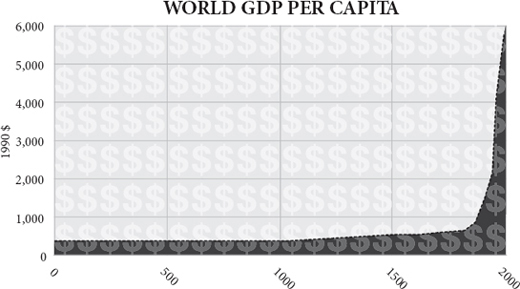
By the middle of this century the human race will have expanded in ten thousand years from less than ten million to nearly ten billion people. Some of the billions alive today still live in misery and dearth even worse than the worst experienced in the Stone Age. Some are worse off than they were just a few months or years before. But the vast majority of people are much better fed, much better sheltered, much better entertained, much better protected against disease and much more likely to live to old age than their ancestors have ever been. The availability of almost everything a person could want or need has been going rapidly upwards for 200 years and erratically upwards for 10,000 years before that: years of lifespan, mouthfuls of clean water, lungfuls of clean air, hours of privacy, means of travelling faster than you can run, ways of communicating farther than you can shout. Even allowing for the hundreds of millions who still live in abject poverty, disease and want, this generation of human beings has access to more calories, watts, lumen-hours, square feet, gigabytes, megahertz, light-years, nanometres, bushels per acre, miles per gallon, food miles, air miles, and of course dollars than any that went before. They have more Velcro, vaccines, vitamins, shoes, singers, soap operas, mango slicers, sexual partners, tennis rackets, guided missiles and anything else they could even imagine needing. By one estimate, the number of different products that you can buy in New York or London tops ten billion.
到本世纪中叶，人类将在一万年内从不到一千万人扩大到近一百亿人。今天活着的几十亿人中，有些人仍然生活在苦难和匮乏之中，甚至比石器时代经历的最糟糕的情况还要糟糕。有些人比他们几个月或几年前的情况还要糟糕。但是，绝大多数人比他们的祖先吃得好得多，住得好得多，娱乐得多，对疾病的保护得多，活到老的可能性大得多。一个人可能想要或需要的几乎所有东西的可用性在 200 年里一直在迅速上升，在那之前的一万年里也在不稳定地上升：多年的寿命，一口干净的水，一口干净的空气，几个小时的隐私，比你能跑得更快的旅行方式，比你能喊得更远的交流方法。即使考虑到数以亿计的人仍然生活在赤贫、疾病和匮乏之中，这一代人所获得的卡路里、瓦特、流明小时、平方英尺、千兆字节、兆赫兹、光年、纳米、每英亩蒲式耳、每加仑英里、食物英里、航空英里，当然还有美元，都比以前的任何一代人多。他们拥有更多的尼龙搭扣、疫苗、维生素、鞋子、歌手、肥皂剧、芒果切片机、性伴侣、网球拍、导弹和其他任何他们能够想象到的需要。根据一项估计，你在纽约或伦敦可以买到的不同产品的数量高达 100 亿。
This should not need saying, but it does. There are people today who think life was better in the past. They argue that there was not only a simplicity, tranquillity, sociability and spirituality about life in the distant past that has been lost, but a virtue too. This rose-tinted nostalgia, please note, is generally confined to the wealthy. It is easier to wax elegiac for the life of a peasant when you do not have to use a long-drop toilet. Imagine that it is 1800, somewhere in Western Europe or eastern North America. The family is gathering around the hearth in the simple timber-framed house. Father reads aloud from the Bible while mother prepares to dish out a stew of beef and onions. The baby boy is being comforted by one of his sisters and the eldest lad is pouring water from a pitcher into the earthenware mugs on the table. His elder sister is feeding the horse in the stable. Outside there is no noise of traffic, there are no drug dealers and neither dioxins nor radioactive fall-out have been found in the cow’s milk. All is tranquil; a bird sings outside the window.
这应该不需要说，但确实如此。今天有些人认为过去的生活更好。他们认为，在遥远的过去，生活中不仅有一种简单、安宁、善于交际和精神上的东西，而且还有一种美德，这些都已经失去了。请注意，这种玫瑰色的怀旧之情一般只限于富人。当你不必使用长滴水马桶时，为农民的生活抒发挽歌会更容易。想象一下，现在是 1800 年，在西欧或北美东部的某个地方。一家人正围在简单的木质结构房屋的壁炉旁。父亲大声朗读圣经，而母亲则准备好了炖牛肉和洋葱。小男孩正被他的一个姐妹安慰着，大男孩正从一个壶里往桌子上的陶杯里倒水。他的姐姐正在马厩里喂马。外面没有交通噪音，没有毒贩子，牛乳中也没有发现二恶英或放射性物质。一切都很平静；一只鸟在窗外唱歌。
Oh please! Though this is one of the better-off families in the village, father’s Scripture reading is interrupted by a bronchitic cough that presages the pneumonia that will kill him at 53 – not helped by the wood smoke of the fire. (He is lucky: life expectancy even in England was less than 40 in 1800.) The baby will die of the smallpox that is now causing him to cry; his sister will soon be the chattel of a drunken husband. The water the son is pouring tastes of the cows that drink from the brook. Toothache tortures the mother. The neighbour’s lodger is getting the other girl pregnant in the hayshed even now and her child will be sent to an orphanage. The stew is grey and gristly yet meat is a rare change from gruel; there is no fruit or salad at this season. It is eaten with a wooden spoon from a wooden bowl. Candles cost too much, so firelight is all there is to see by. Nobody in the family has ever seen a play, painted a picture or heard a piano. School is a few years of dull Latin taught by a bigoted martinet at the vicarage. Father visited the city once, but the travel cost him a week’s wages and the others have never travelled more than fifteen miles from home. Each daughter owns two wool dresses, two linen shirts and one pair of shoes. Father’s jacket cost him a month’s wages but is now infested with lice. The children sleep two to a bed on straw mattresses on the floor. As for the bird outside the window, tomorrow it will be trapped and eaten by the boy.
哦，拜托！虽然这是村子里较好的家庭之一，但父亲的颂经声音被支气管炎咳嗽打断了，这预示着他将在 53 岁时死于肺炎 —— 柴火烟雾对此并无帮助。（他很幸运：1800 年时，即使在英国，预期寿命也不到 40 岁。）婴儿将死于天花，现在正使他哭泣；他的妹妹很快将成为醉酒丈夫的奴隶。儿子倒的水是喝了小河里的牛的味道。牙痛折磨着母亲。邻居的房客现在就在草棚里让另一个女孩怀孕，她的孩子将被送到孤儿院。炖肉是灰色的、粗糙的，但肉是对粥的一种罕见的改变；在这个季节没有水果或沙拉。人们用木勺在木碗里吃东西。蜡烛太贵了，所以只能靠火光看东西。家里没有人看过戏，画过画，听过钢琴。学校是由一个偏执的牧师教的几年枯燥的拉丁文。父亲去过一次城市，但旅行花费了他一个星期的工资，其他人从未离开过家超过 15 英里。每个女儿拥有两件羊毛衫，两件亚麻衬衫和一双鞋。父亲的外套花了他一个月的工资，但现在已经长满了虱子。孩子们两张床睡在地板上的草垫子上。至于窗外的那只鸟，明天就会被男孩围堵抓捕而后吃掉。
If my fictional family is not to your taste, perhaps you prefer statistics. Since 1800, the population of the world has multiplied six times, yet average life expectancy has more than doubled and real income has risen more than nine times. Taking a shorter perspective, in 2005, compared with 1955, the average human being on Planet Earth earned nearly three times as much money (corrected for inflation), ate one-third more calories of food, buried one-third as many of her children and could expect to live one-third longer. She was less likely to die as a result of war, murder, childbirth, accidents, tornadoes, flooding, famine, whooping cough, tuberculosis, malaria, diphtheria, typhus, typhoid, measles, smallpox, scurvy or polio. She was less likely, at any given age, to get cancer, heart disease or stroke. She was more likely to be literate and to have finished school. She was more likely to own a telephone, a flush toilet, a refrigerator and a bicycle. All this during a half-century when the world population has more than doubled, so that far from being rationed by population pressure, the goods and services available to the people of the world have expanded. It is, by any standard, an astonishing human achievement.
如果我虚构的家庭不符合你的口味，也许你更喜欢统计数据。自 1800 年以来，世界人口增加了六倍，但平均预期寿命却增加了一倍多，实际收入增加了九倍多。从更短的角度来看，与 1955 年相比，2005 年地球上的人类平均赚取了近三倍的金钱（根据通货膨胀进行了修正），多吃了三分之一卡路里的食物，少埋葬了三分之一的孩子，并且可以预期延长三分之一的寿命。她不太可能死于战争、谋杀、分娩、事故、龙卷风、洪水、饥荒、百日咳、肺结核、疟疾、白喉、斑疹伤寒、麻疹、天花、坏血病或脊髓灰质炎。在任何特定年龄段，她都不太可能得癌症、心脏病或中风。她更有可能识字并完成学业。她更有可能拥有一部电话、一个抽水马桶、一台冰箱和一辆自行车。所有这一切都发生在世界人口增加了一倍多的半个世纪里，因此，世界人民可获得的商品和服务远没有因为人口压力而受到限制，而是得到了扩大。无论以何种标准衡量，这都是一项惊人的人类成就。
Averages conceal a lot. But even if you break down the world into bits, it is hard to find any region that was worse off in 2005 than it was in 1955. Over that half-century, real income per head ended a little lower in only six countries (Afghanistan, Haiti, Congo, Liberia, Sierra Leone and Somalia), life expectancy in three (Russia, Swaziland and Zimbabwe), and infant survival in none. In the rest they have rocketed upward. Africa’s rate of improvement has been distressingly slow and patchy compared with the rest of the world, and many southern African countries saw life expectancy plunge in the 1990s as the AIDS epidemic took hold (before recovering in recent years). There were also moments in the half-century when you could have caught countries in episodes of dreadful deterioration of living standards or life chances – China in the 1960s, Cambodia in the 1970s, Ethiopia in the 1980s, Rwanda in the 1990s, Congo in the 2000s, North Korea throughout. Argentina had a disappointingly stagnant twentieth century. But overall, after fifty years, the outcome for the world is remarkably, astonishingly, dramatically positive. The average South Korean lives twenty-six more years and earns fifteen times as much income each year as he did in 1955 (and earns fifteen times as much as his North Korean counter part). The average Mexican lives longer now than the average Briton did in 1955. The average Botswanan earns more than the average Finn did in 1955. Infant mortality is lower today in Nepal than it was in Italy in 1951. The proportion of Vietnamese living on less than $2 a day has dropped from 90 per cent to 30 per cent in twenty years.
平均数掩盖了很多东西。但是，即使你把世界分成几个部分，也很难找到任何一个地区在 2005 年比 1955 年的情况更糟。在这半个世纪中，只有六个国家（阿富汗、海地、刚果、利比里亚、塞拉利昂和索马里）的实际人均收入略微下降，三个国家（俄罗斯、斯威士兰和津巴布韦）的预期寿命下降，没有一个国家的婴儿存活率下降。其余国家的预期寿命则急剧上升。与世界其他地区相比，非洲的改善速度令人不安地缓慢和零散，许多南部非洲国家的预期寿命在 20 世纪 90 年代随着艾滋病的流行而急剧下降（在最近几年才恢复）。在这半个世纪中，也有一些时候，你可能会发现一些国家的生活水平或生活机会出现了可怕的恶化 —— 1960 年代的中国，1970 年代的柬埔寨，1980 年代的埃塞俄比亚，1990 年代的卢旺达，2000 年代的刚果，整个朝鲜。阿根廷有一个令人失望的停滞不前的 20 世纪。但总的来说，五十年后，世界的结果是显著的、令人惊讶的、且戏剧性的积极。韩国人平均多活 26 年，每年的收入是 1955 年的 15 倍（收入是朝鲜人的 15 倍）。现在墨西哥人的平均寿命比 1955 年的英国人平均寿命长。博茨瓦纳人的平均收入比芬兰人 1955 年的平均收入高。今天尼泊尔的婴儿死亡率比 1951 年意大利的婴儿死亡率低。每天生活费不足 2 美元的越南人的比例在 20 年内从 90% 下降到 30%。
The rich have got richer, but the poor have done even better. The poor in the developing world grew their consumption twice as fast as the world as a whole between 1980 and 2000. The Chinese are ten times as rich, one-third as fecund and twenty-eight years longer-lived than they were fifty years ago. Even Nigerians are twice as rich, 25 per cent less fecund and nine years longer-lived than they were in 1955. Despite a doubling of the world population, even the raw number of people living in absolute poverty (defined as less than a 1985 dollar a day) has fallen since the 1950s. The percentage living in such absolute poverty has dropped by more than half – to less than 18 per cent. That number is, of course, still all too horribly high, but the trend is hardly a cause for despair: at the current rate of decline, it would hit zero around 2035 – though it probably won’t. The United Nations estimates that poverty was reduced more in the last fifty years than in the previous 500.
富人变得更富有，但穷人做得更好。1980 年至 2000 年期间，发展中国家的穷人的消费增长速度是整个世界的两倍。中国人比五十年前富裕了十倍，生育能力提高了三分之一，寿命延长了二十八年。甚至尼日利亚人也比 1955 年时富裕一倍，生育能力下降 25%，寿命延长 9 年。尽管世界人口增加了一倍，但自 1950 年代以来，即使是生活在绝对贫困（定义为每天不足 1985 美元）中的原始人数也有所下降。生活在这种绝对贫困中的百分比已经下降了一半以上 —— 不到 18%。当然，这个数字仍然高得吓人，但这种趋势并不令人绝望：按照目前的下降速度，它将在 2035 年左右达到零 —— 尽管它可能不会。联合国估计，在过去的 50 年里，贫困的减少比前 500 年要多。
Affluence for all
人人享有富足
Nor was 1955 a time of deprivation. It was in itself a record – a moment when the world was richer, more populous and more comfortable than it had ever been, despite the recent efforts of Hitler, Stalin and Mao (who was then just starting to starve his people so that he could use their grain to buy nuclear weapons from Russia). The 1950s were a decade of extraordinary abundance and luxury compared with any preceding age. Infant mortality in India was already lower than it had been in France and Germany in 1900. Japanese children had almost twice as many years in education in 1950 as at the turn of the century. World income per head had almost doubled in the first half of the twentieth century. In 1958 J.K. Galbraith declared that the ‘affluent society’ had reached such a pitch that many unnecessary goods were now being ‘overprovided’ to consumers by persuasive advertisers.
1955 年也不是一个匮乏的时代。它本身就是一个记录 —— 尽管希特勒、斯大林和毛泽东（当时毛泽东刚刚开始让他的人民挨饿，以便用他们的粮食从俄罗斯购买核武器）最近的努力，世界比以往任何时候都更富裕、人口更多、更舒适。与之前的任何时代相比，20 世纪 50 年代是一个异常丰富和奢侈的十年。印度的婴儿死亡率已经低于 1900 年法国和德国的水平。1950 年，日本儿童接受教育的时间几乎是世纪之交时的两倍。在 20 世纪上半叶，世界人均收入几乎翻了一番。1958 年，加尔布雷斯（J.K. Galbraith）宣布，“富裕社会” 已经达到了这样一个高度，许多不必要的商品现在被有说服力的广告商 “过度提供” 给消费者。
He was right that Americans were especially well off compared with others: they were three inches taller in 1950 than they had been at the turn of the century and spent twice as much on medicine as funerals – the reverse of the ratio in 1900. Roughly eight out of ten American households had running water, central heating, electric light, washing machines and refrigerators by 1955. Almost none had these luxuries in 1900. In his 1890 classic How the Other Half Lives, Jacob Riis encountered a family of nine in New York living in a ten-foot-square room plus a tiny kitchen, and women earning 60 cents a day for sixteen hours’ work in sweatshops and unable to afford more than one meal a day. This would have been unthinkable by mid-century.
他说得没错，与其他国家相比，美国人特别富裕：1950 年他们比世纪之交时高了三英寸，在药品上的花费是葬礼的两倍 —— 与 1900 年的比例相反。到 1955 年，大约五分之四的美国家庭拥有自来水、中央暖气、电灯、洗衣机和冰箱。而在 1900 年，几乎没有人拥有这些奢侈品。在他 1890 年的经典作品《另一半人的生活》中，雅各布·里斯遇到了纽约的一个九口之家，他们住在一个十英尺见方的房间里，外加一个小厨房，妇女在血汗工厂工作 16 个小时，每天挣 60 美分，一天只能吃一餐。这在本世纪中期是不可想象的。
Yet looking back now, another fifty years later, the middle class of 1955, luxuriating in their cars, comforts and gadgets, would today be described as ‘below the poverty line’. The average British working man in 1957, when Harold Macmillan told him he had ‘never had it so good’, was earning less in real terms than his modern equivalent could now get in state benefit if unemployed with three children. Today, of Americans officially designated as ‘poor’, 99 per cent have electricity, running water, flush toilets, and a refrigerator; 95 per cent have a television, 88 per cent a telephone, 71 per cent a car and 70 per cent air conditioning. Cornelius Vanderbilt had none of these. Even in 1970 only 36 per cent of all Americans had air conditioning: in 2005 79 per cent of poor households did. Even in urban China 90 per cent of people now have electric light, refrigerators and running water. Many of them also have mobile phones, internet access and satellite television, not to mention all sorts of improved and cheaper versions of everything from cars and toys to vaccines and restaurants.
然而，再过 50 年后的今天回过头来看，1955 年的中产阶级，在他们的汽车、舒适的生活和小玩意中享受着奢华，今天却被描述为 “贫困线以下”。1957 年，当哈罗德·麦克米伦（Harold Macmillan）告诉他 “从来没有这么好过” 的时候，英国普通劳动者的实际收入比他现在失业并有三个孩子的情况下可以得到的国家福利还要少。今天，在被正式指定为 “穷人” 的美国人中，99% 的人有电、自来水、冲水马桶和冰箱；95% 的人有电视，88% 的人有电话，71% 的人有汽车，70% 的人有空调。科尼利厄斯·范德比尔特没有这些东西。即使在 1970 年，只有 36% 的美国人有空调：2005 年，79% 的贫困家庭有空调。即使在中国城市，90% 的人现在有电灯、冰箱和自来水。他们中的许多人还拥有移动电话、互联网接入和卫星电视，更不用说从汽车和玩具到疫苗和餐馆的各种改进和廉价版本。
Well all right, says the pessimist, but at what cost? The environment is surely deteriorating. In somewhere like Beijing, maybe. But in many other places, no. In Europe and America rivers, lakes, seas and the air are getting cleaner all the time. The Thames has less sewage and more fish. Lake Erie’s water snakes, on the brink of extinction in the 1960s, are now abundant. Bald eagles have boomed. Pasadena has few smogs. Swedish birds’ eggs have 75 per cent fewer pollutants in them than in the 1960s. American carbon monoxide emissions from transport are down 75 per cent in twenty-five years. Today, a car emits less pollution traveling at full speed than a parked car did in 1970 from leaks.
悲观主义者说，好吧，但代价是什么？环境肯定在不断恶化。在像北京这样的地方，也许是这样。但在许多其他地方，没有。在欧洲和美国，河流、湖泊、海洋和空气一直在变干净。泰晤士河有更少的污水和更多的鱼。伊利湖的水蛇，在 20 世纪 60 年代处于灭绝的边缘，现在已经很丰富。白头鹰蓬勃发展。帕萨迪纳的雾霾很少。瑞典鸟蛋中的污染物比 1960 年代少 75%。美国运输业的一氧化碳排放在 25 年内下降了 75%。今天，一辆全速行驶的汽车所排放的污染比 1970 年一辆停在路边的汽车所排放的污染要少。
Meanwhile, average life expectancy in the longest-lived country (Sweden in 1850, New Zealand in 1920, Japan today) continues to march upwards at a steady rate of a quarter of a year per year, a rate of change that has altered little in 200 years. It still shows no sign of reaching a limit, though surely it must one day. In the 1920s demographers confidently asserted that average life span would peak at 65 ‘without intervention of radical innovations or fantastic evolutionary change in our physiological make-up’. In 1990 they predicted life expectancy ‘should not exceed ... 35 years at age 50 unless major breakthroughs occur in controlling the fundamental rate of ageing’. Within just five years both predictions were proved wrong in at least one country.
同时，最长寿的国家（1850 年的瑞典，1920 年的新西兰，今天的日本）的平均预期寿命继续以每年四分之一的速度稳步上升，这一变化速度在 200 年里几乎没有改变。它仍然没有显示出达到极限的迹象，尽管它肯定有一天会达到极限。在 20 世纪 20 年代，人口学家们自信地断言，平均寿命将在 65 岁达到顶峰，“如果没有激进的创新或我们生理结构的奇妙进化的干预”。1990 年，他们预测预期寿命 “除非在控制基本老化速度方面出现重大突破，否则 50 岁时的预期寿命不会超过 35 年……” 在短短五年内，这两个预测至少在一个国家被证明是错误的。
Consequently the number of years of retirement is rocketing upwards. Starting from 1901, it took sixty-eight years for the mortality of British men between 65 and 74 to fall by 20 per cent. Subsequent 20 per cent falls took seventeen years, ten years and six years – the improvement has accelerated. That is all very well, say pessimists, but what about quality of life in old age? Sure, people live longer, but only by having years of suffering and disability added to their lives. Not so. In one American study, disability rates in people over 65 fell from 26.2 per cent to 19.7 per cent between 1982 and 1999 – at twice the pace of the decrease in the mortality rate. Chronic illness before death is if anything shortening slightly, not lengthening, despite better diagnosis and more treatments – ‘the compression of morbidity’ is the technical term. People are not only spending a longer time living, but a shorter time dying.
因此，退休的年限正以火箭般的速度上升。从 1901 年开始，65 至 74 岁的英国男子的死亡率用了 68 年时间下降了 20%。此后的 20% 下降花了 17 年、10 年和 6 年 —— 改善速度加快了。悲观主义者说，这一切都很好，但老年人的生活质量如何呢？当然，人们活得更长，但只是在他们的生命中增加了多年的痛苦和残疾。并非如此。在一项美国研究中，1982 年至 1999 年期间，65 岁以上的人的残疾率从 26.2% 下降到 19.7% —— 是死亡率下降速度的两倍。尽管有更好的诊断和更多的治疗方法，死亡前的慢性疾病正在略微缩短，而不是延长，“发病率的压缩” 是一个技术术语。人们不仅花更长的时间活着，而且花更短的时间死亡。
Take stroke, a big cause of disability in old age. Deaths from stroke fell by 70 per cent between 1950 and 2000 in America and Europe. In the early 1980s a study of stroke victims in Oxford concluded that the incidence of stroke would increase by nearly 30 per cent over the next two decades, mainly because stroke incidence increases with age and people were predicted to live longer. They did live longer but the incidence of stroke in fact fell by 30 per cent. (The age-related increase is still present, but it is coming later and later.) The same is true of cancer, heart disease and respiratory disease: they all still increase with age, but they do so later and later, by about ten years since the 1950s.
以中风为例，这是导致老年残疾的一个重要原因。1950 年至 2000 年间，美国和欧洲因中风死亡的人数下降了 70%。20 世纪 80 年代初，牛津大学对中风患者的研究得出结论，在未来 20 年中，中风的发病率将增加近 30%，主要是因为中风的发病率随着年龄的增长而增加，而且人们被预测会活得更长。他们确实活得更长，但事实上中风的发病率下降了 30%。（与年龄有关的增长仍然存在，但它来得越来越晚。）癌症、心脏病和呼吸道疾病的情况也是如此：它们都仍然随着年龄的增长而增加，但它们越来越晚，自 1950 年代以来增加了大约 10 年。
Even inequality is declining worldwide. It is true that in Britain and America income equality, which had been improving for most of the past two centuries (British aristocrats were six inches taller than the average in 1800; today they are less than two inches taller), has stalled since the 1970s. The reasons for this are many, but they are not all causes for regret. For example, high earners now marry each other more than they used to (which concentrates income), immigration has increased, trade has been freed, cartels have been opened up to entrepreneurial competition and the skill premium has grown in the work place. All these are inequality-boosting, but they stem from liberalising trends. Besides, by a strange statistical paradox, while inequality has increased within some countries, globally it has been falling. The recent enrichment of China and India has increased inequality within those countries by making the income of the rich grow faster than that of the poor – an income gap is an inevitable consequence of an expanding economy. Yet the global effect of the growth of China and India has been to reduce the difference between rich and poor worldwide. As Hayek put it, ‘once the rise in the position of the lower classes gathers speed, catering to the rich ceases to be the main source of great gain and gives place to efforts directed towards the needs of the masses. Those forces which at first make inequality self-accentuating thus later tend to diminish it.’
甚至全世界的不平等也在下降。诚然，在英国和美国，收入平等在过去两个世纪的大部分时间里一直在改善（1800 年英国贵族比普通人高 6 英寸，今天他们的身高不到 2 英寸），但自 20 世纪 70 年代以来，收入平等已经停滞不前。造成这种情况的原因有很多，但并不都是令人遗憾的原因。例如，高收入者现在比以前更多地相互结婚（这使收入集中），移民增加，贸易自由化，卡特尔向企业家竞争开放，工作场所的技能溢价也在增加。所有这些都加剧了不平等，但它们源于自由化的趋势。此外，一个奇怪的统计悖论是，虽然一些国家内部的不平等在增加，但在全球范围内却在下降。最近，中国和印度的富裕使富人的收入增长快于穷人，从而加剧了这些国家内部的不平等 —— 收入差距是经济扩张的必然结果。然而，中国和印度的增长的全球影响是减少了全世界的贫富差距。正如哈耶克所说，“一旦下层阶级的地位上升速度加快，迎合富人就不再是巨大收益的主要来源，而是让位于针对大众需求的努力。那些起初使不平等现象自我膨胀的力量，后来往往会减少它。”
In another respect, too, inequality has been retreating. The spread of IQ scores has been shrinking steadily – because the low scores have been catching up with the high ones. This explains the steady, progressive and ubiquitous improvement in the average IQ scores people achieve at a given age – at a rate of 3 per cent per decade. In two Spanish studies, IQ proved to be 9.7 points higher after thirty years, most of it among the least intelligent half of the group. Known as the Flynn effect, after James Flynn who first drew attention to it, this phenomenon was at first dismissed as an artefact of changes in tests, or a simple reflection of longer or better schooling. But the facts do not fit such explanations because the effect is consistently weakest in the cleverest children and in the tests that relate most to educational content. It is a levelling-up caused by an equalisation of nutrition, stimulation or diversity of childhood experience. You can, of course, argue that IQ may not be truly representative of intelligence, but you cannot argue that something is getting better – and more equal at the same time.
在另一个方面，不平等也一直在退缩。智商分数的分布一直在稳步缩小 —— 因为低分的人一直在追赶高分的人。这就解释了人们在特定年龄段所获得的平均智商分数的稳定、渐进和无处不在的改善 —— 每十年 3% 的速度。在西班牙的两项研究中，30 年后证明智商提高了 9.7 分，其中大部分是最不聪明的那一半人。这种现象被称为弗林效应，是以首先引起人们注意的詹姆斯·弗林的名字命名的，起初被认为是测试变化的产物，或者是更长或更好的学校教育的简单反映。但事实并不符合这样的解释，因为这种效应在最聪明的儿童和与教育内容关系最大的测试中始终是最弱的。这是由营养、刺激或童年经验的多样性的平等化所引起的平坦化。当然，你可以争辩说，智商可能不能真正代表智力，但你不能争辩说，有些东西正在变得更好，同时也更平等。
Even justice has improved thanks to new technology exposing false convictions and identifying true criminals. To date 234 innocent Americans have been freed as a result of DNA fingerprinting after serving an average of twelve years in prison; seventeen of them were on death row. The very first forensic use of DNA in 1986 exonerated an innocent man and then helped to catch the real murderer, a pattern that has been repeated many times since.
由于新技术暴露了错误的定罪和识别真正的罪犯，甚至司法也得到了改善。迄今为止，已有 234 名无辜的美国人在平均服刑 12 年后因 DNA 指纹而获释；其中 17 人是死囚。1986 年，DNA 的首次法医应用使一名无辜者脱罪，然后帮助抓住了真正的凶手，这种模式此后多次重复。
Cheap light
廉价的光明
These richer, healthier, taller, cleverer, longer-lived, freer people – you lot – have been enjoying such abundance that most of the things they need have been getting steadily cheaper. The four most basic human needs – food, clothing, fuel and shelter – have grown markedly cheaper during the past two centuries. Food and clothing especially so (a brief rise in food prices in 2008 notwithstanding), fuel more erratically and even housing has probably got cheaper too: surprising as it may seem, the average family house probably costs slightly less today than it did in 1900 or even 1700, despite including far more modern conveniences like electricity, telephone and plumbing. If basic needs have got cheaper, then there is more disposable income to spend on luxuries. Artificial light lies on the border between necessity and luxury. In monetary terms, the same amount of artificial lighting cost 20,000 times as much in England in the year 1300 as it does today.
这些更富有、更健康、更高大、更聪明、更长寿、更自由的人 —— 你们这些人 —— 一直在享受如此丰富的生活，以至于他们所需要的大多数东西都在不断地变得更便宜。在过去的两个世纪里，人类的四种最基本的需求 —— 食物、衣服、燃料和住所 —— 已经明显地变得便宜了。食物和衣服尤其如此（尽管 2008 年食品价格短暂上涨），燃料更不稳定，甚至住房也可能变得更便宜：尽管看起来令人惊讶，但今天普通家庭的房子可能比 1900 年甚至 1700 年时的价格略低，尽管包括更多的现代便利设施，如电力、电话和管道设施。如果基本需求变得更便宜，那么就有更多的可支配收入用于购买奢侈品。人造光位于必需品和奢侈品之间的边界。以货币计算，在 1300 年的英国，同样数量的人工照明费用是今天的 2 万倍。
Enormous as that difference is, in labour terms the change is even more dramatic and the improvement is even more recent. Ask how much artificial light you can earn with an hour of work at the average wage. The amount has increased from twenty-four lumen-hours in 1750 BC (sesame oil lamp) to 186 in 1800 (tallow candle) to 4,400 in 1880 (kerosene lamp) to 531,000 in 1950 (incandescent light bulb) to 8.4 million lumen-hours today (compact fluorescent bulb). Put it another way, an hour of work today earns you 300 days’ worth of reading light; an hour of work in 1800 earned you ten minutes of reading light. Or turn it round and ask how long you would have to work to earn an hour of reading light – say, the light of an 18-watt compact-fluorescent light bulb burning for an hour. Today it will have cost you less than half a second of your working time if you are on the average wage: half a second of work for an hour of light. In 1950, with a conventional filament lamp and the then wage, you would have had to work for eight seconds to get the same amount of light. Had you been using a kerosene lamp in the 1880s, you would have had to work for about fifteen minutes to get the same amount of light. A tallow candle in the 1800s: over six hours’ work. And to get that much light from a sesame-oil lamp in Babylon in 1750 BC would have cost you more than fifty hours’ of work. From six hours to half a second – a 43,200-fold improvement – for an hour of lighting: that is how much better off you are than your ancestor was in 1800, using the currency that counts, your time. Do you see why my fictional family ate by firelight?
尽管这种差异是巨大的，但从劳动的角度来看，这种变化甚至更加巨大，这种改善甚至是最近才出现的。问问你，以平均工资计算，工作一小时可以赚取多少人造光。这个数量已经从公元前 1750 年的 24 流明小时（芝麻油灯）增加到 1800 年的 186 流明小时（牛油蜡烛），到 1880 年的 4400 流明小时（煤油灯），到 1950 年的 53.1 流明小时（白炽灯泡），到今天的 840 流明小时（紧凑型荧光灯泡）。换个角度看，今天工作一小时可以赚取 300 天的阅读光线；1800 年工作一小时可以赚取 10 分钟的阅读光线。或者反过来问，你要工作多长时间才能获得一小时的阅读光线 —— 比如说，一个 18 瓦的紧凑型荧光灯泡燃烧一小时的光线。今天，如果你拿的是平均工资，它将花费你不到半秒的工作时间：半秒的工作换来一小时的光线。在 1950 年，如果使用传统的灯丝灯和当时的工资，你将不得不工作 8 秒钟来获得同样的光。如果你在 19 世纪 80 年代使用煤油灯，你将不得不工作大约 15 分钟来获得同样的光。19 世纪的牛油蜡烛：需要工作六个小时以上。而在公元前 1750 年的巴比伦，要想从一盏芝麻油灯中获得如此多的光线，你需要花费超过 50 个小时的工作。从六小时到半秒 —— 43,200 倍的改进 —— 一小时的照明：这就是你比你的祖先在 1800 年时好了多少，使用的是有价值的货币，你的时间。你明白为什么我虚构的家庭在火光下吃饭了吗？
Much of this improvement is not included in the cost-of-living calculations, which struggle to compare like with unlike. The economist Don Boudreaux imagined the average American time-travelling back to 1967 with his modern income. He might be the richest person in town, but no amount of money could buy him the delights of eBay, Amazon, Starbucks, Wal-Mart, Prozac, Google or BlackBerry. The lighting numbers cited above do not even take into account the greater convenience and cleanliness of modern electric light compared with candles or kerosene – its simple switching, its lack of smoke, smell and flicker, its lesser fire hazard. Nor is the improvement in lighting finished yet. Compact fluorescent bulbs may be three times as efficient as filament bulbs in turning electrons’ energy into photons’ energy, but light-emitting diodes (LEDs) are rapidly overtaking them (as of this writing LEDs with ten times the efficiency of incandescent bulbs have been demonstrated) and have the added benefit of working at a portable scale. A cheap LED flashlight, powered by a solar-charged battery, will surely soon transform the life of some of the 1.6 billion people who do not have mains electricity, African peasants prominent among them. Admittedly, LEDs are still far too expensive to replace most light bulbs, but that might change.
这种改善的大部分没有包括在生活费用的计算中，而生活费用的计算又很难将同类与非同类进行比较。经济学家唐·包德利奥（Don Boudreaux）想象普通美国人带着他的现代收入穿越时空回到 1967 年。他可能是镇上最富有的人，但再多的钱也买不到 eBay、亚马逊、星巴克、沃尔玛、百忧解、谷歌或黑莓等的乐趣。上面引用的照明数字甚至没有考虑到现代电灯与蜡烛或煤油相比更加方便和清洁 —— 其简单的开关，没有烟雾、气味和闪烁，火灾危险更小。照明的改进也还没有完成。在将电子能量转化为光子能量方面，紧凑型荧光灯泡的效率可能是灯丝灯泡的三倍，但发光二极管（LED）正在迅速超越它们（截至本文写作时，已经证明 LED 的效率是白炽灯泡的十倍），并且具有在便携式范围内工作的额外好处。一个廉价的 LED 手电筒，由太阳能充电电池供电，肯定会很快改变 16 亿没有主电源的人的生活，非洲农民就是其中的佼佼者。诚然，LED 仍然过于昂贵，无法取代大多数灯泡，但这可能会改变。
Think what these improvements in lighting efficiency mean. You can either have a lot more light, or do a lot less work, or acquire something else. Devoting less of your working week to earning your lighting means devoting more of it to doing something else. That something else can mean employment for somebody else. The improved technology of lighting has liberated you to make or buy another product or service, or do a charitable act. That is what economic growth means.
想想这些照明效率的提高意味着什么。你可以拥有更多的灯光，或者做更少的工作，或者获得其他东西。减少你的工作周用于赚取你的照明意味着将更多的时间用于做其他事情。这其他的事情可能意味着为其他人就业。照明技术的改进使你可以制造或购买另一种产品或服务，或做一件慈善事业。这就是经济增长的意义。
Saving time
节省时间
Time: that is the key. Forget dollars, cowrie shells or gold. The true measure of something’s worth is the hours it takes to acquire it. If you have to acquire it for yourself, it usually takes longer than if you get it ready-made by other people. And if you can get it made efficiently by others, then you can afford more of it. As light became cheaper so people used more of it. The average Briton today consumes roughly 40,000 times as much artificial light as he did in 1750. He consumes fifty times as much power and 250 times as much transport (measured in passenger-miles travelled), too.
时间：这就是关键所在。忘掉美元、牛耳壳或黄金吧。衡量一件东西价值的真正标准是获得它所需的时间。如果你必须自己获取它，通常要比你从别人那里得到现成的东西花费更多时间。如果你能让别人有效地制造它，那么你就能买得起更多的东西。由于光变得更便宜，所以人们使用更多的光。今天，普通的英国人所消耗的人造光大约是 1750 年的 4 万倍。他消耗的电力是 50 倍，运输量也如此之多，是 250 倍（以乘客行驶的英里数计算）。
This is what prosperity is: the increase in the amount of goods or services you can earn with the same amount of work. As late as the mid-1800s, a stagecoach journey from Paris to Bordeaux cost the equivalent of a clerk’s monthly wages; today the journey costs a day or so and is fifty times as fast. A half-gallon of milk cost the average American ten minutes of work in 1970, but only seven minutes in 1997. A three-minute phone call from New York to Los Angeles cost ninety hours of work at the average wage in 1910; today it costs less than two minutes. A kilowatt-hour of electricity cost an hour of work in 1900 and five minutes today. In the 1950s it took thirty minutes work to earn the price of a McDonald’s cheeseburger; today it takes three minutes. Healthcare and education are among the few things that cost more in terms of hours worked now than they did in the 1950s.
这就是繁荣的含义：用同样多的工作可以赚取的商品或服务的数量增加。早在 19 世纪中期，从巴黎到波尔多的驿站旅行的费用相当于一个文员的月工资；今天，旅行的费用是一天左右，速度是原来的 50 倍。1970 年，半加仑的牛奶花费了美国人平均 10 分钟的工作时间，但在 1997 年只需要 7 分钟。从纽约到洛杉矶打一个三分钟的电话，在 1910 年需要花费 90 个小时的平均工资，而今天只需要不到两分钟。在 1900 年，一千瓦时的电需要花费一小时的工作，而今天则需要 5 分钟。在 20 世纪 50 年代，工作 30 分钟才能赚到一个麦当劳芝士汉堡的价格；今天只需要 3 分钟。医疗保健和教育是现在按工作时间计算比 1950 年代花费更多的几件事之一。
Even the most notorious of capitalists, the robber barons of the late nineteenth century, usually got rich by making things cheaper. Cornelius Vanderbilt is the man for whom the New York Times first used the word ‘robber baron’. He is the very epitome of the phrase. Yet observe what Harper’s Weekly had to say about his railways in 1859:
即使是最臭名昭著的资本家，19 世纪末的强盗男爵，通常也是通过使东西更便宜而致富。科尼利厄斯·范德比尔特（Cornelius Vanderbilt）是《纽约时报》首次使用 “强盗男爵” 一词的人。他是这一短语的缩影。然而，请看《哈珀周刊》在 1859 年对他的铁路所做的评价。
The results in every case of the establishment of opposition lines by Vanderbilt has been the permanent reduction of fares. Wherever he ‘laid on’ an opposition line, the fares were instantly reduced, and however the contest terminated, whether he bought out his opponents, as he often did, or they bought him out, the fares were never again raised to the old standard. This great boon – cheap travel – this community owes mainly to Cornelius Vanderbilt.
范德比尔特建立反对派线路的每个案例的结果都是永久性地降低了票价。无论他在哪里 “铺设” 反对线，票价都会立即降低，而且无论竞争如何结束，无论他是买断了对手（他经常这样做），还是对手买断了他，票价都不会再提高到旧的标准。这一巨大的福利 —— 廉价旅行 —— 这个社会主要归功于科尼利厄斯·范德比尔特。
Rail freight charges fell by 90 per cent between 1870 and 1900. There is little doubt that Vanderbilt sometime bribed and bullied his way to success, and that he sometimes paid his workers lower wages than others – I am not trying to make him into a saint – but there is also no doubt that along the way he delivered to consumers an enormous benefit that would otherwise have eluded them – affordable transport. Likewise, Andrew Carnegie, while enormously enriching himself, cut the price of a steel rail by 75 per cent in the same period; John D. Rockefeller cut the price of oil by 80 per cent. During those thirty years, the per capita GDP of Americans rose by 66 per cent. They were enricher-barons, too.
1870 年至 1900 年间，铁路运费下降了 90%。毫无疑问，范德比尔特有时通过贿赂和欺凌获得了成功，他有时付给工人的工资比别人低 —— 我不是想把他变成一个圣人 —— 但同样毫无疑问的是，在这一过程中，他为消费者带来了巨大的利益，否则他们将无法得到这种利益 —— 负担得起的运输。同样，安德鲁·卡内基（Andrew Carnegie）在大肆敛财的同时，也在同一时期将钢轨的价格降低了 75%；约翰·D·洛克菲勒（John D. Rockefeller）将石油价格降低了 80%。在这三十年间，美国人的人均国内生产总值增加了 66%。他们也是致富的枭雄。
Henry Ford got rich by making cars cheap. His first Model T sold for $825, unprecedentedly cheap at the time, and four years later he had cut the price to $575. It took about 4,700 hours of work to afford a Model T in 1908. It takes about 1,000 hours today to afford an ordinary car – though one that is brimming with features that Model Ts never had. The price of aluminium fell from $545 a pound in the 1880s to 20 cents a pound in the 1930s, thanks to the innovations of Charles Martin Hall and his successors at Alcoa. (Alcoa’s reward for this price cut was to be sued by the government on 140 counts of criminal monopoly: the rapid decrease in the price of its product being used as evidence of a determination to deter competition. Microsoft suffered the same allegation later in the century.) When Juan Trippe sold cheap tourist-class seats on his Pan Am airline in 1945, the other airlines were so insulted that they petitioned their governments to ban Pan Am: Britain, shamefully, agreed, so Pan Am flew to Ireland instead. The price of computing power fell so fast in the last quarter of the twentieth century that the capacity of a tiny pocket calculator in 2000 would have cost you a lifetime’s wages in 1975. The price of a DVD player in Britain fell from £400 in 1999 to £40 just five years later, a decline that exactly matched the earlier one of the video recorder, but happened much faster.
亨利·福特（Henry Ford）通过制造廉价汽车致富。他的第一辆 T 型车售价为 825 美元，在当时是前所未有的便宜，四年后他将价格降至 575 美元。1908 年，买得起一辆 T 型车需要大约 4700 个小时的工作。今天，买得起一辆普通的汽车需要大约 1000 个小时 —— 尽管它充满了 T 型车所没有的功能。由于查尔斯·马丁·霍尔和他在美国铝业公司的继任者的创新，铝的价格从 19 世纪 80 年代的每磅 545 美元下降到 1930 年代的每磅 20 美分。（美国铝业公司对这次降价的回报是被政府以 140 项犯罪垄断的罪名起诉：其产品价格的迅速下降被作为决心阻止竞争的证据。微软在本世纪晚些时候也遭遇了同样的指控。）1945 年，当胡安·特里普（Juan Trippe）在他的泛美航空上出售廉价旅游舱座位时，其他航空公司受到了极大的侮辱，他们向政府请愿，要求禁止泛美航空：英国可耻地同意了，因此泛美航空改为飞往爱尔兰。计算能力的价格在二十世纪最后四分之一的时间里下降得如此之快，2000 年一个小小的袖珍计算器的容量在 1975 年要花费你一生的工资。在英国，一台 DVD 播放器的价格从 1999 年的 400 英镑下降到五年后的 40 英镑，这种下降与早先录像机的下降完全一致，但发生得更快。
Falling consumer prices is what enriches people (deflation of asset prices can ruin them, but that is because they are using asset prices to get them the wherewithal to purchase consumer items). And, once again, notice that the true metric of prosperity is time. If Cornelius Vanderbilt or Henry Ford not only moves you faster to where you want to go, but requires you to work fewer hours to earn the ticket price, then he has enriched you by granting you a dollop of free time. If you choose to spend that spare time consuming somebody else’s production then you can enrich him in turn; if you choose to spend it producing for his consumption then you have also further enriched yourself.
消费价格的下降是使人们致富的原因（资产价格的通缩会毁了他们，但那是因为他们是用资产价格来使他们有资金购买消费物品）。而且，再次注意到，衡量繁荣的真正标准是时间。如果科尼利厄斯·范德比尔特或亨利·福特不仅让你更快地到达你想去的地方，而且要求你减少工作时间来赚取票价，那么他通过给予你大量的自由时间而使你富裕起来。如果你选择用这些空闲时间去消费别人的产品，那么你可以反过来使他致富；如果你选择用这些时间去为他生产消费，那么你也进一步使自己致富。
Housing, too, is itching to get cheaper, but for confused reasons governments go to great lengths to prevent it. Where it took sixteen weeks to earn the price of 100 square feet of housing in 1956, now it takes fourteen weeks and the housing is of better quality. But given the ease with which modern machinery can assemble a house, the price should have come down much faster than that. Governments prevent this by, first, using planning or zoning laws to restrict supply (especially in Britain); second, using the tax system to encourage mortgage borrowing (in the United States at least – no longer in Britain); and third, doing all they can to stop property prices falling after a bubble. The effect of these measures is to make life harder for those who do not yet have a house and massively reward those who do. To remedy this, governments then have to enforce the building of more affordable housing, or subsidise mortgage lending to the poor.
住房也渴望变得更便宜，但由于混乱的原因，政府不遗余力地阻止它。在 1956 年，100 平方英尺的住房需要 16 个星期才能赚到钱，而现在只需要 14 个星期，而且住房的质量也更好。但考虑到现代机器可以很容易地组装房屋，价格应该比这更快地下降。政府通过以下方式来防止这种情况：第一，使用规划或分区法律来限制供应（特别是在英国）；第二，使用税收制度来鼓励抵押贷款（至少在美国 —— 在英国不再如此）；第三，尽其所能阻止房地产价格在泡沫之后下降。这些措施的效果是使那些还没有房子的人的生活更加困难，而大量奖励那些有房子的人。为了纠正这种情况，政府必须强制建造更多可负担得起的住房，或对穷人的抵押贷款进行补贴。
Happiness
幸福
As necessities and luxuries get cheaper, do people get happier? A small cottage industry grew up at the turn of the twenty-first century devoted to the subject of the economics of happiness. It started with the paradox that richer people are not necessarily happier people. Beyond a certain level of per capita income ($15,000 a year, according to Richard Layard), money did not seem to buy subjective well-being. As books and papers cascaded out of the academy, Schadenfreude set in on a grand scale among commentators happy to see the unhappiness of the rich confirmed. Politicians latched on and governments from Thailand to Britain began to think about how to maximise gross national happiness instead of gross national product. British government departments now have ‘well-being divisions’ as a result. King Jigme Singye Wangchuck of Bhutan is credited with having been the first to get there in 1972 when he declared economic growth a secondary goal to national well-being. If economic growth does not produce happiness, said the new wisdom, then there was no point in striving for prosperity and the world economy should be brought to a soft landing at a reasonable level of income. Or, as one economist put it: ‘The hippies were right all along’.
随着必需品和奢侈品越来越便宜，人们是否会变得更快乐？在二十一世纪之交，一个小型的家庭工业发展起来，专门研究幸福经济学的问题。它始于这样一个悖论：更富有的人不一定是更幸福的人。超过一定的人均收入水平 —— 根据理查德·莱亚德（Richard Layard），每年 15,000 美元 —— 金钱似乎不能买到主观幸福感。随着书籍和论文从学术界层出不穷，乐于看到富人不幸福的评论家们开始大肆宣扬幸灾乐祸。从泰国到英国的政治家们也开始思考如何最大限度地提高国民幸福感而不是国民生产总值。英国政府部门现在有 “幸福部门” 作为结果。不丹国王吉格梅·辛格·旺楚克（Jigme Singye Wangchuck）在 1972 年宣布经济增长是国民幸福的次要目标时，被认为是第一个做到这一点的人。新的智慧说，如果经济增长不能产生幸福，那么争取繁荣就没有意义，世界经济应该在合理的收入水平上实现软着陆。或者，正如一位经济学家所说：“嬉皮士一直都是对的”。
If true, this rather punctures the rational optimist’s balloon. What is the point of celebrating the continuing defeat of death, dearth, disease and drudgery, if it does not make people happier? But it is not true. The debate began with a study by Richard Easterlin in 1974, which found that although within a country rich people were generally happier than poor people, richer countries did not have happier citizens than poor countries. Since then the ‘Easterlin paradox’ has become the central dogma of the debate. Trouble is, it is wrong. Two papers were published in 2008 analysing all the data, and the unambiguous conclusion of both is that the Easterlin paradox does not exist. Rich people are happier than poor people; rich countries have happier people than poor countries; and people get happier as they get richer. The earlier study simply had samples too small to find significant differences. In all three categories of comparison – within countries, between countries and between times – extra income does indeed buy general well-being. That is to say, on average, across the board, on the whole, other things being equal, more money does make you happier. In the words of one of the studies, ‘All told, our time-series comparisons, as well as evidence from repeated international cross-sections, appear to point to an important relationship between economic growth and growth in subjective well-being’.
如果是真的，这反而刺破了理性乐观主义者的气球。如果不能使人们更加幸福，那么庆祝持续击败死亡、贫乏、疾病和苦役的意义何在？但事实并非如此。辩论始于理查德·伊斯特林（Richard Easterlin）在 1974 年的一项研究，该研究发现，尽管在一个国家内，富人通常比穷人更幸福，但较富裕的国家并没有比贫穷国家的公民更幸福。从那时起，“伊斯特林悖论” 就成了这场辩论的核心教条。麻烦的是，它是错误的。2008 年发表了两篇分析所有数据的论文，这两篇论文的明确结论是，伊斯特林悖论并不存在。富人比穷人更幸福；富国的人比穷国的人更幸福；人们随着越来越富有而变得更幸福。早期的研究只是样本太小，无法发现明显的差异。在所有三类比较中 —— 国家内部、国家之间和时间之间 —— 额外的收入确实可以购买一般的幸福。也就是说，平均而言，从整体上看，在其他条件相同的情况下，更多的钱确实让你更快乐。用其中一项研究的话说，"总的来说，我们的时间序列比较，以及从重复的国际横断面得到的证据，似乎表明经济增长和主观幸福感的增长之间存在着重要关系。
There are some exceptions. Americans currently show no trend towards increasing happiness. Is this because the rich had got richer but ordinary Americans had not prospered much in recent years? Or because America continually draws in poor (unhappy) immigrants, which keeps the happiness quotient low? Who knows? It was not because the Americans are too rich to get any happier: Japanese and Europeans grew steadily happier as they grew richer despite being often just as rich as Americans. Moreover, surprisingly, American women have become less happy in recent decades despite getting richer.
有一些例外情况。美国人目前没有显示出幸福感增加的趋势。这是因为富人变得更富有的同时普通美国人近年来并没有什么繁荣？或者是因为美国不断地吸引贫穷（不快乐）的移民，这使得幸福指数一直很低？谁知道呢？并不是因为美国人太有钱了，所以才会变得更幸福。日本人和欧洲人尽管经常和美国人一样富有，但随着他们越来越富有，他们的幸福感也稳步增长。此外，令人惊讶的是，近几十年来，美国妇女尽管越来越富有，但却变得不那么幸福。
Of course, it is possible to be rich and unhappy, as many a celebrity gloriously reminds us. Of course, it is possible to get rich and find that you are unhappy not to be richer still, if only because the neighbour – or the people on television – are richer than you are. Economists call this the ‘hedonic treadmill’; the rest of us call it ‘keeping up with the Joneses’. And it is probably true that the rich do lots of unnecessary damage to the planet as they go on striving to get richer long after the point where it is having much effect on their happiness – they are after all endowed with instincts for ‘rivalrous competition’ descended from hunter-gatherers whose relative, not absolute, status determined their sexual rewards. For this reason a tax on consumption to encourage saving for investment instead is not necessarily a bad idea. However, this does not mean that anybody would be necessarily happier if poorer – to be well off and unhappy is surely better than to be poor and unhappy. Of course, some people will be unhappy however rich they are, while others manage to bounce back cheerful even in poverty: psychologists find people to have fairly constant levels of happiness to which they return after elation or disaster. Besides, a million years of natural selection shaped human nature to be ambitious to rear successful children, not to settle for contentment: people are programmed to desire, not to appreciate.
当然，正如许多名人光荣地提醒我们的那样，富有而不快乐是可能的。当然，也有可能变得富有，但发现你不富有也不快乐，哪怕只是因为邻居 —— 或电视上的人 —— 比你更富有。经济学家称这是 “享乐主义跑步机”；我们其他人称这是 “跟上琼斯的步伐”。富人可能确实对地球造成了很多不必要的损害，因为他们在对自己的幸福产生很大影响之后，还在继续努力变得更富有 —— 他们毕竟具有 “竞争的本能”，是狩猎采集者的后代，他们的相对而非绝对地位决定了他们的性报酬。出于这个原因，征收消费税以鼓励储蓄投资并不一定是个坏主意。然而，这并不意味着任何人如果更穷就一定会更快乐 —— 富裕而不快乐肯定比贫穷而不快乐好。当然，有些人无论多么富有都会不快乐，而另一些人即使在贫困中也能愉快地反弹：心理学家发现人们有相当稳定的幸福水平，他们在欣喜或灾难之后会回到这个水平。此外，一百万年的自然选择塑造了人类雄心勃勃地抚养成功的孩子的天性，而不是满足于满足：人们被设计为渴望，而不是欣赏。
Getting richer is not the only or even the best way of getting happier. Social and political liberation is far more effective, says the political scientist Ronald Ingleheart: the big gains in happiness come from living in a society that frees you to make choices about your lifestyle – about where to live, who to marry, how to express your sexuality and so on. It is the increase in free choice since 1981 that has been responsible for the increase in happiness recorded since then in forty-five out of fifty-two countries. Ruut Veenhoven finds that ‘the more individualized the nation, the more citizens enjoy their life.’
变得更富有并不是获得幸福的唯一途径，甚至不是最佳途径。社会和政治解放要有效得多，政治学家 罗纳德-英格莱心（Ronald Ingleheart）说：幸福感的巨大提升来自于生活在一个让你可以自由选择生活方式的社会 —— 关于住在哪里、和谁结婚、如何表达你的性行为等等。自 1981 年以来，正是自由选择的增加导致了五十二个国家中四十五个国家的幸福感增加。鲁特·维恩霍芬发现，“国家越是个性化，公民越是享受他们的生活。”
Crunch
紧缩
And yet, good as life is, today life is not good. Happy statistics of recent improvement sound as hollow to a laid-off car worker in Detroit or an evicted house owner in Reykjavik as they would to a cholera victim in Zimbabwe or a genocide refugee in Congo. War, disease, corruption and hate still disfigure the lives of millions; nuclear terrorism, rising sea levels and pandemic flu may yet make the twenty-first century a dreadful place. True, but assuming the worst will not avert these fates; striving to continue improving the human lot may. It is precisely because so much human betterment has been shown to be possible in recent centuries that the continuing imperfection of the world places a moral duty on humanity to allow economic evolution to continue. To prevent change, innovation and growth is to stand in the way of potential compassion. Let it never be forgotten that, by propagating excessive caution about genetically modified food aid, some pressure groups may have exacerbated real hunger in Zambia in the early 2000s. The precautionary principle – better safe than sorry – condemns itself: in a sorry world there is no safety to be found in standing still.
然而，尽管生活是美好的，今天的生活并不美好。对于底特律的下岗汽车工人或雷克雅未克的被驱逐的房主来说，最近改善的幸福数据听起来就像对津巴布韦的霍乱受害者或刚果的种族灭绝难民一样空洞。战争、疾病、腐败和仇恨仍然毁坏着数百万人的生活；核恐怖主义、海平面上升和大流行性流感可能还会使 21 世纪成为一个可怕的地方。诚然，但假设最坏的情况不会避免这些命运；努力继续改善人类的命运可能。正是因为近几个世纪以来，人类的进步已被证明是可能的，所以世界的持续不完美使人类有道德责任允许经济进化继续下去。阻止变革、创新和增长就是阻碍了潜在的同情心。让我们永远不要忘记，通过宣传对转基因食品援助的过度谨慎，一些压力团体可能在 2000 年代初加剧了赞比亚的真正饥饿。预防原则 —— 安全比遗憾好 —— 谴责自己：在一个遗憾的世界里，没有安全可言，只能停滞不前。
More immediately, the financial crash of 2008 has caused a deep and painful recession that will generate mass unemployment and real hardship in many parts of the world. The reality of rising living standards feels to many today to be a trick, a pyramid scheme achieved by borrowing from the future.
更为直接的是，2008 年的金融风暴造成了深刻而痛苦的经济衰退，这将在世界许多地方造成大规模的失业和真正的困苦。今天，在许多人看来，生活水平提高的现实是一个骗局，是一个通过向未来借贷实现的金字塔计划。
Until he was rumbled in 2008, Bernard Madoff offered his investors high and steady returns of more than 1 per cent a month on their money for thirty years. He did so by paying new investors’ capital out to old investors as revenue, a chain-letter con trick that could not last. When the music stopped, $65 billion of investors’ funds had been looted. It was roughly what John Law did in Paris with the Mississippi Company in 1719, what John Blunt did in London with the South Sea company in 1720, what Charles Ponzi did in Boston in 1920 with reply coupons for postage stamps, what Ken Lay did with Enron’s stock in 2001.
在 2008 年被揭露之前，伯纳德·麦道夫（Bernard Madoff）为他的投资者提供了每月超过 1% 的高额稳定回报，持续了 30 年。他是通过将新投资者的资金作为收入支付给老投资者，这种连环骗局不可能持久。当音乐停止时，650 亿美元的投资者的资金被洗劫一空。这大概就是约翰·劳（John Law）1719 年在巴黎对密西西比公司所做的事，约翰·布朗特（John Blunt）1720 年在伦敦对南海公司所做的事，查尔斯·庞兹（Charles Ponzi）1920 年在波士顿对邮票的回邮券所做的事，肯·莱（Ken Lay）2001 年对安然公司股票所做的事。
Is it possible that not just the recent credit boom, but the entire postwar rise in living standards was a Ponzi scheme, made possible by the gradual expansion of credit? That we have in effect grown rich by borrowing the means from our children and that a day of reckoning is now at hand? It is certainly true that your mortgage is borrowed (via a saver somewhere else, perhaps in China) from your future self, who will pay it off. It is also true on both sides of the Atlantic that your state pension will be funded by your children’s taxes, not by your payroll contributions as so many think.
是否有可能不仅仅是最近的信贷繁荣，而是整个战后生活水平的提高都是一个庞氏骗局，是由信贷的逐步扩张促成的？我们实际上是通过向我们的孩子借钱而致富的，现在清算的日子就要到了？当然，你的抵押贷款是（通过其他地方的储蓄者，也许是在中国）从你未来的自己那里借来的 —— 他将会把它还清。在大西洋两岸也是如此，你的国家养老金将由你的孩子的税收资助，而不是像许多人认为的那样由你的工资缴款资助。
But there is nothing unnatural about this. In fact, it is a very typical human pattern. By the age of 15 chimpanzees have produced about 40 per cent and consumed about 40 per cent of the calories they will need during their entire lives. By the same age, human hunter-gatherers have consumed about 20 per cent of their lifetime calories, but produced just 4 per cent. More than any other animal, human beings borrow against their future capabilities by depending on others in their early years. A big reason for this is that hunter-gatherers have always specialised in foods that need extraction and processing – roots that need to be dug and cooked, clams that need to be opened, nuts that need to be cracked, carcasses that need to be butchered – whereas chimpanzees eat things that simply need to be found and gathered, like fruit or termites. Learning to do this extraction and processing takes time, practice and a big brain, but once a human being has learnt, he or she can produce a huge surplus of calories to share with the children. Intriguingly, this pattern of production over the lifespan in hunter-gatherers is more like the modern Western lifestyle than it is like the farming, feudal or early industrial lifestyles. That is to say, the notion of children taking twenty years even to start to bring in more than they consume, and then having forty years of very high productivity, is common to hunter-gatherers and modern societies, but was less true in the period in between, when children could and did go to work to support their own consumption.
但这并没有什么不自然的地方。事实上，这是一个非常典型的人类模式。到 15 岁时，黑猩猩已经生产了他们一生中所需要的大约 40% 的热量，并消耗了大约 40% 的热量。在同一年龄段，人类的狩猎采集者已经消耗了他们一生中约 20% 的热量，但只生产了 4%。与其他任何动物相比，人类在早年依赖他人的情况下，对其未来能力的借贷更多。其中一个重要原因是，狩猎·采集者总是专门从事需要提取和加工的食物 —— 需要挖掘和烹调的根茎，需要打开的蛤蜊，需要敲碎的坚果，需要屠宰的尸体 —— 而黑猩猩吃的东西只需要找到和收集，如水果或白蚁。学习这种提取和加工需要时间、实践和大脑筋，但一旦人类学会了，他或她就可以生产出大量的剩余热量与孩子们分享。耐人寻味的是，狩猎·采集者一生中的这种生产模式更像现代西方的生活方式，而不像农耕、封建或早期工业的生活方式。也就是说，儿童甚至需要 20 年才能开始带来超过他们消耗的东西，然后有 40 年非常高的生产力，这种概念在狩猎采集者和现代社会中很常见，但在两者之间的时期却不那么真实，当时儿童可以而且确实去工作以支持他们自己的消费。
The difference today is that intergenerational transfers take a more collective form – income tax on all productive people in their prime pays for education for all, for example. In that sense, the economy (like a chain letter, but unlike a shark, actually) must keep moving forward or it collapses. The banking system makes it possible for people to borrow and consume when they are young and to save and lend when they are old, smoothing their family living standards over the decades. Posterity can pay for its ancestors’ lives because posterity can be richer through innovation. If somebody somewhere takes out a mortgage, which he will repay in three decades’ time, to invest in a business that invents a gadget that saves his customers time, then that money, brought forward from the future, will enrich both him and those customers to the point where the loan can be repaid to posterity. That is growth. If, on the other hand, somebody takes out a loan just to support his luxury lifestyle, or to speculate on asset markets by buying a second home, then posterity will be the loser. That is what, it is now clear, far too many people and businesses did in the 2000s – they borrowed more from posterity than their innovation rate would support. They misallocated the resources to unproductive ends. Most past bursts of human prosperity have come to naught because they allocated too little money to innovation and too much to asset price inflation or to war, corruption, luxury and theft.
今天的区别是，代际转移采取了更多的集体形式 —— 例如，对所有处于壮年的生产者征收所得税，以支付所有人的教育费用。在这个意义上，经济（就像连锁信，但实际上与鲨鱼不同）必须不断向前发展，否则就会崩溃。银行系统使人们有可能在年轻时借款和消费，在年老时储蓄和贷款，使他们的家庭生活水平在几十年内保持平稳。后人可以为其祖先的生活买单，因为后人可以通过创新变得更加富有。如果某人在某地办理了抵押贷款，他将在三十年后偿还，以投资于一个发明了能为客户节省时间的小工具的企业，那么，从未来带来的这笔钱将使他和这些客户都变得更富有，以至于可以向后人偿还贷款。这就是增长。另一方面，如果有人贷款只是为了支持其奢侈的生活方式，或通过购买第二套住房来投机资产市场，那么后人将是失败者。现在很清楚，这就是 2000 年代太多的人和企业所做的事情 —— 他们向后代借的钱超过了他们的创新率所能支持的程度。他们把资源错误地分配给了非生产性的目的。过去大多数人类繁荣的爆发都归于失败，因为他们分配给创新的资金太少，而分配给资产价格膨胀或战争、腐败、奢侈和盗窃的资金太多。
In the Spain of Charles V and Philip II, the gigantic wealth of the Peruvian silver mines was wasted. The same ‘curse of resources’ has afflicted countries with windfalls ever since, especially those with oil (Russia, Venezuela, Iraq, Nigeria) that end up run by rent-seeking autocrats. Despite their windfalls, such countries experience lower economic growth than countries that entirely lack resources but get busy trading and selling – Holland, Japan, Hong Kong, Singapore, Taiwan, South Korea. Even the Dutch, those epitomes of seventeenth-century enterprise, fell under the curse of resources in the late twentieth century when they found too much natural gas: the Dutch disease, they called it, as their inflated currency hurt their exporters. Japan spent the first half of the twentieth century jealously seeking to grab resources and ended up in ruins; it spent the second half of the century trading and selling without resources and ended up topping the lifespan league. In the 2000s the West misspent much of the cheap windfall of Chinese savings that the United States Federal Reserve sluiced our way.
在查理五世和菲利普二世的西班牙，秘鲁银矿的巨大财富被浪费了。从那时起，同样的 “资源诅咒” 一直困扰着拥有暴利的国家，尤其是那些拥有石油的国家（俄罗斯、委内瑞拉、伊拉克、尼日利亚），最终由寻租的独裁者管理。尽管有暴利，这些国家的经济增长仍低于那些完全缺乏资源但忙于贸易和销售的国家 —— 荷兰、日本、香港、新加坡、台湾、韩国。即使是荷兰，这些十七世纪企业的缩影，在二十世纪末也受到了资源的诅咒，因为他们发现了太多的天然气：他们称之为荷兰病，因为他们膨胀的货币伤害了他们的出口商。日本在二十世纪上半叶眼红地寻求攫取资源，最后落得个身败名裂的下场；在本世纪下半叶，它在没有资源的情况下进行贸易和销售，最后在寿命联赛中名列前茅。在 2000 年代，西方国家把美国联邦储备局向我们输送的中国储蓄的廉价意外之财的大部分都花掉了。
So long as somebody allocates sufficient capital to innovation, then the credit crunch will not in the long run prevent the relentless upward march of human living standards. If you look at a graph of world per capita GDP, the Great Depression of the 1930s is just a dip in the slope. By 1939 even the worst-affected countries, America and Germany, were richer than they were in 1930. All sorts of new products and industries were born during the Depression: by 1937, 40 per cent of DuPont’s sales came from products that had not even existed before 1929, such as rayon, enamels and cellulose film. So growth will resume – unless prevented by the wrong policies. Somebody, somewhere, is still tweaking a piece of software, testing a new material, or transferring a gene that will make your and my life easier in the future. I cannot know who or where he is for sure, but let me give you a candidate. In the week I wrote this paragraph, a small company called Arcadia Biosciences in northern California signed an agreement with a charity working in Africa to license, royalty-free to smallholders, new varieties of rice that can be grown with less nitrogen fertiliser for the same yield, thanks to the over-expression in the roots of a version of a gene called alanine aminotransferase borrowed from barley. Assuming the varieties work in Africa as well as they do in California, some African will one day grow and sell more food (for less pollution), which in turn means that he will have more money to spend, earning the cost of, say, a mobile phone, which he will buy from a Western company, and which will help him find a better market for his rice. An employee of that Western company will get a pay rise, which she will spend on a new pair of jeans, which were made from cotton woven in a factory that employs the smallholder’s neighbour. And so on.
只要有人将足够的资本分配给创新，那么从长远来看，信贷紧缩不会阻止人类生活水平的无情上升。如果你看一下世界人均 GDP 的图表，20 世纪 30 年代的大萧条只是斜面上的一个凹陷。到 1939 年，即使是受影响最严重的国家，美国和德国，也比 1930 年时更富有。各种新产品和新产业在大萧条期间诞生：到 1937 年，杜邦公司 40% 的销售额来自 1929 年之前甚至不存在的产品，如人造丝、搪瓷和纤维素薄膜。因此，增长将会恢复 —— 除非被错误的政策所阻止。某人，在某个地方，仍然在调整一个软件，测试一种新材料，或转移一个基因，使你和我在未来的生活更容易。我无法确定他是谁或在哪里，但让我给你一个候选人。在我写这段话的那个星期，加州北部一家名为阿卡迪亚生物科学公司的小公司与一家在非洲工作的慈善机构签署了一项协议，向小农户免费授权种植新的水稻品种，这种水稻可以用较少的氮肥获得相同的产量，这得益于从大麦中借来的一种名为丙氨酸氨基转移酶的基因在根部的过度表达。假设这些品种在非洲的效果和在加州一样好，有一天一些非洲人将种植和销售更多的食物（污染更少），这反过来意味着他将有更多的钱可以花，例如，他将从一家西方公司购买一部手机，这将帮助他为他的大米找到更好的市场。那家西方公司的雇员将获得加薪，她将用这笔钱买一条新的牛仔裤，而这条牛仔裤是由雇用小农户邻居的工厂所织的棉花制成的。以此类推。
As long as new ideas can breed in this way, then human economic progress can continue. It may be only a year or two till world growth resumes after the current crisis, or it may for some countries be a lost decade. It may even be that parts of the world will be convulsed by a descent into autarky, authoritarianism and violence, as happened in the 1930s, and that a depression will cause a great war. But so long as somewhere somebody is incentivised to invent ways of serving others’ needs better, then the rational optimist must conclude that the betterment of human lives will eventually resume.
只要新的思想能够以这种方式滋生，那么人类的经济进步就可以继续下去。在当前的危机之后，世界经济恢复增长可能只有一两年的时间，或者对一些国家来说，这可能是一个失去的十年。甚至有可能，世界上的某些地区将因陷入自给自足、独裁主义和暴力而受到惊吓，就像 20 世纪 30 年代发生的那样，大萧条将导致一场大战争。但是，只要有人被激励去发明更好地满足他人需求的方法，那么理性的乐观主义者必须得出结论，人类生活的改善最终会恢复。
The declaration of interdependence
相互依存的宣言
Imagine you are a deer. You have essentially only four things to do during the day: sleep, eat, avoid being eaten and socialise (by which I mean mark a territory, pursue a member of the opposite sex, nurse a fawn, whatever). There is no real need to do much else. Now imagine you are a human being. Even if you only count the basic things, you have rather more than four things to do: sleep, eat, cook, dress, keep house, travel, wash, shop, work ... the list is virtually endless. Deer should therefore have more free time than human beings, yet it is people, not deer, who find the time to read, write, invent, sing and surf the net. Where does all this free time come from? It comes from exchange and specialisation and from the resulting division of labour. A deer must gather its own food. A human being gets somebody else to do it for him, while he or she is doing something for them – and both win time that way.
想象一下，你是一只鹿。你在一天中基本上只有四件事要做：睡觉、吃饭、避免被吃掉和社交（我指的是标记领地、追求异性、哺育小鹿，等等）。没有真正的必要去做其他事情。现在想象你是一个人。即使你只计算基本的事情，你也有相当多的事情要做：睡觉、吃饭、做饭、穿衣、看家、旅行、洗衣、购物、工作…… 这个清单几乎是无穷无尽的。因此，鹿应该比人类有更多的自由时间，然而，是人，而不是鹿，找到了阅读、写作、发明、唱歌和上网的时间。这些自由时间从何而来？它来自于交换和专业化以及由此产生的劳动分工。一只鹿必须自己收集食物。一个人让别人为他做这些事，而他或她则为他们做一些事 —— 双方都以这种方式赢得时间。
Self-sufficiency is therefore not the route to prosperity. ‘Which would have advanced the most at the end of a month,’ Henry David Thoreau asked: ‘the boy who had made his own jack-knife from the ore which he had dug and smelted, reading as much as would be necessary for this – or the boy who had attended the lectures on metallurgy at the Institute in the meanwhile, and had received a Rodgers’ penknife from his father?’ Contra Thoreau, it is the latter, by a mile, because he has far more spare time to learn other things. Imagine if you had to be completely self-sufficient (not just pretending, like Thoreau). Every day you must get up in the morning and supply yourself entirely from your own resources. How would you spend your day? The top four priorities would be food, fuel, clothing and shelter. Dig the garden, feed the pig, fetch water from the brook, gather wood from the forest, wash some potatoes, light a fire (no matches), cook lunch, repair the roof, fetch fresh bracken for clean bedding, whittle a needle, spin some thread, sew leather for shoes, wash in the stream, fashion a pot out of clay, catch and cook a chicken for dinner. No candle or book for reading. No time for smelting metal, drilling oil, or travel. By definition, you are at subsistence level and frankly, though at first you mutter, Thoreau-like, ‘how marvellous to get away from all the appalling hustle and bustle’, after a few days the routine is pretty grim. If you wish to have even the most minimal improvement in your life – say metal tools, toothpaste or lighting – you are going to have to get some of your chores done by somebody else, because there just is not time to do them yourself. So one way to raise your standard of living would be to lower somebody else’s: buy a slave. That was indeed how people got rich for thousands of years.
因此，自给自足并不是通往繁荣的途径。亨利·戴维·梭罗（Henry David Thoreau）问道：“在一个月结束时，哪一个会进步得最多，那个用自己挖到的矿石和冶炼的矿石自己做了一把千斤刀，为此读了尽可能多的书的男孩 —— 还是那个在此期间参加了研究所的冶金学讲座，并从他父亲那里得到一把罗杰斯的笔刀的男孩？”与梭罗相比，是后者，相差太多了 —— 因为他有相对太多的业余时间来学习其他东西。想象一下，如果你必须完全自给自足（而不仅仅是假装，像梭罗那样）。每天你必须在早上起床，完全用自己的资源来供应自己。你会如何度过你的一天？最优先的四个方面将是食物、燃料、衣服和住所。挖园子，喂猪，从小河里打水，从森林里捡木头，洗土豆，点火（不用火柴），做午饭，修屋顶，拿新鲜的蕨菜做干净的被褥，磨针，纺线，缝皮鞋，在小河里洗澡，用粘土做锅，抓一只鸡做晚饭。没有蜡烛或书来阅读。没有时间熔炼金属、钻探石油或旅行。坦率地说，虽然一开始你会像梭罗一样喃喃自语，“远离所有令人震惊的喧嚣是多么了不起啊”，但几天后，日常工作就变得非常严峻了。如果你希望你的生活有哪怕是最起码的改善 —— 比如说金属工具、牙膏或照明 —— 你将不得不让你的一些杂事由别人来做，因为根本没有时间自己做。因此，提高你的生活水平的一个方法就是降低别人的生活水平：买一个奴隶。几千年来，人们的确是这样致富的。
Yet, though you have no slaves, today when you got out of bed you knew that somebody would provide you with food, fibre and fuel in a most convenient form. In 1900, the average American spent $76 of every $100 on food, clothing and shelter. Today he spends $37. If you are on an average wage you knew that it would take you a matter of tens of minutes to earn the cash to pay for your food, some more tens of minutes to earn the cash to buy whatever new clothing you need and maybe an hour or two to earn the cash to pay for the gas, electricity and oil you might need today. Earning the rent or mortgage payment that ensures you have a roof over your head might take rather more time. But still, by lunchtime, you could relax in the knowledge that food, fuel, fibre and shelter were taken care of for the day. So it was time to earn something more interesting: the satellite television subscription, the mobile phone bill, the holiday deposit, the cost of new toys for the children, the income tax. ‘To produce implies that the producer desires to consume’ said John Stuart Mill; ‘why else should he give himself useless labour?’
然而，尽管你没有奴隶，今天当你从床上爬起来时，你知道有人会以最方便的形式向你提供食物、纤维和燃料。1900 年，美国人平均每 100 美元中就有 76 美元花在食物、衣服和住所上。如果你拿的是平均工资，你知道你需要花几十分钟来赚取现金来支付你的食物，再花几十分钟来赚取现金来购买你需要的任何新衣服，也许一两个小时来赚取现金来支付你今天可能需要的煤气、电力和石油。赚取租金或抵押贷款以确保你有一个屋顶，可能需要更多的时间。但是，到了午餐时间，你仍然可以放松下来，因为你知道今天的食物、燃料、纤维和住所都已经解决了。因此，现在是时候赚取更有趣的东西了：卫星电视订阅费、移动电话账单、假期存款、孩子们的新玩具费用、所得税。约翰·斯图尔特·米尔（John Stuart Mill）说：“生产意味着生产者渴望消费，否则他为什么要付出无用的劳动？”
In 2009, an artist named Thomas Thwaites set out to make his own toaster, of the sort that he could buy from a shop for about £4. He needed only a few raw materials: iron, copper, nickel, plastic and mica (an insulating mineral around which the heating elements are wrapped). But even to get these he found almost impossible. Iron is made from iron ore, which he could probably mine, but how was he to build a sufficiently hot furnace without electric bellows? (He cheated and used a microwave oven.) Plastic is made from oil, which he could not easily drill for himself, let alone refine. And so on. More to the point, the project took months, cost a lot of money and resulted in an inferior product. Yet to buy a £4 toaster would cost him less than an hour’s work at the minimum wage. To Thwaites this illustrated his helplessness as a consumer so divorced from self-sufficiency. It also illustrates the magic of specialisation and exchange: thousands of people, none of them motivated by the desire to do Thwaites a favour, have come together to make it possible for him to acquire a toaster for a trivial sum of money. In the same vein, Kelly Cobb of Drexel University set out to make a man’s suit entirely from materials produced within 100 miles of her home. It took twenty artisans a total of 500 manhours to achieve it and even then they had to get 8 per cent of the materials from outside the 100-mile radius. If they worked for another year, they could get it all from within the limit, argued Cobb. To put it plainly, local sourcing multiplied the cost of a cheap suit roughly a hundred-fold.
2009 年，一位名叫托马斯·斯怀特（Thomas Thwaites）的艺术家开始制作他自己的烤面包机，这种烤面包机他可以从商店花大约 4 英镑买到。他只需要一些原材料：铁、铜、镍、塑料和云母（一种绝缘的矿物，加热元件被包裹在上面）。但即使是要得到这些，他也发现几乎不可能。铁是由铁矿石制成的，他可能可以开采，但如果没有电热风箱，他如何建造一个足够热的炉子？（他作弊使用了微波炉。）塑料是由石油制成的，而他自己不可能轻易钻出石油，更不用说提炼了。等等，不一而足。更重要的是，这个项目花了几个月时间，花了很多钱，结果是一个劣质产品。然而，买一个 4 英镑的烤面包机，却比他按最低工资标准工作一小时的费用还要少。对斯怀特来说，这说明了他作为一个脱离了自给自足的消费者的无助感。这也说明了专业化和交换的魔力：成千上万的人，没有一个人是出于帮斯怀特的忙的，他们聚集在一起，使他有可能用微不足道的钱获得一个烤炉。同样，德雷克塞尔大学的凯利·科布（Kelly Cobb）决定完全用她家附近 100 英里内生产的材料制作一套男士西装。20 名工匠总共花了 500 个工时才完成，即使如此，他们还必须从 100 英里半径以外的地方获得 8% 的材料。科布认为，如果他们再工作一年，他们就可以从限制范围内获得所有的材料。说白了，当地采购使一件廉价西装的成本增加了大约 100 倍。
As I write this, it is nine o’clock in the morning. In the two hours since I got out of bed I have showered in water heated by North Sea gas, shaved using an American razor running on electricity made from British coal, eaten a slice of bread made from French wheat, spread with New Zealand butter and Spanish marmalade, then brewed a cup of tea using leaves grown in Sri Lanka, dressed myself in clothes of Indian cotton and Australian wool, with shoes of Chinese leather and Malaysian rubber, and read a newspaper made from Finnish wood pulp and Chinese ink. I am now sitting at a desk typing on a Thai plastic keyboard (which perhaps began life in an Arab oil well) in order to move electrons through a Korean silicon chip and some wires of Chilean copper to display text on a computer designed and manufactured by an American firm. I have consumed goods and services from dozens of countries already this morning. Actually, I am guessing at the nationalities of some of these items, because it is almost impossible to define some of them as coming from any country, so diverse are their sources.
当我写这篇文章时，已经是早上九点了。在我下床后的两个小时里，我用北海天然气加热的水洗澡，用英国煤炭发电的美国剃须刀刮胡子，吃了一片法国小麦制成的面包，上面涂有新西兰黄油和西班牙橘子酱，然后用斯里兰卡种植的树叶泡了一杯茶，穿上印度棉花和澳大利亚羊毛制成的衣服，穿着中国皮革和马来西亚橡胶制成的鞋子，阅读芬兰木浆和中国墨水制成的报纸。我现在坐在办公桌前，在一个泰国的塑料键盘上打字（它的生命也许开始于阿拉伯油井），以便让电子通过韩国的硅芯片和一些智利的铜线，在一个美国公司设计和制造的电脑上显示文字。今天上午，我已经消费了来自几十个国家的商品和服务。事实上，我在猜测其中一些物品的国籍，因为几乎不可能将其中一些物品定义为来自任何国家，它们的来源是如此多样化。
More to the point, I have also consumed minuscule fractions of the productive labour of many dozens of people. Somebody had to drill the gas well, install the plumbing, design the razor, grow the cotton, write the software. They were all, though they did not know it, working for me. In exchange for some fraction of my spending, each supplied me with some fraction of their work. They gave me what I wanted just when I wanted it – as if I were the Roi Soleil, Louis XIV, at Versailles in 1700.
更重要的是，我也消耗了几十个人的生产劳动的微不足道的部分。必须有人去钻天然气井，安装水管，设计剃须刀，种植棉花，编写软件。他们都在为我工作，尽管他们并不知道。为了换取我的部分支出，每个人都向我提供了他们工作的部分内容。他们在我需要的时候给我我想要的东西 —— 就像我是 1700 年凡尔赛宫的太阳王路易十四一样。
The Sun King had dinner each night alone. He chose from forty dishes, served on gold and silver plate. It took a staggering 498 people to prepare each meal. He was rich because he consumed the work of other people, mainly in the form of their services. He was rich because other people did things for him. At that time, the average French family would have prepared and consumed its own meals as well as paid tax to support his servants in the palace. So it is not hard to conclude that Louis XIV was rich because others were poor.
太阳王每晚都单独吃晚饭。他从四十道菜中选择，用金银盘子盛装。每顿饭都需要 498 个人来准备，令人吃惊。他之所以富有是因为他消耗了其他人的工作，主要是以他们的服务形式。他之所以富有，是因为其他人为他做了事情。在当时，一般的法国家庭都会自己准备和消费自己的饭菜，并支付税款以支持他在宫中的仆人。因此，我们不难得出结论，路易十四之所以富有，是因为其他人很穷。
But what about today? Consider that you are an average person, say a woman of 35, living in, for the sake of argument, Paris and earning the median wage, with a working husband and two children. You are far from poor, but in relative terms, you are immeasurably poorer than Louis was. Where he was the richest of the rich in the world’s richest city, you have no servants, no palace, no carriage, no kingdom. As you toil home from work on the crowded Metro, stopping at the shop on the way to buy a ready meal for four, you might be thinking that Louis XIV’s dining arrangements were way beyond your reach. And yet consider this. The cornucopia that greets you as you enter the supermarket dwarfs anything that Louis XIV ever experienced (and it is probably less likely to contain salmonella). You can buy a fresh, frozen, tinned, smoked or pre-prepared meal made with beef, chicken, pork, lamb, fish, prawns, scallops, eggs, potatoes, beans, carrots, cabbage, aubergine, kumquats, celeriac, okra, seven kinds of lettuce, cooked in olive, walnut, sunflower or peanut oil and flavoured with cilantro, turmeric, basil or rosemary ... You may have no chefs, but you can decide on a whim to choose between scores of nearby bistros, or Italian, Chinese, Japanese or Indian restaurants, in each of which a team of skilled chefs is waiting to serve your family at less than an hour’s notice. Think of this: never before this generation has the average person been able to afford to have somebody else prepare his meals.
但今天呢？想想看，你是一个普通人，比如说一个 35 岁的女人，生活在巴黎，赚取中等水平的工资，有一个工作的丈夫和两个孩子。你远不是穷人，但相对而言，你比路易斯要穷得多。他是世界上最富有的城市中最富有的人，而你没有仆人，没有宫殿，没有马车，没有王国。当您在拥挤的地铁上辛辛苦苦地下班回家，在路上停下来买一份四人份的熟食时，您可能会想，路易十四的用餐安排是您无法企及的。然而，考虑到这一点。当你进入超市时，迎接你的是一个巨大的财富库，它使路易十四经历过的任何事情都相形见绌（而且它可能不太可能含有沙门氏菌）。你可以买到用牛肉、鸡肉、猪肉、羊肉、鱼、虾、扇贝、鸡蛋、土豆、豆类、胡萝卜、卷心菜、茄子、金橘、芹菜、秋葵、七种生菜做成的新鲜、冷冻、罐头、烟熏或预制食品，用橄榄油、核桃油、葵花籽油或花生油烹制，用香菜、姜黄、罗勒或迷迭香调味…… 你可能没有厨师，但你可以临时决定在附近的几十家小酒馆，或意大利、中国、日本或印度餐馆中选择，在每一家餐馆中，都有一队熟练的厨师在等着为你的家人服务，时间不到一个小时。想一想：在这一代人之前，普通人从未有能力让别人为他准备膳食。
You employ no tailor, but you can browse the internet and instantly order from an almost infinite range of excellent, affordable clothes of cotton, silk, linen, wool and nylon made up for you in factories all over Asia. You have no carriage, but you can buy a ticket which will summon the services of a skilled pilot of a budget airline to fly you to one of hundreds of destinations that Louis never dreamed of seeing. You have no woodcutters to bring you logs for the fire, but the operators of gas rigs in Russia are clamouring to bring you clean central heating. You have no wick-trimming footman, but your light switch gives you the instant and brilliant produce of hardworking people at a grid of distant nuclear power stations. You have no runner to send messages, but even now a repairman is climbing a mobile-phone mast somewhere in the world to make sure it is working properly just in case you need to call that cell. You have no private apothecary, but your local pharmacy supplies you with the handiwork of many thousands of chemists, engineers and logistics experts. You have no government ministers, but diligent reporters are even now standing ready to tell you about a film star’s divorce if you will only switch to their channel or log on to their blogs.
你没有裁缝，但你可以浏览互联网，并立即从亚洲各地的工厂为你制作的几乎无穷无尽的棉、丝、亚麻、羊毛和尼龙的优秀、实惠的衣服中订购。你没有马车，但你可以买一张票，召唤经济型航空公司的熟练飞行员，让你飞往路易斯做梦都想不到的数百个目的地之一。你没有樵夫给你送来生火的原木，但俄罗斯的天然气钻机操作员却吵着要给你带来干净的中央供暖。你没有修剪灯芯的脚夫，但你的电灯开关为你提供了遥远的核电站电网中辛勤工作的人的即时和辉煌的产品。你没有发送信息的转发器，但即使是现在，一个修理工正爬上世界某处的移动电话桅杆，以确保它工作正常，以防你需要给那个手机打电话。你没有私人药房，但你的当地药房为你提供了成千上万的化学家、工程师和物流专家的手艺。你没有政府部长，但勤奋的记者甚至现在已经准备好告诉你一个电影明星的离婚，只要你切换到他们的频道或登录到他们的博客。
My point is that you have far, far more than 498 servants at your immediate beck and call. Of course, unlike the Sun King’s servants, these people work for many other people too, but from your perspective what is the difference? That is the magic that exchange and specialisation have wrought for the human species. ‘In civilized society,’ wrote Adam Smith, an individual ‘stands at all times in need of the co-operation and assistance of great multitudes, while his whole life is scarce sufficient to gain the friendship of a few persons.’ In Leonard Read’s classic 1958 essay ‘I, Pencil’, an ordinary pencil describes how it came to be made by millions of people, from loggers in Oregon and graphite miners in Sri Lanka to coffee bean growers in Brazil (who supplied the coffee drunk by the loggers). ‘There isn’t a single person in all these millions,’ the pencil concludes, ‘including the president of the pencil company, who contributes more than a tiny, infinitesimal bit of know-how.’ The pencil stands amazed at ‘the absence of a master mind, of anyone dictating or forcibly directing these countless actions which bring me into being.’
我的观点是，你有远远多于 498 个仆人在你身边听候差遣。当然，与太阳王的仆人不同，这些人也为其他许多人工作，但从你的角度来看，有什么不同呢？这就是交换和专业化为人类带来的魔力。亚当·斯密写道：“在文明社会”，一个人 “在任何时候都需要众多人的合作和帮助，而他的整个生命几乎不足以获得少数人的友谊。” 在伦纳德·雷德 1958 年的经典文章《我，铅笔》中，一支普通的铅笔描述了它是如何被数百万人制造出来的，从俄勒冈州的伐木工和斯里兰卡的石墨矿工到巴西的咖啡豆种植者（他们提供伐木工喝的咖啡）。铅笔的结论是：“在这几百万人中，没有一个人，包括铅笔公司的总裁，只贡献了极少的、无限的技术”。 铅笔惊讶于 “没有一个主脑，没有一个人在支配或强行指挥这些使我产生的无数行动”。
This is what I mean by the collective brain. As Friedrich Hayek first clearly saw, knowledge ‘never exists in concentrated or integrated form but solely as the dispersed bits of incomplete and frequently contradictory knowledge which all the separate individuals possess’.
这就是我所说的集体大脑的意思。正如弗里德里希·哈耶克首先清楚地看到，知识 “从未以集中或综合的形式存在，而只是作为所有独立个体拥有的不完整且经常相互矛盾的知识的分散片段”。
The multiplication of labour
劳动的倍增
You are not just consuming the labour and resources of others. You are consuming others’ inventions, too. A thousand entrepreneurs and scientists devised the intricate dance of photons and electrons by which your television works. The cotton you wear was spun and woven by machines of a type whose original inventors are long-dead heroes of the industrial revolution. The bread you eat was first cross-bred by a Neolithic Mesopotamian and baked in a way that was first invented by a Mesolithic hunter-gatherer. Their knowledge is enduringly embodied in machines, recipes and programmes from which you benefit. Unlike Louis, you number among your servants John Logie Baird, Alexander Graham Bell, Sir Tim Berners-Lee, Thomas Crapper, Jonas Salk and myriad assorted other inventors. For you get the benefit of their labours, too, whether they are dead or alive.
你不仅仅是在消费别人的劳动和资源。你也在消费别人的发明。一千名企业家和科学家设计了光子和电子的错综复杂的舞蹈，你的电视就是通过这种舞蹈工作的。你穿的棉花是由某种类型的机器纺纱和织布的，这些机器的原始发明者都是早已逝去的工业革命英雄。你吃的面包是由新石器时代的美索不达米亚人首先杂交出来的，并以中石器时代的狩猎采集者首先发明的方式烘烤。他们的知识持久地体现在机器、食谱和程序中，你从中受益。与路易斯不同，你的仆人中有约翰·罗吉·贝尔（John Logie Baird）、亚历山大·格雷厄姆·贝尔（Alexander Graham Bell）、蒂姆·伯纳斯·李爵士（Tim Berners-Lee）、托马斯·克拉珀（Thomas Crapper）、乔纳斯·索尔克（Jonas Salk）和无数其他的发明家。因为你也得到了他们劳动的好处，无论他们是死是活。
The point of all this cooperation is to make (Adam Smith again) ‘a smaller quantity of labour produce a greater quantity of work’. It is a curious fact that in return for this cornucopia of service, you produce only one thing. That is to say, having consumed the labour and embodied discoveries of thousands of people, you then produce and sell whatever it is you do at work – haircuts, ball bearings, insurance advice, nursing, dog walking. But each of those thousands of people who work ‘for’ you is equally monotonously employed. Each produces one thing. That is what the word ‘job’ means: it refers to the simplified, singular production to which you devote your working hours. Even those who have several paying jobs – say, freelance short-story writer/neuroscientist, or computer executive/photographer – have only two or three different occupations at most. But they each consume hundreds, thousands, of things. This is the diagnostic feature of modern life, the very definition of a high standard of living: diverse consumption, simplified production. Make one thing, use lots. The self-sufficient gardener, or his self-sufficient peasant or hunter-gatherer predecessor (who is, I shall argue, partly a myth in any case), is in contrast defined by his multiple production and simple consumption. He makes not just one thing, but many – his food, his shelter, his clothing, his entertainment. Because he only consumes what he produces, he cannot consume very much. Not for him the avocado, Tarantino or Manolo Blahnik. He is his own brand.
所有这些合作的意义在于使（亚当·斯密再次）“较小数量的劳动产生较大数量的工作”。一个奇怪的事实是，作为对这种丰富的服务的回报，你只生产一种东西。也就是说，在消耗了成千上万人的劳动和体现的发现之后，你再生产和销售你工作中的任何东西 —— 理发、球轴承、保险咨询、护理、遛狗。但这成千上万为你工作的人中的每一个都是同样单调的就业。每个人都生产一种东西。这就是 “工作” 这个词的意思：它指的是你在工作时间内投入的简化、单一的生产。即使是那些有几份有偿工作的人 —— 比如，自由短篇小说作家/神经科学家，或计算机主管/摄影师 —— 最多只有两三种不同的职业。但他们每个人都消费了成百上千的东西。这是现代生活的诊断特征，也是高生活水平的定义：多样化的消费，简化的生产。做一个东西，用很多东西。自给自足的园丁，或其自给自足的农民或狩猎采集者的前身（我将论证，在任何情况下，他部分是一个神话），则是由他的多种生产和简单消费来定义的。他不只制造一件东西，而是制造许多东西 —— 他的食物、他的住所、他的衣服、他的娱乐。因为他只消费他生产的东西，所以他不能消费很多东西。对他来说，牛油果、塔伦蒂诺或 Manolo Blahnik 都不是。他是他自己的品牌。
In the year 2005, if you were the average consumer you would have spent your after-tax income in roughly the following way:
在2005年，如果你是普通消费者，你的税后收入大致会以下列方式支出：
An English farm labourer in the 1790s spent his wages roughly as follows:
在 1790 年代，一个英国农场工人的工资支出情况大致如下：
A rural peasant woman in modern Malawi spends her time roughly as follows:
在现代马拉维，一个农村农妇的时间大致是这样度过的。
Imagine next time you turn on the tap, what it must be like to walk a mile or more to the Shire River in Machinga province, hope you are not grabbed by a crocodile when filling your bucket (the UN estimates three crocodile deaths a month in the Machinga province, many of them of women fetching water), hope you have not picked up a cholera dose in your bucket, then walk back carrying the 20 litres that will have to last your family all day. I am not trying to make you feel guilty: I am trying to tease out what it is that makes you well off. It is having the hard work of living made easy by markets and machines and other people. There is probably nothing to stop you fetching free water from the nearest river in your home town, but you would rather pay something from your earnings to get it delivered clean and convenient from your tap.
想象一下，当你下次打开水龙头时，走一英里或更远的路到马钦加省的希尔河，希望你在装水时没有被鳄鱼抓住（联合国估计在马钦加省每月有三例因鳄鱼发生的死亡，其中许多是取水的妇女），希望你的水桶里的水并没有霍乱剂含量，然后拎着 20 升水走回来，这些水必须让你的家人喝上一整天。我并不是想让你感到内疚。我是想弄清楚是什么让你过得很好。它是通过市场、机器和其他人使生活的艰苦工作变得容易。也许没有什么能阻止你从家乡最近的河流中免费取水，但你宁愿从你的收入中支付一些钱，让它从你的水龙头中干净而方便地输送出来。
So this is what poverty means. You are poor to the extent that you cannot afford to sell your time for sufficient price to buy the services you need, and rich to the extent that you can afford to buy not just the services you need but also those you crave. Prosperity, or growth, has been synonymous with moving from self-sufficiency to interdependence, transforming the family from a unit of laborious, slow and diverse production to a unit of easy, fast and diverse consumption paid for by a burst of specialised production.
所以这就是贫穷的含义。在你不能以足够的价格出售你的时间来购买你所需要的服务的范围内，你是贫穷的，而在你不仅能买得起你所需要的服务，而且能买得起你所渴望的服务的范围内，你是富有的。繁荣，或增长，已经成为从自给自足到相互依存的同义词，将家庭从一个费力、缓慢和多样化的生产单位转变为一个轻松、快速和多样化的消费单位，由一阵阵的专业化生产支付。
Self-sufficiency is poverty
自给自足就是贫穷
It is fashionable these days to decry ‘food miles’. The longer food has spent travelling to your plate, the more oil has been burnt and the more peace has been shattered along the way. But why single out food? Should we not protest against T-shirt miles, too, and laptop miles? After all, fruit and vegetables account for more than 20 per cent of all exports from poor countries, whereas most laptops come from rich countries, so singling out food imports for special discrimination means singling out poor countries for sanctions. Two economists recently concluded, after studying the issue, that the entire concept of food miles is ‘a profoundly flawed sustainability indicator’. Getting food from the farmer to the shop causes just 4 per cent of all its lifetime emissions. Ten times as much carbon is emitted in refrigerating British food as in air-freighting it from abroad, and fifty times as much is emitted by the customer travelling to the shops. A New Zealand lamb, shipped to England, requires one-quarter as much carbon to get on to a London plate as a Welsh lamb; a Dutch rose, grown in a heated greenhouse and sold in London, has six times the carbon footprint of a Kenyan rose grown under the sun using water recycled through a fish farm, using geothermal electricity and providing employment to Kenyan women.
这些天来，谴责 “食物里程” 是一种时尚。食物到达你的盘子的时间越长，燃烧的石油就越多，一路上的和平就越被打破。但为什么单单是食物呢？我们是不是也应该抗议 T 恤衫里程，以及笔记本电脑里程？毕竟，水果和蔬菜占穷国出口总量的 20% 以上，而大多数笔记本电脑来自富国，所以单单对食品进口进行特殊歧视，意味着单单对穷国进行制裁。两位经济学家最近在研究这个问题后得出结论，整个食物里程的概念是 “一个有深刻缺陷的可持续性指标”。将食物从农民手中送到商店，只占其一生中所有排放量的 4%。冷藏英国食品所排放的碳是来自国外空运的十倍，而顾客前往商店所排放的碳则是五十倍。一只新西兰羊肉运到英国，到伦敦的盘子里所需要的碳是威尔士羊肉的四分之一；一朵荷兰玫瑰，在加热的温室里生长，在伦敦销售，其碳足迹是在阳光下生长的肯尼亚玫瑰的六倍，它使用的是通过养鱼场回收的水，使用地热发电，并为肯尼亚妇女提供就业。
In truth, far from being unsustainable, the interdependence of the world through trade is the very thing that makes modern life as sustainable as it is. Suppose your local laptop manufacturer tells you that he already has three orders and then he is off on his holiday so he cannot make you one before the winter. You will have to wait. Or suppose your local wheat farmer tells you that last year’s rains means he will have to cut his flour delivery in half this year. You will have to go hungry. Instead, you benefit from a global laptop and wheat market in which somebody somewhere has something to sell you so there are rarely shortages, only modest price fluctuations.
事实上，通过贸易实现的世界相互依存远非不可持续，恰恰相反，这正是使现代生活得以持续的原因。假设你当地的笔记本电脑制造商告诉你，他已经有三个订单，然后他要去度假，所以他不能在冬天之前给你做一个。你将不得不等待。或者假设你当地的麦农告诉你，去年的降雨意味着他今年将不得不把面粉交付量减少一半。你将不得不挨饿。相反，你受益于全球笔记本电脑和小麦市场，在这个市场上，某个地方的人有东西要卖给你，所以很少有短缺，只有适度的价格波动。
For example, the price of wheat approximately trebled in 2006–8, just as it did in Europe in 1315–18. At the earlier date, Europe was less densely populated, farming was entirely organic and food miles were short. Yet in 2008, nobody ate a baby or pulled a corpse from a gibbet for food. Right up until the railways came, it was cheaper for people to turn into refugees than to pay the exorbitant costs of importing food into a hungry district. Interdependence spreads risk.
例如，2006-8 年小麦的价格大约翻了三倍，就像 1315-18 年欧洲的情况一样。在更早的时候，欧洲的人口密度较低，耕作完全是有机的，食物里程很短。然而，在 2008 年，没有人为了食物而吃婴儿或从绞刑架上拉出一具尸体。直到铁路出现，“人们被迫成为难民” 比 “支付向饥饿地区进口食物的高昂费用” 要便宜得多。相互依存分散了风险。
The decline in agricultural employment caused consternation among early economists. François Quesnay and his fellow ‘physiocrats’ argued in eighteenth-century France that manufacturing produced no gain in wealth and that switching from agriculture to industry would decrease a country’s wealth: only farming was true wealth creation. Two centuries later the decline in industrial employment in the late twentieth century caused a similar consternation among economists, who saw services as a frivolous distraction from the important business of manufacturing. They were just as wrong. There is no such thing as unproductive employment, so long as people are prepared to buy the service you are offering. Today, 1 per cent works in agriculture and 24 per cent in industry, leaving 75 per cent to offer movies, restaurant meals, insurance broking and aromatherapy.
农业就业的减少引起了早期经济学家的惊愕。弗朗索瓦·魁奈（François Quesnay）和他的 “生理学家” 同伴在 18 世纪的法国争论说，制造业不会产生财富收益，从农业转向工业会减少一个国家的财富：只有农业才是真正的财富创造。两个世纪后，二十世纪末工业就业率的下降在经济学家中引起了类似的惊愕，他们认为服务业是对制造业这一重要业务的轻率的干扰。他们同样错了。只要人们准备购买你所提供的服务，就不存在非生产性就业。今天，1% 的人从事农业，24% 的人从事工业，剩下 75% 的人提供电影、餐厅用餐、保险经纪和芳香疗法。
Arcadia redux
Yet, surely, long ago, before trade, technology and farming, human beings lived simple, organic lives in harmony with nature. That was not poverty: that was ‘the original affluent society’. Take a snapshot of the life of hunter-gathering human beings in their heyday, say at 15,000 years ago well after the taming of the dog and the extermination of the woolly rhinoceros but just before the colonisation of the Americas. People had spear throwers, bows and arrows, boats, needles, adzes, nets. They painted exquisite art on rocks, decorated their bodies, traded foods, shells, raw materials and ideas. They sang songs, danced rituals, told stories, prepared herbal remedies for illnesses. They lived into old age far more frequently than their ancestors had done.
然而，可以肯定的是，在很久以前，在贸易、技术和耕作之前，人类过着简单、有机的生活，与自然和谐相处。那不是贫穷：那是 “最初的富裕社会”。以狩猎采集的人类全盛时期的生活为例，比如在 1.5 万年前，在驯服狗和消灭毛犀牛之后，但就在美洲的殖民化之前。人们有投矛器、弓和箭、船、针、锛、网。他们在岩石上绘制精美的艺术品，装饰自己的身体，交易食物、贝壳、原材料和思想。他们唱歌，跳舞，讲故事，准备治疗疾病的草药。他们比他们的祖先活得更久。
They had a way of life that was sufficiently adaptable to work in almost any habitat or climate. Where every other species needed its niche, the hunter-gatherer could make a niche out of anything: seaside or desert, arctic or tropical, forest or steppe.
他们的生活方式有足够的适应性，几乎可以在任何栖息地或气候中工作。每一个其他物种都需要它的利基，而狩猎·采集者可以从任何东西中找到利基：海边或沙漠，北极或热带，森林或草原。
A Rousseauesque idyll? The hunter-gatherers certainly looked like noble savages: tall, fit, healthy, and (having replaced stabbing spears with thrown ones) with fewer broken bones than Neanderthals. They ate plenty of protein, not much fat and ample vitamins. In Europe, with the help of increasing cold, they had largely wiped out the lions and hyenas that had both competed with and preyed upon their predecessors, so they had little to fear from wild animals. No wonder nostalgia for the Pleistocene runs through many of today’s polemics against consumerism. Geoffrey Miller, for example, in his excellent book Spent, asks his readers to imagine a Cro-Magnon mother of 30,000 years ago living ‘in a close-knit clan of family and friends ... gathering organic fruits and vegetables ... grooming, dancing, drumming and singing with people she knows, likes and trusts ... the sun rising over the six thousand acres of verdant French Riviera coast that her clan holds.’
一个卢梭式的田园风光？狩猎采集者当然看起来像高贵的野蛮人：高大、健壮、健康，而且（用投掷的长矛取代了刺杀的长矛）比尼安德特人更少骨折。他们吃的是大量的蛋白质，没有多少脂肪和充足的维生素。在欧洲，在日益寒冷的帮助下，他们基本上消灭了与他们的前辈竞争和捕食他们的狮子和鬣狗，所以他们对野生动物没有什么可担心的。难怪今天许多反对消费主义的论战中都流露出对更新世的怀念之情。例如，杰弗里·米勒（Geoffrey Miller）在他的优秀著作《支出》（Spenent）中要求他的读者想象三万年前的克罗马努人的母亲生活在 “一个由家人和朋友组成的紧密的氏族中…… 收集有机水果和蔬菜…… 与她认识、喜欢和信任的人一起梳洗、跳舞、击鼓和唱歌…… 太阳在她的氏族拥有的六千英亩的绿色法国海滨升起。”
Life was good. Or was it? There was a serpent in the hunter-gatherer Eden – a savage in the noble savage. Maybe it was not a lifelong camping holiday after all. For violence was a chronic and ever-present threat. It had to be, because – in the absence of serious carnivore predation upon human beings – war kept the population density below the levels that brought on starvation. ‘Homo homini lupus ’, said Plautus. ‘Man is a wolf to man.’ If hunter-gatherers appeared lithe and healthy it was because the fat and slow had all been shot in the back at dawn.
生活是美好的。真的吗？狩猎·采集的伊甸园里有一条蛇 —— 高贵的野蛮人里有一个野蛮人。也许这毕竟不是一个终生的露营假期。因为暴力是一种长期存在的威胁，而且无处不在。它必须如此，因为在没有严重的食肉动物捕食人类的情况下，战争使人口密度低于带来饥饿的水平。普劳托斯说：“人是狼…… 人是人的狼”。如果狩猎采集者看起来体态轻盈，身体健康，那是因为肥胖和迟钝的人在黎明时分都会被从背后干掉。
Here is the data. From the !Kung in the Kalahari to the Inuit in the Arctic, two-thirds of modern hunter-gatherers have proved to be in a state of almost constant tribal warfare, and 87 per cent to experience annual war. War is a big word for dawn raids, skirmishes and lots of posturing, but because these happen so often, death rates are high – usually around 30 per cent of adult males dying from homicide. The warfare death rate of 0.5 per cent of the population per year that was typical of many hunter-gatherer societies would equate to two billion people dying during the twentieth century (instead of 100 million). At a cemetery uncovered at Jebel Sahaba, in Egypt, dating from 14,000 years ago, twenty-four of the fifty-nine bodies had died from unhealed wounds caused by spears, darts and arrows. Forty of these bodies were women or children. Women and children generally do not take part in warfare – but they are frequently the object of the fighting. To be abducted as a sexual prize and see your children killed was almost certainly not a rare female fate in hunter-gatherer society. After Jebel Sahaba, forget the Garden of Eden; think Mad Max.
以下是数据。从卡拉哈里的孔族到北极的因纽特人，三分之二的现代狩猎采集者已被证明处于几乎持续的部落战争状态，87% 的人经历年度战争。战争是一个大词，指的是黎明突袭、小规模冲突和大量的姿态，但由于这些事情经常发生，所以死亡率很高 —— 通常有 30% 左右的成年男性死于凶杀。在许多狩猎·采集社会中典型的每年占人口 0.5% 的战争死亡率相当于在 20 世纪有 20 亿人死亡（而不是 1 亿人）。在埃及杰贝勒萨哈巴（Jebel Sahaba）发现的一个墓地，可以追溯到 14000 年前，59 具尸体中有 24 具死于长矛、飞镖和箭造成的未愈合伤口。这些尸体中有 40 人是妇女或儿童。妇女和儿童一般不参加战争 —— 但他们经常是战斗的对象。在狩猎·采集社会中，被绑架作为性战利品和看到自己的孩子被杀几乎肯定不是女性的罕见命运。在 杰贝勒萨哈巴之后，忘记了伊甸园；想想疯狂的麦克斯。
It was not just warfare that limited population growth. Hunter-gatherers are often vulnerable to famines. Even when food is abundant, it might take so much travelling and trouble to collect enough food that women would not maintain a sufficient surplus to keep themselves fully fertile for more than a few prime years. Infanticide was a common resort in bad times. Nor was disease ever far away: gangrene, tetanus and many kinds of parasite would have been big killers. Did I mention slavery? Common in the Pacific north-west. Wife beating? Routine in Tierra del Fuego. The lack of soap, hot water, bread, books, films, metal, paper, cloth? When you meet one of those people who go so far as to say they would rather have lived in some supposedly more delightful past age, just remind them of the toilet facilities of the Pleistocene, the transport options of Roman emperors or the lice of Versailles.
限制人口增长的不仅仅是战争。猎人·采集者往往容易受到饥荒的影响。即使在食物充足的情况下，也可能需要花费大量的旅行和麻烦来收集足够的食物，以至于妇女无法保持足够的盈余，使自己在几个壮年时期保持充分的生育能力。在糟糕的时期，杀婴是一种常见的手段。疾病也从未远离：坏疽、破伤风和许多种寄生虫都是大杀器。我提到过奴隶制吗？在太平洋的西北部很常见。殴打妻子？在火地岛是家常便饭。缺乏肥皂、热水、面包、书籍、电影、金属、纸张、布？当你遇到这样的人，竟然说他们宁愿生活在某个所谓更令人愉快的过去时代，只要提醒他们注意更新世的厕所设施、罗马皇帝的交通选择或凡尔赛宫的虱子。
The call of the new
新的呼吁
None the less, you do not have to be starry-eyed about the Stone Age to find aspects of modern consumer society obscenely wasteful. Why, asks Geoffrey Miller, ‘would the world’s most intelligent primate buy a Hummer H1 Alpha sport-utility vehicle’, which seats four, gets ten miles to the gallon, takes 13.5 seconds to reach 60 mph, and sells for $139,771? Because, he answers, human beings evolved to strive to signal social status and sexual worth. What this implies is that far from being merely materialist, human consumption is already driven by a sort of pseudo-spiritualism that seeks love, heroism and admiration. Yet this thirst for status then encourages people to devise recipes that rearrange the atoms, electrons or photons of the world in such a way as to make useful combinations for other people. Ambition is transmuted into opportunity. It was allegedly a young Chinese imperial concubine in 2600 BC who thought up the following recipe for rearranging beta pleated sheets of glycine-rich polypeptides into fine fabrics: take a moth caterpillar, feed it mulberry leaves for a month, let it spin a cocoon, heat it to kill it, put the cocoon in water to unstick the silk threads, carefully draw out the single kilometre-long thread from which the cocoon is made by reeling it on to a wheel, spin the thread and weave a fabric. Then dye, cut and sew, advertise and sell for cash. Rough guide on quantities: it takes about ten pounds of mulberry leaves to make 100 silkworm cocoons to make one necktie.
尽管如此，你不必对石器时代抱有幻想，也能发现现代消费社会的某些方面存在着令人发指的浪费。杰弗里·米勒问道，为什么 “世界上最聪明的灵长类动物会买一辆悍马 H1 阿尔法运动型多功能车”，它有四个座位，每加仑可行驶 10 英里，达到 60 英里/小时需要 13.5 秒，售价 139,771 美元？他回答说，因为人类在进化过程中会努力发出社会地位和性价值的信号。这意味着，人类的消费远不是单纯的物质主义，而是已经被一种寻求爱、英雄主义和钦佩的伪精神主义所驱动。然而，这种对地位的渴求鼓励人们设计配方，将世界上的原子、电子或光子重新排列，以便为其他人制造有用的组合。野心被转化为机会。据称是公元前 2600 年一位年轻的中国嫔妃想出了将富含甘氨酸的多肽的 β 褶片重新排列成精美织物的配方：取一只飞蛾毛虫，喂它一个月的桑叶，让它结茧，加热使其死亡，把茧放在水中解开丝线，把茧的单根千米长的丝线小心地抽出来，把它卷到轮子上，纺线，织成织物。然后进行染色、剪裁和缝制，做广告并出售以获取现金。数量方面的粗略指南：制作一条领带需要大约 10 磅的桑叶，100 个蚕茧。
The cumulative accretion of knowledge by specialists that allows us each to consume more and more different things by each producing fewer and fewer is, I submit, the central story of humanity. Innovation changes the world but only because it aids the elaboration of the division of labour and encourages the division of time. Forget wars, religions, famines and poems for the moment. This is history’s greatest theme: the metastasis of exchange, specialisation and the invention it has called forth, the ‘creation’ of time. The rational optimist invites you to stand back and look at your species differently, to see the grand enterprise of humanity that has progressed – with frequent setbacks – for 100,000 years. And then, when you have seen that, consider whether that enterprise is finished or if, as the optimist claims, it still has centuries and millennia to run. If, in fact, it might be about to accelerate to an unprecedented rate.
我认为，专家对知识的累积，使我们每个人都能通过各自生产越来越少的东西来消费更多不同的东西，这是人类的核心故事。创新改变了世界，但只是因为它帮助了劳动分工的细化，鼓励了时间的划分。暂时忘记战争、宗教、饥荒和诗歌。这是历史上最伟大的主题：交换的转移、专业化和它所带来的发明，即时间的 “创造”。理性乐观主义者邀请你站在后面，以不同的方式看待你的物种，看到人类的宏伟事业，它已经取得了进展 —— 频繁的挫折 —— 10 万年。然后，当你看到这一点时，考虑这项事业是否已经结束，或者是否像乐观主义者所说的那样，它仍然有几个世纪和几千年的时间。如果，事实上，它可能即将加速到一个前所未有的速度。
If prosperity is exchange and specialisation – more like the multiplication of labour than the division of labour – then when and how did that habit begin? Why is it such a peculiar attribute of the human species?
如果繁荣是交换和专业化 —— 更像是劳动的繁殖而不是劳动的分工 —— 那么这种习惯是何时和如何开始的？为什么它是人类的一个特殊属性？
He steps under the shower, a forceful cascade pumped down from the third floor. When this civilisation falls, when the Romans, whoever they are this time round, have finally left and the new dark ages begin, this will be one of the first luxuries to go. The old folk crouching by their peat fires will tell their disbelieving grandchildren of standing naked mid-winter under jet streams of hot clean water, of lozenges of scented soaps and of viscous amber and vermilion liquids they rubbed into their hair to make it glossy and more voluminous than it really was, and of thick white towels as big as togas, waiting on warming racks.
他走到淋浴器下，一股强劲的水流从三楼抽下来。当这个文明衰落时，不管他们现在是谁，当罗马人最终离开、新的黑暗时代开始时，这将是最先消失的奢侈品之一。蹲在泥炭火堆旁的老人们会告诉他们不信的孙子们，他们在冬天里赤身裸体地站在喷射的干净热水下，他们会看到香皂的锭子和粘稠的琥珀和朱砂液体，他们把它们抹在头发上，使其比实际情况更有光泽和更丰满，还有像托加一样大的厚白毛巾，在暖气架上等待。
IAN
MC
EWAN
Saturday
伊恩 MC 埃文
星期六
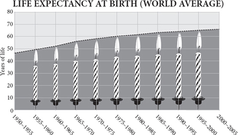
One day a little less than 500,000 years ago, near what is now the village of Boxgrove in southern England, six or seven two-legged creatures sat down around the carcass of a wild horse they had just killed, probably with wooden spears. Each took up a block of flint and began to fashion it into a hand axe, skilfully using hammers of stone, bone or antler to chip off flakes until all that remained was a symmetrical, sharp-edged, teardrop-shaped object in size and thickness somewhere between an iPhone and a computer mouse. The debris they left that day is still there, leaving eerie shadows of their own legs as they sat and worked. You can tell that they were right-handed. Notice: each person made his own tools.
在不到 50 万年前的某一天，在现在英格兰南部的博斯格罗夫（Boxgrove）村附近，六七个两条腿的生物围着他们刚刚杀死的一匹野马的尸体坐下来，可能是用木矛。每个人都拿起一块火石，开始把它塑造成一把手斧，熟练地使用石头、骨头或鹿角的锤子来削掉薄片，直到剩下的只是一个对称的、边缘锋利的、水滴状的物体，大小和厚度介于 iPhone 和电脑鼠标之间。他们那天留下的碎片还在那里，留下了他们坐着工作时自己的腿的阴森阴影。你可以看出，他们是用右手的。注意：每个人都做了自己的工具。
The hand axes they made to butcher that horse are fine examples of ‘Acheulean bifaces’. They are thin, symmetrical and razor-sharp along the edge, ideal for slicing through thick hide, severing the ligaments of joints and scraping meat from bones. The Acheulean biface is the stereotype of the Stone Age tool, the iconic flattened teardrop of the Palaeolithic. Because the species that made it has long been extinct we may never quite know how it was used. But one thing we do know. The creatures that made this thing were very content with it. By the time of the Boxgrove horse butchers, their ancestors had been making it to roughly the same design – hand-sized, sharp, double-sided, rounded – for about a million years. Their descendants would continue to make it for hundreds of thousands more years. That’s the same technology for more than a thousand millennia, ten thousand centuries, thirty thousand generations – an almost unimaginable length of time.
他们为屠宰那匹马而制作的手斧是 “阿切利安双刃手斧”（“Acheulean bifaces”）的优秀范例。它们很薄，对称，边缘锋利，是切开厚皮、切断关节韧带和从骨头上刮肉的理想工具。阿切利安双刃手斧是石器时代工具的定型，是旧石器时代标志性的扁平水滴妆工具。由于制造它的物种早已灭绝，我们可能永远不会知道它是如何被使用的。但有一件事我们是知道的。制造这个东西的生物对它非常满意。在博斯格罗夫屠马者的时代，他们的祖先已经按照大致相同的设计 —— 手掌大小、锋利、双面、圆形 —— 制作了大约一百万年。他们的后代将继续制造它数十万年。这就是同样的技术，超过一千年，一万个世纪，三万代 —— 一个几乎无法想象的时间长度。
Not only that; they made roughly the same tools in south and north Africa and everywhere in between. They took the design with them to the Near East and to the far north-west of Europe (though not to East Asia) and still it did not change. A million years across three continents making the same one tool. During those million years their brains grew in size by about one-third. Here’s the startling thing. The bodies and brains of the creatures that made Acheulean hand axes changed faster than their tools.
不仅如此，他们在非洲南部和北部以及两者之间的任何地方制造了大致相同的工具。他们把这种设计带到了近东和欧洲的最西北部（尽管没有带到东亚），但它仍然没有改变。一百万年来，横跨三大洲，制造出同样的一个工具。在这一百万年中，他们的大脑大小增长了大约三分之一。这里有一个令人吃惊的事情。制造阿切利安双刃手斧的生物的身体和大脑的变化比它们的工具更快。
To us, this is an absurd state of affairs. How could people have been so unimaginative, so slavish, as to make the same technology for so long? How could there have been so little innovation, regional variation, progress, or even regress?
对我们来说，这是一种荒谬的状态。人们怎么可能如此缺乏想象力，如此奴颜婢膝，以至于这么长时间都在制造同样的技术？怎么会有这么少的创新、地区差异、进步，甚至倒退？
Actually, this is not quite true, but the detailed truth reinforces the problem rather than resolves it. There is a single twitch of progress in biface hand-axe history: around 600,000 years ago, the design suddenly becomes a little more symmetrical. This coincides with the appearance of a new species of hominid which replaces its ancestor throughout Eurasia and Africa. Called Homo heidelbergensis, this creature has a much bigger brain, possibly 25 per cent bigger than late Homo erectus . Its brain was almost as big as a modern person’s. Yet not only did it go on making hand axes and very little else; the hand-axe design sank back into stagnation for another half a million years. We are used to thinking that technology and innovation go together, yet here is strong evidence that when human beings became tool makers, they did not experience anything remotely resembling cultural progress. They just did what they did very well. They did not change.
实际上，这并不完全正确，但详细的事实加强了问题，而不是解决了问题。在双刃手斧的历史中，有一个单一的进步抽动：大约在 60 万年前，设计突然变得更加对称了一些。这与一种新的人种的出现相吻合，这种人种在整个欧亚大陆和非洲取代了其祖先。这种生物被称为海德堡智人（Homo heidelbergensis），它的大脑大得多，可能比晚期直立人（Homo erectus）大 25%。它的大脑几乎和现代人的一样大。然而，它不仅继续制造手斧，而且很少制造其他东西；手斧的设计又沉入了 50 万年的停滞状态。我们习惯于认为技术和创新是相辅相成的，然而这里有强有力的证据表明，当人类成为工具制造者时，他们并没有经历任何类似于文化进步的事情。他们只是做了他们做得非常好的事情。他们并没有改变。
Bizarre as this may sound, in evolutionary terms it is quite normal. Most species do not change their habits during their few million years on earth or alter their lifestyle much in different parts of their range. Natural selection is a conservative force. It spends more of its time keeping species the same than changing them. Only towards the edge of its range, on an isolated island, or in a remote valley or on a lonely hill top, does natural selection occasionally cause part of a species to morph into something different. That different sport sometimes then spreads to conquer a broader ecological empire, perhaps even returning to replace the ancestral species – to topple the dynasty from which it sprang. There is constant ferment of change within the species’ genes as it adapts to its parasites and they to it. But there is little progressive alteration of the organism. Evolutionary change happens largely by the replacement of species by daughter species, not by the changing of habits in species. What is surprising about the human story is not the mind-bogglingly tedious stasis of the Acheulean hand axe, but that the stasis came to an end.
虽然这听起来很怪异，但从进化的角度来看，这是很正常的。大多数物种在地球上的几百万年里不会改变它们的生活习惯，也不会在其分布的不同地区改变它们的生活方式。自然选择是一种保守的力量。它把更多的时间花在保持物种不变上而不是改变它们。只有在其分布范围的边缘，在一个孤立的岛屿上，或在一个偏远的山谷中，或在一个孤独的山顶上，自然选择偶尔会使一个物种的一部分蜕变成不同的东西。这种不同的运动有时会蔓延开来，征服一个更广泛的生态帝国，甚至可能返回来取代祖先的物种 —— 推翻它所产生的王朝。在物种的基因中，随着它对寄生虫的适应和寄生虫对它的适应，不断有变化的发酵。但生物体几乎没有什么渐进的改变。进化的变化主要是通过子代物种的取代而发生的，而不是通过改变物种的习性。人类的故事令人惊奇的不是阿切利安双刃手斧的令人费解的停滞不前，而是这种停滞不前走到了尽头。
The Boxgrove hominids of 500,000 years ago (who were members of Homo heidelbergensis ) had their ecological niche. They had a way of getting food and shelter in their preferred habitat, of seducing mates and rearing babies. They walked on two feet, had huge brains, made spears and hand axes, taught each other traditions, perhaps spoke or signalled to each other grammatically, almost certainly lit fires and cooked their food, and undoubtedly killed big animals. If the sun shone, the herds of game were plentiful, the spears were sharp and diseases kept at bay, they may have sometimes thrived and populated new land. At other times, when food was scarce, the local population just died out. They could not change their ways much; it was not in their natures. Once they had spread all across Africa and Eurasia, their populations never really grew. On average death rates matched birth rates. Starvation, hyenas, exposure, fights and accidents claimed most of their lives before they were elderly enough to get chronically ill. Crucially, they did not expand or shift their niche. They remained trapped within it. Nobody woke up one day and said ‘I’m going to make my living a different way.’
50 万年前的博斯格罗夫人（他们是海德堡智人的成员）有他们的生态位。他们有办法在自己喜欢的栖息地获得食物和住所，有办法引诱配偶和养育婴儿。他们用两只脚走路，有巨大的大脑，制造长矛和手斧，互相传授传统，也许会用语法说话或互相示意，几乎可以肯定的是，他们会点火和烹饪食物，而且无疑会杀死大型动物。如果阳光明媚，猎物成群，矛头锋利，疾病得到遏制，他们有时可能会茁壮成长，并在新的土地上繁衍生息。在其他时候，当食物匮乏时，当地人口就会消亡。他们不可能改变自己的方式；这不是他们的天性。一旦他们遍布非洲和欧亚大陆，他们的人口从未真正增长。平均而言，死亡率与出生率相当。饥饿、土狼、暴露、打架和事故在他们年老到得了慢性病之前就夺走了他们的大部分生命。最重要的是，他们没有扩大或改变他们的生存环境。他们仍然被困在其中。没有人在某一天醒来，说 “我要以不同的方式谋生”。
Think of it this way. You don’t expect to get better and better at walking in each successive generation – or breathing, or laughing, or chewing. For Palaeolithic hominids, hand-axe making was like walking, something you grew good at through practice and never thought about again. It was almost a bodily function. It was no doubt passed on partly by imitation and learning, but unlike modern cultural traditions it showed little regional and local variation. It was part of what Richard Dawkins called ‘the extended phenotype’ of the erectus hominid species, the external expression of its genes. It was instinct, as inherent to the human behavioural repertoire as a certain design of nest is to a certain species of bird. A song thrush lines its nest with mud, a European robin lines its nest with hair and a chaffinch lines its nest with feathers – they always have and they always will. It’s innate for them to do so. Making a teardrop-shaped sharp-edged stone tool takes no more skill than making a bird’s nest and was probably just as instinctive: it was a natural expression of human development.
这样想吧。你不会期望在每一代人中都能在行走方面变得越来越好 —— 或呼吸，或笑，或咀嚼。对于旧石器时代的人类来说，制造手斧就像走路一样，你通过练习而变得擅长，并且不再考虑。这几乎是一种身体机能。毫无疑问，它部分是通过模仿和学习来传递的，但与现代文化传统不同的是，它几乎没有显示出地区和地方的差异。它是理查德·道金斯所说的直立人物种的 “扩展表型” 的一部分，是其基因的外部表达。这是一种本能，就像某种鸟类的鸟巢设计一样，是人类行为方式的固有组成部分。歌鸫用泥巴筑巢，欧洲知更鸟用毛发筑巢，糠雀用羽毛筑巢 —— 它们一直如此，也将如此。它们这样做是与生俱来的。制作一个水滴形的利刃石器并不需要比制作鸟巢更多的技巧，而且可能也是一样的本能：这是人类发展的一种自然表现。
Indeed, the analogy with a bodily function is quite appropriate. There is now little doubt that hominids spent much of those million and a half years eating a lot of fresh meat. Some time after two million years ago, ape-men had become more carnivorous. With their feeble teeth and with finger nails where they should have had claws, they needed sharp tools to cut the skins of their kills. Because of their sharp tools they could tackle even the pachydermatous rhinos and elephants. Biface axes were like external canine teeth. The rich meat diet also enabled erectus hominids to grow a larger brain, an organ that burns energy at nine times the rate of the rest of the body. Meat enabled them to cut down on the huge gut that their ancestors had found necessary to digest raw vegetation and raw meat, and thus to grow a bigger brain instead. Fire and cooking in turn then released the brain to grow bigger still by making food more digestible with an even smaller gut – once cooked, starch gelatinises and protein denatures, releasing far more calories for less input of energy. As a result, whereas other primates have guts weighing four times their brains, the human brain weighs more than the human intestine. Cooking enabled hominids to trade gut size for brain size.
事实上，用身体功能来比喻是非常合适的。现在已经没有什么疑问了，在这一百五十万年中，人的大部分时间都在吃大量的鲜肉。在 200 万年前的某个时候，猿人已经变得更加食肉了。由于他们孱弱的牙齿和本该有爪子的手指甲，他们需要锋利的工具来切割他们所杀的动物的皮。由于他们的工具锋利，他们甚至可以对付长毛的犀牛和大象。双面斧就像外部的犬齿。丰富的肉食也使直立人能够长出更大的大脑，这种器官燃烧能量的速度是身体其他部位的 9 倍。肉类使他们能够减少他们的祖先为消化生的植物和生的肉而发现的巨大的肠道，并因此而长出一个更大的大脑。火和烹饪反过来又使大脑变得更大，因为食物更容易消化，而肠道却更小 —— 一旦煮熟，淀粉会凝胶化，蛋白质会变性，以较少的能量输入释放出更多的热量。因此，其他灵长类动物的内脏是其大脑的四倍，而人类的大脑比人类的肠子还要重。烹饪使人类能够以肠道的大小换取大脑的大小。
Erectus hominids, in other words, had almost everything we might call human: two legs, two hands, a big brain, opposable thumbs, fire, cooking, tools, technology, cooperation, long childhoods, kindly demeanour. And yet there was no sign of cultural take-off, little progress in technology, little expansion of range or niche.
换句话说，直立人几乎拥有我们可能称之为人类的一切：两条腿、两只手、一个大脑袋、对立的拇指、火、烹饪、工具、技术、合作、漫长的童年、亲切的举止。然而，却没有文化起飞的迹象，技术上没有什么进步，范围或利基没有扩大。
Homo dynamicus
动态人
Then there appeared upon the earth a new kind of hominid, which refused to play by the rules. Without any changes in its body, and without any succession of species, it just kept changing its habits. For the first time its technology changed faster than its anatomy. This was an evolutionary novelty, and you are it.
然后，地球上出现了一种新的人形生物，它拒绝按规则行事。它的身体没有任何变化，也没有任何物种的继承，它只是不断改变自己的习惯。这是第一次，它的技术变化比它的解剖学更快。这是一个进化的新事物，而你就是它。
When this new animal appeared is hard to discern, and its entrance was low-key. Some anthropologists argue that in east Africa and Ethiopia the toolkit was showing signs of change as early as 285,000 years ago. Certainly, by at least 160,000 years ago a new, small-faced ‘sapiens’ skull was being worn on the top of the spine in Ethiopia. Around the same time at Pinnacle Point in South Africa, people – yes, I shall call them people for the first time – were cooking mussels and other shellfish in a cave close to the sea as well as making primitive ‘bladelets’, small flakes of sharp stone, probably for hafting on to spears. They were also using red ochre, perhaps for decoration, implying thoroughly modern symbolic minds.
这种新的动物何时出现很难辨别，它的进入是低调的。一些人类学家认为，在东非和埃塞俄比亚，早在 28.5 万年前，工具箱就出现了变化的迹象。当然，到了至少 16 万年前，在埃塞俄比亚，一个新的、小脸的 “智人” 头骨被戴在脊柱顶部。大约在同一时期，在南非的尖峰岭（Pinnacle Point），人们 —— 是的，我将第一次称他们为人 —— 在靠近大海的洞穴中烹饪贻贝和其他贝类，并制作原始的 “小刀”，即小片的锋利石头，可能是用来夹在矛上的。他们还使用红赭石，也许是为了装饰，意味着彻底的现代象征性思维。
This was during the ice age before last, when Africa was mostly a desert. And yet apparently nothing much came of this experiment. Consistent evidence of smart behaviour and a fancy toolkit peters out again. Genetic evidence suggests human beings were still rare even in Africa, eking out a precarious existence in pockets of savannah woodland when it was dry, or possibly on the margins of lakes and seas. In the Eemian interglacial period of 130,000–115,000 years ago, the climate grew warmer and much wetter and sea level rose. Some skulls from what is now Israel suggest that a few slender-headed Africans did begin to colonise the Middle East towards the end of the Eemian, before a combination of cold weather and Neanderthals drove them back again. It was during this mild spell that a fancy new toolkit first appeared in caves in what is now Morocco: flakes, toothed scrapers and retouched points. One of the most extraordinary clues comes in the form of a simple estuarine snail shell called Nassarius . This little winkle keeps popping up in archaeological sites, with unnatural holes in its shells. The oldest certain Nassarius find is at Grottes des Pigeons near Taforalt in Morocco, where forty-seven perforated shells, some smeared with red ochre, date from certainly more than 82,000 years ago and perhaps as much as 120,000 years ago. Similar shells, harder to date, have been found at Oued Djebanna in Algeria and Skhul in Israel, and perforated shells of the same genus but a different species are found at Blombos cave in South Africa from about 72,000 years ago along with the earliest bone awls. These shells were surely beads, probably worn on a string. Not only do they hint at a very modern attitude to personal ornament, symbolism or perhaps even money; they also speak eloquently of trade. Taforalt is 25 miles and Oued Djebanna 125 miles from the nearest coast. The beads probably travelled hand to hand by exchange. Likewise, there are hints from east Africa and Ethiopia that the volcanic glass known as obsidian may have begun to move over long distances around this time too, or even earlier, presumably by trade, but the dates and sources are still uncertain.
这是在前一个冰河时代，当时非洲大部分是沙漠。然而显然，这个实验没有什么结果。关于聪明行为和花哨工具包的一致证据又消失了。遗传学证据表明，即使在非洲，人类也是罕见的，在干旱的时候，他们在草原林地的小块地方勉强生存，或者可能在湖泊和海洋的边缘。在 130,000-115,000 年前的埃米亚间冰期，气候变得更温暖、更潮湿，海平面上升。来自现在的以色列的一些头骨表明，在伊米安（Eemian）末期，确实有一些细长头的非洲人开始在中东地区定居，然后寒冷的天气和尼安德特人又把他们赶了回来。正是在这个温和的时期，在现在的摩洛哥的洞穴中首次出现了一个花哨的新工具箱：薄片、齿状刮削器和修饰过的点。最特别的线索之一是一个简单的河口蜗牛壳，叫做纳塞瑞斯（Nassarius）。这种小东西不断出现在考古现场，它的壳上有非自然的孔。最古老的纳塞瑞斯发现是在摩洛哥塔福拉特（Taforalt）附近的鸽子沟（Grottes des Pigeons），那里有 47 个带孔的贝壳，有些还涂有红赭石，年代肯定超过 8.2 万年，也许多达 12 万年。在阿尔及利亚的奥德杰班纳（Oued Djebanna）和以色列的斯库尔（Skhul）也发现了类似的贝壳，但时间更难确定，在南非的布隆博斯（Blombos）洞穴发现了同属不同种的穿孔贝壳，距今约 72000 年，还有最早的骨锥。这些贝壳肯定是珠子，可能戴在绳子上。它们不仅暗示了一种非常现代的个人装饰品、象征意义甚至可能是金钱的态度；它们也雄辩地说明了贸易。塔福拉特距离最近的海岸 25 英里，奥德杰班纳距离最近的海岸 125 英里。这些珠子很可能是通过交换的方式，在手与手之间旅行。同样，来自东非和埃塞俄比亚的信息表明，被称为黑曜石的火山玻璃可能也是在这个时期开始远距离移动的，甚至更早，可能是通过贸易，但日期和来源仍然不确定。
Just across the strait of Gibraltar from where these bead-wearing, flake-making people lived were the ancestors of Neanderthals, whose brains were just as big but who showed no signs of making beads or flake tools, let alone doing long-distance trade. There was clearly something different about the Africans. Over the next few tens of millennia there were sporadic improvements, but no great explosion. There may have been a collapse of human populations. The African continent was plagued by ‘megadroughts’ at this time, during which desiccating winds blew the dust of extensive deserts into Lake Malawi, whose level dropped 600 metres. Only well after 80,000 years ago, so genetic evidence attests, does something big start to happen again. This time the evidence comes from genomes, not artefacts. According to DNA scripture, it was then that one quite small group of people began to populate the entire African continent, starting either in East or South Africa and spreading north and rather more slowly west. Their genes, marked by the L3 mitochondrial type, suddenly expanded and displaced most others in Africa, except the ancestors of the Khoisan and pygmy people. Yet even now there was no hint of what was to come, no clue that this was anything but another evolutionary avatar of a precariously successful predatory ape. The new African form, with its fancy tools, ochre paint and shell-bead ornaments, might have displaced its neighbours, but it would now settle down to enjoy its million years in the sun before gracefully giving way to something new. This time, however, some of the L3 people promptly spilled out of Africa and exploded into global dominion. The rest, as they say, is history.
就在直布罗陀海峡对面，这些戴着珠子、制造薄片的人生活的地方，是尼安德特人的祖先，他们的大脑同样大，但却没有制造珠子或薄片工具的迹象，更不用说进行长距离贸易。显然，非洲人有一些不同之处。在接下来的几万年里，有零星的改进，但没有大的爆发。可能出现了人类人口的崩溃。非洲大陆在这一时期受到 “大地震” 的困扰，在此期间，干燥的风将大面积沙漠的灰尘吹入马拉维湖，湖面下降 600 米。遗传证据证明，只有在 8 万年前之后，才会有大事件再次发生。这一次的证据来自于基因组，而不是人工制品。根据 DNA 经文，就在那时，一个相当小的群体开始在整个非洲大陆上居住，他们从东非或南非开始，向北扩散，并更缓慢地向西扩散。他们的基因以 L3 线粒体类型为标志，突然扩大并取代了非洲的大多数其他人，除了科伊桑人和俾格米人的祖先。然而，即使是现在，也没有任何暗示，没有任何线索表明这只是一个不稳定的成功的掠夺性猿类的另一个进化化身。新的非洲形式，带着花哨的工具、赭色的油漆和贝壳珠子的装饰品，可能已经取代了它的邻居，但它现在将定居下来，享受它在阳光下的一百万年，然后优雅地让位于新的东西。然而，这一次，一些 L3 民族迅速走出非洲，爆发出全球的统治力。剩下的，正如他们所说，就是历史了。
Starting to barter
开始进行易货贸易
Anthropologists advance two theories to explain the appearance in Africa of these new technologies and people. The first is that it was driven by climate. The volatility of the African weather, sucking human beings into deserts in wet decades and pushing them out again in dry ones, would have placed a premium on adaptability, which in turn selected for new capabilities. The trouble with this theory is first that climate had been volatile for a very long time without producing a technologically adept ape, and second that it applies to lots of other African species too: if human beings, why not elephants and hyenas? There is no evidence from the whole of the rest of biology that desperate survival during unpredictable weather selects intelligence or cultural flexibility. Rather the reverse: living in large social groups on a plentiful diet both encourages and allows brain growth.
人类学家提出两种理论来解释这些新技术和人在非洲的出现。第一个理论是，它是由气候驱动的。非洲气候的不稳定性，在潮湿的几十年里把人类吸进沙漠，在干燥的几十年里又把他们推出去，这将使适应性受到重视，反过来又会选择新的能力。这一理论的问题在于，首先，气候已经波动了很长时间，但却没有产生技术娴熟的人猿；其次，它也适用于许多其他非洲物种：如果是人类，为什么不是大象和鬣狗？从整个生物学的其他部分来看，没有证据表明在不可预测的天气中绝望的生存会选择智力或文化灵活性。恰恰相反：生活在大型社会群体中，拥有丰富的食物，既鼓励也允许大脑成长。
The second theory is that a fortuitous genetic mutation triggered a change in human behaviour by subtly altering the way human brains were built. This made people fully capable of imagination, planning, or some other higher function for the first time, which in turn gave them the capacity to make better tools and devise better ways of making a living. For a while, it even looked as if two candidate mutations of the right age had appeared – in the gene called FOXP2, which is essential to speech and language in both people and songbirds. Adding these two mutations to mice does indeed seem to change the flexibility of wiring in their brain in a way that may be necessary for the rapid flicker of tongue and lung that is called speech, and perhaps coincidentally the mutations even change the way mice pups squeak without changing almost anything else about them. But recent evidence confirms that Neanderthals share the very same two mutations, which suggests that the common ancestor of Neanderthals and modern people, living about 400,000 years ago, may have already been using pretty sophisticated language. If language is the key to cultural evolution, and Neanderthals had language, then why did the Neanderthal toolkit show so little cultural change?
第二个理论是，一个偶然的基因突变通过巧妙地改变人类大脑的构造方式引发了人类行为的改变。这使人们第一次完全具备了想象力、计划或其他一些高级功能，这反过来又使他们有能力制造更好的工具，并设计出更好的谋生方式。有一段时间，甚至看起来好像出现了两个适龄的候选突变 —— 在被称为 FOXP2 的基因中，该基因对人和鸣禽的语言表达至关重要。将这两个突变添加到小鼠身上似乎确实改变了它们大脑中线路的灵活性，这种方式可能是被称为语言的舌头和肺部快速闪烁所必需的，也许巧合的是，突变甚至改变了小鼠幼崽尖叫的方式，而几乎没有改变它们的其他东西。但是最近的证据证实尼安德特人也有这两个突变，这表明生活在大约 40 万年前的尼安德特人和现代人的共同祖先可能已经在使用相当复杂的语言。如果语言是文化进化的关键，而尼安德特人有语言，那么为什么尼安德特人的工具箱显示的文化变化如此之小？
Moreover, genes would undoubtedly have changed during the human revolution after 200,000 years ago, but more in response to new habits than as causes of them. At an earlier date, cooking selected mutations for smaller guts and mouths, rather than vice versa. At a later date, milk drinking selected for mutations for retaining lactose digestion into adulthood in people of western European and East African descent. The cultural horse comes before the genetic cart. The appeal to a genetic change driving evolution gets gene-culture co-evolution backwards: it is a top-down explanation for a bottom-up process.
此外，在 20 万年前的人类革命期间，基因无疑会发生变化，但更多的是对新习惯的反应，而不是作为这些习惯的原因。在早期，烹饪选择了较小的肠道和口腔的突变，而不是反过来。在较晚的时候，喝牛奶选择了西欧和东非血统的人保留乳糖消化的突变。文化的马在遗传的车之前。对驱动进化的基因变化的呼吁把基因·文化共同进化弄反了：它是对一个自下而上过程的自上而下的解释。
Besides, there is a more fundamental objection. If a genetic change triggered novel human habits, why do its effects appear gradually and erratically in different places at different times but then accelerate once established? How could the new gene have a slower effect in Australia than in Europe? Whatever the explanation for the modernisation of human technology after 200,000 years ago, it must be something that gathers pace by feeding upon itself, something that is auto-catalytic.
此外，还有一个更基本的反对意见。如果一个基因变化引发了人类的新习惯，为什么它的影响在不同的地方、不同的时间会逐渐地、不稳定地出现，但一旦建立起来就会加速？新基因在澳大利亚的影响怎么会比在欧洲慢？无论对 20 万年前之后人类技术现代化的解释是什么，它一定是一种通过自食其力而加快步伐的东西，是自动催化的东西。
As you can tell, I like neither theory. I am going to argue that the answer lies not in climate, nor genetics, nor in archaeology, nor even entirely in ‘culture’, but in economics. Human beings had started to do something to and with each other that in effect began to build a collective intelligence. They had started, for the very first time, to exchange things between unrelated, unmarried individuals; to share, swap, barter and trade. Hence the Nassarius shells moving inland from the Mediterranean. The effect of this was to cause specialisation, which in turn caused technological innovation, which in turn encouraged more specialisation, which led to more exchange – and ‘progress’ was born, by which I mean technology and habits changing faster than anatomy. They had stumbled on what Friedrich Hayek called the catallaxy: the ever-expanding possibility generated by a growing division of labour. This is something that amplifies itself once begun.
正如你所知道的，我不喜欢这两种理论。我想说的是，答案不在于气候，也不在于遗传学，不在于考古学，甚至不完全在于 “文化”，而在于经济。人类已经开始对彼此做一些事情，实际上是开始建立一个集体智慧。他们第一次开始在没有关系的、未婚的个人之间交换东西；分享、交换、易货和贸易。因此，纳塞瑞斯贝壳从地中海向内陆移动。这样做的效果是导致专业化，这反过来又导致技术创新，这反过来又鼓励了更多的专业化，这导致了更多的交换 —— “进步” 诞生了，我指的是技术和习惯的变化比解剖学更快。他们偶然发现了弗里德里希·哈耶克（Friedrich Hayek）所说的 “催化剂”（catallaxy）：由不断增长的劳动分工所产生的不断扩大的可能性。这是一种一旦开始就会自我放大的东西。
Exchange needed to be invented. It does not come naturally to most animals. There is strikingly little use of barter in any other animal species. There is sharing within families, and there is food-for-sex exchange in many animals including insects and apes, but there are no cases in which one animal gives an unrelated animal one thing in exchange for a different thing. ‘No man ever saw a dog make fair and deliberate exchange of a bone with another dog,’ said Adam Smith.
交换需要被发明出来。对大多数动物来说，这并不是自然而然的事。在任何其他动物物种中，很少使用易货贸易。家庭内部有分享，许多动物包括昆虫和猿猴都有以食物换取性的行为，但没有一种情况是一种动物给无关的动物一种东西以换取另一种东西。亚当·斯密说：“没有人见过一只狗与另一只狗公平地、故意地交换一根骨头。”
I need to digress here: bear with me. I am not talking about swapping favours – any old primate can do that. There is plenty of ‘reciprocity’ in monkeys and apes: you scratch my back and I scratch yours. Or, as Leda Cosmides and John Tooby put it, ‘One party helps another at one point in time, in order to increase the probability that when their situations are reversed at some (usually) unspecified time in the future, the act will be reciprocated.’ Such reciprocity is an important human social glue, a source of cooperation and a habit inherited from the animal past that undoubtedly prepared human beings for exchange. But it is not the same thing as exchange. Reciprocity means giving each other the same thing (usually) at different times. Exchange – call it barter or trade if you like – means giving each other different things (usually) at the same time: simultaneously swapping two different objects. In Adam Smith’s words, ‘Give me that which I want, and you shall have this which you want.’
我需要在这里说点题外话：请耐心听我说。我不是在谈论交换恩惠 —— 任何一种老的灵长类动物都能做到这一点。在猴子和猿类中存在大量的 “互惠”：你帮我抓背，我帮你抓背。或者，正如莱达·科斯米德（Leda Cosmides）和约翰·托比（John Tooby）所说，“一方在某个时间点上帮助另一方，以增加当他们的情况在未来某个（通常）不确定的时间逆转时，该行为将得到回报的概率。这种互惠是人类重要的社会粘合剂，是合作的源泉，也是一种从动物时代继承下来的习惯，无疑为人类的交换做好了准备。但它与交换不是一回事。互惠意味着在不同的时间给对方同样的东西（通常）。交换 —— 如果你愿意，可以称之为易货或贸易 —— 意味着在同一时间给对方不同的东西（通常）：同时交换两个不同的物体。用亚当·斯密的话说，“把我想要的东西给我，你就能得到你想要的这个东西”。
Barter is a lot more portentous than reciprocity. After all, delousing aside, how many activities are there in life where it pays to do the same thing to each other in turn? ‘If I sew you a hide tunic today, you can sew me one tomorrow’ brings limited rewards and diminishing returns. ‘If I make the clothes, you catch the food’ brings increasing returns. Indeed, it has the beautiful property that it does not even need to be fair . For barter to work, two individuals do not need to offer things of equal value. Trade is often unequal, but still benefits both sides. This is a point that nearly everybody seems to miss. In the grasslands of Cameroon, for example, in past centuries the palm-oil producers, who lived on the periphery of the region on the poorest soils, worked hard to produce a low-value product that they exchanged for cereal, livestock and iron with their neighbours. On average it took them thirty days to afford the price of an iron hoe that had cost its makers just seven person-days of work. Yet palm oil was still the most profitable product they could make on their own land and with their own resources. The cheapest way for them to get an iron hoe was to make more palm oil. Or imagine a Trobriand island tribe on the coast that has ample fish and an inland tribe that has ample fruit: as long as two people are living in different habitats, they will value what each other has more than what they have themselves, and trade will pay them both. And the more they trade, the more it will pay them to specialise.
以物易物比互惠更有预示意义。毕竟，撇开脱衣舞不谈，生活中还有多少活动是需要反过来对对方做同样的事情的？“如果我今天给你缝制一件兽皮外衣，你明天也可以给我缝制一件”，这带来的回报是有限的，而且回报也是递减的。“如果我做衣服，你就去抓食物” 带来的回报越来越多。事实上，它有一个美丽的特性，即 “它甚至不需要公平”。为了使易货贸易发挥作用，两个人不需要提供同等价值的东西。贸易往往是不平等的，但仍然对双方都有利。这是几乎所有人都似乎忽略的一点。例如，在喀麦隆的草原上，在过去的几个世纪里，生活在该地区外围最贫瘠土壤上的棕榈油生产者努力工作，生产低价值的产品，他们用谷物、牲畜和铁与邻居交换。平均来说，他们要花 30 天才能买得起一把铁锄头的价格，而这把锄头只花了制造者 7 个人日的工作。然而，棕榈油仍然是他们可以在自己的土地上用自己的资源制造的最有利的产品。对他们来说，获得铁锄头的最便宜的方法就是制造更多的棕榈油。或者想象一下，一个沿海的特罗布里安岛部落有充足的鱼，一个内陆的部落有充足的水果：只要两个人生活在不同的栖息地，他们就会重视对方的东西，而不是他们自己的东西，贸易会给他们双方带来好处。他们的贸易越多，就越能为他们的专业化提供报酬。
Evolutionary psychologists have assumed that it is rare for conditions to exist in which two people simultaneously have value to offer to each other. But this is just not true, because people can value highly what they do not have access to. And the more they rely on exchange, the more they specialise, which makes exchange still more attractive. Exchange is therefore a thing of explosive possibility, a thing that breeds, explodes, grows, auto-catalyses. It may have built upon an older animal instinct of reciprocity, and it may have been greatly and uniquely facilitated by language – I am not arguing that these were not vital ingredients of human nature that allowed the habit to get started. But I am saying that barter – the simultaneous exchange of different objects – was itself a human breakthrough, perhaps even the chief thing that led to the ecological dominance and burgeoning material prosperity of the species. Fundamentally, other animals do not do barter.
进化心理学家认为，两个人同时有价值可以提供给对方的情况很少存在。但这是不正确的，因为人们可以高度重视他们没有机会获得的东西。而且，他们越是依赖交换，就越是专业化，这就使交换更有吸引力。因此，交换是一种具有爆炸性可能性的东西，是一种滋生、爆炸、成长、自动催化的东西。它可能建立在更古老的动物互惠本能之上，它可能得到了语言的极大和独特的促进 —— 我并不是在争论这些不是人类本性中允许这种习惯开始的重要成分。但我是说，以物易物 —— 不同物品的同时交换 —— 本身就是人类的一个突破，甚至可能是导致该物种的生态优势和物质繁荣的主要因素。从根本上说，其他动物不做易货贸易。
I still don’t quite know why, but I have a lot of trouble getting this point across to both economists and biologists. Economists see barter as just one example of a bigger human habit of general reciprocity. Biologists talk about the role that reciprocity played in social evolution, meaning ‘do unto others as they do unto you’. Neither seems to be interested in the distinction that I think is vital, so let me repeat it here once more: at some point, after millions of years of indulging in reciprocal back-scratching of gradually increasing intensity, one species, and one alone, stumbled upon an entirely different trick. Adam gave Oz an object in exchange for a different object. This is not the same as Adam scratching Oz’s back now and Oz scratching Adam’s back later, or Adam giving Oz some spare food now and Oz giving Adam some spare food tomorrow. The extraordinary promise of this event was that Adam potentially now had access to objects he did not know how to make or find; and so did Oz. And the more they did it, the more valuable it became. For whatever reason, no other animal species ever stumbled upon this trick – at least between unrelated individuals.
我还是不太明白为什么，但我在向经济学家和生物学家表达这个观点时遇到了很多麻烦。经济学家认为易货贸易只是人类普遍互惠的更大习惯的一个例子。生物学家谈到了互惠在社会进化中的作用，即 “以其人之道还治其人之身”。两者似乎都对我认为至关重要的区别不感兴趣，所以让我在这里再重复一次：在某个时刻，经过数百万年沉溺于强度逐渐增加的互惠互利，一个物种，而且只有一个，偶然发现了一个完全不同的技巧。亚当给了奥兹一个物体以换取另一个物体。这与亚当现在给奥兹挠背，奥兹以后给亚当挠背，或者亚当现在给奥兹一些多余的食物，奥兹明天给亚当一些多余的食物不同。这一事件的非凡承诺是，亚当现在有可能接触到他不知道如何制造或找到的物体；奥兹也是如此。他们做得越多，它就越有价值。不管是什么原因，其他动物物种都没有偶然发现这一招 —— 至少在没有关系的个体之间。
Do not take my word for it. The primatologist Sarah Brosnan tried to teach two different groups of chimpanzees about barter and found it very problematic. Her chimps preferred grapes to apples to cucumbers to carrots (which they liked least of all). They were prepared sometimes to give up carrots for grapes, but they almost never bartered apples for grapes (or vice versa), however advantageous the bargain. They could not see the point of giving up food they liked for food they liked even more. Chimpanzees and monkeys can be taught to exchange tokens for food, but this is a long way from spontaneously exchanging one thing for another: the tokens have no value to the chimpanzees, so they are happy to give them up. True barter requires that you give up something you value in exchange for something else you value slightly more.
不要相信我的话。灵长类动物学家萨拉·布鲁斯南（Sarah Brosnan）试图教两组不同的黑猩猩学习易货贸易，结果发现问题很大。她的黑猩猩喜欢的次序是，葡萄 > 苹果 > 黄瓜 > 胡萝卜…… 胡萝卜是它们最不喜欢的东西。它们有时准备放弃胡萝卜来换取葡萄，但它们几乎从未用苹果来换取葡萄（反之亦然），无论讨价还价有多有利。他们看不出放弃自己喜欢的食物换取自己更喜欢的食物有什么意义。黑猩猩和猴子可以被教导用代币换取食物，但这与自发地用一种东西换取另一种东西相差甚远：代币对黑猩猩来说没有价值，所以它们很乐意放弃。真正的易货贸易要求你放弃你重视的东西，以换取你稍微重视的其他东西。
This is reflected in the ecology of wild chimpanzees. Whereas in human beings, each sex eats ‘not only from the food items they have collected themselves, but from their partners’ finds,’ says Richard Wrangham, ‘not even a hint of this complementarity is found among nonhuman primates.’ It is true that male chimps hunt monkeys more than females do and that having killed a monkey, a male sometimes allows others to share it if they beg to, especially a fertile female or a close partner to whom he owes a favour. But the one thing you do not see is trade of one food for another. There is never barter of meat for nuts. The contrast with human beings, who show an almost obsessive interest not just in sharing food with each other from an early age, but in swapping one item for another, is striking. Birute Galdikas reared a young orang-utan in her home alongside her daughter Binti, and was struck by the contrasting attitudes to food sharing of the two infants. ‘Sharing food seemed to give Binti great pleasure,’ she wrote. ‘In contrast, Princess, like any orang-utan would beg, steal and gobble food at every opportunity’.
这反映在野生黑猩猩的生态学中。理查德·维兰厄姆说：“在人类中，每个性别的人不仅吃他们自己采集的食物，而且吃他们的伙伴找到的食物”，而在非人类灵长类动物中，“甚至没有发现这种互补性的暗示”。诚然，雄性黑猩猩比雌性黑猩猩更多地猎取猴子，而且在杀死一只猴子后，雄性黑猩猩有时会允许其他人分享它，如果他们乞求的话，特别是一只有生育能力的雌性黑猩猩或他欠下人情的亲密伙伴。但有一件事你是看不到的，那就是以一种食物换另一种食物。从来没有用肉来交换坚果的情况。与人类形成鲜明对比的是，人类不仅从小就对相互分享食物表现出近乎痴迷的兴趣，而且还用一种物品交换另一种物品。比鲁特·加尔迪卡斯（Birute Galdikas）将一只名叫 “公主” 的小红毛猩猩和她的女儿 宾蒂（Binti）一起养在家里，她对这两个婴儿在分享食物方面的截然不同的态度感到震惊。她写道："分享食物似乎给宾蒂带来了极大的乐趣。与此相反，公主和其他猩猩一样，一有机会就乞讨、偷窃和吞食食物。
My argument is that this habit of exchanging, this appetite for barter, had somehow appeared in our African ancestors some time before 100,000 years ago. Why did human beings acquire a taste for barter as other animals did not? Perhaps it has something to do with cooking. Richard Wrangham makes a persuasive case that control of fire had a far-reaching effect on human evolution. Beyond making it safe to live on the ground, beyond liberating human ancestors to grow big brains on high-energy diets, cooking also predisposed human beings to swapping different kinds of food. And that maybe got them bartering.
我的论点是，这种交换的习惯，这种以物易物的胃口，在 10 万年前的某个时候就已经在我们的非洲祖先身上出现了。为什么人类获得了以物易物的乐趣，而其他动物却没有？也许这与烹饪有关。理查德·沃纳姆提出了一个有说服力的理由，即对火的控制对人类进化有着深远的影响。除了让人类安全地生活在地面上，除了让人类祖先在高能量的饮食中长出大脑袋，烹饪还使人类有能力交换不同种类的食物。而这也许让他们开始以物易物。
Hunting for gathering
为采集而狩猎
As the economist Haim Ofek has argued, fire itself is hard to start, but easy to share; likewise cooked food is hard to make but easy to share. The time spent in cooking is subtracted from the time spent in chewing: wild chimpanzees spend six hours or more each day just masticating their food. Carnivores might not chew their meat (they are often in a hurry to eat before it is stolen), but they spend hours grinding it in muscular stomachs, which comes to much the same thing. So cooking adds value: the great advantage of cooked food is that though it takes longer to prepare than raw food, it takes just minutes to eat, and this means that somebody else can eat as well as the person who prepares it. A mother can feed her children for many years. Or a woman can feed a man.
正如经济学家哈伊姆·奥费克（Haim Ofek）所认为的，火本身很难启动，但很容易分享；同样，熟食也很难做，但很容易分享。烹饪的时间要减去咀嚼的时间：野生黑猩猩每天花六个小时或更多的时间来咀嚼他们的食物。肉食动物可能不会咀嚼他们的肉（他们往往在肉被偷之前就急着吃），但他们会花几个小时在肌肉发达的胃里研磨肉，这也是差不多的事情。因此，烹饪增加了价值：熟食的最大优势在于，尽管它比生食需要更长的准备时间，但只需几分钟就能吃到，这意味着别人也能像准备食物的人一样吃到。一个母亲可以养活她的孩子很多年。或者一个女人可以养活一个男人。
In most hunter-gatherers, women spend long hours gathering, preparing and cooking staple foods while men are out hunting for delicacies. There is, incidentally, no hunter-gatherer society that dispenses with cooking. Cooking is the most female-biased of all activities, the only exceptions being when men prepare some ritual feasts or grill a few snacks while out on the hunt. (Does this ring any modern bells? Fancy chefs and barbecuing are the two most masculine forms of cooking today.) On average, across the world, each sex contributes similar quantities of calories, though the pattern varies from tribe to tribe: in Inuits, for example, most food is obtained by men, whereas in the Kalahari Khoisan people, most is gathered by women. But – and here is the crucial point – throughout the human race, males and females specialise and then share food.
在大多数狩猎采集者中，妇女要花很长时间来收集、准备和烹饪主食，而男人则在外面猎取美味佳肴。顺便说一句，没有一个狩猎采集社会不做饭的。烹饪是所有活动中最偏重于女性的活动，唯一的例外是男性在外出狩猎时准备一些仪式性的宴席或烤一些小吃。（这是否与现代有点类似？花哨的厨师和烧烤是当今最男性化的两种烹饪形式。）平均而言，在世界各地，每个性别都贡献了类似数量的卡路里，尽管模式因部落而异：例如，在因纽特人中，大部分食物是由男性获得的，而在卡拉哈里的科伊桑人中，大部分是由女性采集的。但是 —— 这里是关键的一点 —— 在整个人类中，男性和女性都有专长，然后分享食物。
In other words, cooking encourages specialisation by sex. The first and deepest division of labour is the sexual one. It is an iron rule documented in virtually all foraging people that ‘men hunt, women and children gather’. The two sexes move ‘through the same habitat, making strikingly different decisions about how to obtain resources within that habitat, and often returning to a central location with the results of their labour.’ So, for example, while Hiwi women in Venezuela travel by foot to dig roots, pound palm starch, pick legumes and collect honey, their menfolk go hunting, fishing or collecting oranges by canoe; while Ache men in Paraguay hunt pigs, deer and armadillos for up to seven hours a day, the women follow them collecting fruit, digging for roots, gathering insects or pounding starch – and sometimes catching armadillos, too; while Hadza women in Tanzania collect tubers, fruit and nuts, men hunt antelope; while Greenland Inuit men hunt seals, women make stews, tools and clothing from the animals. And so on, through example after example. Even the apparent exceptions to the rule, where women do hunt, are instructive, because there is still a division of labour. Agta women in the Philippines hunt with dogs; men hunt with bows. Martu women in western Australia hunt goanna lizards; men hunt bustards and kangaroos. As one anthropologist put it after living with the Khoisan, ‘Women demand meat as their social right, and they get it – otherwise they leave their husbands, marry elsewhere or make love to other men.’
换句话说，烹饪鼓励按性别进行专业化。第一个也是最深刻的分工是性分工。在几乎所有的觅食者中，“男人狩猎，妇女和儿童采集” 是一条铁律。两种性别 “在同一栖息地移动，对如何在该栖息地获得资源做出截然不同的决定，并经常带着他们的劳动成果返回到一个中心地点”。因此，举例来说，当委内瑞拉的希维族妇女步行去挖树根、捣碎棕榈淀粉、采摘豆类和采集蜂蜜时，她们的男性朋友则乘独木舟去打猎、捕鱼或采集橘子；当巴拉圭的阿奇族男子每天猎杀猪、鹿和犰狳长达七个小时时，妇女则跟随他们采集水果、挖树根、采集昆虫或捣碎淀粉 —— 有时还会捕捉犰狳。有时也抓犰狳；坦桑尼亚的哈德扎妇女收集块茎、水果和坚果，男人则猎杀羚羊；格陵兰岛因纽特人的男人猎杀海豹，女人则用动物制作炖菜、工具和衣服。以此类推，例子层出不穷。即使是那些明显的例外情况，即妇女确实在打猎，也是有启发意义的，因为仍然存在着劳动分工。菲律宾的阿格塔妇女用狗打猎，男人用弓箭打猎。澳大利亚西部的马图族妇女猎杀山羊蜥蜴；男人猎杀大鸨和袋鼠。正如一位人类学家在与科伊桑人一起生活后所说：“妇女要求吃肉是她们的社会权利，而且她们会得到它” —— 否则她们就会离开丈夫，在其他地方结婚或与其他男人做爱。
What is true of extant hunter-gatherers was equally true of extinct ways of life, as far as can be ascertained. Cree Indian women hunted hares; men hunted moose. Chumash women in California gathered shellfish; men harpooned sea lions. Yahgan Indians (in Tierra del Fuego) hunted otters and sea lions; women fished. In the Mersey estuary near Liverpool are preserved dozens of 8,000-year-old footprints: the women and children appear to have been collecting razor clams and shrimps; the men’s prints are moving fast and paralleling those of red and roe deer.
在现存的狩猎·采集者中，就可以确定的是，已灭绝的生活方式也同样如此。克里族印第安妇女猎取野兔；男人猎取驼鹿。加利福尼亚的 Chumash 妇女采集贝类；男人用鱼叉捕猎海狮。Yahgan 印第安人（在火地岛）猎杀水獭和海狮；妇女捕鱼。在利物浦附近的默西河口，保存着几十个 8000 年前的脚印：妇女和儿童似乎是在采集蛏子和虾；男人的脚印在快速移动，与红鹿和狍子的脚印平行。
An evolutionary bargain seems to have been struck: in exchange for sexual exclusivity, the man brings meat and protects the fire from thieves and bullies; in exchange for help rearing the children, the woman brings veg and does much of the cooking. This may explain why human beings are the only great apes with long pair bonds.
进化的交易似乎已经达成：作为对性的排他性的交换，男人带来肉并保护火种不受小偷和恶霸的侵害；作为对帮助抚养孩子的交换，女人带来蔬菜并做大部分的烹饪工作。这也许可以解释为什么人类是唯一具有长期配对关系的类人猿。
Just to be clear, this argument has nothing to do with the notion that ‘a woman’s place is in the home’ while men go out to work. Women work hard in hunter-gatherer societies, often harder than men. Neither gathering nor hunting is especially good evolutionary preparation for sitting at a desk answering the telephone. Anthropologists used to argue that the sexual division of labour came about because of the long, helpless childhood of human beings. Because women could not abandon their babies, they could not hunt game, so they stayed near the home and gathered and cooked food of the kind that was compatible with caring for children. With a baby strapped to your back and a toddler giggling at your feet, it is undoubtedly easier to gather fruit and dig roots than it is to ambush an antelope. The anthropologists have been revising the view that the division of labour by sex is all about childcare constraints, though. They have found that even when hunter-gatherer women do not face a hard choice between child care and hunting, they still seek out different kinds of food from their menfolk. In the Alyawarre aborigines of Australia, while young women care for children, older women go out looking for goanna lizards, not for the kangaroos and emus that their menfolk hunt. A sexual division of labour would exist even without childcare constraints.
只想说明一点，这个论点与 “女人的位置在家里” 而男人出去工作的观念无关。妇女在狩猎·采集社会中努力工作，往往比男人更努力。无论是采集还是狩猎，都不是坐在办公桌前接电话的特别好的进化准备。人类学家曾经认为，性别分工的出现是因为人类有一个漫长的、无助的童年。因为妇女不能抛弃她们的婴儿，她们不能打猎，所以她们呆在家里附近，收集和烹饪与照顾孩子相适应的那种食物。背上绑着一个婴儿，脚下有一个蹒跚学步的孩子在咯咯笑，采集水果和挖树根无疑比埋伏羚羊更容易。不过，人类学家一直在修正按性别分工都是为了照顾孩子的限制这一观点。他们发现，即使狩猎采集者的妇女在照顾孩子和打猎之间没有面临艰难的选择，她们仍然会从男人那里寻找不同种类的食物。在澳大利亚的阿利瓦雷原住民中，当年轻妇女照顾孩子时，年长的妇女会出去寻找山羊蜥蜴，而不是寻找她们的男人们所狩猎的袋鼠和鸸鹋。即使没有照顾孩子的限制，性分工也会存在。
When did this specialisation begin? There is a neat economic explanation for the sexual division of labour in hunter-gatherers. In terms of nutrition, women generally collect dependable, staple carbohydrates whereas men fetch precious protein. Combine the two – predictable calories from women and occasional protein from men – and you get the best of both worlds. At the cost of some extra work, women get to eat some good protein without having to chase it; men get to know where the next meal is coming from if they fail to kill a deer. That very fact makes it easier for them to spend more time chasing deer and so makes it more likely they will catch one. Everybody gains – gains from trade. It is as if the species now has two brains and two stores of knowledge instead of one – a brain that learns about hunting and a brain that learns about gathering.
这种专业化是什么时候开始的？对于狩猎·采集者的性别分工，有一个很好的经济解释。在营养方面，女性通常收集可靠的主食碳水化合物，而男性则获取珍贵的蛋白质。将这两者结合起来 —— 女性提供可预测的卡路里，男性偶尔提供蛋白质 —— 你就能得到两个世界的最好结果。以一些额外的工作为代价，女性可以吃到一些好的蛋白质，而不必去追逐它；男性可以知道，如果他们没能杀死一头鹿，下一顿饭会从哪里来。这一事实使他们更容易花更多的时间去追逐鹿，因此，他们更有可能抓到一只鹿。每个人都受益 —— 从贸易中受益。就好像这个物种现在有两个大脑和两个知识库，而不是一个 —— 一个学习打猎的大脑和一个学习采集的大脑。
Neat, as I say. There are untidy complications to the story, including that men seem to strive to catch big game to feed the whole band – in exchange for both status and the occasional seduction – while women feed the family. This can lead to men being economically less productive than they might be. Hadza men spend weeks trying to catch a huge eland antelope when they could be snaring a spring-hare each day instead; men on the island of Mer in the Torres Strait stand with spears at the fringe of the reef hoping to harpoon giant trevally while their women gather twice as much food by collecting shellfish. Yet even allowing for such conspicuous generosity or social parasitism – depends on how you view it – the economic benefits of food sharing and specialised sex roles are real. They are also unique to human beings. There are a few birds in which the sexes have slightly different feeding habits – in the extinct Huia of New Zealand male and female even had different beak shapes – but collecting different foods and sharing them is something no other species does. It is a habit that put an end to self-sufficiency long ago and that got our ancestors into the habit of exchange.
正如我所说的那样，这很整洁。这个故事有一些不整齐的复杂情况，包括男人似乎努力捕捉大的猎物来养活整个部落 —— 以换取地位和偶尔的诱惑 —— 而女人则养活家庭。这可能导致男性在经济上的生产力低于他们可能的水平。哈德扎人花了几周时间试图捕捉一只巨大的羚羊，而他们每天可以捕捉一只春兔；托雷斯海峡梅尔岛的男人拿着长矛站在珊瑚礁的边缘，希望用鱼叉叉起巨大的鲹鱼，而他们的女人却通过采集贝类收集两倍的食物。然而，即使允许这种明显的慷慨或社会寄生主义 —— 取决于你如何看待它 —— 食物分享和专门的性别角色的经济利益是真实的。它们也是人类所特有的。有一些鸟类的性别有轻微不同的进食习惯 —— 在新西兰已灭绝的惠亚鸟（Huia）中，雄性和雌性甚至有不同的鸟嘴形状 —— 但收集不同的食物并分享它们是其他物种所没有的。这是一种很久以前就结束了自给自足的习惯，并使我们的祖先养成了交换的习惯。
When was the sexual division of labour invented? The cooking theory points to half a million years ago or much more, but two archaeologists argue otherwise. Steven Kuhn and Mary Stiner think that modern, African-origin Homo sapiens had a sexual division of labour and Neanderthals did not, and that this was the former’s crucial ecological advantage over the latter when they came head-to-head in Eurasia 40,000 years ago. In advancing this notion they are contradicting a long-held tenet of their science, first advocated by Glyn Isaac in 1978 – that different sex roles started with food sharing millions of years ago. They point out that there is just no sign of the kind of food normally brought by gatherer women in Neanderthal debris, nor of the elaborate clothing and shelters that Inuit women make while their men are hunting. There are occasional shellfish, tortoises, eggshells and the like – foods easily picked up while hunting – but no grindstones and no sign of nuts and roots. This is not to deny that Neanderthals cooperated, and cooked. But it is to challenge the notion that the sexes had different foraging strategies and swapped the results. Either the Neanderthal women sat around doing nothing, or, since they were as butch as most modern men, they went out hunting with the men. That seems more likely.
性分工是什么时候发明的？烹饪理论指向 50 万年前或更久远，但两位考古学家却持不同意见。史蒂文·库恩和玛丽·斯蒂纳认为，起源于非洲的现代智人有性分工，而尼安德特人没有，当他们 4 万年前在欧亚大陆正面交锋时，这是前者对后者的关键生态优势。在提出这一概念时，他们违背了其科学的一个长期坚持的原则，该原则是由格林·艾萨克在 1978 年首次倡导的 —— 不同的性别角色始于数百万年前的食物分享。他们指出，在尼安德特人的残骸中就是没有看到通常由采集者妇女带来的那种食物，也没有看到因纽特妇女在其男人打猎时制作的精致的衣服和住所。偶尔有贝类、乌龟、蛋壳之类的东西 —— 这些食物在打猎时很容易捡到 —— 但没有磨刀石，也没有坚果和根茎的迹象。这并不是要否认尼安德特人的合作，以及烹饪。但这是对两性有不同的觅食策略并交换结果的说法的挑战。尼安德特人的女性要么无所事事，要么，因为她们和大多数现代男性一样，都很有男子气概，所以她们和男性一起出去打猎。这似乎更有可能。
This is a startling shift of view. Instead of talking about ‘hunter-gathering’ as the natural state of humanity effectively since forever, as they are apt to do, scientists must begin to consider the possibility that it is a comparatively recent phase, an innovation of the last 200,000 years or so. Is the sexual division of labour a possible explanation of what made a small race of Africans so much better at surviving in a time of megadroughts and volatile climate change than all other hominids on the planet?
这是一个惊人的观点转变。科学家们必须开始考虑这样一种可能性，即这是一个相对较新的阶段，是过去 20 万年左右的创新，而不是像他们容易做的那样，把 “狩猎采集” 作为人类自始至终的自然状态。性分工是否可以解释，是什么让一小部分非洲人在巨变和动荡的气候变化时期比地球上所有其他人类更好地生存？
Perhaps. Remember how few are the remains from Neanderthal sites. But at least the burden of proof has shifted a bit. Even if the habit is more ancient, it may have been the predisposing factor that then conditioned the African race to the whole notion of specialisation and exchange. Having trained themselves to specialise and exchange between the sexes, having got into the habit of exchanging labour with others, the thoroughly modern Africans had then begun to extend the idea a little bit further and tentatively try a new and still more portentous trick, of specialising within the band and then between bands. This latter step was very hard to take, because of the homicidal relationships between tribes. Famously, no other species of ape can encounter strangers without trying to kill them, and the instinct still lurks in the human breast. But by 82,000 years ago, human beings had overcome this problem sufficiently to be able to pass Nassarius shells hand to hand 125 miles inland. Barter had begun.
也许吧。请记住尼安德特人遗址的遗迹是多么的少。但至少证明的责任已经转移了一些。即使这种习惯更古老，它也可能是当时使非洲人种有条件接受整个专业化和交换概念的倾向性因素。在训练自己在两性之间进行专业化和交换之后，在养成了与他人交换劳动的习惯之后，彻底的现代非洲人又开始将这一想法进一步延伸，并试探性地尝试一种新的、更有预兆的把戏，即在乐队内部进行专业化，然后在乐队之间进行专业化。这后一步是很难做到的，因为部落之间存在着嗜杀关系。著名的是，没有其他种类的猿类在遇到陌生人时能不试图杀死他们，而且这种本能仍然潜伏在人类的胸中。但是到了 8.2 万年前，人类已经充分克服了这个问题，能够在内陆 125 英里处手把手地传递纳萨里乌斯贝壳。易货贸易已经开始。
Beachcombing east
东部海滩冲浪
Barter was the trick that changed the world. To paraphrase H.G. Wells, ‘We had struck our camp forever, and were out upon the roads.’ Having conquered much of Africa by about 80,000 years ago, the modern people did not stop there. Genes tell an almost incredible story. The pattern of variation in the DNA of both mitochondrial and Y chromosomes in all people of non-African origin attests that some time around 65,000 years ago, or not much later, a group of people, numbering just a few hundred in all, left Africa. They probably crossed the narrow southern end of the Red Sea, a channel much narrower then than it is now. They then spread along the south coast of Arabia, hopping over a largely dry Persian Gulf, skirting round India and a then-connected Sri Lanka, moving gradually down through Burma, Malaya and along the coast of a landmass called Sunda in which most of the Indonesian islands were then embedded, until they came to a strait somewhere near Bali. But they did not stop there either. They paddled across at least eight straits, the largest at least forty miles wide, presumably on canoes or rafts, working their way through an archipelago to land, probably around 45,000 years ago, on the continent of Sahul, in which Australia and New Guinea were conjoined.
易货贸易是改变世界的诀窍。用 H.G.威尔斯（H.G. Wells）的话说，“我们已经永远离开了我们的营地，并在道路上奔。” 在大约 8 万年前征服了非洲的大部分地区之后，现代人并没有就此止步。基因讲述了一个几乎不可思议的故事。所有非非洲血统的人的线粒体和 Y 染色体的 DNA 变异模式证明，大约在 6.5 万年前的某个时候，或者在不久之后，一群人，总共只有几百人，离开了非洲。他们可能穿越了狭窄的红海南端，这个海峡当时比现在要窄得多。然后，他们沿着阿拉伯的南海岸扩散，跳过基本干燥的波斯湾，绕过印度和当时相连的斯里兰卡，逐渐向下穿过缅甸、马来亚，并沿着当时大部分印度尼西亚岛屿所在的称为巽他的陆地的海岸，直到他们来到巴厘岛附近的一个海峡。但他们也没有在那里停留。他们至少划过了八个海峡，最大的一个海峡至少有 40 英里宽，大概是乘坐独木舟或木筏，穿过一个群岛，大概在 45000 年前，在澳大利亚和新几内亚相连的萨乌尔（Sahul）大陆上登陆。
This great movement from Africa to Australia was not a migration, but an expansion. As bands of people feasted on the coconuts, clams, turtles, fish and birds on one part of the coast and grew fat and numerous, so they would send out pioneers (or exile troublemakers?) to the east in search of new camp sites. Sometimes these emigrants would have to leapfrog others already in possession of the coast by trekking inland or taking to canoes.
这场从非洲到澳大利亚的伟大运动不是一次迁移，而是一次扩张。当一群人在海岸的某一地区享用椰子、蛤蜊、海龟、鱼和鸟类，并变得肥胖和众多时，他们就会派出先驱者（或流放的麻烦制造者）到东部寻找新的营地。有时，这些移民不得不通过向内陆跋涉或乘坐独木舟来超越已经拥有海岸的其他人。
Along the way they left tribes of hunter-gatherer descendants, a few of whom survive to this day genetically unmixed with other races. On the Malay Peninsula, forest hunter-gatherers called the Orang Asli (‘original people’) look ‘negrito’ in appearance and prove to have mitochondrial genes that branched off from the African tree about 60,000 years ago. In New Guinea and Australia, too, the genetics tell an unambiguous story of almost complete isolation since the first migration. Most remarkable of all, the native people of the Andaman islands, black-skinned, curly-haired and speaking a language unrelated to any other, have Y-chromosome and mitochondrial genes that diverged from the common ancestor with the rest of humankind 65,000 years ago. At least this is true of the Jarawa tribe on Great Andaman. The North Sentinelese, on the nearby island of North Sentinel, have not volunteered to give blood – at least not their own. As the only hunter-gatherers who still resist ‘contact’, these fine-looking people – strong, slim, fit and stark naked except for a small plant-fibre belt round the waist – usually greet visitors with showers of arrows. Good luck to them.
一路走来，他们留下了狩猎采集者的后代部落，其中少数人在遗传上未与其他种族混杂而幸存至今。在马来半岛，被称为“原始人”（Orang Asli）的森林狩猎采集者在外观上看起来像 “黑人”，并且证明他们的线粒体基因是在大约 6 万年前从非洲树上分出来的。在新几内亚和澳大利亚，遗传学也讲述了一个明确的故事，即自第一次移民以来几乎完全隔离。最令人瞩目的是，安达曼群岛的本地人，黑皮肤，卷发，说着与任何其他国家都不相关的语言，他们的 Y 染色体和线粒体基因在 6.5 万年前就与人类其他地方的共同祖先分化了。至少大安达曼岛的贾拉瓦部落是这样的。在附近的北森蒂内尔岛上的北森蒂内尔人没有自愿献血 —— 至少不是他们自己的。作为唯一仍然抵制 “接触” 的狩猎采集者，这些长相漂亮的人 —— 强壮、苗条、健壮，除了腰间的一条植物纤维小腰带外赤身裸体 —— 通常以箭雨迎接访客。祝他们好运。
To reach the Andaman islands (then closer to the Burmese coast, but still out of sight) and Sahul, however, the migrants of 65,000 years ago must have been proficient canoeists. It was in the early 1990s that the African-born zoologist Jonathan Kingdon first suggested that the black skin of many Africans, Australians, Melanesians and ‘negrito’ Asians hinted at a maritime past. For a hunter-gatherer on the African savannah, a very black skin is not needed, as the relatively pale Khoisan and pygmies prove. But out on an exposed reef or beach, or in a fishing canoe, maximum sunscreen is called for. Kingdon believed that the ‘Banda strandlopers’, as he called them, had returned to conquer Africa from Asia, rather than the other way round, but he was ahead of the genetic evidence in coining the idea of an essentially maritime Palaeolithic race.
然而，为了到达安达曼群岛（当时离缅甸海岸更近，但仍然看不见）和萨胡尔，6.5 万年前的移民一定是熟练的独木舟手。正是在 20 世纪 90 年代初，出生于非洲的动物学家乔纳森·金顿首次提出，许多非洲人、澳大利亚人、美拉尼西亚人和 “黑人” 亚洲人的黑色皮肤暗示着海洋的过去。对于非洲大草原上的狩猎采集者来说，不需要非常黑的皮肤，正如相对苍白的科伊桑人和俾格米人所证明的。但是在裸露的珊瑚礁或海滩上，或者在捕鱼的独木舟上，就需要最大限度地防晒。金顿认为，他所称的 “班达人” 是从亚洲回来征服非洲的，而不是相反，但他在提出一个本质上是海洋性的旧石器时代种族的想法方面走在了遗传证据的前面。
This remarkable expansion of the human race along the shore of Asia, now known as the ‘beachcomber express’, has left few archaeological traces, but that is because the then coastline is now 200 feet under water. It was a cool, dry time with vast ice sheets in high latitudes and big glaciers on mountain ranges. The interior of many of the continents was inhospitably dry, windy and cold. But the low-lying coasts were dotted with oases of freshwater springs. The low sea level not only exposed more springs, but increased the relative pressure on underground aquifers to discharge near the coast. All along the coast of Asia, the beachcombers would have found fresh water bubbling up and flowing into streams that meandered down to the ocean. The coast is also rich in food if you have the ingenuity to find it, even on desert shores. It made sense to stick to the beach.
人类沿着亚洲海岸的这一非凡的扩张，现在被称为 “抢滩快车”，几乎没有留下考古痕迹，但这是因为当时的海岸线现在在水下 200 英尺。那是一个凉爽、干燥的时代，高纬度地区有巨大的冰层，山脉上有大冰川。许多大陆的内部是荒凉的干燥、多风和寒冷。但是低洼的海岸线上却遍布着淡水泉的绿洲。低海平面不仅暴露了更多的泉水，而且增加了地下含水层的相对压力，使其在海岸附近排放。沿着亚洲的海岸线，抢滩者会发现淡水汩汩流淌，流入溪流，蜿蜒流向大海。海岸也有丰富的食物，如果你有足够的智慧找到它，即使是在沙漠海岸。坚持在海滩上生活是有意义的。
The evidence of DNA attests that some of these beachcombers, on reaching India and apparently not before, must have eventually moved inland, because by 40,000 years ago ‘modern’ people were pressing west into Europe and east into what is now China. Abandoning the crowded coast, they resumed their old African ways of hunting game and gathering fruits and roots, becoming gradually more dependent on hunting once more as they inched north into the steppes grazed by herds of mammoths, horses and rhinoceroses. Soon they came across their distant cousins, the descendants of Homo erectus, with whom they last shared an ancestor half a million years before. They got close enough to acquire the latter’s lice to add to their own, so louse genes suggest, and conceivably even close enough to acquire a smattering of their cousins’ genes by interbreeding. But inexorably they rolled back the territory of these Eurasian erectus hominids till the last survivor, of the European cold-adapted sort known as Neanderthal, died with his back to the Strait of Gibraltar about 28,000 years ago. Another 15,000 years saw some of them spilling into the Americas from north-east Asia.
DNA 的证据证明，这些海滩居民中的一些人在到达印度后，显然不是在这之前，最终一定会向内陆迁移，因为在 4 万年前，“现代” 人正在向西进入欧洲，向东进入现在的中国。他们放弃了拥挤的海岸，恢复了非洲的狩猎方式，采集水果和根茎，当他们向北进入由猛犸象、马和犀牛群放牧的大草原时，逐渐变得更加依赖狩猎。不久，他们遇到了他们的远房表亲，即直立人的后代，他们最后一次与直立人共享祖先是在 50 万年前。他们走得很近，足以获得后者的虱子来补充他们自己的虱子，所以虱子的基因表明，甚至可以想象他们走得很近，足以通过杂交获得他们表兄弟的少量基因。但是，他们无情地将这些欧亚直立人的领地向后推移，直到最后一个幸存者，即被称为尼安德特人的欧洲冷适应类型，在大约 28000 年前背对直布罗陀海峡死亡。又过了 15000 年，他们中的一些人从东北亚涌入美洲。
They were very good at wiping out not only their distant cousins, but also much of their prey, something previous hominid species had not managed. The earliest of the great cave painters, working at Chauvet in southern France 32,000 years ago, was almost obsessed with rhinoceroses. A more recent artist, working at Lascaux 15,000 years later, depicted mostly bisons, bulls and horses – rhinoceroses were rare or extinct in Europe by then. At first, modern human beings around the Mediterranean relied mostly on large mammals for meat. They ate small game only if it was slow-moving – tortoises and limpets were popular. Then, gradually and inexorably, starting in the Middle East, they switched their attention to smaller animals, and especially to fast-breeding species, such as rabbits, hares, partridges and smaller gazelles. They gradually stopped eating tortoises. The archaeological record tells this same story at sites in Israel, Turkey and Italy.
他们不仅善于消灭他们的远房表亲，而且还善于消灭他们的大部分猎物，这是以前的人类物种没有做到的。3.2 万年前在法国南部周威（Chauvet）工作的最早的伟大洞穴画家，几乎痴迷于犀牛。最近的一位艺术家在 1.5 万年后的拉斯科工作时，主要描绘了野牛、公牛和马 —— 那时犀牛在欧洲已经很罕见或灭绝了。起初，地中海周围的现代人类主要依靠大型哺乳动物来吃肉。他们只吃移动缓慢的小动物 —— 乌龟和软体动物很受欢迎。然后，从中东开始，他们逐渐地、不可阻挡地将注意力转移到较小的动物上，特别是快速繁殖的物种，如兔子、野兔、鹧鸪和较小的瞪羚。他们逐渐不再吃乌龟。在以色列、土耳其和意大利的遗址中，考古记录也讲述了这个故事。
The reason for this shift, say Mary Stiner and Steven Kuhn, was that human population densities were growing too high for the slower-reproducing prey such as tortoises, horses and elephants. Only the fast-breeding rabbits, hares and partridges, and for a while gazelles and deer, could cope with such hunting pressure. This trend accelerated about 15,000 years ago as large game and tortoises disappeared from the Mediterranean diet altogether – driven to the brink of extinction by human predation. (A modern parallel: in the Mojave Desert of California, ravens occasionally kill tortoises for food. But only when landfills provided the ravens with ample alternative food and boosted – subsidised – their numbers did the tortoise numbers start to collapse from raven predation. So modern people, subsidised by hare meat, could extinguish mammoths.)
玛丽·斯蒂纳和史蒂文·库恩说，这种转变的原因是，人类的人口密度对乌龟、马和大象等繁殖较慢的猎物来说增长得太高。只有快速繁殖的兔子、野兔和鹧鸪，以及有一段时间的瞪羚和鹿，可以应付这种狩猎压力。这种趋势在大约 15000 年前加速，因为大型野味和乌龟完全从地中海的饮食中消失了 —— 被人类的捕杀逼到了灭绝的边缘。（一个现代的平行：在加利福尼亚的莫哈韦沙漠，乌鸦偶尔会杀死乌龟作为食物。但只有当垃圾填埋场为乌鸦提供了充足的替代食物，并提高了 —— 补贴了 —— 它们的数量，乌龟的数量才开始因乌鸦捕食而崩溃。因此，现代人在野兔肉的补贴下，可以灭掉猛犸象。）
It is rare for a predator to wipe out its prey altogether. In times of prey scarcity, erectus hominids, like other predators, had simply suffered local depopulation; that in turn would have saved the prey from extinction and the hominid numbers could recover in time. But these new people could innovate their way out of trouble; they could shift their niche, so they continued to thrive even as they extinguished their old prey. The last mammoth to be eaten on the Asian plain was probably thought a rare delicacy, a nice change from hare and gazelle stew. As they adjusted their tactics to catch smaller and faster prey, so the moderns developed better weapons, which in turn enabled them to survive at high densities, though at the expense of extinguishing more of the larger and slower-breeding prey. This pattern of shifting from big prey to small as the former were wiped out was characteristic of the new ex-Africans wherever they went. In Australia, almost all larger animal species, from diprotodons to giant kangaroos, became extinct soon after human beings arrived. In the Americas, human arrival coincided with a sudden extinction of the largest, slowest-breeding beasts. Much later in Madagascar and New Zealand mass extinctions of large animals also followed with human colonisation. (Incidentally, given the obsession of ‘show-off’ male hunters with catching the largest beasts with which to buy prestige in the tribe, it is worth reflecting that these mass extinctions owe something to sexual selection.)
一个捕食者完全消灭其猎物的情况是很罕见的。在猎物稀少的时候，直立人和其他捕食者一样，只是遭受了局部的人口减少；这反过来又会使猎物免于灭绝，而直立人的数量可以及时恢复。但这些新人类可以通过创新来摆脱困境；他们可以改变自己的位置，所以他们在消灭旧的猎物的同时继续繁荣。亚洲平原上最后被吃掉的猛犸象可能被认为是一种罕见的美味，是对野兔和羚羊炖肉的一种很好的改变。当他们调整战术以捕捉更小更快的猎物时，现代人也开发了更好的武器，这反过来又使他们能够在高密度下生存，尽管是以消灭更多较大和繁殖较慢的猎物为代价。这种从大型猎物转向小型猎物的模式是新的前非洲人所到之处的特点。在澳大利亚，几乎所有较大的动物物种，从二齿龙到大袋鼠，在人类到达后不久就灭绝了。在美洲，人类的到来正好与最大的、繁殖最慢的野兽的突然灭绝相吻合。后来在马达加斯加和新西兰，大型动物的大规模灭绝也随着人类的殖民化而发生。（顺便说一句，鉴于 “炫耀性” 的男性猎人痴迷于捕捉最大的野兽，以便在部落中赢得声望，值得反思的是，这些大规模灭绝归功于性选择）。）
Shall we trade?
我们可以交易吗？
Meanwhile, the stream of new technologies gathered pace. From around 45,000 years ago, the people of western Eurasia had progressively revolutionised their toolkit. They struck slim, sharp blades from cylindrical rock ‘cores’ – a trick that produces ten times as much cutting edge as the old way of working, but is far harder to pull off. By 34,000 years ago they were making bone points for spears, and by 26,000 they were making needles. Bone spear throwers, or atlatls – which greatly increase the velocity of javelins – appear by 18,000 years ago. Bows and arrows came soon afterwards. ‘Microburin’ borers were used for drilling the holes in needles and beads. Of course, stone tools would have been only a tiny tip of a technological iceberg, dominated by wood, which has long since rotted away. Antler, ivory and bone were just as important. String, made from plant fibres or leather, was almost certainly in use by then to catch fish and rabbits in nets or snares, and to make bags for carrying things in.
同时，新技术的流传也在加速。从大约 4.5 万年前开始，欧亚大陆西部的人们已经逐步革新了他们的工具箱。他们用圆柱形的岩石 “芯” 打出细长而锋利的刀片 —— 这种技巧产生的切削刃的难度是旧的工作方式的十倍，但却更难做到。到 3.4 万年前，他们开始为长矛制作骨尖，到 2.6 万年前，他们开始制作针头。到 1.8 万年前，出现了骨质投矛器，即阿特拉斯（atlatls）—— 它大大增加了标枪的速度。弓和箭随后很快出现。微型钻孔器被用来在针和珠子上钻孔。当然，石制工具只是技术冰山的一角，它们以木材为主，而木材早已腐烂了。鹿角、象牙和骨头也同样重要。用植物纤维或皮革制成的绳子，当时几乎可以肯定是用来用网或陷阱捕鱼和捕兔的，也可以用来做装东西的袋子。
Nor was this virtuosity confined to practicalities. As well as bone and ivory, shells, fossil coral, steatite, jet, lignite, hematite, and pyrite were used to make ornaments and objects. A flute made from the bone of a vulture dates from 35,000 years ago at Hohle Fels and a tiny horse, carved from mammoth ivory and worn smooth by being used as a pendant, dates from 32,000 years ago at Vogelherd – both in Germany. By the time of Sungir, an open-air settlement from 28,000 years ago at a spot near the city of Vladimir, north-east of Moscow, people were being buried in clothes decorated with thousands of laboriously carved ivory beads, and even little wheel-shaped bone ornaments had appeared. At Mezherich, in what is now Ukraine, 18,000 years ago, jewellery made of shells from the Black Sea and amber from the Baltic implied trade over hundreds of miles.
这种技艺也不局限于实用性。除了骨头和象牙之外，贝壳、珊瑚化石、硬石、喷气石、褐铁矿、赤铁矿和黄铁矿都被用来制作装饰品和物品。在空心岩（Hohle Fels）发现的一只用秃鹰骨头做成的笛子可以追溯到 3.5 万年前，而在 沃格赫德（Vogelherd）发现的一只用猛犸象牙雕刻的小马，被用作吊坠而穿得很光滑，这两个地方都在德国。在莫斯科东北部弗拉基米尔市附近的桑吉尔（Sungir），一个 2.8 万年前的露天定居点，人们在下葬的时候，衣服上装饰着数千颗费力雕刻的象牙珠子，甚至还出现了小车轮形状的骨质装饰品。在 18000 年前，在现在的乌克兰的湄洲岛（Mezherich），用黑海的贝壳和波罗的海的琥珀制成的珠宝暗示了数百英里的贸易。
This is in striking contrast to the Neanderthals, whose stone tools were virtually always made from raw material available within an hour’s walk of where the tool was used. To me this is a vital clue to why the Neanderthals were still making hand axes, while their African-origin competitors were making ever more types of tool. Without trade, innovation just does not happen. Exchange is to technology as sex is to evolution. It stimulates novelty. The remarkable thing about the moderns of west Asia is not so much the diversity of artefacts as the continual innovation. There is more invention between 80,000 and 20,000 years ago than there had been in the previous million. By today’s standards, it was very slow, but by the standards of Homo erectus it was lightning-fast. And the next ten millennia would see still more innovations: fish hooks, all sorts of implements, domesticated wolves, wheat, figs, sheep, money.
这与尼安德特人形成了鲜明的对比，尼安德特人的石制工具几乎都是用离工具使用地点一小时路程内的原材料制作的。对我来说，这是一条重要的线索，说明为什么尼安德特人仍然在制造手斧，而他们的非洲裔竞争对手却在制造更多类型的工具。没有贸易，创新就不会发生。交换对技术的作用就像性对进化的作用一样。它刺激了新奇的事物。西亚现代人的非凡之处，不在于手工艺品的多样性，而在于持续的创新。8 万至 2 万年前的发明比前一百万年的发明还要多。按照今天的标准，它是非常缓慢的，但按照直立人的标准，它是闪电般的速度。接下来的一万年将看到更多的创新：鱼钩、各种工具、驯养的狼、小麦、无花果、羊、钱。
If you are not self-sufficient, but are working for other people, too, then it pays you to spend some time and effort to improve your technology and it pays you to specialise. Suppose, for example, that Adam lives in a grassy steppe where there are herds of reindeer in winter, but some days’ walk away is a coast, where there are fish in summer. He could spend winter hunting, then migrate to the coast to go fishing. But that way he would not only waste time travelling, and probably run a huge risk crossing the territory of another tribe. He would also have to get good at two quite different things.
如果你不是自给自足，而是也在为其他人工作，那么花一些时间和精力来提高你的技术就会得到回报，你就会为专业化而努力。例如，假设亚当住在一个长满草的草原上，那里冬天有成群的驯鹿，但走几天就到了海岸，那里夏天有鱼。他可以在冬天打猎，然后移居到海岸去捕鱼。但这样一来，他不仅会在旅途中浪费时间，还可能冒着巨大的风险穿越另一个部落的领土。他还必须在两件完全不同的事情上取得优势。
If, instead, Adam sticks to hunting and then gives some dried meat and reindeer antlers – ideal for fashioning hooks from – to Oz, a coastal fisherman, in exchange for fish, he has achieved the goal of varying his diet in a less tiring or dangerous way. He has also bought an insurance policy. And Oz would be better off, because he could now catch (and spare) more fish. Next Adam realises that instead of giving Oz raw antlers, he can give him pieces of antler already fashioned into hooks. These are easier to transport and fetch a better price in fish. He got the idea when he once went to the trading point and noticed others selling antlers that had already been cut up into easy segments. One day, Oz asks him to make barbed hooks. And Adam suggests that Oz dries or smokes his fish so it lasts longer. Soon Oz brings shells, too, which Adam buys to make jewellery for a young woman he fancies. After a while, depressed by the low price fetched by hooks of even high quality, Adam hits on the idea of tanning some extra hides and bringing those to the trading hoint, too. Now he finds he is better at making hides than hooks, so he specialises in hides, giving his antlers to somebody from his own tribe in exchange for his hides. And so on, and on and on.
相反，如果亚当坚持打猎，然后把一些干肉和驯鹿鹿角 —— 用来制作鱼钩的理想材料 —— 送给沿海渔民奥兹，以换取鱼，他就达到了以不太累人或不太危险的方式改变饮食的目的。他还买了一份保险。而奥兹也会过得更好，因为他现在可以捕到（和放过）更多的鱼。接下来，亚当意识到，与其给奥兹生的鹿角，不如给他已经塑造成钩子的鹿角片。这些东西更容易运输，而且能卖出更好的鱼价。他有一次去交易点，发现别人卖的鹿角已经被切成了容易运输的部分，就有了这个想法。有一天，奥兹问他要不要做带刺的钩子。而亚当建议奥兹把鱼晒干或熏制，这样鱼的寿命会更长。不久，奥兹也带来了贝壳，亚当买下这些贝壳，为他喜欢的一位年轻女子制作珠宝。过了一段时间，亚当对高质量鱼钩的低价感到沮丧，他想到了将一些额外的兽皮鞣制后也带到交易点的想法。现在他发现自己在制作兽皮方面比钩子更有优势，所以他专门做兽皮，把自己的鹿角送给自己部落的人，以换取兽皮。如此这般，不断地进行着。
Fanciful, maybe. And no doubt wrong in all sorts of details. But the point is how easy it is to envisage both opportunities for trade among hunter-gatherers – meat for plants, fish for leather, wood for stone, antler for shells – and how easy it is for Stone Age people to discover mutual gains from trade and then to enhance that effect by further specialising and further dividing labour. The extraordinary thing about exchange is that it breeds: the more of it you do, the more of it you can do. And it calls forth innovation.
这有点过于梦幻了，也许吧。而且毫无疑问，在各种细节上都是错误的。但问题是，设想狩猎采集者之间的贸易机会是多么容易 —— 以肉换植物、以鱼换皮革、以木头换石头、以鹿角换贝壳 —— 以及石器时代的人们是多么容易从贸易中发现相互收益，然后通过进一步专业化和进一步分工来加强这种效果。交换的非凡之处在于它的滋生：你做的越多，你能做的就越多。而且，它还能唤起创新。
Which only raises another question: why did economic progress not accelerate towards an industrial revolution there and then? Why was progress so agonisingly slow for so many millennia? The answer, I suspect, lies in the fissile nature of human culture. Human beings have a deep capacity for isolationism, for fragmenting into groups that diverge from each other. In New Guinea, for instance, there are more than 800 languages, some spoken in areas just a few miles across yet as unintelligible to those on either side as French and English. There are still 7,000 languages spoken on earth and the people who speak each one are remarkably resistant to borrowing words, traditions, rituals or tastes from their neighbours. ‘Whereas vertical transmission of cultural traits goes largely unnoticed, horizontal transmission is far more likely to be regarded with suspicion or even indignation,’ say the evolutionary biologists Mark Pagel and Ruth Mace. ‘Cultures, it seems, like to shoot messengers.’ People do their utmost to cut themselves off from the free flow of ideas, technologies and habits, limiting the impact of specialisation and exchange.
这只是提出了另一个问题：为什么经济进步没有在那时加速实现工业革命？为什么这么多千年来，进步是如此令人痛苦地缓慢？我怀疑，答案在于人类文化的裂变性质。人类有一种深层的孤立主义能力，可以分裂成彼此不同的群体。例如，在新几内亚，有超过 800 种语言，有些语言只在几英里范围内使用，但对两边的人来说，就像法语和英语一样无法理解。地球上还有 7000 种语言，说每一种语言的人都非常抵制从他们的邻居那里借用词语、传统、仪式或口味。进化生物学家马克·帕格尔（Mark Pagel）和露丝·梅斯（Ruth Mace）说：“文化特征的纵向传播在很大程度上没有被注意到，而横向传播则更有可能被怀疑甚至是愤慨地看待。” 文化，似乎喜欢射杀信使。人们尽其所能地切断自己与思想、技术和习惯的自由流动，限制了专业化和交流的影响。
Ricardo’s magic trick
里卡多的魔术
Divisions of labour beyond the pair bond had probably been invented in the Upper Palaeolithic. Commenting on the ten thousand mammoth-ivory beads with which the clothing of two 28,000-year-old child corpses at Sungir in Russia were decorated, the anthropologist Ian Tattersall remarks: ‘It’s hardly probable that these young people had made their richly adorned vestments themselves. It’s much more likely that the sheer diversity of material production in their society was the result of the specialisation of individuals in different activities.’ The carvers of mammoth beads at Sungir, the painter of rhinoceroses at Chauvet, the striker of blades from rock cores, the maker of rabbit nets – perhaps these were all specialists, exchanging their labour for that of others. Perhaps there had been different roles within each band of human beings ever since the first emergence of modern people over 100,000 years ago.
在旧石器时代上部，可能已经发明了超越双人关系的劳动分工。人类学家伊恩·塔特索尔（Ian Tattersall）在评论俄罗斯桑吉尔（Sungir）两具 28000 年前的儿童尸体的衣服上装饰的一万颗猛犸象牙珠时说：“这些年轻人自己制作装饰丰富的法衣的可能性不大。” 更有可能的是，他们社会中物质生产的纯粹多样性是个人在不同活动中的专业化的结果。在桑吉尔雕刻猛犸象珠子的人，在周威画犀牛的人，用岩芯制作刀片的人，制作兔子网的人 —— 也许这些人都是专家，用他们的劳动换取别人的劳动。也许自从 10 多万年前现代人首次出现以来，每个人类群体中都有不同的角色。
It is such a human thing to do, and so obvious an explanation of the thing that needs explaining: the capacity for innovation. Specialisation would lead to expertise, and expertise would lead to improvement. Specialisation would also give the specialist an excuse for investing time in developing a laborious new technique. If you have a single fishing harpoon to make, there’s no sense in building a clever tool for making harpoons first, but if you have to make harpoons for five fishermen, then maybe there is sense and time-saving in first making the harpoon-making tool.
这是一件很人性化的事情，也是对需要解释的事情的一个明显的解释：创新的能力。专业化会导致专业知识，而专业知识会导致改进。专业化也会给专家一个借口，让他投入时间去开发一种费力的新技术。如果你只需要制作一个鱼叉，那么先制作一个聪明的鱼叉工具是没有意义的，但是如果你必须为五个渔民制作鱼叉，那么先制作鱼叉工具也许是有意义的，而且可以节省时间。
Specialisation would therefore create and increase the opportunities for gains from trade. The more Oz goes fishing, the better he gets at it, so the less time it takes him to catch each fish. The more hooks Adam the reindeer hunter makes, the better he gets at it, so the less time he takes to make each one. So it pays Oz to spend his day fishing and buy his hooks off Adam by giving him some fish. And it pays Adam to spend his day making hooks and get his fish delivered by Oz.
因此，专业化将创造并增加从贸易中获得收益的机会。奥兹去钓鱼的次数越多，他的技术就越好，所以他捕捉每条鱼的时间就越短。驯鹿猎人亚当做的钩子越多，他的技术就越好，所以他做每个钩子的时间就越短。因此，奥兹花一天时间捕鱼，并通过给亚当一些鱼来购买他的鱼钩。亚当花一天时间制作鱼钩，让奥兹送他的鱼，这也是一种回报。
And, wonderfully, this is true even if Oz is better at hookmaking than Adam. Suppose Adam is a clumsy fool, who breaks half his hooks, but he is an even clumsier fisherman who cannot throw a line to save his life. Oz, meanwhile, is one of those irritating paragons who can whittle a bone hook with little trouble and always catches lots of fish. Yet it still pays Oz to get his hooks made for him by clumsy Adam. Why? Because with practise Adam has at least become better at making hooks than he is at fishing. It takes him three hours to make a hook, but four hours to catch a fish. Oz takes only an hour to catch a fish, but good as he is he still needs two hours to make a hook. So if each is self-sufficient, then Oz works for three hours (two to make the hook and one to catch the fish), while Adam works for seven hours (three to make the hook and four to catch a fish). If Oz catches two fish and swaps one for a hook from Adam, he only has to work two hours. If Adam makes two hooks and uses one to buy a fish from Oz, he only works for six hours. Both are better off than when they were self-sufficient. Both have gained an hour of leisure time.
而且，奇妙的是，即使奥兹比亚当更擅长制钩，这也是真的。假设亚当是个笨拙的傻瓜，他的钩子有一半是断的，但他是个更笨拙的渔夫，不能抛出一条线来拯救他的生命。与此同时，奥兹是那种令人恼火的典范，他几乎不费吹灰之力就能把骨钩弄断，而且总是能钓到很多鱼。然而，奥兹仍然花钱让笨拙的亚当为他制作鱼钩。为什么呢？因为经过练习，亚当至少在制作鱼钩方面比他在钓鱼方面做得更好。他做一个鱼钩需要三个小时，但钓一条鱼需要四个小时。奥兹只需要一个小时就能钓到一条鱼，但他还是需要两个小时来做一个钩子。因此，如果每个人都是自给自足的，那么奥兹工作三个小时（两个做钩，一个抓鱼），而亚当工作七个小时（三个做钩，四个抓鱼）。如果奥兹抓到两条鱼，用一条换取亚当的鱼钩，他只需要工作两个小时。如果亚当做了两个鱼钩，用一个鱼钩向奥兹买鱼，他只需工作六个小时。两人都比他们自给自足时的情况好。两人都获得了一个小时的休闲时间。
I have done nothing here but retell, in Stone Age terms, the notion of comparative advantage as defined by the stockbroker David Ricardo in 1817. He used the example of England trading cloth for Portuguese wine, but the argument is the same:
我在这里没有做什么，只是用石器时代的术语复述了股票经纪人大卫·李嘉图在 1817 年定义的比较优势的概念。他用英国的布匹换取葡萄牙的葡萄酒作为例子，但论点是一样的。
England may be so circumstanced, that to produce the cloth may require the labour of 100 men for one year; and if she attempted to make the wine, it might require the labour of 120 men for the same time. England would therefore find it in her interest to import wine, and to purchase it by the exportation of cloth. To produce the wine in Portugal, might require only the labour of 80 men for one year, and to produce the cloth in the same country, might require the labour of 90 men for the same time. It would therefore be advantageous for her to export wine in exchange for cloth. This exchange might even take place, notwithstanding that the commodity imported by Portugal could be produced there with less labour than in England.
英国的情况可能是这样的，生产布匹可能需要 100 人的劳动一年；如果她试图制造葡萄酒，可能需要 120 人的劳动同样时间。因此，英国会发现进口葡萄酒和通过出口布匹来购买葡萄酒对她有利。在葡萄牙生产葡萄酒，可能只需要 80 个人一年的劳动，而在同一国家生产布匹，可能需要 90 个人在同一时间的劳动。因此，对她来说，出口葡萄酒以换取布匹是有利的。这种交换甚至可能发生，尽管葡萄牙进口的商品可以用比英国更少的劳动力在那里生产。
Ricardo’s law has been called the only proposition in the whole of the social sciences that is both true and surprising. It is such an elegant idea that it is hard to believe that Palaeolithic people took so long to stumble upon it (or economists to define it); hard to understand why other species do not make use of it, too. It is rather baffling that we appear to be the only species that routinely exploits it. Of course, that is not quite right. Evolution has discovered Ricardo’s law and applied it to symbioses, such as the collaboration between alga and fungus that is a lichen plant or the collaboration between a cow and a bacterium in a rumen. Within species, too, there are clear gains from trade between cells of a body, polyps of a coral colony, ants of an ant colony, or mole-rats of a mole-rat colony. The great success of ants and termites – between them they may comprise one-third of all the animal biomass of land animals – is undoubtedly down to their division of labour. Insect social life is built not on increases in the complexity of individual behaviour, ‘but instead on specialization among individuals’. In the leafcutter ants of the Amazon rainforest, colonies may number millions, and workers grow into one of four distinct castes: minors, medias, majors and supermajor. In one species a supermajor (or soldier) may weigh the same as 500 minors.
李嘉图定律被称为整个社会科学中唯一既真实又令人惊讶的命题。这是一个优雅的想法，很难相信旧石器时代的人花了这么长时间才发现它（或经济学家对它的定义）；很难理解为什么其他物种不利用它。我们似乎是唯一一个经常利用它的物种，这一点相当令人费解。当然，这并不完全正确。进化论已经发现了李嘉图定律，并将其应用于共生体，如藻类和真菌之间的合作，即地衣植物，或奶牛和瘤胃中的细菌之间的合作。在物种内部，一个身体的细胞、一个珊瑚群的珊瑚虫、一个蚂蚁群的蚂蚁或一个鼹鼠群的鼹鼠之间的交易也有明显收益。蚂蚁和白蚁的巨大成功 —— 它们之间可能占陆地动物所有动物生物量的三分之一 —— 无疑归功于它们的分工。昆虫的社会生活不是建立在个体行为复杂性的增加上，“而是建立在个体间的专业化上”。在亚马逊雨林的切叶蚁中，蚁群的数量可能达到数百万，工蚁成长为四个不同的等级之一：小蚁、中蚁、大蚁和超级大蚁。在一个物种中，一个超级大户（或士兵）的体重可能与 500 个小户相同。
But the big difference is that in every other species than human beings, the colonies consist of close relatives – even a city of a million ants is really just a huge family. Yet reproduction is the one task that people never delegate to a specialist, let alone a queen. What gave people the chance to exploit gains from trade, without waiting for Mother Nature’s tedious evolutionary crawl, was technology. Equipped with the right tool, a human being can become a soldier or a worker (maybe not a queen), and he can switch between the roles. The more you do something, the better you get at it. A band of hunter-gatherers in west Eurasia, 15,000 years ago, dividing labour not just by gender but by individual as well, would have been formidably more efficient than an undifferentiated band. Imagine, say, 100 people in the band. Some of them make tools, others make clothes, others hunt, others gather. One tiresome bloke insists on prancing around in a deer skull chanting spells and prayers, adding little to the general well-being, but then maybe he is in charge of the lunar calendar so he can tell people when the tides will be lowest for limpet-picking expeditions.
但最大的区别是，在人类以外的其他物种中，殖民地由近亲组成 —— 即使是一个由一百万只蚂蚁组成的城市，实际上也只是一个巨大的家庭。然而，繁殖是人们从未委托给专家的一项任务，更不用说女王了。是什么让人们有机会利用贸易的收益，而不需要等待大自然的乏味的进化爬行，那就是技术。配备了合适的工具，人类可以成为士兵或工人（也许不是女王），而且可以在不同的角色之间转换。你做的事情越多，你就越擅长于此。1.5 万年前，欧亚大陆西部的一队狩猎采集者，不仅按性别而且按个人进行分工，会比没有区别的一队人效率高得多。想象一下，比如说，这支队伍中有 100 人。他们中有些人制造工具，有些人制造衣服，有些人打猎，有些人采集。有一个令人厌烦的家伙坚持穿着鹿头骨到处走动，念着咒语和祈祷，对总体的福祉没有什么帮助，但也许他是负责农历的，所以他可以告诉人们什么时候潮水最低，以便采摘岩蛙的探险。
True, there is not much specialisation in modern hunter-gatherers. In the Kalahari or the Australian desert, apart from the gathering women, the hunting men and maybe the shaman, there are not too many distinct occupations in each band. But these are the simple societies left in the harsh habitats. In the relatively fertile lands of west Eurasia after 40,000 years ago, when bands of people were larger and lines of work were diverse, specialisation had probably grown up within each band. The Chauvet rhino painter was so good at his job (and yes, archaeologists think it was mainly one artist) that he must surely have had plenty of time off hunting duties to practise. The Sungir bead maker must have been working for a wage of some kind, because he cannot surely have had time to hunt for himself. Even Charles Darwin reckoned that ‘primeval man practised a division of labour; each man did not manufacture his own tools or rude pottery, but certain individuals appear to have devoted themselves to such work, no doubt receiving in exchange the produce of the chase.’
的确，在现代狩猎采集者中没有太多的专业性。在卡拉哈里沙漠或澳大利亚沙漠中，除了采集的妇女、狩猎的男子和可能的萨满之外，每个部落中没有太多的独特职业。但这些都是在恶劣的生境中留下的简单社会。在 4 万年前的欧亚大陆西部相对肥沃的土地上，当人们的队伍更大，工作种类更多时，每个队伍中可能已经形成了专业化。周威的犀牛画家非常擅长他的工作（是的，考古学家认为这主要是一个艺术家），他肯定有大量的时间在狩猎任务之外进行练习。桑吉尔珠子制造商一定是为了某种工资而工作，因为他肯定没有时间为自己打猎。甚至查尔斯·达尔文也认为，“原始人实行劳动分工；每个人都不制造自己的工具或粗糙的陶器，但某些人似乎致力于这种工作，无疑是以狩猎的产品作为交换。”
Innovation networks
创新网络
According to the anthropologist Joe Henrich, human beings learn skills from each other by copying prestigious individuals, and they innovate by making mistakes that are very occasionally improvements – that is how culture evolves. The bigger the connected population, the more skilled the teacher, and the bigger the probability of a productive mistake. Conversely, the smaller the connected population, the greater the steady deterioration of the skill as it was passed on. Because they depended on wild resources, hunter-gatherers could rarely live in bands larger than a few hundred and could never achieve modern population densities. This had an important consequence. It meant that there was a limit to what they could invent. A band of a hundred people cannot sustain more than a certain number of tools, for the simple reason that both the production and the consumption of tools require a minimum size of market. People will only learn a limited set of skills and if there are not enough experts to learn one rare skill from, they will lose that skill. A good idea, manifest in bone, stone or string, needs to be kept alive by numbers. Progress can easily falter and turn into regress.
根据人类学家乔·亨里奇的说法，人类通过模仿有名望的个人来相互学习技能，他们通过犯错来创新，这些错误是非常偶然的改进 —— 这就是文化的演变过程。关联的人口越多，教师的技能就越高，出现生产性错误的概率也就越大。相反，连接的人口越少，技能在传递过程中的稳定恶化程度就越大。由于依赖野生资源，狩猎·采集者很少能生活在超过几百人的队伍中，也不可能达到现代人口密度。这产生了一个重要的后果。这意味着他们能够发明的东西是有限度的。一百人的队伍无法维持超过一定数量的工具，原因很简单，工具的生产和消费都需要一个最小的市场规模。人们只会学习有限的技能，如果没有足够的专家来学习一种罕见的技能，他们就会失去这种技能。一个好的想法，表现在骨头、石头或绳子上，需要通过数量来保持活力。进步很容易动摇，变成倒退。
Where modern hunter-gatherers have been deprived of access to a large population of trading partners – in sparsely populated Australia, especially Tasmania, and on the Andaman islands, for example – their technological virtuosity was stunted and barely progressed beyond those of Neanderthals. There was nothing special about the brains of the moderns; it was their trade networks that made the difference – their collective brains.
在现代狩猎采集者被剥夺了接触大量贸易伙伴的机会的地方 —— 例如在人口稀少的澳大利亚，特别是塔斯马尼亚，以及安达曼群岛 —— 他们的技术能力受到阻碍，几乎没有超过尼安德特人的进展。现代人的大脑并没有什么特别之处；是他们的贸易网络造成了差异 —— 他们的集体大脑。
The most striking case of technological regress is Tasmania. Isolated on an island at the end of the world, a population of less than 5,000 hunter-gatherers divided into nine tribes did not just stagnate, or fail to progress. They fell steadily and gradually back into a simpler toolkit and lifestyle, purely because they lacked the numbers to sustain their existing technology. Human beings reached Tasmania at least 35,000 years ago while it was still connected to Australia. It remained connected – on and off – until about 10,000 years ago, when the rising seas filled the Bass Strait. Thereafter the Tasmanians were isolated. By the time Europeans first encountered Tasmanian natives, they found them not only to lack many of the skills and tools of their mainland cousins, but to lack many technologies that their own ancestors had once possessed. They had no bone tools of any kind, such as needles and awls, no cold-weather clothing, no fish hooks, no hafted tools, no barbed spears, no fish traps, no spear throwers, no boomerangs. A few of these had been invented on the mainland after the Tasmanians had been isolated from it – the boomerang, for instance – but most had been made and used by the very first Tasmanians. Steadily and inexorably, so the archaeological history tells, these tools and tricks were abandoned. Bone tools, for example, grew simpler and simpler until they were dropped altogether about 3,800 years ago. Without bone tools it became impossible to sew skins into clothes, so even in the bitter winter, the Tasmanians went nearly naked but for seal-fat grease smeared on their skin and wallaby pelts over their shoulders. The first Tasmanians caught and ate plenty of fish, but by the time of Western contact they not only ate no fish and had eaten none for 3,000 years, but they were disgusted to be offered it (though they happily ate shellfish).
最引人注目的技术倒退案例是塔斯马尼亚。孤立于世界尽头的一个岛屿上，一个由不到 5000 名猎人·采集者分成的九个部落的人口不仅停滞不前，也没有进步。他们稳定地逐渐退回到更简单的工具箱和生活方式中，纯粹是因为他们缺乏维持现有技术的数量。人类至少在 3.5 万年前到达塔斯马尼亚，当时它仍然与澳大利亚相连。它一直保持着连接 —— 时断时续 —— 直到大约 1 万年前，当上升的海面填满巴斯海峡时。此后，塔斯马尼亚人就被隔离了。当欧洲人第一次遇到塔斯马尼亚土著时，他们发现他们不仅缺乏大陆表亲的许多技能和工具，而且缺乏他们自己的祖先曾经拥有的许多技术。他们没有任何种类的骨质工具，如针和锥子，没有防寒服，没有鱼钩，没有带柄的工具，没有带刺的长矛，没有捕鱼器，没有投矛器，没有回力棒。其中有一些是在塔斯马尼亚人与大陆隔绝后发明的 —— 例如回旋镖 —— 但大多数是由第一批塔斯马尼亚人制造和使用的。考古史告诉我们，这些工具和技巧被稳步地、不可阻挡地抛弃了。例如，骨质工具越来越简单，直到大约 3800 年前被完全放弃。没有骨质工具，就不可能把皮子缝成衣服，所以即使在严寒的冬天，塔斯马尼亚人也几乎是赤身裸体，只是把海豹脂肪的油脂涂在皮肤上，把小袋鼠的皮子放在肩上。最初的塔斯马尼亚人捕到并吃了很多鱼，但到了与西方人接触的时候，他们不仅不吃鱼，而且 3000 年来都没有吃过鱼，而且他们对别人提供的鱼很反感（尽管他们很乐意吃贝类）。
The story is not quite that simple, because the Tasmanians did invent a few new things during their isolation. Around 4,000 years ago they came up with a horribly unreliable form of canoe-raft, made of bundles of rushes and either paddled by men or pushed by swimming women (!), which enabled them to reach offshore islets to harvest birds and seals. The raft would become waterlogged and disintegrate or sink after a few hours, so it was no good for re-establishing contact with the mainland. As far as innovation goes, it was so unsatisfactory that it almost counts as an exception to prove the rule. The women also learnt to dive up to twelve feet below the water to prise clams off the rocks with wooden wedges and to grab lobsters. This was dangerous and exhausting work, which they were very skilled at: the men did not take part. So it was not that there was no innovation; it was that regress overwhelmed progress.
这个故事并不那么简单，因为塔斯马尼亚人在与世隔绝期间确实发明了一些新东西。大约 4000 年前，他们发明了一种可怕的不可靠的独木舟，由成捆的芦苇制成，要么由男人划，要么由游泳的女人推（！），这使他们能够到达近海小岛，收获鸟和海豹。筏子在几个小时后就会积水并解体或沉没，所以它对重新建立与大陆的联系没有好处。就创新而言，它是如此不尽人意，几乎可以说是证明规则的一个例外。妇女们还学会了潜入水底 12 英尺，用木楔子把蛤蜊从岩石上撬下来，并抓取龙虾。这是一项危险而劳累的工作，她们对此非常熟练：男人们没有参与。因此，并不是没有创新；而是退步压倒了进步。
The archaeologist who first described the Tasmanian regress, Rhys Jones, called it a case of the ‘slow strangulation of the mind’, which perhaps understandably enraged some of his academic colleagues. There was nothing wrong with individual Tasmanian brains; there was something wrong with their collective brains. Isolation – self-sufficiency – caused the shrivelling of their technology. Earlier I wrote that division of labour was made possible by technology. But it is more interesting than that. Technology was made possible by division of labour: market exchange calls forth innovation.
最早描述塔斯马尼亚人倒退的考古学家里斯·琼斯称这是一个 “缓慢扼杀思想” 的案例，这也许可以理解为激怒了他的一些学术同事。塔斯马尼亚人的个人大脑没有问题；他们的集体大脑有问题。孤立 —— 自给自足 —— 造成了他们技术的萎缩。早些时候我写道，劳动分工是由技术实现的。但它比这更有趣。技术因分工而成为可能：市场交换带来了创新。
Now, at last, it becomes clear why the erectus hominids saw such slow technological progress. They, and their descendants the Neanderthals, lived without trade (recall how Neanderthal stone tools were sourced within an hour’s walk of their use). So in effect each erectus hominid tribe occupied a virtual Tasmania, cut off from the collective brain of the wider population. Tasmania is about the size of the Irish Republic. By the time Abel Tasman pitched up in 1642 it held probably about 4,000 hunter-gatherers divided into nine tribes, and they lived mainly off seals, seabirds and wallabies, which they killed with wooden clubs and spears. That means that there were only a few hundred young adults on the entire island who were learning new skills at any one time. If, as seems to be the case everywhere, culture works by faithful imitation with a bias towards imitating prestigious individuals (in other words, copy the expert, not the parent or the person closest to hand), then all it would take for certain skills to be lost would be a handful of unlucky accidents in which the most prestigious individual had forgotten or mislearned a crucial step or even gone to his grave without teaching an apprentice. Suppose, for example, that an abundance of seabirds led one group to eschew fishing for a number of years until the last maker of fishing tackle had died. Or that the best barbed-spear maker on the island fell off a cliff one day leaving no apprentice. His barbs went on being used for some years, but once they had all broken, suddenly there was nobody who could make them. Acquiring a skill costs a lot of time and effort; nobody could afford to learn barb-making from scratch. People concentrated on learning the skills that they could watch first-hand.
现在，我们终于明白为什么直立人的技术进步如此缓慢。他们，以及他们的后代尼安德特人，生活中没有贸易（回顾一下尼安德特人的石器是如何在使用后一小时的步行范围内被采购的）。因此，实际上每个直立人部落都占据了一个虚拟的塔斯马尼亚，与更广泛的人群的集体大脑隔绝。塔斯马尼亚岛的面积与爱尔兰共和国差不多。在亚伯·塔斯曼于 1642 年进入塔斯马尼亚时，这里可能有大约 4000 名狩猎采集者，他们分成九个部落，主要靠海豹、海鸟和小袋鼠为生，他们用木棒和长矛杀死这些动物。这意味着，整个岛上只有几百个年轻的成年人在任何时候都在学习新的技能。如果像各地的情况一样，文化是通过忠实的模仿来运作的，而且偏向于模仿有名望的人（换句话说，模仿专家，而不是模仿父母或最亲近的人），那么，某些技能的丧失只需要发生一些不幸的事故，其中最有名望的人忘记或误学了一个关键步骤，甚至没有教徒弟就进了坟墓。例如，假设大量的海鸟导致一个群体在若干年内放弃捕鱼，直到最后一个渔具制造者去世。或者说，岛上最好的带刺长矛制造者有一天从悬崖上掉下来，没有留下学徒。他的倒刺继续被使用了几年，但一旦它们都坏了，突然间就没有人能够制造它们了。获得一项技能需要花费大量的时间和精力；没有人能够负担得起从头开始学习制作倒钩。人们集中精力学习他们能亲眼看到的技能。
Bit by bit, Tasmanian technology simplified. The most difficult tools and complex skills were lost first, because they were the hardest to master without a master to learn from. Tools are in effect a measure of the extent of the division of labour and, as Adam Smith argued, the division of labour is limited by the extent of the market. The Tasmanian market was too small to sustain many specialised skills. Imagine if 4,000 people from your home town were plonked on an island and left in total isolation for ten millennia. How many skills and tools do you think they could preserve? Wireless telephony? Double-entry book-keeping? Suppose one of the people in your town was an accountant. He could teach double-entry book-keeping to a youth, but would the youth or the youth’s youth pass it on – for ever?
塔斯马尼亚的技术一点一点地简化。最困难的工具和最复杂的技能首先丧失，因为它们是最难掌握的，没有师傅可以学习。工具实际上是劳动分工程度的衡量标准，正如亚当·斯密所认为的，劳动分工受到市场范围的限制。塔斯马尼亚的市场太小，无法维持许多专门的技能。想象一下，如果把你家乡的 4000 人扔在一个岛上，让他们完全与世隔绝一万年。你认为他们能保留多少技能和工具？无线电话？复式记账法？假设你镇上的一个人是个会计。他可以把复式记账法教给一个年轻人，但这个年轻人或这个年轻人的年轻人会把它永远地传下去吗？
On other Australian islands much the same thing happened as on Tasmania. On Kangaroo Island and Flinders Island, human occupation petered out, probably by extinction, a few thousand years after isolation. Flinders is a fertile island that should be a paradise. But the hundred or so people it could support were far too small a human population to sustain the technology of hunter-gathering. The Tiwi people, isolated on two islands north of Darwin for 5,500 years, also reversed the ratchet of accumulating skills and slipped back to a simpler tool set. The Torres islanders lost the art of canoe making, causing the anthropologist W.H.R. Rivers to puzzle over the ‘disappearance of the useful arts’. It seems the hunter-gathering lifestyle was doomed if too isolated. The Australian mainland, by contrast, experienced steady technological progress. Where Tasmanian spears merely had fire-hardened wood points, on the mainland spears acquired detachable tips, stone barbs and ‘woomera’ spear throwers. It is no coincidence that the mainland had long-range trade, so that inventions and luxuries could be sourced from distant parts of the land. Shell beads had been moving long distances across Australia since at least 30,000 years ago. Pearl and baler shell pendants from the north coast moved through at least eight tribal areas to reach the far south more than a thousand miles from where they had been harvested, growing in sacredness as they went. ‘Pitchera’ – a tobacco-like plant – moved west from Queensland. The best stone axes travelled up to 500 miles from where they were mined.
在澳大利亚的其他岛屿上，也发生了与塔斯马尼亚岛相同的事情。在袋鼠岛和弗林德斯岛，人类在与世隔绝的几千年后就逐渐消失了，可能是灭绝了。弗林德斯岛是一个肥沃的岛屿，应该是一个天堂。但是，它所能养活的一百多人的人口太少了，无法维持狩猎采集的技术。在达尔文以北的两个岛上与世隔绝了 5500 年的蒂维人，也扭转了技能积累的棘轮，滑向了更简单的工具组合。托雷斯岛民失去了制造独木舟的艺术，导致人类学家 W.H.R.里弗斯（W.H.R. Rivers）对 “实用艺术的消失” 感到困惑。看来狩猎采集的生活方式如果过于孤立，是注定要失败的。相比之下，澳大利亚大陆则经历了稳定的技术进步。塔斯马尼亚的长矛只有火硬化的木头尖，而在大陆上，长矛有了可拆卸的尖头、石质倒钩和巫美拉（‘woomera’）投矛器。大陆有远距离贸易，所以发明和奢侈品可以从遥远的地方获得，这并不是巧合。至少在 3 万年前，贝壳珠子就已经在澳大利亚长距离移动了。来自北岸的珍珠和巴勒贝垂饰至少经过 8 个部落地区，到达离其收获地一千多英里的遥远南方，其神圣性在途中不断增强。“Pitchera” —— 一种类似烟草的植物 —— 从昆士兰向西移动。最好的石斧从开采地运到 500 英里之外。
In contrast to Tasmania, Tierra del Fuego – an island not much bigger than Tasmania, home to not many more people and generally rather colder and less hospitable – possessed a race of people who, when Charles Darwin met them in 1834, set bait for fish, nets for seals and snares for birds, used hooks and harpoons, bows and arrows, canoes and clothing – all made with specialised tools and skills. The difference is that the Fuegians were in fairly frequent contact with other people across the Strait of Magellan so that they could relearn lost skills or import new tools from time to time. All it took was an occasional incomer from the mainland to keep technology from regressing.
与塔斯马尼亚岛相比，火地岛 —— 一个并不比塔斯马尼亚岛大多少的岛屿，居住着不多的人，一般来说比较寒冷，不那么好客 —— 拥有一个种族，当查尔斯·达尔文在 1834 年遇到他们时，他们为鱼设置鱼饵，为海豹设置渔网，为鸟设置网兜，使用鱼钩和鱼叉、弓和箭、独木舟和衣服 —— 所有这些都用专门的工具和技能制作。不同的是，斐济人与麦哲伦海峡对面的其他人有相当频繁的接触，因此他们可以重新学习失去的技能或不时地引进新的工具。所需要的只是偶尔从大陆来的人，以保持技术不倒退。
Networking in the near-east
近东地区的联网
The lesson is stark. Self-sufficiency was dead tens of thousand years ago. Even the relatively simple lifestyle of a hunter-gatherer cannot exist without a large population exchanging ideas and skills. The importance of this notion cannot be emphasised too strongly. The success of human beings depends crucially, but precariously, on numbers and connections. A few hundred people cannot sustain a sophisticated technology: trade is a vital part of the story.
这个教训是鲜明的。自给自足在几万年前就已经死亡。即使是相对简单的狩猎·采集者的生活方式，如果没有大量人口交流思想和技能，也不可能存在。这个概念的重要性怎么强调都不过分。人类的成功在很大程度上取决于人数和联系，但也是不稳定的。几百个人无法维持一个复杂的技术：贸易是故事的一个重要部分。
Vast though it is, Australia itself may have suffered from this isolation effect. Recall that it was colonised 45,000 years ago by pioneering beachcombers spreading east from Africa along the shore of Asia. The vanguard of such a migration must have been small in number and must have travelled comparatively light. The chances are they had only a sample of the technology available to their relatives back at the Red Sea crossing. This may explain why Australian aboriginal technology, although it developed and elaborated steadily over the ensuing millennia, was lacking in so many features of the Old World – elastic weapons, for example, such as bows and catapults, were unknown, as were ovens. It was not that they were ‘primitive’ or that they had mentally regressed: it was that they had arrived with only a subset of technologies and did not have a dense enough population and therefore a large enough collective brain to develop them much further.
尽管澳大利亚幅员辽阔，但它本身也可能受到了这种隔离效应的影响。回顾一下，澳大利亚是在 4.5 万年前被从非洲沿亚洲海岸向东扩展的先锋海滩居民殖民的。这种移民的先锋队人数一定很少，而且行程相对较短。他们有可能只拥有他们的亲属在穿越红海时可用的技术样本。这也许可以解释为什么澳大利亚的原住民技术，尽管在随后的几千年里不断发展和完善，但却缺乏旧世界的许多特征 —— 例如，弹性武器，如弓和弹弓，以及烤炉，都是未知的。这并不是说他们是 “原始人”，也不是说他们在精神上退步了：而是说他们到达时只拥有一部分技术，没有足够密集的人口，因此没有足够大的集体大脑来进一步发展这些技术。
The may also explain why technological progress had been so slow and erratic in Africa after 160,000 years ago. It explains the periodic bursts of modern tools found at South African sites like Pinnacle Point, Blombos Cave and Klasies River. Despite the invention of exchange, the continent was like a patchwork of virtual Tasmanias. As Steve Shennan and his colleagues have calculated, whenever the right combination of (say) seafood, freshwater and fertile savannahs produced local population explosions, technology would have grown sophisticated in proportion to the number of people networked by exchange to sustain and develop it – in proportion to the scale of the collective intelligence. But when a river dried up or deserts advanced and human populations collapsed or shrank, technology would simplify again. Human cultural progress is a collective enterprise and it needs a dense collective brain.
“塔斯马尼亚效应”（‘Tasmanian effect’）也可以解释为什么 16 万年前之后非洲的技术进步是如此缓慢和不稳定。它解释了在南非的平顶点、布隆博斯洞和克拉西斯河等遗址发现的现代工具的周期性爆发。尽管有了交换的发明，这个大陆就像一个虚拟的塔斯马尼亚岛的拼凑。正如史蒂夫·申南和他的同事所计算的那样，每当海鲜、淡水和肥沃的大草原的正确组合产生了当地的人口爆炸，技术就会变得复杂，这与通过交换来维持和发展技术的人的数量成正比，与集体智慧的规模成正比。但当河流干涸或沙漠推进，人类人口崩溃或萎缩时，技术将再次简化。人类文化进步是一项集体事业，它需要一个密集的集体大脑。
Thus the extraordinary change in technology and cultural tradition that seems to have flourished more than 30,000 years ago in western Asia and the Near East – the so-called Upper Palaeolithic Revolution – may be explained by a dense population. Fed by an increasingly intensive and vegetarian hunter-gathering lifestyle, and with close contact between tribes, the people of south-west Asia were in a position to accumulate more and more skills and technologies than any previous human populations. A large, interconnected population meant faster cumulative invention – a surprising truth even to this day, as Hong Kong and Manhattan islands demonstrate. As the economist Julian Simon put it, ‘population growth leading to diminishing returns is fiction; the induced increase in productivity is scientific fact’. And one of those inventions was farming, which is the subject of the next chapter.
因此，3 万多年前在西亚和近东似乎盛行的技术和文化传统的非凡变化 —— 所谓的旧石器时代上部革命 —— 可以用人口稠密来解释。在日益密集和素食的狩猎采集生活方式的哺育下，加上部落之间的密切接触，西南亚的人们比以往任何人类人口都能积累更多的技能和技术。庞大的、相互联系的人口意味着更快的累积发明 —— 即使到今天也是一个令人惊讶的事实，正如香港和曼哈顿岛所证明的那样。正如经济学家朱利安·西蒙所说，“人口增长导致收益递减是虚构的；诱发生产力的提高是科学事实。” 而这些发明之一就是农业，这是下一章的主题。
It is right to end the hunter-gatherer chapter, though, by remembering what happened to the Tasmanians. In the early 1800s, white sealers began to arrive along the island’s coasts and it was not long before the Tasmanians were eagerly meeting the sealers to trade with them, proving that 10,000 years of limited exchange had done nothing to dampen their innate enthusiasm for barter. The sealers’ dogs were especially sought after, being deerhounds that could easily run down kangaroos. In exchange, sad to relate, Tasmanians sold women to the sealers as concubines. Once white farmers arrived, relations between the two peoples deteriorated and eventually the whites sent bounty hunters to kill the natives, then rounded up the survivors and exiled them to Flinders Island, where they eked out their last days in misery.
不过，在结束狩猎者·采集者的章节时，应该记住塔斯马尼亚人的遭遇。19 世纪初，白人海豹队开始抵达该岛的海岸，不久之后，塔斯马尼亚人就急切地与海豹队会面，与他们进行交易，这证明一万年的有限交换并没有削弱他们与生俱来的对易货贸易的热情。海豹人的狗尤其受到追捧，它们是猎鹿犬，可以轻易地跑倒袋鼠。作为交换，不幸的是，塔斯马尼亚人把女人卖给海豹人做妾。白人农民一来，两个民族之间的关系就恶化了，最后白人派出赏金猎人杀死了土著人，然后把幸存者围起来，把他们流放到弗林德斯岛，在那里他们在痛苦中度过最后的日子。
Money is not metal. It is trust inscribed.
钱不是金属。它是铭刻的信任。
NIALL
FERGUSON
The Ascent of Money
尼尔·弗格森
货币的崛起
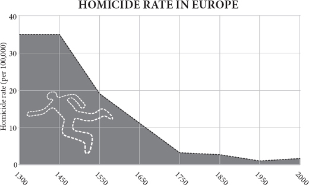
There is a scene in the film The Maltese Falcon in which Humphrey Bogart is about to be given $1,000 by Sydney Greenstreet and will have to share some of it with Mary Astor. Greenstreet whispers to Bogart that he’d like to give him a word of advice: that he assumes that Bogart is going to give her some of the money, but that if he does not give her as much as she thinks she ought to have, he should be careful. The scene prefigures a game, invented by Werner Guth in the late 1970s and much loved by economists, called the Ultimatum Game, which opens a little window into the human spirit. The first player is given some money and told to divide it with the second player. The second player is told he can accept or refuse the offer, but not change it. If he accepts, he receives the money; if he refuses, neither he nor the first player gets a penny. The question is, how much money should the first player offer the second player? Rationally, he should tender almost nothing, and the second player should accept it, because however small the sum, refusal will only make the second player worse off than acceptance. But in practice, people usually offer close to half the money. Generosity seems to come naturally, or rather, ungenerous behaviour is irrationally foolish, because the second player will – and does – consider a derisory offer worth rejecting, if only to punish the selfishness of the first player.
电影《马耳他之鹰》中有这样一个场景：亨弗莱·鲍嘉即将得到悉尼·格林斯特里特的 1000 美元，并要与玛丽·阿斯特分享其中的一部分。格林斯特里特悄悄告诉鲍嘉，他想给他一个建议：他假设鲍嘉会给她一些钱，但如果他没有给她她认为应该有的那么多，他应该小心。这一幕预示着一种游戏，由维尔纳·古斯在 20 世纪 70 年代末发明，深受经济学家的喜爱，叫做终极游戏，它为我们打开了一扇了解人类精神的小窗。第一个玩家得到一些钱，并被告知要与第二个玩家平分。第二个玩家被告知他可以接受或拒绝这个提议，但不能改变它。如果他接受，他就会收到钱；如果他拒绝，他和第一个玩家都不会得到一分钱。问题是，第一个玩家应该给第二个玩家多少钱？理性地说，他应该几乎什么都不给，而第二个玩家应该接受，因为无论金额有多小，拒绝只会让第二个玩家比接受更糟糕。但在实践中，人们通常提供接近一半的钱。慷慨似乎是自然而然的，或者说，不慷慨的行为是非理性的愚蠢，因为第二个玩家会 —— 而且确实 —— 认为一个贬低的报价值得拒绝，如果只是为了惩罚第一个玩家的自私。
The lesson of the ultimatum game and hundreds like it is that again and again people emerge from such experiments as nicer than you think. But the even more surprising lesson is that the more people are immersed in the collective brain of the modern commercial world, the more generous they are. As the economist Herb Gintis puts it, ‘societies that use markets extensively develop a culture of co-operation, fairness and respect for the individual’. His evidence comes from a fascinating study in which people in fifteen mostly small-scale tribal societies were enticed to play the Ultimatum Game. Those societies with the least experience of dealing with outsiders were the most hard-hearted, ungenerous and narrowly ‘rational’. Machiguenga slash-and-burn farmers from the Amazon most often offered just 15 per cent of the sum to their co-subjects, and in all but one cases, the second player accepted. Likewise, a Hadza hunter-gatherer from Tanzania usually makes a very small offer and experiences few rejections. On the other hand, players from those societies that are most integrated into modern markets, such as the Orma nomads of Kenya or the Achuar subsistence gardeners of Ecuador, will usually offer half the money just as a Western undergraduate would. The whale-hunting Lamalera of the island of Lembata in Indonesia, who need to coordinate large teams of strangers on hunts, offer on average 58 per cent – as if investing the windfall in acquiring new obligations. Much the same happens in two New Guinea tribes, the Au and Gnau, whose members often make ‘hyper-fair’ offers and yet see them rejected: in such cultures, gifts can be a burden to the receiver because they carry an obligation to reciprocate.
最后通牒游戏和数百个类似游戏的教训是，人们一次又一次地从这种实验中出现，比你想象的要好。但更令人惊讶的教训是，人们越是沉浸在现代商业世界的集体大脑中，他们就越是慷慨大方。正如经济学家赫伯-金提斯（Herb Gintis）所说，“广泛使用市场的社会发展出一种合作、公平和尊重个人的文化”。他的证据来自一项迷人的研究，在这项研究中，15 个主要是小规模的部落社会中的人们被引诱去玩终极游戏。那些与外人打交道经验最少的社会是最铁石心肠、不慷慨和狭隘 “理性” 的。来自亚马逊的马奇根加（Machiguenga）刀耕火种的农民最常向他们的合作对象提供 15% 的金额，除了一个案例外，其他案例中的第二个参与者都接受了。同样地，来自坦桑尼亚的哈德扎狩猎采集者通常会提出一个非常小的报价，而且很少有拒绝的情况。另一方面，来自那些最融入现代市场的社会的玩家，如肯尼亚的奥尔马游牧民族或厄瓜多尔的阿丘尔自给自足的园丁，通常会像西方本科生一样开出一半的钱。印度尼西亚伦巴达（Lembata）岛的捕鲸者拉马雷拉（Lamalera）需要协调大队的陌生人进行狩猎，他们平均出价 58% —— 似乎是将意外之财投资于获得新的义务。新几内亚的两个部落奥（Au）和瑙（Gnau）也发生了同样的情况，他们的成员经常提出 “超公平” 的提议，但却看到他们被拒绝：在这种文化中，礼物对接受者来说可能是一种负担，因为他们有义务进行回报。
The lesson of this study is that, on the whole, having to deal with strangers teaches you to be polite to them, and that in order for such generosity to emerge, costly punishment of selfishness may be necessary. Rejecting the offer is costly for the second player, but he reckons it is worth it to teach the first player a lesson. The argument is not that exchange teaches people to be kind; it is that exchange teaches people to recognise their enlightened self-interest lies in seeking cooperation. Here, then, lies a clue to the unique human attribute of being able to deal with strangers, to extend the division of labour to include even your enemies.
这项研究的教训是，总的来说，与陌生人打交道会让你学会对他们有礼貌，为了让这种慷慨出现，可能需要对自私行为进行昂贵的惩罚。拒绝提议对第二个参与者来说代价很高，但他认为这对第一个参与者来说是值得的。这个论点并不是说交换教人们变得善良；而是说交换教人们认识到他们开明的自我利益在于寻求合作。那么，这里有一条线索，说明人类的独特属性是能够与陌生人打交道，将劳动分工扩展到甚至包括你的敌人。
Cooperation, exchange and specialisation within a family group are routine throughout the animal kingdom: among chimpanzees and dolphins, among wolves and lions, among individuals of almost any social species. A meerkat or a scrub jay trusts its relative on sentry duty to sound the alarm if an eagle appears and shares the duty. A worker ant divides labour with its queen, with soldiers and with its sisters in other castes of worker. All these societies are just large families. Collaboration between unrelated strangers seems to be a uniquely human achievement. In no other species can two individuals that have never before met exchange goods or services to the benefit of each other, as happens routinely each time you visit a shop or a restaurant or a website. Indeed, in other group-living species, such as ants or chimpanzees, the interactions between members of different groups are almost always violent. Yet human beings can treat strangers as honorary friends.
在整个动物王国中，家庭群体内的合作、交流和专业化是例行公事：在黑猩猩和海豚之间，在狼和狮子之间，在几乎所有社会物种的个体之间。一只猫鼬或一只灌木松鸦相信它的亲戚会在老鹰出现时发出警报并分担职责。一只工蚁与它的蚁后、士兵和其他等级的工蚁姐妹们一起分工。所有这些社会都是大家庭。不相关的陌生人之间的协作似乎是人类独有的成就。在任何其他物种中，从未见过面的两个人都可以交换商品或服务，使对方受益，就像你每次去商店、餐馆或网站时经常发生的那样。事实上，在其他群体生活的物种中，如蚂蚁或黑猩猩，不同群体成员之间的互动几乎都是暴力的。然而，人类可以把陌生人当作名誉上的朋友。
Taking the first step to proffer the hand of cooperation to a homicidal enemy must have been momentous and almost impossibly difficult, which is perhaps why it is such a rare trick in the animal kingdom. It took primatologists such as Sarah Hrdy and Frans de Waal to notice just how peculiar this is: how inconceivable it would be for an orderly queue of stranger chimpanzees to board an aeroplane, or sit down in a restaurant, without turning violently on each other. And generally speaking the more cooperative a species is within groups, the more hostility there is between groups. As a highly ‘groupish’ species ourselves, still given to mutual aid within groups and mutual violence between groups, it is an extraordinary thing that people can overcome their instincts enough to have social commerce with strangers.
迈出第一步，向嗜杀的敌人伸出合作之手，一定是非常重要的，而且几乎是不可能的，这也许就是为什么它在动物界是如此罕见的技巧。萨拉·赫迪（Sarah Hrdy）和弗兰斯·德瓦尔（Frans de Waal）等灵长类动物学家才注意到这是多么的奇特：让一队有秩序的陌生黑猩猩登上飞机，或在餐厅坐下来，而不互相发生暴力冲突，这是多么难以想象的事情。一般来说，一个物种在群体内的合作性越强，群体之间的敌意就越大。作为一个高度 “群体性” 的物种，我们自己仍然在群体内部进行互助，在群体之间进行暴力，人们能够克服他们的本能，与陌生人进行社会贸易，这是一件非常了不起的事情。
I think the first overtures may have been ventured first by human females. After all, homicidal raids against neighbouring groups are – in human beings and in most other primates – conducted always by males. So encounters between strange females are not necessarily going to turn violent. Moreover, in all apes females are the sex that leaves the group into which they were born when they mate; in monkeys, curiously, it is males that leave. Assuming human beings follow the ape pattern – as they do to this day in most human societies – then women would have had close relations in other groups in the shape of their mothers, fathers and brothers with whom to build relationships. There is even a curious, much later echo of such a femalecentred pattern in the trading patterns of south-east Asia before the arrival of Westerners. The traders of Malaysia, Indonesia and the Philippines were often women, who were taught to calculate and to account from an early age.
我认为最早的挑衅可能是由人类的雌性冒险进行的。毕竟，在人类和大多数其他灵长类动物中，对邻近群体的杀戮性袭击总是由雄性进行的。因此，陌生雌性之间的相遇不一定会变成暴力。此外，在所有的猿类中，雌性在交配时都会离开它们出生的群体；奇怪的是，在猴子中，离开的是雄性。假设人类遵循猿类的模式 —— 至今在大多数人类社会中都是如此 —— 那么女性在其他群体中就会有密切的关系，即与她们的母亲、父亲和兄弟建立关系。在西方人到来之前，东南亚的贸易模式中甚至有一种奇怪的、更晚的以女性为中心的模式的回声。马来西亚、印度尼西亚和菲律宾的商人往往是妇女，她们从小就被教导计算和会计。
Again and again throughout history, trust has to start with relatives before it can be extended to strangers; sending relatives abroad as agents has a long history. The trading ports of Asia each had their own communities of Gujaratis, Fujianese, Persians, Armenians, Jews and Arabs, just as the ports of Europe had their separate communities of Genoese, Florentine, Dutch, English and Hanseatic merchants, keeping the trust within the family as their diasporas spread. The financing of Wellington’s armies in Spain in 1809–12 was made possible because the British government trusted a Jewish lender named Nathan Rothschild to trust his brothers on the continent to buy bullion with British paper.
纵观历史，信任必须从亲属开始，然后才能延伸到陌生人身上；将亲属送到国外当代理人的历史由来已久。亚洲的贸易港口都有自己的古吉拉特人、福建人、波斯人、亚美尼亚人、犹太人和阿拉伯人社区，就像欧洲的港口有各自的热那亚人、佛罗伦萨人、荷兰人、英国人和汉萨人商人社区一样，在他们的散居地扩散时，保持着家族内的信任。1809-12 年威灵顿在西班牙的军队的融资之所以能够实现，是因为英国政府信任一个名叫内森·罗斯柴尔德的犹太贷款人，信任他在欧洲大陆的兄弟用英国纸购买金银。
Finding a trade buddy
找到一个贸易伙伴
In 2004, a series of volunteer undergraduates sat down at computer screens at George Mason University in Virginia to play games for money. In the game each person found himself in a virtual village with his own house and field in which he could produce and consume red and blue virtual ‘units’ during brief sessions of the game. In each case, he knew that the more he acquired and the closer he got to a certain ratio of blue and red units (e.g., 3:1) the more real money he went home with. But unknown to him, he was either an ‘odd’ player, who was programmed to be faster at making red units, or an ‘even’ player, faster at making blue units. On his screen each player could see what other players (two, four or eight in total) were up to and he could chat with them on-screen during each run and in the 100-second gaps between runs. On one run of the game, in session six, two players had the following exchange:
2004 年，在弗吉尼亚州的乔治·梅森大学，一系列志愿者本科生坐在电脑屏幕前玩游戏赚钱。在游戏中，每个人都发现自己在一个虚拟的村庄里，有自己的房子和田地，在短暂的游戏时间里，他可以生产和消费红色和蓝色的虚拟 “单位”。在每一种情况下，他知道他获得的越多，越接近一定的蓝色和红色单位的比例（例如，3:1），他回家的真钱就越多。但他不知道，他要么是一个 “奇数” 玩家，被编程为更快地制造红色单位，要么是一个 “偶数” 玩家，更快制造蓝色单位。在他的屏幕上，每个玩家都可以看到其他玩家（2 个、4 个或 8 个）在做什么，他可以在每次运行期间和运行之间的 100 秒空隙在屏幕上与他们聊天。在第六节的一次游戏中，两名玩家进行了如下交流。
‘wonder if u can give me objects’
‘不知道你能不能给我物件’
‘oh yeah.’
'哦，可以。'
‘heyyy, i make blues faster, what color do u make faster?’
‘heyyy, 我做蓝色的比较快，你做什么颜色的比较快？’
‘red’
‘红的’
‘lol ok’
‘哈哈，好吧’
‘LOL’
‘哈哈’
‘so ill make all blues and u make all reds’
‘那我就做所有的蓝色，你做所有的红色’
‘then drop them to each other’s houses?’
‘然后把他们送到对方的家里？’
‘yea do it’
'就这么定了'
‘ok 100% red’
‘ok 我全做红的'
‘100% blue’
‘我全做蓝的’
The purpose of the experiment, run by Bart Wilson, Vernon Smith and their colleagues, was of course to see if people discovered exchange and specialisation for themselves with no rules or instructions. In the game, specialising is risky because the pay-off for ending up with units of only one colour is zero, but specialisation with exchange allows three times the pay-off of self-sufficiency. Yet there were no clues that trading was even possible. Though some players remained stuck in low-yielding self-sufficiency, most eventually discovered gains from trade. ‘Prior to exchange,’ comment the experimenters, ‘near-autarky prevails, and once the “power of exchanging” is discovered, specialisation gradually evolves.’ Intriguingly, the players began by trading bilaterally and personally – that is, each player developed a trading relationship with another player and only later extended the invitation to others.
由巴特·威尔逊（Bart Wilson）、弗农·史密斯（Vernon Smith）和他们的同事进行的这个实验的目的当然是要看看人们是否在没有规则或指示的情况下自己发现了交换和专业化。在游戏中，专业化是有风险的，因为最终只有一种颜色的单位的回报是零，但通过交换的专业化允许三倍于自给自足的回报。然而，没有任何线索表明交易是可能的。虽然有些玩家仍然停留在低收益的自给自足上，但大多数人最终发现了贸易的收益。实验者评论说：“在交换之前，近乎自相残杀的情况普遍存在，而一旦发现 ‘交换的力量’，专业化就会逐渐发展起来”。耐人寻味的是，玩家开始时是以双边和个人的方式进行交易 —— 也就是说，每个玩家都与另一个玩家建立了交易关系，后来才向其他人发出了邀请。
That trade began as a bilateral and personal affair seems plausible. In the nineteenth century among the Yir Yoront aborigines, in northern Australia, each man’s family camp had at least one highly valued stone axe. The axes all came from a quarry jealously guarded and systematically worked by the Kalkadoon tribe at Mount Isa, 400 miles to the south, far beyond the Yir Yoront lands, and they passed through the hands of many trading partners to reach the tribe. Each older man had a trading partner to the south whom he met once a year in the dry season at a ceremonial gathering. In exchange for a dozen sting-ray barbs, to be used as spear tips, he received an axe. In turn he had obtained some of the barbs from his other trading partner to the north – to whom he gave an axe in return. Another 150 miles to the south, the exchange rate was different: one axe for one barb. There were arbitrage profits all along the chain.
贸易开始时是一种双边和个人事务，这似乎是合理的。十九世纪，在澳大利亚北部的伊尔约伦特（Yir Yoront）原住民中，每个人的家庭营地至少有一把非常有价值的石斧。这些斧头都来自南面 400 英里处的伊萨山（Mount Isa）的卡尔卡杜恩（Kalkadoon）部落的一个采石场，该采石场由卡尔卡杜恩部落嫉妒地看守并系统地工作，远远超出了伊尔约伦特的土地，它们经过许多贸易伙伴的手才到达该部落。每个老年人都有一个南方的贸易伙伴，他每年都会在旱季的一个仪式聚会上与之会面。作为交换，他得到了一把斧头，以换取一打用作矛尖的刺魟钩。反过来，他也从北方的另一个贸易伙伴那里得到了一些倒刺，作为回报，他给了对方一把斧头。再往南走 150 英里，汇率就不同了：一把斧子换一个倒刺。这条链上都有套利利润。
So perhaps the first steps to trade with strangers began as individual friendships. A woman could trust her daughter who had married into an allied band within the same tribal grouping. Then perhaps the woman’s husband could learn to trust his son-in-law. The alliance between the bands in the face of a common enemy allowed the barrier of suspicion to be breached long enough for one to discover that the other had a surplus of stone for making axes, or of sting-ray barbs for making spear tips. Gradually, step by step, the habit of trade began to grow alongside the habit of xenophobia, complicating the ambitions of men and women.
因此，也许与陌生人交易的第一步是从个人友谊开始的。一个女人可以信任她的女儿，因为她嫁到了同一部落群中的一个联盟部落。然后，也许这个女人的丈夫可以学会信任他的女婿。面对共同的敌人，部落之间的联盟使猜疑的障碍被打破，足以让一方发现另一方有多余的石头用于制造斧头，或有刺魟的倒刺用于制造矛头。渐渐地，贸易的习惯开始与排外的习惯一起增长，使男人和女人的野心变得复杂。
Most people assume that long-distance trade among strangers and the very concept of the market was a comparatively late development in human history, coming long after agriculture. But, as the Australian aborigines suggest, this is bunk. There is no known human tribe that does not trade. Western explorers, from Christopher Columbus to Captain Cook, ran into many confusions and misunderstandings when they made first contact with isolated peoples. But the principle of trading was not one of them, because the people they met in every case already had a notion of swapping things. Within hours or days of meeting a new tribe, every explorer is bartering. In 1834 in Tierra del Fuego a young naturalist named Charles Darwin came face to face with some hunter-gatherers: ‘Some of the Fuegians plainly showed that they had a fair notion of barter. I gave one man a large nail (a most valuable present) without making any signs for a return; but he immediately picked out two fish, and handed them up on the point of his spear.’ Darwin and his new friend needed no common language to understand the bargain they were agreeing. Likewise, New Guinea highlanders, when first contacted by Michael Leahy and his fellow prospectors in 1933, gave them bananas in exchange for cowrie shells. Pre-contact, the New Guineans had been trading stone axes over large distances for a very long time. In Australia, baler shells and stone axes had been crossing the entire continent by trade for untold generations. The people of the Pacific coast of North America were sending seashells hundreds of miles inland, and importing obsidian from even farther afield. In Europe and Asia in the Old Stone Age, amber, obsidian, flint and seashells were travelling farther than individual people could possibly have carried them. In Africa, obsidian, shells and ochre were being traded long distances by 100,000 years ago. Trade is prehistoric and ubiquitous.
大多数人认为，陌生人之间的长途贸易和市场的概念在人类历史上是一个相对较晚的发展，在农业之后很久才出现。但是，正如澳大利亚原住民所暗示的那样，这是在胡说八道。没有一个已知的人类部落不进行贸易。从克里斯托弗·哥伦布到库克船长的西方探险家，在与孤立的民族进行首次接触时，遇到了许多困惑和误解。但交易的原则不是其中之一，因为他们在每一种情况下遇到的人都已经有了交换东西的概念。在遇到一个新部落的几小时或几天内，每个探险家都在进行易货贸易。1834 年在火地岛，一位名叫查尔斯·达尔文的年轻自然学家与一些狩猎采集者面对面。一些斐济人人清楚地表明，他们对易货贸易有相当的概念。我给了一个人一个大钉子（一个最宝贵的礼物），但没有做任何回报的迹象；但他立即挑出两条鱼，用他的矛尖把它们递上去。达尔文和他的新朋友不需要共同的语言就能理解他们所达成的交易。同样，当迈克尔·莱希和他的勘探者同伴在 1933 年第一次接触新几内亚高地人时，他们用香蕉来换取牛肝菌壳。在接触之前，新几内亚人已经在很长时间内进行了远距离的石斧交易。在澳大利亚，打捆机壳和石斧通过贸易穿越整个大陆已经有数代人了。北美洲太平洋沿岸的人们将贝壳送往内陆数百英里，并从更远的地方进口黑曜石。在旧石器时代的欧洲和亚洲，琥珀、黑曜石、燧石和贝壳的运输距离比个人可能携带的还要远。在非洲，黑曜石、贝壳和赭石在 10 万年前就有了远距离的交易。贸易是史前的，也是无处不在的。
Moreover, some ancient hunter-gatherer societies reached such a pitch of trade and prosperity as to live in dense, sophisticated hierarchical societies with much specialisation. Where the sea produced a rich bounty, it was possible to achieve a density of the kind that normally requires agriculture to support it – complete with chiefs, priests, merchants and conspicuous consumption. The Kwakiutl Americans, living off the salmon runs of the Pacific North West, had family property rights to streams and fishing spots, had enormous buildings richly decorated with sculptures and textiles, and engaged in bizarre rituals of conspicuous consumption such as the giving of rich copper gifts to each other, or the burning of candlefish oil, just for the prestige of being seen to be philanthropic. They also employed slaves. Yet they were strictly speaking hunter-gatherers. The Chumash of the Californian channel islands, well fed on sea food and seal meat, included specialist craftsmen who fashioned beads from abalone shells to use as currency in a sophisticated and long-range canoe trade. Trade with strangers, and the trust that underpins it, was a very early habit of modern human beings.
此外，一些古老的狩猎·采集社会达到了贸易和繁荣的程度，从而生活在密集的、复杂的、有许多专业化的等级社会里。在海产丰富的地方，有可能达到通常需要农业支持的那种密度 —— 有酋长、祭司、商人和显眼的消费。以西北太平洋以鲑鱼为生的美洲人，对溪流和捕鱼点拥有家族产权，拥有巨大的建筑，用雕塑和纺织品进行丰富的装饰，并从事怪异的显性消费仪式，如相互赠送丰富的铜制礼物，或燃烧烛鱼油，只是为了被视为慈善家的声望。他们还雇用奴隶。但严格来说，他们是狩猎采集者。加利福尼亚海峡岛屿的丘马什人（Chumash）以海洋食物和海豹肉为食，包括用鲍鱼壳制作珠子的专业工匠，那些珠子在复杂的远距离独木舟贸易中作为货币使用。与陌生人的贸易，以及作为其基础的信任，是现代人类很早就有的习惯。
The trust juice
信任果汁
But is trade made possible by the milk of human kindness, or the acid of human self-interest? There was once a German philosophical conundrum known as Das Adam Smith Problem, which professed to find a contradiction between Adam Smith’s two books. In one he said that people were endowed with instinctive sympathy and goodness; in the other, that people were driven largely by self-interest. ‘How selfish soever man may be supposed, there are evidently some principles in his nature, which interest him in the fortunes of others, and render their happiness necessary to him, though he derives nothing from it, except the pleasure of seeing it,’ he wrote in Theory of Moral Sentiments . ‘Man has almost constant occasion for the help of his brethren, and it is in vain for him to expect it from their benevolence only. He will be more likely to prevail if he can interest their self-love in his favour,’ he wrote in The Wealth of Nations .
但是，贸易是由人类善良的乳汁，还是人类自我利益的酸液促成的？曾经有一个德国哲学难题，被称为 “亚当·斯密问题>”，它声称在亚当·斯密的两本书中发现了一个矛盾点。在一本书中，他说人们被赋予了本能的同情心和善良；在另一本书中，人们主要受自我利益的驱动。他在《 class="calibre5">道德情操论》中写道：“无论人是多么自私，在他的本性中显然有一些原则，这些原则使他对他人的命运感兴趣，并使他人的幸福对他来说是必要的，尽管他除了看到它的快乐外，没有从中得到任何好处。他在《道德情操论》中写道：“人几乎总是有机会得到他的兄弟们的帮助，而他只期望从他们的仁慈中得到帮助是徒劳的。” 他在《国富论》中写道：“如果他能使他们的自爱对他有利，他就更有可能获胜。”
Smith’s resolution of the conundrum is that benevolence and friendship are necessary but not sufficient for society to function, because man ‘stands at all times in need of the cooperation and assistance of great multitudes, while his whole life is scarce sufficient to gain the friendship of a few persons’. In other words, people go beyond friendship and achieve common interest with strangers: they turn strangers into honorary friends, to use Paul Seabright’s term. Smith brilliantly confused the distinction between altruism and selfishness: if sympathy allows you to please yourself by pleasing others, are you being selfish or altruistic? As the philosopher Robert Solomon put it, ‘What I want for myself is your approval, and to get it I will most likely do what you think I should do.’
斯密对这一难题的解答是，仁爱和友谊是社会运作的必要条件，但并不充分，因为人 “在任何时候都需要众多人的合作和帮助，而他的整个生命却很少足以获得少数人的友谊”。换句话说，人们超越了友谊，实现了与陌生人的共同利益：他们把陌生人变成了名誉上的朋友 —— 用保罗·西布赖特（Paul Seabright）的术语来说。史密斯出色地混淆了利他主义和自私的区别：如果同情心让你通过取悦他人来取悦自己，你是自私还是利他主义？正如哲学家罗伯特·所罗门所说：“我为自己想要的是你的认可，为了得到它，我很可能会做你认为我应该做的事。”
This ability to transact with strangers as if they were friends is made possible by an intrinsic, instinctive human capacity for trust. Often the very first thing you do when you meet a stranger and begin to transact with him or her, say a waiter in a restaurant, is to smile – a small, instinctive gesture of trust. The human smile, the glowing embodiment of Smith’s innate sentiment of sympathy, can reach right into the brain of another person and influence her thoughts. In the extreme case, a baby smiling causes particular circuits in its mother’s brain to fire and make her feel good. No other animal smiles in this way. But even among adults, a touch, a massage, or, as experiments have shown, a simple act of financial generosity, can cause the release of the hormone oxytocin in the brain of the recipient, and oxytocin is the chemical that evolution uses to make mammals feel good about each other – whether parents about their babies, lovers about their mates or friends about their friends. It works the other way, too: squirting oxytocin up the noses of students will cause them to trust strangers with their money more readily than those who receive a placebo squirted up their noses. ‘Oxytocin is a physiologic signature of empathy,’ says the neuro-economist Paul Zak, who conducts these experiments, ‘and appears to induce a temporary attachment to others.’
这种与陌生人像朋友一样进行交易的能力是由人类内在的、本能的信任能力促成的。当你遇到一个陌生人并开始与他或她进行交易时，比如餐厅的服务员，你所做的第一件事往往是微笑 —— 这是一个小小的、本能的信任姿态。人类的微笑，是史密斯与生俱来的同情情绪的光辉体现，可以直接进入另一个人的大脑，影响她的想法。在极端的情况下，婴儿的微笑会使其母亲的大脑中的特定电路启动，使她感觉良好。没有其他动物会以这种方式微笑。但是，即使在成年人中，一次抚摸、一次按摩，或者正如实验所显示的那样，一个简单的财务慷慨行为，都可以在接受者的大脑中引起荷尔蒙催产素的释放，而催产素是进化过程中用来使哺乳动物彼此感觉良好的化学物质 —— 无论是父母对婴儿、恋人对伴侣还是朋友对朋友。催产素的作用还体现在另一个方面：把催产素喷到学生的鼻子里，会使他们比那些被喷到鼻子里的安慰剂影响的人更容易相信陌生人的钱。催产素是同理心的生理标志，“进行这些实验的神经经济学家保罗·扎克（Paul Zak）说，“它似乎能诱发对他人的暂时依恋。”
In 2004 Zak, together with Ernst Fehr and other colleagues, conducted one of the most revealing experiments in the history of economics, which showed just how specific the trusting effect of oxytocin is. They recruited 194 male students from Zurich (the experiment must not be done with females, because if one happens to be pregnant without knowing it, oxytocin might trigger labour) and made them play one of two games. In the first game, the trust game, a player called the investor is given twelve monetary units and told that if he hands some of it over to another player, the trustee, that amount will be quadrupled by the experimenter. Thus if he hands over all twelve units, the trustee will receive forty-eight. The trustee may pay some of it back to the investor, but has absolutely no obligation to do so. So the investor risks losing all his money, but if he can trust the trustee to be generous, he might stand to make a good profit. The question is: how much will the investor hand over?
2004 年，扎克与恩斯特·费尔（Ernst Fehr）和其他同事一起进行了经济学史上最具启示性的实验之一，该实验表明催产素的信任效应是多么具体。他们从苏黎世招募了 194 名男学生（该实验不能用女性做，因为如果一个人碰巧怀孕而不知道，催产素可能会引发分娩），让他们玩两个游戏中的一个。在第一个游戏中，即信任游戏，一个被称为投资者的玩家得到了 12 个货币单位，并被告知如果他把其中的一部分交给另一个玩家，即受托人，这个数额将被实验者翻两番。因此，如果他把所有的十二个单位都交给受托人，受托人将得到四十八个。受托人可以将其中一部分还给投资者，但绝对没有义务这样做。因此，投资者有可能失去他所有的钱，但如果他能相信受托人是慷慨的，他可能会有丰厚的利润。问题是：投资者会交出多少钱？
The results were remarkable. Investors who receive a squirt of oxytocin up their noses before the experiment begins hand over 17 per cent more money than those who receive a squirt of inert saline solution up their noses, and the median transfer is ten units rather than eight. The oxytocin investors are more than twice as likely to hand over the full twelve units as the controls. Yet oxytocin has no such effect on the back transfers offered by the trustees, who are just as generous without oxytocin as with. So – as animal experiments have suggested – oxytocin does not affect reciprocity, just the tendency to take a social risk, to go out on a limb. Moreover, a second game, identical to the first except that the generosity of the trustees is randomly decided, shows no effect of oxytocin on the investors. So oxytocin specifically increases trusting, rather than general risk-taking. As with lovers and mothers, the hormone enables animals to take the risk of approaching other members of the species – it ‘links the overcoming of social avoidance with the activation of brain circuits implicated in reward’. It does this partly by suppressing the activity of the amygdala, the organ that expresses fear. If human economic progress has included a crucial moment when human beings learned to treat strangers as trading partners, rather than enemies, then oxytocin undoubtedly played a vital role.
结果是显著的。在实验开始前，在鼻子上喷洒催产素的投资者比那些在鼻子上喷洒惰性盐水的投资者多交了 17% 的钱，而且转移的中值是 10 个单位，而不是 8 个单位。催产素投资者交出全部 12 个单位的可能性是对照组的两倍以上。然而，催产素对受托人提供的背面转让没有这种影响，受托人在没有催产素的情况下和有催产素的情况下一样慷慨。因此，正如动物实验所表明的那样，催产素并不影响互惠，而只是影响承担社会风险的倾向，影响走出去的倾向。此外，第二个游戏与第一个游戏相同，只是受托人的慷慨程度是随机决定的，显示催产素对投资者没有影响。因此，催产素特别增加了信任，而不是一般的风险承担。与恋人和母亲一样，这种激素使动物能够冒险接近其他物种的成员 —— 它 “将克服社会回避与激活涉及奖励的大脑回路联系起来”。它部分地通过抑制杏仁核的活动来做到这一点，杏仁核是表达恐惧的器官。如果人类的经济进步包括一个关键时刻，即人类学会把陌生人当作贸易伙伴而不是敌人，那么催产素无疑发挥了重要作用。
People are surprisingly good at guessing who to trust. Robert Frank and his colleagues set up an experiment in which the volunteer subjects had conversations in groups of three for half an hour. After that, they were sent to separate rooms to play, with their conversation partners, the prisoner’s dilemma game (in which each player must decide whether to cooperate in the hope of a mutual gain or defect in the hope of a selfish gain if the other player cooperates). First, though, each player filled in a form not only saying how she would play with each partner, but also predicting what strategy each partner would adopt. As so often in this game, three-quarters of subjects said they would cooperate, reinforcing Smith’s point that people are innately nice (economics students, who have been taught the self-interested nature of human beings, are twice as likely to defect!). Remarkably, the subjects were very good at predicting who would cooperate and who would defect: people who were predicted to cooperate did so 81 per cent of the time, compared with 74 per cent for the group as a whole. People who were predicted to defect did so 57 per cent of the time, compared with 26 per cent for the group as a whole. Most people, says the economist Robert Frank, can think of an unrelated friend who they would trust to return to them a wallet that had been lost in a crowded concert. Conversely, people acutely remember the faces of those who cheat them.
人们在猜测信任谁方面的能力令人惊讶。罗伯特·弗兰克和他的同事建立了一个实验，在这个实验中，志愿受试者三人一组进行了半小时的对话。之后，他们被送到不同的房间，与他们的对话伙伴一起玩囚徒困境游戏（在这个游戏中，每个玩家必须决定是合作以希望获得共同利益，还是叛变以希望在其他玩家合作时获得自私利益）。不过，首先，每个玩家都要填写一份表格，不仅要说明她将如何与每个伙伴进行游戏，还要预测每个伙伴将采取什么策略。正如在这个游戏中经常发生的那样，四分之三的受试者说他们会合作，这加强了斯密的观点，即人们天生是善良的（经济学学生被灌输了人类自利的本质，他们叛变的可能性是两倍！）。值得注意的是，受试者非常善于预测谁会合作，谁会叛变：被预测为合作的人在 81% 的情况下都会合作，而整个小组的比例为 74%。被预测为叛逃的人在 57% 的时间里做到了这一点，而整个群体的这一比例为 26%。经济学家罗伯特·弗兰克（Robert Frank）说，大多数人都能想到一个不相干的朋友，他们会相信他会把在拥挤的音乐会上丢失的钱包还给他们。相反，人们对那些欺骗他们的人的面孔记得很清楚。
Thus, the entire edifice of human cooperation and exchange, upon which prosperity and progress are built, depends on a fortunate biological fact. Human beings are capable of empathy, and are discerning trusters. Is that it, then? That human beings can build complicated societies and experience prosperity is down to the fact that they have a biological instinct that encourages cooperation? If only it were that simple. If only the arguments of Hobbes and Locke, of Rousseau and Voltaire, of Hume and Smith, of Kant and Rawls, could be brought to such a neat and reductionist conclusion. However, the biology is only the start. It is something that makes prosperity possible, but it is not the whole explanation.
因此，人类合作和交流的整个大厦，也就是繁荣和进步的基础，取决于一个幸运的生物学事实。人类有移情能力，是有鉴别力的信任者。那么，是这样吗？人类能够建立复杂的社会并经历繁荣，是因为他们有一种鼓励合作的生物本能？如果事情真的这么简单就好了。如果霍布斯和洛克、卢梭和伏尔泰、休谟和斯密、康德和罗尔斯的论点能够被带入这样一个整齐和简化的结论就好了。然而，生物学只是一个开始。它是使繁荣成为可能的东西，但它不是全部的解释。
Besides, there is still no evidence that any of this biology is uniquely developed in human beings. Capuchin monkeys and chimpanzees are just as resentful of unfair treatment as human beings are and just as capable of helpful acts towards kin or group members. The more you look at altruism and cooperation, the less uniquely human it appears. Oxytocin is common to all mammals, and is used for mother-love in sheep and lover-love in voles, so the chances are that it is available to underpin trust in almost any social mammal. It is necessary, but not sufficient to explain the human propensity to exchange. On the other hand, it is highly likely that during the past 100,000 years human beings have developed peculiarly sensitive oxytocin systems, much more ready to fire with sympathy, as a result of natural selection in a trading species. That is to say, just as the genes for digesting milk as an adult have changed in response to the invention of dairying, so the genes for flushing your brain with oxytocin have probably changed in response to population growth, urbanisation and trading – people have become oxytocin-junkies far more than many other animals.
此外，仍然没有证据表明这种生物学在人类身上有独特的发展。卷尾猴和黑猩猩和人类一样对不公平的待遇感到不满，一样能够对亲属或群体成员采取帮助行动。你对利他主义和合作看得越多，它就越不像是人类特有的。催产素是所有哺乳动物都有的，绵羊的母爱和田鼠的恋人之爱都用到了催产素，所以它有可能在几乎所有的社会哺乳动物中支持信任。它是必要的，但并不足以解释人类的交换倾向。另一方面，在过去的 10 万年里，人类极有可能发展出特别敏感的催产素系统，更容易因同情心而发射，这是贸易物种的自然选择的结果。也就是说，正如成人消化牛奶的基因随着乳业的发明而改变一样，用催产素冲刷大脑的基因也可能随着人口增长、城市化和贸易而改变 —— 人们成为催产素迷的程度远远超过许多其他动物。
Moreover, finding the underlying physiology of trust does little to explain why some human societies are much better at generating trust than others. As a broad generalisation, the more people trust each other in a society, the more prosperous that society is, and trust growth seems to precede income growth. This can be measured by a combination of questionnaires and experiments – leaving a wallet on the street and seeing if it is returned, for instance. Or asking people, in their native tongue, ‘generally speaking, would you say that most people can be trusted, or that you cannot be too careful in dealing with people?’ By these measures, Norway is heaving with trust (65 per cent trust each other) and wealthy, while Peru is wallowing in mistrust (5 per cent trust each other) and poor. ‘A 15% increase in the proportion of people in a country who think others are trustworthy,’ says Paul Zak, ‘raises income per person by 1% per year for every year thereafter.’ This is most unlikely to be because Norwegians have more oxytocin receptors in their brains than Peruvians, but it does suggest that Norwegian society is better designed to elicit the trust systems than Peruvian.
此外，找到信任的基本生理学，并不能解释为什么一些人类社会比其他社会更善于产生信任。作为一个广泛的概括，一个社会中人们相互信任的程度越高，这个社会就越繁荣，而且信任的增长似乎先于收入增长。这可以通过调查问卷和实验相结合的方式来衡量 —— 例如，把钱包放在街上，看它是否被送回来。或者用人们的母语问他们：“一般来说，你认为大多数人是可以信任的，还是说在与人打交道时不能太小心？” 根据这些衡量标准，挪威充满了信任（65% 的人相互信任）和富裕，而秘鲁则沉浸在不信任中（5% 的人相互信任）和贫穷。保罗·扎克说：“一个国家中认为他人值得信赖的人的比例增加 15%，此后每年每人的收入就会增加 1%。这很可能是因为挪威人的大脑中有更多的催产素受体，而不是秘鲁人，但它确实表明挪威社会比秘鲁社会更能激发信任系统。”
It is not at all clear what comes first: the trust instinct or trade. It is most unlikely that the oxytocin system fortuitously mutated into a sensitive form, which then enabled human beings to develop trading. Much more plausibly, human beings began tentatively to trade, capturing the benefits of comparative advantage and collective brains, which in turn encouraged natural selection to favour mutant forms of the human mind that were especially capable of trust and empathy – and even then to do so cautiously and suspiciously. I shall be amazed if the genetics of the oxytocin system do not show evidence of having changed rapidly and recently in response to the invention of trade, by gene-culture co-evolution.
完全不清楚什么是先有的：信任本能或贸易。最不可能的是，催产素系统偶然地突变为一种敏感的形式，然后使人类能够发展贸易。更有可能的是，人类开始试探性地进行贸易，获取比较优势和集体大脑的好处，这反过来又促使自然选择倾向于人类心灵的突变形式，特别是能够信任和移情 —— 即使在那时也是谨慎和怀疑地这样做。如果催产素系统的遗传学没有显示出最近因贸易的发明而迅速改变的证据，我将感到惊讶，因为基因·文化共同进化。
The shadow of the future
未来的阴影
A trillion generations of unbroken parental generosity stand behind a bargain with your mother. A hundred good experiences stand behind your reliance on a friend. The long shadow of the future hangs over any transaction with your local shopkeeper. He surely knows that in making a quick buck now by ripping you off he risks losing all future purchases you might make. What is miraculous is that in modern society you can trust and be trusted by a shopkeeper you do not know. Almost invisible, the guarantors of trust lurk beneath every modern market transaction: the sealed packaging, the warranty, the customer feedback form, the consumer legislation, the brand itself, the credit card, the ‘promise to pay the bearer’ on the money. When I go into a well-known supermarket and pick up a tube of toothpaste of a well-known brand, I do not need to open the package and squirt a little toothpaste on to my finger to test that the tube is not filled with water; I do not even need to know that the shop is subject to laws that would prosecute it for selling false goods. I just need to know that this big retailing company, and the big company that made the toothpaste, are both keen to keep me coming back year after year, that the shadow of reputational risk hangs over this simple transaction, ensuring that I can trust this toothpaste seller without a moment’s thought.
在与你母亲的交易背后，是一万亿代父母的慷慨解囊。在你对朋友的依赖背后，有一百次美好的经历。与当地店主的任何交易都笼罩着未来的阴影。他肯定知道，如果现在通过欺骗你来赚取快钱，他就有可能失去你未来可能进行的所有购买。神奇的是，在现代社会，你可以信任一个你不认识的店主，也可以被他信任。几乎看不见的是，信任的保证人潜伏在每一个现代市场交易的下面：密封的包装、保证书、客户反馈表、消费者法规、品牌本身、信用卡、钱上的 “承诺支付给持票人”。当我走进一家知名的超市，拿起一管知名品牌的牙膏时，我不需要打开包装，在手指上喷一点牙膏来测试这管牙膏里是不是装了水；我甚至不需要知道这家商店受到法律的约束，可以起诉它销售虚假商品。我只需要知道这家大的零售公司和生产牙膏的大公司都很想让我年复一年地回来，信誉风险的阴影笼罩着这个简单的交易，确保我可以不假思索地信任这个卖牙膏的。
There is a vast history behind the trustworthiness of a tube of toothpaste, a long path of building trust inch by inch. Once that path is trodden, though, trust can be borrowed for new products and new media with surprising ease. The remarkable thing about the early days of the internet was not how hard it proved to enable people to trust each other in the anonymous reaches of the ether, but how easy. All it took was for eBay to solicit feedback from customers after each transaction and post the comments of buyers about the sellers. Suddenly every deal lay under the shadow of the future; suddenly, every eBay user felt the hot breath of reputation on his neck as surely as a Stone Age reindeer hide salesman returning to a trading place after selling a rotten hide the year before. When Pierre Omidyar founded eBay, few believed as he did that trust between anonymous strangers would prove easy to create in the new medium. But by 2001, fewer than 0.01 per cent of all transactions on the site were fraud attempts. John Clippinger draws an optimistic conclusion: ‘The success of trust-based peer organizations such as eBay, Wikipedia, and the open-source movement, indicates that trust is a highly expandable network property.’ Perhaps the internet has returned us to a world a bit like the Stone Age in which there is no place for a fraudster to hide.
在一管牙膏的可信赖性背后有一个巨大的历史，这是一条一寸一寸建立信任的漫长道路。然而，一旦这条路被踏平，信任就能以惊人的速度被借用到新产品和新媒体上。互联网早期的非凡之处不是证明让人们在匿名的乙醚中相互信任有多么困难，而是多么容易。eBay 只需在每笔交易后向客户征集反馈意见，并公布买家对卖家的评论。突然间，每笔交易都被置于未来的阴影之下；突然间，每个 eBay 用户都感觉到声誉的热气扑面而来，就像石器时代的驯鹿皮销售员在前一年卖出一张腐烂的鹿皮后回到交易地点一样肯定。当皮埃尔·奥米迪亚（Pierre Omidyar）创立 eBay 时，很少有人像他那样相信匿名陌生人之间的信任会在新媒体中被证明很容易建立。但是到了 2001 年，该网站上所有的交易中只有不到 0.01% 是欺诈行为。约翰·克莱平格得出了一个乐观的结论：“基于信任的同行组织的成功，如 eBay、维基百科和开源运动，表明信任是一个高度可扩展的网络属性。” 也许互联网让我们回到了一个有点像石器时代的世界，在这个世界上，欺诈者没有地方可以藏身。
That response would be naïve. There is plenty of innovative and destructive cyber-crime to come. None the less, the internet is a place where the problem of trust between strangers is solved daily. Viruses can be avoided, spam filters can work, Nigerian emails that con people into divulging their bank account details can be marginalised, and as for the question of trust between buyer and seller, companies like eBay have enabled their customers to police each other’s reputations by the simple practice of feedback. The internet, in other words, may be the best forum for crime, but it is also the best forum for free and fair exchange the world has ever seen.
这种反应将是幼稚的。还有很多创新和破坏性的网络犯罪要发生。尽管如此，互联网是一个每天都在解决陌生人之间信任问题的地方。病毒可以避免，垃圾邮件过滤器可以发挥作用，欺骗人们泄露其银行账户信息的尼日利亚电子邮件可以被边缘化，至于买方和卖方之间的信任问题，像 eBay 这样的公司已经使其客户能够通过简单的反馈做法来监督彼此的声誉。换句话说，互联网可能是犯罪的最佳论坛，但它也是世界上有史以来自由和公平交换的最佳论坛。
My point is simply this: with frequent setbacks, trust has gradually and progressively grown, spread and deepened during human history, because of exchange. Exchange breeds trust as much as vice versa. You may think you are living in a suspicious and dishonest world, but you are actually the beneficiary of immense draughts of trust. Without that trust the swapping of fractions of labour that goes to make people richer could not happen. Trust matters, said J.P. Morgan to a congressional hearing in 1912, ‘before money or anything else. Money cannot buy it ... because a man I do not trust could not get money from me on all the bonds in Christendom.’ Google’s code of conduct echoes Morgan: ‘Trust is the foundation upon which our success and prosperity rest, and it must be re-earned every day, in every way, by every one of us.’ (And, yes, one day people will probably look back on Google’s founders as robber barons, too.) If people trust each other well, then mutual service can evolve with low transactional friction; if they do not, then prosperity will seep away. That is, of course, a large part of the story of the banking crisis of 2008. Banks found themselves holding bits of paper that told lies – that said they were worth far more than they were. Transactions collapsed.
我的观点很简单：在人类历史上，尽管经常遇到挫折，但由于交流的存在，信任已经逐渐地、逐步地增长、传播和加深了。交流孕育着信任，反之亦然。你可能认为你生活在一个多疑和不诚实的世界，但你实际上是巨大的信任的受益者。没有这种信任，就不可能发生使人们更富有的劳动碎片的交换。摩根（J.P. Morgan）在 1912 年的国会听证会上说，“信任很重要，比金钱或其他东西都重要。金钱是买不到信任的…… 因为我不信任的人不能从我这里得到所有基督教国家的债券的钱”。谷歌的行为准则呼应了摩根：“信任是我们成功和繁荣的基础，它必须每天以各种方式由我们每个人重新获得。”（是的，有一天人们可能也会把谷歌的创始人看成是强盗大亨）。）如果人们很信任对方，那么相互服务就可以在低交易摩擦中发展；如果他们不信任，那么繁荣就会渗出。当然，这也是 2008 年银行业危机故事的一个重要部分。银行发现自己持有的纸片在说谎 —— 说它们的价值远远超过它们的实际价值。交易崩溃了。
If trust makes markets work, can markets generate trust?
如果信任使市场运作，那么市场能否产生信任？
A successful transaction between two people – a sale and purchase – should benefit both. If it benefits one and not the other, it is exploitation, and it does nothing to raise the standard of living. The history of human prosperity, as Robert Wright has argued, lies in the repeated discovery of non-zero-sum bargains that benefit both sides. Like Portia’s mercy in The Merchant of Venice, exchange is ‘twice blest: it blesseth him that gives and him that takes.’ That’s the Indian rope trick by which the world gets rich. Yet it takes only a few sidelong glances at your fellow human beings to realise that remarkably few people think this way. Zero-sum thinking dominates the popular discourse, whether in debates about trade or in complaints about service providers. You just don’t hear people coming out of shops saying, ‘I got a great bargain, but don’t worry, I paid enough to be sure that the shopkeeper feeds his family, too.’ Michael Shermer thinks that is because most of the Stone Age transactions rarely benefited both sides: ‘during our evolutionary tenure, we lived in a zero-sum (win-lose world), in which one person’s gain meant another person’s loss’.
两个人之间的成功交易 —— 买卖 —— 应该使双方受益。如果它对一方有利而对另一方不利，那就是剥削，对提高生活水平毫无帮助。正如罗伯特·赖特（Robert Wright）所言，人类繁荣的历史在于反复发现对双方都有利的非零和交易。就像《威尼斯商人》中鲍西娅的怜悯一样，交换是 “双重祝福：它祝福给予的人和接受的人”。这就是印度的绳索技巧，世界就是靠它发财的。然而，只要斜眼看一下你的同伴，就会意识到很少有人这样想。无论是在关于贸易的辩论中，还是在对服务提供商的抱怨中，零和思维都主导着大众的话语。你不会听到人们在走出商店时说：“我买了个大便宜，但别担心，我付的钱足以确保店主也能养活他的家人。” 迈克尔·谢尔默认为这是因为石器时代的大多数交易很少使双方都受益。“在我们的进化期，我们生活在一个零和（输赢）的世界里，一个人的收益意味着另一个人的损失。”
This is a shame, because the zero-sum mistake was what made so many -isms of past centuries so wrong. Mercantilism said that exports made you rich and imports made you poor, a fallacy mocked by Adam Smith when he pointed out that Britain selling durable hardware to France in exchange for perishable wine was a missed opportunity to achieve the ‘incredible augmentation of the pots and pans of the country’. Marxism said that capitalists got rich because workers got poor, another fallacy. In the film Wall Street, the fictional Gordon Gekko not only says that greed is good; he also adds that it’s a zero-sum game where somebody wins and somebody loses. He is not necessarily wrong about some speculative markets in capital and in assets, but he is about markets in goods and services. The notion of synergy, of both sides benefiting, just does not seem to come naturally to people. If sympathy is instinctive, synergy is not.
这是一种耻辱，因为零和错误是使过去几个世纪的许多主义变得如此错误的原因。重商主义说，出口使你富有，进口使你贫穷，这是一个被亚当·斯密嘲笑的谬论，他指出，英国向法国出售耐用硬件以换取易腐烂的葡萄酒，这是一个错失的机会，以实现 “国家的锅碗瓢盆的惊人增加”。马克思主义说，资本家致富是因为工人变穷，这是另一个谬论。在电影《华尔街》中，虚构的戈登·盖柯不仅说贪婪是好事；他还补充说，这是一个零和游戏，有人赢，有人输。他对一些资本和资产的投机市场不一定是错的，但他对商品和服务的市场是错的。协同作用的概念，即双方都受益的概念，似乎并不自然地出现在人们身上。如果说同情是本能，那么协同作用就不是了。
For most people, therefore, the market does not feel like a virtuous place. It feels like an arena in which the consumer does battle with the producer to see who can win. Long before the credit crunch of 2008 most people saw capitalism (and therefore the market) as necessary evils, rather than inherent goods. It is almost an axiom of modern debate that free exchange encourages and demands selfishness, whereas people were kinder and gentler before their lives were commercialised, that putting a price on everything has fragmented society and cheapened souls. Perhaps this lies behind the extraordinarily widespread view that commerce is immoral, lucre filthy and that modern people are good despite being enmeshed in markets rather than because of it – a view that can be heard from almost any Anglican pulpit at any time. ‘Marx long ago observed the way in which unbridled capitalism became a kind of mythology, ascribing reality, power and agency to things that had no life in themselves,’ said the Archbishop of Canterbury in 2008.
因此，对大多数人来说，市场并不像一个良性的地方。它给人的感觉就像一个舞台，在这个舞台上，消费者与生产者争斗，看谁能获胜。早在 2008 年信贷紧缩之前，大多数人认为资本主义（以及市场）是必要的罪恶，而不是固有的商品。这几乎是现代辩论的一个公理，即自由交换鼓励和要求自私，而在他们的生活被商业化之前，人们是比较善良和温和的，给所有东西定价使社会分裂，灵魂变得廉价。也许这就是非常普遍的观点背后的原因，即商业是不道德的，金钱是肮脏的，现代人尽管被卷入市场而不是因为它而变得善良 —— 这种观点几乎可以在任何时候从任何圣公会的讲坛上听到。坎特伯雷大主教在 2008 年说：“马克思很久以前就观察到了无节制的资本主义成为一种神话的方式，将现实、权力和机构赋予本身没有生命的事物。”
Like biological evolution, the market is a bottom-up world with nobody in charge. As the Australian economist Peter Saunders argues, ‘Nobody planned the global capitalist system, nobody runs it, and nobody really comprehends it. This particularly offends intellectuals, for capitalism renders them redundant. It gets on perfectly well without them.’ There is nothing new about this. The intelligentsia has disdained commerce throughout Western history. Homer and Isaiah despised traders. St Paul, St Thomas Aquinas and Martin Luther all considered usury a sin. Shakespeare could not bring himself to make the persecuted Shylock a hero. Of 1900, Brink Lindsey writes: ‘Many of the brightest minds of the age mistook the engine of eventual mass deliverance – the competitive market system – for the chief bulwark of domination and oppression.’ Economists like Thorstein Veblen longed to replace the profit motive with a combination of public-spiritedness and centralised government decision-taking. In the 1880s Arnold Toynbee, lecturing working men on the English industrial revolution which had so enriched them, castigated free enterprise capitalism as a ‘world of gold-seeking animals, stripped of every human affection’ and ‘less real than the island of Lilliput’. In 2009 Adam Phillips and Barbara Taylor argued that ‘capitalism is no system for the kind-hearted. Even its devotees acknowledge this while insisting that, however tawdry capitalist motives may be, the results are socially beneficial.’ As the British politician Lord Taverne puts it, speaking of himself: ‘a classical education teaches you to despise the wealth it prevents you from earning.’
像生物进化一样，市场是一个自下而上的世界，没有人负责。正如澳大利亚经济学家彼得·桑德斯（Peter Saunders）所言，“没有人规划全球资本主义体系，没有人管理它，也没有人真正理解它。这特别冒犯了知识分子，因为资本主义使他们成为多余的人。没有他们，资本主义也能很好地发展。这一点并不新鲜。在整个西方历史上，知识分子都不屑于商业。荷马和以赛亚都鄙视商人。圣保罗、圣托马斯·阿奎那和马丁·路德都认为高利贷是一种罪恶。莎士比亚也不能让自己把受迫害的夏洛克变成英雄。关于 1900 年，布林克·林赛写道：“这个时代许多最聪明的人误以为最终大规模解救的引擎 —— 竞争性市场体系 —— 是统治和压迫的主要堡垒。” 像索尔斯坦·维布伦（Thorstein Veblen）这样的经济学家渴望用公益心和集中的政府决策的结合来取代利润动机。19 世纪 80 年代，阿诺德·汤因比（Arnold Toynbee）在向工人们讲述使他们富裕起来的英国工业革命时，谴责自由企业资本主义是一个 “淘金的动物世界，剥夺了所有人类的感情”，“比小人国的岛屿还不真实”。2009 年，亚当·菲利普斯（Adam Phillips）和芭芭拉·泰勒（Barbara Taylor）认为，“资本主义不是心地善良的人的制度。即使是它的信徒也承认这一点，但他们也同时坚持认为，无论资本主义的动机多么卑鄙，其结果都是有益于社会的。” 正如英国政治家塔沃恩（Taverne）勋爵在谈到自己时所说的：“古典教育教你鄙视它阻止你赚取的财富。”
But both the premise and the conclusion are wrong. The notion that the market is a necessary evil, which allows people to be wealthy enough to offset its corrosive drawbacks, is wide of the mark. In market societies, if you get a reputation for unfairness, people will not deal with you. In places where traditional, honour-based feudal societies gave way to commercial, prudence-based economies – say, Italy in 1400, Scotland in 1700, Japan in 1945 – the effect is civilising, not coarsening. When John Padgett at the University of Chicago compiled data on the commercial revolution in fourteenth-century Florence, he found that far from self-interest increasing, it withered, as a system of ‘reciprocal credit’ emerged in which business partners gradually extended more and more trust and support to each other. There was a ‘trust explosion’. ‘Wherever the ways of man are gentle, there is commerce, and wherever there is commerce, the ways of men are gentle,’ observed Charles, Baron de Montesquieu. Voltaire pointed out that people who would otherwise have tried to kill each other for worshipping the wrong god were civil when they met on the floor of the Exchange in London. David Hume thought commerce ‘rather favourable to liberty, and has a natural tendency to preserve, if not produce a free government’ and that ‘nothing is more favourable to the rise of politeness and learning, than a number of neighbouring and independent states, connected together by commerce and policy’. It dawned on Victorians such as John Stuart Mill that a rule of Rothschilds and Barings was proving rather more pleasant than one of Bonapartes and Habsburgs, that prudence might be a less bloody virtue than courage or honour or faith. (Courage, honour and faith will always make better fiction.) True, there was always a Rousseau or a Marx to carp, and a Ruskin or a Goethe to scoff, but it was possible to wonder, with Voltaire and Hume, if commercial behaviour might make people more moral.
但前提和结论都是错误的。市场是一种必要的邪恶，它允许人们有足够的财富来抵消其腐蚀性的弊端，这种说法是很宽泛的。在市场社会中，如果你得到一个不公平的名声，人们就不会和你打交道。在那些传统的、以荣誉为基础的封建社会让位于商业的、以谨慎为基础的经济的地方 —— 比如 1400 年的意大利、1700 年的苏格兰、1945 年的日本 —— 其效果是文明化，而不是粗暴化。当芝加哥大学的约翰·帕吉特（John Padgett）汇编了 14 世纪佛罗伦萨商业革命的数据时，他发现自我利益远没有增加，而是萎缩了，因为出现了一个 “互惠信贷” 系统，其中商业伙伴逐渐向对方提供越来越多的信任和支持。出现了一个 “信任爆炸”。孟德斯鸠男爵（Charles, Baron de Montesquieu）说：“凡是人的行为温和的地方，就有商业，凡是有商业的地方，人的行为就温和。” 伏尔泰指出，“那些本来会因为崇拜错误的神而试图杀死对方的人，当他们在伦敦的交易所地板上相遇时，却很有礼貌。” 大卫·休谟认为 “商业” 对自由相当有利，即使不能产生自由政府，也有维护的自然趋势。没有什么比一些相邻的独立国家通过商业和政策联系在一起更有利于礼貌和学习的提高了。” 维多利亚时代的人，如约翰·斯图亚特·米尔（John Stuart Mill）恍然大悟，事实证明，罗斯柴尔德家族和巴林家族的统治比波拿巴家族和哈布斯堡家族的统治更令人愉快，谨慎可能是一种比勇气、荣誉或信仰更不血腥的美德。（诚然，总有卢梭或马克思来批评，总有罗斯金或歌德来嘲笑，但我们有可能与伏尔泰和休谟一起思考，商业行为是否会使人们更加道德。
Coercion is the opposite of freedom
强制是自由的反面
Perhaps Adam Smith was right, that in turning strangers into honorary friends, exchange can transmute base self-interest into general benevolence. The rapid commercialisation of lives since 1800 has coincided with an extraordinary improvement in human sensibility compared with previous centuries, and the process began in the most commercial nations, Holland and England. Unimaginable cruelty was commonplace in the precommercial world: execution was a spectator sport, mutilation a routine punishment, human sacrifice a futile tragedy and animal torture a popular entertainment. The nineteenth century, when industrial capitalism drew so many people into dependence on the market, was a time when slavery, child labour and pastimes like fox tossing and cock fighting became unacceptable. The late twentieth century, when life became still more commercialised, was a time when racism, sexism and child molesting became unacceptable. In between, when capitalism gave way to various forms of state-directed totalitarianism and their pale imitators, such virtues were noticeable by their retreat – while faith and courage revived. The twenty-first century, when commercialisation has so far continued to spread, is already a time when battery farming and unilaterally declaring war have just about become unacceptable. Random violence makes the news precisely because it is so rare; routine kindness does not make the news precisely because it is so commonplace. Charitable giving has been growing faster than the economy as a whole in recent decades. The internet reverberates with people sharing tips for free.
也许亚当·斯密是对的，在把陌生人变成名誉上的朋友时，交换可以把基本的自我利益转化为普遍的仁慈。自 1800 年以来，生活的迅速商业化，与前几个世纪相比，人类的感性得到了非凡的改善，而这一过程始于商业化程度最高的国家，荷兰和英国。在商业化之前的世界里，难以想象的残酷行为是司空见惯的：处决是一种观赏性的运动，残害是一种常规的惩罚，人类的牺牲是一种徒劳的悲剧，动物的折磨是一种流行的娱乐。十九世纪，当工业资本主义把许多人引向对市场的依赖时，奴隶制、童工以及像扔狐狸和斗鸡这样的消遣变得不可接受。二十世纪末，当生活变得更加商业化时，种族主义、性别歧视和猥亵儿童的行为变得不可接受。在这两者之间，当资本主义让位于各种形式的国家主导的极权主义及其苍白的模仿者时，这些美德因其退缩而引人注目 —— 而信仰和勇气则得到了恢复。二十一世纪，当商业化继续蔓延时，已经是一个层架式养鸡场和单方面宣战几乎变得不可接受的时代。随机暴力之所以成为新闻，正是因为它是如此罕见；日常的善举之所以没有成为新闻，正是因为它是如此普遍。近几十年来，慈善捐赠的增长速度一直高于整个经济的增长速度。互联网上回荡着人们免费分享提示的声音。
Of course, these trends could be nothing more than coincidence: we happen to be becoming nicer as we become more irretrievably dependent on markets and free enterprise. But I do not think so. It was the ‘nation of shopkeepers’ that first worried about abolishing slave trading, emancipating Catholics and feeding the poor. Just as it was the nouveau riche merchants, with names like Wedgwood and Wilberforce, who financed and led the anti-slavery movement before and after 1800, while the old county money looked on with indifference, so today it is the new money of entrepreneurs and actors that funds compassion for people, pets and planets. There is a direct link between commerce and virtue. ‘Far from being a vice,’ says Eamonn Butler, ‘the market system makes self interest into something thoroughly virtuous.’ This is the extraordinary feature of markets: just as they can turn many individually irrational individuals into a collectively rational outcome, so they can turn many individually selfish motives into a collectively kind result.
当然，这些趋势可能不过是巧合：当我们变得更加不可逆转地依赖市场和自由企业时，我们恰好变得更加友善。但我不这么认为。正是 “店主的国家” 首先担心废除奴隶贸易、解放天主教徒和养活穷人。正如在 1800 年前后，是以韦奇伍德（Wedgwood）和威尔伯福斯（Wilberforce）等名字命名的新贵商人资助和领导了反奴隶制运动，而旧的县级资金则冷眼旁观，所以今天是企业家和演员的新资金资助了对人、宠物和星球的同情。商业和美德之间存在着直接的联系。埃蒙·巴特勒（Eamonn Butler）说：“市场体系远远不是一种恶习，它使自我利益成为一种彻底的美德。” 这就是市场的非凡特征：正如它们可以把许多单独的非理性的个人变成一个集体的理性结果一样，它们也可以把许多单独的自私动机变成一个集体的善良结果。
For instance, as evolutionary psychologists confirm, sometimes the motivation behind conspicuous displays of virtue by the very rich are far from pure. When shown a photograph of an attractive man and asked to write a story about an ideal date with him, a woman will say she is prepared to spend time on conspicuous pro-social volunteering. By contrast, a woman shown a photograph of a street scene and asked to write about ideal weather for being there, shows no such sudden urge to philanthropy. (A man in the same ‘mating-primed’ condition will want to spend more on conspicuous luxuries, or on heroic acts.) That Charles Darwin’s wealthy spinster aunt Sarah Wedgwood’s funding of the anti-slavery movement (she was the movement’s biggest donor) may have a hint of unconscious sexual motives, is a charming surprise. But it does not detract from the good she did, or from the fact that commerce paid for that good.
例如，正如进化心理学家所证实的，有时非常富有的人显眼的美德展示背后的动机远非纯粹。当看到一张有吸引力的男人的照片，并被要求写一个关于与他的理想约会的故事时，一个女人会说她准备花时间做明显的亲社会志愿活动。相比之下，如果一个女人看到一张街景的照片，并被要求写出在那里的理想天气，就不会显示出这种突然的慈善冲动。（一个男人在同样的 “交配刺激” 条件下，会想在显眼的奢侈品或英雄行为上花费更多。）查尔斯·达尔文富有的老处女姨妈萨拉·韦奇伍德（Sarah Wedgwood）对反奴隶制运动的资助（她是该运动最大的捐赠者）可能有一丝无意识的性动机，这是一个迷人的惊喜。但这并不影响她所做的好事，也不影响商业为这种好事付出的事实。
This applies among the poor as well as the rich. The working poor give a much higher proportion of their income to good causes than the rich do, and crucially they give three times as much as people on welfare do. As Michael Shermer comments, ‘Poverty is not a barrier to charity, but welfare is.’ Those of libertarian bent often prove more generous than those of a socialist persuasion: where the socialist feels that it is government’s job to look after the poor using taxes, libertarians think it is their duty. I am not saying that the market is the only source of charity. Clearly not: religion and community provide much motivation to philanthropy too. But the idea that the market destroys charity by teaching selfishness is plainly wide of the mark. When the market economy booms so does philanthropy. Ask Warren Buffett and Bill Gates.
这在穷人和富人中都适用。有工作的穷人将其收入的一部分捐献给慈善事业，比富人要高得多，关键是他们捐献的比例是领取福利金的人的三倍。正如迈克尔·舍默（Michael Shermer）所评论的，“贫穷不是慈善的障碍，但福利是。” 那些具有自由主义倾向的人往往被证明比那些具有社会主义倾向的人更慷慨：社会主义者认为政府的工作是利用税收来照顾穷人，而自由主义者认为这是他们的责任。我并不是说市场是慈善的唯一来源。显然不是：宗教和社区也为慈善事业提供了很多动力。但是，认为市场通过教导自私自利而破坏了慈善事业的想法显然是不正确的。当市场经济蓬勃发展时，慈善事业也会蓬勃发展。问问沃伦·巴菲特和比尔·盖茨吧。
It is not just cruelty and indifference to the disadvantaged that have retreated with the spread of the collective brain. So has illiteracy and ill health. So has crime: your chances of being murdered have fallen steadily since the seventeenth century in every European country, but once again beginning with the trade-mad Holland and England. Murder was ten times as common before the industrial revolution in Europe, per head of population, as it is today. The fall in crime rates turned into a plummet at the turn of the twenty-first century – and use of illegal drugs fell too. So has pollution, which was far worse under communist regimes than in the free-market, democratic West. There is now a pretty well established rule of thumb (known as the environmental Kuznets curve) that when per capita income reaches about $4,000, people demand a clean-up of their local streams and air. Universal access to education came about during a time when Western societies were unusually devoted to free enterprise. Flexible working hours, occupational pensions, safety at work – all of these improved in the postwar West because people were enriching themselves and demanding higher standards, as much as because higher standards were imposed on recalcitrant firms by saintly politicians; the decline in workplace accidents was just as steep before the occupational safety and health act as after it. Again, some of these trends might have happened anyway, without the commercialisation of life, but don’t bet on it. The taxes that paid for sewers were generated by commerce.
随着集体智慧的传播，不仅仅是对弱势群体的残忍和冷漠有所收敛。文盲和健康不良也是如此。犯罪也是如此：自 17 世纪以来，在每个欧洲国家，你被谋杀的机会都在稳步下降，但再次从贸易发达的荷兰和英国开始。在工业革命之前，欧洲每一个人被谋杀的情况是今天的十倍。在二十一世纪之交，犯罪率的下降变成了暴跌 —— 非法毒品的使用也下降了。污染也是如此，共产主义政权下的污染远比自由市场、民主的西方国家严重。现在有一个相当成熟的经验法则（被称为环境库兹涅茨曲线，Kuznets curve），即当人均收入达到约 4000 美元时，人们要求清理他们当地的河流和空气。普及教育是在西方社会不同寻常地致力于自由企业的时期出现的。灵活的工作时间、职业养老金、工作安全 —— 所有这些在战后的西方国家都得到了改善，因为人们在发财致富的同时要求更高的标准，也因为更高的标准是由圣洁的政治家强加给不听话的公司的；在职业安全和健康法案出台之前，工作场所事故的下降幅度与出台之后一样大。同样，如果没有生活的商业化，这些趋势中的一些可能已经发生，但不要打赌。支付下水道的税收是由商业产生的。
Commerce is good for minorities, too. If you don’t like the outcome of an election you have to lump it; if you don’t like your hairdresser, you can find another. Political decisions are by definition monopolistic, disenfranchising and despotically majoritarian; markets are good at supplying minority needs. The other day I bought a device for attaching a fly-fishing rod to my car. How long would I have had to wait in 1970s Leningrad before some central planner had the bright idea of supplying such a trivial need? The market found it. Moreover, thanks to the internet, the economy is getting better and better at meeting the desires of minorities. Because the very few people in the world who need fishing rod attachments or books on fourteenth-century suicide can now find suppliers on the web, niches are thriving. The ‘long tail’ of the distribution – the very many products that are each wanted by very few, rather than vice versa – can be serviced more and more easily.
商业对少数民族也有好处。如果你不喜欢选举的结果，你必须把它扔掉；如果你不喜欢你的美发师，你可以找另一个。根据定义，政治决策是垄断的、剥夺权利的和专制的多数派；市场善于满足少数人的需求。有一天，我买了一个将飞钓竿固定在车上的装置。在 20 世纪 70 年代的列宁格勒，我得等多久才会有中央规划师想出提供这种微不足道的需求的好主意呢？市场发现了它。此外，由于互联网的出现，经济在满足少数人的欲望方面越来越好。因为世界上只有极少数人需要鱼竿附件或关于十四世纪自杀的书籍，现在可以在网上找到供应商，利基市场正在蓬勃发展。分销的 “长尾” —— 极少数人想要的许多产品，而不是反过来 —— 可以越来越容易地得到服务。
Freedom itself owes much to commerce. The great drive to universal suffrage, religious tolerance and female emancipation began with pragmatic enthusiasts for free enterprise, like Ben Franklin, and was pressed forward by the urban bourgeoisie as a response to economic growth. Right into the twentieth century tsars and general secretaries found it an awful lot easier to dictate a tyranny of peasants than a demos of bourgeois consumers. Parliamentary reform began in Britain in the 1830s because of the grotesque under-representation of the growing manufacturing towns. Even Marx was subsidised by Engels’s father’s textile mill. It was the now-unfashionable philosopher Herbert Spencer who insisted that freedom would increase along with commerce. ‘My aim,’ he wrote in 1842 (anticipating John Stuart Mill by nine years), ‘is the liberty of each limited alone by the like liberty of all.’ Yet he foresaw that the battle to persuade leaders not to believe in coercion was far from over: ‘Though we no longer coerce men for their spiritual good, we still think ourselves called upon to coerce them for their material good: not seeing that the one is as unwarrantable as the other.’ The inherent illiberalism of the bureaucracy, not to mention its tendency to corruption and extravagance, was a threat Spencer warned against in vain.
自由本身在很大程度上归功于商业。普选权、宗教宽容和妇女解放的巨大动力始于本·富兰克林（Ben Franklin）这样的自由企业的实用主义爱好者，并由城市资产阶级作为对经济增长的回应而推动。进入二十世纪，沙皇和总书记发现，对农民的暴政发号施令比对资产阶级消费者的民主发号施令要容易得多。19 世纪 30 年代，英国开始了议会改革，因为不断增长的制造业城镇的代表权严重不足。甚至马克思也得到了恩格斯父亲的纺织厂的补贴。正是现在不合时宜的哲学家赫伯特·斯宾塞（Herbert Spencer）坚持认为自由会随着商业的发展而增加。我的目标，他在 1842 年写道 —— 比约翰·斯图亚特·米尔（John Stuart Mill）早了 9 年 —— “是每个人的自由只受到所有人的类似自由的限制。” 然而，他预见到，说服领导人不要相信胁迫的战斗还远未结束。虽然我们不再为人的精神利益而胁迫他们，但我们仍然认为自己被要求为他们的物质利益而胁迫他们：没有看到这一点与另一点一样是不正当的。官僚机构固有的不自由主义，更不用说其腐败和奢侈的倾向，是斯宾塞徒劳地警告过的一种威胁。
A century later, the gradual dismantling of apartheid and segregation was helped by commercialisation, too. The American civil rights movement drew its strength partly from a great economic migration. More African-Americans left the South between 1940 and 1970 than Poles, Jews, Italians or Irish had arrived in America as immigrants during their great migrations. Lured by better jobs or displaced by mechanical cotton pickers, black share-croppers came to the cities of the industrial North and began to discover their economic and political voice. They then began to challenge the system of prejudice and discrimination they had left behind. The first victory along that road was an exercise in consumer power – the Montgomery bus boycott of 1955–6.
一个世纪后，种族隔离和隔离制度的逐步瓦解也得到了商业化的帮助。美国民权运动部分地从经济大迁徙中获得了力量。1940 年至 1970 年期间，离开南方的非裔美国人比波兰人、犹太人、意大利人或爱尔兰人在他们的大迁徙中作为移民来到美国的人还要多。在更好的工作的诱惑下，或被机械采棉工所取代，黑人佃农来到北方工业城市，开始发现他们的经济和政治声音。然后他们开始挑战他们留下的偏见和歧视制度。沿着这条道路取得的第一个胜利是对消费者权力的行使 —— 1955-6 年的蒙哥马利公交车抵制活动。
The sexual and political liberation of women in the 1960s followed directly their domestic liberation from the kitchen by labour-saving electrical machinery. Lower-class women had always worked for wages – tilling in fields, sewing in sweatshops, serving in parlours. Among the upper-middle classes, though, it was a badge of rank, handed down from the feudal past, to be or to have a non-working (or at least housekeeping) wife. In the 1950s many suburban men, returning from war, found they too could afford such an accessory, and many women were pressured into giving their battleship-welding jobs back to men. In the absence of economic change, that is probably how it would have stayed, but soon the opportunities to work outside the home grew as the time spent on increasingly mechanised housework dwindled, and it was this, as much as any political awakening, that enabled the feminist movement to gain traction in the 1960s.
20 世纪 60 年代妇女的性解放和政治解放，直接伴随着她们在家庭中通过节省劳动力的电子机器从厨房中解放出来。下层阶级的妇女一直在为工资而工作 —— 在田里耕作，在血汗工厂里缝纫，在客厅里服务。不过，在中上层阶级中，成为或拥有一个不工作（或至少是管家）的妻子是一种等级的标志，这是封建时代传下来的。在 20 世纪 50 年代，许多从战争中归来的郊区男子发现他们也能负担得起这样的配件，许多妇女被迫将她们的战舰焊接工作交还给男子。在没有经济变化的情况下，情况可能会一直如此，但很快，随着花在日益机械化的家务上的时间越来越少，外出工作的机会也越来越多，正是这一点，就像任何政治觉醒一样，使女权运动在 1960 年代获得了牵引力。
The lesson of the last two centuries is that liberty and welfare march hand in hand with prosperity and trade. Countries that lose their liberty to tyrants today, through military coups, are generally experiencing falling per capita income at an average rate of 1.4 per cent at the time – just as it was falling per capita income that helped turn Russia, Germany and Japan into dictatorships between the two world wars. One of the great puzzles of history is why this did not happen in America in the 1930s, where on the whole pluralism and tolerance not only survived the severe economic shocks of the 1930s, but thrived. Perhaps it nearly did happen: Father Coughlin tried, and had Roosevelt been more ambitious or the constitution weaker, who knows where the New Deal might have led? Perhaps some democracies were just strong enough for their values to survive. Today there is much argument about whether democracy is necessary for growth, China seeming to prove that it is not. But there can be little doubt that China would – indeed may yet – see either more revolution or more repression if its growth rate were to fall to nothing.
过去两个世纪的教训是，自由和福利与繁荣和贸易齐头并进。今天，那些通过军事政变而向暴君失去自由的国家，一般都在经历着人均收入的下降，当时的平均速度为 1.4% —— 正如在两次世界大战之间，正是人均收入的下降帮助俄罗斯、德国和日本变成了独裁政权。历史上的一个大难题是，为什么这种情况没有发生在 20 世纪 30 年代的美国，那里的多元化和宽容不仅在 20 世纪 30 年代的严重经济震荡中幸存下来，而且蓬勃发展。也许这几乎是真的发生了。考夫林神父（Father Coughlin）尝试过，如果罗斯福（Roosevelt）更有野心，或者宪法更弱，谁知道新政可能会导致什么结果？也许有些民主国家足够强大，他们的价值观才得以生存。今天，人们对民主是否是增长的必要条件有很多争论，中国似乎证明了它不是。但毫无疑问的是，如果中国的增长率降至零，中国会 —— 事实上可能还会 —— 看到更多的革命或压迫。
I am happy to cheer, with Deirdre McCloskey: ‘Hurrah for late twentieth-century enrichment and democratisation. Hurrah for birth control and the civil rights movement. Arise ye wretched of the earth’. Interdependence through the market made these things possible. Politically, as Brink Lindsey has diagnosed, the coincidence of wealth with toleration has led to the bizarre paradox of a conservative movement that embraces economic change but hates its social consequences and a liberal movement that loves the social consequences but hates the economic source from which they come. ‘One side denounced capitalism but gobbled up its fruits; the other cursed the fruits while defending the system that bore them.’
我很高兴和迪尔德丽·麦克洛斯基（Deirdre McCloskey）一起欢呼：“为二十世纪末的富足和民主化欢呼。为生育控制和民权运动欢呼。你们这些地球上的可怜虫，起来吧！”。通过市场的相互依赖使这些事情成为可能。在政治上，正如布林克·林赛（Brink Lindsey）所诊断的那样，财富与宽容的重合导致了一种奇怪的悖论：保守派运动拥抱经济变革，但讨厌其社会后果；自由派运动喜欢社会后果，但讨厌其产生的经济根源。“一方谴责资本主义，但狼吞虎咽地吃它的果实；另一方诅咒果实，同时捍卫孕育果实的制度”。
Contrary to the cartoon, it was commerce that freed people from narrow materialism, that gave them the chance to be different. Much as the intelligentsia continued to despise the suburbs, it was there that tolerance and community and voluntary organisation and peace between the classes flourished; it was there that the refugees from cramped tenements and tedious farms became rights-conscious consumers – and parents of hippies. For it was in the suburbs that the young, seizing their economic independence, did something other than meekly follow father and mother’s advice. By the late 1950s, teenagers were earning as much as whole families had in the early 1940s. It was this prosperity that made Presley, Ginsberg, Kerouac, Brando and Dean resonate. It was the mass affluence of the 1960s (and the trust funds it generated) that made possible the dream of free-love communes. Just as material progress subverts the economic order, so it also subverts the social order – ask Osama bin Laden, the ultimate spoilt rich kid.
与漫画相反的是，正是商业将人们从狭隘的物质主义中解放出来，使他们有机会与众不同。尽管知识分子继续鄙视郊区，但正是在那里，宽容、社区、志愿组织和阶级之间的和平蓬勃发展；正是在那里，从狭窄的租房和乏味的农场出来的难民成为有权利意识的消费者 —— 以及嬉皮士的父母。因为正是在郊区，年轻人抓住了他们的经济独立，除了温顺地听从父亲和母亲的建议之外，还做了一些事情。到 20 世纪 50 年代末，青少年的收入与 20 世纪 40 年代初整个家庭的收入一样多。正是这种繁荣使普雷斯利（Presley）、金斯伯格（Ginsberg）、凯鲁亚克（Kerouac）、白兰度（Brando）和迪安（Dean）产生了共鸣。正是 20 世纪 60 年代的大规模富裕（以及它产生的信托基金）使自由爱情公社的梦想成为可能。正如物质进步颠覆了经济秩序一样，它也颠覆了社会秩序 —— 问问奥萨马·本·拉登（Osama bin Laden），他是最终被宠坏的富家子弟。
The corporate monster
公司的怪物
Yet for all the liberating effects of commerce, most modern commentators see a far greater threat to human freedom from the power of corporations that free markets inevitably throw up. The fashionable cultural critic sees himself or herself as David slinging stones at vast, corrupt and dehumanising Goliath-like corporations that punish, pollute and profiteer with impunity. To my knowledge, no large company has yet featured in a Hollywood movie without its boss embarking on a sinister plot to kill people (in the latest one I watched, Tilda Swinton somewhat predictably tried to kill George Clooney for exposing her company’s poisoning of people with pesticides). I hold no brief for large corporations, whose inefficiencies, complacencies and anti-competitive tendencies often drive me as crazy as the next man. Like Milton Friedman, I notice that ‘business corporations in general are not defenders of free enterprise. On the contrary, they are one of the chief sources of danger.’ They are addicted to corporate welfare, they love regulations that erect barriers to entry to their small competitors, they yearn for monopoly and they grow flabby and inefficient with age.
然而，尽管商业有所有的解放作用，大多数现代评论家认为自由市场不可避免地带来的公司权力对人类自由的威胁大得多。时髦的文化评论家认为自己是大卫，向巨大的、腐败的、非人道的、像歌利亚一样的公司扔石头，这些公司惩罚、污染和暴利而不受惩罚。据我所知，在好莱坞电影中，还没有哪家大公司的老板不展开阴险的杀人计划 —— 在我最近看的一部电影中，蒂尔达·斯文顿试图杀死乔治·克鲁尼，因为他揭露了她的公司用杀虫剂毒害人们的行为，这有点出乎意料。我对大公司没有什么好感，它们的低效、自满和反竞争的倾向常常让我像其他人一样疯狂。像米尔顿·弗里德曼（Milton Friedman）一样，我注意到，“一般来说，商业公司不是自由企业的捍卫者。” 相反，他们是危险的主要来源之一。他们沉迷于企业福利，他们喜欢为他们的小竞争者设置进入障碍的法规，他们渴望垄断，他们随着年龄的增长而变得松弛和低效。
But I detect that the criticism is increasingly out of date, and that large corporations are ever more vulnerable to their nimbler competitors in the modern world – or would be if they were not granted special privileges by the state. Most big firms are actually becoming frail, fragile and frightened – of the press, of pressure groups, of government, of their customers. So they should be. Given how frequently they vanish – by take-over or bankruptcy – this is hardly surprising. Coca-Cola may wish its customers were ‘serfs under feudal brandlords’, in the words of one critic, but look what happened to New Coke. Shell may have tried to dump an oil-storage device in the deep sea in 1995, but a whiff of consumer boycott and it changed its mind. Exxon may have famously stood out from the consensus by funding scepticism of climate change (while Enron funded climate alarmism) – but by 2008 it had been bullied into recanting.
但我发现，这种批评越来越不合时宜，在现代社会中，大公司越来越容易受到其灵活的竞争对手的攻击 —— 或者说，如果它们没有被国家赋予特殊的特权，它们就会受到攻击。大多数大公司实际上正在变得虚弱、脆弱和害怕 —— 害怕媒体、压力集团、政府和他们的客户。他们也应该如此。鉴于它们是多么频繁地消失 —— 被收购或破产 —— 这并不令人惊讶。可口可乐公司可能希望它的客户是 “封建品牌商下的农奴”，用一位批评家的话说，但看看新可乐公司的情况。1995 年，壳牌公司可能曾试图在深海中倾倒一个储油装置，但一听到消费者的抵制声，它就改变了主意。埃克森公司可能因资助气候变化的怀疑论而从共识中脱颖而出（而安然公司则资助气候恐慌论） —— 但到了 2008 年，它已被欺负得不得不收回。
Companies have a far shorter half-life than government agencies. Half of the biggest American companies of 1980 have now disappeared by take-over or bankruptcy; half of today’s biggest companies did not even exist in 1980. The same is not true of government monopolies: the Internal Revenue Service and the National Health Service will not die, however much incompetence they might display. Yet most anti-corporate activists have faith in the good will of the leviathans that can force you to do business with them, but are suspicious of the behemoths that have to beg for your business. I find that odd.
公司的半衰期比政府机构短得多。1980 年最大的美国公司中，有一半已经因被收购或破产而消失了；今天最大的公司中，有一半在 1980 年甚至不存在。政府垄断机构的情况并非如此：国内税收局和国家卫生局不会消亡，无论它们可能表现出多么无能。然而，大多数反公司活动家对那些可以强迫你与他们做生意的巨无霸的善意抱有信心，但对那些不得不乞求你的生意的巨无霸却心存怀疑。我觉得这很奇怪。
Moreover, for all their eventual sins, entrepreneurial corporations can do enormous good while they are young and growing. Consider the case of discount retailing. The burst of increasing productivity that countries like America and Britain rather unexpectedly experienced in the 1990s at first puzzled many economists. They wanted to credit computers, but as the economist Robert Solow had quipped in 1987, ‘you can see the computer everywhere but in the productivity statistics’, and those of us who experienced how easy it was to waste time using a computer in those days agreed. A study by McKinsey concluded that the 1990s surge in the United States was caused by (drum roll of excitement) logistical changes in business (groan of disappointment), especially in the retail business and especially in just one firm – Wal-Mart. Efficient ordering, ruthless negotiating, hyper-punctual time keeping (suppliers must sometimes hit a thirty-second window for deliveries), merciless cost control and ingenious responses to customers’ preferences had given Wal-Mart a 40 per cent efficiency advantage over its competitors by the early 1990s. Wal-Mart’s competitors rapidly followed suit, raising their own productivity by 28 per cent in the later 1990s, but Wal-Mart had not stood still, gaining another 22 per cent in the same time, even as it opened an average of seven new three-acre supercentres a month for a decade. According to Eric Beinhocker of McKinsey, these ‘social-technology’ innovations in the retail sector alone accounted for fully a quarter of all United States productivity growth. Tesco probably had a similar effect in Britain.
此外，尽管创业型企业最终会犯下种种罪行，但在它们年轻和成长的时候，它们可以做巨大的好事。考虑一下折扣零售业的情况。美国和英国等国家在 20 世纪 90 年代出乎意料地经历了生产力的突飞猛进，起初令许多经济学家感到困惑。他们想归功于计算机，但正如经济学家罗伯特·索洛（Robert Solow）在 1987 年所说的那样，“你可以在任何地方看到计算机，但在生产力统计中却看不到”，而我们这些经历过在那些日子里使用计算机是多么容易浪费时间的人也同意。麦肯锡的一项研究认为，1990 年代美国的激增是由（兴奋的鼓声）商业中的物流变化造成的（失望的呻吟声），特别是在零售业，尤其是在仅仅一家公司 —— 沃尔玛。高效的订货、无情的谈判、超级守时（供应商有时必须在 30 秒内交货）、无情的成本控制和对顾客喜好的巧妙反应，使沃尔玛在 20 世纪 90 年代初就比其竞争对手多出 40% 的效率优势。沃尔玛的竞争对手迅速跟进，在 20 世纪 90 年代后期将自己的生产力提高了 28%，但沃尔玛并没有停滞不前，在同一时期又提高了 22%，甚至在十年中，它平均每个月都要开七个新的占地三公顷的超级购物中心。根据麦肯锡的埃里克·贝因霍克（Eric Beinhocker）的说法，仅零售业的这些 “社会技术” 创新就占到了美国所有生产力增长的四分之一。特斯克可能在英国也有类似的影响。
Sam Walton’s determination in 1950s Arkansas to sell everyday items for less than his competitors was hardly a new idea. It is difficult to describe it as an innovation, although things like ‘cross-docking’ where goods go from suppliers’ trucks to distributor’s trucks without spending time in warehouses in between were indeed new. Yet the way in which he pursued and resolutely stuck to that simple idea ended up delivering a huge boost to American living standards. Like corrugated iron and container shipping, discount merchandising is among the most unsophisticated yet enriching innovations of the twentieth century. A single, routine, minuscule Wal-Mart decision in the 1990s – not to sell deodorant in cardboard boxes – saved America $50 million a year, half of which was passed on to customers. Charles Fishman writes: ‘Whole forests have not fallen in part because of a decision made in the Wal-Mart home office ... to eliminate the [deodorant] box.’
20 世纪 50 年代，山姆·沃尔顿在阿肯色州决心以低于竞争对手的价格销售日常用品，这几乎不是一个新的想法。很难将其描述为一种创新，尽管像 “交叉对接” 这样的事情，即货物从供应商的卡车到分销商的卡车，中间不需要花费时间在仓库里，确实是一种新的做法。然而，他追求并坚定地坚持这一简单想法的方式，最终为美国的生活水平带来了巨大的提升。就像波纹铁和集装箱运输一样，折扣销售是 20 世纪最不复杂但却最丰富的创新之一。20 世纪 90 年代，沃尔玛的一个常规的、微不足道的决定 —— 不在纸箱中出售除臭剂 —— 每年为美国节省了 5000 万美元，其中一半被转嫁给了顾客。查尔斯·菲什曼（Charles Fishman）写道：“整个森林的衰落，部分原因是沃尔玛总部的一个决定…… 取消了除臭剂的盒子。”
On average, when it lands in a town, Wal-Mart causes a 13 per cent drop in its competitors’ prices and saves its customers nationally $200 billion a year. Yet critics of corporate giants, who normally complain about profiteering, still disapprove of Wal-Mart, saying the low prices are a bad thing because smaller businesses can’t compete or that Wal-Mart is ‘the world’s largest sweat shop’ for paying low wages even though Wal-Mart pays twice the minimum wage (and as I was writing this announced $2 billion in bonuses to staff, despite the recession, because of record sales). It is true that the growth of Wal-Mart in the 1990s, just like the opening of a new Wal-Mart in a certain town, created turmoil. Competitors went bust or were forced into humiliating mergers. Suppliers found themselves driven to new practices. Unions lost their leverage over retailing workforces. Cardboard box makers went to the wall. Consumers changed their habits. Innovation, whether in the form of new technology or new ways of organising the world, can destroy as well as create. A Wal-Mart store drives small general retailers out of business as surely as the computer drove the typewriter out of business. But against this must be balanced the enormous benefits that (especially the poorest) customers reap in terms of cheaper, more varied and better goods.
平均而言，当沃尔玛登陆一个城镇时，它使其竞争对手的价格下降了 13%，每年为其客户节省了 2000 亿美元。然而，通常抱怨暴利的企业巨头的批评者仍然不赞成沃尔玛，说低价是一件坏事，因为小企业无法竞争，或者说沃尔玛是 “世界上最大的血汗工厂”，因为它支付低工资，尽管沃尔玛支付两倍的最低工资（在我写这篇文章时，尽管经济衰退，但由于创纪录的销售额，沃尔玛宣布给员工 20 亿美元的奖金）。诚然，沃尔玛在 20 世纪 90 年代的增长，就像在某个城镇开设一个新的沃尔玛一样，造成了动荡。竞争者破产或被迫进行羞辱性的合并。供应商发现自己被驱赶到新的做法。工会失去了他们对零售业劳动力的影响力。纸板箱制造商们纷纷倒闭。消费者改变了他们的习惯。创新，无论是以新技术的形式，还是以组织世界的新方式，都可以破坏，也可以创造。沃尔玛商店使小的普通零售商破产，就像计算机使打字机破产一样肯定。但与此相对应的是，顾客（尤其是最贫穷的人）从更便宜、更多样和更好的商品中获得的巨大利益必须得到平衡。
It was Joseph Schumpeter who pointed out that the competition which keeps a businessman awake at night is not that from his rivals cutting prices, but that of entrepreneurs making his product obsolete. As Kodak and Fuji slugged it out for dominance in the 35mm film industry in the 1990s, digital photography began to extinguish the entire market for analogue film – as analogue records and analogue video cassettes had gone before. Creative destruction, Schumpeter called it. His point was that there is just as much creation going on as destruction – that the growth of digital photography would create as many jobs in the long run as were lost in analogue, or that the savings pocketed by a Wal-Mart customer are soon spent on other things, leading to the opening of new stores to service those new demands. In America, roughly 15 per cent of jobs are destroyed every year; and roughly 15 per cent created.
约瑟夫·熊彼特（Joseph Schumpeter）指出，让商人夜不能寐的竞争不是来自对手的降价，而是来自企业家对其产品的淘汰。20 世纪 90 年代，随着柯达和富士为争夺 35 毫米胶片行业的主导地位而大打出手，数码摄影开始消灭整个模拟胶片市场 —— 就像之前的模拟唱片和模拟录像带那样。熊彼特（Schumpeter）称之为创造性破坏。他的观点是，创造和破坏一样多 —— 从长远来看，数字摄影的发展将创造与模拟摄影所损失的一样多的就业机会，或者说，沃尔玛顾客口袋里的储蓄很快就会花在其他东西上，导致开设新的商店来服务这些新需求。在美国，每年大约有 15% 的工作机会被破坏；大约有 15% 的工作机会被创造。
Commerce and creativity
商业和创意
This turnover in itself ensures a steady improvement in working conditions. From Josiah Wedgwood, proud of conditions in his Etruria pottery factory, via Henry Ford, doubling the wages of his employees in 1914 to reduce staff turnover, to Larry Page, idealistically designing the Googleplex, each generation of entrepreneurs often tries to make work a better experience for their employees. In the early days of the internet, eBay was just one of many online auction companies. It succeeded where its competitors failed because it realised that a sense of shared community, not a competitive auction process, was key. ‘This isn’t about auctions,’ said Meg Whitman, the chief executive of eBay, ‘in fact it’s not about economic warfare. It’s the opposite.’ It was survival of the nicest.
这种流动本身就确保了工作条件的稳步改善。从乔赛亚·韦奇伍德（Josiah Wedgwood）为他的埃特鲁里亚（Etruria）陶器工厂的条件感到自豪，到亨利·福特（Henry Ford）在 1914 年将员工工资翻倍以减少员工流失，再到拉里·佩奇（Larry Page）理想化地设计 Googleplex，每一代企业家都经常试图让他们的员工有更好的工作体验。在互联网的早期，eBay 只是众多在线拍卖公司中的一个。它在其竞争对手失败的地方获得了成功，因为它意识到共享社区的感觉，而不是竞争性的拍卖过程，是关键。这不是关于拍卖，eBay 的首席执行官梅格·惠特曼说，“事实上，这不是关于经济战争。这恰恰相反。这是最美好的生存。”
The turnover of firms is accelerating so much that most criticism of corporations is out of date already. Large companies not only fall more often these days – the disappearance in a month in 2008 of many banking names is merely an accelerated case in a particular industry – but increasingly they fragment and decentralise, too. As islands of top-down planning in a bottom-up sea, big companies have less and less of a future (the smaller the scale, the better planning works). AIG and General Motors may have been kept alive by taxpayers, but they are in corporate comas. The stars of the modern market economy are as different from the giants of industrial capitalism, eBay from Exxon, as capitalism is from socialism. Nike, born in 1972, grew into a huge company merely by contracting between factories in Asia and shops in America from a relatively small head office. Wikipedia has a paid staff of fewer than thirty and makes no profit. Whereas the typical firm was once a team of workers, hierarchically arranged and housed on a single site, increasingly it is a nebulous and ephemeral coming together of creative and marketing talent to transmit the efforts of contracting individuals towards the satisfying of consumer preferences.
公司的更替速度如此之快，以至于大多数对公司的批评都已经过时了。如今，大公司不仅更频繁地倒下 —— 2008 年许多银行业的名字在一个月内就消失了，这只是一个特定行业的加速案例 —— 而且它们也越来越多地分裂和分散。作为自下而上的海洋中自上而下规划的岛屿，大公司的未来越来越少（规模越小，规划越好）。美国国际集团（AIG）和通用汽车公司可能是靠纳税人维持生命，但它们都处于企业昏迷状态。现代市场经济的明星与工业资本主义的巨头，eBay 与 Exxon，就像资本主义与社会主义一样不同。诞生于 1972 年的耐克公司，仅仅通过在亚洲的工厂和美国的商店之间签订合同，从一个相对较小的总部发展成为一个巨大的公司。维基百科只有不到 30 名带薪员工，而且没有利润。典型的公司曾经是一个由工人组成的团队，按等级排列，并在一个地方办公，而现在越来越多的公司是一个模糊的、短暂的创意和营销人才的集合体，将承包人的努力传递给消费者的喜好。
In that sense ‘capitalism’ is dying, and fast. The size of the average American company is down from twenty-five employees to ten in just twenty-five years. The market economy is evolving a new form in which even to speak about the power of corporations is to miss the point. Tomorrow’s largely self-employed workers, clocking on to work online in bursts for different clients when and where it suits them, will surely look back on the days of bosses and foremen, of meetings and appraisals, of time sheets and trade unions, with amusement. I repeat: firms are temporary aggregations of people to help them do their producing in such a way as to help others do their consuming.
在这个意义上，“资本主义” 正在死亡，而且速度很快。美国公司的平均规模在短短 25 年内从 25 名员工下降到 10 名。市场经济正在演化出一种新的形式，在这种形式下，即使谈论公司的力量也会失去意义。明天，大部分自营职业者，在适合他们的时间和地点为不同的客户在线打卡工作，肯定会对老板和工头、会议和评估、考勤表和工会的日子感到好笑。我再说一遍：公司是人们的临时集合体，帮助他们以这样一种方式进行生产，以帮助其他人进行消费。
Nor can there be any doubt that the collective brain enriches culture and stimulates the spirit. The intelligentsia generally looks down on commerce as irredeemably philistine, conventional and lowering in its taste. But for anybody who thinks great art and great philosophy have nothing to do with commerce, let him visit Athens and Baghdad to ask how Aristotle and al-Khwarizmi had the leisure time to philosophise. Let him visit Florence, Pisa and Venice and inquire into how Michelangelo, Galileo and Vivaldi were paid. Let him go to Amsterdam and London and ask what funded Spinoza, Rembrandt, Newton and Darwin. Where commerce thrives, creativity and compassion both flourish.
集体智慧丰富了文化，激发了精神，这一点也不容置疑。知识界通常看不起商业，认为它是不可救药的庸俗、传统和低级趣味的。但是，对于那些认为伟大的艺术和伟大的哲学与商业无关的人来说，让他到雅典和巴格达去问问，亚里士多德（Aristotle）和哈瓦里兹米（al-Khwarizmi）是如何有闲暇时间进行哲学思考的。让他访问佛罗伦萨、比萨和威尼斯，询问米开朗基罗（Michelangelo）、伽利略（Galileo）和维瓦尔（Vivaldi）第是如何获得报酬的。让他去阿姆斯特丹和伦敦，问问斯宾诺莎（Spinoza）、伦勃朗（Rembrandt）、牛顿（Newton）和达尔文（Darwin）的资金来源。在商业繁荣的地方，创造力和同情心都很旺盛。
Rules and tools
规则和工具
Even if the world is indeed becoming a more trusting and less violent place as it becomes more commercial, that does not mean that commerce is in itself either the only way to make the world trusting, or enough on its own to create trust. As well as new tools, there had to be new rules. The innovations that made the world nicer, it may be argued, are institutions, not technologies: things like the golden rule, the rule of law, respect for private property, democratic government, impartial courts, credit, consumer regulation, the welfare state, a free press, religious teaching of morality, copyright, the custom that you do not spit at the table and the convention that you always drive on the right (or left if in Japan, Britain, India, Australia and much of Africa). These rules made trustful, safe commerce possible, at least as much as vice versa.
即使世界确实随着商业的发展而变得更加信任和减少暴力，但这并不意味着商业本身就是使世界变得信任的唯一途径，或者其本身就足以创造信任。除了新的工具之外，还必须有新的规则。可以说，使世界更美好的创新是制度，而不是技术：如黄金法则、法治、对私有财产的尊重、民主政府、公正的法院、信贷、消费者监管、福利国家、自由媒体、宗教道德教育、版权、不在餐桌上吐痰的习俗和总是靠右行驶的惯例（如果在日本、英国、印度、澳大利亚和非洲大部分地区则靠左）。这些规则使信任、安全的商业成为可能，至少是反之亦然。
The aborigines of Australia or the Khoisan of southern Africa lacked not only steel and steam when they first met Westerners; they also lacked courts and Christmas. Certainly, the imposition of a new rule has often enabled a society to capture the benefits of exchange and specialisation ahead of its rivals, and to better the lives of its citizens in moral as well as material ways. Looking around the world, there are plainly societies which manage their citizens’ lives well with good rules and societies which manage their citizens’ lives badly with bad rules. Good rules reward exchange and specialisation; bad rules reward confiscation and politicking. South and North Korea spring to mind. One is generally a fair and free place, where people are mostly becoming more rich and happy; the other an arbitrary, hungry and cruel place whence people are fleeing as desperate refugees whenever they can. The difference – which results in fifteen times as much prosperity per head for the South – is plainly in the way they are ruled, in their institutions. Later in this book I will argue that the wrong kind of government can be a disastrous long-term impoverishing factor – the Ming empire is my prime example. Zimbabwe today needs better rules before it can have better markets. But note here that a country’s economic freedom predicts its prosperity better than its mineral wealth, education system or infrastructure do. In a sample of 127 countries, the sixty-three with the higher economic freedom had more than four times the income per capita and nearly twice the growth rate of the countries that did not.
澳大利亚的原住民或南部非洲的科伊桑人在第一次遇到西方人时，不仅缺乏钢铁和蒸汽；他们还缺乏法院和圣诞节。当然，强加的新规则往往使一个社会能够在其对手面前获得交流和专业化的好处，并在道德和物质方面改善其公民的生活。环顾世界，显然有一些社会用好的规则很好地管理其公民的生活，也有一些社会用坏的规则糟糕地管理其公民的生活。好的规则奖励交换和专业化；坏的规则奖励没收和政治活动。我想到了南朝鲜和北朝鲜。一个通常是一个公平和自由的地方，那里的人们大多变得更加富有和幸福；另一个是一个任意的、饥饿的和残酷的地方，只要有机会，人们就会作为绝望的难民逃离那里。这种差异 —— 导致南方的人均繁荣程度是其 15 倍 —— 显然在于他们的统治方式，在于他们的机构。在本书的后面，我将论证错误的政府可能是一个灾难性的长期贫困因素 —— 明朝帝国就是我的主要例子。今天的津巴布韦在拥有更好的市场之前需要更好的规则。但请注意，一个国家的经济自由度比其矿产资源、教育系统或基础设施更能预测其繁荣程度。在 127 个国家的样本中，经济自由度较高的 63 个国家的人均收入是没有经济自由度的国家的四倍多，增长率是后者的近两倍。
A few years ago the World Bank published a study of ‘intangible wealth’ – trying to measure the value of education, the rule of law and other such nebulous things. It simply added up the natural capital (resources, land) and produced capital (tools, property) and measured what was left over to explain each country’s per capita income. It concluded that Americans can draw upon more than ten times as much intangible capital as Mexicans, which explains why a Mexican who crosses the border can quadruple his productivity almost immediately. He has access to smoother institutions, clearer rules, better-educated customers, simpler forms – that sort of thing. ‘Rich countries,’ concluded the Bank, ‘are largely rich because of the skills of their populations and the quality of the institutions supporting economic activity.’ In some countries, intangible capital may be minute or even negative. Nigeria, for example, scores so low on the rule of law, education and the probity of its public institutions that even its immense oil reserves have failed to enrich it.
几年前，世界银行发表了一份关于 “无形财富” 的研究报告 —— 试图衡量教育、法治和其他此类模糊事物的价值。它简单地将自然资本（资源、土地）和生产资本（工具、财产）相加，并测量剩下的部分以解释每个国家的人均收入。它的结论是，美国人可以利用的无形资本是墨西哥人的十倍以上，这就解释了为什么一个跨越边境的墨西哥人几乎可以立即将其生产力提高四倍。他可以获得更顺畅的机构、更清晰的规则、受过更好教育的客户、更简单的表格 —— 诸如此类的东西。富裕的国家，“世界银行总结说”，主要是由于其人口的技能和支持经济活动的机构的质量而富裕。在一些国家，无形资本可能是微小的，甚至是负面的。例如，尼日利亚在法治、教育和公共机构的廉洁方面得分很低，甚至其巨大的石油储备也未能使其致富。
So perhaps I am wrong to seek the flywheel of human progress in the gradual development of exchange and specialisation. Perhaps they are symptoms, not causes, and it was the invention of institutions and rules that then made exchange possible. The rule against revenge killing, for example, must have greatly helped society to settle down. It must have been quite a breakthrough to say that ‘do unto others’ applies only to charity, not to homicide, and that handing the matter of revenge over to the state to pursue on your behalf through due process would be of general benefit to all. Both Orestes and Romeo and Juliet (and The Godfather and Dirty Harry, for that matter) capture societies in the act of wrestling with the issue: all can agree that the rule of law is better than the rule of reciprocal revenge, though it makes less good theatre, but not all can overcome their instincts and customs to achieve it.
因此，也许我在交换和专业化的逐步发展中寻找人类进步的飞轮是错误的。也许它们是症状，而不是原因，是制度和规则的发明，然后使交换成为可能。例如，禁止报复性杀戮的规则，一定极大地帮助了社会的安定。说 “以德服人” 只适用于慈善，而不适用于杀人，而且将复仇的问题交给国家，由国家通过适当的程序代表你去解决，对所有人都有好处，这一定是一个很大的突破。《奥瑞斯提斯》和《罗密欧与朱丽叶》（以及《教父》和《肮脏的哈里》，就这一点而言）都捕捉到了社会在与这个问题搏斗的行为：所有人都能同意法治比对等复仇的规则更好，尽管它的戏剧性不那么好，但不是所有人都能克服他们的本能和习俗来实现它。
True enough, but I see these rules and institutions as evolutionary phenomena, too, emerging bottom-up in society rather than being imposed top-down by fortuitously Solomonic rulers. They come through the filter of cultural selection just as surely as do technologies. And if you look at the history of, for instance, merchant law, you find exactly this: merchants make it up as they go along, turning their innovations into customs, ostracising those who break the informal rules and only later do monarchs subsume the rules within the laws of the land. That is the story of the lex mercatoria of the medieval period: the great law-giving kings of England, such as Henry II and John, were mostly codifying what their trading subjects had already agreed among themselves when trading with strangers in Bruges, Brabant and Visby. Indeed, it is the whole point of common law. When Michael Shermer and three friends started a bicycle race across America in the 1980s, they began with virtually no rules. Only with experience did they have to bring in rules about how to deal with being arrested for causing a traffic jam on a hill in Arizona and other such unexpected complications.
确实如此，但我认为这些规则和制度也是一种进化现象，在社会中自下而上地出现，而不是由幸运的索罗门统治者自上而下地施加。它们和技术一样，都是经过文化选择的过滤而来。如果你看一下商人法的历史，你就会发现这一点：商人们边做边说，把他们的创新变成习俗，排斥那些违反非正式规则的人，后来君主才把这些规则纳入国家的法律中。这就是中世纪时期《重商法》的故事：英格兰伟大的法律赋予者，如亨利二世和约翰，主要是将他们的贸易臣民在布鲁日、布拉邦特和维斯比与陌生人进行贸易时已经达成的协议编成法典。事实上，这正是普通法的全部意义所在。当迈克尔·舍默（Michael Shermer）和三个朋友在 20 世纪 80 年代开始进行横跨美国的自行车比赛时，他们开始时几乎没有任何规则。只有随着经验的积累，他们才不得不引入关于如何处理因在亚利桑那州的山上造成交通堵塞而被逮捕的规则，以及其他此类意外的复杂情况。
So while it is true that institutional innovators in the public sphere are just as vital as technological innovators in the private, I suspect that specialisation is the key to both. Just as becoming a specialist axe maker for the whole tribe gives you the time, the capital and the market to develop a new and better form of axe, so becoming the specialist bicycle racer enables you to make up rules about bicycle racing. Human history is driven by a co-evolution of rules and tools. The increasing specialisation of the human species, and the enlarging habit of exchange, are the root cause of innovation in both.
因此，虽然公共领域的制度创新者确实与私人领域的技术创新者一样重要，但我怀疑专业化是两者的关键。正如成为整个部落的专业斧头制造者使你有时间、资本和市场来开发一种新的、更好的斧头形式一样，成为专业的自行车赛手使你能够制定自行车赛的规则。人类历史是由规则和工具的共同进化所推动的。人类的日益专业化，以及不断扩大的交换习惯，是两者创新的根本原因。
Whoever could make two ears of corn, or two blades of grass, to grow upon a spot of ground where only one grew before, would deserve better of mankind, and do more essential service to his country, than the whole race of politicians put together.
谁能让两个玉米穗或两片草长在一块以前只长了一个的地上，谁就能得到人类更好的待遇，并为他的国家做更多的基本服务，而不是把所有政治家加在一起。
JONATHAN
SWIFT
Gulliver’s Travels
乔纳森·斯威特
格列佛游记
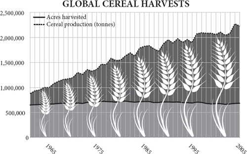
Oetzi, the mummified ‘iceman’ found high in the Alps in 1991, was carrying as much equipment on him as the hikers who found him. He had tools made of copper, flint, bone and six kinds of wood: ash, viburnum, lime, dogwood, yew and birch. He wore clothes made of woven grass, tree bark, sinew and four kinds of leather: bearskin, deer hide, goat hide and calf skin. He carried two species of fungus, one as medicine, another as part of a tinder kit that included a dozen plants and pyrite for making sparks. He was a walking encyclopedia of accumulated knowledge – knowledge of how to fashion tools and clothes and from what materials to make them. He carried the inventions of scores, perhaps thousands, of people upon him, their insights manifest in his kit. If he had had to invent from scratch all his equipment he would have had to be a genius. But even knowing what to make and how to make it, if Oetzi had spent his days collecting all the raw materials he needed for just his food and his clothing (let alone his shelter or his tools), he would have been stretched to breaking point, let alone if he then had to smelt, tan, weave, sew, shape and sharpen everything. He was undoubtedly consuming the labour of many other people, and giving his own in exchange.
1991 年在阿尔卑斯山高处发现的木乃伊 “冰人” 奥特兹（Oetzi），他身上携带的设备与发现他的徒步旅行者一样多。他有铜、燧石、骨和六种木材制成的工具：水曲柳、紫荆花、椴树、山茱萸、紫杉和白桦。他穿的衣服是由草、树皮、筋和四种皮革制成的：熊皮、鹿皮、山羊皮和小牛皮。他携带两种真菌，一种作为药物，另一种作为煤球包的一部分，包括十几种植物和用于制造火花的黄铁矿。他是一部行走的百科全书，积累了很多知识 —— 关于如何制作工具和衣服以及用什么材料制作的知识。他身上带着几十个人，也许是几千个人的发明，他们的见解在他的工具包里体现出来。如果他不得不从头开始发明他的所有设备，他将不得不成为一个天才。但是，即使知道要做什么和怎么做，如果奥特兹整天都在收集他所需要的所有原材料，只是为了他的食物和衣服（更不用说他的住所或他的工具），他就会捉襟见肘，更不用说如果他还必须闻、晒、织、缝、塑和磨一切。他无疑是在消耗其他许多人的劳动，并付出自己的劳动作为交换。
He was also consuming the specialised labour of other species. Oetzi lived about 5,300 years ago in an Alpine valley. This was 2,000 years after agriculture reached southern Europe. Compared with his hunter-gatherer ancestors, Oetzi had cattle and goats that spent all day working for him gathering grass and turning it into leather and meat; wheat plants that gathered sunlight and turned it into grain. Under human genetic tutelage these species had grown specialised in doing so at the expense of their other biological imperatives. That is the point of agriculture: it diverts the labour of other species to providing services for human beings. The biologist Lee Silver was once watching chickens coming ‘home to roost’ in a village in south-east Asia and it struck him that they were like the farmer’s tools: they had been gathering food for him in the forest all day. Farming is the extension of specialisation and exchange to include other species.
他也在消耗其他物种的专业化劳动。奥特兹生活在大约 5300 年前的一个阿尔卑斯山谷地。这是在农业到达南欧之后的 2000 年。与他的狩猎采集者祖先相比，奥特兹拥有整天为他工作的牛和羊，它们采集青草并将其变成皮革和肉；小麦植物收集阳光并将其变成谷物。在人类遗传学的指导下，这些物种在这样做的过程中越来越专业化，而牺牲了它们的其他生物要件。这就是农业的意义所在：它将其他物种的劳动转移到为人类提供服务上。生物学家李·西尔维（Lee Silver）有一次在东南亚的一个村子里看着鸡 “回家”，他突然意识到它们就像农民的工具：它们整天在森林里为农民收集食物。养殖业是专业化和交换的延伸，包括其他物种。
Oetzi was also the beneficiary of capital investment. He lived right at the beginning of the metal age, when copper was first being smelted. His pristine copper axe, 99.7 per cent pure, had been smelted in a furnace that had consumed a lot of somebody’s capital to build. The chaff in his clothing came from a grain crop grown with invested capital in the form of stored seeds and stored labour. For Adam Smith capital is ‘as it were, a certain quantity of labour stocked and stored up to be employed, if necessary, upon some other occasion’.
奥特兹也是资本投资的受益者。他生活在金属时代的初期，当时铜是第一次被冶炼出来。他那把纯度为 99.7% 的原始铜斧，是在一个耗费了某人大量资本建造的炉子里冶炼出来的。他衣服上的糠秕来自于用储存的种子和储存的劳动力形式的投资资本种植的粮食作物。对于亚当·斯密来说，资本是 “像它一样，储存了一定数量的劳动力，如果有必要，可以在其他场合使用”。
If you can store the labour of others for future use, then you can spare yourself the time and the energy of working for your own immediate needs, which means you can invest in something new that will bring even greater reward. Once capital had arrived on the scene, innovation could accelerate, because time and property could be invested in projects that initially generated no benefit. Few hunter-gatherers, for example, could ever afford the time off ‘work’ to build a furnace and slowly and laboriously smelt enough metal to make a copper axe: they would starve in the meantime – even if they could find a market for the axes.
如果你能把别人的劳动储存起来供将来使用，那么你就可以省去为自己眼前的需要而工作的时间和精力，这意味着你可以投资于会带来更大回报的新事物。一旦资本来到现场，创新就可以加速，因为时间和财产可以投入到最初不产生效益的项目中。例如，很少有狩猎采集者能够负担得起在 “工作” 之余建造一个熔炉，慢慢地、费力地冶炼足够的金属来制造一把铜斧：在此期间他们会挨饿 —— 即使他们能够为这些斧头找到一个市场。
In the conventional account it was agriculture that made capital possible by generating stored surpluses and stored surpluses could be used in trade. Before farming, nobody could hoard a surplus. There is some truth in this, but to some degree it gets the story the wrong way round. Agriculture was possible because of trade. Trade provided the incentive to specialise in farmed goods and to generate surplus food.
在传统观念中，是农业通过产生储存的盈余使资本成为可能，而储存的盈余可以用于贸易。在耕作之前，没有人可以囤积盈余。这话有一定道理，但在某种程度上，它把故事讲错了。农业之所以可能，是因为有贸易。贸易提供了专门从事农业产品和产生剩余食物的动力。
Agriculture started to appear independently in the Near East, the Andes, Mexico, China, the highlands of New Guinea, the Brazilian rainforest and the African Sahel – all within a few thousand years. Something made it inevitable, almost compulsory around this time: however much it eventually resulted in misery, disease and despotism in the long run, it clearly gave its first practitioners competitive advantage. Yet farming was not an overnight transition. It was the culmination of a long, slow intensification of human diet that took tens of thousands of years. In search of extra calories people gradually ‘moved down the trophic pyramid’ – i.e., became more vegetarian. By 23,000 years ago the people of what is now Israel and Syria had become dependent on acorns, pulses and even grass seeds, as well as fish and birds, garnished with the occasional gazelle – perhaps supplied by other hunting tribes through trade. At one remarkable site, Ohalo II, now submerged except in dry years by Lake Kinneret (the Sea of Galilee), direct evidence has emerged of the eating of wild grains long before farming. In the remains of one of six brushwood huts, there is a flat stone apparently used for grinding seeds, and on it, preserved for 23,000 years by lake sediments, are microscopic starch grains from wild barley seeds. Nearby is what appears to be a stone oven for baking. By grinding grain to flour and baking it, the users would have nearly doubled the energy they could get from it.
农业开始独立出现在近东、安第斯山脉、墨西哥、中国、新几内亚高地、巴西雨林和非洲萨赫勒地区 —— 所有这些都是在几千年内出现的。有些东西使它不可避免，在这个时候几乎是强制性的：无论从长远来看，它最终导致了痛苦、疾病和专制，它显然给它的第一批从业者带来了竞争优势。然而，农耕并不是一夜之间的转变。它是人类饮食长期、缓慢强化的结果，花了数万年时间。为了寻找额外的卡路里，人们逐渐 “向营养金字塔下移”，即变得更加素食。到 2.3 万年前，现在的以色列和叙利亚的人们已经开始依赖橡子、豆类甚至草籽，以及鱼和鸟类，偶尔还会有羚羊 —— 也许是由其他狩猎部落通过贸易提供。在一个引人注目的遗址，即 Ohalo II，现在除了在旱年被 Kinneret 湖（加利利海）淹没之外，已经出现了在耕种之前很久就食用野生谷物的直接证据。在六间灌木丛小屋的遗迹中，有一块显然是用来研磨种子的扁平石头，上面有野生大麦种子的微小淀粉颗粒，被湖水沉积物保存了 23,000 年。附近有一个似乎是用于烘烤的石炉。通过将谷物磨成面粉并进行烘烤，使用者可以将他们从中获得的能量增加近一倍。
So bread is far older than farming. It would be an astonishing 12,000 years after Ohalo II before anybody started planting and reaping cereals such as rye, wheat and barley, and 4,000 years after that before modern, genetically hexaploid wheat, with its heavy, free-threshing seeds, was invented – and began its long career as humankind’s biggest and most widespread source of calories. The inescapable conclusion is that the people of the Near East were no fools. They captured the benefits of cereals – milled and baked starch – long before they took on the hard graft of farming them. Why spend months tending your own field of corn, when you can spend hours harvesting a wild one? One study notes an ‘extreme reluctance to shift to domestic foods’.
因此，面包的历史远比耕作要长。在奥哈罗二世之后的 12000 年里，才有人开始种植和收割黑麦、小麦和大麦等谷物，在那之后的 4000 年里，才发明了现代六倍体小麦，其种子沉重，可以自由脱粒，并开始了其作为人类最大和最广泛的热量来源的漫长生涯。不可回避的结论是，近东人民并不是傻瓜。他们在承担起耕种谷物的艰巨任务之前，早就捕捉到了谷物 —— 磨碎和烘烤的淀粉 —— 的好处。当你可以花几个小时收获野生玉米时，为什么还要花几个月的时间来照顾自己的玉米田呢？一项研究指出，“人们极不情愿转而食用家用食品”。
By 13,000 years ago the people of the Near East, known now as the Natufian culture, were using stone sickle blades to harvest the heads of the grasses, rather than beating the seeds into baskets. They lived in settlements that were sufficiently stable to be plagued by house mice. They were as close to farming as you can get without genetic domestication of crops. Yet, at this moment, on the brink of making history, they regressed. They abandoned their settlements, returned to nomadism and broadened their diet again. The same happened in Egypt about the same time – a retreat from grinding grain to hunting and fishing (except in Egypt’s case it was much longer before the proto-farming experiment resumed). The probable cause of this hiatus was a cold snap, over a thousand years long, known as the ‘Younger Dryas’. The probable cause of the cold snap was the North Atlantic suddenly cooling either from the bursting of a series of vast ice dams on the North American continent, or from the sudden outflow of water from the Arctic ocean. Once the cold snap had begun, not only was it colder and drier, but the weather fluctuated wildly from year to year, with changes of up to seven degrees in a single decade. Unable to rely on local rainfall, or local summer ripening, the people could not sustain their intensive cereal-feeding lifestyle. They must have starved in great numbers, and the survivors took to nomadic hunter-gathering again.
到 1.3 万年前，现在被称为纳图菲文化的近东人已经开始使用石质镰刀刀片来收获草头，而不是将种子打入篮子。他们生活在足够稳定的定居点，以至于受到家鼠的困扰。他们是在没有对作物进行基因驯化的情况下最接近农业的人。然而，在这个时刻，在创造历史的边缘，他们倒退了。他们放弃了他们的定居点，回到了游牧状态，并再次扩大了他们的饮食范围。同样的情况也发生在埃及 —— 从磨制谷物到狩猎和捕鱼的退步（只是在埃及的情况下，恢复原生态农业试验的时间要长得多）。这一中断的可能原因是一次长达一千多年的寒冷，被称为 “年轻的干旱期”。寒流的可能原因是北大西洋突然变冷，要么是因为北美大陆上一系列巨大的冰坝破裂，要么是因为北冰洋的水突然流出。一旦寒流开始，不仅更加寒冷和干燥，而且每年的天气都有很大的波动，在一个十年中的变化高达 7 度。由于无法依靠当地的降雨，或当地的夏季成熟，人们无法维持他们密集的谷物喂养生活方式。他们一定是大量地饿死了，而幸存者又开始了游牧式的狩猎采集。
Then, around 11,500 years ago the temperature of the Greenland ice cap shot up by ten degrees (centigrade) in half a century; throughout the world conditions became dramatically warmer, wetter and more predictable. In the Levant intensification of cereal use could resume, the Natufians could return to settled homes and soon something prompted some body to start deliberately saving seed to plant. Chickpeas may have been the first crop, then rye and einkorn wheat, though figs had probably been cultivated and dogs domesticated some millennia before. Can there be any doubt that it was woman, the diligent gatherer, rather than man, the dilettante hunter, who first had the idea of sowing grain? A well planted crop, sown into riverbank mud or some other bare land, then carefully weeded and guarded from birds, would have meant new and harder work, but would have brought rewards in yield to the family of the woman who tried it. It would have brought a surplus of flour that could be exchanged with hunters for meat, so it would have kept not only the field’s owner and her children alive, but perhaps a couple of other hunting families too. The exchange of grain for meat effectively subsidised hunting, or raised the ‘price’ of meat, putting more pressure on the hares and gazelles and so gradually making the entire settlement more dependent on the farm – and bringing a new incentive to the first man who thought of raising an orphaned goat kid rather than eating it. Farming would have become a necessity for all the people living there, and the hunter-gatherer way of life would have gradually atrophied. It was undoubtedly a long and slow process: farmers supplemented their diet with hunted ‘bushmeat’ for many millennia after they first started cultivating the land. In most of North America, the natives combined crops with seasonal hunts. In parts of Africa, many still do.
然后，大约在 11500 年前，格陵兰冰盖的温度在半个世纪内上升了 10 度（摄氏度）；整个世界的条件变得急剧的温暖、潮湿和更可预测。在黎凡特，谷物使用的集约化可以恢复，纳图菲人可以回到定居的家园，而且很快就有东西促使一些人开始有意保存种子来种植。鹰嘴豆可能是第一种作物，然后是黑麦和 Einkorn 小麦，尽管无花果可能在几千年前就已经被种植，还有被驯化的狗。还有什么疑问吗？是女人，勤劳的采集者，而不是男人，放荡的猎手，首先有了播种谷物的想法？在河岸泥地或其他光秃秃的土地上播种良好的作物，然后仔细除草并防止鸟类进入，这意味着新的和更艰苦的工作，但会给尝试这种做法的妇女的家庭带来产量上的回报。它将带来剩余的面粉，可以与猎人交换肉类，所以它不仅可以让田地的主人和她的孩子们活着，也许还可以让其他几个狩猎家庭活着。用粮食换肉实际上是对狩猎的补贴，或者说是提高了肉的 “价格”，给野兔和瞪羚带来了更大的压力，因此逐渐使整个定居点更加依赖农场 —— 并给第一个想到要养育一个孤儿山羊孩子而不是吃它的人带来了新的激励因素。农业将成为所有生活在那里的人的必需品，而狩猎·采集的生活方式将逐渐萎缩。这无疑是一个漫长而缓慢的过程：农民在开始耕种土地后的几千年里一直用狩猎的 “丛林肉” 来补充他们的饮食。在北美洲的大部分地区，当地人将农作物与季节性狩猎结合起来。在非洲的部分地区，许多人仍然这样做。
The Fertile Crescent was probably the place where agriculture first took hold, and from there the habit gradually spread south to Egypt, west into Asia Minor and east to India, but farming was quickly invented in at least six other places in a short time, driven by the same ratchet of trade, population growth, stable climate and increasingly vegetarian intensification. Squashes and then peanuts were cultivated in Peru by 9,200 years ago, millet and rice in China by 8,400 years ago, maize in Mexico by 7,300 years ago, taro and bananas in New Guinea by 6,900 years ago, sunflowers in North America by 6,000 years ago, and sorghum in Africa by around the same time. This phenomenal coincidence, as bizarre as finding that an aborigine, an Inuit, a Polynesian and a Scotsman all invented steam engines in the same decade of the eighteenth century without contact of any kind, is explained by the stabilising climate after the ice age ended. In the words of a recent paper, ‘agriculture was impossible during the last glacial, but compulsory in the Holocene’. It is no accident that modern Australia, with its unpredictable years of drought followed by years of wet, still looks a bit like that volatile glacial world. Australians were probably quite capable of farming: they knew how to grind grass seeds, burn the bush to improve kangaroo grazing and encourage favoured plants; and they certainly knew how to alter the flow of rivers to encourage and harvest eels. But they also knew, or found out the hard way, that farming does not work in a highly volatile climate.
新月沃土可能是农业最早形成的地方，从那里开始，这种习惯逐渐向南传到埃及，向西传到小亚细亚，向东传到印度，但在同样的贸易、人口增长、稳定的气候和越来越多的素食集约化的推动下，至少还有六个地方在短时间内迅速发明了耕作。秘鲁在 9200 年前种植了南瓜，然后是花生，中国在 8400 年前种植了小米和水稻，墨西哥在 7300 年前种植了玉米，新几内亚在 6900 年前种植了芋头和香蕉，北美在 6000 年前种植了向日葵，非洲在大约同一时间种植了高粱。这种惊人的巧合，就像发现一个原住民、一个因纽特人、一个波利尼西亚人和一个苏格兰人都在十八世纪的同一个十年里发明了蒸汽机而没有任何接触一样怪异，可以解释为冰期结束后气候的稳定。用最近一篇论文的话说，“在最后一次冰川期，农业是不可能的，但在全新世则是强制性的”。现代的澳大利亚，其不可预测的干旱年份和潮湿年份，看起来仍然有点像那个不稳定的冰川世界，这并不是偶然。澳大利亚人可能很有能力进行耕作：他们知道如何磨碎草籽，烧掉灌木以改善袋鼠的吃草情况，并鼓励种植喜欢的植物；他们当然知道如何改变河流的流向以鼓励和收获鳗鱼。但他们也知道，或者说发现了一个艰难的方法，那就是在高度不稳定的气候下，耕作是行不通的。
No farming without trade
没有贸易就没有耕作
One of the intriguing things about the first farming settlements is that they also seem to be trading towns. From 14,000 years ago, much-valued obsidian (volcanic glass) from the Cappadocian volcanoes in Anatolia was being transported south along the upper Euphrates, through the Damascus basin and down the Jordan Valley. Seashells from the Red Sea were going the other way. This is precisely where the first farming settlements are – at Catalhoyuk, Abu Hureyra and Jericho. Such settlements were sited in oases where springs of fresh water from the mountains spilled out on to the western edge of the desert: places where soil nutrients, moisture and sunshine came together nicely – and also places where people mixed with their neighbours because of trade. This is surprising only because it is easy to think of early farmers as sedentary, self-sufficient folk. But they were exchanging harder in this region than anywhere else, and it is a reasonable guess that one of the pressures to invent agriculture was to feed and profit from wealthy traders – to generate a surplus that could be exchanged for obsidian, shells or other more perishable goods. Trade came first.
最早的农业定居点的一个耐人寻味之处在于，它们似乎也是贸易城镇。从 14000 年前开始，来自安纳托利亚卡帕多西亚火山的价值不菲的黑曜石（火山玻璃）沿着幼发拉底河上游向南运输，穿过大马士革盆地，沿着约旦河谷向下。来自红海的贝壳则被运往另一个方向。这正是第一批农业定居点的所在地 —— 在 Catalhoyuk、Abu Hureyra 和 Jericho。这样的定居点位于绿洲，那里有从山上涌出的淡水流向沙漠的西部边缘：土壤养分、水分和阳光很好地结合在一起的地方 —— 也是人们因贸易而与邻居混合的地方。这之所以令人惊讶，只是因为人们很容易认为早期农民是定居的、自给自足的人。但他们在这个地区比其他地方更努力地进行交换，而且可以合理地猜测，发明农业的压力之一是为了养活富裕的商人并从中获利 —— 产生可以用黑曜石、贝壳或其他更易腐烂的物品交换的盈余。贸易是第一位的。
In the 1960s, Jane Jacobs suggested in her book The Economy of Cities that agriculture was invented to feed the first cities, rather than cities being made possible by the invention of agriculture. This goes too far, and archaeologists have discredited the idea of urban centres preceding the first farms. The largest permanent settlements of hunter-gatherers cannot be described as urban even among the fishermen of the Pacific coast of North America. None the less, there was a germ of truth in her idea: the first farmers were already enthusiastic traders breaking free of subsistence through exchange, and farming was just another expression of trade.
20 世纪 60 年代，简·雅各布斯（Jane Jacobs）在她的《城市经济》一书中提出，农业的发明是为了养活第一批城市，而不是城市因农业的发明而成为可能。这话说得太远了，考古学家已经否定了城市中心先于第一批农场的观点。即使在北美洲太平洋沿岸的渔民中，最大的狩猎采集者永久定居点也不能被描述为城市。尽管如此，她的想法中还是有一个真理的萌芽：第一批农民已经是热情的商人，通过交换摆脱了生计，而耕作只是贸易的另一种表现。
In Greece, farmers arrived suddenly and dramatically around 9,000 years ago. Stone tools suggest that they were colonists from Anatolia or the Levant who probably came by boat deliberately seeking to colonise new land. Moreover, these very earliest Greek farmers were also apparently enthusiastic traders with each other and were very far from being self-sufficient: they relied upon specialist craftsmen to produce obsidian tools from raw material imported from elsewhere. This is once again not what conventional wisdom envisages. Trade comes first, not last. Farming works precisely because it is embedded in trading networks.
在希腊，农民在大约 9000 年前突然急剧到来。石器表明，他们是来自安纳托利亚或黎凡特的殖民者，他们可能是乘船来的，故意寻求殖民新的土地。此外，这些最早的希腊农民显然也是热衷于相互之间的贸易，而且远非自给自足：他们依靠专业工匠从其他地方进口的原材料来生产黑曜石工具。这又一次与传统智慧所设想的不同。贸易是第一位的，而不是最后一位。耕作之所以有效，正是因为它被嵌入到贸易网络中。
Some time later, at 7,600 years ago, farmers who were happily cultivating the fertile plains around the ‘Euxine lake’ suffered a rude shock, when rising sea levels burst over the Hellespont and flooded into the lake’s basin, filling it at a rate of six inches a day till it became the modern Black Sea. Baffled refugees presumably fled up the Danube into the heart of Europe. Within just a few hundred years, they had reached the Atlantic coast, peopling all of the southern half of Europe with farmers, sometimes by infecting their neighbours with enthusiasm for the new trick of farming, but more often (so the genetic evidence suggests) displacing and violently overwhelming hunter-gatherers as they went. It took another thousand years to reach the Baltic, chiefly because fishermen inhabited that coast at high densities and had no need to start farming. The crops the farmers took with them changed little, despite the new conditions they encountered. Some crops, like lentils and figs, had to be left behind on the Mediterranean. Others, like emmer and einkorn wheat, adapted readily to the wetter and cooler lands of Northern Europe. By 5,000 years ago farmers had reached Ireland, Spain, Ethiopia and India.
过了一段时间，在 7600 年前，在 “欧辛湖” 周围的肥沃平原上快乐耕作的农民遭受了粗暴的冲击，当时不断上升的海平面冲过了赫勒斯滂，淹没了湖的盆地，以每天 6 英寸的速度填充，直到它成为现代黑海。茫然的难民大概沿着多瑙河逃到了欧洲的中心。在短短几百年内，他们就到达了大西洋沿岸，使欧洲南半部的所有地方都有了农民，有时是通过感染他们的邻居，使他们对耕作的新技巧充满热情，但更多的时候（遗传证据表明）是在他们所到之处取代并以暴力压倒了狩猎·采集者。又过了一千年才到达波罗的海，主要是因为渔民在该海岸的居住密度很高，没有必要开始耕种。尽管农民们遇到了新的条件，但他们带去的农作物变化不大。有些作物，如小扁豆和无花果，不得不留在地中海上。其他作物，如埃默尔和埃克纳小麦，则很容易适应北欧较潮湿和凉爽的土地。到 5000 年前，农民已经到达爱尔兰、西班牙、埃塞俄比亚和印度。
Other descendants of the Black Sea refugees took to the plains of what is now Ukraine where they domesticated the horse and developed a new language, Indo-European, that would come to dominate the western half of the Eurasian continent, and of which Sanskrit and Gaelic are both descendants. It was also somewhere near the Baltic or the Black Sea between 6,000 and 10,000 years ago that a genetic mutation, substituting G for A in a control sequence upstream of a pigment gene called OCA2, gave adults blue eyes for the first time. It was a mutation that would eventually be inherited by nearly 40 per cent of Europeans. Because it went with unusually pale skin, it probably helped those people who were trying to live on vitamin-D-deficient grain in sunless northern climates: sunlight enables the body to synthesise vitamin D. The gene’s frequency speaks of the fecundity of farmers.
黑海难民的其他后裔来到现在的乌克兰平原，在那里他们驯化了马，并发展了一种新的语言 —— 印欧语，这种语言后来主导了欧亚大陆的西半部，梵语和盖尔语都是其后代。也是在 6000 年至 10000 年前波罗的海或黑海附近的某个地方，一个基因突变，即用 G 代替 A，在一个叫做 OCA2 的色素基因上游的控制序列中，第一次让成年人有了蓝眼睛。这一突变最终被近 40% 的欧洲人所继承。由于它与异常苍白的皮肤相配，它可能有助于那些在没有阳光的北方气候中试图靠维生素 D 缺乏的谷物生活的人：阳光使身体能够合成维生素 D。
One of the reasons that farming spreads so rapidly once it starts is that the first few crops are both more productive and more easily grown than later crops, so farmers are always happy to move on to virgin land. If you burn down a forest, you are left with a soft, friable soil seasoned with fertilising ash. All you need do is poke a digging stick into the ground and plant a seed and sit back and wait for it to grow. After a few years, however, the soil is compacted and needs breaking up with a hoe, and weeds have proliferated. If you now leave the ground fallow to allow the fertility to build up again, the tough roots of grasses need to be broken up and buried to make a good seedbed – and for that you need a plough and an ox to pull it. But the ox needs feeding, so you need pasture as well as arable land. No wonder that shifting agriculture – slash and burn – remains so much more popular with many tribal people in forests to this day. In Neolithic Europe, the smoke of fires must have hung heavy in the air as the expanding front of farming spread west. The carbon dioxide released by the fires may even have helped to warm the climate to its 6,000-years-ago balmy maximum, when the Arctic ice retreated from Greenland’s northern coast in summer. This is because early farming used probably nine times as much land per head of population as farming does today, so the small populations of the day generated lots of carbon dioxide per head.
耕作一旦开始就会迅速蔓延，原因之一是头几样作物比后来的作物产量更高、更容易种植，所以农民总是乐于转移到处女地上。如果你烧毁了一片森林，你就会留下用肥沃的灰烬调味的柔软、易碎的土壤。你所需要做的就是用挖土棒捅进地里，种下种子，然后坐等它生长。然而，几年后，土壤被压实了，需要用锄头打碎，而且杂草也大量繁殖了。如果你现在让土地休耕，让肥力重新建立起来，那么草的坚韧根系需要被打碎并埋起来，以形成一个良好的苗床 —— 为此你需要一个犁和一头牛来拉动它。但牛需要喂养，所以你需要牧草和耕地。难怪轮作农业 —— 刀耕火种 —— 直到今天仍然受到许多森林部落人民的欢迎。在新石器时代的欧洲，随着农耕战线的扩大向西蔓延，大火的烟雾一定会在空中弥漫。大火释放的二氧化碳甚至可能帮助气候升温到 6000 年前的温和最大值，当时北极冰层在夏季从格陵兰岛的北岸退去。这是因为早期的农业每头人口使用的土地可能是今天农业的 9 倍，所以当时的小规模人口每头产生了大量的二氧化碳。
Capital and metal
资本和金属
Wherever they went, the farmers also brought their habits: not just sowing, reaping and threshing, but baking, fermenting, hoarding and owning. Hunter-gatherers have to travel light; even if they are not seasonally nomadic, they must be ready to move at any time. Farmers, by contrast, have to store grain or protect herds or guard fields before they are harvested. The first person to plant a wheat field must have faced the dilemma of how to say ‘This is mine; only I may harvest it.’ The first signs of private property are the stamp seals of the Halaf people, 8,000 years ago on the borders of Syria and Turkey: similar seals were later used for denoting ownership. This land rush presumably left the remaining hunters baffled spectators as their game lands were carved up, possibly by ‘poorer’, more desperate people. Perhaps Cain was a farmer; Abel a hunter.
无论他们走到哪里，农民也带来了他们的习惯：不仅仅是播种、收割和打谷，还有烘烤、发酵、囤积和拥有。猎人·采集者必须轻装上阵；即使他们不是季节性游牧，他们也必须随时准备移动。相比之下，农民必须在收割前储存粮食或保护畜群或看守田地。第一个种植麦田的人一定面临着如何说 “这是我的；只有我可以收获它” 的困境。私有财产的最初迹象是 8000 年前在叙利亚和土耳其边境的哈拉夫人的印章：类似的印章后来被用来表示所有权。这场土地争夺战大概让剩下的猎人莫名其妙地看着他们的猎物土地被瓜分，可能是被 “更穷”、更绝望的人瓜分了。也许该隐是个农民，亚伯是个猎人。
Meanwhile, as farming replaced gathering, so herding replaced hunting. The Neolithic settlements of the Middle East probably grew up as markets where shepherds from the hills could meet cereal farmers from the plains and exchange their surpluses. The hunter-gatherer market now became the herderfarmer market. Haim Ofek writes: ‘On the human level, nothing could be more handy at the onset of agriculture than a well-established propensity to exchange, for nothing could better reconcile the need for specialisation in food production with the need for diversification in food consumption.’
同时，随着农业取代采集，牧业也取代了狩猎。中东的新石器时代定居点可能是作为市场发展起来的，山上的牧羊人可以与平原上的谷物种植者会面，交换他们的剩余物。狩猎者·采集者市场现在变成了牧民·农民市场。哈伊姆·奥费克（Haim Ofek）写道：“就人类而言，在农业开始时，没有什么比完善的交换倾向更方便的了，因为没有什么能更好地协调食品生产专业化的需要和食品消费多样化的需要了。”
Copper smelting was a practice that makes no sense for an individual trying to meet his own needs, or even for a self-sufficient tribe. It requires a stupendous effort to mine the ore and then by virtue of elaborate bellows to smelt it in a charcoal fire at more than 1,083°C, just to produce a few ingots of a metal that is strong and malleable, but not very hard. Imagine: you have to cut wood and make charcoal from it, make ceramic crucibles for the smelting, dig and crush the ore, then mould and hammer the copper. Only by consuming the stored labour of others – by living off capital – could you even finish the job. Then, even if you can sell copper axes to other hunter-gatherers, the market is likely to be too small to make it worth your while setting up a smelting operation. But once agriculture has provided the capital, increased the density of people, and given them a good reason for chopping down trees, then there might be a market large enough to support a community of full-time copper smelters, so long as they can sell the copper to neighbouring tribes. Or, in the words of two theorists: ‘The denser societies made possible by agriculture can realize considerable returns to better exploitation of the potential of co-operation, co-ordination and the division of labour.’
冶炼铜的做法对于试图满足自己需求的个人，甚至对于一个自给自足的部落，都是毫无意义的。它需要付出巨大的努力来开采矿石，然后凭借精心制作的风箱在超过 1083℃的炭火中进行冶炼，只是为了生产几锭坚固和可塑的金属，但不是很硬。想象一下：你必须砍伐木材，用它制作木炭，为熔炼制作陶瓷坩埚，挖掘和粉碎矿石，然后铸造和敲打铜。只有通过消耗他人的储存劳动 —— 靠资本生活 —— 你甚至可以完成这项工作。然后，即使你能把铜斧卖给其他狩猎采集者，市场也可能太小，不值得你去建立一个冶炼作业。但是，一旦农业提供了资本，提高了人们的密度，并给他们一个砍树的好理由，那么就可能有一个足够大的市场来支持一个全职铜冶炼者的社区，只要他们能把铜卖给邻近的部落。或者，用两位理论家的话说："农业所带来的密集型社会可以通过更好地利用合作、协调和分工的潜力实现可观的回报。
Hence, the invention of metal smelting was an almost inevitable consequence of the invention of agriculture (though some very early mining of pure copper-metal deposits around Lake Superior was apparently done by hunter-gatherers, perhaps supplying the almost agricultural salmon ranchers of the Pacific coast). Copper was produced throughout the Alps, where some of the best ores are to be found, but it was exported to the rest of Europe for several thousand years after Oetzi’s death, only later being displaced by copper mined in Cyprus. A little more than a thousand years after Oetzi died, and a short distance to the west in the Mitterberg region of what is now Austria, there were settlements inhabited by people who apparently did little else but mine and smelt copper from lodes in the nearby mountains. Living in a cold mountain valley, they found it more profitable to make copper and exchange it for, say, meat and grain from the Danube plains, rather than to raise their own cattle. It seems not to have made them very rich – nor would Cornish tin, Peruvian silver, or for that matter Welsh coal enrich their miners in the millennia to come. Compared with the farmers on the Danube Plain, the Mitterberg copper miners left behind few ornaments or luxuries. But they were better off than they could be trying to live self-sufficiently in the mountains raising their own food. They were not supplying a need; they were making a living, responding to economic incentives as clearly as any modern person. Homo economicus was not an eighteenth-century Scottish invention. Their copper, turned into ingots and sickles, standardised for weight, then broken up and circulated far and wide, would soon become a primitive form of money widely used throughout Europe to lubricate exchange.
因此，金属冶炼的发明几乎是农业发明的必然结果（尽管苏必利尔湖周围一些非常早期的纯铜金属矿床的开采显然是由狩猎采集者完成的，也许是为太平洋沿岸几乎是农业的鲑鱼农场主提供的）。整个阿尔卑斯山都出产铜，那里有一些最好的矿石，但在奥特兹死后的几千年里，铜被出口到欧洲其他地方，只是后来被塞浦路斯开采的铜所取代。在奥特兹死后一千多年，在现在奥地利的米特伯格（Mitterberg）地区的西边不远处，有一些居民点，他们显然除了在附近的山上开采和冶炼铜矿之外，几乎不做其他事情。生活在寒冷的山谷中，他们发现制造铜，然后用它来交换多瑙河平原的肉类和谷物，比自己养牛更有利可图。这似乎并没有使他们变得非常富有 —— 康涅狄格的锡、秘鲁的银或威尔士的煤也不会在未来的几千年里使他们的矿工变得富有。与多瑙河平原上的农民相比，米特贝格的铜矿工留下的装饰品或奢侈品很少。但他们的生活比他们在山上自给自足地养活自己的食物要好。他们不是在满足需求；他们是在谋生，像任何现代人一样对经济刺激作出明确的反应。经济人（Homo economicus）并不是十八世纪苏格兰人的发明。他们的铜被加工成铜锭和镰刀，并按重量进行标准化，然后被分解并在远处流通，很快就成为一种原始的货币形式，在整个欧洲广泛使用，以润滑交换。
Conventional wisdom has probably underestimated the extent of specialisation and trade in the Neolithic age. There is a tendency to think that everybody was a farmer. But in Oetzi’s world, there were farmers who grew einkorn and maybe farmers who grew grass for weaving into cloaks; coppersmiths who made axes and maybe bear hunters who made hats and shoes. And yet there were things that Oetzi no doubt made for himself: his bow was unfinished and so were some of his arrows. At a rough estimation, typical modern non-industrial people, living in traditional societies, directly consume between one-third and two-thirds of what they produce, and exchange the rest for other goods. Up to about 300 kilograms of food per head per year, people eat what they grow; after that they start to exchange surplus food for clothing, shelter, medicine or education. Almost by definition, the more wealthy somebody is, the more things he acquires from specialists. The characteristic signature of prosperity is increasing specialisation. The characteristic signature of poverty is a return to self-sufficiency. Go to a poor village in Malawi or Mozambique today and you will find few specialists and people consuming a high proportion of what they produce. They are ‘not in the market’, as an economist might say. And quite possibly they are less ‘in the market’ than ancient agrarian folk like Oetzi were.
传统的智慧可能低估了新石器时代的专业化和贸易的程度。人们倾向于认为每个人都是农民。但在奥特兹的世界里，有种植 Einkorn 的农民，也可能有种植草以织成斗篷的农民；有制造斧头的铜匠，也可能有制造帽子和鞋子的猎熊人。然而，有些东西无疑是奥特兹为自己做的：他的弓是未完成的，他的一些箭也是未完成的。粗略估计，生活在传统社会中的典型的现代非工业化的人，直接消费他们生产的东西的三分之一到三分之二，其余的换成其他商品。每年每人最多吃 300 公斤的食物，人们吃自己种的东西；之后他们开始用剩余的食物交换衣服、住所、药品或教育。几乎根据定义，某人越富裕，他从专家那里获得的东西就越多。繁荣的特征是越来越专业化。贫穷的特征是回归自给自足。今天，去马拉维或莫桑比克的一个贫穷的村庄，你会发现很少有专家和人们消费他们生产的东西的高比例。正如经济学家所说，他们 “不在市场上”。而且很可能他们比奥特兹这样的古代农耕民族更不 “在市场上”。
Indulge me in a little sermon. The tradition among many anthropologists and archaeologists has been to treat the past as a very different place from the present, a place with its own mysterious rituals. To cram the Stone Age or the tribal South Seas into modern economic terminology is therefore an anachronistic error showing capitalist indoctrination. This view was promulgated especially by the anthropologist Marshall Sahlins, who distinguished pre-industrial economies based on ‘reciprocity’ from modern economies based on markets. Stephen Shennan satirises the attitude thus: ‘We engage in exchanges to make some sort of profit; they do so in order to cement social relationships; we trade commodities; they give gifts.’ Like Shennan, I think this is patronising bunk. I think people respond to incentives and always have done. People weigh costs and benefits and do what profits them. Sure, they take into account non-economic factors, such as the need to remain on good terms with trading partners and to placate malevolent deities. Sure, they give better deals to families, friends and patrons than they do to strangers. But they do that today as well. Even the most market-embedded modern financial trader is enmeshed in a web of ritual, etiquette, convention and obligation, not excluding social debt for a good lunch or an invitation to a football match. Just as modern economists often exaggerate the cold-hearted rationality of consumers, so anthropologists exaggerate the cuddly irrationality of pre-industrial people.
请允许我做一次小小的说教。许多人类学家和考古学家的传统是把过去当作一个与现在非常不同的地方，一个有自己神秘仪式的地方。因此，把石器时代或南洋部落塞进现代经济术语中是一个不合时宜的错误，显示了资本主义的灌输。这种观点尤其是由人类学家马歇尔·萨林斯（Marshall Sahlins）颁布的，他将基于 “互惠” 的前工业经济与基于市场的现代经济区分开来。斯蒂芬·申南（Stephen Shennan）这样讽刺这种态度。我们参与交换是为了赚取某种利润；他们这样做是为了巩固社会关系；我们交易商品；他们赠送礼物。和申南一样，我认为这是在拍马屁。我认为人们对激励措施作出反应，而且一直如此。人们权衡成本和收益，做对他们有利的事情。当然，他们会考虑到非经济因素，比如需要与贸易伙伴保持良好的关系，以及安抚邪恶的神灵。当然，他们给家人、朋友和赞助人的待遇要比给陌生人的好。但他们今天也是这样做的。即使是最贴近市场的现代金融交易商也被卷入了一个由仪式、礼节、惯例和义务组成的网络中，不排除为一顿好的午餐或邀请参加一场足球比赛而欠下的社会债务。正如现代经济学家经常夸大消费者的冷酷无情的理性，人类学家也夸大了工业化前人们的可爱的非理性。
The ‘kula’ system of the south Pacific is a favourite case history of those who like to argue that markets were unknown to pre-industrial people. According to Bronislaw Malinowski, the people of fourteen different island groups exchanged armshells for necklaces in such a way that the armshells travelled in an anti-clockwise circle around the entire island group, while the necklaces went clockwise. After two years or more, an item might have returned to its original owner. To describe such a system as a market is plainly absurd: the exchange itself, not profit, must be the point. But look closer and kula becomes less peculiar. It was only one of many kinds of exchange practised in these islands; the fact that Westerners give each other cards and socks at Christmas speaks to the importance in their lives of the social meaning of exchange, but does not mean they do not also seek profits in markets. An anthropologist from the South Pacific might study Western Christmas and conclude that an utterly pointless and profitless but frantic midwinter commercial activity, inspired by religion, dominates the lives of Westerners. Pacific islanders were and are acutely aware of the importance of getting a good bargain when trading with a stranger. In any case, further research since the days of Malinowski has demonstrated that he had rather exaggerated the circular nature of the system, which is a mere side effect of the fact that traders who are exchanging useful items also like to give each other useless but pretty gifts that then sometimes end back where they started.
南太平洋的 “库拉” 系统是那些喜欢辩称工业化前的人们不了解市场的人最喜欢的案例历史。根据布罗尼斯瓦夫·马林诺夫斯基（Bronislaw Malinowski）的说法，14 个不同岛屿群体的人们以这样的方式交换武器壳和项链，武器壳在整个岛屿群体中逆时针绕行，而项链则顺时针绕行。两年或更长时间后，一件物品可能已经回到它原来的主人手中。把这样一个系统描述为一个市场显然是荒谬的：交换本身，而不是利润，必须是重点。但仔细观察，库拉就不那么特殊了。它只是这些岛屿上实行的许多种交换中的一种；西方人在圣诞节互相赠送卡片和袜子的事实说明了交换的社会意义在他们生活中的重要性，但并不意味着他们不在市场中寻求利润。一位来自南太平洋的人类学家可能会研究西方的圣诞节，并得出结论：在宗教的激励下，一种完全无意义、无利润但却疯狂的仲冬商业活动主导了西方人的生活。太平洋岛民过去和现在都敏锐地意识到，在与陌生人交易时，得到一个好的便宜货的重要性。无论如何，自马林诺夫斯基时代以来的进一步研究表明，他相当夸大了这个系统的循环性质，这只是一个副作用，因为正在交换有用物品的商人也喜欢互相赠送无用但漂亮的礼物，然后有时又回到了开始的地方。
Ignoble savage?
无知的野蛮人？
In the first half of the twentieth century, the Neolithic Revolution was interpreted by Gordon Childe and his followers as a bettering of the human condition, which brought obvious benefits: stored food with which to survive famines; new forms of nutrition close at hand, such as milk and eggs; less need for exhausting, dangerous and often fruitless treks through the wilderness; work that the unfit and injured could still do; perhaps more spare time in which to invent civilisation.
在二十世纪上半叶，新石器时代革命被戈登·奇尔德（Gordon Childe）和他的追随者解释为人类条件的改善，它带来了明显的好处：储存食物以度过饥荒；新的营养形式近在咫尺，如牛奶和鸡蛋；不需要在荒野中进行疲惫、危险和往往没有结果的跋涉；不适合和受伤的人仍然可以工作；也许有更多的业余时间来发明文明。
In the last third of the twentieth century, a prosperous yet nostalgic time, farming came to be reinterpreted as an invention born of desperation rather than inspiration, and perhaps even ‘the worst mistake in the history of the human race’. The pessimists, led by Mark Cohen and Marshall Sahlins, argued that farming was a back-breaking treadmill that brought a monotonous diet deficient in nutrients to a people plagued by pollution, squalor, infectious diseases and early death. More people could now live upon the land, but with unchecked fertility, they would have to work harder. More babies were born, but more people died young. Whereas extant hunter-gatherers such as the Dobe !Kung seemed to have ample leisure and to live in ‘the original affluent society’ (Sahlins’s phrase), limiting their reproduction and so preventing overpopulation, skeletons of the first farmers seemed to show wear and tear, chronic deformity, toothache and short stature. Meanwhile, they would catch measles from cattle, smallpox from camels, tuberculosis from milk, influenza from pigs, plague from rats, not to mention worms from using their own excrement as fertiliser and malaria from mosquitoes in their ditches and water butts.
在二十世纪的最后三分之一，一个繁荣而又令人怀念的时代，农业开始被重新解释为一种源于绝望而非灵感的发明，甚至可能是 “人类历史上最糟糕的错误”。以马克·科恩和马歇尔·萨林斯为首的悲观主义者认为，农业是一种令人生厌的跑步机，为受污染、肮脏、传染病和早逝困扰的人们带来了缺乏营养的单调饮食。现在有更多的人可以生活在土地上，但由于生育率不受控制，他们将不得不更加努力工作。更多的婴儿出生，但更多的人早逝。现存的狩猎采集者，如 Dobe !Kung，似乎有充足的闲暇，生活在 “原始的富裕社会”（萨林斯，Sahlins 的说法），限制了他们的繁殖，因此防止了人口过剩，而第一批农民的骨骼似乎显示出磨损、慢性畸形、牙痛和身材矮小。同时，他们会从牛身上感染麻疹，从骆驼身上感染天花，从牛奶中感染肺结核，从猪身上感染流感，从老鼠身上感染鼠疫，更不用说用自己的排泄物作为肥料的蠕虫和从沟渠和水坑中的蚊子身上感染疟疾。
They also got a bad attack of inequality for the first time. Extant hunter-gatherers are remarkably egalitarian, a state of affairs dictated by their dependence on sharing each other’s hunting and gathering luck. (They sometimes need to enforce this equality with savage reprisals against people who get ideas above their stations.) A successful farmer, however, can soon afford to store some provisions with which to buy the labour of other less successful neighbours, and that makes him more successful still, until eventually – especially in an irrigated river valley, where he controls the water – he can become an emperor using servants and soldiers to impose his despotic whim upon subjects.
他们也第一次受到了不平等的严重打击。现存的狩猎采集者是非常平等的，这种状态是由他们依赖分享彼此的狩猎和采集运气决定的。（他们有时需要通过野蛮的报复来强制执行这种平等，以对付那些想法高于他们地位的人）。）然而，一个成功的农民很快就能储存一些粮食，用来购买其他不太成功的邻居的劳动力，这使他更加成功，直到最后 —— 特别是在灌溉的河谷，他控制着水 —— 他可以成为一个皇帝，使用仆人和士兵将他的专制的想法强加于臣民。
Worse still, as Friedrich Engels was the first to argue, agriculture may have worsened sexual inequality. It is certainly painfully obvious that in many peasant farming communities, men make women do much of the hard work. In hunter-gathering, men have many tiresome sexist habits, but they do at least contribute. When the plough was invented around 6,000 years ago, men took over the work of driving the oxen that cultivated fields, because it required greater strength, but this only exacerbated inequality. Now women were treated increasingly as the chattels of men, loaded with bracelets and ankle rings to indicate their husband’s wealth. Now art became dominated by the symbols of male power and competition – arrows, axes and daggers. Now polygamy probably increased and the wealthiest men acquired harems and patriarchal status: at Branc in Slovakia, more women than men were buried with elaborate grave goods, indicating not that they were wealthy, so much as that their polygamous husbands were wealthy while other men languished in celibate poverty. In this way, polygamy enables poor women to share in prosperity more than poor men. It was an age of patriarchy.
更糟糕的是，正如弗里德里希·恩格斯（Friedrich Engels）最先提出的那样，农业可能加剧了性别不平等。当然，令人痛苦的是，在许多农民的农业社区中，男人让女人做许多艰苦的工作。在狩猎采集中，男人有许多令人厌烦的性别歧视习惯，但他们至少是有贡献的。大约 6000 年前，当犁被发明后，男人接手了驱赶耕地的牛的工作，因为这需要更大的力量，但这只是加剧了不平等。现在，妇女越来越多地被当作男人的动产，戴上手镯和脚环以显示她们丈夫的财富。现在，艺术成为男性权力和竞争的象征 —— 箭、斧头和匕首的主导。现在，一夫多妻制可能增加了，最富有的男人获得了后宫和父权地位：在斯洛伐克的布兰奇，埋葬着精心制作的墓葬品的女人比男人多，这不是表明他们很富有，而是表明他们一夫多妻制的丈夫很富有，而其他男人在独身的贫困中煎熬。这样一来，一夫多妻制使贫穷的妇女比贫穷的男人更能分享到繁荣。这是一个父权制的时代。
Yet there is no evidence that early farmers behaved any worse than hunter-gatherers. Those few hunter-gatherer societies that became fat and prosperous on a dependable and rich local resource – most notably, the salmon-fishing tribes of the American north-west – soon indulged in patriarchy and inequality, too. The ‘original affluence’ of the modern hunter-gatherer !Kung was only possible because of modern tools, trade with farmers and even the odd helping hand from anthropologists. Their low fertility owed more to sexually transmitted infections than birth control. As for the deformities of early farmers, skeletons may not be representative and may tell you more about the injuries and diseases that were survived, rather than proved fatal. Even the gender equality of hunter-gatherers may prove wishful thinking. After all, Fuegian men, who could not swim, left their wives to anchor canoes in kelp beds and swim ashore in snow storms. The truth is that both hunter-gathering and farming could produce affluence or misery depending on the abundance of food and the relative density of people. One commentator writes: ‘All pre-industrial economies, no matter how simple or complex, are capable of generating misery and will do so given enough time.’
然而，没有证据表明早期农民的行为比狩猎·采集者更糟糕。那些依靠可靠和丰富的当地资源而变得富裕和繁荣的少数狩猎采集者社会 —— 最值得注意的是美国西北部的鲑鱼捕捞部落 —— 很快也沉溺于父权制和不平等。现代狩猎采集者的 “原始富足” 只是因为现代工具、与农民的贸易，甚至是人类学家的零星帮助。他们的低生育率更多地归功于性传播感染，而不是生育控制。至于早期农民的畸形，骨骼可能不具有代表性，可能会告诉你更多关于幸存下来的伤害和疾病，而不是证明是致命的。甚至狩猎采集者的性别平等也可能被证明是一厢情愿的想法。毕竟，不会游泳的斐济人男人离开他们的妻子，把独木舟锚定在海带床，在暴风雪中游上岸。事实是，狩猎采集和耕作都可以产生富裕或痛苦，这取决于食物的丰富程度和人的相对密度。一位评论家写道：“所有工业化前的经济，无论多么简单或复杂，都能够产生痛苦，而且只要有足够的时间就会产生痛苦。”
The chronic and perpetual violence of the hunter-gatherer world had not ended with the invention of farming. Oetzi died a violent death, shot from behind by an arrow that pierced an artery in his shoulder, after – so DNA suggests – killing two men with one of his own arrows and carrying a wounded comrade on his back. The blood of a fourth man was on his knife. In the process he sustained a deep cut to his thumb and a fatal blow to the head. This was no small skirmish. His position in death suggests that his killer turned him over to retrieve the arrow, but the stone arrow head broke off inside his body. The archaeologist Steven LeBlanc says that the evidence of constant violence in the ancient past has been systematically overlooked by Rousseauesque wishful thinking among academics. He cites his own discoveries of innumerable sling shots and doughnutshaped stones in Turkish sites from around 8,000 years ago. In the 1970s when he worked there he thought these were used by shepherds to chase away wolves and by farmers to weigh down their hoes. Now he realises that they were weapons of violence: the stones were mace heads and the sling shots were stockpiled for defence.
狩猎·采集者世界的长期和永久的暴力并没有随着农业的发明而结束。奥特兹死得很惨，他被一支箭从后面射穿了肩膀上的动脉，此前 —— DNA 显示 —— 他用自己的一支箭杀死了两个人，并把一个受伤的同志背在身上。他的刀上有第四个人的血。在这个过程中，他的拇指被深深割伤，头部受到致命一击。这并不是一场小规模的战斗。他死亡时的姿势表明，凶手把他翻过来是为了取回箭，但石箭头在他体内断了。考古学家 史蒂芬·勒布朗（Steven LeBlanc）说，古代不断发生暴力的证据被学术界的卢梭式的一厢情愿的想法系统地忽略了。他引用了自己在土耳其遗址中发现的大约 8000 年前的无数吊索和甜甜圈形状的石头。在 1970 年代他在那里工作时，他认为这些东西是牧羊人用来驱赶狼的，是农民用来压制锄头的。现在他意识到它们是暴力的武器：石头是矛头，吊索是为了防御而储存的。
Wherever archaeologists look, they find evidence that early farmers fought each other incessantly and with deadly effect. The early inhabitants of Jericho dug a defensive ditch thirty feet deep and ten feet wide into solid rock without metal tools. In the Merzbach valley in Germany, the arrival of agriculture brought five centuries of peaceful population growth followed by the building of defensive earthworks, the dumping of corpses in pits and the abandonment of the whole valley. At Talheim around 4900 BC, an entire community of thirty-four people was massacred by blows to the head and arrows in the back, apart from the adult women who are missing – presumably abducted as sexual prizes. The killers were doing no more than Moses later ordered his followers in the Bible. After a successful battle against the Midianites and a massacre of the adult males, he told them to finish the job by raping the virgins: ‘Now therefore kill every male among the little ones, and kill every woman that hath known man by lying with him. But all the women children, that have not known a man by lying with him, keep alive for yourselves.’ (Numbers 31)
无论考古学家在哪里寻找，他们都能找到早期农民相互争斗的证据，而且效果是致命的。耶利哥的早期居民在没有金属工具的情况下，在坚硬的岩石上挖了一条深 30 英尺、宽 10 英尺的防御沟渠。在德国的梅兹巴赫山谷，农业的到来带来了五个世纪的和平人口增长，随后是建造防御性的土墙，将尸体倾倒在坑里，以及整个山谷的废弃。公元前 4900 年左右，在塔尔海姆，整个社区的 34 人被殴打头部和用箭射杀，除了失踪的成年妇女 —— 估计是被诱拐为性玩物。杀手们所做的，不比摩西后来在《圣经》中命令他的追随者更多。在成功地与米甸人作战并屠杀了成年男性之后，他告诉他们要通过强奸处女来完成任务：“所以，你们要把一切的男孩和所有已嫁的女子都杀了。 但女孩子中，凡没有出嫁的，你们都可以存留她的活命。”（《民数记》31，18-19）
Likewise, wherever anthropologists look, from New Guinea to the Amazon and Easter Island, they find chronic warfare among today’s subsistence farmers. Pre-emptively raiding your neighbours lest they raid you is routine human behaviour. As Paul Seabright has written: ‘Where there are no institutional restraints on such behaviour, systematic killing of unrelated individuals is so common among human beings that, awful though it is, it cannot be described as exceptional, pathological or disturbed.’
同样，无论人类学家在哪里寻找，从新几内亚到亚马逊和复活节岛，他们都发现今天的自给自足的农民中存在长期的战争。先发制人地袭击你的邻居，以免他们袭击你，这是人类的常规行为。正如保罗·西布赖特（Paul Seabright）所写的。在对这种行为没有制度约束的地方，系统地杀害无关的人在人类中是如此普遍，以至于尽管它是可怕的，但它不能被描述为特殊的、病态的或不安的。
Nor can it be denied that such violence was habitually accompanied by cruelty to a degree that turns the modern stomach. When Samuel Champlain accompanied (and assisted with his arquebus) a successful Huron raid upon the Mohawks in 1609, he had to watch as his allies sacrificed a captive by branding his torso with glowing sticks from the fire, periodically reviving him with buckets of water if he passed out, from dusk till dawn. Only when the sun rose were they permitted by their tradition to disembowel and then eat the unfortunate victim, during which procedure he gradually died.
也不能否认的是，这种暴力通常伴随着残忍，其程度令现代人感到恶心。当塞缪尔·尚普兰（Samuel Champlain）在 1609 年陪同（并用他的箭杆协助）休伦人成功突袭莫霍克人时，他不得不看着他的盟友用火中发光的棍子烙在俘虏的躯体上作为牺牲，如果他昏迷不醒，则定期用水桶将他救醒，从黄昏到黎明。只有在太阳升起的时候，他们才被允许按照传统将这个不幸的受害者开膛破肚，然后吃掉，在这个过程中他逐渐死亡。
The fertiliser revolution
肥料革命
The Neolithic Revolution provided posterity with almost limitless calories. There would be famines aplenty in the millennia to come, but they would never again reduce human population density to the hunter-gatherer level. Inch by inch, trick by trick and crop by crop, people would find a way to coax food from even the poorest soils, and calories from even the poorest foods and would crystallise insights of almost miraculous perspicacity as to how to do so. Fast-forward from the Neolithic a few thousand years to the industrial revolution, when population began to explode rather than expand and stand amazed that you and your ancestors came through that explosion better fed, not starving. In 1798 Robert Malthus famously predicted in his Essay on Population that food supply could not keep pace with population growth because of the finite productivity of land. He was wrong, but it was no easy matter; in the nineteenth century it was at times touch-and-go. Even though steamships, railways, the Erie Canal, refrigeration and the binder-and-reaper enabled the Americas to send vast amounts of wheat back east to feed the industrial masses of Europe, directly and in the form of beef and pork, famine was never far away.
新石器时代的革命为后人提供了几乎无限的卡路里。在未来的几千年里，会有大量的饥荒，但它们不会再将人类的人口密度降低到狩猎·采集者的水平。一寸一寸，一招一招，一茬一茬，人们会找到一种方法，从最贫瘠的土壤中获取食物，从最贫瘠的食物中获取热量，并且会就如何做到这一点形成几乎奇迹般的洞察力。从新石器时代快进几千年到工业革命，当时人口开始爆炸而不是扩张，你和你的祖先在爆炸中得到了更好的食物，而不是挨饿。1798 年，罗伯特·马尔萨斯在他的《人口论》中作出了著名的预测：由于土地的生产力有限，食物供应无法跟上人口增长的步伐。他错了，但这并不容易；在 19 世纪，这有时是一触即发的。尽管蒸汽船、铁路、伊利运河、制冷和装订机和收割机使美洲能够将大量的小麦运回东部，直接以牛肉和猪肉的形式供给欧洲的工业群众，但饥荒从未远离过。
It would have been worse but for a strange windfall discovered in about 1830. On dry bird islands off the South American and South African coasts, where no rain leached away the cormorant, penguin and booby droppings, immense deposits of nitrogen and phosphorus had accumulated over centuries. Guano mining became a very profitable, and very grim, business. The tiny island of Ichaboe yielded 800,000 tonnes of guano in a few short years. Between 1840 and 1880, guano nitrogen made a colossal difference to European agriculture. But soon the best deposits were exhausted. The miners turned to rich mineral saltpetre deposits in the Andes (which proved to be ancient guano islands lifted up by South America’s westward drift), but these could barely keep pace with demand. By the turn of the twentieth century the fertiliser crisis was desperate. In 1898, the centenary of Malthus’s pessimistic prognostication, the eminent British chemist Sir William Crookes gave a similar jeremiad in his presidential address to the British Association entitled ‘The Wheat Problem’. He argued that, given the growing population and the lack of suitable new acres to plough in the Americas, ‘all civilisations stand in deadly peril of not having enough to eat,’ and unless nitrogen could be chemically ‘fixed’ from the air by some scientific process, ‘the great Caucasian race will cease to be foremost in the world, and will be squeezed out of existence by races to whom wheaten bread is not the staff of life.’
如果不是在 1830 年左右发现了一个奇怪的意外收获，情况会更糟。在南美和南非海岸的干燥鸟类岛屿上，没有雨水冲刷鸬鹚、企鹅和鲣鸟的粪便，几个世纪以来，巨大的氮和磷的沉积物已经积累起来。挖掘鸟粪成为一个非常有利可图，而且非常严峻的业务。小小的伊卡博岛（Ichaboe）在短短几年内就生产了 800,000 吨鸟粪。在 1840 年至 1880 年间，鸟粪氮为欧洲农业带来了巨大的变化。但很快，最好的矿藏就被用完了。矿工们转向安第斯山脉丰富的矿物硝石矿床（这些矿床被证明是南美洲向西漂移时抬起的古老鸟粪岛），但这些矿床几乎无法满足需求。到了二十世纪初，肥料危机已经到了令人绝望的地步。1898 年，即马尔萨斯悲观预言的一百周年，英国著名化学家威廉·克鲁克斯（William Crookes）爵士在他向英国协会发表的题为 “小麦问题” 的主席演讲中发表了类似的哀叹。他认为，鉴于人口的增长和美洲缺乏合适的新土地来耕种，“所有的文明都面临着没有足够食物的致命危险”，除非通过某种科学过程从空气中化学地 “固定” 氮，否则 “伟大的高加索人种将不再是世界上最重要的，并将被那些小麦面包不是生命之杖的种族所挤压而无法生存。”
Within fifteen years his challenge had been met. Fritz Haber and Carl Bosch invented a way of making large quantities of inorganic nitrogen fertiliser from steam, methane and air. Today nearly half the nitrogen atoms in your body passed through such an ammonia factory. But an even bigger factor in averting Crookes’s disaster was the internal combustion engine. The first tractors had few advantages over the best horses, but they did have one enormous benefit as far as the world was concerned: they did not need land to grow their fuel. America’s horse population peaked at twenty-one million animals in 1915; at the time about one-third of all agricultural land was devoted to feeding them. So the replacement of draught animals by machines released an enormous acreage of land to grow food for human consumption. At the same time motorised transport was bringing land within reach of railheads. As late as 1920, over three million acres of good agricultural land in the American Midwest lay uncultivated because it was more than eighty miles from a railway, which meant a five-day trip by horse wagon costing up to 30 per cent more than the value of the grain.
在 15 年内，他的挑战得到了满足。弗里茨·哈伯（Fritz Haber）和卡尔·博世（Carl Bosch）发明了一种用蒸汽、甲烷和空气制造大量无机氮肥的方法。今天，你体内几乎一半的氮原子都经过了这样的氨气工厂。但是，避免克罗克斯灾难的一个更大的因素是内燃机的出现。第一批拖拉机与最好的马匹相比没有什么优势，但就世界而言，它们确实有一个巨大的好处：它们不需要土地来种植燃料。美国的马匹数量在 1915 年达到了 2,100 万匹的高峰；当时大约有三分之一的农业用地被用来喂养马匹。因此，机器取代了吃力的动物，释放了大量的土地来种植供人类消费的食物。同时，机动化的运输方式也使土地进入了铁路枢纽的范围。截至 1920 年，美国中西部有超过 300 万英亩的优质农田没有被开垦，因为它们离铁路有 80 多英里，这意味着乘坐马车的五天行程要比谷物的价值高出 30%。
In 1920 plant breeders developed a vigorous and hardy new variety of wheat, ‘Marquis’, by crossing a Himalayan and an American plant, which could survive further north in Canada. So thanks to tractors, fertilisers and new varieties, by 1931, the year in which Crookes had chosen to place his potential future famine, the supply of wheat had so far exceeded the demand that the price of wheat had plummeted and wheat land was being turned over to pasture all over Europe.
1920 年，植物育种者通过杂交喜马拉雅和美国植物，开发出一种活力强、耐寒的小麦新品种 “Marquis”，它可以在加拿大更北的地方生存。因此，由于拖拉机、肥料和新品种的出现，到 1931 年，也就是克罗克斯选择的潜在的未来饥荒的那一年，小麦的供应已经远远超过了需求，以至于小麦的价格暴跌，整个欧洲的小麦土地都被转为牧场。
Borlaug’s genes
鲍劳格的基因
The twentieth century would continue to confound the Malthusian pessimists, most spectacularly in the 1960s in Asia. For two years in the mid-1960s, India seemed to be on the brink of mass famine. Crops were failing in a drought, and people were starving in growing numbers. Hunger had never been absent from the subcontinent for long, and memories of the great Bengal famine of 1943 were raw. With over 400 million people, the country was in the midst of an unprecedented population explosion. The government had put agriculture at the top of its agenda, but the state monopolies charged with finding new varieties of wheat and rice had nothing to offer. There was little new land to bring into cultivation. Five million tonnes of food aid a year from America were all that stood between India and a terrible fate, and those shipments could surely not continue for ever.
二十世纪将继续迷惑马尔萨斯的悲观主义者，最引人注目的是 1960 年代在亚洲。在 1960 年代中期的两年里，印度似乎处于大规模饥荒的边缘。农作物在干旱中歉收，越来越多的人在挨饿。饥饿从未在次大陆长期存在，对 1943 年孟加拉大饥荒的记忆也很深刻。这个拥有 4 亿多人口的国家正处于前所未有的人口爆炸之中。政府把农业放在议程的首位，但负责寻找小麦和水稻新品种的国家垄断机构却没有任何东西可以提供。没有什么新的土地可以用来耕种。每年来自美国的 500 万吨粮食援助是印度与可怕的命运之间的全部障碍，而这些运输肯定不能永远持续下去。
Yet even amid such defeatism, India’s wheat production was taking off, because of a sequence of events that had begun more than twenty years before. On General Douglas MacArthur’s team in Japan at the end of the Second World War was an agricultural scientist named Cecil Salmon. Salmon collected sixteen varieties of wheat including one called ‘Norin 10’. It grew just two feet tall, instead of the usual four – thanks, it is now known, to a single mutation in a gene called Rht1, which makes the plant less responsive to a natural growth hormone. Salmon collected some seeds and sent them back to the United States, where they reached a scientist named Orville Vogel in Oregon in 1949. At the time it was proving impossible to boost the yield of tall wheat by adding artificial fertiliser. The fertiliser caused the crop to grow tall and thick, whereupon it fell over, or ‘lodged’. Vogel began crossing Norin 10 with other wheats to make new short-strawed varieties. In 1952 Vogel was visited by a scientist working in Mexico called Norman Borlaug, who took some Norin and Norin-Brevor hybrid seeds back to Mexico and began to grow new crosses. Within a few short years Borlaug had produced wheat that yielded three times as much as before. By 1963, 95 per cent of Mexico’s wheat was Borlaug’s variety, and the country’s wheat harvest was six times what it had been when Borlaug set foot in Mexico. Borlaug started training agricultural scientists from other countries, including Egypt and Pakistan.
然而，即使在这样的失败主义中，印度的小麦生产也在起飞，这是因为 20 多年前就开始了一系列的事件。第二次世界大战结束时，道格拉斯·麦克阿瑟（Douglas MacArthur）将军在日本的团队中有一位名叫塞西尔·萨尔蒙（Cecil Salmon）的农业科学家。萨尔蒙收集了 16 个小麦品种，包括一个名为 “Norin 10” 的品种。它只长了两英尺高，而不是通常的四英尺高 —— 据现在所知，这要归功于一个名为 Rht1 的基因的单一突变，该基因使植物对一种天然生长激素的反应较差。萨尔蒙收集了一些种子并将其送回美国，1949 年它们到达俄勒冈州一位名叫奥维尔·沃格尔（Orville Vogel）的科学家手中。当时，事实证明不可能通过添加人工化肥来提高高杆小麦的产量。肥料使作物长得又高又厚，然后就会倒下，或者说 “倒伏”。Vogel 开始将 Norin 10 与其他小麦杂交，以培育新的短茎品种。1952 年，一位在墨西哥工作的科学家诺曼·鲍劳格（Norman Borlaug）拜访了沃格尔，并把一些 Norin 和 Norin-Brevor 的杂交种子带回墨西哥，开始培育新的杂交品种。在短短几年内，鲍劳格生产的小麦产量是以前的三倍。到 1963 年，墨西哥 95% 的小麦是鲍劳格的品种，该国的小麦收成是鲍劳格踏入墨西哥时的六倍。鲍劳格开始培训其他国家的农业科学家，包括埃及和巴基斯坦。
Between 1963 and 1966 Borlaug and his Mexican dwarf wheats faced innumerable hurdles to acceptance in Pakistan and India. Jealous local researchers deliberately underfertilised the experimental plots. Customs officials in Mexico and America – not to mention race riots in Los Angeles – delayed shipments of seed so they arrived late for the planting season. Overenthusiastic fumigation at customs killed half the seeds. The Indian state grain monopolies lobbied against the seeds, spreading rumours that they were susceptible to disease. The Indian government refused to allow increased fertiliser imports, because it wanted to build up an indigenous fertiliser industry, until Borlaug shouted at the deputy prime minister. To cap it all, war broke out between the two countries.
1963 年至 1966 年期间，鲍劳格和他的墨西哥矮化小麦在巴基斯坦和印度面临着无数的障碍，难以被接受。嫉妒的当地研究人员故意对实验地块施肥不足。墨西哥和美国的海关官员 —— 更不用说洛杉矶的种族骚乱了 —— 拖延了种子的运输，使它们在种植季节晚点到达。在海关过度的熏蒸使一半的种子死亡。印度国家粮食垄断企业游说反对这些种子，散布谣言说它们容易生病。印度政府拒绝允许增加化肥进口，因为它想建立一个本土化肥工业，直到鲍劳格向副总理喊话。最后，两国之间爆发了战争。
But gradually, thanks to Borlaug’s persistence, the dwarf wheats prevailed. The Pakistani agriculture minister took to the radio extolling the new varieties. The Indian agriculture minister ploughed and planted his cricket pitch. In 1968, after huge shipments of Mexican seed, the wheat harvest was extraordinary in both countries. There were not enough people, bullock carts, trucks or storage facilities to cope with the crop. In some towns grain was stored in schools.
但是，由于鲍劳格的坚持，矮小的小麦逐渐占了上风。巴基斯坦农业部长在广播中对新品种进行了颂扬。印度农业部长在他的板球场上犁地和播种。1968 年，在大批墨西哥种子运来之后，两国的小麦收成都非常好。当时没有足够的人、牛车、卡车或储存设施来应付这些作物。在一些城镇，粮食被储存在学校里。
In March of that year India issued a postage stamp celebrating the wheat revolution. That was the very same year the environmentalist Paul Ehrlich’s book The Population Bomb was published declaring it a fantasy that India would ever feed itself. His prediction was wrong before the ink was dry. By 1974, India was a net exporter of wheat. Wheat production had tripled. Borlaug’s wheat – and dwarf rice varieties that followed – ushered in the Green Revolution, the extraordinary transformation of Asian agriculture in the 1970s that banished famine from almost the entire continent even as population was rapidly expanding. In 1970 Norman Borlaug was awarded the Nobel Peace Prize.
这一年的 3 月，印度发行了一枚庆祝小麦革命的邮票。就在这一年，环保主义者保罗·埃利希的《人口炸弹》一书出版，宣称印度要养活自己是个幻想。他的预言在墨迹未干时就已经错了。到 1974 年，印度成为小麦的净出口国。小麦产量增加了两倍。鲍劳格的小麦 —— 以及随后的矮化水稻品种 —— 开创了绿色革命的先河，这是 20 世纪 70 年代亚洲农业的非凡变革，几乎将整个大陆的饥荒驱逐出去，即使人口在迅速膨胀。1970 年，诺曼·鲍劳格被授予诺贝尔和平奖。
In effect, Borlaug and his allies had unleashed the power of fertiliser, made with fossil fuels. Since 1900 the world has increased its population by 400 per cent; its cropland area by 30 per cent; its average yields by 400 per cent and its total crop harvest by 600 per cent. So per capita food production has risen by 50 per cent. Great news – thanks to fossil fuels.
实际上，鲍劳格和他的盟友释放了用化石燃料制造的肥料的力量。自 1900 年以来，世界人口增加了 400%；耕地面积增加了 30%；平均产量增加了 400%，农作物总产量增加了 600%。因此，人均粮食产量增加了 50%。好消息 —— 多亏了化石燃料。
Intensive farming saves nature
集约化耕作拯救了自然
Taking all cereal crops together worldwide, in 2005 twice as much grain was produced from the same acreage as in 1968. That intensification has spared land on a vast scale. Consider this extraordinary statistic, calculated by the economist Indur Goklany. If the average yields of 1961 had still prevailed in 1998, then to feed six billion people would have required the ploughing of 7.9 billion acres, instead of the 3.7 billion acres actually ploughed in 1998: an extra area the size of South America minus Chile. And that’s optimistically assuming that yields would have remained at the same level in the newly cultivated land, taken from the rainforests, the swamps and the semi-deserts. If yields had not increased, therefore, rainforests would have been burnt, deserts irrigated, wetlands drained, tidal flats reclaimed, pastures ploughed – to a far greater extent than actually happened. To put it another way, today people farm (i.e., plough, crop or graze) just 38 per cent of the land area of the earth, whereas with 1961 yields they would have to farm 82 per cent to feed today’s population. Intensification has saved 44 per cent of this planet for wilderness. Intensification is the best thing that ever happened – from the environmental perspective. There are now over two billion acres of ‘secondary’ tropical rainforest, regrowing after farmers left for the cities, and it is already almost as rich in biodiversity as primary forest. That is because of intensive farming and urbanisation.
把全世界所有的谷物作物放在一起，2005 年同样的种植面积所生产的谷物是 1968 年的两倍。这种集约化生产在很大程度上节约了土地。请看经济学家英杜尔·戈克兰尼（Indur Goklany）计算的这个非同寻常的统计数字。如果 1998 年仍然保持 1961 年的平均产量，那么要养活 60 亿人就需要耕种 79 亿亩土地，而不是 1998 年实际耕种的 37 亿亩土地：额外的面积相当于南美洲减去智利的面积。而这是乐观地假设，在新开垦的土地上，雨林、沼泽和半沙漠的产量会保持在同一水平。因此，如果产量没有增加，雨林会被烧毁，沙漠会被灌溉，湿地会被抽干，滩涂会被开垦，牧场会被耕种 —— 其程度远远超过实际情况。换句话说，今天人们只耕种了地球上 38% 的土地（即耕作、种植或放牧），而按照 1961 年的产量，他们必须耕种 82% 的土地才能养活今天的人口。集约化为这个星球节省了 44% 的荒地。从环境角度来看，集约化是有史以来最好的事情。现在有超过 20 亿英亩的 “次生” 热带雨林，在农民离开城市后重新生长，它的生物多样性已经几乎和原始森林一样丰富。这是因为密集型农业和城市化。
Some argue that the human race already appropriates for itself an unsustainable fraction of the planet’s primary production and that if it uses any more, the ecosystem of the entire globe will collapse. Human beings comprise about 0.5 per cent by weight of the animals on the planet. Yet they beg, borrow and steal for themselves roughly 23 per cent of the entire primary production of land plants (the number is much lower if the oceans are included). This number is known to ecologists as the HANPP – the ‘human appropriation of net primary productivity’. That is to say, of the 650 billion tonnes of carbon potentially absorbed from the air by land plants each year, eighty are harvested, ten are burnt and sixty are prevented from growing by ploughs, streets and goats, leaving 500 to support all the other species.
有些人认为，人类已经为自己占有了地球初级生产的不可持续的一部分，如果再使用更多，整个地球的生态系统就会崩溃。按重量计算，人类约占地球上动物的 0.5%。然而，他们为自己乞讨、借用和偷窃了整个陆地植物初级生产的大约 23%（如果包括海洋，这个数字要低很多）。这个数字被生态学家称为 HANPP —— “人类对净初级生产力的占有”。也就是说，在陆地植物每年可能从空气中吸收的 6500 亿吨碳中，有 80 吨被收割，10 吨被烧毁，60 吨被犁地、街道和山羊阻止生长，剩下 500 吨用于支持所有其他物种。
That may seem to leave some room for growth yet, but is it really practical to expect a planet to go on supporting such a dominant monoculture of one ape? To answer this question, break the numbers down by region. In Siberia and the Amazon perhaps 99 per cent of plant growth supports wildlife rather than people. In much of Africa and central Asia, people reduce the productivity of land even as they appropriate a fifth of the production – an overgrazed scrubland supports fewer goats than it would support antelopes if it were wilderness. In western Europe and eastern Asia, however, people eat nearly half the plant production yet barely reduce the amount left over for other species at all – because they dramatically raise the productivity of the land with fertiliser: the grass meadow near my house, sprinkled with nitrate twice a year, supports a large herd of milking cows, but it is also teeming with worms, leatherjackets, dung flies – and the blackbirds, jackdaws and swallows that eat them. This actually gives great cause for optimism, because it implies that intensifying agriculture throughout Africa and central Asia could feed more people and still support more other species, too. Or, in academic-ese: ‘These findings suggest that, on a global scale, there may be a considerable potential to raise agricultural output without necessarily increasing HANPP.’
这似乎还留有一些增长的空间，但期望一个星球继续支持这样一个占主导地位的单一猿类文化真的实际吗？为了回答这个问题，我们可以按地区来分析这些数字。在西伯利亚和亚马逊地区，也许 99% 的植物生长都是为了支持野生动物而不是人类。在非洲和中亚的大部分地区，人们降低了土地的生产力，即使他们占有五分之一的产量 —— 过度放牧的灌木丛支持的山羊数量比它在荒野中支持的羚羊还要少。然而，在西欧和东亚，人们吃掉了近一半的植物产量，但留给其他物种的数量却几乎没有减少 —— 因为他们用化肥极大地提高了土地的生产力：我家附近的草地，每年洒两次硝酸盐，养活了一大群挤奶的奶牛，但它也充斥着蠕虫、皮夹子、粪蝇 —— 以及吃它们的黑鸟、豺狼和燕子。这实际上给人以极大的乐观理由，因为它意味着在整个非洲和中亚地区加强农业可以养活更多的人，同时也可以养活更多的其他物种。或者，用学术术语来说。这些发现表明，在全球范围内，可能有相当大的潜力来提高农业产出，而不一定增加 HANPP（人类对净初级生产力的占有率，Human Appropriation of Net Primary Productivity）。
Other trends too have made modern farming better for the planet. Now that weeds can be controlled by herbicides rather than ploughing (the main function of a plough is to bury weeds), more and more crops are sown directly into the ground without tilling. This reduces soil erosion, silt run-off and the massacre of innocent small animals of the soil that inevitably attends the ploughing of a field – as flocks of worm-eating seagulls attest. Food processing with preservatives, much despised by greenchic folk, has greatly reduced the amount of food that goes to waste. Even the confinement of chickens, pigs and cattle to indoor barns and batteries, though it troubles the consciences (mine included) of those who care for animal welfare, undoubtedly results in more meat produced from less feed with less pollution and less disease. When bird flu threatened, it was free-range flocks of chickens, not battery farms, that were at greatest risk. Some intensive farming of animals is unacceptably cruel; but some is no worse than some kinds of free-range farming, and its environmental impact is undoubtedly smaller.
其他趋势也使现代农业对地球更有利。现在，杂草可以通过除草剂而不是犁地来控制（犁地的主要功能是掩埋杂草），越来越多的作物被直接播种到地里而不需要翻耕。这就减少了土壤侵蚀、淤泥流淌和对土壤中无辜小动物的屠杀，这在耕地时是不可避免的 —— 成群的吃虫子的海鸥就是证明。使用防腐剂的食品加工，被环保人士所鄙视，大大减少了浪费的食物数量。即使是将鸡、猪和牛关在室内谷仓和层架养殖场里，尽管这让那些关心动物福利的人（包括我）感到不安，但毫无疑问，用更少的饲料生产更多的肉，减少污染和疾病。当禽流感威胁时，面临最大风险的是散养的鸡群，而不是层架养殖场。一些密集型的动物养殖是不可接受的残酷，但有些动物养殖并不比一些散养差，而且对环境的影响无疑更小。
Borlaug’s genes, sexually recombined with Haber’s ammonium and Rudolf Diesel’s internal combustion engine, have rearranged sufficient atoms not only to ensure that Malthus was wrong for at least another half-century, but that tigers and toucans can still exist in the wild. So I am going to make an outrageous proposal: that the world could reasonably set a goal of feeding itself to a higher and higher standard throughout the twenty-first century without bringing any new land under the plough, indeed with a gradual reduction in farmland area. Could it be done? In the early 1960s the economist Colin Clark calculated that human beings could in theory sustain themselves on just twenty-seven square metres of land each. His reasoning went like this: an average person needs about 2,500 calories of food per day, equivalent to about 685 grams of grain. Double it for growing a bit of fuel, fibre and some animal protein: 1,370 grams. The maximum rate of photosynthesis on well-watered, rich soils is about 350 grams per square metre per day, but you can knock that down to about fifty for the best that farming is in practice able to achieve over a wide area. So it takes twenty-seven square metres to grow the 1,370 grams a person needs. On this basis and using the yields of the day, Clark calculated in the 1960s that the world could feed thirty-five billion mouths.
鲍劳格的基因与哈伯的铵和鲁道夫·迪塞尔（Rudolf Diesel）的内燃机进行了性重组，重新排列了足够多的原子，不仅确保马尔萨斯至少再错半个世纪，而且老虎和巨嘴鸟还能在野外生存。因此，我将提出一个离谱的建议：世界可以合理地设定一个目标，在整个 21 世纪将自己喂养到一个越来越高的标准，而不需要将任何新的土地带入耕地，实际上是逐步减少农田面积。这能做到吗？20 世纪 60 年代初，经济学家科林·克拉克（Colin Clark）计算出人类在理论上可以靠每人 27 平方米的土地维持生计。他的推理是这样的：一个普通人每天需要大约 2500 卡路里的食物，相当于大约 685 克的谷物。如果种植一点燃料、纤维和一些动物蛋白，则需要加倍：1370 克。浇灌良好的肥沃土壤上的最大光合作用率约为每天每平方米 350 克，但你可以把这个数字降到大约 50，以达到农业在大面积上实际能够达到的最佳效果。因此，需要 27 平方米来种植一个人需要的 1370 克。在此基础上，利用当时的产量，克拉克在 1960 年代计算出世界可以养活 350 亿张嘴。
Well, let me assume that despite Clark’s conservatism about photosynthesis, this is still wildly optimistic. Let me quadruple his number and assume that earth cannot feed an average human from less than 100 square metres. How close are we to that point? In 2004, the world grew about two billion tonnes of rice, wheat and maize on about half a billion hectares of land: an average yield of four tonnes to the hectare. Those three crops provided about two-thirds of the world’s food, both directly and via beef, chicken and pork – equivalent to feeding four billion people. So a hectare fed about eight people, or about 1,250 square metres each, down from about 4,000 square metres in the 1950s. That is a long way above 100 square metres. In addition, the world cultivated another billion hectares growing other cereals, soybeans, vegetables, cotton and the like (pasture land is not part of this calculation) – that is about 5,000 square metres each. Even if you increase the number of people to nine billion, there is still an enormous amount of room for improvement before we start hitting the limit of agricultural productivity. You could double or quadruple yields and still be nowhere near the maximum practical yields of land, let alone the photosynthetic limit. If we all turned vegetarian, the amount of land we would need would be still less, but if we turned organic, it would be more: we would need extra acres to grow the cows whose manure would fertilise our fields: more precisely, to replace all the industrial nitrogen fertiliser now applied would mean an extra seven billion cattle grazing an extra thirty billion acres of pasture. (You will often hear organic champions extol the virtues of both manure and vegetarianism: notice the contradiction.) But these calculations show that even without vegetarianism, there will be a growing surplus of farmland.
好吧，让我假设，尽管克拉克对光合作用持保守态度，但这仍然是非常乐观的。让我把他的数字翻两番，并假设地球在不到 100 平方米的范围内无法养活一个普通人。我们离这一点还有多远？2004 年，全世界在大约 5 亿公顷的土地上种植了大约 20 亿吨水稻、小麦和玉米：平均每公顷产量为 4 吨。这三种作物提供了世界上大约三分之二的食物，包括直接和通过牛肉、鸡肉和猪肉提供的食物 —— 相当于养活 40 亿人。因此，一公顷可以养活大约八个人，或者每个人大约 1250 平方米，比 20 世纪 50 年代的大约 4000 平方米有所下降。这比 100 平方米的面积要大得多。此外，世界上还有 10 亿公顷的耕地种植其他谷物、大豆、蔬菜、棉花等（牧场不在此计算范围内） —— 即每人约 5000 平方米。即使你把人口数量增加到 90 亿，在我们开始碰到农业生产力的极限之前，仍然有巨大的改进空间。你可以把产量提高一倍或四倍，但仍然远远没有达到土地的最大实际产量，更不用说光合作用的极限了。如果我们都变成素食主义者，我们需要的土地数量会更少，但如果我们变成有机主义者，就会更多：我们需要额外的土地来种植牛，牛的粪便会给我们的田地施肥：更准确地说，要取代现在所有的工业氮肥，意味着需要额外的 70 亿头牛在额外的 300 亿亩草地上吃草。（你会经常听到有机主义者赞美粪便和素食主义的优点：注意这个矛盾。）但这些计算表明，即使没有素食主义，也会有越来越多的农田过剩。
So let’s do it: let’s continue to cut down the area of farmland per person to the point where we can begin to turn the rest over to wilderness.
因此，让我们这样做：让我们继续削减每人的农田面积，以使我们能够开始将其余部分转为荒地。
Running out of land to capture sunlight is not going to be a problem for food production – not since Haber broke the fertiliser bottleneck. Running out of water could well be. Lester Brown points out that India depends heavily on a rapidly depleting aquifer and a slowly drying Ganges to irrigate crops, that salination caused by evaporation of irrigation water is an increasing problem all across the world and that fully 70 per cent of all the world’s water usage is for crop irrigation. But he goes on to admit that the inefficiency of irrigation systems (i.e., the loss to evaporation) is falling fast, especially in China, and that there is already a well-used technique – drip irrigation – that could almost eliminate the problem. Countries like Cyprus, Israel and Jordan are already heavy users of drip irrigation. In other words, the wastefulness of irrigation is a product of the low price of water. Once it is properly priced by markets, water is not only used more frugally, but its very abundance increases through incentives to capture and store it.
捕捉阳光的土地耗尽不会成为粮食生产的问题 —— 自从哈伯打破化肥瓶颈后就不会了。缺水很可能成为问题。莱斯特·布朗指出，印度严重依赖迅速枯竭的含水层和缓慢干涸的恒河来灌溉农作物，灌溉水蒸发造成的盐碱化在全世界都是一个日益严重的问题，世界上所有用水量的 70% 都是用于农作物灌溉。但他接着承认，灌溉系统的低效率（即蒸发损失）正在快速下降，特别是在中国，而且已经有一种很好的技术 —— 滴灌，几乎可以消除这个问题。像塞浦路斯、以色列和约旦这样的国家已经在大量使用滴灌技术。换句话说，灌溉的浪费是水价低的产物。一旦市场对水进行了适当的定价，水不仅被更节俭地使用，而且通过对水的采集和储存的激励，水的丰富程度也会提高。
This is what it would take to feed nine billion people in 2050: at least a doubling of agricultural production driven by a huge increase in fertiliser use in Africa, the adoption of drip irrigation in Asia and America, the spread of double cropping to many tropical countries, the use of GM crops all across the world to improve yields and reduce pollution, a further shift from feeding cattle with grain to feeding them with soybeans, a continuing relative expansion of fish, chicken and pig farming at the expense of beef and sheep (chickens and fish convert grain into meat three times as efficiently as cattle; pigs are in between) – and a great deal of trade, not just because the mouths and the plants will not be in the same place, but also because trade encourages specialisation in the best-yielding crops for any particular district. If price signals drive the world’s farmers to take these measures it is quite conceivable that in 2050 there will be nine billion people feeding more comfortably than today off a smaller acreage of cropland, releasing large tracts of land for nature reserves. Imagine that: an immense expansion of wilderness throughout the world by 2050. It’s a wonderful goal and one that can only be brought about by further intensification and change, not by retreat and organic subsistence. Indeed, come to think of it, let’s make farming a multi-storey business, with hydroponic drip-irrigation and electric lighting producing food year-round on derelict urban sites linked by conveyor belt directly to supermarkets. Let’s pay for the buildings and the electricity by granting the developer tax breaks for retiring farmland elsewhere into forest, swamp or savannah. It is an uplifting and thrilling ideal.
这就是在 2050 年养活 90 亿人所需要的东西。在非洲化肥使用量大幅增加的推动下，农业产量至少翻番，亚洲和美洲采用滴灌技术，在许多热带国家推广双季稻种植，在世界各地使用转基因作物以提高产量和减少污染，进一步从用谷物喂牛转向用大豆喂牛，继续相对扩大养鱼、养鸡和养猪，而牺牲牛肉和羊肉（鸡和鱼将谷物转换成肉的效率是牛的三倍。猪介于两者之间） —— 还有大量的贸易，这不仅是因为口和植物不会在同一个地方，而且还因为贸易鼓励任何特定地区专门种植产量最高的作物。如果价格信号促使世界上的农民采取这些措施，可以想象，在 2050 年，将有 90 亿人在较小的耕地上吃得比现在更舒服，为自然保护区释放出大片的土地。想象一下：到 2050 年，全世界的荒地将大大扩展。这是一个美好的目标，也是一个只能通过进一步强化和改变，而不是通过退缩和有机生存来实现的目标。事实上，想想看，让我们把农业变成一个多层的生意，用水培滴灌和电灯在废弃的城市场地上全年生产食物，通过传送带直接连接到超市。让我们通过给予开发商税收减免来支付这些建筑和电力，使其他地方的农田退缩为森林、沼泽或大草原。这是一个令人振奋和激动的理想。
Should the world decide, as a professor and a chef have both suggested on my radio recently, that countries should largely grow and eat their own food (why countries? Why not continents, or villages, or planets?), then of course a very much higher acreage will be needed. My country happens to be as useless at growing bananas and cotton as Jamaica is at growing wheat and wool. If the world decides, as it crazily started to do in the early 2000s, that it wants to grow its motor fuel in fields rather than extract it from oil wells, then again the acreage under the plough will have to balloon. And good night rainforests. But as long as some sanity prevails, then yes, my grandchildren can both eat well and visit larger and wilder nature reserves than I can. It is a vision I am happy to strive for. Intensive yields are the way to get there.
如果世界决定，就像一位教授和一位厨师最近在我的电台上建议的那样，各国应该在很大程度上种植和食用自己的食物（为什么是国家？为什么不是大陆，或村庄，或星球？），那么当然需要非常多的种植面积。我的国家在种植香蕉和棉花方面恰好和牙买加在种植小麦和羊毛方面一样无用。如果世界决定，就像它在 21 世纪初疯狂地开始做的那样，它想在田地里种植汽车燃料，而不是从油井中提取，那么耕地的面积也将不得不膨胀。晚安，雨林。但是，只要有一些理智，那么是的，我的孙子们既可以吃得好，又可以参观比我更大、更野的自然保护区。这是我乐意为之奋斗的一个愿景。集约化生产是实现这一目标的途径。
When human beings were all still hunter-gatherers, each needed about a thousand hectares of land to support him or her. Now – thanks to farming, genetics, oil, machinery and trade – each needs little more than a thousand square metres, a tenth of a hectare. (Whether the oil will last long enough is a different subject and one I tackle later in the book: briefly my answer is that substitutes will be adopted if the price rises high enough.) That is possible only because each square metre is encouraged to grow whatever it is good at growing and global trade distributes the result to ensure that everybody gets a bit of everything. Once again, the theme of specialised production/diversified consumption turns out to be the key to prosperity.
当人类还都是狩猎采集者的时候，每个人需要大约一千公顷的土地来养活自己。现在 —— 由于农业、遗传学、石油、机械和贸易的发展 —— 每个人只需要一千多平方米，也就是十分之一公顷的土地。（石油是否会持续足够长的时间是一个不同的主题，我在本书后面会讨论这个问题：简单地说，我的答案是，如果价格涨得足够高，就会采用替代物。）这之所以可能，是因为每平方米都被鼓励种植它擅长种植的东西，而全球贸易分配的结果则确保每个人都能得到一点东西。专业化生产/多样化消费的主题再一次被证明是繁荣的关键。
Organic’s wrong call
有机的错误决定
Politicians can make my prediction fail. Should the world decide to go organic – that is, should farming get its nitrogen from plants and fish rather than direct from the air using factories and fossil fuels – then many of the nine billion will starve and all rainforests will be cut down. Yes, I wrote ‘all’. Organic farming is low-yield, whether you like it or not. The reason for this is simple chemistry. Since organic farming eschews all synthetic fertiliser, it exhausts the mineral nutrients in the soil – especially phosphorus and potassium, but eventually also sulphur, calcium and manganese. It gets round this problem by adding crushed rock or squashed fish to the soil. These have to be mined or netted. Its main problem, though, is nitrogen deficiency, which it can reverse by growing legumes (clover, alfalfa or beans), which fix nitrogen from the air, and either ploughing them into the soil or feeding them to cattle whose manure is then ploughed into the soil. With such help a particular organic plot can match non-organic yields, but only by using extra land elsewhere to grow the legumes and feed the cattle, effectively doubling the area under the plough. Conventional farming, by contrast, gets its nitrogen from what are in effect point sources – factories, which fix it from the air.
政治家可以使我的预测失败。如果世界决定采用有机方式 —— 也就是说，农业应该从植物和鱼类中获取氮，而不是利用工厂和化石燃料直接从空气中获取氮 —— 那么 90 亿人中的许多人将会挨饿，所有的雨林都将被砍伐。是的，我写的是 “所有”。无论你喜欢与否，有机农业都是低产量的。其原因是简单的化学。由于有机农业摒弃了所有的合成肥料，它耗尽了土壤中的矿物营养 —— 特别是磷和钾，但最终也会耗尽硫、钙和锰。它通过向土壤中添加碎石或压扁的鱼来解决这个问题。这些都是必须开采或网取的。但它的主要问题是缺氮，它可以通过种植豆科植物（苜蓿、紫花苜蓿或豆类）来扭转这一局面，豆科植物可以从空气中固定氮，并将其耕种到土壤中，或将其喂给牛，然后将牛的粪便耕种到土壤中。在这样的帮助下，一块特定的有机地块可以达到非有机地块的产量，但只能通过在其他地方使用额外的土地来种植豆科植物和喂养牛，有效地将耕地面积翻倍。相比之下，传统农业从点源 —— 工厂 —— 获取氮气，从空气中固定氮气。
Organic farmers also aspire to rely less on fossil fuels, but unless organic food is to be expensive, scarce, dirty and decaying, then it has to be intensively produced, and that means using fuel – in practice, a pound of organic lettuce, grown without synthetic fertilisers or pesticides in California, and containing eighty calories, requires 4,600 fossil-fuel calories to get it to a customer’s plate in a city restaurant: planting, weeding, harvesting, refrigerating, washing, processing and transporting all use fossil fuel. A conventional lettuce requires about 4,800 calories. The difference is trivial.
有机农民也渴望减少对化石燃料的依赖，但除非有机食品是昂贵的、稀缺的、肮脏的和腐烂的，那么它就必须密集生产，这就意味着使用燃料 —— 实际上，一磅有机生菜，在加利福尼亚不使用合成肥料或杀虫剂种植，含有 80 卡路里，需要 4600 卡路里的化石燃料才能送到城市餐馆的顾客手中。种植、除草、收获、冷藏、清洗、加工和运输都需要使用化石燃料。一个传统的生菜需要大约 4,800 卡路里。这其中的差别是微不足道的。
Yet when a technology came along that promised to make organic farming both competitive and efficient, the organic movement promptly rejected it. That technology was genetic modification, which was first invented in the mid-1980s as a kinder, gentler alternative to ‘mutation breeding’ using gamma rays and carcinogenic chemicals. Did you know that this was the way many crops were produced over the last half-century? That much pasta comes from an irradiated variety of durum wheat? That most Asian pears are grown on irradiated grafts? Or that Golden Promise, a variety of barley especially popular with organic brewers, was first created in an atomic reactor in Britain in the 1950s by massive mutation of its genes followed by selection? By the 1980s, scientists had reached the point where, instead of this random scrambling of the genes of a target plant with unknown result and lots of collateral genetic damage, they could take a known gene, with known function, and inject it into the genome of a plant, where it would do its known job. That gene might come from a different species, so achieving the horizontal transfer of traits between species that happens relatively rarely among plants in nature (though it is common-place among microbes).
然而，当一项有望使有机农业既有竞争力又有效率的技术出现时，有机运动迅速拒绝了它。这项技术就是转基因技术，它是在 20 世纪 80 年代中期首次发明的，作为使用伽马射线和致癌化学品的 “突变育种” 的更友好、更温和的替代品。你知道在过去的半个世纪中，许多农作物都是这样生产的吗？许多意大利面来自于经过辐照的杜伦小麦品种？大多数亚洲梨是在经过辐照的嫁接上生长的？或者 “金色承诺”（Golden Promise），一种特别受有机啤酒商欢迎的大麦品种，是 20 世纪 50 年代在英国的一个原子反应堆中通过基因的大规模变异和选择而首次诞生的？到 20 世纪 80 年代，科学家们已经达到了这样的程度：他们可以将一个已知的基因，具有已知的功能，注入植物的基因组中，在那里做它已知的工作，而不是随机扰乱目标植物的基因，造成未知的结果和大量的附带基因损害。该基因可能来自不同的物种，这样就实现了物种间性状的横向转移，这种情况在自然界的植物中相对较少发生（尽管在微生物中很常见）。
For example, many organic farmers happily adopted an insect-killing bacterium called Bacillus thuringiensis or bt, first commercialised in France as Sporeine in the 1930s, which they sprayed on crops to control pests. As a ‘biological’ not a chemical spray, it met their tests. By the 1980s lots of different variants of bt had been developed for different insects. All were regarded as organic. But then genetic engineers took the bt toxin and incorporated it into the cotton plant to produce bt-cotton, one of the first genetically modified crops. This had two huge advantages: it killed bollworms living inside the plant where sprays could not reach them easily; and it did not kill innocent insects that were not eating the cotton plant. Yet, though this was an officially organic product, biologically integrated into the plant, and obviously better for the environment, organic high priests rejected the technology. Bt cotton went on to transform the cotton industry and has now replaced more than a third of the entire cotton crop. Indian farmers, denied the technology by their government, rioted to demand it after seeing bootlegged crops growing in their neighbours’ fields. Now most Indian cotton is bt, and the result has been a near-doubling of yield and a halving of insecticide use – win/win. In every study of bt cotton crops across the world from China to Arizona, the use of insecticides is down by as much as 80 per cent and the bees, butterflies and birds are back in abundance. Economically and ecologically, good news all round. Yet merely to board a passing bandwagon of protest publicity, the leaders of the organic movement locked themselves out of a new technology that has delivered huge reductions in the use of synthetic pesticides. One estimate puts the amount of pesticide not used because of genetic modification at over 200 million kilograms of active ingredients and climbing.
例如，许多有机农民高兴地采用了一种叫做苏云金芽孢杆菌（Bacillus thuringiensis）或 bt 的杀虫细菌，1930 年代在法国作为孢子素（Sporeine）首次商业化，他们将其喷洒在农作物上以控制害虫。作为一种 “生物” 而非化学喷雾，它符合他们的测试要求。到了 20 世纪 80 年代，已经为不同的昆虫开发了许多不同的 bt 变种。所有这些都被认为是有机的。但后来基因工程师将 bt 毒素融入棉花植物中，生产出 bt 棉花，这是第一批转基因作物之一。这有两个巨大的优势：它可以杀死生活在植物内部的棉铃虫，因为喷雾剂不容易接触到它们；而且它不会杀死没有吃棉花植物的无辜昆虫。然而，尽管这是一种正式的有机产品，在生物上与植物融为一体，而且显然对环境更好，但有机的高级牧师们拒绝了这项技术。bt 棉花继续改变了棉花产业，现在已经取代了整个棉花作物的三分之一以上。印度农民被他们的政府拒绝了这项技术，在看到邻居的田地里生长着盗版作物后，他们暴动起来，要求使用这项技术。现在，大多数印度棉花都是 bt 技术，其结果是产量几乎翻了一番，杀虫剂用量减半 —— 双赢。从中国到亚利桑那州，在世界各地对 bt 棉花作物的研究中，杀虫剂的使用减少了 80% 之多，蜜蜂、蝴蝶和鸟类也重新大量出现。在经济上和生态上，都是好消息。然而，有机运动的领导人仅仅是为了搭上抗议宣传的顺风车，就把自己排除在一项新技术之外，而这项技术已经大大减少了合成杀虫剂的使用。据估计，由于基因改造而没有使用的杀虫剂数量超过 2 亿公斤，而且还在不断增加。
This is just one example of how the organic movement’s insistence on freezing agricultural technology at a midtwentieth-century moment means it misses out on environmental benefits brought by later inventions. ‘I’m so tired of people who wouldn’t visit a doctor who used a stethoscope instead of an MRI demanding that farmers like me use 1930s technology to raise food,’ writes the Missouri farmer Blake Hurst. Organic farmers are happy to spray copper sulphate or nicotine sulphate, but forbid themselves the use of synthetic pyrethroids, which swiftly kill insects but have very low toxicity for mammals and do not persist in the environment causing collateral damage to non-pests. They forbid themselves herbicides, which means they have to weed by hand, using poorly paid labour, or by tilling and flame-throwing, which can devastate soil fauna, accelerate soil erosion and release greenhouse gases. They forbid themselves fertiliser made from air, but allow themselves fertiliser made from trawled fish.
这只是有机运动坚持将农业技术冻结在二十世纪中期的一个例子，意味着它错过了后来的发明所带来的环境效益。密苏里州农民布莱克·赫斯特（Blake Hurst）写道：“我非常厌倦那些不会去看用听诊器而不是核磁共振的医生的人，他们要求像我这样的农民使用 1930 年代的技术来饲养食物。” 有机农民很乐意喷洒硫酸铜或硫酸尼古丁，但禁止自己使用合成除虫菊酯，这种物质可以迅速杀死昆虫，但对哺乳动物的毒性很低，不会在环境中持续存在，对非害虫造成附带损害。他们禁止使用除草剂，这意味着他们必须用手工除草，使用报酬很低的劳动力，或通过翻耕和火焰喷射，这可能会破坏土壤动物，加速土壤侵蚀，释放温室气体。他们禁止使用空气制成的肥料，但允许使用拖网鱼制成的肥料。
In her classic book Silent Spring, Rachel Carson called upon scientists to turn their backs on chemical pesticides and seek ‘biological solutions’ to pest control instead. They have done so, and the organic movement has rejected them.
在她的经典著作《寂静的春天》中，蕾切尔·卡森呼吁科学家放弃化学杀虫剂，转而寻求控制害虫的 “生物解决方案”。他们已经这样做了，而有机运动却拒绝了他们。
The many ways of modifying genes
修改基因的多种方式
Of course, almost by definition, all crop plants are ‘genetically modified’. They are monstrous mutants capable of yielding unnaturally large, free-threshing seeds or heavy, sweet fruit and dependent on human intervention to survive. Carrots are orange thanks only to the selection of a mutant first discovered perhaps as late as the sixteenth century in Holland. Bananas are sterile and incapable of setting seed. Wheat has three whole diploid (double) genomes in each of its cells, descended from three different wild grasses, and simply cannot survive as a wild plant – you never encounter wheat weeds. Rice, maize and wheat all share genetic mutations that alter the development of the plant to enlarge seeds, prevent shattering, and allow free threshing from chaff. These mutations were selected, albeit inadvertently, by the first farmers sowing and reaping them.
当然，几乎根据定义，所有的作物植物都是 “转基因” 的。它们是畸形的突变体，能够产生不自然的大的、自由脱粒的种子或沉重的、甜美的果实，并依赖人类的干预来生存。胡萝卜之所以是橙色的，只是因为选择了一种也许早在十六世纪就在荷兰首次发现的突变体。香蕉是不育的，没有能力结籽。小麦的每个细胞中都有三个完整的二倍体（双倍）基因组，是三种不同的野生草的后代，作为一种野生植物根本无法生存 —— 你从来没有遇到过小麦杂草。水稻、玉米和小麦都有共同的基因突变，改变了植物的发育，以扩大种子，防止破碎，并允许从糠中自由脱粒。这些突变是由第一批播种和收割的农民选择的，尽管是无心的。
But modern genetic modification, using single genes, was a technology that came worryingly close to being stifled at birth by irrational fears fanned by pressure groups. First they said the food might be unsafe. A trillion GM meals later, with not a single case of human illness caused by GM food, that argument has gone. Then they argued that it was unnatural for genes to cross the species barrier. Yet wheat, the biggest crop of all, is an unnatural ‘polyploid’ merger of three wild plant species and horizontal gene transfer is showing up in lots of plants, such as Amborella, a primitive flowering plant, which proves to have DNA sequences borrowed from mosses and algae. (DNA has even been caught jumping naturally from snakes to gerbils with the help of a virus.) Then they said GM crops were produced and sold for profit, not to help farmers. So are tractors. Then they tried the bizarre argument that herbicide-resistant crops might cross-breed with wild plants and result in a ‘super’ weed that was impossible to kill – with that herbicide. This from people who were against herbicides anyway, so what could be more attractive to them than rendering the herbicide useless?
但是，使用单一基因的现代转基因技术，令人担忧地接近被压力集团煽动的非理性的恐惧扼杀在出生时。他们先是说食物可能不安全。一万亿份转基因食品之后，没有一例由转基因食品引起的人类疾病，这种说法已经消失了。然后他们争辩说，基因跨越物种屏障是不自然的。然而，小麦，最大的作物，是三种野生植物物种的非自然的 “多倍体” 合并，而且水平基因转移在很多植物中出现，如 Amborella，一种原始的开花植物，它被证明有从苔藓和藻类借来的 DNA 序列。（DNA 甚至被发现在病毒的帮助下从蛇自然跳到沙鼠。然后他们说转基因作物的生产和销售是为了盈利，而不是为了帮助农民。拖拉机也是如此。然后他们试图提出一个奇怪的论点，即抗除草剂的作物可能会与野生植物杂交，从而产生一种无法杀死的 “超级” 杂草 —— 用那种除草剂。这来自于那些反对除草剂的人，那么还有什么能比让除草剂失去作用更吸引他们呢？
By 2008, less than twenty-five years after they were first invented, fully 10 per cent of all arable land, thirty million acres, was growing genetically modified crops: one of the most rapid and successful adoptions of a new technology in the history of farming. Only in parts of Europe and Africa were these crops denied to farmers and consumers by the pressure of militant environmentalists, with what Stewart Brand calls their ‘customary indifference to starvation’. African governments, after intense lobbying by Western campaigners, have been persuaded to tie genetically modified food in red tape, which prevents them being grown commercially in all but three countries (South Africa, Burkina Faso and Egypt). In one notorious case Zambia in 2002 even turned down food aid in the middle of a famine after being persuaded by a campaign by groups, including Greenpeace International and Friends of the Earth, that because it was genetically modified it could be dangerous. A pressure group even told a Zambian delegation that GM crops might cause retroviral infections. Robert Paarlberg writes that, ‘Europeans are imposing the richest of tastes on the poorest of people.’ Ingo Potrykus, developer of golden rice, thinks that ‘blanket opposition to all GM foods is a luxury that only pampered Westerners can afford.’ Or as the Kenyan scientist Florence Wambugu puts it, ‘You people in the developed world are certainly free to debate the merits of genetically modified foods, but can we eat first?’
到 2008 年，在这些作物首次发明后不到 25 年的时间里，所有可耕地的 10%，即 3000 万英亩，都在种植转基因作物：这是农业历史上最迅速和最成功的新技术采用之一。只有在欧洲和非洲的部分地区，由于激进的环保主义者的压力，这些作物被拒绝给农民和消费者，斯图尔特·布兰德（Stewart Brand）称之为 “对饥饿的习惯性漠不关心”。非洲政府在西方运动者的大力游说下，被说服用繁文缛节束缚住转基因食品，这使得它们在除三个国家（南非、布基纳法索和埃及）之外的所有国家都无法进行商业化种植。在一个臭名昭著的案例中，赞比亚在 2002 年甚至在饥荒中拒绝了粮食援助，因为它被包括国际绿色和平组织和地球之友在内的团体说服，说它是转基因的，可能有危险。一个压力集团甚至告诉一个赞比亚代表团，转基因作物可能会导致逆转录病毒感染。罗伯特·帕尔伯格（Robert Paarlberg）写道：“欧洲人正在把最丰富的口味强加给最贫穷的人。” 黄金大米的开发者英戈·波特里库斯（Ingo Potrykus）认为，“全面反对所有的转基因食品是一种奢侈，只有娇生惯养的西方人才能承受。” 或者像肯尼亚科学家弗洛伦斯·瓦姆布古（Florence Wambugu）所说的那样，“你们发达国家的人当然可以自由辩论转基因食品的优点，但我们能不能先吃？”
Yet it is Africa that could stand to benefit the most from GM crops precisely because so many of its farmers are smallholders with little access to chemical pesticides. In Uganda, where a fungal disease called Black Sigatoka threatens the staple banana crop, and resistant strains with rice genes are still years from market because of regulations, the experimental GM plants have to be guarded by padlocked fences, not to protect them from trampling titled protesters, but to protect them from eager users. Per capita food production in Africa has fallen 20 per cent in thirty-five years; some 15 per cent of the African maize crop is lost to stem-borer moth larvae and at least as much again is lost in storage to beetles: bt maize is resistant to both pests. Nor is corporate ownership a problem: Western companies and foundations are keen to give such crops royalty-free to African farmers, through organisations like the African Agricultural Technology Foundation. There are glimmers of hope. Field trials begin in Kenya in 2010 of drought-resistant and insect-resistant maize, though years of safety testing will follow.
然而，非洲可以从转基因作物中获益最多，这正是因为非洲的许多农民都是小农户，很少有机会使用化学杀虫剂。在乌干达，一种名为 “黑西加托卡” 的真菌病威胁着主要的香蕉作物，而由于法规的限制，带有水稻基因的抗性品系离市场还有好几年的时间，实验性的转基因植物必须用挂锁的栅栏来保护，这不是为了保护它们不被有权利的抗议者践踏，而是为了保护它们不被急切的使用者所伤害。非洲的人均粮食产量在 35 年内下降了 20%；非洲大约 15% 的玉米作物被螟蛉幼虫吃掉，至少同样多的玉米在储存过程中被甲虫吃掉：转基因玉米对这两种害虫都有抵抗力。公司所有权也不是问题：西方公司和基金会热衷于通过非洲农业技术基金会等组织，将这种作物免收版税赠送给非洲农民。有一些希望的曙光。2010 年开始在肯尼亚进行抗旱和抗虫玉米的田间试验，但随后将进行多年的安全测试。
Ironically, the main result globally of the campaign against GM crops was to delay the retreat of chemical pesticides and ensure that only commodity crops could afford to find their way through the regulatory thicket to market, which effectively meant that the crops were denied to small farmers and charities. Genetic engineering remained for longer than it would have done the preserve of large corporations able to afford the regulations imposed by the pressure of the environmentalists. Yet the environmental benefits of GM crops are already immense – pesticide use is falling fast wherever GM cotton is grown and no-till cultivation is enriching soil wherever herbicide-tolerant soybeans are grown. But the benefits will not stop there. Plants that are resistant to drought, salt and toxic aluminium are on the way. Lysine-enriched soybeans may soon be feeding salmon in fish farms, so that wild stocks of other fish do not have to be plundered to make feed. By the time you read this, plants may already be on the market that absorb nitrogen more efficiently, so that higher yields can be achieved with less than half as much fertiliser, saving aquatic habitats from eutrophic runoff, saving the atmosphere from a greenhouse gas (nitrous oxide) that is 300 times as potent as carbon dioxide and cutting the amount of fossil fuel used to make fertiliser – not to mention saving farmers’ costs. Some of this would be possible without gene transfer, but it is a lot quicker and safer with it. Greenpeace and Friends of the Earth still oppose it all.
具有讽刺意味的是，在全球范围内，反对转基因作物的运动的主要结果是推迟了化学杀虫剂的撤退，并确保只有商品作物才有能力穿过监管的丛林进入市场，这实际上意味着小农和慈善机构无法获得这些作物。基因工程在很长一段时间内都是大公司的专利，它们有能力承担环保主义者的压力所带来的监管。然而，转基因作物的环境效益已经非常巨大 —— 在种植转基因棉花的地方，杀虫剂的使用正在迅速下降，在种植耐除草剂的大豆的地方，免耕栽培正在丰富土壤。但好处不会止于此。抗旱、抗盐和抗毒铝的植物也即将问世。富含赖氨酸的大豆可能很快就会用于喂养养鱼场的鲑鱼，这样其他鱼类的野生种群就不必被掠夺来做饲料了。当你读到这篇文章的时候，市场上可能已经出现了能够更有效地吸收氮的植物，这样就可以用不到一半的肥料获得更高的产量，使水生栖息地免受富营养化径流的影响，使大气层免受比二氧化碳强 300 倍的温室气体（一氧化二氮）的影响，并减少用于制造肥料的化石燃料数量·更不用说节省农民的成本。如果没有基因转移，其中一些是可以实现的，但有了基因转移就会更快、更安全。绿色和平组织和地球之友仍然反对这一切。
There is one respect in which the environmental critique of modern agriculture has force. In the pursuit of quantity, science may have sacrificed nutritional quality of food. Indeed, the twentieth-century drive to provide a growing population with an ever faster-growing supply of calories has succeeded so magnificently that the diseases caused by too much bland food are rampant: obesity, heart disease, diabetes, and perhaps depression. For example, modern plant oils and plentiful red meat make for a diet low in omega-3 fatty acids, which may contribute to heart disease; modern wheat flour is rich in amylopectin starch, which may contribute to insulin resistance and hence diabetes; and maize is especially low in the amino acid tryptophan, a precursor of serotonin, the ‘feel-good’ neurotransmitter. Consumers will rightly be looking to the next generation of plant varieties to redress these deficiencies. They could do so by eating more fish, fruit and vegetables. But not only would this be a land-hungry option, it would suit the wealthy more than the poor, so it would exacerbate health inequalities. Arguing against vitamin-enriched rice, the Indian activist Vandana Shiva, echoing Marie-Antoinette, recommended that Indians should eat more meat, spinach and mangoes rather than relying on golden rice.
在一个方面，对现代农业的环境批评是有力的。在追求数量的过程中，科学可能已经牺牲了食物的营养质量。事实上，二十世纪为不断增长的人口提供更快的卡路里供应的努力取得了巨大的成功，以至于太多平淡的食物所导致的疾病非常猖獗：肥胖症、心脏病、糖尿病，也许还有抑郁症。例如，现代植物油和大量的红肉使得饮食中的欧米茄-3 脂肪酸含量很低，这可能会导致心脏病；现代小麦粉富含直链淀粉，这可能会导致胰岛素抵抗，从而导致糖尿病；而玉米中的氨基酸色氨酸含量特别低，这是血清素的前体，是 “感觉良好的” 神经递质。消费者将正确地期待下一代的植物品种来纠正这些不足之处。他们可以通过多吃鱼、水果和蔬菜来做到这一点。但是，这不仅是一个耗费土地的选择，而且更适合富人而不是穷人，因此它将加剧健康不平等现象。印度活动家范达娜-希瓦（Vandana Shiva）反对富含维生素的大米，她与玛丽·安托瓦内特一样，建议印度人应该多吃肉、菠菜和芒果，而不是依赖黄金大米。
Instead, genetic modification provides an obvious solution: to insert healthy nutritional traits into high-yielding varieties: tryptophan into maize to fight depression, calcium transporter genes into carrots to help fight osteoporosis in people who cannot drink milk, or vitamins and minerals into sorghum and cassava for those who depend on them as staples. By the time this book is published soybeans with omega-3 fatty acids developed in South Dakota should be on the way to supermarkets in America. They promise to lower the risk of heart attacks and perhaps help the mental health of those who cook with their oil – and at the same time they can reduce the pressure on wild fish stocks from which fish oils are derived.
相反，转基因提供了一个明显的解决方案：在高产品种中插入健康的营养特性：在玉米中加入色氨酸以对抗抑郁症，在胡萝卜中加入钙转运基因以帮助不能喝牛奶的人对抗骨质疏松症，或者在高粱和木薯中加入维生素和矿物质以帮助那些依赖它们作为主食的人。当这本书出版时，在南达科他州开发的含有 “欧米茄-3” 脂肪酸的大豆应该已经进入美国的超市了。它们有望降低心脏病发作的风险，也许有助于用它们的油做饭的人的心理健康 —— 同时，它们可以减少提取鱼油的野生鱼种的压力。
Imports are Christmas morning; exports are January’s MasterCard bill.
进口是圣诞节的早晨；出口是一月的万事达卡账单。
P.J. O’ROURKE
On The Wealth of Nations
P.J. 奥罗克
论《国富论》
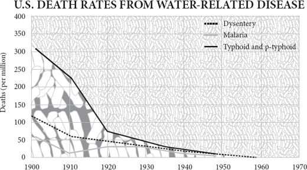
A modern combine harvester, driven by a single man, can reap enough wheat in a single day to make half a million loaves. Little wonder that as I write these words (around the end of 2008), for the very first time the majority of the world’s population lives in cities – up from just 15 per cent in 1900. The mechanisation of agriculture has enabled, and been enabled by, a flood of people leaving the land to seek their fortune in the city, all free to make for each other things other than food.
一台现代联合收割机，由一个人驾驶，在一天内收割的小麦足以制造 50 万个面包。难怪在我写下这些文字的时候（大约在 2008 年底），世界上的大多数人口第一次生活在城市里，而在 1900 年却只有 15%。农业的机械化使大量的人离开土地到城市寻找他们的财富，他们都可以自由地为对方制造食物以外的东西。
Though some came to town with hope and ambition, and some with desperation and fear, almost all were drawn by the same aim: to take part in trade. Cities exist for trade. They are places where people come to divide their labour, to specialise and exchange. They grow when trade expands – Hong Kong’s population grew by thirty times in the twentieth century – and shrink when trade dries up. Rome declined from a million inhabitants in 100 BC to less than 20,000 in the early Middle Ages. Since people have generally done more dying than procreating when in cities, big cities have always depended on rural immigrants to sustain their numbers.
虽然有些人带着希望和野心来到城里，有些人带着绝望和恐惧来到城里，但几乎所有的人都被同一个目标所吸引：参与贸易。城市为贸易而存在。它们是人们来分工合作、专业化和交流的地方。当贸易扩张时，城市就会增长 —— 香港的人口在 20 世纪增长了 30 倍 —— 当贸易枯竭时，城市就会萎缩。罗马从公元前 100 年的一百万居民下降到中世纪早期的不到两万人。由于人们在城市中通常死亡多于生育，大城市总是依靠农村移民来维持其数量。
Just as agriculture appeared in six or seven parts of the world simultaneously, suggesting an evolutionary determinism, so the same is true, a few thousand years later, of cities. Large urban settlements, with communal buildings, monuments and shared infrastructure, start popping up after seven thousand years ago in several fertile river valleys. The oldest cities were in southern Mesopotamia, in what is now Iraq. Their emergence signified that production was becoming more specialised, consumption more diversified.
正如农业同时出现在世界六七个地区，表明了一种进化决定论，几千年后，城市也是如此。大型城市定居点，包括公共建筑、纪念碑和共享的基础设施，在七千年前就开始在几个肥沃的河谷出现。最古老的城市是在美索不达米亚南部，也就是现在的伊拉克。它们的出现标志着生产正变得更加专业化，消费更加多样化。
It seems that farmers on the rich alluvial soils of the southern Euphrates valley began to grow sufficiently prosperous, in a period of high rainfall, to exchange their grain and woven wool for timber and precious stones from the people in the hills to the north. From about 7,500 years ago, a distinctive ‘Ubaid’ style of pottery, clay sickles and house design spread all across the Near East, reaching up into the mountains of Iran, across to the Mediterranean and along the shores of the Arabian peninsula, where fishermen sold fish to Ubaid merchants in exchange for grain and nets. This was a trading diaspora, not an empire: the domestic habits of the distant people who adopted Ubaid style remained distinctive, showing that they were not colonists from Mesopotamia, but locals aping the Ubaid habits.
似乎幼发拉底河谷南部丰富的冲积土壤上的农民开始变得足够繁荣，在降雨量大的时期，用他们的谷物和编织的羊毛从北部山区的人们那里换取木材和宝石。从大约 7500 年前开始，一种独特的 “乌拜德” 风格的陶器、粘土镰刀和房屋设计传遍了整个近东地区，一直延伸到伊朗的山区，跨越地中海，并沿着阿拉伯半岛的海岸，渔民将鱼卖给乌拜德商人以换取谷物和渔网。这是一个贸易散居地，而不是一个帝国：采用乌拜德风格的远方人的家庭习惯仍然与众不同，表明他们不是来自美索不达米亚的殖民者，而是模仿乌拜德习惯的当地人。
The ur-city
“你的” 城市
So Ubaid Mesopotamia, by exporting grain and cloth, drew its neighbours into exporting timber and later metal. The Ubaids must have become rich enough to support chiefs and priests. Inevitably, these had ideas above their stations, for when, after 6,000 years ago, the Ubaid culture disappeared, it was replaced by something that looks much more like an empire – the ‘Uruk expansion’. Uruk was a large city, probably the first the world had ever seen, housing more than 50,000 people within its six miles of wall (King Gilgamesh may have built the wall – having plundered his trading partners’ lands and earned their enmity). All the signs are that Uruk, its agriculture made prosperous by sophisticated irrigation canals, had in the words of the archaeologist Gil Stein ‘developed centralized institutions to mobilize surplus labour and goods from the hinterlands in a meticulously administered political economy’. To put it more succinctly, a class of middlemen, of trade intermediaries, had emerged for the first time. These were people who lived not by production, nor by plunder and tribute, but by deals alone. Like traders ever since, they gathered as tightly together as possible to maximise information flow and minimise costs. Trade with the hills continued, but increasingly it came to look like tribute as Uruk merchants’ dwellings, complete with distinctive central halls, niched-façade temples and peculiar forms of pottery and stone tool, were plonked amid the rural settlements of trading partners in the hills. A cooperative trade network seems to have turned into something much more like colonialism. Tax and even slavery soon began to rear their ugly heads. Thus was set the pattern that would endure for the next 6,000 years – merchants make wealth; chiefs nationalise it.
因此，乌拜德·美索不达米亚通过出口粮食和布匹，吸引了其邻国出口木材和后来的金属。乌拜德人必须变得足够富有，以支持酋长和祭司。不可避免的是，这些人的想法高于他们的地位，因为当 6000 年前乌拜德文化消失后，它被一个看起来更像帝国的东西所取代 —— “乌鲁克扩张”。乌鲁克是一座大型城市，可能是世界上有史以来第一座城市，在其六英里长的城墙内容纳了 5 万多人（吉尔伽美什国王可能建造了城墙 —— 在掠夺了他的贸易伙伴的土地并赢得了他们的敌意）。所有的迹象表明，乌鲁克的农业因复杂的灌溉渠而变得繁荣，用考古学家吉尔·斯坦（Gil Stein）的话说，就是 “发展了中央机构，在一个精心管理的政治经济中调动腹地的剩余劳动力和货物”。简而言之，第一次出现了一个中间商、贸易中介的阶层。这些人不是靠生产，也不是靠掠夺和进贡，而是只靠交易。与此后的商人一样，他们尽可能紧密地聚集在一起，以最大限度地提高信息流和减少成本。与山区的贸易仍在继续，但它越来越像朝贡，因为乌鲁克商人的住宅，包括独特的中央大厅、壁龛式的寺庙和特殊形式的陶器和石器，被放置在山区贸易伙伴的农村定居点中。一个合作的贸易网络似乎已经变成了更像殖民主义的东西。税收甚至是奴隶制很快就开始抬头了。因此，在接下来的 6000 年里，这种模式一直持续着 —— 商人创造财富；酋长将其国有化。
The story of Ubaid and Uruk is familiar and modern. You can imagine the Ubaid merchants displaying their cloths and pots and groaning sacks of grain to the wide-eyed peasants of the hills. You can see the Uruk nabobs in their privileged enclaves, surrounded by subservient natives, like the British in India or Chinese in Singapore. It is with a start that you recall this is still essentially the Stone Age. Only towards the end of the Ubaid period is copper being smelted, and well into the Uruk times, sickles and knives are still made of stone or clay. Late in the Uruk period clay tablets appear with uniform marks on them meticulously accounting for merchants’ stocks and profits. Those dull records, dug into the surfaces of clay tablets, are the ancestors of writing – accountancy was its first application. The message those tablets tell is that the market came long before the other appurtenances of civilisation. Exchange and trade were well established traditions before the first city, and record keeping may have played a crucial role in allowing cities to emerge full of strangers who could trust each other in transactions. It was the habit of exchange that enabled specialists to appear in Uruk, swelling the city with artisans and craftsmen who never went near the fields. For instance, there seems to have been almost mass production of bevelled-rim bowls that appear to have been disposable. Handed out at communal events like temple constructions, they were undoubtedly made in something like a factory, by workers paid to make them, not by moonlighting farmers.
乌拜德和乌鲁克的故事既熟悉又现代。你可以想象，乌拜德的商人向山上睁大眼睛的农民展示他们的布、锅和呻吟的粮食袋。你可以看到乌鲁克的贵族们在他们的特权飞地里，被顺从的当地人所包围，就像英国人在印度或中国人在新加坡一样。你会猛然想起，这里基本上还是石器时代。只有在乌拜德时期末期才开始冶炼铜，而进入乌鲁克时期后，镰刀和刀具仍然是由石头或粘土制成的。在乌鲁克时代晚期，出现了粘土片，上面有统一的标记，一丝不苟地记录着商人的库存和利润。那些挖在泥板表面的呆板记录，是文字的祖先 —— 会计是它的第一个应用。这些泥板所传达的信息是，市场早于文明的其他附属物出现。在第一座城市出现之前，交换和贸易就已经是很成熟的传统了，而记录可能在允许城市出现的过程中起到了至关重要的作用，这些城市充满了可以在交易中相互信任的陌生人。正是这种交换的习惯使专家们在乌鲁克出现，使城市中出现了许多从未下过田的工匠和手艺人。例如，似乎已经有了几乎大规模生产的斜边碗，这些碗似乎是一次性的。在寺庙建设等公共活动中分发的这些碗，无疑是在类似于工厂的地方由工人制作的，而不是由兼职的农民。
Uruk did not last, because the climate dried out and the population collapsed, aided no doubt by soil erosion, salination, imperial overspending and uppity barbarians. But Uruk was followed by an endless series of empires on the same ground: Sumerian, Akkadian, Assyrian, Babylonian, neo-Assyrian, Persian, Hellenistic, Roman (briefly, under Trajan), Parthian, Abbasid, Mongol, Timurid, Ottoman, British, Saddamite, Bushite ... Each empire was the product of trading wealth and was itself the eventual cause of that wealth’s destruction. Merchants and craftsmen make prosperity; chiefs, priests and thieves fritter it away.
乌鲁克没有持续下去，因为气候干燥，人口崩溃，毫无疑问，这得益于水土流失、盐碱化、帝国的过度消费和傲慢的野蛮人。但是，在乌鲁克之后，在同样的土地上出现了一系列无尽的帝国。苏美尔人、阿卡德人、亚述人、巴比伦人、新亚述人、波斯人、希腊人、罗马人（短暂的，在特拉扬时期）、帕提亚人、阿巴斯人、蒙古人、帖木儿人、奥斯曼人、英国人、萨达姆人、布什人…… 每个帝国都是贸易财富的产物，其本身也是这种财富毁灭的最终原因。商人和工匠创造了繁荣；酋长、祭司和盗贼则将其挥霍一空。
Cotton and fish
棉花和鱼
The urban revolution on the banks of the Euphrates was repeated on the banks of the Nile, Indus and Yellow rivers. Ancient Egypt could grow nearly two tonnes of wheat per hectare on land irrigated and replenished with nutrients by the annual flood of the Nile, providing an ample surplus of food, if peasants could be persuaded to produce one, to exchange for other goods, not excluding pyramids. Even more than in Mesopotamia, Egypt followed the path of irrigation, centralisation, monument building and eventual stagnation. Dependent on the flow of the Nile for their crops, the peasants became subject to whoever owned the boats and sluice gates, and he took most of the surplus. Unlike hunter-gatherers or herders, farmers faced with taxes have to stay put and pay, especially if surrounded by desert and dependent on irrigation ditches. So once Menes had unified the upper and lower valley and made himself the first pharaoh, the productive Egyptian economy found itself nationalised, monopolised, bureaucratised and eventually stifled by – in the words of two modern historians – the ‘leaden authoritarianism’ of its rulers.
幼发拉底河畔的城市革命在尼罗河、印度河和黄河畔重演。古埃及可以在每年尼罗河洪水灌溉和补充营养的土地上，每公顷种植近两吨小麦，提供充足的剩余粮食，如果可以说服农民生产，以换取其他商品，不排除金字塔。与美索不达米亚相比，埃及走的是灌溉、集中化、建造纪念碑和最终停滞不前的道路。农民依赖尼罗河的水流来种植庄稼，谁拥有船只和水闸，谁就受制于他，他就拿走大部分的盈余。与狩猎采集者或牧民不同，农民面对税收不得不留在原地支付，特别是在被沙漠包围并依赖灌溉沟渠的情况下。因此，一旦美尼斯统一了上谷和下谷，并使自己成为第一位法老，埃及的生产性经济就发现自己被国有化、垄断化、官僚化，并最终被 —— 用两位现代历史学家的话说 —— 其统治者的 “铅制独裁主义” 所扼杀。
On the banks of the Indus, an urban civilisation arose without spawning an emperor, at least not one whose name is known. Harappa and Mohenjo-Daro are known for the precisely standardised size of their bricks and their neat sanitary arrangements. The port of Lothal was distinguished by what appears to be a dock and tidal lock, and a factory for making beads. There is less sign of palaces or temples, let alone pyramids, but the anthropologist Gordon Childe’s preliminary conclusion that the whole thing appears to have been rather egalitarian and peaceful turned out to be largely wishful thinking. Somebody was imposing a neat grid of streets and building a hefty ‘citadel’ of pillars, towers and walls. Smells like a monarch to me. As Sir Mortimer Wheeler wrote in his autobiography: ‘I sat down and wrote to Gordon Childe in London that the bourgeois complacency of the Indus civilisation had dissolved into dust and that, instead, a thoroughly militaristic imperialism had raised its ugly head amongst the ruins.’
在印度河畔，出现了一个城市文明，但没有产生一个皇帝，至少没有一个已知的皇帝。哈拉帕和摩亨佐·达罗因其砖块的精确标准化尺寸和整洁的卫生设施而闻名。洛塔尔港口的特点是似乎有一个码头和潮汐水闸，以及一个制造珠子的工厂。宫殿或庙宇的迹象较少，更不用说金字塔了，但人类学家戈登·奇尔德（Gordon Childe）的初步结论是，整个事件似乎是相当平等和和平的，这在很大程度上证明是一厢情愿的想法。有人强加了一个整齐的街道网格，并建造了一个由柱子、塔楼和墙壁组成的沉重的 “城堡”。对我来说，这闻起来像一个君主。正如莫蒂默·惠勒（Mortimer Wheeler）爵士在他的自传中写道：“我坐下来给伦敦的戈登·奇尔德写信，说印度河文明的资产阶级自满情绪已经化为尘土，相反，一个彻底的军国主义帝国主义在废墟中抬起了丑陋的头颅。”
The Indus people were good at transport: bullock carts may have been used here for the first time and plank-built sailing boats. Transport allowed extensive trade. Some of the very earliest settlements in the region, such as Mehrgarh in Baluchistan, were importing lapis lazuli from north of the Hindu Kush mountains as early as 6,000 years ago. By the time of Harappa, copper came from Rajasthan, cotton from Gujarat, and lumber from the mountains. Even more remarkably, the archaeologist Shereen Ratnagar concluded that boats sent exports west to Mesopotamia, stopping at ports along the coast of what is now Iran – implying a seamanship that is surprising at such an early date. There can be little doubt that the great wealth of the Indus cities was generated by trade.
印度河流域的人们善于运输：这里可能首次使用了牛车和木板建造的帆船。运输允许广泛的贸易。该地区最早的一些定居点，如俾路支省的梅尔加，早在 6000 年前就从兴都库什山脉北部进口青金石。到哈拉帕的时候，铜来自拉贾斯坦邦，棉花来自古吉拉特邦，木材来自山区。更值得注意的是，考古学家谢琳-拉特纳加（Shereen Ratnagar）总结说，船只将出口产品向西送到美索不达米亚，在现在伊朗的海岸线上停靠 —— 这意味着在这么早的时候，航海技术是令人惊讶的。毫无疑问，印度河城市的巨大财富是由贸易产生的。
The Harappan people ate a lot of fish and grew a lot of cotton, things they had in common with citizens of another valley on the far side of the world. Caral in the desert of the Supe Valley in Peru was a large town with monuments, warehouses, temples and plazas. Discovered in the 1990s by Ruth Shady, it lies in a desert crossed by a river valley and was only the biggest of many towns in the area, some of which date from more than 5,000 years ago – the so-called Norte Chico civilisation. For archaeologists there are three baffling features of the ancient Peruvian towns. First, their people had no cereals in their diet. Maize was yet to be invented, and although there were several domesticated squashes and other foods, there was nothing so easily accumulated and stored as the grain which was the staple of Mesopotamia. The idea that cities are made possible by largescale hoarding of grain thus takes a blow. Second, the Norte Chico towns have yielded no pottery of any kind: they were ‘preceramic’. This surely made both the storage and the cooking of food more difficult, again undermining one of the favourite tenets of archaeologists trying to explain how cities began. And third, there is no evidence of warfare or defensive works. So the conventional wisdom that cereal stores made cities possible, that ceramic containers made them practical and that warfare made them necessary takes quite a knock from Norte Chico.
哈拉潘人吃了很多鱼，种了很多棉花，这些东西他们与世界另一端的山谷的公民有共同之处。秘鲁苏佩谷沙漠中的卡拉尔是一个大城镇，有纪念碑、仓库、庙宇和广场。它在 20 世纪 90 年代被露丝·沙迪发现，位于一个被河谷穿过的沙漠中，只是该地区许多城镇中最大的一个，其中一些可以追溯到 5000 多年前 —— 所谓的北奇科文明。对于考古学家来说，秘鲁的古镇有三个令人困惑的特点。首先，他们的人民在饮食中没有谷物。玉米尚未被发明，虽然有一些被驯化的南瓜和其他食物，但没有任何东西像美索不达米亚的主食谷物那样容易积累和储存。因此，城市是通过大规模囤积粮食来实现的这一观点受到了打击。第二，北奇科镇没有发现任何种类的陶器：它们是 “前陶瓷”。这肯定会使食物的储存和烹饪更加困难，再次破坏了考古学家试图解释城市如何开始的最受欢迎的原则之一。第三，没有战争或防御性工程的证据。因此，传统的智慧，即谷物商店使城市成为可能，陶瓷容器使城市变得实用，战争使城市成为必要，从诺特·奇科（Norte Chico）那里得到了很大的冲击。
So what was driving people together into these South American towns? The answer, in a word, is trade. The settlements on the coast harvested fish in huge quantities, mainly anchovies and sardines, but also clams and mussels. For this they needed nets. The settlements in the interior grew huge quantities of cotton in fields irrigated with Andean snowmelt. They fashioned the cotton into nets, which they bartered for fish. There was not just mutual dependence, but mutual gain. A fisherman need only catch some more fish rather than spend time making his own nets; a cotton grower need only grow some more cotton rather than spend time fishing. Specialisation raised the standard of living for both. Caral lay at the centre of a large web of trade, reaching high into the Andes, over into the rainforest and far along the coast.
那么，是什么驱使人们聚集到这些南美的城镇？一句话，答案是贸易。沿海的定居点大量捕鱼，主要是凤尾鱼和沙丁鱼，但也有蛤蜊和贻贝。为此，他们需要渔网。内陆地区的定居点在用安第斯山脉融雪灌溉的田地里种植大量的棉花。他们把棉花做成网，用它来换取鱼。这不仅是相互依赖，而且是相互收益。渔民只需要多捕一些鱼，而不是花时间制作自己的网；棉花种植者只需要多种植一些棉花，而不是花时间捕鱼。专业化提高了双方的生活水平。卡拉尔位于一个巨大的贸易网络的中心，它延伸到安第斯山脉的高处，进入雨林，并沿着海岸线远行。
The flag follows trade
该旗帜遵循贸易
To argue, therefore, that emperors or agricultural surpluses made the urban revolution is to get it backwards. Intensification of trade came first. Agricultural surpluses were summoned forth by trade, which offered farmers a way of turning their produce into valuable goods from elsewhere. Emperors, with their ziggurats and pyramids, were often made possible by trade. Throughout history, empires start as trade areas before they become the playthings of military plunderers from within or without. The urban revolution was an extension of the division of labour.
因此，认为皇帝或农业盈余促成了城市革命的说法是错误的。贸易的加强是第一位的。农业盈余被贸易唤起，贸易为农民提供了将他们的产品转化为来自其他地方的有价值商品的途径。皇帝和他们的金字塔，往往是由贸易促成的。纵观历史，帝国在成为内部或外部军事掠夺者的玩物之前，首先是贸易区。城市革命是劳动分工的延伸。
When a usurper named Sargon founded the Akkadian dynasty by conquest in the middle of the third millennium BC, he inherited the prosperity of the Syrian city of Ebla and its trading partners: a world in which grain, leather, textiles, silver and copper flowed easily between the Mediterranean and the Persian Gulf. Managing to resist the temptation of bureaucratic authoritarianism rather more than their Chinese and Egyptian contemporaries, the Akkadians allowed this trade to expand until it made fruitful contact with Lothal near the mouth of the Indus and bought the cotton and lapis lazuli of India with the wheat and bronze of Mesopotamia. A great free trade area stretched from the Nile to the Indus. An Akkadian merchant could handle Anatolian silver from a thousand miles to the west and Rajasthani copper from a thousand miles to the east. And that meant that he could raise the standard of living of the consumers he supplied, whether they were farmers or priests, by connecting them with distant producers of diverse goods.
公元前三千年中期，一个名叫萨尔贡（Sargon）的篡位者通过征服建立了阿卡德王朝，他继承了叙利亚城市埃布拉及其贸易伙伴的繁荣：在这个世界上，谷物、皮革、纺织品、银和铜在地中海和波斯湾之间轻松流动。与同时代的中国和埃及人相比，阿卡德人更善于抵制官僚专制的诱惑，他们允许这种贸易扩展，直到与印度河口附近的洛塔尔进行富有成效的接触，用美索不达米亚的小麦和青铜购买印度的棉花和青金石。一个巨大的自由贸易区从尼罗河延伸到印度河。一个阿卡德商人可以从西边一千英里处处理安纳托利亚的银器，从东边一千英里处处理拉贾斯坦尼的铜器。这意味着他可以提高他所供应的消费者的生活水平，无论他们是农民还是祭司，通过将他们与远方的各种商品的生产者联系起来。
Who was such a merchant? The economist Karl Polanyi argued in the 1950s that the concept of the market cannot be applied to any time before the fourth century BC, that until then instead of supply, demand and price, there was reciprocal exchange, state-sponsored redistribution of goods and top-down treaty trade in which agents were sent abroad to acquire things on behalf of the palace. Trade was administered, not spontaneous. But Polanyi’s thesis or those of his fellow ‘substantivists’ has not stood the test of time well. It now seems that the state did not so much sponsor trade, as capture it. The more that comes to light about ancient trade, the more bottom-up it looks. While it is true that some Akkadian merchants may well have eventually seen themselves partly as civil servants sent abroad to acquire goods for their rulers, even they earned a living by trading for a profit themselves. Polanyi depicted a reflection of his own planning-obsessed times. The dirigiste mentality that dominated the second half of the twentieth century was always asking who is in charge, looking for who decided on a policy of trade. That is not how the world works. Trade emerged from the interactions of individuals. It evolved. Nobody was in charge.
谁是这样的商人？经济学家卡尔·波兰尼（Karl Polanyi）在 20 世纪 50 年代认为，市场的概念不能适用于公元前四世纪之前的任何时代，在那之前，没有供应、需求和价格，只有互惠的交换、国家支持的商品再分配和自上而下的条约贸易，其中代理人被派往国外代表皇宫获得东西。贸易是被管理的，而不是自发的。但波兰尼的理论或他的同伴 “实体主义者” 的理论并没有很好地经受住时间的考验。现在看来，国家与其说是在赞助贸易，不如说是在捕获它。有关古代贸易的资料越多，它看起来就越是自下而上。虽然一些阿卡德商人最终很可能把自己看作是被派往国外为他们的统治者采购货物的公务员，但即使他们自己也是通过贸易获利来谋生。波兰尼描绘的是他自己的计划迷恋时代的反映。主导二十世纪下半叶的统治者心态总是在问谁在负责，寻找谁在决定贸易政策。这不是世界的运作方式。贸易是从个人的互动中产生的。它不断发展。没有人负责。
So the typical Akkadian tamkarum or merchant was a businessman of the most surprisingly modern kind, who depended for his livelihood on freely exchanging goods for profit. Though there was no minted coinage, from the end of the fourth millennium BC there were silver-based prices, which fluctuated freely. The temple would act as a sort of bank, lending money at interest – and the Uruk word for high priest is the same as the word for accountant. By 2000 BC, under the Assyrian empire, merchants from Ashur operated in ‘karum’ enclaves in the independent states of Anatolia as thoroughly modern entrepreneurs with ‘head offices, foreign branch-plants, corporate hierarchies, extra-territorial business law, and even a bit of foreign direct investment and value-added activity’. They bought gold, silver and copper in exchange for tin, goat-hair felt, woven textiles and perfumes shipped in on caravans of up to 300 donkeys. The profit margin was 100 per cent on tin and 200 per cent on textiles, but it had to be because the transport was unreliable and the risk of theft high. One such merchant, Pusu-Ken, operating in a tax-free zone in the Anatolian city of Kanesh, was to be found in 1900 BC lobbying the king, paying fines for evading textile import regulations imposed by the assembly, and sharing profits with his investor-partners, sounding in other words every inch the modern chief executive. Such merchants ‘did not devote themselves to trading in copper and wool because Assyria needed them, but because that trade was a means of obtaining more gold and silver’. Profit ruled.
因此，典型的阿卡德的谭卡伦（Akkadian tamkarum）或商人是一个最令人惊讶的现代商人，他的生计依赖于自由交换货物以获取利润。虽然当时没有铸币，但从公元前四千年末开始，就有了以银为基础的价格，自由波动。神庙将作为一种银行，以利息形式放贷 —— 乌鲁克语中的大祭司与会计师的意思相同。到了公元前 2000 年，在亚述帝国的统治下，来自阿舒尔的商人在安纳托利亚独立国家的 “卡鲁姆” 飞地里经营，成为彻底的现代企业家，拥有 “总部、外国分厂、公司等级制度、域外商业法，甚至还有一点外国直接投资和增值活动”。他们购买黄金、白银和铜，以换取锡、山羊毛毡、编织的纺织品和香水，这些东西由多达 300 头驴子的大篷车运来。锡的利润率为 100%，纺织品的利润率为 200%，但这是必须的，因为运输不可靠，盗窃的风险很大。公元前 1900 年，在安纳托利亚城市卡内什的免税区经营的一个这样的商人普苏·肯（Pusu-Ken）被发现在游说国王，为逃避议会实施的纺织品进口条例支付罚款，并与他的投资伙伴分享利润，换句话说，听起来就像现代的首席执行官。这些商人 “不是因为亚述需要铜和羊毛，而是因为这种贸易是获得更多黄金和白银的一种手段” 而致力于铜和羊毛贸易。利润占主导地位。
In these Bronze Age empires, commerce was the cause, not the symptom of prosperity. None the less, a free trade area lends itself easily to imperial domination. Soon, through tax, regulation and monopoly, the wealth generated by trade was being diverted into the luxury of the few and the oppression of the many. By 1500 BC you could argue that the richest parts of the world had sunk into the stagnation of palace socialism as the activities of merchants were progressively nationalised. Egyptian, Minoan, Babylonian and Shang dictators ruled over societies of rigid dirigisme, extravagant bureaucracy and feeble individual rights, stifling technological innovation, crowding out social innovation and punishing creativity. A Bronze Age empire stagnated for much the same reason that a nationalised industry stagnates: monopoly rewards caution and discourages experiment, the income is gradually captured by the interests of the producers at the expense of the interests of the consumers, and so on. The list of innovations achieved by the pharaohs is as thin as the list of innovations achieved by British Rail or the US Postal Service.
在这些青铜时代的帝国，商业是繁荣的原因，而不是症状。尽管如此，一个自由贸易区很容易成为帝国统治的对象。很快，通过税收、监管和垄断，贸易产生的财富被转用于少数人的奢侈和对多数人的压迫。到公元前 1500 年，你可以说世界上最富有的地区已经陷入了宫廷社会主义的停滞状态，因为商人的活动逐渐被国有化。埃及、米诺斯、巴比伦和商朝的独裁者统治着僵化的统治、奢侈的官僚主义和微弱的个人权利的社会，扼杀了技术革新，排挤了社会革新，惩罚了创造力。一个青铜时代的帝国停滞不前的原因与国有化工业停滞不前的原因大致相同：垄断奖励谨慎，不鼓励实验，收入逐渐被生产者的利益所占据，牺牲了消费者的利益，等等。法老们取得的创新清单和英国铁路或美国邮政取得的创新清单一样薄。
The maritime revolution
海上革命
Still, you cannot keep a good idea down. Around 1200 BC, the power of both Egypt and Assyria waned, the Minoans fell, the Myceneans fragmented and the Hittites came and went. It was a dark age for empires, and like the later Dark Ages that followed the fall of Rome, this political fragmentation, perhaps aided by a population decline, caused a burst of invention as demand rose among free people. The Philistines invented iron; the Canaanites the alphabet; and their coastal cousins, the Phoenicians, glass.
尽管如此，你还是无法压制一个好的想法。公元前 1200 年左右，埃及和亚述的力量都在减弱，米诺斯人倒下了，迈锡尼人四分五裂，赫梯人来了又走。这是一个帝国的黑暗时代，就像后来罗马灭亡后的黑暗时代一样，这种政治上的分裂，也许是在人口下降的帮助下，随着自由人的需求上升，造成了发明的爆发。非利士人发明了铁，迦南人发明了字母，而他们的沿海表亲腓尼基人则发明了玻璃。
It was a different Phoenician invention, the bireme galley, that truly created the classical world. The people of Byblos, Tyre and Sidon lived close to great forests of magnificent cedars and cypresses, the hard, aromatic planks of which made especially durable boats. With decks of pine from Cyprus and oars of oak from Jordan (says Ezekiel), the Phoenician boat was greater than the sum of its far-flung parts. There was of course nothing new about the boat as a concept: boats had been plying the Nile, Euphrates, Indus and Yellow rivers for centuries, and the coasts of Asia and the Mediterranean for almost as long. But, realising their comparative advantage in timber, the Phoenicians built ships of greater capacity, finer trim and more seaworthy mortise joints than any people before them. Eventually they were able to build ships so large that they needed two banks of oars to propel them. Oars, though, were used only for manoeuvring close to shore. These were sailing ships and the larger they were, the more they could amplify the work of their human operators. Using the power of the wind, a comparatively small crew could transport a heavy cargo hundreds of miles further, and much more cheaply, than a caravan of donkeys could ever hope to manage.
真正创造了古典世界的是腓尼基人的另一项发明 —— 比勒姆船。比布鲁斯、推罗和西顿的人们住在靠近巨大的雪松和柏树森林的地方，这些坚硬的、有香气的木板使船只特别耐用。有了塞浦路斯的松木甲板和约旦的橡木船桨（以西结书说），腓尼基人的船比其遥远的部分的总和还要大。当然，作为一个概念，船并不新鲜：几个世纪以来，船一直在尼罗河、幼发拉底河、印度河和黄河上行驶，在亚洲和地中海沿岸行驶的时间也差不多。但是，腓尼基人意识到他们在木材方面的相对优势，比起之前的任何民族，他们建造的船只容量更大，修饰更精细，榫头更适航。最终，他们能够建造出如此大的船只，以至于需要两组船桨来推动它们。不过，船桨只用于靠近岸边的操纵。这些是帆船，它们越大，就越能放大人类操作员的工作。利用风的力量，一个相对较小的船员可以将沉重的货物运送到数百英里之外，而且比一队驴子所能做到的要便宜得多。
Suddenly, for the first time, a large-scale seaborne division of labour became a possibility: wheat from Egypt could feed the Hittites in Anatolia; wool from Anatolia could clothe the Egyptians on the Nile; olive oil from Crete could enrich the diets of Assyrians in Mesopotamia. The ships of what is now Lebanon could trade for profit and scour the seas for tempting products. Grain, wine, honey, oil, resin, spices, ivory, ebony, leather, wool, cloth, tin, lead, iron, silver, horses, slaves, or a purple dye made from a gland in the body of the murex shellfish – there was little the Phoenicians could not find for an ambitious pharaoh with a harem to pamper, or a prosperous Assyrian farmer with a fiancée to impress.
突然间，大规模的海路分工第一次成为可能：埃及的小麦可以养活安纳托利亚的赫梯人；安纳托利亚的羊毛可以为尼罗河上的埃及人提供衣服；克里特岛的橄榄油可以丰富美索不达米亚亚述人的饮食。现在的黎巴嫩的船只可以进行贸易以获取利润，并在海洋上搜寻诱人的产品。谷物、酒、蜂蜜、油、树脂、香料、象牙、乌木、皮革、羊毛、布、锡、铅、铁、银、马、奴隶，或者用金目鲷体内的腺体制成的紫色染料 —— 对于一个有野心的法老和他的后宫需要呵护的人，或者一个有未婚妻需要讨好的繁荣的亚述农民，腓尼基人几乎找不到什么。
All around the Mediterranean, markets grew into towns and ports into cities. Travelling farther afield, the Phoenicians’ innovations multiplied: better keels, sails, navigational knowledge, accounting systems, log-keeping. Trade, once more, was the flywheel of the innovation machine. To the south, steeped in their religious obsessions, the Israelite pastoralists looked on in puritan horror at the explosion of wealth thus created. Isaiah cheerily anticipates Yahweh’s destruction of Tyre, the ‘market of the nations’, to humble her pride. Ezekiel vents his Schadenfreude when Tyre is attacked: ‘When thy wares went forth out of the seas, thou filledst many peoples; Thou didst enrich the kings of the earth with thy merchandise and thy riches ... Thou art become a terror; and thou shalt never be any more.’ To the west, the warring island farmers of the Aegean looked down in warrior contempt on the bourgeois traders who were suddenly appearing in their midst. Throughout both the Iliad and the Odyssey, ‘Homer’ displays a relentlessly negative attitude to Phoenician traders and hints that they must be pirates. Greek trade in the age of Homer was supposed to handle precious reciprocal gifts between elites, not workaday goods in demand among ordinary people. The snobbery of the elite towards trade has ancient roots.
在整个地中海地区，市场发展成为城镇，港口发展成为城市。在更远的地方，腓尼基人的创新成倍增加：更好的龙骨、船帆、航海知识、会计系统、日志保存。贸易，再一次成为创新机器的飞轮。在南方，以色列牧民沉浸在对宗教的迷恋中，对由此产生的财富爆炸感到恐惧。以赛亚兴高采烈地期待耶和华摧毁推罗，“各国的市场”，以挫败她的傲慢。以西结在推罗被攻击时发泄他的幸灾乐祸：“你的货物出海时，装满了许多人；你用你的货物和财富使地上的君王富足…… 你已经成为恐怖，你再也不会成为恐怖了”。在西边，爱琴海上交战的岛屿农民以战士的姿态蔑视着突然出现在他们中间的资产阶级商人。在《伊利亚特》和《< class="calibre5">奥德赛》中，荷马 “对腓尼基商人表现出无情的负面态度，并暗示他们一定是海盗。” 荷马时代的希腊贸易应该是处理精英之间的珍贵互赠礼物，而不是普通人之间需求的工作用品。精英阶层对贸易的势利眼有其古老的根源。
The effect of the Phoenicians must have been to create a burst of specialisation all around the Mediterranean. Villages, towns and regions would have discovered their comparative advantages in smelting metals, manufacturing pottery, tanning hides or growing grain. Mutual dependence and gains from trade would have emerged in unexpected places. Redressing the natural inequality in the location of metal ores, for example, benefits everybody. Cyprus may have lots of copper and Britain lots of tin, but put them together and bring them to Tyre and you can make the much more useful bronze. Tyrian traders founded Gadir, present-day Cadiz, around 750 BC not to settle the area but to trade with its inhabitants, in particular to exploit the silver ores of the Iberian hinterland – discovered, according to legend, when a forest fire caused rivulets of pure silver to pour from the hillsides. In doing so they must have turned the people of the region from largely self-sufficient peasants into producer-consumers. The Tartessian natives controlled the mining and smelting of the silver, selling it to the Tyrians at Gadir in exchange for oil, salt, wine and trinkets to charm the chiefs of the tribes farther into the interior. The Tyrians then took that silver (according to Diodorus, sometimes making silver anchors for their ships so as to squeeze a little more on board) east into the Mediterranean, exchanging it for staples and other luxuries.
腓尼基人的影响一定是在整个地中海地区创造了一个专业化的爆发。村庄、城镇和地区会发现他们在冶炼金属、制造陶器、鞣制皮革或种植谷物方面的比较优势。相互依赖和贸易收益会在意想不到的地方出现。例如，纠正金属矿位置的自然不平等，对所有人都有利。塞浦路斯可能有很多铜，英国有很多锡，但把它们放在一起，带到提尔，你就可以制造出更有用的青铜。提尔商人在公元前 750 年左右建立了加迪尔（今加的斯），不是为了定居该地区，而是为了与该地区的居民进行贸易，特别是为了开采伊比利亚腹地的银矿 —— 据传说，当一场森林大火导致纯银的河流从山坡上涌出时，他们发现了银矿。在这样做的过程中，他们一定是把该地区的人们从基本上自给自足的农民变成了生产者和消费者。鞑靼人控制着银矿的开采和冶炼，将其卖给加迪尔的提利尔人，以换取油、盐、酒和饰品，以吸引更远的内陆部落酋长。然后，提利尔人带着这些银子 —— 根据迪奥多鲁斯（Diodorus）的说法，有时为他们的船只制作银锚，以便在船上多挤一点 —— 向东进入地中海，用它来交换主食和其他奢侈品。
No doubt just as the Tyrians could not believe their fortune at finding savages happy to give them so much silver for a little Cretan olive oil, so the Tartessians could not believe their luck at finding strange seagoing people prepared to give them such a convenient, storable, calorie-rich bounty for a mere metal. It is common to find that two traders both think their counterparts are idiotically overpaying: that is the beauty of Ricardo’s magic trick. ‘The English have no sense,’ said a Montagnais trapper to a French missionary in seventeenth-century Canada. ‘They give us twenty knives for this one beaver skin.’ The contempt was mutual. When HMS Dolphin ’s sailors found that a twenty-penny iron nail could buy a sexual encounter on Tahiti in 1767, neither sailors nor Tahitian men could believe their luck; whether the Tahitian women were as happy as their menfolk about this bargain goes unrecorded. Twelve days later, rampant inflation had set in and sex now cost a nine-inch marlinspike.
毫无疑问，正如提利尔人无法相信他们的运气，发现野蛮人乐意为一点克里特橄榄油提供这么多银子，鞑靼人也无法相信他们的运气，发现陌生的海族准备为他们提供如此方便、可储存、富含热量的赏赐，而这只是一种金属。常见的情况是，两个商人都认为他们的同行愚蠢地出高价：这就是李嘉图魔术的魅力所在。“英国人毫无道理”，一位蒙塔格奈族捕猎者在十七世纪的加拿大对一位法国传教士说。“他们为这一张海狸皮给了我们 20 把刀”。这种蔑视是相互的。1767 年，当海豚号的水手们发现 20 便士的铁钉可以在大溪地买到一次性爱，水手和大溪地的男人都不敢相信自己的运气；大溪地的女人是否和她们的男人一样对这次交易感到高兴，没有记录下来。12 天后，猖獗的通货膨胀开始了，现在的性爱费用是 9 英寸的马林鱼刺。
Traders from Gadir even worked their way south along the coast of Africa, acquiring gold from the inhabitants by ‘silent trade’: leaving goods on the shore and retreating. Comparative Ricardo ruled the Phoenician world. Tyre is the prototype of the trading port, the Genoa, Amsterdam, New York or Hong Kong of its day. The Phoenician diaspora is one of the great untold stories of history – untold because Tyre and its books were so utterly destroyed by thugs like Nebuchadnezzar, Cyrus and Alexander, and Carthage by the Scipios, so the story comes to us only through snippets from snobbish and envious neighbours. But in truth, was there ever a more admirable people than the Phoenicians? They knitted together not only the entire Mediterranean, but bits of the Atlantic, the Red Sea and the overland routes to Asia, yet they never had an emperor, had comparatively little time for religion and fought no memorable battles – unless you count Cannae, fought by a mercenary army paid by Carthage. I do not mean they were necessarily nice: they traded in slaves, sometimes resorted to war and did deals with the piratical Philistine ‘sea peoples’ who destroyed coastal cities around 1200 BC, but the Phoenicians seem to have managed to resist the temptations of turning into thieves, priests and chiefs better than most successful people in history. Through enterprise they discovered social virtue.
来自加迪尔的商人甚至沿着非洲海岸一路南下，通过 “无声的贸易” 从居民那里获得黄金：将货物留在岸边，然后撤退。比较里卡多统治了腓尼基的世界。提尔是贸易港口的原型，是当时的热那亚、阿姆斯特丹、纽约或香港。腓尼基人的散居是历史上不为人知的伟大故事之一 —— 不为人知是因为提尔和它的书被尼布甲尼撒、居鲁士和亚历山大等暴徒彻底摧毁，迦太基被西庇阿人摧毁，所以这个故事只能通过势利和嫉妒的邻居们的片段来告诉我们。但事实上，还有比腓尼基人更令人钦佩的民族吗？他们不仅连接了整个地中海，还连接了大西洋、红海和通往亚洲的陆路通道，但他们从来没有一个皇帝，相对来说没有什么时间去信仰，也没有打过什么令人难忘的战役 —— 除非你把迦太基支付的雇佣军所打的坎尼算进去。我并不是说他们一定是好人：他们买卖奴隶，有时会诉诸战争，并与公元前 1200 年左右摧毁沿海城市的非利士人海盗做交易，但腓尼基人似乎比历史上大多数成功人士更能抵制变成小偷、祭司和酋长的诱惑。通过进取，他们发现了社会美德。
The virtue of fragmented government
分散的政府的美德
The Phoenician diaspora teaches another important lesson, first advanced by David Hume: political fragmentation is often the friend, not the enemy, of economic advance, because of the stop which it gives ‘both to power and authority’. There was no need for Tyre, Sidon, Carthage and Gadir to unite as a single political entity for them all to prosper. At most they were a federation. The extraordinary flowering of wealth and culture around the Aegean between 600 and 300 BC tells the same story. First the Milesians then the Athenians and their allies grew wealthy by trading among small, independent ‘citizen states’, not by uniting as an empire. Having copied the Phoenicians’ ships and trading habits, Miletus, the most successful of the Ionian Greek cities, sat ‘like a bloated spider’ at the junction of four trade routes, east overland to Asia, north through the Hellespont to the Black Sea, south to Egypt and west to Italy. But though it established colonies all over the Black Sea, Miletus was not an imperial capital: it was first among equals. The city of Sybaris, a preferred trading partner of Miletus on a fertile plain in the toe of southern Italy, grew to perhaps several hundred thousand people and became a byword for opulence and refinement before it was destroyed by its enemies and buried under the diverted river Crathis in 510 BC .
腓尼基人的散居生活告诉我们另一个重要的教训，这是由大卫·休谟（David Hume）首先提出的：政治分裂往往是经济发展的朋友，而不是敌人，因为它使 “权力和权威” 停止。推罗、西顿、迦太基和加迪尔没有必要作为一个单一的政治实体联合起来，使他们都能繁荣。他们顶多是一个联盟。公元前 600 年至公元前 300 年期间，爱琴海周围财富和文化的非凡发展也说明了同样的问题。首先是迈尔斯人，然后是雅典人和他们的盟友，他们通过在小的、独立的 “公民国家” 之间进行贸易而致富，而不是通过联合成一个帝国。在复制了腓尼基人的船只和贸易习惯后，米利都，这个爱奥尼亚希腊城市中最成功的城市，“像一只臃肿的蜘蛛” 坐在四条贸易路线的交界处，向东通过陆路到亚洲，向北通过赫勒斯滂到黑海，向南到埃及，向西到意大利。尽管米利都在黑海各地建立了殖民地，但它并不是一个帝国的首都：它是平等中的第一。西巴里斯城是米利都的首选贸易伙伴，位于意大利南部一个肥沃的平原上，在被敌人摧毁并于公元前 510 年被埋在改道的克拉提斯河下之前，该城的人口增长到了几十万，成为富足和精致的代名词。
The discovery of rich silver ores at Laurion in Attica in the 480s BC propelled the experimental democracy at Athens to the status of a regional economic superpower, not least by allowing it to finance a navy with which to defeat the Persians; but Athens too was primus inter pares . The Greek world depended crucially on finding gains from trade: grain from the Crimea, saffron from Libya and metals from Sicily swapped for olive oil from the Aegean itself. Modern philosophers who aspire to rise above the sordid economic reality of the world would do well to recall that this trade made possible the cross-fertilisation of ideas that led to great discoveries. Pythagoras probably got his theorem from a student of Thales the Milesian who learnt geometry on trade excursions to Egypt. We would never have heard of Pericles, Socrates or Aeschylus had there not been tens of thousands of slaves toiling underground at Laurion and tens of thousands of customers for Athenian goods all over the Mediterranean.
公元前 480 年，在阿提卡的劳里昂发现了丰富的银矿，将雅典的实验性民主制度推向了地区经济超级大国的地位，尤其是使它能够资助一支海军，以击败波斯人；但雅典也是首要的。希腊世界主要依靠从贸易中获得收益：来自克里米亚的谷物、来自利比亚的藏红花和来自西西里岛的金属换取爱琴海的橄榄油。渴望超越肮脏的世界经济现实的现代哲学家们不妨回顾一下，这种贸易使思想的交叉融合成为可能，从而导致了伟大的发现。毕达哥拉斯的定理可能是从迈尔斯的一个学生那里得到的，他在去埃及的贸易旅行中学习了几何学。如果没有数以万计的奴隶在劳里昂从事地上的工作，没有数以万计的顾客在地中海各地购买雅典的商品，我们就永远不会听到伯里克利（Pericles）、苏格拉底（Socrates）或埃斯库罗斯（Aeschylus）的名字。
Yet as soon as Greece was unified into an empire by a thug – Philip of Macedon in 338 BC – it lost its edge. Had his son Alexander’s empire lasted, it would undoubtedly have become as commercially and intellectually inert as its Persian predecessor. But because the empire fragmented on Alexander’s death, parts of it were reborn as independent city states that lived off trade, most notably Alexandria in Egypt, which reached a third of a million people living in a state of famous wealth under the comparatively benign rule of the book-collecting Ptolemy III. That wealth was based on new roads to bring cash crops of cotton, wine, grain and papyrus within reach of the river Nile for export.
然而，当希腊被一个暴徒 —— 公元前 338 年马其顿的菲利普 —— 统一为一个帝国时，它就失去了优势。如果他的儿子亚历山大的帝国持续下去，它无疑会像其波斯的前身一样在商业上和智力上变得毫无生气。但是，由于亚历山大死后帝国四分五裂，它的一部分作为独立的城邦重新诞生，靠贸易为生，最引人注目的是埃及的亚历山大，在收集书籍的托勒密三世相对温和的统治下，亚历山大达到了三分之一的人口，生活在一个著名的富裕状态。这种财富是建立在新的道路上，将棉花、葡萄酒、谷物和纸莎草等经济作物带到尼罗河边供出口。
This is not to say that democratic city states are the only places where economic progress can occur, but it is to discern a pattern. Plainly, there is something beneficial to the growth of the division of labour when governments are limited (though not so weak that there is widespread piracy), republican or fragmented. The chief reason is surely that strong governments are, by definition, monopolies and monopolies always grow complacent, stagnant and self-serving. Monarchs love monopolies because where they cannot keep them to themselves, they can sell them, grant them to favourites and tax them. They also fall for the perpetual fallacy that they can make business work more efficiently if they plan it rather than allow and encourage it to evolve. The scientist and historian Terence Kealey points out that entrepreneurs are rational and if they find that wealth can more easily be stolen than created, then they will steal it: ‘Humanity’s great battle over the last 10,000 years has been the battle against monopoly.’
这并不是说民主的城市国家是唯一可以发生经济进步的地方，而是要发现一个模式。显然，当政府是有限的（尽管没有弱到普遍的海盗行为）、共和制或零散的时候，对劳动分工的增长是有好处的。最主要的原因是，根据定义，强大的政府是垄断者，而垄断者总是自满、停滞和自我服务。君主们喜欢垄断，因为在他们无法独占垄断的情况下，他们可以出售垄断，将垄断授予宠臣，并向他们征税。他们还陷入了一个永恒的谬论，即如果他们计划商业，而不是允许和鼓励商业发展，他们就能使商业更有效地运作。科学家和历史学家特伦斯·凯利（Terence Kealey）指出，企业家是理性的，如果他们发现财富被窃取比创造更容易，那么他们就会窃取财富：“人类在过去一万年里的伟大战斗就是反对垄断的战斗。”
This is not disproved by the success of two empires from around the beginning of the Christian era: both Rome and India realised the benefits of economic unification before they managed to endure the disasters of political unification. The Mauryan empire in India seems to have harvested the prosperity of the Ganges valley to combine an imperial monarchy with expanding trade. It was ruled at its zenith in 250 BC by Asoka, a warrior who turned into a Buddhist pacifist once he had won (funny, that) and was as economically benign a head of state as you could wish. He built roads and waterways to encourage the movement of goods, established a common currency and opened maritime trade routes with China, south-east Asia and the Middle East, sparking an export-led boom in which cotton and silk textiles played a prominent part. Trade was carried on almost entirely by private firms (sreni ) of a recognisably corporate kind; taxation, though extensive, was fairly administered. There were remarkable scientific advances, not least the invention of zero and the decimal system and the accurate calculation of pi. Asoka’s empire disintegrated before it had become totalitarian, and its legacy was impressive: for the next few centuries the Indian subcontinent was both the most populous and the most prosperous part of the world, with a third of the world’s people and a third of the world’s GDP. It was without question the economic superpower of the day, dwarfing both China and Rome, and its capital city Pataliputra was the largest city in the world, famous for its gardens, luxuries and markets. Only later, under the Guptas, did the caste system ossify Indian commerce.
这一点并没有被基督教时代初期的两个帝国的成功所否定：罗马和印度在成功承受政治统一的灾难之前，都实现了经济统一的好处。印度的毛利安帝国似乎收获了恒河流域的繁荣，将帝国君主制与扩大贸易结合起来。公元前 250 年，阿育王统治印度达到顶峰，他是一位战士，一旦获胜就变成了佛教徒的和平主义者（这很有趣），并且是你所希望的经济上的良性国家元首。他修建了道路和水路以鼓励货物的流动，建立了共同的货币，并开辟了与中国、东南亚和中东的海上贸易路线，引发了以出口为主导的繁荣，其中棉花和丝绸纺织品发挥了重要作用。贸易几乎完全由私人公司（sreni）进行，是一种公认的企业类型；税收虽然广泛，但管理得当。科学上有了显著的进步，尤其是零和十进制系统的发明以及圆周率的精确计算。阿育王的帝国在成为极权主义之前就解体了，它的遗产令人印象深刻：在接下来的几个世纪里，印度次大陆是世界上人口最多和最繁荣的地区，拥有世界上三分之一的人口和世界上三分之一的国内生产总值。毫无疑问，它是当时的经济超级大国，使中国和罗马相形见绌，其首都帕塔利普特拉是世界上最大的城市，以其花园、奢侈品和市场闻名。只是后来在古普塔斯时期，种姓制度才使印度商业僵化。
From Ganges to Tiber
从恒河到台伯河
Asoka was a contemporary of Hannibal and Scipio, which brings me to Rome. Rome’s particular speciality, from its very first days until the end of its empire, was simply to plunder its provinces to pay for bribes, luxuries, triumphs and soldiers’ pensions nearer to home. There were four respectable ways for a prominent Roman to gain wealth: land-owning, booty from war, money lending and bribery. Cicero pocketed over two million sesterces (three times the sum he had previously quoted to illustrate ‘luxury’) from his governorship of Cilicia in 51 and 50 BC – and he had a reputation as an especially honest governor.
阿育王是汉尼拔和西庇阿的同时代人，这让我想到了罗马。罗马的特殊专长，从其最初的日子直到其帝国的结束，仅仅是掠夺其省份以支付贿赂、奢侈品、胜利和士兵的养老金，离家较近。对于一个杰出的罗马人来说，有四种值得尊敬的方式来获得财富：拥有土地、战利品、放贷和贿赂。西塞罗在公元前 51 年和 50 年担任西里西亚的总督时，收入超过 200 万塞斯特尔（是他之前用来说明 “奢侈” 的金额的三倍） —— 而且他作为一个特别诚实的总督而享有盛名。
Yet there is no doubt that Rome’s hegemony was built on trade. Rome was the final unification of Greece’s and Carthage’s trade zones, with a smattering of belligerent Etruscans and Latins in charge. ‘The history of antiquity resounds with the sanguinary achievements of Aryan warrior elites,’ wrote Thomas Carney, ‘but it was the despised Levantines, Arameans, Syrians and Greeklings who constituted the economic heroes of antiquity.’ The populous and prosperous cities of southern Italy, Sicily and points east that were the core of Rome’s world were Greek-speaking; they did the hard work of keeping people rich while legionaries and consuls strutted their triumphs. The fact that standard histories of Rome barely mention the markets, merchants, ships and family firms that sustained the empire, preferring instead to bang on about battles, does not mean they did not exist. Ostia was a trading city as surely as Hong Kong is today, with ‘a vast piazza housing the head offices of some five dozen companies’. Much of the Campanian countryside was devoted to slave-manned plantations growing wine and oil for export.
然而，毫无疑问，罗马的霸权是建立在贸易之上的。罗马是希腊和迦太基贸易区的最终统一，由零星的好战的伊特鲁里亚人和拉丁人负责。托马斯·卡尼写道：“古代的历史响起了雅利安人战士精英的血腥成就”，但构成古代经济英雄的却是被人看不起的黎凡特人、阿拉米人、叙利亚人和希腊人。作为罗马世界核心的意大利南部、西西里岛和东部地区的人口众多和繁荣的城市是讲希腊语的；在军团和执政官大摇大摆地取得胜利的时候，他们做的是让人们富裕起来的艰苦工作。罗马的标准历史几乎没有提到维持帝国的市场、商人、船只和家族企业，而是喜欢大谈特谈战争，但这并不意味着它们不存在。奥斯提亚是一个贸易城市，就像今天的香港一样，“一个巨大的广场上有大约五十家公司的总部”。坎帕尼亚农村的大部分地区都是由奴隶组成的种植园，种植葡萄酒和石油供出口。
Moreover, Rome’s continuing prosperity once the republic became an empire may be down at least partly to the ‘discovery’ of India. Following Augustus’s absorption of Egypt, the Romans inherited the Egyptians’ trade with the East, and soon the Red Sea was alive with massive Roman cargo ships carrying tin, lead, silver, glass and wine – the latter soon becoming an exciting novelty in India. Thanks to the discovery of the monsoon, which reliably blew ships eastward in summer and back westward in winter, the journey across the Arabian Sea was cut from years to months. At last Rome’s ships made direct contact with the world’s economic superpower. In the first century, the anonymous author of The Periplus of the Erythrean Sea described the navigation and trade of the Indian Ocean; Strabo wrote that ‘now great fleets are sent as far as India’; and the emperor Tiberius complained of Indian luxuries draining the empire of its wealth. Peacocks from India became a favourite possession of Roman plutocrats. Indian ports like Barigaza (modern Bharuch in Gujarat) seem to have blossomed through exporting cotton cloth and other manufactures to the West. Soon, even within India, there were enclaves of Roman traders, whose hoards of amphorae and coins still sometimes come to light. Arikamedu, for example, on the east coast near modern Pondicherry, was exporting to China glass imported from Roman Syria (glass blowing was a new Roman invention and glass was suddenly much better and cheaper throughout the empire).
此外，罗马在共和国成为帝国后的持续繁荣可能至少部分归功于印度的 “发现”。在奥古斯都吞并埃及之后，罗马人继承了埃及人与东方的贸易，很快，红海上就出现了罗马的大型货船，运载着锡、铅、银、玻璃和葡萄酒 —— 后者很快在印度成为一种令人兴奋的新事物。由于发现了季风，它在夏季可靠地将船只向东吹，在冬季又向西吹，跨越阿拉伯海的旅程从几年缩短到几个月。罗马的船只终于与世界上的经济超级大国进行了直接接触。在第一世纪，《厄里特里亚海纪事》（The Periplus of the Erythrean Sea）的匿名作者描述了印度洋的航行和贸易；斯特拉波（Strabo）写道，“现在大舰队被派到了印度”；皇帝提比略抱怨说，印度的奢侈品耗尽了帝国的财富。来自印度的孔雀成为罗马财阀最喜欢的物品。像巴里加扎（Barigaza,今古吉拉特邦的 Bharuch）这样的印度港口似乎通过向西方出口棉布和其他制成品而开花结果。很快，甚至在印度境内，也出现了罗马商人的飞地，他们囤积的双耳瓶和钱币有时仍会被发现。例如，在靠近现代本地治里的东海岸，阿里卡梅杜向中国出口从罗马叙利亚进口的玻璃（吹制玻璃是罗马的一项新发明，整个帝国的玻璃突然变得更好、更便宜）。
Think about this from the consumer’s point of view. Nobody in China can blow glass; nobody in Europe can reel silk. Thanks to a middleman in India, however, the European can wear silk and the Chinese can use glass. The European may scoff at the ridiculous legend that this lovely cloth is made from the cocoons of caterpillars; and the Chinese may guffaw at the laughable fable that this transparent ceramic is made from sand. But both of them are better off and so is the Indian middleman. All three have acquired the labour of others. In Robert Wright’s terms, this is a non-zero transaction. The collective brain has expanded across the entire Indian Ocean and lifted the standard of living at both ends.
从消费者的角度来考虑这个问题。在中国没有人可以吹玻璃；在欧洲没有人可以缫丝。然而，由于印度的一个中间人，欧洲人可以穿丝绸，中国人可以使用玻璃。欧洲人可能会嘲笑这种可爱的布是由毛毛虫的茧制成的荒谬传说；中国人可能会嘲笑这种透明的陶瓷是由沙子制成的可笑的寓言。但他们两人的情况都比较好，印度的中间商也是如此。三者都获得了他人的劳动。用罗伯特·赖特的话说，这是一个非零交易。集体的大脑已经扩展到整个印度洋，提高了两端的生活水平。
Ships of the desert
沙漠中的船只
But the plundering, the lack of invention, the barbarians and above all Diocletian’s red tape did for Rome in the end. As the empire disintegrated under this bureaucratic burden, at least in the west, money lending at interest stopped and coins ceased to circulate so freely. In the Dark Ages that followed, because free trade became impossible, cities shrank, markets atrophied, merchants disappeared, literacy declined and – crudely speaking – once Goth, Hun and Vandal plundering had run its course, everybody had to go back to being self-sufficient again. Europe de-urbanised. Even Rome and Constantinople fell to a fraction of their former populations. Trade with Egypt and India largely dried up, especially once the Arabs took control of Alexandria, so that not only did oriental imports such as papyrus, spices and silk cease to appear, but those export-oriented plantations in Campania became the plots of subsistence farmers instead. In that sense, the decline of the Roman empire turned consumer traders back into subsistence peasants. The Dark Ages were a massive experiment in the back-to-the-land hippy lifestyle (without the trust fund): you ground your own corn, sheared your own sheep, cured your own leather and cut your own wood. Any pathetic surplus you generated was confiscated to support a monk, or maybe you could occasionally sell something to buy a metal tool off a part-time blacksmith. Otherwise, subsistence replaced specialisation.
但是，掠夺、缺乏发明、野蛮人以及最重要的是戴克里先的繁文缛节最终使罗马陷入困境。随着帝国在这种官僚主义负担下的瓦解，至少在西方，货币的利息借贷停止了，硬币也不再那么自由地流通了。在随后的黑暗时代，由于自由贸易变得不可能，城市萎缩，市场萎缩，商人消失，识字率下降，而且 —— 粗略地说 —— 一旦哥特人、匈奴人和汪达尔人的掠夺行为结束，每个人都不得不重新回到自给自足的状态。欧洲失去了城市化。甚至罗马和君士坦丁堡的人口也下降到以前的一小部分。与埃及和印度的贸易基本枯竭，特别是当阿拉伯人控制了亚历山大城之后，不仅东方进口的纸莎草、香料和丝绸不再出现，而且坎帕尼亚的那些出口导向型种植园也变成了自给自足的农民的地盘。从这个意义上说，罗马帝国的衰落使消费商人重新变成了自给自足的农民。黑暗时代是回归土地的嬉皮士生活方式的一次大规模试验（没有信托基金）：你自己磨玉米，自己剪羊毛，自己腌制皮革，自己砍柴。你产生的任何可悲的盈余都被没收，以支持一个僧侣，或者也许你可以偶尔卖掉一些东西，从一个兼职铁匠那里买一个金属工具。否则，生计取代了专业化。
This was never, of course, absolutely true. Within each village or monastery there was a degree of specialisation, but it was not enough to support large towns. At least there were now, as there had not been in slave-powered Rome, incentives to improve technology. A steady trickle of innovations began to improve productivity in northern Europe long after the end of the western empire: the barrel, soap, spoked wheels, the overshot water wheel, the horseshoe and the horse collar. Fitfully, Byzantium prospered from what was left of the Mediterranean trade, but plague, war, politics and piracy kept getting in the way. The predatory expansion of the Carolingian Franks in the eighth century, caused by a modest revival of regional trade in grain and manufactures, began also to stimulate trade in spices and slaves across the Mediterranean. The Vikings, paddling their boats down the rivers of Russia to the Black Sea and the Mediterranean, partly revived the oriental trade (with a little pillage thrown in) – hence their sudden prosperity and power.
当然，这从来都不是绝对正确的。在每个村庄或修道院内都有一定程度的专业化，但这不足以支持大型城镇。至少，现在有了改进技术的动力，而在奴隶制的罗马则没有。在西欧帝国结束后的很长一段时间里，稳定的创新开始提高北欧的生产力：木桶、肥皂、辐条轮、过水轮、马蹄铁和马领。拜占庭从地中海贸易的剩余部分中繁荣起来，但瘟疫、战争、政治和海盗行为一直在阻碍着它。八世纪卡洛琳·法兰克人的掠夺性扩张，由区域性谷物和制造业贸易的适度复苏引起，也开始刺激整个地中海地区的香料和奴隶贸易。维京人顺着俄罗斯的河流向黑海和地中海划船，部分地恢复了东方贸易（加上一点掠夺） —— 因此他们突然变得繁荣和强大。
But meanwhile the torch passed east. As Europe sank back into self-sufficiency, Arabia was discovering gains from trade. The sudden emergence of an all-conquering prophet in the middle of a desert in the seventh century is rather baffling as the tale is usually told – one of religious inspiration and military leadership. What is missing from the story is the economic reason that Arabs were suddenly in a position to carry all before them. Thanks to a newly perfected technology, the camel, the people of the Arabian Peninsula found themselves well placed to profit from trade between East and West. The camel caravans of Arabia were the source of the wealth that carried Muhammad and his followers to power. The camel had been domesticated several thousand years earlier, but it was in the early centuries AD that it was at last made into a reliable beast of burden. It could carry far more than a donkey could, go to places a wheeled bullock cart could not, and because it could find its own forage en route, its fuel costs were essentially zero – like a sailing ship. For a while even the Byzantine sailing ships of the Red Sea, waiting for the right winds and running the gauntlet of increasingly numerous pirates, found themselves at a competitive disadvantage compared with ‘ships of the desert’. With the route down the Euphrates disrupted by wars between Sassanid Persia and Byzantine Constantinople, the way was open for the people of Mecca, like dry Phoenicians, to become rich through trade. Spices, slaves and textiles went north and west; while metals, wine and glass went south and east.
但与此同时，火炬向东传递。当欧洲重新陷入自给自足时，阿拉伯正在发现贸易的收益。在七世纪的沙漠中突然出现了一位全能的先知，这在通常的故事中是相当令人费解的 —— 一个宗教灵感和军事领导的故事。故事中缺少的是阿拉伯人突然有能力将所有的人带到他们面前的经济原因。由于有了新近完善的技术 —— 骆驼，阿拉伯半岛的人们发现自己能够很好地从东西方的贸易中获益。阿拉伯的骆驼商队是财富的来源，它使穆罕默德和他的追随者获得了权力。骆驼早在几千年前就被驯化了，但在公元早期的几个世纪里，它终于成为了一种可靠的畜力。它可以比驴子携带更多的东西，可以去有轮子的牛车不能去的地方，而且由于它可以在途中自己寻找饲料，它的燃料成本基本上是零 —— 就像一艘帆船。有一段时间，即使是红海的拜占庭帆船，也在等待合适的风向，并在越来越多的海盗的夹击下，发现自己与 “沙漠之船” 相比处于竞争劣势。随着幼发拉底河的航线被萨珊王朝的波斯和拜占庭的君士坦丁堡之间的战争所破坏，麦加人像干燥的腓尼基人一样，通过贸易致富的道路被打开。香料、奴隶和纺织品向北和向西流动；而金属、葡萄酒和玻璃向南和向东流动。
Later, by adopting two Chinese inventions, the lateen sail and the sternpost rudder, the Arabs extended their commercial tentacles deep into Africa and the Far East. A dhow that sank off Belitung in Indonesia in AD 826 was carrying objects of gold, silver, lead, lacquer, bronze and 57,000 ceramics, including 40,000 Changsha bowls, 1,000 funerary urns and 800 inkpots – mass-produced exports from the kilns of Hunan for the wellheeled consumers of Basra and Baghdad. Not coincidentally, the free-trading Arabs exchanged ideas as well as goods and culture thrived. As they spilled out of their homeland, Arabs brought luxury and learning to an area stretching from Aden to Cordoba, before the inevitable imperial complacency and then severe priestly repression set in at home. Once the priesthood tightened its grip, books were burned, not read.
后来，通过采用中国的两项发明，即船帆和船尾舵，阿拉伯人将其商业触角深入到非洲和远东。公元 826 年，一艘单桅帆船在印度尼西亚的贝利通（Belitung）附近沉没，船上载有金、银、铅、漆、铜和 57,000 件陶瓷器，包括 40,000 个长沙碗、1,000 个陪葬品和 800 个墨斗，这些都是湖南窑场为巴士拉和巴格达的富豪消费者大量生产的出口产品。并非巧合的是，自由贸易的阿拉伯人在交流思想的同时也交流了商品，文化得到了蓬勃发展。随着他们走出自己的家园，阿拉伯人将奢侈品和学习带到了从亚丁到科尔多瓦的地区，然后在国内不可避免地出现了帝国的自满情绪和牧师的严厉镇压。一旦祭司制度加强控制，书籍就会被烧毁，而不是被阅读。
The merchant of Pisa
比萨的商人
In due course, these Muslim gains from trade began to lift Europe out of its self-sufficiency thanks largely to Jewish traders, who in the tenth century abandoned the increasingly oppressive court of the Abbasids in Baghdad for the more tolerant regime of the Egyptian Fatimids. Settling along the southern shores of the Mediterranean and in Sicily, these Maghribi traders developed their own rules of contract enforcement and punishment by ostracism, quite outside the official courts. Like all the best entrepreneurs, they thrived despite, rather than because of their government. And it was they who began to trade with the ports of Italy. Italian peasants started to discover that instead of dividing their land among impoverished heirs they could send sons to town to trade with Maghribi Jews.
在适当的时候，这些穆斯林的贸易收益开始使欧洲摆脱自给自足的状态，这主要归功于犹太商人，他们在 10 世纪放弃了巴格达的阿巴斯王朝日益压抑的宫廷，而选择了埃及法蒂玛王朝的更宽容的政权。这些马格里布商人沿着地中海南岸和西西里岛定居，他们在官方法庭之外制定了自己的合同执行规则和排斥惩罚。就像所有最好的企业家一样，他们不顾而不是因为他们的政府而蓬勃发展。正是他们开始与意大利的港口进行贸易。意大利农民开始发现，与其把土地分给贫穷的继承人，不如把儿子送到城里与马格里布的犹太人交易。
Northern Italy, because of a stand-off between the Holy Roman emperor and the pope, was temporarily favoured by an absence of greedy rent-seeking kings. When Arab piracy and papal plunder paused under the influence of the first Otto, the towns of Lombardy and Tuscany found themselves free to set up their own governments, and since towns were there because of trade, these governments became dominated by the interests of merchants. Amalfi, Pisa, and above all Genoa began to flourish on the back of the Maghribi trade. It was a Pisan trader living in north Africa, Fibonacci, who brought Indian–Arabic decimals, fractions and the calculation of interest to Europe’s notice in his book Liber Abaci, published in 1202. Genoa’s trade with North Africa doubled after an agreement for the protection of merchants was reached in 1161, and by 1293 the city’s trade exceeded the entire revenue of the king of France. Lucca acquired a strong position in the silk trade and then in banking. Florence became wealthy through weaving wool and silk. Milan, gateway to the Alpine passes, flourished as a market town. And Venice, long independent in the safety of its lagoon, gradually became the epitome of the trading state. Despite competing and often warring with each other, republican city states, run by merchants, not only took care not to tax or regulate trade into extinction, but did everything they could to encourage it: in Venice, for example, the government built and leased ships and arranged convoys.
北意大利，由于神圣罗马帝国皇帝和教皇之间的对峙，暂时因没有贪婪的寻租国王而得到了好处。当阿拉伯海盗和教皇的掠夺在第一任奥托的影响下暂停时，伦巴第和托斯卡纳的城镇发现自己可以自由地建立自己的政府，由于城镇是因贸易而存在的，这些政府变得由商人的利益所主导。阿马尔菲、比萨，尤其是热那亚，在马格里布贸易的支持下开始繁荣起来。正是一位居住在北非的皮萨商人斐波纳契，在他于 1202 年出版的《计算之书》（Liber Abaci）一书中，将印度·阿拉伯的小数、分数和利息的计算方法带到了欧洲的面前。在 1161 年达成保护商人的协议后，热那亚与北非的贸易翻了一番，到 1293 年，该城的贸易额超过了法国国王的全部收入。卢卡在丝绸贸易中获得了强大的地位，随后又在银行业中获得了地位。佛罗伦萨通过织造羊毛和丝绸变得富有起来。米兰是通往阿尔卑斯山口的门户，作为一个集市城市而繁荣。而威尼斯，长期独立于其环礁湖的安全地带，逐渐成为贸易国家的缩影。尽管相互竞争并经常发生战争，但由商人管理的共和制城邦不仅注意不对贸易征税或进行管制，使其消亡，而且尽其所能鼓励贸易：例如，在威尼斯，政府建造和租赁船只并安排护航。
Italy’s prosperity was felt in northern Europe, too. Venetian merchants crossed the Brenner pass into Germany in search of silver and began to appear at Champagne fairs in Flanders – another no man’s land between kingdoms – bringing silk, spices, sugar and lacquer in exchange for wool. In the early 1400s, for instance, Giovanni Arnolfini settled in Bruges as an agent for his family silk business in Lucca, and was immortalised in the famous painting by van Eyck. Although a small percentage of the European population in the Middle Ages would have even encountered silk and sugar, let alone regularly, and a tiny proportion of Europe’s GDP came from such trade, none the less it is undeniable that Europe’s reawakening was boosted by contact with the productivity of China, India, Arabia and Byzantium through Italian trade. Regions that participated in Asian trade grew richer than the regions that did not: by 1500 Italy’s GDP per capita was 60 per cent higher than the European average. But historians often put too much emphasis on exotic trade with the Orient. As late as 1600, European trade with Asia, dominated because of transport costs of luxuries such as spices, was only half the value of the inter-regional European trade in cattle alone. Europe could trade with Asia because it traded so much with itself, not vice versa.
意大利的繁荣在北欧也能感受到。威尼斯商人越过布伦纳山口进入德国寻找白银，并开始出现在佛兰德斯的香槟集市上 —— 这是王国之间的另一个无人区 —— 带来了丝绸、香料、糖和漆器以换取羊毛。例如，在 14 世纪初，乔瓦尼·阿诺尔菲尼在布鲁日定居，作为他在卢卡的家族丝绸生意的代理，并在凡·艾克的名画中得到了永生。虽然在中世纪，只有一小部分欧洲人会接触到丝绸和糖，更不用说经常接触了，而且欧洲的 GDP 中只有很小一部分来自于这种贸易，但不可否认的是，通过意大利贸易与中国、印度、阿拉伯和拜占庭的生产力接触，促进了欧洲的苏醒。参与亚洲贸易的地区比没有参与的地区更加富有：到 1500 年，意大利的人均 GDP 比欧洲平均水平高出 60%。但是，历史学家往往过于强调与东方的异国贸易。截至 1600 年，欧洲与亚洲的贸易，由于香料等奢侈品的运输成本而占主导地位，仅是欧洲区域间牛的贸易额的一半。欧洲能够与亚洲进行贸易，是因为它与自己的贸易非常多，而不是反过来。
Inexorably, gains from trade could be rediscovered – people could become consumers again, which meant that they could also become producers of cash crops to sell to each other. If I grow a bit more wheat and you tan a bit more leather, then I can feed you and you can shoe me ... Eventually in the twelfth century towns started to grow at a rapid rate. By 1200, Europe was once again a place of markets, merchants and craftsmen, though heavily dependent on the 70 per cent who worked the land to produce food, fibre, fuel and housing material. In an unusually warm climate the continent was enjoying an economic boom. Living standards rose all across the continent of Europe, especially in the north, where the Hanseatic merchants from Lübeck and other cities, equipped with new, slow, but capacious sailing ships called cogs, did for the Baltic and the North Sea what the Genoese had done for the Mediterranean. They brought timber, fur, wax, herrings and resin west and south in exchange for cloth and grain. Like the Maghribis they developed their own lex mercatoria, merchant law, with sanctions against those who broke their contracts when abroad, quite independent of national laws. Through the rivers of Russia and the Black Sea, the merchants of Visby on Gotland even reestablished contact with the Orient via Novgorod, bypassing the Arabs who controlled the Strait of Gibraltar.
无可奈何地，贸易的收益可以被重新发现 —— 人们可以再次成为消费者，这意味着他们也可以成为经济作物的生产者，相互销售。如果我多种一点小麦，你多晒一点皮革，那么我就能养活你，你就能给我穿鞋…… 最终在 12 世纪，城镇开始快速发展。到 1200 年，欧洲再次成为市场、商人和工匠的聚集地，尽管严重依赖 70% 的人在土地上耕作，生产食物、纤维、燃料和住房材料。在异常温暖的气候下，欧洲大陆正在享受经济繁荣。整个欧洲大陆的生活水平提高了，特别是在北方，来自吕贝克和其他城市的汉萨商人，配备了被称为齿轮的新的、缓慢的、但容量大的帆船，为波罗的海和北海做了热那亚人为地中海做的事。他们把木材、毛皮、蜡、鲱鱼和树脂带到西部和南部，以换取布匹和粮食。像马格里布人一样，他们制定了自己的《商法》，即商人法，对那些在国外违反合同的人进行制裁，完全独立于国家法律。通过俄罗斯的河流和黑海，哥特兰岛维斯比的商人甚至绕过控制直布罗陀海峡的阿拉伯人，通过诺夫哥罗德与东方重新建立了联系。
The Moloch state
摩洛神州
China, meanwhile, was heading the other way, into stagnation and poverty. China went from a state of economic and technological exuberance in around AD 1000 to one of dense population, agrarian backwardness and desperate poverty in 1950. According to Angus Maddison’s estimates, it was the only region in the world with a lower GDP per capita in 1950 than in 1000. The blame for this lies squarely with China’s governments.
与此同时，中国正在走向另一条道路，陷入停滞和贫困。中国从公元 1000 年左右的经济和技术繁荣状态变成了 1950 年的人口稠密、农业落后和绝望的贫困状态。根据安格斯·麦迪逊（Angus Maddison）的估计，中国是世界上唯一在 1950 年人均 GDP 低于 1000 年的地区。这完全要归咎于中国的政府。
Pause, first, to admire the exuberance. China’s best moments came when it was fragmented, not united. The economy first truly prospered in the unstable Zhou dynasty of the first millennium BC . Later, after the Han empire fell apart in AD 220, the Three Kingdoms period saw a flourishing of culture and technology. When the Tang empire came to an end in 907, and the ‘Five Dynasties and Ten Kingdoms’ fought each other incessantly, China experienced its most spectacular burst of invention and prosperity yet, which the Song dynasty inherited. Even the rebirth of China in the late twentieth century owes much to the fragmentation of government and to an explosion of local autonomy. The burst of economic activity in China after 1978 was driven by ‘township and village enterprises’, agencies of the government given local freedom to start companies. One of the paradoxical features of modern China is the weakness of a central, would-be authoritarian government.
首先，暂停一下，欣赏一下这种盛况。中国最好的时刻是在它四分五裂而不是统一的时候。经济第一次真正繁荣是在公元前一千年的不稳定的周朝。后来，汉帝国在公元 220 年瓦解后，三国时期出现了文化和技术的繁荣。当唐帝国在 907 年结束时，“五代十国” 互相争斗不休，中国经历了迄今为止最壮观的发明和繁荣的爆发，宋朝继承了这一点。甚至中国在 20 世纪末的重生也在很大程度上归功于政府的分裂和地方自治的爆发。1978 年后，中国经济活动的爆发是由 “乡镇企业” 推动的，这些政府机构给予地方开办公司的自由。现代中国的一个自相矛盾的特点是一个中央的、原本应该是专制政府的软弱。
By the late 1000s, the Chinese were masters of silk, tea, porcelain, paper and printing, not to mention the compass and gunpowder. They used multi-spindle cotton wheels, hydraulic trip hammers, as well as umbrellas, matches, toothbrushes and playing cards. They made coke from coal to smelt high-grade iron: they were making 125,000 tonnes of pig iron a year. They used water power to spin hemp yarn. They had magnificent water clocks. All across the Yangtze delta the Confucian dictum ‘men plough; women weave’ was obeyed with industrious efficiency so that peasants were working for cash as well as subsistence and were using that cash to consume goods. Art, science and engineering flourished. Bridges and pagodas sprang up everywhere. Woodblock printing quenched a raging thirst for literature. The Song era had, in short, a highly elaborate division of labour: many people were consuming what each other produced.
到 1000 年代末，中国人是丝绸、茶叶、瓷器、纸张和印刷术的大师，更不用说指南针和火药了。他们使用多轴棉轮、液压绊锤，以及雨伞、火柴、牙刷和扑克牌。他们用煤制造焦炭来冶炼高等级的铁：他们每年要生产 12.5 万吨生铁。他们用水力来纺麻纱。他们有华丽的水钟。在整个长江三角洲，“男耕女织” 的儒家箴言以勤劳的效率得到了遵守，因此农民在工作中既能赚取现金，又能维持生计，并且用现金来消费商品。艺术、科学和工程蓬勃发展。桥梁和佛塔遍地开花。木版印刷术满足了人们对文学的狂热渴求。简而言之，宋代有一个高度精细的劳动分工：许多人都在消费彼此生产的东西。
Then came the calamities of the 1200s and 1300s. First the Mongol invasion, then the Black Death, then a series of natural disasters, followed by the all too unnatural disaster of totalitarian Ming rule. The Black Death, as I shall argue in the next chapter, spurred Europe into further gains from trade and escaping the trap of self-sufficiency; why did it not have the same effect in China, where it left the country half as populous as before and therefore presumably rich in surplus land to support disposable income? The blame rests squarely with the Ming dynasty. Western Europe only bounced back from the Black Death because it had regions of independent city states run by and for merchants, notably in Italy and Flanders. This made it harder for landowners to reimpose serfdom and restrictions on peasant movement after the plague had briefly empowered the labouring classes. In Eastern Europe, Mamluk Egypt and Ming China, serfdom was effectively restored.
然后是 1200 年代和 1300 年代的灾难。首先是蒙古人的入侵，然后是黑死病，然后是一系列自然灾害，接着是明朝极权主义统治的所有非自然灾难。正如我将在下一章论述的那样，黑死病刺激了欧洲从贸易中获得更多收益，并摆脱了自给自足的陷阱；为什么它没有在中国产生同样的效果，因为它使中国的人口比以前少了一半，因此可能有丰富的剩余土地来支持可支配的收入？这完全是明朝的责任。西欧之所以能从黑死病中反弹，是因为它有由商人管理并为其服务的独立城邦地区，特别是在意大利和佛兰德斯。这使得土地所有者在瘟疫短暂地增强了劳动阶级的力量之后，更难重新实行农奴制和限制农民的行动。在东欧、马穆鲁克埃及和明朝中国，农奴制被有效地恢复了。
Empires, indeed governments generally, tend to be good things at first and bad things the longer they last. First they improve society’s ability to flourish by providing central services and removing impediments to trade and specialisation; thus, even Genghis Khan’s Pax Mongolica lubricated Asia’s overland trade by exterminating brigands along the Silk Road, thus lowering the cost of oriental goods in European parlours. But then, as Peter Turchin argues following the lead of the medieval geographer Ibn Khaldun, governments gradually employ more and more ambitious elites who capture a greater and greater share of the society’s income by interfering more and more in people’s lives as they give themselves more and more rules to enforce, until they kill the goose that lays the golden eggs. There is a lesson for today. Economists are quick to speak of ‘market failure’, and rightly so, but a greater threat comes from ‘government failure’. Because it is a monopoly, government brings inefficiency and stagnation to most things it runs; government agencies pursue the inflation of their budgets rather than the service of their customers; pressure groups form an unholy alliance with agencies to extract more money from taxpayers for their members. Yet despite all this, most clever people still call for government to run more things and assume that if it did so, it would somehow be more perfect, more selfless, next time.
帝国，实际上是一般的政府，往往一开始是好东西，持续时间越长就越是坏东西。首先，它们通过提供中央服务和消除贸易和专业化的障碍来提高社会繁荣的能力；因此，即使是成吉思汗的 “和平蒙古” 也通过消灭丝绸之路上的强盗来润滑亚洲的陆路贸易，从而降低了东方商品在欧洲客厅的成本。但是，正如彼得·图尔钦根据中世纪地理学家伊本·哈勒敦的观点所认为的那样，政府逐渐雇佣了越来越多的雄心勃勃的精英，他们通过越来越多地干预人们的生活，给自己制定越来越多的规则来获取越来越大的社会收入份额，直到他们杀死生金蛋的鹅。这对今天来说是一个教训。经济学家们很快就谈到了 “市场失灵”，这是对的，但更大的威胁来自于 “政府失灵”。因为它是一个垄断机构，政府给它经营的大多数事情带来了低效和停滞；政府机构追求预算的膨胀，而不是为他们的客户提供服务；压力集团与机构形成了一个邪恶的联盟，为他们的成员从纳税人那里获取更多的钱。然而，尽管如此，大多数聪明人仍然呼吁政府管理更多的事情，并认为如果政府这样做了，下次就会以某种方式更加完美，更加无私。
Not only did the Ming emperors nationalise much of industry and trade, creating state monopolies in salt, iron, tea, alcohol, foreign trade and education, but they interfered with the everyday lives of their citizens and censored expression to a totalitarian degree. Ming officials had high social status and low salaries, a combination that inevitably bred corruption and rent-seeking. Like all bureaucrats they instinctively mistrusted innovation as a threat to their positions and spent more and more of their energy on looking after their own interests rather than the goals they were put there to pursue. As Etienne Balazs put it:
明朝皇帝不仅将许多工业和贸易收归国有，在盐、铁、茶、酒、外贸和教育领域建立了国家垄断，而且还干预公民的日常生活，对言论进行审查，达到了极权主义的程度。明朝官员社会地位高，工资低，这种组合不可避免地滋生了腐败和寻租。像所有的官僚一样，他们本能地不信任创新，认为这是对他们地位的威胁，并把越来越多的精力花在照顾自己的利益上，而不是花在他们要追求的目标上。正如艾蒂安·巴拉兹 Etienne Balazs）所说：
The reach of the Moloch-state, the omnipotence of the bureaucracy, goes much further. There are clothing regulations, a regulation of public and private construction (dimensions of houses); the colours one wears, the music one hears, the festivals – all are regulated. There are rules for birth and rules for death; the providential State watches minutely over every step of its subjects, from cradle to grave. It is a regime of paperwork and harassment, endless paperwork and endless harassment.
当时国家的影响力，即官僚机构的万能性，还远远不止这些。有服装的规定，有公共和私人建筑的规定（房屋的尺寸）；一个人穿什么颜色的衣服，听什么音乐，过什么节日，都有规定。出生有规定，死亡也有规定；天赐的国家对其臣民的每一步，从摇篮到坟墓，都进行细致的观察。这是一个充满文书工作和骚扰的制度，无尽的文书工作和无尽的骚扰。
Do not be fooled by the present tense: this is Ming, not Maoist, China that Balazs is describing. The behaviour of Hongwu, the first of the Ming emperors, is an object lesson in how to stifle the economy: forbid all trade and travel without government permission; force merchants to register an inventory of their goods once a month; order peasants to grow for their own consumption and not for the market; and allow inflation to devalue the paper currency 10,000-fold. His son Yong-Le added some more items to the list: move the capital at vast expense; maintain a gigantic army; invade Vietnam unsuccessfully; put your favourite eunuch in charge of a nationalised fleet of monstrous ships with 27,000 passengers, five astrologers and a giraffe aboard, then in a fit of pique at the failure of this mission to make a profit, ban everybody else from building ships or trading abroad.
不要被现在时态所迷惑：巴拉兹所描述的是明朝，而不是毛泽东时代的中国。明朝第一位皇帝洪武的行为是关于如何扼杀经济的客观教训：禁止所有贸易和未经政府许可的旅行；强迫商人每月登记一次货物清单；命令农民为自己的消费而不是为市场种植；允许通货膨胀使纸币贬值 10000 倍。他的儿子永乐在清单上又增加了一些项目：花费巨资迁都；维持一支庞大的军队；入侵越南未果；让你最喜欢的太监负责一支国有化的畸形船队，船上有 27000 名乘客、5 名占星家和一只长颈鹿，然后在对这次任务未能获利的赌气中，禁止其他人造船或进行海外贸易。
Yet the Chinese people were bursting to trade with the world. In the 1500s Portuguese carracks took silk from Macao to Japan in exchange for silver. In the 1600s junks that had slipped unofficially from the coast of Fujian arrived in Manila laden with silk, cotton, porcelain, gunpowder, mercury, copper, walnuts and tea. There they met a large Spanish galleon stuffed with silver from the Potosi mine in Peru, which had crossed the Pacific from Acapulco. It is no accident that when the Ming dynasty fell, weakened by the silver drought caused by the loss of three Acapulco galleons in three years, it fell to Manchu traders who financed their conquest by the profitable exchange of goods with Korea and Japan.
然而，中国人对与世界的贸易充满了渴望。在 15 世纪，葡萄牙人将丝绸从澳门运往日本以换取白银。在 16 世纪，从福建沿海非官方地溜走的军舰抵达马尼拉，满载着丝绸、棉花、瓷器、火药、水银、铜、核桃和茶。在那里，他们遇到了一艘西班牙大帆船，上面塞满了来自秘鲁波托西矿的银子，这艘船从阿卡普尔科横跨太平洋。当明朝因三年内失去三艘阿卡普尔科大帆船造成的白银枯竭而衰落时，明朝倒向了满族商人，他们通过与朝鲜和日本进行有利可图的商品交换来资助其征服，这并非偶然。
Part of the problem was that a Chinese artisan could not flee to work under a more tolerant ruler or in a more congenial republic, as Europeans did routinely. Because of its peninsulas and mountain ranges, Europe is much harder to unify than China: ask Charles V, Louis XIV, Napoleon or Hitler. For a while the Romans achieved a sort of European unity, and the result was just like the Ming: stagnation and bureaucracy. Under the emperor Diocletian (just as under the emperor Yong-Le) ‘tax collectors began to outnumber taxpayers’, said Lactantius, and ‘a multitude of governors and hordes of directors oppressed every region – almost every city; and to these were added countless collectors and secretaries and assistants to the directors.’
部分问题是，中国的工匠不能像欧洲人经常做的那样，逃到一个更宽容的统治者手下或在一个更融洽的共和国工作。由于其半岛和山脉，欧洲比中国更难统一：问问查理五世、路易十四、拿破仑或希特勒。有一段时间，罗马人实现了某种欧洲统一，结果就像明朝一样：停滞和官僚主义。在戴克里先皇帝时期（就像在永乐皇帝时期一样），“征税人的数量开始超过纳税人”，拉坦修斯（Lactantius）说，“众多的总督和成群的主管压迫着每个地区” —— 几乎每个城市；除此之外，还有无数的征税人和秘书以及主管的助手。
Since then, Europe had been fragmented among warring states. So Europeans took to their heels all the time, sometimes fleeing from cruel rulers as French Huguenots and Spanish Jews did, sometimes drawn to ambitious ones, sometimes seeking republican freedom. The Italian Christopher Columbus gave up on Portugal and tried Spain instead. The Sforzas lured engineers to Milan; Louis XI enticed Italian silk makers to set up in Lyon; Johann Gutenberg moved from Mainz to Strasbourg in search of investors; Gustavus Adolphus started the Swedish iron industry by bringing in a Walloon named Louis de Geer; John Kay, English inventor of the flying shuttle, was paid 2,500 livres a year by the French authorities to tour Normandy demonstrating his machine. In one especially bizarre case of industrial poaching in the early 1700s, Augustus the Strong of Saxony got a monopoly on the manufacture of porcelain by the cunning ploy of imprisoning a passing charlatan who claimed to be able to make gold – lest any other state get him. The man in question, Johann Friedrich Bottger, made no gold, but perfected a colleague’s technique for making fine porcelain in the hope that this would win him back his freedom. So Augustus locked him even more securely in a hilltop castle at Meissen and put him to work churning out teapots and vases. In short, competition was a grand incentive to European industrialisation, and a brake on bureaucratic suffocation, at the national as well as the corporate level.
从那时起，欧洲就在交战国之间四分五裂。因此，欧洲人一直都在逃亡，有时像法国胡格诺派和西班牙犹太人那样逃离残酷的统治者，有时被野心勃勃的统治者吸引，有时寻求共和的自由。意大利人克里斯托弗·哥伦布放弃了葡萄牙，转而尝试西班牙。斯福尔扎家族将工程师们吸引到米兰；路易十一吸引意大利丝绸制造商在里昂落户；约翰·古腾堡从美因茨搬到斯特拉斯堡寻找投资者；古斯塔夫·阿道夫通过引进一个名叫路易·德·吉尔的瓦隆人开始了瑞典的钢铁工业；英国飞梭的发明者约翰·凯得到了法国当局每年 2500 利弗尔的报酬，在诺曼底巡回展示他的机器。在 17 世纪初一个特别奇怪的工业偷猎案例中，萨克森州的奥古斯都强人通过囚禁一个声称能够制造黄金的过路骗子的狡猾伎俩获得了瓷器制造的垄断权 —— 以免任何其他国家抓住他。这个叫约翰·弗里德里希·博特格的人没有制造黄金，但他完善了一个同事的高级瓷器制造技术，希望以此来赢回他的自由。于是，奥古斯都将他更安全地锁在迈森的山顶城堡里，让他去制作茶壶和花瓶。简而言之，竞争是对欧洲工业化的巨大激励，也是对国家和企业层面上的官僚主义窒息的一种遏制。
Repeal the corn laws again
再次废除玉米法
The greatest beneficiaries of European political fragmentation were the Dutch. By 1670, uncommanded by emperors and even fragmented among themselves, the Dutch so dominated European international trade that their merchant marine was bigger than that of France, England, Scotland, the Holy Roman Empire, Spain and Portugal – combined. They brought grain from the Baltic, herrings from the North Sea, whale blubber from the Arctic, fruit and wine from southern Europe, spices from the Orient and of course their own manufactures to whoever wanted them. Through efficient ship construction (not least a new division of labour within the shipyard, as observed by a curious William Petty) they undercut all other shipping costs by more than one-third. It did not last long. Within a century Louis XIV and others had ended the Dutch golden age with a mixture of war, mercantilist retaliation and high taxes, imposed to fight wars. Yet another attempt to use free trade to lift living standards bit the dust. But because this was not monolithic China, the baton was picked up by others, especially the British.
欧洲政治分裂的最大受益者是荷兰人。到 1670 年，在没有皇帝的指挥下，甚至在他们自己之间也是四分五裂的，荷兰人如此主宰着欧洲的国际贸易，他们的商船比法国、英格兰、苏格兰、神圣罗马帝国、西班牙和葡萄牙的商船加起来还要大。他们从波罗的海运来粮食，从北海运来鲱鱼，从北极运来鲸脂，从南欧运来水果和葡萄酒，从东方运来香料，当然还有他们自己的产品，谁想要就给谁。通过高效的船舶建造（尤其是船厂内部的新分工，正如好奇的威廉·佩蒂所观察到的那样），他们将所有其他航运成本压低了三分之一以上。这并没有持续很久。在一个世纪内，路易十四和其他人用战争、重商主义报复和为打仗而征收的高额税款的混合方式结束了荷兰的黄金时代。然而，另一次利用自由贸易来提高生活水平的尝试也落了空。但是，由于这不是一个单一的中国，这个接力棒被其他人接过来了，特别是英国人。
Victorian Britain’s great good fortune was that at the moment of industrial take-off Robert Peel embraced free trade, whereas Yong-Le had banned it. Between 1846 and 1860, Britain unilaterally adopted a string of measures to open its markets to free trade to a degree unprecedented in history. It abolished the corn laws, terminated the navigation acts, removed all tariffs and agreed trade treaties with France and others incorporating the ‘most favoured nation’ principle – that any liberalisation applied to all trading parties. This spread tariff reduction like a virus through the countries of the world and genuine global free trade arrived at last – a planetary Phoenician experiment. So at the crucial moment America could specialise in providing food and fibre to Britain and Europe, which could further specialise in providing manufactures for the consumers of the world. Both sides benefited. By 1920, for example, 80 per cent of all beef eaten in London was imported, mostly from Argentina, which was one of the richest countries in the world as a consequence. Both sides of the estuary of the River Plate became a vast slaughterhouse where beef was canned, salted and dried for export, the name of the Uruguayan town of Fray Bentos turning into a synonym for canned meat in Britain.
维多利亚时代的英国非常幸运，在工业腾飞的时刻，罗伯特·皮尔拥抱了自由贸易，而永乐却禁止了它。1846 年至 1860 年间，英国单方面采取了一系列措施，向自由贸易开放市场，其程度在历史上是前所未有的。它废除了玉米法，终止了航海法，取消了所有关税，并与法国和其他国家签订了包含 “最惠国待遇” 原则的贸易条约，即任何自由化都适用于所有贸易方。这就像病毒一样在世界各国蔓延开来，真正的全球自由贸易终于到来 —— 一个地球上的腓尼基实验。因此，在关键时刻，美国可以专门为英国和欧洲提供食品和纤维，而英国和欧洲可以进一步专门为世界消费者提供制造业。双方都从中受益。例如，到 1920 年，伦敦吃的所有牛肉中有 80% 是进口的，大部分来自阿根廷，阿根廷因此成为世界上最富有的国家之一。普拉塔河河口的两岸都成为一个巨大的屠宰场，牛肉在这里被装入罐头、盐渍和干燥后出口，乌拉圭小镇弗雷·本托斯（Fray Bentos）的名字在英国变成了肉罐头的代名词。
The message from history is so blatantly obvious – that free trade causes mutual prosperity while protectionism causes poverty – that it seems incredible that anybody ever thinks otherwise. There is not a single example of a country opening its borders to trade and ending up poorer (coerced trade in slaves or drugs may be a different matter). Free trade works for countries even if they do it and their neighbours do not. Imagine a situation in which your street is prepared to accept produce from other streets but they are only allowed what they produce: who loses? Yet in the aftermath of the First World War, one by one countries tried beggaring their neighbours in the twentieth century. As currencies devalued and unemployment rose in the 1930s, government after government sought self-sufficiency and import substitution: Greece under Ioannis Metaxas, Spain under Francisco Franco, America under Smoot-Hawley. Global trade fell by two-thirds between 1929 and 1934. In India in the 1930s, the British government imposed tariffs to protect wheat farmers, cotton manufacturers and sugar producers against cheap imports from Australia, Japan and Java respectively. These protectionist measures exacerbated the economic collapse. In five years from 1929, Japanese silk exports collapsed from 36 per cent of the total to 13 per cent. Little wonder that with a rapidly growing population but a shrinking opportunity to export both goods and people, the Japanese regime began seeking imperial space instead.
历史的信息是如此明显 —— 自由贸易导致共同繁荣，而保护主义导致贫困 —— 以至于任何人都认为不可思议。没有一个国家向贸易开放边界而最终变得更穷的例子（强迫性的奴隶或毒品贸易可能是另一回事）。自由贸易对国家来说是有效的，即使他们这样做而他们的邻国不这样做。想象一下这样的情况：你的街道准备接受其他街道的产品，但他们只允许自己生产的东西：谁会损失？然而，在第一次世界大战之后，一个接一个的国家在二十世纪尝试向他们的邻居乞讨。在 1930 年代，随着货币贬值和失业率上升，一个又一个政府寻求自给自足和进口替代。伊奥尼斯·梅塔克萨斯（Ioannis Metaxas）领导的希腊，弗朗西斯科·佛朗哥（Francisco Franco）领导的西班牙，斯莫特·霍利（Smoot-Hawley）领导的美国。1929 年至 1934 年间，全球贸易下降了三分之二。在 1930 年代的印度，英国政府征收关税，以保护麦农、棉花制造商和糖生产商，使其免受来自澳大利亚、日本和爪哇的廉价进口产品的影响。这些保护主义措施加剧了经济的崩溃。从 1929 年起的五年里，日本的丝绸出口从占总量的 36% 崩溃到 13%。毫不奇怪，随着人口的迅速增长，但出口货物和人员的机会却在减少，日本政权开始寻求帝国空间。
Then after the Second World War, the entire continent of Latin America broke with free trade under the influence of an Argentinian economist named Raul Prebisch, who thought he had found the flaw in Ricardo’s logic, and achieved decades of stagnation. India, under Jawaharlal Nehru, went for autarky too, closing its borders to trade in the hope of sparking a boom in import substitution. It too found stagnation. Still they tried: North Korea under Kim Il Sung, Albania under Enver Hoxha, China under Mao Zedong, Cuba under Fidel Castro – every country that tried protectionism suffered. Countries that went the other way include Singapore, Hong Kong, Taiwan, South Korea and later Mauritius, bywords for miraculous growth. Countries that changed tack in the twentieth century include Japan, Germany, Chile, post-Mao China, India and more recently Uganda and Ghana. China’s Open Door policy, which cut import tariffs from 55 per cent to 10 per cent in twenty years, transformed it from one of the most protected to one of the most open markets in the world. The result was the world’s greatest economic boom. Trade, says Johann Norberg, is like a machine that turns potatoes into computers, or anything into anything: who would not want to have such a machine at their disposal?
然后在第二次世界大战之后，整个拉丁美洲大陆在一位名叫劳尔·普雷比什（Raul Prebisch）的阿根廷经济学家的影响下与自由贸易决裂，他认为自己找到了李嘉图逻辑中的缺陷，并实现了几十年的停滞。贾瓦哈拉尔·尼赫鲁（Jawaharlal Nehru）领导下的印度也采取了自给自足的做法，对贸易关闭边界，希望引发进口替代的热潮。它也发现停滞不前。但他们仍在努力。金日成领导的朝鲜，恩维尔·霍查（Enver Hoxha）领导的阿尔巴尼亚，毛泽东领导的中国，菲德尔·卡斯特罗（Fidel Castro）领导的古巴 —— 每一个尝试保护主义的国家都遭受了损失。走另一条路的国家包括新加坡、香港、台湾、韩国和后来的毛里求斯，它们都是奇迹般增长的代名词。二十世纪改变策略的国家包括日本、德国、智利、毛泽东之后的中国、印度以及最近的乌干达和加纳。中国的开放政策，在 20 年内将进口关税从 55% 削减到 10%，将其从世界上最受保护的市场之一转变为最开放的市场之一。其结果是世界上最大的经济繁荣。约翰·诺伯格（Johann Norberg）说，贸易就像一台机器，可以把土豆变成电脑，或者把任何东西变成任何东西：谁不希望有这样一台机器供他们使用？
Trade, for example, could transform Africa’s prospects. China’s purchases from Africa (not counting its direct investments there) quintupled in the Nineties and quintupled again in the Noughties, yet they still account for just 2 per cent of China’s foreign trade. China may be about to repeat some of Europe’s colonial exploitative mistakes in Africa, but in terms of being open to trade from the continent it puts Europe and America to shame. Farm subsidies and import tariffs on cotton, sugar, rice and other products cost Africa $500 billion a year in lost export opportunities – or twelve times the entire aid budget to the continent.
例如，贸易可以改变非洲的前景。中国从非洲的采购（不包括其在那里的直接投资）在 90 年代翻了五倍，在 90 年代又翻了五倍，但它们仍然只占中国对外贸易的 2%。中国可能会重复欧洲在非洲的一些殖民剥削的错误，但在对非洲大陆的贸易开放方面，中国让欧洲和美国感到羞愧。对棉花、糖、大米和其他产品的农业补贴和进口关税使非洲每年损失 5000 亿美元的出口机会 —— 相当于对非洲大陆全部援助预算的 12 倍。
Yes, of course, trade is disruptive. Cheap imports can destroy jobs at home – though in doing so they always create far more both at home and abroad, by freeing up consumers’ cash to buy other goods and services. If Europeans find their shoes made cheaply in Vietnam, then they have more to spend on getting their hair done and there are more nice jobs for Europeans in hair salons and fewer dull ones in shoe factories. Sure, manufacturers will and do seek out countries that tolerate lower wages and lower standards – though, prodded by Western activists, in practice their main effect is then to raise the wages and standards in such places, where they most need raising. It is less of a race to the bottom, more of a race to raise the bottom. Nike’s sweatshops in Vietnam, for example, pay wages three times as high as local state owned factories and have far better facilities. That drives up wages and standards. During the period of most rapid expansion of trade and out-sourcing, child labour has halved since 1980: if that is driving down standards, let there be more of it.
是的，当然，贸易是破坏性的。廉价的进口产品可能会破坏国内的就业机会 —— 尽管在这样做的时候，它们总是通过释放消费者的现金来购买其他商品和服务，在国内和国外创造更多的就业机会。如果欧洲人发现他们的鞋子是在越南廉价制造的，那么他们就有更多的钱去做头发，而且欧洲人在美发店有更多的好工作，而在鞋厂有更少的枯燥工作。当然，制造商会寻找那些可以容忍低工资和低标准的国家 —— 尽管在西方活动家的鼓动下，实际上他们的主要效果是提高这些地方的工资和标准，而这些地方最需要提高工资和标准。这与其说是一场争夺底层的比赛，不如说是一场提高底层的比赛。例如，耐克公司在越南的血汗工厂支付的工资是当地国有工厂的三倍，并且拥有更好的设施。这推动了工资和标准的提高。在贸易和外包最快速扩张的时期，自 1980 年以来，童工已经减少了一半：如果这正在推动标准的降低，那就让它更多。
The apotheosis of the city
城市的神化
Trade draws people to cities and swells the slums. Is this not a bad thing? No. Satanic the mills of the industrial revolution may have looked to romantic poets, but they were also beacons of opportunity to young people facing the squalor and crowding of a country cottage on too small a plot of land. As Ford Madox Ford celebrated in his Edwardian novel The Soul of London, the city may have seemed dirty and squalid to the rich but it was seen by the working class as a place of liberation and enterprise. Ask a modern Indian woman why she wants to leave her rural village for a Mumbai slum. Because the city, for all its dangers and squalor, represents opportunity, the chance to escape from the village of her birth, where there is drudgery without wages, suffocating family control and where work happens in the merciless heat of the sun or the drenching downpour of the monsoon. Just as Henry Ford said he was driven to invent the gasoline buggy to escape the ‘crushing boredom of life on a midwest farm’, so, says Suketa Mehta, ‘for the young person in an Indian village, the call of Mumbai isn’t just about money. It’s also about freedom.’
贸易将人们吸引到城市，并使贫民窟膨胀。这难道不是一件坏事吗？在浪漫主义诗人眼中，工业革命的工厂可能是邪恶的，但对于那些在太小的土地上面对肮脏和拥挤的乡村小屋的年轻人来说，它们也是机会的灯塔。正如福特·马多克斯·福特（Ford Madox Ford）在其爱德华时代的小说《伦敦之魂》中所颂扬的那样，城市对富人来说可能是肮脏和污秽的，但在工人阶级看来，它是一个解放和进取的地方。问一个现代印度妇女，为什么她想离开她的农村去孟买的贫民窟？因为城市，尽管它的危险和肮脏，代表着机会，代表着逃离她出生的村庄的机会，那里有没有工资的苦力，有令人窒息的家庭控制，有在无情的太阳下或在季风的倾盆大雨中工作的地方。正如亨利·福特（Henry Ford）说他发明汽油马车是为了逃避 “中西部农场的无聊生活” 一样，苏克塔·梅塔（Suketa Mehta）说，“对于印度村庄的年轻人来说，孟买的召唤不仅仅是为了钱。它也是关于自由的。”
All across Asia, Latin America and Africa, a tide of subsistence farmers is leaving the land to move to cities and find paid work. To many Westerners, suffused with nostalgie de la boue (nostalgia for mud), this is a regrettable trend. Many charities and aid agencies see their job as helping to prevent subsistence farmers having to move to the city by making life in the countryside more sustainable. ‘Many of my contemporaries in the developed world,’ writes Stewart Brand, ‘regard subsistence farming as soulful and organic, but it is a poverty trap and an environmental disaster.’ Surely a Nairobi slum or a São Paolo favela is a worse place to be than a tranquil rural village? Not for the people who move there. Given the chance they eloquently express their preference for the relative freedom and opportunity of the city, however poor the living conditions. ‘I am better off in all facets of life compared to my peers left behind in the village,’ says Deroi Kwesi Andrew, a teacher earning $4 a day in Accra. Rural self-sufficiency is a romantic mirage. Urban opportunity is what people want. In 2008 for the first time more than half the people in the world lived in cities. That is not a bad thing. It is a measure of economic progress that more than half the population can leave subsistence and seek the possibilities of a life based on the collective brain instead. Two-thirds of economic growth happens in cities.
在整个亚洲、拉丁美洲和非洲，自给自足的农民正在离开土地，到城市去寻找有偿工作。对许多西方人来说，他们充满了对泥土的怀念，这是一个令人遗憾的趋势。许多慈善机构和援助机构认为他们的工作是帮助防止自给自足的农民迁移到城市，使农村的生活更加可持续。我在发达国家的许多同龄人，“斯图尔特·布兰德写道”，把自给自足的农业视为有灵魂和有机的，但它是一个贫困陷阱和环境灾难。内罗毕的贫民窟或圣保罗的贫民窟肯定比宁静的农村更糟糕？对搬到那里的人来说不是。只要有机会，他们就会雄辩地表达他们对城市的相对自由和机会的偏好，无论生活条件有多差。德罗伊·奎西·安德鲁（Deroi Kwesi Andrew）说：“与留在村里的同龄人相比，我在生活的各个方面都要好一些。” 他是一名教师，在阿克拉每天挣 4 美元。农村的自给自足是一个浪漫的幻觉。城市机会才是人们想要的。2008 年，世界上第一次有超过一半的人生活在城市。这并不是一件坏事。一半以上的人口能够离开生存状态，转而寻求基于集体智慧的生活的可能性，这是经济进步的一个衡量标准。三分之二的经济增长发生在城市。
Not long ago, demographers expected new technology to hollow out cities as people began to telecommute from tranquil suburbs. But no – even in weightless industries like finance people prefer to press into ever closer contact with each other in glass towers to do their exchanging and specialising, and they are prepared to pay absurdly high rents to do so. By 2025, it looks as if there will be five billion people living in cities (and rural populations will actually be falling fast), and there will be eight cities with more than twenty million people each: Tokyo, Mumbai, Delhi, Dhaka, São Paolo, Mexico City, New York and Calcutta. As far as the planet is concerned, this is good news because city dwellers take up less space, use less energy and have less impact on natural ecosystems than country dwellers. The world’s cities already contain half the world’s people, but they occupy less than 3 per cent of the world’s land area. ‘Urban sprawl’ may disgust some American environmentalists, but on a global scale, the very opposite is happening: as villages empty, people are living in denser and denser anthills. As Edward Glaeser put it, ‘Thoreau was wrong. Living in the country is not the right way to care for the Earth. The best thing that we can do for the planet is build more skyscrapers.’
不久前，人口学家预计新技术会掏空城市，因为人们开始从宁静的郊区进行远程办公。但事实并非如此 —— 即使是在金融等失重行业，人们也更愿意在玻璃大厦中彼此密切接触，进行交流和专业合作，而且他们准备为此支付荒谬的高额租金。到 2025 年，似乎将有 50 亿人生活在城市（农村人口实际上将快速下降），将有八个城市的人口超过 2000 万。东京、孟买、德里、达卡、圣保罗、墨西哥城、纽约和加尔各答。就地球而言，这是一个好消息，因为与乡村居民相比，城市居民占用的空间更少，使用的能源更少，对自然生态系统的影响更小。世界上的城市已经包含了世界上一半的人口，但它们只占世界土地面积的不到 3%。“城市蔓延” 可能会让一些美国环保主义者感到厌恶，但在全球范围内，恰恰相反的情况正在发生：随着村庄的空旷，人们正生活在越来越密集的蚁穴中。正如爱德华-格莱泽（Edward Glaeser）所说：“梭罗是错的。生活在乡村并不是照顾地球的正确方式。我们能为地球做的最好的事情就是建造更多的摩天大楼。”
After a ‘stinking hot’ evening in a taxi in central Delhi in the 1960s, the ecologist Paul Ehrlich had an epiphany. ‘The streets seemed alive with people. People eating, people washing, people sleeping. People visiting, arguing, and screaming. People thrusting their hands through the taxi window, begging. People defecating and urinating. People clinging to buses. People herding animals. People, people, people, people.’ It was then that Ehrlich, like so many Westerners with culture shock, decided that the world had (to quote his chapter title) ‘too many people’. However good life might get, perhaps in the end it is all in vain because of population growth. Was he right? It is time to understand old ‘Population Malthus’.
20 世纪 60 年代，生态学家保罗·埃利希（Paul Ehrlich）在德里市中心的出租车上度过了一个 “臭烘烘” 的夜晚，他顿悟了。“街道上的人似乎都很活跃。人们在吃饭，人们在洗澡，人们在睡觉。人们参观、争吵、尖叫。人们把他们的手从出租车窗口伸进去，乞讨。人们排泄和大小便。人们依附在公共汽车上。人们放养动物。人，人，人，人，到处是人。” 就在那时，埃利希，像许多受到文化冲击的西方人一样，决定这个世界有（引用他的章节标题）“太多的人”。无论生活多么美好，也许到头来都会因为人口增长而徒劳无功。他是对的吗？现在是理解老 “人口马尔萨斯” 的时候了。
The great question is now at issue, whether man shall henceforth start forwards with accelerated velocity towards illimitable, and hitherto unconceived improvement; or be condemned to a perpetual oscillation between happiness and misery.
现在的重大问题是，人类是否应从今往后以加速的速度朝向无边无际的、迄今为止未曾设想过的改进；还是注定要在幸福和痛苦之间永远摇摆不定。
T. R. MALTHUS
Essay on Population
T. R. 马耳他
关于人口的论文
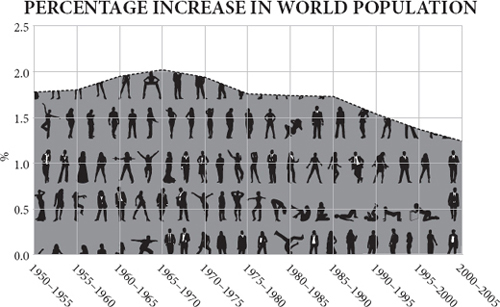
Since human beings are just another kind of animal, the story of population should be a simple one. Give us more food and we will have more babies until we reach the density at which starvation, predators and parasites crash the system. In some episodes of human history something like this has indeed happened. Yet often, after the crash, population density settles at a higher level than before. The subsistence level keeps on rising, erratically, but inexorably. In terms of power and relative wealth, modern Egypt may be a shadow of its pharaonic self, but it is much more heavily populated today than it was in Ramses II’s day.
由于人类只是另一种动物，人口的故事应该是一个简单的故事。给我们更多的食物，我们就会有更多的婴儿，直到我们达到饥饿、捕食者和寄生虫使系统崩溃的密度。在人类历史上的一些事件中，确实发生过类似的情况。然而，在崩溃之后，人口密度往往会稳定在一个比以前更高的水平。生存水平不断上升，不稳定，但不可阻挡。就权力和相对财富而言，现代埃及可能是其法老时代的一个影子，但它今天的人口密度比拉美西斯二世时代要高得多。
There is another odd feature. On the way up the graph, abundant food encourages some people to specialise in something other than growing or catching food, while others produce food for sale not for self-sufficiency. The division of labour increases. But when the food supply becomes tight, near the top of the graph, fewer people will be prepared to sell their food or will have a surplus to sell. They will feed it to their families and make do without the goods they were wont to buy from others. The non-farmers, finding both food and customers for their services harder to come by, will have to give up their jobs and return to growing their own food themselves. So there is a cycle of rising and falling specialisation in human populations. The economist Vernon Smith, in his memoirs, recalls how in the Depression his family moved in the 1930s from Wichita, Kansas, to a farm when his father was laid off as a machinist, because ‘we could at least grow most of our own food and participate in a subsistence economy.’ This return to subsistence happens often in human history.
还有一个奇怪的特点。在图表的上升过程中，丰富的食物鼓励一些人专门从事种植或捕捞食物以外的工作，而另一些人则生产食物用于销售，而不是用于自给自足。劳动分工增加。但是，当食物供应变得紧张时，在图的顶部附近，准备出售食物或有剩余食物的人就会减少。他们将把食物喂给自己的家人，并在没有从他人那里购买商品的情况下，继续生活。非农民发现食物和服务的客户都更难得到，将不得不放弃工作，回到自己种植食物。因此，人类的专业化程度有一个上升和下降的循环。经济学家弗农·史密斯（Vernon Smith）在他的回忆录中回忆说，在大萧条时期，他的家人在 1930 年代从堪萨斯州的威奇托搬到了一个农场，当时他的父亲作为一名机械师被解雇了，因为 “我们至少可以自己种植大部分食物，参与自给自足的经济。” 这种回归自给自足的情况在人类历史上经常发生。
In the animal world, this is unique. In no animal species do individuals become more specialised as population is rising, nor less specialised as population is stalling or falling. In fact, the whole notion of specialised individuals is rare outside the human race, and where specialisation does happen – in ants, for example – it does not wax and wane in this way.
在动物世界中，这是很独特的。在任何动物物种中，个体都不会随着人口的增加而变得更加专业化，也不会随着人口的停滞或减少而变得更加专业化。事实上，专门化个体的整个概念在人类之外是罕见的，而且在专门化确实发生的情况下 —— 例如在蚂蚁中 —— 它也不会以这种方式消长变化。
This suggests that good old-fashioned Malthusian population limitation does not really apply to human beings, because of their habit of exchange and specialisation. That is to say, instead of dying from famine and pestilence when too numerous for their food supply, people can increase their specialisation, which allows more to subsist on the available resources. On the other hand, if exchange becomes harder, they will reduce their specialisation, which can lead to a population crisis even without an increase in population. The Malthusian crisis comes not as a result of population growth directly, but because of decreasing specialisation. Increasing self-sufficiency is the very signature of a civilisation under stress, the definition of a falling standard of living. Until 1800 this was how every economic boom ended: with a partial return to self-sufficiency driven by predation by elites, or diminishing returns from agriculture. It is hard to be sure given the patchy information that this is what happened to Mesopotamia and Egypt after 1500 BC, or India and Rome after AD 500, but it is pretty clear that it happened to China and to Japan in later centuries. As Greg Clark puts it, ‘In the preindustrial world, sporadic technological advance produced people, not wealth.’
这表明，老式的马尔萨斯人口限制并不真正适用于人类，因为他们有交换和专业化的习惯。也就是说，人们可以提高他们的专业化程度，从而使更多的人能够依靠现有的资源生存下去，而不是在食物供应过剩时死于饥荒和瘟疫。另一方面，如果交换变得更加困难，他们将减少他们的专业化，这可能导致人口危机，即使没有人口的增加。马尔萨斯危机的出现不是因为人口增长的直接结果，而是因为专业化程度的下降。越来越多的自给自足是一个处于压力之下的文明的标志，是生活水平下降的定义。在 1800 年之前，每一次经济繁荣都是这样结束的：在精英阶层的掠夺下，或在农业收益减少的情况下，部分恢复了自给自足。由于资料不全，很难确定公元前 1500 年后的美索不达米亚和埃及，或公元 500 年后的印度和罗马是否发生了这种情况，但相当清楚的是，在后来的几个世纪中，中国和日本都发生了这种情况。正如格雷格·克拉克（Greg Clark）所说，“在前工业化世界，零星的技术进步产生了人，而不是财富。”
The medieval collapse
中世纪的崩溃
Robert Malthus and David Ricardo, though they were good friends, disagreed on much. But in one respect they were entirely aligned – that unchecked population could drive down the standard of living.
罗伯特·马尔萨斯（Robert Malthus）和大卫·李嘉图（David Ricardo）虽然是好朋友，但在很多方面有分歧。但在一个方面他们是完全一致的 —— 无节制的人口会使生活水平下降。
Malthus: ‘In some countries, the population appears to have been forced, that is, the people have been habituated by degrees to live upon the smallest possible quantity of food ... China seems to answer this description.’
马尔萨斯：“在一些国家，人口似乎是被迫的，也就是说，人们已经逐渐习惯于靠尽可能少的食物生活…… 中国似乎就符合这种描述。”
Ricardo: ‘The land being limited in quantity, and differing in quality, with every increased portion of capital employed on it there will be a decreased rate of production.’
李嘉图：“土地在数量上是有限的，在质量上是不同的，在土地上所使用的资本每增加一部分，生产的速度就会下降。”
At first glance, medieval England furnishes a tidy example of such diminishing returns. The thirteenth century, a time of mild weather across Europe, saw a prolonged expansion of the population, which then crashed in the following century as the weather deteriorated. The 1200s were the golden high-water mark of the Middle Ages. Courts were richly furnished; monasteries flourished; cathedrals rose towards the sky; troubadours strutted their stuff. Watermills, windmills, bridges and ports were built all over England. Fairs and markets proliferated and thrived: there was an unprecedented surge in commercial activity between 1150 and 1300. A good part of it was driven by the wool trade. As Flemish merchants sought out more and more English wool to supply the cloth makers of Flanders, so they provided livelihoods for ship owners, fullers and above all sheep farmers. The national sheep flock boomed to perhaps ten million animals, more than two sheep per person. The English had found a comparative advantage in their mild, wet, grass-growing climate – a gain from trade – supplying Europe’s fibre. Specialisation and exchange fuelled population growth.
乍一看，中世纪的英格兰为这种收益递减提供了一个完整的例子。13 世纪是整个欧洲气候温和的时期，人口长期扩张，但随着天气的恶化，人口在下个世纪崩溃。12 世纪是中世纪的黄金高水位线。宫廷家具丰富，修道院繁荣，大教堂高耸入云，游吟诗人大展身手。水磨、风车、桥梁和港口在英格兰各地建成。集市和市场大量涌现并蓬勃发展：在 1150 年至 1300 年间，商业活动出现了前所未有的激增。其中很大一部分是由羊毛贸易推动的。由于弗拉芒商人寻找越来越多的英国羊毛来供应弗拉芒的制衣商，因此他们为船主、装卸工以及最重要的养羊人提供了生计。全国羊群蓬勃发展，可能达到 1000 万只，每人超过两只羊。英国人在其温和、湿润、长草的气候中找到了比较优势 —— 这是贸易的收益 —— 为欧洲提供纤维。专业化和交换促进了人口增长。
For example, in 1225, of the 124 people assessed for a survey in the Wiltshire village of Damerham, fifty-nine owned sheep, with a combined flock of 1,259 animals. That meant they sold wool for cash rather than strove for self-sufficiency. They presumably used that cash to buy bread from the baker who bought flour from the miller, who bought grain from other farmers, who therefore got cash too. Instead of self-sufficiency, everybody was now in the market and had disposable income. People wanted to travel to the market in nearby Salisbury to buy things: so the carter was doing well, too, and the merchants in Salisbury. In 1258 a spectacular cathedral began to take shape in Salisbury, on the back of the wool boom, because the Church was coining it in tithes and taxes. Put yourself in the shoes of a grain farmer in Damerham. The miller wants all you can grow, so you encourage both your sons to marry early and rent a few acres off you. The carter, the miller, the baker, the merchant and the shepherds are all doing the same: setting their children up in business. Family formation – which had always been as much an economic as a biological decision – increased markedly in the thirteenth century. The consequence of all this early and frequent marriage was fecundity. In the thirteenth century the population of England seems to have doubled, from over two million to something like five million people.
例如，1225 年，在威尔特郡达默罕村进行调查的 124 人中，有 59 人拥有羊群，总共有 1259 只羊。这意味着他们出售羊毛换取现金，而不是努力实现自给自足。他们可能用这些现金从面包师那里购买面包，而面包师又从磨坊主那里购买面粉，磨坊主又从其他农民那里购买粮食，因此他们也得到了现金。与其说是自给自足，不如说现在每个人都在市场上，有可支配的收入。人们想去附近的索尔兹伯里的市场买东西：所以车夫和索尔兹伯里的商人们也做得不错。1258 年，一座壮观的大教堂开始在索尔兹伯里成形，在羊毛繁荣的背景下，因为教会在什一税和税收方面为其创造了财富。设身处地地为达默尔姆的谷物农民着想。磨坊主想要你种植的所有粮食，所以你鼓励你的两个儿子早点结婚，从你那里租几亩地。车夫、磨坊主、面包师、商人和牧羊人都在做同样的事情：让他们的孩子做生意。家庭的形成 —— 一直以来都是一种经济决定，也是一种生物决定 —— 在 13 世纪明显增加。所有这些早期和频繁的婚姻的后果是生育能力的提高。在 13 世纪，英格兰的人口似乎增加了一倍，从 200 多万增加到大约 500 万。
Inevitably, and gradually, the population boom overtook the economy’s productivity. Rents inflated and wages deflated: the rich were bidding up land prices while the poor were bidding down wages. By 1315 real wages had halved in a century, although because of family formation, family income was probably not falling as fast as individual wages. For example, a miller in Feering in Essex in the 1290s agreed to halve his wage when his employer took on another employee. Chances are the new employee was the miller’s son and they were simply sharing the same income within the family. None the less, as pay packets shrank, demand for the goods supplied by merchants must have begun to stall. To feed the growing population, marginal land was being ploughed, and was yielding fewer and fewer grains for each grain sown. Diminishing returns dominated. Predatory priests and chiefs did not help.
不可避免地，而且是逐渐地，人口的繁荣超过了经济的生产力。房租膨胀，工资缩水：富人竞相抬高土地价格，而穷人则竞相降低工资。到 1315 年，实际工资在一个世纪内减少了一半，尽管由于家庭的形成，家庭收入可能没有像个人工资那样快速下降。例如，在 1290 年代，埃塞克斯郡费林的一个磨坊主同意在他的雇主雇用另一个雇员时将其工资减半。这名新雇员很可能是磨坊主的儿子，他们只是在家庭中分享相同的收入。尽管如此，随着工资包的缩减，对商人提供的货物的需求肯定开始停滞。为了养活不断增长的人口，边缘土地被耕种，每播种一粒粮食，产出的粮食就越来越少。收益递减成为主流。掠夺性的祭司和酋长们也无能为力。
Before long hunger was a real risk. It came suddenly in the sodden summers of 1315 and 1317, when wheat yields more than halved all across the north of Europe. The crops rotted in the fields; some people were forced to eat their own seed corn. Mothers abandoned their babies. There were rumours of fresh corpses of criminals pulled from gallows for food. In the years that followed, with continuing poor harvests and unusually cold winters, a fatal murrain spread among hungry oxen, and that left some land unploughed, further exacerbating the food shortage. The population then stagnated for three decades until the Black Death arrived in the 1340s and caused a crash in human numbers. The plague returned in the 1360s, followed by more bad harvests and more plague outbreaks. By 1450, the population of England had been reduced to roughly where it had been in 1200.
不久之后，饥饿成为一种真正的风险。在 1315 年和 1317 年的潮湿的夏天，饥饿突然来临，当时整个欧洲北部的小麦产量减少了一半以上。庄稼在田里腐烂了；一些人被迫吃自己的玉米种子。母亲们抛弃了她们的孩子。有传言说，从绞刑架上拉下来的罪犯的新鲜尸体被当作食物。在随后的几年里，由于持续的歉收和异常寒冷的冬天，一场致命的鼠疫在饥饿的牛群中蔓延，这使得一些土地无法耕种，进一步加剧了粮食短缺的情况。然后，人口停滞了三十年，直到黑死病在 1340 年代到来，造成人口数量的崩溃。瘟疫在 1360 年代卷土重来，随后是更多的坏收成和更多的瘟疫爆发。到 1450 年，英格兰的人口已经减少到 1200 年时的大致水平。
Yet neither the boom of the thirteenth century, nor the bust of the fourteenth, can be described in simplistic Ricardian and Malthusian terms. The carrying capacity of the land was not much increased in the first period by Ricardian technological change, nor much diminished in the second by Malthusian falls in yield. What changed was the economy’s, rather than the land’s, capacity to support so many people. After all, the Black Death was not caused by overpopulation, but by a bacterium. Ironically, the plague may have been one of the sparks that lit the Renaissance, because the shortage of labour shifted income from rents to wages as landlords struggled to find both tenants and employees. With rising wages, some of the surviving peasantry could once more just afford the oriental luxuries and fine cloth that Lombard and Hanseatic merchants supplied. There was a rash of financial innovation: bills of credit to solve the problem of how to pay for goods without transporting silver through bandit country, double-entry book-keeping, insurance. Italian bankers began to appear all across the continent, financing kings and their wars, sometimes at a profit, sometimes at a disastrous loss. The wealth that the Italian trading towns had generated soon found its way into scholarship, art or science, or in the case of Leonardo da Vinci, all three. Per capita income in England was probably higher in 1450 than it would be again before 1820.
然而，无论是 13 世纪的繁荣，还是 14 世纪的萧条，都不能用简单的李嘉图和马尔萨斯的术语来描述。在第一个时期，土地的承载能力并没有因为李嘉图式的技术变革而大大增加，在第二个时期也没有因为马尔萨斯式的产量下降而大大减少。改变的是经济的能力，而不是土地的能力，以支持这么多的人。毕竟，黑死病不是由人口过剩引起的，而是由一种细菌引起的。具有讽刺意味的是，瘟疫可能是点燃文艺复兴的火花之一，因为劳动力的短缺将收入从租金转移到了工资上，因为地主们在努力寻找租户和雇员。随着工资的提高，一些幸存的农民再次能够负担起伦巴第和汉萨商人提供的东方奢侈品和精美的布料。金融创新风起云涌：信用证解决了如何在不通过强盗国家运输银子的情况下支付货物的问题，复式记账法，保险。意大利银行家开始出现在整个欧洲大陆，为国王和他们的战争提供资金，有时获利，有时损失惨重。意大利贸易城镇创造的财富很快就进入了学术、艺术或科学领域，或者在达芬奇的例子中，这三者都有。1450 年英国的人均收入可能比 1820 年之前还要高。
The point is this. In 1300, Europe was probably on a trajectory towards a labour-intensive ‘industrious’ revolution of diminishing returns. Remember the miller of Feering who halved his wage by sharing his job with his son in the 1290s? Or consider the women who were paid half what their menfolk earned when they carried water (for making mortar) to the site of a new windmill being constructed at Dover Castle in 1294. No doubt they were delighted to have a job and earn a little cash, but they came so cheap they provided their employer with an incentive not to buy a cart and bullock. Yet by 1400, Europe had partly switched to a labour-saving ‘industrial’ trajectory instead, and the pattern was repeated after the cold and brutal seventeenth century, when famine, plague and war once more reduced the European population: in 1692–4, perhaps 15 per cent of all French people starved to death. Unlike Mesopotamia, Egypt, India, Mexico, Peru, China and Rome, early modern Europe became capital-intensive, not labour-intensive. That capital was used to get work out of animals, rivers and breezes, rather than people. Europe was, in Joel Mokyr’s words, ‘the first society to build an economy on non-human power rather than on the backs of slaves and coolies’.
问题是这样的。在 1300 年，欧洲可能正朝着劳动密集型的 “勤劳” 革命的轨迹发展，回报率不断下降。还记得 12 世纪 90 年代，费林的磨坊主通过与他的儿子分担工作，将他的工资减半吗？或者想想那些妇女，她们在 1294 年为多佛尔城堡建造的新风车工地上运水（用于制造灰浆）时，得到的报酬是她们男人的一半。毫无疑问，她们很高兴能有一份工作并赚到一点钱，但她们的工资太低了，这也为她们的雇主提供了一个不买车和牛的动力。然而，到了 1400 年，欧洲已经部分地转向了节省劳动力的 “工业” 轨道，这种模式在寒冷而残酷的 17 世纪之后再次出现，当时饥荒、瘟疫和战争再次减少了欧洲人口：在 1692-4 年，所有法国人中可能有 15% 饿死。与美索不达米亚、埃及、印度、墨西哥、秘鲁、中国和罗马不同，现代早期的欧洲成为资本密集型，而不是劳动密集型。这些资本被用来从动物、河流和微风中获得工作，而不是人。用乔尔-莫克尔（Joel Mokyr）的话说，欧洲是 “第一个将经济建立在非人力上而不是奴隶和苦力背上的社会”。
The industrious revolution
勤劳的革命
To imagine what would have happened to Europe without the Black Death, consider the case of Japan in the eighteenth century. In the 1600s Japan was a relatively prosperous and sophisticated country with a population the size of France and Spain combined, and a strong manufacturing industry, especially in paper products, cotton textiles and weapons – much of them for export. In 1592, the Japanese had conquered Korea carrying tens of thousands of home-made arquebuses copied from Portuguese designs. Japan was none the less mainly an agrarian economy with plentiful herds of sheep and goats, lots of pigs, some cattle and oxen and quite a few horses. The plough was in common use, both ox-drawn and horse-drawn.
为了想象如果没有黑死病，欧洲会发生什么，请考虑 18 世纪的日本的情况。在 16 世纪，日本是一个相对繁荣和先进的国家，其人口规模相当于法国和西班牙的总和，并拥有强大的制造业，特别是纸制品、棉纺织品和武器 —— 其中大部分用于出口。1592 年，日本人携带着数以万计的仿照葡萄牙设计的自制箭筒征服了朝鲜。尽管如此，日本主要是农业经济，有大量的绵羊和山羊，大量的猪，一些牛羊，以及相当多的马。犁被普遍使用，有牛拉的也有马拉的。
By the 1800s, domestic farm animals had virtually disappeared. Sheep and goats were almost unknown, horses and cattle were very rare and even pigs were few in number. As the traveller Isabella Bird remarked in 1880, ‘As animals are not used for milk, draught or food and there are no pasture lands, both the country and the farm-yards have a singular silence and an inanimate look.’ Carriages, carts (and even wheelbarrows) were scarce. Instead the power needed for transport came from human beings carrying goods hung from poles on their shoulders and racks on their backs. Watermills, though the technology had been known for a long time, were little used; rice was threshed and ground by hand querns or stone-weighted trip hammers, powered by treadle. Human rice pounders could be heard toiling away, naked behind a curtain, for hours at a time, even in cities like Tokyo; the irrigation pumps needed for the rice fields were often driven by pedalling coolies. Above all, the plough was now virtually unknown in the entire country. Fields were cultivated by men and women with hoes. Where Europeans used animal, water and wind power, the Japanese did the work themselves.
到了 19 世纪，国内的农场动物几乎消失了。绵羊和山羊几乎不存在，马和牛非常罕见，甚至猪的数量也很少。正如旅行者伊莎贝拉·伯德（Isabella Bird）在 1880 年所说的那样，“由于动物不用于产奶、吃水或食物，也没有牧场，乡村和农场的院子都有一种奇异的寂静和无生命的感觉。” 马车、小车（甚至手推车）都很稀少。相反，运输所需的动力来自于人类携带的货物，这些货物挂在肩上的杆子和背上的架子上。尽管水磨技术早已为人所知，但却很少使用；稻谷的脱粒和研磨由手摇筛子或石质重量的绊脚锤进行，由踏板提供动力。即使在东京这样的城市，也能听到舂米工赤身裸体地在幕布后劳作数小时；稻田所需的灌溉泵通常由蹬车的苦力驱动。最重要的是，现在在整个国家几乎没有犁。田地由男人和女人用锄头耕种。在欧洲人使用动物、水和风力的地方，日本人用自己的人功。
What seems to have happened is that some time between 1700 and 1800, the Japanese collectively gave up the plough in favour of the hoe because people were cheaper to hire than draught animals. This was a time of rapid population expansion, made possible by the high productivity of paddy rice, naturally fertilised by nitrogen-fixing cyanobacteria in the water and therefore needing little manure (though human night soil was assiduously collected, carefully stored and diligently applied to the land). With abundant food and a fastidious approach to hygiene, the Japanese population boomed to the point where land was scarce, labour was cheap and it was literally more economic to use human labour to hoe the land than to set aside precious acres for pasture to support oxen or horses to draw a plough. So the Japanese, to a spectacular extent, retreated from technology and trade and reduced their demands on merchants as they became more self-sufficient. The market for technology of all kinds atrophied. They even gave up capital-intensive guns in favour of labour-intensive swords. A good Japanese sword had a blade of strong though soft steel, but with a brittle, hard edge made lethally sharp by incessant hammering.
似乎发生的情况是，在 1700 年和 1800 年之间的某个时候，日本人集体放弃了犁，转而使用锄头，因为雇佣人比雇佣牲畜要便宜。这是一个人口迅速扩张的时代，水稻的高生产力使之成为可能，水稻由水中的固氮蓝藻自然施肥，因此几乎不需要粪便（尽管人类夜里的土壤被辛勤地收集、仔细地储存并勤奋地应用于土地）。有了丰富的食物和对卫生的严格要求，日本人口激增到了土地稀缺、劳动力廉价的地步，用人力锄地简直比留出宝贵的几亩草场来养牛或马拉犁更经济。因此，日本人，在一个惊人的程度上，从技术和贸易中撤退，并在他们变得更加自给自足时减少对商人的需求。各种技术的市场都萎缩了。他们甚至放弃了资本密集型的枪支，而选择了劳动密集型的刀剑。一把好的日本刀的刀身虽然是软的，但却有一个脆而硬的边缘，通过不断的锤击而变得致命的锋利。
Europe probably came close to going down the same path as Japan in the eighteenth century. Just as in the thirteenth century, the European population boomed in the 1700s, helped by wealth generated by local and oriental trade and agricultural improvements. New crops like the potato, though often treated with suspicion when urged on the populace by rulers (Marie-Antoinette’s wearing of potato flowers put the French off eating them for decades), allowed the population of some countries such as Ireland to boom. Potatoes could be grown using a spade rather than a plough, and their fantastic productivity – more than thrice the calories per acre of wheat or rye – and high nutrient content encouraged a very dense population. An Irish acre in 1840 could yield six tonnes of potatoes, almost as much food as an acre of rice paddy in the Yangtze delta. (Sir William Petty, lamenting the idleness of the Irish in 1691, blamed the potato: ‘What need have they of work, who can content themselves with potato’s [sic], whereof the labour of one man can feed Forty?’ Adam Smith begged to differ, crediting the potato for London having the ‘strongest men and the most beautiful women perhaps in the British dominions’.) At the time, an English worker needed twenty acres to grow his bread and cheese. The subsistence farmers of Ireland, even into the 1800s, were not only dependent mainly on their own muscle power for cultivation and transport, but were ‘out of the market’, consuming very few manufactured goods for lack of disposable income. (Rapacious English landlords did not help.) As the size of each family potato plot shrank, Ireland was a Malthusian disaster waiting to happen even before the Phytophthora famine of 1845 killed a million people and drove a million more to America. In the Scottish Highlands too, the population boom of the 1700s caused a retreat to subsistence, or crofting as it was known there. Only a vast ‘clearance’ and emigration to America and Australia, highly coerced and highly resented to this day, relieved the Malthusian pressure.
欧洲在十八世纪可能接近于走上与日本相同的道路。正如在 13 世纪一样，在当地和东方贸易以及农业改进所产生的财富的帮助下，欧洲人口在 1700 年代蓬勃发展。像马铃薯这样的新作物，虽然在统治者敦促民众种植时常常受到怀疑（玛丽·安托瓦内特佩戴马铃薯花使法国人几十年来都不愿意吃马铃薯），但却使爱尔兰等一些国家的人口迅速增长。马铃薯可以用铲子而不是犁来种植，其惊人的生产力（每英亩的热量是小麦或黑麦的三倍以上）和高营养含量促使人口非常密集。1840 年，爱尔兰的一英亩土地可以生产 6 吨马铃薯，几乎与长江三角洲的一英亩稻田的粮食一样多。威廉·佩蒂爵士在 1691 年感叹爱尔兰人无所事事时指责马铃薯：“他们有什么必要工作，他们可以用马铃薯（原文如此）来满足自己，而一个人的劳动可以养活四十个人？” 亚当·斯密对此不敢苟同，他认为伦敦之所以拥有 “也许是大英帝国中最强壮的男人和最美丽的女人，是因为马铃薯。” 在当时，一个英国工人需要 20 英亩土地来种植他的面包和奶酪。爱尔兰的自给自足的农民，即使到了 19 世纪，也不仅主要依靠自己的肌肉力量进行耕种和运输，而且由于缺乏可支配的收入而 “脱离了市场”，消费很少的制成品。（贪婪的英国地主也无济于事。）随着每个家庭土豆地面积的缩小，爱尔兰成为一场等待发生的马尔萨斯灾难，甚至在 1845 年的植物性饥荒造成一百万人死亡并将另外一百万人驱赶到美国之前。在苏格兰高地，17 世纪的人口激增也导致了自给自足的退缩，或者说是那里所称的耕作。只有大规模的 “清除” 和向美国和澳大利亚的移民（至今仍受到高度胁迫和高度反感）才缓解了马尔萨斯的压力。
Denmark followed Japan’s path, too, for a while. The Danes responded to increasing ecological constraints in the eighteenth century by intensifying their agricultural labour. They banned cattle from forests to protect the supply of future fuel, which increased the price of manure. To maintain the fertility of their soil, they worked extraordinarily hard at ditching, clover growing and marling (laboriously digging up and spreading lime and clay subsoil to neutralise and release nutrients from sandy or acid soils). Hours of work increased by more than 50 per cent. By the 1800s, Denmark had become a country that was trapped by its own self-sufficiency. Its people were so busy farming that none could be spared for other industries and few could afford to consume manufactured products. Living standards stagnated, admittedly at a relatively decent level. Eventually in the late nineteenth century the industrialisation of its neighbours then created a market for Danish agricultural exports and these could slowly raise the living standards of Danes.
丹麦也曾一度走过日本的道路。十八世纪，丹麦人通过加强农业劳动来应对日益严重的生态约束。他们禁止牛进入森林以保护未来的燃料供应，这增加了粪便的价格。为了保持土壤的肥力，他们在开沟、种植三叶草和马林（费力地挖出并撒上石灰和粘土，以中和并释放沙质或酸性土壤中的养分）方面的工作异常辛苦。工作时间增加了 50% 以上。到 19 世纪，丹麦已经成为一个被自己的自给自足所困的国家。丹麦人忙于耕作，以至于没有人能够抽出时间来从事其他行业，也没有人能够消费得起制成品。生活水平停滞不前，当然是在一个相对体面的水平上。最终在 19 世纪末，邻国的工业化为丹麦的农产品出口创造了一个市场，这些农产品可以慢慢提高丹麦人的生活水平。
British exceptionalism
英国例外主义
It was Britain’s fate to escape the quasi-Malthusian trap into which Japan, Ireland and Denmark fell. The reasons are many and debatable, but here it is worth noting a surprising demographic factor. Britain, more than any other country, had unintentionally prepared itself for industrial life in an elemental, human way. For centuries – leaving out the aristocrats (who left fewer heirs because they died from falling off horses) – the relatively rich had more children than the relatively poor. On average a merchant in Britain who left £1,000 in his will had four surviving children, while a labourer who left £10 had only two – this was in around 1600, but the differential was similar at other dates. Such differential reproduction happened in China, too, but to a much lesser extent. Because there was little or no increase in the standard of living between 1200 and 1700, this overbreeding by the rich meant there was constant downward mobility. Gregory Clark has shown from legal records that rare surnames of the poor survived much less well than rare surnames of the rich.
英国的命运是逃离了日本、爱尔兰和丹麦所陷入的准马尔萨斯陷阱。原因很多，值得商榷，但这里值得注意的是一个令人惊讶的人口因素。英国比其他任何国家都更无意地以一种基本的、人性化的方式为工业生活做好准备。几个世纪以来 —— 撇开贵族（他们留下的继承人较少，因为他们死于坠马） —— 相对富裕的人比相对贫穷的人有更多的孩子。在英国，一个在遗嘱中留下 1000 英镑的商人平均有四个存活的孩子，而一个留下 10 英镑的工人只有两个 —— 这是在 1600 年左右，但在其他日期的差异是相似的。这种不同的繁殖方式也发生在中国，但程度要小得多。由于在 1200 年至 1700 年期间，生活水平几乎没有提高，富人的这种过度繁殖意味着不断有向下的流动。格雷戈里·克拉克（Gregory Clark）从法律记录中发现，穷人的稀有姓氏比富人的稀有姓氏存活率低得多。
By 1700, therefore, in Britain most of the poor were actually the descendants of the rich. They had perhaps carried down with them into the working classes many of the habits and customs of the rich: literacy, for example, numeracy and perhaps industriousness or financial prudence. This theory accounts especially well for the otherwise puzzling rise in literacy during the early modern period. It may also account for the steady decline in violence. Your chances of being a victim of homicide in England fell from 0.3 per thousand in 1250 to 0.02 per thousand in 1800: you were ten times more likely to be killed in the earlier period.
因此，到 1700 年，在英国，大多数穷人实际上是富人的后代。他们也许把富人的许多习惯和风俗带到了工人阶级：例如，识字、算术，也许还有勤劳或财务上的谨慎。这一理论尤其说明了现代早期识字率的上升是令人费解的。它也可以解释暴力的稳步下降。在英格兰，你成为凶杀案受害者的机会从 1250 年的千分之 0.3 下降到 1800 年的千分之 0.02：在早期，你被杀的可能性要大十倍。
Fascinating as this demographic discovery is, it cannot fully explain the industrial revolution. The same was not nearly as true of Holland in its golden age; and it would, for example, struggle to explain China’s rapid and successful industrialisation after 1980 – in the wake of a policy of deliberate murder and humiliation of the literate and the bourgeois in the Cultural Revolution.
尽管这一人口学发现很吸引人，但它不能完全解释工业革命。荷兰在其黄金时代也并非如此；例如，它也很难解释中国在 1980 年后的快速和成功的工业化 —— 在文化大革命中蓄意谋杀和羞辱文人和资产阶级的政策之后。
What Europe achieved after 1750 – uniquely, precariously, unexpectedly – was an increasing division of labour that meant that each person could produce more each year and therefore could consume more each year, which created the demand for still more production. Two things, says the historian Kenneth Pomeranz, were vital to Europe’s achievement: coal and America. The ultimate reason that the British economic take-off kept on going where the Chinese – or for that matter, the Dutch, Italian, Arab, Roman, Mauryan, Phoenician or Mesopotamian – did not was because the British escaped the Malthusian fate. The acres they needed to provide themselves with corn, cotton, sugar, tea and fuel just kept on materialising elsewhere. Here are Pomeranz’s numbers: in around 1830, Britain had seventeen million acres of arable land, twenty-five million acres of pastureland and less than two million acres of forest. But she consumed sugar from the West Indies equivalent (in calories) to the produce of at least another two million acres of wheat; timber from Canada equivalent to another one million acres of woodland, cotton from the Americas equivalent to the wool produced on an astonishing twenty-three million acres of pastureland, and coal from underground equivalent to fifteen million acres of forest. Without these vast ‘ghost acres’ Britain’s industrial revolution, which was only just starting to raise living standards in 1830, would have already shuddered to a halt for lack of calories, cotton or coal.
欧洲在 1750 年后取得的成就 —— 独特的、不稳定的、出乎意料的 —— 是劳动分工的不断加强，这意味着每个人每年可以生产更多的产品，因此每年可以消费更多的产品，这创造了对更多产品的需求。历史学家肯尼斯·波梅兰兹（Kenneth Pomeranz）说，有两件事对欧洲的成就至关重要：煤炭和美国。英国的经济起飞一直在进行，而中国人 —— 或者荷兰人、意大利人、阿拉伯人、罗马人、毛利人、腓尼基人或美索不达米亚人 —— 却没有这样做，其最终原因是英国人逃脱了马尔萨斯的命运。他们为自己提供玉米、棉花、糖、茶叶和燃料所需的土地不断地在其他地方出现。以下是波梅兰兹的数字：1830 年左右，英国有 1700 万英亩的可耕地，2500 万英亩的牧场和不到 200 万英亩的森林。但她消费的西印度群岛的糖，相当于至少另外 200 万英亩小麦的产量；加拿大的木材相当于另外 100 万英亩林地，美洲的棉花相当于惊人的 2300 万英亩牧场的羊毛产量，地下的煤相当于 1500 万英亩的森林。如果没有这些巨大的 “幽灵土地”，英国的工业革命，在 1830 年才刚刚开始提高生活水平，就已经因为缺乏热量、棉花或煤炭而颤抖着停了下来。
Not only did the Americas ship back their produce; they also allowed a safety valve for emigration to relieve the Malthusian pressure of the population boom induced by industrialisation. Germany, in particular, as it industrialised rapidly in the nineteenth century, saw a huge increase in the birth rate, but a flood of emigrants to the United States prevented the division of land among multiple heirs and the return to poverty and self-sufficiency that had afflicted Japan two centuries before.
美洲不仅运回了他们的产品，还为移民提供了一个安全阀，以缓解工业化引起的人口激增所带来的马尔萨斯压力。特别是德国，随着它在 19 世纪的快速工业化，出生率出现了巨大的增长，但大量移民到美国，防止了土地在多个继承人之间的分割，以及恢复到两个世纪前困扰日本的贫困和自给自足。
When Asia experienced a population boom in the early twentieth century, it had no such emigration safety valve. In fact, Western countries firmly and deliberately closed the door, terrified by the ‘yellow peril’ that might otherwise head their way. The result was a typical Malthusian increase in self-sufficiency. By 1950 China and India were bursting with the self-sufficient agrarian poor.
当亚洲在 20 世纪初经历了一次人口激增时，它没有这样的移民安全阀。事实上，西方国家坚定而故意地关上了大门，因为他们对可能出现的 “黄色危险” 感到恐惧。其结果是典型的马尔萨斯式的自给自足的增长。到 1950 年，中国和印度的自给自足的农业穷人已经爆满。
The demographic transition
人口结构转型
It is hard now to recall just how coercive were the population policies urged by experts in the mid-twentieth century. When President Lyndon Johnson’s adviser Joseph Califano suggested that an increase in famine relief should be announced before a visit by Indira Gandhi to the United States, Johnson supposedly replied that he was not going to ‘piss away foreign aid in nations where they refuse to deal with their own population problems’. Garrett Hardin, in his famous essay ‘The Tragedy of the Commons’ (remembered these days as being about collective action, but actually a long argument for coerced population control), found ‘freedom to breed intolerable’, coercion ‘a necessity’ and that ‘the only way we can preserve and nurture other and more precious freedoms is by relinquishing the freedom to breed, and that very soon.’ Hardin’s view was nearly universal. ‘Adding a sterilant to drinking water or staple foods is a suggestion that seems to horrify people more than most proposals for involuntary fertility control,’ wrote John Holdren (now President Obama’s science adviser) and Paul and Anne Ehrlich in 1977, but not to worry: ‘It has been concluded that compulsory population-control laws, even including laws requiring compulsory abortion, could be sustained under the existing Constitution if the population crisis became sufficiently severe to endanger the society.’ All right-thinking people agreed, as they so often do, that top-down government action was needed: people must be ordered or at least bribed to accept sterilisation and punished for refusing it.
现在很难回忆起 20 世纪中期专家们所敦促的人口政策是多么具有强制性。当林登·约翰逊(Lyndon Johnson)总统的顾问约瑟夫·卡利法诺(Joseph Califano)建议在英迪拉·甘地(Indira Gandhi)访问美国之前宣布增加饥荒救济时，据说约翰逊回答说，他不会 “在那些拒绝处理自己人口问题的国家中浪费外国援助”。加勒特·哈丁(Garrett Hardin)在其著名的《公地的悲剧》一文中（现在人们记得是关于集体行动的，但实际上是对强制人口控制的长篇论证），认为 “繁殖的自由是不可容忍的”，强制是 “必要的”，“我们能够保护和培育其他更宝贵的自由的唯一途径是放弃繁殖的自由，而且是很快放弃。” 哈丁的观点几乎是普遍的。1977 年，约翰·霍尔德伦（John Holdren，现在是奥巴马总统的科学顾问）和保罗·埃利希夫妇（Paul and Anne Ehrlich）写道：“在饮用水或主食中添加不育剂，这个建议似乎比大多数非自愿生育控制的建议更让人惊恐…… 但不用担心，因为已经得出结论，如果人口危机变得足够严重，危及社会，强制性的人口控制法律，甚至包括要求强制堕胎的法律，在现有宪法下都可以维持。” 所有有思想的人都同意，就像他们经常做的那样，需要自上而下的政府行动：必须命令或至少贿赂人们接受绝育手术，并对拒绝接受的人进行惩罚。
Which is exactly what happened. Egged on by Western governments and pressure groups such as the International Planned Parenthood Foundation, coerced sterilisation became a pattern in many parts of Asia in the 1970s. ‘Dalkon Shield’ contraceptive devices, the subject of safety lawsuits in America, were bought in bulk by the American federal government and shipped to Asia. Chinese women were forcibly taken from their homes to be sterilised. Cheered on by Robert McNamara’s World Bank, Sanjay Gandhi, the son of the Indian prime minister, ran a vast campaign of rewards and coercion to force eight million poor Indians to accept vasectomies. In one episode, recounted by the historian Matthew Connelly, the village of Uttawar was surrounded by police and every eligible male sterilised. In response, a crowd gathered to defend the nearby village of Pipli, but police fired on the crowd, killing four people. A government official was unapologetic. In this war against ‘people pollution’, force was justified: ‘if some excesses appear, don’t blame me ... Whether you like it or not, there will be a few dead people.’ Eventually Sanjay Gandhi’s policies proved so unpopular that his mother lost an election by a landslide in 1977, and family planning was treated with deep suspicion for many years thereafter.
这正是所发生的事情。在西方政府和国际计划生育基金会等压力集团的怂恿下，1970 年代，强迫绝育在亚洲许多地方成为一种模式。在美国引起安全诉讼的 “Dalkon Shield” 避孕装置，被美国联邦政府大量购买并运往亚洲。中国妇女被强行带出家门，接受绝育手术。在罗伯特·麦克纳马拉的世界银行的鼓励下，印度总理的儿子桑杰·甘地开展了一场大规模的奖励和胁迫运动，迫使 800 万贫穷的印度人接受输精管切除手术。在历史学家马修·康纳利（Matthew Connelly）叙述的一个事件中，乌塔瓦（Uttawar）村被警察包围，所有符合条件的男性都被绝育。作为回应，一群人聚集起来保卫附近的 Pipli 村，但警察向人群开枪，打死了四个人。一位政府官员毫不掩饰。在这场针对 “人民污染” 的战争中，武力是合理的。如果出现一些过激行为，不要怪我…… 不管你喜欢与否，都会有一些人死亡。最终，桑杰·甘地的政策被证明是如此不受欢迎，以至于他的母亲在 1977 年的选举中以压倒性优势输掉了选举，此后多年，人们对计划生育抱有深深的怀疑。
Yet the tragedy is that this top-down coercion was not only counter-productive; it was unnecessary. Birth rates were already falling rapidly in the 1970s all across the continent of Asia quite voluntarily. They fell just as far and just as fast without coercion. They continue to fall today. As soon as it felt prosperity from trade, Asia experienced precisely the same transition to lower birth rates that Europe had experienced before.
然而，悲剧的是，这种自上而下的胁迫不仅适得其反，而且没有必要。1970 年代，整个亚洲大陆的出生率已经在自愿的基础上迅速下降。在没有胁迫的情况下，出生率下降得同样快，同样多。今天，它们还在继续下降。一旦感受到贸易带来的繁荣，亚洲恰恰经历了欧洲之前经历过的向低出生率的过渡。
Bangladesh today is the most densely populated large country in the world, with more than two thousand people living on every square mile; it has a population greater than Russia living on an area smaller than Florida. In 1955 Bangladesh had a birth rate of 6.8 children per woman. Today, fifty years later, that ratio has more than halved, to about 2.7 children per woman. On current trends Bangladesh’s population will soon cease growing altogether. Its neighbour India has seen a similar collapse in fecundity, from 5.9 to 2.6 children per woman. In Pakistan the birth rate did not start dropping till the mid-1980s, but its decline has been catching up its neighbours: it has halved in just twenty years to 3.2 children per woman. Between them these three countries account for about a quarter of the world’s population. If they had not seen their birth rates fall so fast, the world population boom would have become deafening.
今天的孟加拉国是世界上人口最密集的大国，每平方英里就有两千多人；它的人口比俄罗斯还多，面积却比佛罗里达州小。1955 年，孟加拉国的出生率为每名妇女 6.8 个孩子。五十年后的今天，这一比例已经下降了一半以上，达到了每名妇女 2.7 个孩子。按照目前的趋势，孟加拉国的人口将很快完全停止增长。其邻国印度的生育率也出现了类似的下降，从每名妇女 5.9 个孩子下降到 2.6 个。在巴基斯坦，出生率直到 20 世纪 80 年代中期才开始下降，但它的下降速度已经赶上了它的邻国：在短短 20 年里，它的出生率已经减半，达到每个妇女 3.2 个孩子。这三个国家的人口约占世界人口的四分之一。如果他们的出生率没有下降得如此之快，世界人口的繁荣就会变得震耳欲聋。
Yet they are not alone. Throughout the world, birth rates are falling. There is no country in the world that has a higher birth rate than it had in 1960, and in the less developed world as a whole the birth rate has approximately halved. Until 2002, the United Nations, when projecting future world population density, assumed that birth rates would never fall below 2.1 children per woman in most countries: that is the ‘replacement rate’, at which a woman produces enough babies to replace her and her husband, with 0.1 babies added in to cover childhood deaths and a slightly male-biased sex ratio. But in 2002, the UN changed this assumption as it became clear that in country after country the decline in baby-making went straight through the 2.1 level and kept on dropping. If anything, the decline may accelerate as the effect of small family size compounds. Nearly half the world now has fertility below 2.1. Sri Lanka’s birth rate, at 1.9, is already well below replacement level. Russia’s population is falling so fast it will be one-third smaller in 2050 than it was at its peak in the early 1990s.
然而，他们并不孤单。在全世界范围内，出生率正在下降。世界上没有一个国家的出生率高于 1960 年，在整个欠发达地区，出生率大约下降了一半。直到 2002 年，联合国在预测未来的世界人口密度时，假设大多数国家的出生率永远不会低于每名妇女 2.1 个孩子：这就是 “替代率”，在这个比率下，妇女生产的婴儿足以取代她和她的丈夫，再加上 0.1 个婴儿以弥补儿童死亡和稍微偏向男性的性别比例。但在 2002 年，联合国改变了这一假设，因为很明显，在一个又一个国家，生育率的下降直接穿过了 2.1 的水平，并且一直在下降。如果有的话，随着小家庭规模的影响加剧，下降的速度可能会加快。现在世界上近一半的国家的生育率低于 2.1。斯里兰卡的出生率为 1.9，已经远远低于替代水平。俄罗斯的人口正在快速下降，到 2050 年将比 1990 年代初的高峰期少三分之一。
Do these statistics surprise you? Everybody knows the population of the world is growing. But remarkably few people seem to know that the rate of increase in world population has been falling since the early 1960s and that the raw number of new people added each year has been falling since the late 1980s. As the environmentalist Stewart Brand puts it, ‘Most environmentalists still haven’t got the word. Worldwide, birth-rates are in free fall ... On every part of every continent and in every culture (even Mormon), birth rates are headed down. They reach replacement level and keep on dropping.’ This is happening despite people living longer and thus swelling the ranks of the world population for longer, and despite the fact that babies are no longer dying as frequently as they did in the early twentieth century. Population growth is slowing even while death rates are falling.
这些统计数据让你感到惊讶吗？每个人都知道世界人口在增长。但似乎很少有人知道，自 1960 年代初以来，世界人口的增长速度一直在下降，自 1980 年代末以来，每年新增的原始人口数量一直在下降。正如环保主义者斯图尔特·布兰德（Stewart Brand）所说：“大多数环保主义者仍然没有得到这个词。在全世界范围内，出生率都在自由下降……” 在每个大陆的每个地方和每个文化中（甚至是摩门教），出生率都在下降。他们达到了替代水平，并继续下降。尽管人们寿命更长，从而使世界人口的队伍膨胀得更久，尽管婴儿不再像二十世纪初那样频繁死亡，但这种情况仍在发生。即使在死亡率下降的同时，人口增长也在放缓。
Frankly, this is an extraordinary bit of luck. Had the human race continued to turn wealth into more babies as it did for so many centuries, it would come to grief eventually. When the world population looked like it would hit fifteen billion by 2050 and keep on rising after that, there was a genuine risk of not feeding or watering that number comfortably, at least not while hanging on to any natural habitats. But now that even the United Nations’ best estimate is that world population will probably start falling once it peaks at 9.2 billion in 2075, there is every prospect of feeding the world for ever. After all, there are already 6.8 billion on the earth and they are still feeding better and better every decade. Only 2.4 billion to go.
坦率地说，这是一个非凡的运气。如果人类继续将财富转化为更多的婴儿，就像这么多世纪以来所做的那样，它最终会陷入困境。当世界人口看起来将在 2050 年达到 150 亿并在此后继续上升时，确实存在着无法舒适地喂养或浇灌这一数字的风险，至少在保留任何自然栖息地的情况下。但现在，即使是联合国的最佳估计，世界人口一旦在 2075 年达到 92 亿的高峰，就可能开始下降，因此完全有可能永远养活这个世界。毕竟，地球上已经有 68 亿人了，而且他们每十年都在吃得越来越好。只剩下 24 亿的空间了。
Think of it this way. After the world population first hit a billion in (best guess) 1804, the human race had another 123 years to work out how to feed the next billion, the two billion milestone being reached in 1927. The next billions took thirty-three, fourteen, thirteen and twelve years respectively to arrive. Yet despite the accelerating pace, the world food supply in calories per head improved dramatically. The rate at which the billions are being added is now falling. The seven billionth person won’t be born till 2013, fourteen years after the six billionth, the eight billionth will come fifteen years after that and the nine billionth another twenty-six years after that. The ten billionth, it is now officially forecast, will never come at all.
这样想吧。世界人口在 1804 年首次达到 10 亿后，人类又用了 123 年的时间来解决如何养活下一个 10 亿，在 1927 年达到 20 亿的里程碑。接下来的几十亿人分别花了 33 年、14 年、13 年和 12 年才到达。然而，尽管步伐加快，世界粮食供应的人均卡路里却得到了极大的改善。现在，增加十亿人的速度正在下降。第 70 亿人要到 2013 年才会出生，比第 60 亿人晚 14 年，第 80 亿人将在 15 年后出生，第 90 亿人则在 26 年后出生。现在官方预测，第 100 亿人根本不会到来。
In technical jargon, the entire world is experiencing the second half of a ‘demographic transition’ from high mortality and high fertility to low mortality and low fertility. It is a process that has occurred in many countries, starting with France at the end of the eighteenth century then spreading to Scandinavia and Britain in the nineteenth century and to the rest of Europe in the early twentieth century. Asia began to follow the same path in the 1960s, Latin America in the 1970s and most of Africa in the 1980s. It is now a worldwide phenomenon: with the exception of Kazakhstan, there is no country where birth rate is high and rising. The pattern is always the same: mortality falls first, causing a population boom, then a few decades later, fecundity falls quite suddenly and quite rapidly. It usually takes about fifteen years for birth rate to fall by 40 per cent. Even Yemen, the country with the highest birth rate in the world for most of the 1970s with an average of nearly nine babies per woman, has halved the number. Once the demographic transition starts happening in a country it happens at all levels of society pretty well at the same time.
用技术术语来说，整个世界正在经历从高死亡率和高生育率到低死亡率和低生育率的 “人口结构转型” 的后半段。这是一个在许多国家发生的过程，从 18 世纪末的法国开始，然后在 19 世纪蔓延到斯堪的纳维亚和英国，在 20 世纪初蔓延到欧洲其他国家。亚洲在 20 世纪 60 年代开始走同样的道路，拉丁美洲在 70 年代，非洲大部分地区在 80 年代。现在这是一个世界性的现象：除了哈萨克斯坦之外，没有一个国家的出生率是高的，而且在不断上升。模式总是相同的：死亡率首先下降，导致人口激增，然后在几十年后，生育率相当突然和相当迅速地下降。通常需要 15 年左右的时间，出生率才会下降 40%。即使是也门，这个在 20 世纪 70 年代大部分时间里拥有世界上最高出生率的国家，平均每个妇女有近 9 个婴儿，也已经将这个数字减半。一旦一个国家开始发生人口结构转型，它就会在社会的各个层面同时发生。
Not everybody saw the demographic transition coming, but some did. When the journalist John Maddox wrote a book in 1973 arguing that the demographic transition was already slowing Asian birth rates, he was treated to a condescending blast by Paul Ehrlich and John Holdren:
不是每个人都看到了人口结构转型的到来，但有些人看到了。当记者约翰·马多克斯（John Maddox）在 1973 年写了一本书，认为人口结构转型已经在减缓亚洲的出生率时，他受到了保罗·埃利希（Paul Ehrlich）和约翰·霍尔德伦（John Holdren）的居高临下的抨击。
The most serious of Maddox’s many demographic errors is his invocation of a ‘demographic transition’ as the cure for population growth in Asia, Africa and Latin America. He expects that birth rates there will drop as they did in developed countries following the industrial revolution. Since most underdeveloped countries are unlikely to have an industrial revolution, this seems somewhat optimistic at best. But even if those nations should follow that course, starting immediately, their population growth would continue for well over a century – perhaps producing by the year 2100 a world population of twenty thousand million.
马多克斯的许多人口学错误中最严重的是他援引 “人口转型” 作为解决亚洲、非洲和拉丁美洲人口增长的良方。他预计那里的出生率会像发达国家在工业革命后的情况一样下降。由于大多数不发达国家不太可能有工业革命，这似乎充其量是有点乐观。但是，即使这些国家立即开始走这条路，它们的人口增长也将持续一个多世纪 —— 也许到 2100 年，世界人口将达到 2 万亿。
Rarely has a paragraph proved so wrong so soon.
很少有一个段落这么快就被证明是错误的。
An unexplained phenomenon
一个无法解释的现象
Deliciously, nobody really knows how to explain this mysteriously predictable phenomenon. Demographic transition theory is a splendidly confused field. The birth-rate collapse seems to be largely a bottom-up thing that emerges by cultural evolution, spreads by word of mouth, and is not commanded by fiat from above. Neither governments nor churches can take much credit. After all, the European demographic transition happened in the nineteenth century without any official encouragement or even knowledge. In the case of France, it happened in the teeth of official encouragement to breed. Likewise, the modern transition began without any government family-planning policies in many countries, especially Latin America. China’s highly coerced (‘one child’) birth-rate decline since 1955 (from 5.59 to 1.73 children, or 69 per cent) is almost exactly mirrored by Sri Lanka’s largely voluntary one over the same time period (5.70 to 1.88, or 67 per cent). As for religion, Italy’s plunging birth rate (now 1.3 children per woman) in the pope’s backyard has always seemed moderately amusing to non-Catholics. Of course, the provision of family planning advice surely helps, and in parts of Asia may have accelerated the transition, but on the whole it seems to help women cheaply and easily achieve what they wish to achieve anyway. The onset of Britain’s demographic transition in the 1870s coincided with the publication of bestsellers on contraception by Annie Besant and Charles Bradlaugh – but which caused which?
令人高兴的是，没有人真正知道如何解释这种神秘的可预测现象。人口过渡理论是一个精彩纷呈的混乱领域。出生率的崩溃似乎主要是一种自下而上的东西，它通过文化演化而出现，通过口耳相传而传播，而不是由上面的命令。政府和教会都不能承担太多的责任。毕竟，欧洲的人口转型发生在 19 世纪，没有任何官方的鼓励，甚至没有人知道。就法国而言，它是在官方鼓励繁殖的情况下发生的。同样地，在许多国家，特别是拉丁美洲，现代转型是在没有任何政府计划生育政策的情况下开始的。中国自 1955 年以来高度强制的（“独生子女”）出生率下降（从 5.59 个孩子到 1.73 个孩子，或 69%），与斯里兰卡同一时期基本自愿的出生率（5.70 到 1.88，或 67%）几乎完全吻合。至于宗教，在教皇的后院，意大利急剧下降的出生率（现在是每个妇女 1.3 个孩子）在非天主教徒看来总是适度的有趣。当然，提供计划生育建议肯定是有帮助的，在亚洲部分地区可能加速了转型，但总的来说，它似乎帮助妇女廉价而容易地实现她们希望实现的目标。19 世纪 70 年代英国人口结构转型的开始与安妮·贝桑特（Annie Besant）和查尔斯·布拉德劳（Charles Bradlaugh）关于避孕的畅销书的出版相吻合 —— 但哪个造成的呢？
So what might be the cause of these episodes of quite extraordinary downward shift in human fecundity? Top of the list of explanations, paradoxically, comes falling child mortality. The more babies are likely to die, the more their parents bear. Only when women think their children will survive do they plan and complete their families rather than just keep breeding. This remarkable fact seems to be very poorly known. Most Western, educated people seem to think, rationally enough, that keeping babies alive in poor countries is only making the population problem worse and that ... well, the implication is usually left unspoken. Jeffrey Sachs recounts that on ‘countless occasions’ after a lecture a member of the audience has ‘whispered’ to him ‘if we save all those children, won’t they simply starve as adults?’ Answer: no. If we save children from dying, people will have smaller families. In Niger or Afghanistan today, where more than fifteen of every 100 babies die before their first birthdays, the average woman will give birth seven times in her lifetime; in Nepal and Namibia, where less than five babies out of every 100 die, the average woman gives birth three times. But the correlation is not exact. Burma has twice the infant mortality and half the birth rate of Guatemala, for instance.
那么，是什么原因导致了这些人类生育力相当不寻常的下降呢？矛盾的是，儿童死亡率下降是最重要的解释。越是可能死亡的婴儿，他们的父母就越是要生育。只有当妇女认为她们的孩子能活下来的时候，她们才会计划并完成她们的家庭，而不是一味地繁殖。这一显著的事实似乎鲜为人知。大多数西方受过教育的人似乎都理性地认为，在贫穷国家保持婴儿的生命力只会使人口问题变得更糟，而且…… 嗯，这种暗示通常是不言而喻的。杰弗里·萨克斯（Jeffrey Sachs）回忆说，在 “无数次” 的讲座之后，一位听众 “悄悄地” 对他说：“如果我们拯救所有这些孩子，他们成年后不就会饿死吗？” 答案是：不会。如果我们拯救儿童免于死亡，人们将拥有更小的家庭。在今天的尼日尔或阿富汗，每 100 个婴儿中有超过 15 个在一岁前死亡，平均每个妇女在其一生中会生育 7 次；在尼泊尔和纳米比亚，每 100 个婴儿中只有不到 5 个死亡，平均每个妇女会生育 3 次。但这种相关性并不确切。例如，缅甸的婴儿死亡率是危地马拉的两倍，出生率是危地马拉的一半。
Another factor is wealth. Having more income means you can afford more babies, but it also means you can afford more luxuries to divert you from constant breeding. Children are consumer goods, but rather time-consuming and demanding ones compared with, say, cars. The transition seems to kick in as countries grow richer, but there is no exact level of income at which it happens, and the poor and the rich within any country start reducing their birth rate about the same time. Once again, there are exceptions: Yemen has almost twice the birth rate and almost twice the income per head of Laos.
另一个因素是财富。拥有更多的收入意味着你可以负担更多的婴儿，但也意味着你可以负担更多的奢侈品来转移你对不断繁殖的注意力。孩子是消费品，但与汽车等相比，是相当耗时和费力的消费品。这种转变似乎随着国家的富裕而开始，但没有确切的收入水平，任何国家的穷人和富人都是在同一时间开始降低他们的出生率。再说一次，也有例外情况。也门的出生率几乎是老挝的两倍，人均收入几乎是老挝的两倍。
Is it female emancipation? Certainly, the correlation between widespread female education and low birth rate is pretty tight, and the high fecundity of many Arab countries must in part reflect women’s relative lack of control over their own lives. Probably by far the best policy for reducing population is to encourage female education. It is evolutionarily plausible that in the human species, females want to have relatively few children and give them high-quality upbringing, whereas males like to have lots of children and care less about the quality of their upbringing. So the empowerment of women through education gives them the upper hand. But there are exceptions here too: 90 per cent of girls complete primary school in Kenya, which has twice the birth rate of Morocco, where only 72 per cent of girls complete primary school.
这是女性解放吗？当然，广泛的女性教育和低出生率之间的关系是相当紧密的，许多阿拉伯国家的高生育率一定程度上反映了妇女对自己的生活相对缺乏控制。到目前为止，减少人口的最佳政策可能是鼓励女性教育。从进化的角度看，在人类中，女性希望有相对较少的孩子，并给予他们高质量的抚养，而男性喜欢有很多孩子，却不太关心他们的抚养质量，这是合理的。因此，通过教育赋予妇女权力使她们占了上风。但这里也有例外：在肯尼亚，90% 的女孩完成了小学教育，而该国的出生率是摩洛哥的两倍，摩洛哥只有 72% 的女孩完成了小学教育。
Is it urbanisation? Certainly, as people move from farms, where children can help in the fields, to cities where housing is expensive and jobs are outside the home, they find large families to be a drawback. Most cities are – and always have been – places where death rates exceed birth rates. Immigration sustains their numbers. Yet this cannot be the whole story: Nigeria is twice as urbanised and twice as fecund as Bangladesh.
是城市化的问题吗？当然，当人们从孩子们可以在田里帮忙的农场搬到住房昂贵、工作在户外的城市时，他们发现大家庭是一个缺点。大多数城市都是 —— 而且一直都是 —— 死亡率超过出生率的地方。移民维持了他们的数量。然而，这不可能是故事的全部。尼日利亚的城市化程度是孟加拉国的两倍，生育能力是孟加拉国的两倍。
In other words, the best that can be said for sure about the demographic transition is that countries lower their birth rates as they grow healthier, wealthier, better educated, more urbanised and more emancipated. A typical woman probably reasons thus: now I know my children will probably not die of disease, I do not need to have so many; now I can get a job to support those children, I do not want to interrupt my career too often; now I have an education and a pay cheque, I can take control of contraception; now education can get my children non-farming jobs, I shall have only as many as I can support through school; now I can buy consumer goods, I shall be careful not to spread my income across too large a family; now I live in a city I will plan my family. Or some combination of such thoughts. And she will be encouraged by the examples of others, and by family-planning clinics.
换句话说，关于人口结构转型，可以肯定的是，随着各国的健康、富裕、教育程度提高、城市化和解放程度提高，它们的生育率也会降低。一个典型的妇女可能会这样想：现在我知道我的孩子可能不会死于疾病，我不需要生那么多；现在我可以找到一份工作来抚养这些孩子，我不想经常中断我的事业；现在我有了教育和工资支票，我可以控制避孕；现在教育可以为我的孩子找到非农业的工作，我将只生我能通过学校支持的数量；现在我可以购买消费品，我将注意不要把我的收入分散到太大的家庭；现在我住在一个城市，我将计划我的家庭。或者这些想法的一些组合。她将从其他人的例子和计划生育诊所中得到鼓励。
To argue that the demographic transition is a mysterious, evolutionary, natural phenomenon, rather than a successful government policy, is not to say that it cannot be given a push. If Africa’s slow fall in birth rates could be accelerated, there would be great dividends in terms of welfare. A bold programme, driven by philanthropy or even government aid, but not tied to teaching sexual abstinence, to cut child mortality in countries like Niger, and hence bring forward the fall in family size, and to spread the news of family planning out to rural villages, could mean that Africa has 300 million fewer mouths to feed in 2050 than it otherwise would. However, politicians should be careful not to repeat in Africa the high-minded brutality that Asia experienced in the 1970s.
认为人口转型是一种神秘的、进化的、自然的现象，而不是成功的政府政策，并不是说不能推动它。如果非洲的出生率缓慢下降的速度可以加快，那么在福利方面将有巨大的红利。一个大胆的计划，由慈善事业甚至政府援助推动，但不与性禁欲教育挂钩，以降低尼日尔等国家的儿童死亡率，从而提前降低家庭规模，并将计划生育的消息传播到农村，这可能意味着非洲在 2050 年将比其他国家少 3 亿张嘴。然而，政治家们应该小心，不要在非洲重复亚洲在 20 世纪 70 年代经历的那种高尚的野蛮行为。
It is somewhat distasteful to the intelligentsia to accept that consumption and commerce could be the friend of population control, or that it is when they ‘enter the market’ as consumers that people plan their families – this is not what most market-phobic professors, preaching anticapitalist asceticism, want to hear. Yet the relationship is there, and it is strong. Seth Norton found that the birth rate was more than twice as high in countries with little economic freedom (average 4.27 children per woman) compared with countries with high economic freedom (average 1.82 children per woman). Besides, there is quite a neat exception which proves this rule. The Anabaptist sects in North America, the Hutterites and Amish, have largely resisted the demographic transition; that is to say, they have large families. This has been achieved despite – or rather because of – an ascetic emphasis on family roles, which immunises them against the spread of time-consuming hobbies (including higher education) and a taste for expensive gadgets.
对于知识分子来说，接受消费和商业可能是人口控制的朋友，或者当他们作为消费者 “进入市场” 时，人们才会计划他们的家庭，这不是大多数市场恐惧症的教授，宣扬反资本主义的禁欲主义所希望听到的，这有点令人讨厌。然而，这种关系是存在的，而且很强烈。塞斯·诺顿（Seth Norton）发现，与经济自由度高的国家（平均每个妇女 1.82 个孩子）相比，经济自由度低的国家的出生率要高一倍多（平均每个妇女有 4.27 个孩子）。此外，有一个相当巧妙的例外证明了这一规则。北美的再洗礼派，哈特派和阿米什派，在很大程度上抵制了人口结构的转变；也就是说，他们有很多家庭。尽管 —— 或者说是因为 —— 对家庭角色的禁欲主义强调，这使他们对耗时的爱好（包括高等教育）和对昂贵的小工具的品味的传播具有免疫力，但这一点还是实现了。
What a happy conclusion. Human beings are a species that stops its own population expansions once the division of labour reaches the point at which individuals are all trading goods and services with each other, rather than trying to be self-sufficient. The more interdependent and well-off we all become, the more population will stabilise well within the resources of the planet. As Ron Bailey puts it, in complete contradiction of Garrett Hardin: ‘There is no need to impose coercive population control measures; economic freedom actually generates a benign invisible hand of population control.’
多么令人高兴的结论啊。人类是一个一旦劳动分工达到个人相互交易商品和服务，而不是试图自给自足的程度，就会停止自己的人口扩张的物种。我们大家越是相互依存，越是富裕，人口就越是稳定在地球的资源范围内。正如罗恩·贝利（Ron Bailey）所说，与加勒特·哈丁（Garrett Hardin）完全相反的是：“没有必要施加强制性的人口控制措施；经济自由实际上产生了一个良性的人口控制的无形之手。”
Most economists are now more worried about the effects of imploding populations than they are about exploding ones. Countries with very low birth rates have rapidly ageing workforces. This means more and more old people eating the savings and taxes of fewer and fewer people of working age. They are right to be concerned, though they would be wrong to be apocalyptic, after all, today’s 40-year-olds will surely be happier to continue operating computers in their seventies than today’s 70-year-olds are to continue operating machine tools. And once again, the rational optimist can bring a measure of comfort. The latest research uncovers a second demographic transition in which the very richest countries see a slight increase in their birth rate once they pass a certain level of prosperity. The United States, for example, saw its birth rate bottom out at 1.74 children per woman in about 1976; since then it has risen to 2.05. Birth rates have risen in eighteen of the twenty-four countries that have a Human Development Index greater than 0.94. The puzzling exceptions are ones such as Japan and South Korea, which see a continuing decline. Hans-Peter Kohler of the University of Pennsylvania, who co-authored the new study, believes that these countries lag in providing women with better opportunities for work–life balance as they get richer.
大多数经济学家现在对人口内爆的影响比对人口爆炸的影响更担心。出生率很低的国家，劳动力迅速老化。这意味着越来越多的老人吃着越来越少的工作年龄的人的储蓄和税收。他们的担忧是正确的，尽管他们认为是世界末日是错误的，毕竟，今天 40 岁的人在 70 岁时继续操作电脑肯定会比今天 70 岁的人继续操作机床更高兴。而且，理性的乐观主义者再一次可以带来一定程度的安慰。最新的研究发现了第二个人口结构转型，即最富裕的国家一旦超过一定的繁荣程度，其出生率就会略有增加。例如，美国的出生率在 1976 年左右达到了每个妇女 1.74 个孩子的最低水平；自那时起，它已经上升到 2.05 个。在人类发展指数高于 0.94 的 24 个国家中，有 18 个国家的出生率有所上升。令人不解的是，日本和韩国等国家的出生率持续下降。宾夕法尼亚大学的汉斯·彼得·科勒（Hans-Peter Kohler）是这项新研究的共同作者，他认为这些国家在为妇女提供更好的工作和生活平衡的机会方面落后了，生活会随着他们变得更加富裕而平衡。
So, all in all, the news on global population could hardly be better, though it would be nice if the improvements were coming faster. The explosions are petering out; and the declines are bottoming out. The more prosperous and free that people become, the more their birth rate settles at around two children per woman with no coercion necessary. Now, is that not good news?
因此，总的来说，关于全球人口的消息几乎没有比这更好的了，尽管如果改善的速度更快，那就更好了。爆炸性增长正在减弱；而下降则正在触底反弹。人们越是繁荣和自由，他们的出生率就越是稳定在每个妇女两个孩子左右，而不需要强迫。现在，这难道不是好消息吗？
With coal almost any feat is possible or easy; without it we are thrown back in the laborious poverty of earlier times.
有了煤，几乎任何壮举都是可能的或容易的；没有煤，我们就会被扔回早期的艰苦贫困中。
STANLEY
JEVONS
The Coal Question
史丹利·杰文斯
煤炭问题
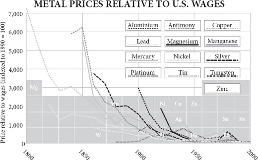
In 1807, as Parliament in London was preparing to pass at last William Wilberforce’s bill to abolish the slave trade, the largest factory complex in the world had just opened at Ancoats in Manchester. Powered by steam and lit by gas, both generated by coal, Murrays’ Mills drew curious visitors from all over country and beyond to marvel at their modern machinery. There is a connection between these two events. The Lancashire cotton industry was rapidly converting from water power to coal. The world would follow suit and by the late twentieth century, 85 per cent of all the energy used by humankind would come from fossil fuels. It was fossil fuels that eventually made slavery – along with animal power, and wood, wind and water – uneconomic. Wilberforce’s ambition would have been harder to obtain without fossil fuels. ‘History supports this truth,’ writes the economist Don Boudreaux: ‘Capitalism exterminated slavery.’
1807 年，当伦敦的议会准备最终通过威廉·威尔伯福斯（William Wilberforce）的废除奴隶贸易的法案时，世界上最大的综合工厂刚刚在曼彻斯特的安科茨开业。默里斯磨坊由蒸汽驱动，由煤气照明，两者都由煤产生，吸引了来自全国各地和其他地方的好奇的参观者，对他们的现代机械感到惊叹。这两个事件之间存在着联系。兰开夏郡的棉花工业正在迅速从水力发电转向煤炭。世界将紧随其后，到 20 世纪末，人类使用的所有能源的 85% 将来自化石燃料。正是化石燃料最终使奴隶制 —— 连同动物动力、木材、风和水 —— 变得不经济。如果没有化石燃料，威尔伯福斯的雄心壮志就很难实现。“历史支持这一真理”， 经济学家 Don Boudreaux 写道：“资本主义消灭了奴隶制。”
The story of energy is simple. Once upon a time all work was done by people for themselves using their own muscles. Then there came a time when some people got other people to do the work for them, and the result was pyramids and leisure for a few, drudgery and exhaustion for the many. Then there was a gradual progression from one source of energy to another: human to animal to water to wind to fossil fuel. In each case, the amount of work one man could do for another was amplified by the animal or the machine. The Roman empire was built largely on human muscle power, in the shape of slaves. It was Spartacus and his friends who built the roads and houses, who tilled the ground and trampled the grapes. There were horses, forges and sailing ships as well, but the chief source of watts in Rome was people. The period that followed the Roman empire, especially in Europe, saw the widespread replacement of that human muscle power by animal muscle power. The European early Middle Ages were the age of the ox. The invention of dried-grass hay enabled northern Europeans to feed oxen through the winter. Slaves were replaced by beasts, more out of practicality than compassion one suspects. Oxen eat simpler food, complain less and are stronger than slaves. Oxen need to graze, so this civilisation had to be based on villages rather than cities. With the invention of the horse collar, oxen then gave way to horses, which can plough at nearly twice the speed of an ox, thus doubling the productivity of a man and enabling each farmer either to feed more people or to spend more time consuming other’s work. In England, horses were 20 per cent of draught animals in 1086, and 60 per cent by 1574.
能源的故事很简单。很久以前，所有的工作都是由人们用自己的肌肉为自己完成的。然后有一段时间，一些人让其他人为他们做工作，结果是金字塔和少数人的休闲，许多人的苦役和疲惫。然后，从一种能源逐渐发展到另一种能源：从人到动物到水到风到化石燃料。在每一种情况下，一个人可以为另一个人做的工作量都被动物或机器放大了。罗马帝国在很大程度上是依靠人类的肌肉力量建立的，以奴隶的形式。是斯巴达克斯和他的朋友们修建了道路和房屋，耕种了土地，践踏了葡萄。也有马匹、锻造和帆船，但罗马的主要动力来源是人。罗马帝国之后的时期，特别是在欧洲，人类的肌肉力量普遍被动物的肌肉力量所取代。欧洲中世纪早期是牛的时代。干草的发明使北欧人能够喂牛过冬。奴隶被野兽所取代，更多的是出于实用性，而不是人们怀疑的同情心。牛吃的食物更简单，抱怨更少，比奴隶更强壮。牛需要吃草，所以这种文明必须以村庄而不是城市为基础。随着马圈的发明，牛后来让位于马，马的耕作速度几乎是牛的两倍，从而使人的生产力翻倍，使每个农民要么养活更多的人，要么花更多的时间消耗别人的工作。在英格兰，1086 年马占吃水牲畜的 20%，到 1574 年占 60%。
In turn oxen and horses were soon being replaced by inanimate power. The watermill, known to the Romans but comparatively little used, became so common in the Dark Ages that by the time of the Domesday Book (1086), there was one for every fifty people in southern England. Two hundred years later, the number of watermills had doubled again. By 1300 there were sixty-eight watermills on a single mile of the Seine in Paris, and others floating on barges.
反过来，牛和马很快被无生命的力量所取代。罗马人知道水磨，但相对来说很少使用，在黑暗时代变得如此普遍，以至于到了《多米斯塔书》（the Domesday Book，1086 年）的时候，英格兰南部每 50 人就有一个水磨。两百年后，水磨的数量又增加了一倍。到 1300 年，在巴黎塞纳河的一英里范围内有 68 台水磨，还有一些漂浮在驳船上。
The Cistercian monastic order took the watermill to its technical zenith, not only improving and perfecting it, but aggressively suppressing rival animal-powered mills by legal action. With gears, cams and trip hammers, they used the water to achieve multiple ends. At Clairvaux, for example, the water from the river first turned the mill wheel to crush the grain, then shook the sieve to separate flour from bran, then topped up the vats to make beer, then moved on to work the fullers’ hammers against the raw cloth, then trickled into the tannery and was finally directed to where it could wash away waste.
西多会修道院将水磨推向了技术的顶峰，不仅改进和完善了水磨，还通过法律行动积极压制了竞争对手的动物动力水磨。通过齿轮、凸轮和绊脚锤，他们利用水来达到多种目的。例如，在克莱尔沃，来自河流的水首先转动磨盘以粉碎谷物，然后摇动筛子以分离面粉和麸皮，然后浇灌大桶以酿制啤酒，然后转到磨坊的锤子上敲打生布，然后流入制革厂，最后被引导到可以冲走废物的地方。
The windmill appeared first in the twelfth century and spread rapidly throughout the Low Countries, where water power was not an option. But it was peat, rather than wind, that gave the Dutch the power to become the world’s workshop in the 1600s. Peat dug on a vast scale from freshly drained bogs fuelled the brick, ceramic, beer, soap, salt and sugar industries. Harlem bleached linen for the whole of Germany. At a time when timber was scarce and expensive, peat gave the Dutch their chance.
风车最早出现在 12 世纪，并迅速传遍了低地国家，因为那里没有水力可言。但是，是泥炭，而不是风，给了荷兰人力量，使他们在 16 世纪成为世界的工场。从新排水的沼泽地大规模挖掘的泥炭为砖、陶瓷、啤酒、肥皂、盐和糖工业提供了燃料。哈林为整个德国漂白亚麻布。在木材匮乏和昂贵的年代，泥炭给了荷兰人机会。
Hay, water and wind are ways of drawing upon the sun’s energy: the sun powers plants, rain and the wind. Timber is a way of drawing on a store of the sun’s energy laid down in previous decades – on solar capital, as it were. Peat is an older store of the sunlight – solar capital laid down over millennia. And coal, whose high energy content enabled the British to overtake the Dutch, is still older sunlight, mostly captured around 300 million years before. The secret of the industrial revolution was shifting from current solar power to stored solar power. Not that human muscle power disappeared: slavery continued, in Russia, the Caribbean and America as well as many other places. But gradually, erratically, more and more of the goods people made were made with fossil energy.
干草、水和风是利用太阳能量的方式：太阳为植物、雨水和风提供动力。木材是利用过去几十年来储存的太阳能量的一种方式 —— 就像太阳能资本那样。泥炭是一种更古老的太阳光储存 —— 几千年来奠定的太阳能资本。而煤炭，其高能量含量使英国人超越了荷兰人，仍然是更古老的阳光，大部分是在 3 亿年前捕获的。工业革命的秘密在于从当前的太阳能转向储存的太阳能。并不是说人类的肌肉力量消失了：奴隶制继续存在，在俄罗斯、加勒比和美国以及其他许多地方。但逐渐地，不稳定地，人们制造的越来越多的商品是用化石能源制造的。
Fossil fuels cannot explain the start of the industrial revolution. But they do explain why it did not end. Once fossil fuels joined in, economic growth truly took off, and became almost infinitely capable of bursting through the Malthusian ceiling and raising living standards. Only then did growth become, in a word, sustainable. This leads to a shocking irony. I am about to argue that economic growth only became sustainable when it began to rely on non-renewable, non-green, non-clean power. Every economic boom in history, from Uruk onwards, had ended in bust because renewable sources of energy ran out: timber, crop land, pasture, labour, water, peat. All self-replenishing, but far too slowly, and easily exhausted by a swelling populace. Coal not only did not run out, no matter how much was used: it actually became cheaper and more abundant as time went by, in marked contrast to charcoal, which always grew more expensive once its use expanded beyond a certain point, for the simple reason that people had to go further in search of timber. Had England never used coal, it could still have had an industrial miracle of sorts, because it could have (and did) use water power to drive the frames and looms that turned Lancashire into the cotton capital of the world. But water power, though renewable, is very much finite, and Britain’s industrial boom would have petered out as expansion became impossible, population pressure overtook income and wages fell, depressing demand.
化石燃料不能解释工业革命的开始。但它们确实解释了为什么它没有结束。一旦化石燃料加入进来，经济增长就真正起飞了，而且几乎可以无限地冲破马尔萨斯的天花板，提高生活水平。只有在那时，增长才变得，可以说是可持续的。这导致了一个令人震惊的讽刺。我想说的是，只有当经济增长开始依赖不可再生、非绿色、非清洁的动力时，它才变得可持续。历史上的每一次经济繁荣，从乌鲁克开始，都以失败告终，因为可再生的能源耗尽了：木材、庄稼地、牧场、劳动力、水、泥炭。所有这些都能自我补充，但速度太慢，而且很容易被膨胀的人口耗尽。煤炭不仅没有耗尽，无论使用多少：随着时间的推移，它实际上变得更加便宜和丰富，这与木炭形成了明显的对比，木炭的使用一旦扩大到一定程度就会变得更加昂贵，原因很简单，人们不得不去更远的地方寻找木材。如果英国从未使用过煤，它仍然可以创造某种工业奇迹，因为它可以（而且确实）使用水力来驱动框架和织布机，将兰开夏郡变成世界的棉花首都。但是，水力虽然是可再生的，但也是非常有限的，英国的工业繁荣会因为扩张变得不可能，人口压力超过了收入，工资下降，压抑了需求而逐渐消亡。
This is not to imply that non-renewable resources are infinite – of course not. The Atlantic Ocean is not infinite, but that does not mean you have to worry about bumping into Newfoundland if you row a dinghy out of a harbour in Ireland. Some things are finite but vast; some things are infinitely renewable, but very limited. Non-renewable resources such as coal are sufficiently abundant to allow an expansion of both economic activity and population to the point where they can generate sustainable wealth for all the people of the planet without hitting a Malthusian ceiling, and can then hand the baton to some other form of energy. The blinding brightness of this realisation still amazes me: we can build a civilisation in which everybody lives the life of the Sun King, because everybody is served by (and serves) a thousand servants, each of whose service is amplified by extraordinary amounts of inanimate energy and each of whom is also living like the Sun King. I will deal in later chapters with the many objections that pessimistic environmentalists will raise, including the question of the atmosphere’s non-renewable capacity for absorbing carbon dioxide.
这并不是说不可再生的资源是无限的 —— 当然不是。大西洋不是无限的，但这并不意味着你必须担心如果你从爱尔兰的港口划着小艇出来，会撞上纽芬兰。有些东西是有限的，但却很广阔；有些东西是无限的，但却非常有限。像煤炭这样的不可再生资源足够丰富，可以让经济活动和人口都扩张到可以为地球上所有的人创造可持续的财富，而不会碰到马尔萨斯的天花板，然后可以将接力棒交给其他形式的能源。这一认识的耀眼光芒仍然让我感到惊讶：我们可以建立一个文明，在其中每个人都过着太阳王的生活，因为每个人都由（并为）一千名仆人服务，他们的每个服务都被非凡的无生命能量所放大，每个人也都像太阳王一样生活。我将在后面的章节中论述悲观的环保主义者将提出的许多反对意见，包括大气层吸收二氧化碳的不可再生能力问题。
Wealthier yet and wealthier
更加富有，也更加富有
Before I make the case that fossil fuels, by driving pistons and dynamos, made modern living standards possible, first, a digression about living standards. Did industrialisation really improve them? There are still people about, including it seems those who write the textbooks from which my children learn history, who follow Karl Marx in believing that the industrial revolution drove down most living standards, by cramming carefree and merrie yokels into satanic mills and polluted tenements, where they were worked till they broke and then coughed their way to early deaths. Is it really necessary to point out that poverty, inequality, child labour, disease and pollution existed before there were factories? In the case of poverty, the rural pauper of 1700 was markedly worse off than the urban pauper of 1850 and there were many more of him. In Gregory King’s survey of the British population in 1688, 1.2 million labourers lived on just £4 a year and 1.3 million ‘cottagers’ – peasants – on just £2 a year. That is to say, half the entire nation lived in abject poverty; without charity they would starve. During the industrial revolution, there was plenty of poverty but not nearly as much as this nor nearly as severe. Even farm labourers’ income rose during the industrial revolution. As for inequality, in terms of both physical stature and number of surviving children, the gap narrowed between the richest and the poorest during industrialisation. That could not have happened if economic inequality increased. As for child labour, a patent for a hand-driven linen-spinning machine from 1678, long before powered mills, happily boasts that ‘a child three or four years of age may do as much as a child of seven or eight years old.’ As for disease, deaths from infectious disease fell steadily throughout the period. As for pollution, smog undoubtedly increased in industrial cities, but the sewage-filled streets of Samuel Pepys’s London were more noisome than anything in Elizabeth Gaskell’s Manchester of the 1850s.
在我说明化石燃料通过驱动活塞和发电机，使现代生活水平成为可能之前，首先，我想说说关于生活水平的题外话。工业化真的提高了生活水平吗？现在仍然有人，包括那些编写我的孩子们学习历史的教科书的人，他们追随卡尔·马克思，认为工业革命使大多数人的生活水平下降，因为他们把无忧无虑和快乐的乡下人塞进了邪恶的磨坊和被污染的公寓，在那里他们被工作到破产，然后咳嗽着早早死去。真的有必要指出，在有工厂之前，贫穷、不平等、童工、疾病和污染就已经存在了吗？就贫困而言，1700 年的农村贫民比 1850 年的城市贫民的情况明显要差，而且他们的人数更多。在格雷戈里·金 1688 年对英国人口的调查中，120 万劳工每年仅靠 4 英镑生活，130 万 “山寨” —— 农民 —— 每年仅靠 2 英镑。这就是说，整个国家有一半的人生活在赤贫之中；如果没有慈善机构，他们就会饿死。在工业革命期间，有很多贫困，但没有这么多，也没有这么严重。在工业革命期间，即使是农场工人的收入也有所增加。至于不平等问题，在工业化过程中，无论从体格还是从存活子女的数量来看，最富有的人和最贫穷的人之间的差距都在缩小。如果经济不平等加剧，这就不可能发生。至于童工，1678 年的一项手推亚麻纺纱机的专利，远在动力磨坊之前，就高兴地吹嘘说，“一个三四岁的孩子可以做的事和一个七八岁的孩子一样多”。至于疾病，在整个时期，死于传染病的人数稳步下降。至于污染，工业城市的烟雾无疑增加了，但塞缪尔·佩皮斯（Samuel Pepys）笔下的伦敦充满污水的街道比伊丽莎白·加斯克尔（Elizabeth Gaskell）笔下 19 世纪 50 年代的曼彻斯特的任何地方都要吵闹。
The plain fact is that the mechanisation of production in the industrial revolution raised incomes across all classes. The average Englishman’s income, having apparently stagnated for three centuries, began to rise around 1800 and by 1850 was 50 per cent above its 1750 level, despite a trebling of population. The rise was steepest for unskilled workers: the wage premium for skilled building workers fell steadily. Income inequality fell, and gender inequality, too. The share of national income captured by labour rose, while the share captured by land fell: the rent of an acre of English farmland buys as many goods now as it did in the 1760s, while the real wage of an hour of work buys immensely more. Real wages rose faster than real output throughout the nineteenth century, meaning that the benefit of cheaper goods was being garnered chiefly by the workers as consumers, not by bosses or landlords. That is to say, the people who produced manufactured goods could also increasingly afford to consume them.
一个明显的事实是，工业革命中的生产机械化提高了所有阶层的收入。英国人的平均收入在停滞了三个世纪后，在 1800 年左右开始上升，到 1850 年比 1750 年的水平高出 50%，尽管人口增加了三倍。非熟练工人的收入增长最为迅猛：熟练建筑工人的工资溢价稳步下降。收入不平等下降，性别不平等也是如此。劳动力在国民收入中所占的比例上升，而土地所占的比例下降：一英亩农田的租金现在能买到的商品和 1760 年代一样多，而一小时工作的实际工资则能买到更多。在整个 19 世纪，实际工资的增长速度快于实际产出，这意味着廉价商品的好处主要是由作为消费者的工人获得的，而不是由老板或地主获得的。也就是说，生产制成品的人也越来越有能力去消费它们。
While it is undoubtedly true that by modern standards the workers who manned the factories and mills of 1800 in England laboured for inhuman hours from an early age in conditions of terrible danger, noise and dirt, returning to crowded and insanitary homes through polluted streets, and had dreadful job security, diet, health care and education, it is none the less just as undeniably true that they lived better lives than their farm-labourer grandfathers and wool-spinning grandmothers had done. That was why they flocked to the factories from the farms – and would do so again in New England in the 1870s, in the American South in the 1900s, in Japan in the 1920s, in Taiwan in the 1960s, in Hong Kong in the 1970s and in China today. That was why the jobs in the mills were denied to the Irish in New England and the blacks in North Carolina.
毫无疑问，按照现代标准，1800 年在英国的工厂和磨坊工作的工人从小就在可怕的危险、噪音和肮脏的条件下从事非人道的工作，通过被污染的街道回到拥挤和不卫生的家中，他们的工作保障、饮食、医疗保健和教育都很糟糕，但同样不可否认的是，他们的生活比他们在农场工作的祖父和纺羊毛的祖母过得更好。这就是为什么他们从农场涌向工厂 —— 19 世纪 70 年代的新英格兰、20 世纪的美国南方、20 世纪 20 年代的日本、60 年代的台湾、70 年代的香港和今天的中国都会这样做。这就是为什么新英格兰的爱尔兰人和北卡罗来纳州的黑人被剥夺了在工厂的工作机会。
Here are three anecdotes to illustrate the notion that factory jobs are often preferable to farm ones. A farm worker named William Turnbull, born in 1870, told my grandmother that he started work at thirteen, for sixpence a day, working six days a week, from 6 a.m. to 6 p.m., usually outdoors whatever the weather, with just Good Friday, Christmas Day and half of New Year’s day as his only holidays. On market days he started herding sheep or cattle to town, carrying a lantern, at 1 or 2 a.m. A cotton picker from North Carolina in the 1920s explained to a different historian why the mill was so much better than the farm: ‘Once we went to work in the mill after we moved here from the farm, we had more clothes and more kinds of food than we did when we was a-farmin’. And we had a better house. So yes when we came to the mill life was easier.’ And in the 1990s Liang Ying was delighted to run away from the family rubber farm in southern China, where she had daily to cut the bark of hundreds of rubber trees in pre-dawn darkness, to get a job at a textile factory in Shenzhen: ‘If you were me, what would you prefer, the factory or the farm?’ The economist Pietra Rivoli writes, ‘As generations of mill girls and seamstresses from Europe, America and Asia are bound together by this common sweatshop experience – controlled, exploited, overworked, and underpaid – they are bound together too by one absolute certainty, shared across both oceans and centuries: this beats the hell out of life on the farm.’
这里有三件轶事，可以说明工厂工作往往比农场工作更好的概念。一位名叫威廉·特恩布尔（William Turnbull）的农场工人出生于 1870 年，他告诉我祖母，他 13 岁开始工作，每天六便士，每周工作六天，从早上 6 点到下午 6 点，无论天气如何，通常在户外工作，只有耶稣受难日、圣诞节和新年的一半是他唯一的假期。20 世纪 20 年代，一位来自北卡罗来纳州的采棉工向另一位历史学家解释了为什么工厂比农场好得多：“我们从农场搬到这里后，一旦在工厂工作，我们的衣服和食物种类就比我们在农场时多了。我们还有一个更好的房子。所以，当我们来到工厂时，生活更容易了。20 世纪 90 年代，梁英高兴地离开了中国南部的家庭橡胶农场，在那里她每天都要在黎明前的黑暗中砍伐数百棵橡胶树的树皮，在深圳的一家纺织厂找到一份工作。如果你是我，你会喜欢什么，工厂还是农场？经济学家 彼得拉·瑞沃里（Pietra Rivoli）写道：“当来自欧洲、美洲和亚洲的几代工厂女工和女裁缝被这种共同的血汗工厂经历联系在一起 —— 被控制、被剥削、工作过度和报酬过低 —— 他们也被一个绝对的确定性联系在一起，这是跨越海洋和世纪的共享：这比农场的生活要好。”
The reason that the poverty of early industrial England strikes us so forcibly is that this was the first time writers and politicians took notice of it and took exception to it, not because it had not existed before. Mrs Gaskell and Mr Dickens had no equivalents in previous centuries; factory acts and child labour restrictions were unaffordable before. The industrial revolution caused a leap in the wealth-generating capacity of the population that greatly outstripped its breeding potential but it thereby also caused an increase in compassion, much of which was expressed through the actions of charities and governments.
早期英国工业化时期的贫困之所以如此强烈地冲击着我们，是因为这是作家和政治家们第一次注意到它，并对它表示反对，而不是因为它以前不存在。加斯克尔夫人和狄更斯先生在以前的几个世纪里没有类似的情况；工厂法案和童工限制在以前是无法负担的。工业革命造成了人口财富创造能力的飞跃，大大超过了其繁殖潜力，但它也因此造成了同情心的增加，其中大部分是通过慈善机构和政府的行动表达的。
The metal Midlands
中部金属区
The burst of innovation which Britain experienced quite suddenly in the late 1700s was both the cause and consequence of mechanisation, of the amplification of one person’s labour by machinery and fuel. The tiny nation of Britain, with just eight million people in 1750, compared with twenty-five million in far more sophisticated France, thirty-one million in far more populous Japan and 270 million in far more productive China, embarked upon a phenomenal economic expansion that would propel it to world domination within a century. Between 1750 and 1850 British men (some of them immigrants) invented an astonishing range of labour-saving and labour-amplifying devices, which allowed them to produce more, sell more, earn more, spend more, live better and have more surviving children. A famous print entitled ‘The Distinguished Men of Science of Great Britain Living in the Year 1807–8’, the year that Parliament abolished the slave trade, depicts fifty-one great engineers and scientists all alive at the time – as if they were gathered together by an artist in the library of the Royal Institution. Here are the men who made canals (Thomas Telford), tunnels (Marc Brunel), steam engines (James Watt), locomotives (Richard Trevithick), rockets (William Congreve), hydraulic presses (Joseph Bramah); men who invented the machine tool (Henry Maudslay), the power loom (Edmund Cartwright), the factory (Matthew Boulton), the miner’s lamp (Humphry Davy) and the smallpox vaccine (Edward Jenner). Here are astronomers like Nevil Maskelyne and William Herschel, physicists like Henry Cavendish and Count Rumford, chemists like John Dalton and William Henry, botanists like Joseph Banks, polymaths like Thomas Young, and many more. You look at such a picture and wonder, ‘How did any one country have so much talent in the same place?’
英国在 17 世纪末突然经历的创新爆发，既是机械化的原因，也是机械化的结果，是机械和燃料对一个人的劳动的放大。英国这个小国在 1750 年只有 800 万人口，而相比之下，更先进的法国有 2500 万，人口更多的日本有 3100 万，生产力更高的中国有 2.7 亿，英国开始了惊人的经济扩张，这将推动它在一个世纪内成为世界霸主。在 1750 年至 1850 年期间，英国人（其中一些是移民）发明了一系列惊人的节省劳动力和提高劳动力的设备，这使他们能够生产更多、销售更多、赚得更多、花得更多、生活得更好，并有更多幸存的孩子。一幅题为 “生活在 1807-8 年的大不列颠杰出科学人士” 的著名印刷品，即议会废除奴隶贸易的那一年，描绘了当时所有活着的 51 位伟大的工程师和科学家 —— 仿佛他们被一位艺术家聚集在皇家学会的图书馆里。这里有制造运河（托马斯·特尔福德）、隧道（马克·布鲁内尔）、蒸汽机（詹姆斯·瓦特）、火车头（理查德·特雷维西克）、火箭（威廉·康格里夫）、液压机（约瑟夫·布拉马）的人；有发明机床（亨利·莫德斯雷）、动力织机（埃德蒙·卡特赖特）、工厂（马修·鲍尔顿）、矿灯（汉弗莱·戴维）和天花疫苗（爱德华·詹纳）的人。这里有内维尔·马斯克利恩（Nevil Maskelyne）和威廉·赫谢尔（William Herschel）这样的天文学家，亨利·卡文迪什（Henry Cavendish）和伦福德（Rumford）伯爵这样的物理学家，约翰·道尔顿（John Dalton）和威廉·亨利（William Henry）这样的化学家，约瑟夫·班克斯（Joseph Banks）这样的植物学家，托马斯·杨（Thomas Young）这样的多面手，以及更多。你看着这样的画面，会想：“任何一个国家怎么会在同一个地方有这么多人才？”
The premise is false, of course, because it was the aura of the time and place that drew forth (and attracted from abroad – Brunel was French, Rumford American) such talent. For all their brilliance, there are Watts, Davys, Jenners and Youngs galore in every country at every time. But only rarely do sufficient capital, freedom, education, culture and opportunity come together in such a way as to draw them out. Two centuries later, somebody could paint a picture of the great men of Silicon Valley and posterity will stand amazed at the thought that giants like Gordon Moore and Robert Noyce, Steve Jobs and Sergey Brin, Stanley Boyer and Leroy Hood all lived at the same time and in the same place.
当然，这个前提是错误的，因为是那个时代和地方的光环吸引了（并从国外吸引了 —— 布鲁内尔是法国人，朗福德是美国人）这样的人才。就他们的聪明才智而言，每个国家在每个时期都有大量的瓦特、戴维、詹纳和杨氏。但很少有足够的资本、自由、教育、文化和机会聚集在一起，从而将他们吸引出来。两个世纪后，有人可以为硅谷的伟人画一幅画，后人会惊讶地想到，像戈登·摩尔和罗伯特·诺伊斯、史蒂夫·乔布斯和谢尔盖·布林、斯坦利·博耶和勒罗伊·胡德这样的巨人都在同一时间和同一地点生活。
Just as the Californian is today, so in 1700 the British manufacturing entrepreneur was unusually free, compared with both European and Asian equivalents, to invest, invent, expand and reap the profits. His huge capital city was unusual in being dominated by merchants, not the government, and always had been. He also had a world market thanks to the British ships that were plying the tropics of the world. His rural hinterland was filled with people free to sell their labour to the highest bidder. Most of the continent was still dominated by change-resistant lords and serfs neither of whom had an incentive to be more productive. In much of central and eastern Europe, serfdom gained a new lease of life in the eighteenth century following the wars and famines of the 1600s. Peasants owed much of their labour or their produce to seigneurs (plus a tithe to the Church) and had little freedom to move, so they had little incentive to be more productive or commercial. Lords, meanwhile, fiercely resisted the attempts by reforming monarchs to free their vassals. ‘The landlord looks on the serf as a tool necessary to cultivate his lands,’ explained one Hungarian liberal, ‘and as a chattel which he inherited from his parents, or purchased, or acquired as a reward.’
就像今天的加利福尼亚人一样，与欧洲和亚洲的同行相比，1700 年的英国制造业企业家在投资、发明、扩张和获取利润方面都异常自由。那些巨大的首都不寻常地被商人而不是政府所控制，而且一直如此。由于在世界热带地区航行的英国船只，他还拥有一个世界市场。他的农村腹地充满了可以自由地向出价最高者出售劳动力的人。欧洲大陆的大部分地区仍然由抵制变革的领主和农奴主导，他们都没有动力去提高生产力。在中欧和东欧的大部分地区，农奴制在 16 世纪的战争和饥荒之后获得了新的生命。农民把他们的大部分劳动或产品欠给了领主（外加给教会的十一税），而且几乎没有移动的自由，所以他们没有什么动力去提高生产力或商业化。与此同时，领主们激烈地抵制改革中的君主为解放他们的附庸所做的尝试。一位匈牙利自由主义者解释说：“地主把农奴看作是耕种土地的必要工具，是他从父母那里继承的、或购买的、或作为报酬获得的动产。”
Even where freedom to trade and prosper were obtained – around Toulouse, in Silesia, in Bohemia – enforcers of rules and extorters of bribes were legion, while frequent wars played havoc with commerce. Seventeen tolls were exacted in sixteen leagues in the Limousin valley. France, three times as populous as England, was ‘cut up by internal customs barriers into three major trade areas and by informal custom, obsolete tolls and charges, and above all poor communications into a mosaic of semi-autarkic cells’. Internal smuggling was rife. Spain was ‘an archipelago, islands of local production and consumption, isolated from each other by centuries of internal tariffs’. The Englishman, by contrast, did not have to answer to petty bureaucrats and pesky tax collectors to the same extent. For this he could partly thank the upheavals of the previous century, including a civil war and a ‘glorious revolution’ against James II’s arbitrary government. The latter event was more than a king-swap; it was in effect a semi-hostile management buy-in of the entire country by Dutch venture capitalists, which resulted in a rush of Dutch capital investment, a lurch towards foreign trade as the engine of state policy in emulation of Holland, and a constitutional shake-up that empowered a parliament of merchants. William III had to settle for respecting his people’s property rights if he was to keep the throne. Add in that Britain did not support a standing army, that a heavily indented coastline allowed seaborne trade to reach most parts of the country, and that the administrative capital of the country was also its commercial capital, and it becomes clear that this was not a bad place to start or expand a business in say 1700. ‘Nowhere else,’ says David Landes, ‘was the countryside so infused with manufacture; nowhere else, the pressures and incentives to change greater, the forces of tradition weaker.’
即使在获得贸易和繁荣自由的地方 —— 图卢兹周围，在西里西亚，在波希米亚 —— 规则的执行者和勒索贿赂者也非常多，而频繁的战争对商业造成了破坏。在利穆赞（Limousin）河谷的 16 个联盟中，征收了 17 个税。法国的人口是英国的三倍，“被内部的关税壁垒分割成三个主要的贸易区，并被非正式的习俗、过时的通行费和收费，以及最重要的是糟糕的交通分割成一个个半自动的单元”。内部的走私活动十分猖獗。西班牙是 “一个群岛，当地生产和消费的岛屿，由于几个世纪的内部关税而相互隔离”。相比之下，英国人不必在同样的程度上对小官僚和讨厌的收税员负责。为此，他可以部分地感谢上个世纪的动荡，包括一场内战和一场反对詹姆斯二世专制政府的 “光荣革命”。后者不仅仅是一次国王的交换，它实际上是荷兰风险资本家对整个国家进行的一次半敌对性的管理收购，这导致了荷兰资本投资的涌入，模仿荷兰将对外贸易作为国家政策的动力，以及赋予商人议会权力的宪法调整。威廉三世要想保住王位，就必须满足于尊重人民的财产权利。再加上英国不支持常备军，严重缩水的海岸线允许海运贸易到达该国大部分地区，而且该国的行政首都也是其商业首都，因此很明显，在 1700 年，这并不是一个开始或扩大业务的坏地方。戴维·兰德斯（David Landes）说：“没有其他地方的乡村能如此注入制造业；没有其他地方的变革压力和动力更大，传统的力量更弱。”
The small town of Birmingham, with no restrictive guilds and no civic charter, had begun to thrive as a centre of the metalworking trade in the early 1600s. By 1683 it had over 200 forges producing iron using coal. The heady combination of available skills and freedom of enterprise created a boom in an industry known as the ‘toy trade’, though the items made were mostly buckles, pins, nails, buttons and small utensils, rather than toys themselves. More patents were issued in Birmingham than in any other city than London in the eighteenth century, though few would count as major ‘inventions’: this was incremental exploration of the possibilities of iron, brass, tinplate and copper. The work was done in small workshops, with little new-fangled machinery, but it was split into skilled, specialised trades and organised along increasingly sophisticated lines. Manufacturers spun out of each other’s firms and started business on their own account, just as they would do around San Francisco Bay in the 1980s.
伯明翰这个小城，没有限制性的行会，也没有公民宪章，在 16 世纪初就开始作为金属加工贸易的中心而繁荣。到 1683 年，它有 200 多个使用煤生产铁的锻造厂。现有技术和企业自由的令人振奋的结合创造了一个被称为 “玩具贸易” 的行业的繁荣，尽管所制造的物品大多是扣子、针、钉子、纽扣和小器具，而不是玩具本身。在 18 世纪，伯明翰颁发的专利比伦敦以外的任何城市都要多，尽管很少有人能算作重大 “发明”：这是对铁、黄铜、马口铁和铜的可能性的逐步探索。工作是在小作坊里完成的，没有什么新奇的机器，但它被分成熟练的、专门的行业，并沿着越来越复杂的路线进行组织。制造商们从彼此的公司中分离出来，开始自己的业务，就像他们在 20 世纪 80 年代在旧金山湾做的那样。
Demand it and they will supply
要求它，他们就会提供
People do not start businesses unless there is demand from consumers. One root cause of England’s miracle was that thanks to trade enough Britons were rich enough after 1700 to buy the goods and services supplied by manufacturers so that it paid manufacturers to go out and find more productive technologies, and in doing so they stumbled upon something close to an economic perpetual motion machine. ‘One of the most extraordinary facts of the [eighteenth] century was the enlargement of the consuming classes,’ says Robert Friedel. ‘There was a consumer revolution in eighteenth century England,’ writes Neil McKendrick: ‘more men and women than ever before in human history enjoyed the experience of acquiring material possessions.’ Compared with mainland Europeans they were wearing wool cloth (as opposed to linen), eating beef (as opposed to cheese) and white wheat bread (as opposed to rye). For Daniel Defoe, writing in 1728, a low level of demand from the masses was far more important than a rich demand from a few:
除非有消费者的需求，否则人们是不会创业的。英国奇迹的一个根本原因是，由于贸易，1700 年后有足够多的英国人富裕起来，可以购买制造商提供的商品和服务，这样制造商就可以花钱出去寻找更多的生产技术，在这样做的时候，他们偶然发现了一个接近经济永动机的东西。罗伯特·弗里德尔（Robert Friedel）说：“十八世纪最特别的事实之一是消费阶层的扩大。” 尼尔·麦肯德里克（Neil McKendrick）写道：“18 世纪的英国发生了一场消费革命，比人类历史上任何时候都更多的男人和女人享受着获得物质财富的体验。” 与欧洲大陆人相比，他们穿着羊毛布（而不是亚麻布），吃牛肉（而不是奶酪）和白小麦面包（而不是黑麦）。对丹尼尔·笛福（Daniel Defoe）来说，在 1728 年写作时，大众的低水平需求远比少数人的丰富需求更重要。
Poor People, Journey-Men, working and pains-taking people ... These are the People that carry off the Gross of your Consumption; ’tis for these your markets are kept open late on Saturday nights ... Their Numbers are not Hundreds or Thousands, or Hundreds of Thousands, but Millions; ’tis by their Multitude, I say, that all the Wheels of Trade are set on Foot, the Manufacture and Produce of the Land and Sea, finished, cur’d, and fitted for the Markets Abroad; ’tis by the Largeness of their Gettings, that they are supported, and by the Largeness of their number that the whole country is supported.
穷人、旅行者、劳动者和吃苦耐劳的人…… 这些人带走了你们的消费总额；正是为了这些人，你们的市场在星期六晚上才会开到很晚…… 他们的人数不是几百或几千，也不是几十万，而是几百万；我说，正是由于他们的人数众多，所有的贸易车轮才得以启动，陆地和海洋的制造和产品才得以完成，并适合国外市场；正是由于他们人数众多，他们才得以支持，而他们人数众多，整个国家才得以支持。
Initially, it was the cost of luxuries that fell fastest. If you could afford only to buy food, fuel and fibre, you were not much better off than your medieval predecessor; but if you could afford spices, wine, silk, books, sugar, candles, buckles and the like, then you were three times better off, not because your income had gone up, but because the price of these goods was coming down thanks to the efforts of traders in the East India Company and their ilk. There was a mania for Indian cotton and Chinese porcelain and it was by copying these Oriental imports that the industrialists got started. Josiah Wedgwood, for instance, was not technically better at making pottery and porcelain than many others, but he was supremely good at making sure it was affordable, by dividing labour among skilled workers and applying steam to the process. He was also very good at marketing porcelain to the consuming classes by making it seem to be both posh and affordable – the holy grail of marketing ever since.
最初，下降最快的是奢侈品的成本。如果你只买得起食物、燃料和纤维，你的生活并不比中世纪的前辈好多少；但如果你买得起香料、酒、丝绸、书籍、糖、蜡烛、扣子等，那么你的生活就会好三倍，这不是因为你的收入增加了，而是因为在东印度公司及其同类商人的努力下，这些商品的价格正在下降。当时有一种对印度棉花和中国瓷器的狂热，工业家们正是通过仿制这些东方进口产品而开始的。例如，乔赛亚·韦奇伍德（Josiah Wedgwood）在制作陶器和瓷器方面的技术并不比其他许多人好，但他非常善于通过在熟练工人之间分工和在加工过程中使用蒸汽，确保人们能够负担得起。他还非常善于向消费阶层推销瓷器，使其看起来既高档又实惠 —— 这是自古以来营销的圣杯。
Cotton tells the tale best, though. In the 1600s, English people wore wool, linen and – if they were rich – silk. Cotton was almost unknown, though some refugees from Spanish persecution in Antwerp settled in Norwich as cotton weavers. But trade with India was bringing more and more ‘calico’ cotton cloth into the country, where its light, soft, washable character, and the way it could be colourfully printed and dyed, attracted demand from the well off. The weavers of wool and silk resented this upstart rival, and pressed Parliament for protection against it. In 1699, all judges and students were told to wear gowns of wool; in 1700 all corpses were ordered to wear shrouds of sheep’s wool; and from 1701 it was decreed that ‘all calicoes painted, dyed, printed or stained ... shall not be worn’. So ladies of fashion bought plain muslin and had it dyed. Riots broke out and women seen wearing cotton were even attacked by gangs of silk or wool weavers. Cotton was considered unpatriotic. By 1722 Parliament had bowed to the wishes of these weavers and on Christmas day that year, when the Calico Act took effect, it became illegal to wear cotton of any kind, or even to use it in home furnishings. Not for the last time, the narrow interest of producers triumphed over the broader interest of consumers in an act of trade protectionism.
不过，棉花最能说明问题。在 16 世纪，英国人穿的是羊毛、亚麻布和 —— 如果他们很富有 —— 丝绸。棉花几乎不为人知，尽管一些在安特卫普受到西班牙迫害的难民在诺里奇定居，成为棉花织工。但与印度的贸易将越来越多的 “卡里科” 棉布带入该国，其轻盈、柔软、可清洗的特性，以及可以进行彩色印刷和染色的方式，吸引了富裕阶层的需求。羊毛和丝绸的织造者对这个后起的对手很反感，并向议会要求保护它。1699 年，所有的法官和学生都被要求穿上羊毛长袍；1700 年，所有的尸体都被命令穿上羊毛裹尸布；从 1701 年开始，政府下令 “所有涂过、染过、印过或染过的花布…… 都不能穿”。因此，时尚的女士们购买了普通的薄纱并进行了染色。骚乱爆发了，被看到穿棉布的妇女甚至被丝绸或羊毛织工的团伙袭击。棉花被认为是不爱国的。到了 1722 年，议会向这些织工的愿望低头，在这一年的圣诞节，《卡里科法案》生效，穿任何种类的棉花都是非法的，甚至在家居用品中使用它也是非法的。这不是最后一次，在贸易保护主义行为中，生产者的狭隘利益战胜了消费者的广泛利益。
And not for the last time, protectionism would fail, even backfire. To get round the law, East India merchants began to import raw cotton instead, and entrepreneurs started ‘putting out’ cotton to the cottages of rural spinsters and weavers to be made into cloth for export or even, mixed with a little linen or wool to keep it legal (the Calico Act was eventually repealed in 1774), for domestic sale. They had already been ‘putting out’ wool for decades, stealing a march on the Low Countries, where powerful craft guilds had prevented ‘putting out’ by smashing looms in rural cottages. The putters-out were clothiers with a reputation for loan sharking who made a living mostly by supplying raw wool to workers in their cottage homes and paying to collect finished cloth later, minus any interest on loans. The wives and daughters of farmers, and their menfolk in certain seasons, were in effect prepared to add to family income by selling labour as well as produce. Sometimes they found themselves in debt, because they borrowed money from the putters-out to equip themselves.
这不是最后一次，保护主义会失败，甚至适得其反。为了规避法律，东印度商人开始进口原棉，而企业家们则开始将棉花 “投放” 到农村老太太和织工的小屋里，制成布匹出口，甚至与少量亚麻布或羊毛混合以保持其合法性（《花布法》最终于 1774 年被废除），供国内销售。他们已经 “放出” 羊毛几十年了，在低地国家抢占了先机，那里强大的手工业行会通过砸毁农村小屋的织机来防止 “放出”。投放者是以放高利贷而闻名的制衣商，他们主要通过向工人提供原毛在他们的平房家里，并在以后付款收取成品布，减去任何贷款的利息来谋取生计。农民的妻子和女儿，以及他们的男性朋友在某些季节，实际上是准备通过出售劳动力和产品来增加家庭收入。有时他们发现自己负债累累，因为他们从放牛娃那里借钱来装备自己。
You can see these folk as desperate wage slaves driven off communal land by enclosure acts, the division of common land into private plots that gradually spread across most of England between about 1550 and 1800. But this is misleading. It is more accurate to see the rural textile workers as taking the first step on the ladder of producing and consuming, of specialisation and exchange. They were escaping self-sufficiency into the cash economy. It is true that some people were dispossessed of their livelihoods by enclosure, but enclosure actually increased paid employment for farm labourers, so it was for most a shift from low-grade self-sufficiency to slightly better production and consumption. Besides, Irish and Scottish as well as English migrants flocked to the textile districts to join the cottage industries. These were people giving up peasant drudgery for the chance of joining the cash economy, albeit at a low wage and for hard work. People were marrying younger and consequently giving birth to more children.
你可以把这些人看作是被圈地法案赶出公共土地的绝望的雇佣奴隶，圈地法案是在大约 1550 年至 1800 年期间将公共土地划分为私人地块，逐渐在英格兰大部分地区蔓延。但这是一种误导。把农村纺织工人看作是在生产和消费、专业化和交换的阶梯上迈出的第一步更为准确。他们正在逃避自给自足，进入现金经济。的确，有些人因为圈地而失去了生计，但圈地实际上增加了农场工人的有偿就业，所以对大多数人来说，这是从低级别的自给自足转向稍好的生产和消费。此外，爱尔兰和苏格兰以及英国移民纷纷涌入纺织区，加入家庭工业。这些人为了加入现金经济的机会而放弃了农民的苦差事，尽管工资很低，工作也很辛苦。人们结婚的年龄越来越小，因此生下的孩子也越来越多。
The result was that the very people who were joining the industry as workers would soon begin to be its customers. Suddenly the rising income of the average British worker met the falling cost of cotton cloth and suddenly everybody could afford to wear (and wash) cotton underwear. The historian Edward Baines noted in 1835 that the ‘wonderful cheapness of cotton goods’ was now benefiting the ‘bulk of the people’: ‘a country-wake in the nineteenth century may display as much finery as a drawing room in the eighteenth.’ The capitalist achievement, reflected Joseph Schumpeter a century later, ‘does not typically consist of providing more silk stockings for queens but in bringing them within reach of factory girls in return for steadily decreasing amounts of effort.’
其结果是，作为工人加入该行业的人很快就开始成为其客户。突然间，英国普通工人不断增加的收入满足了棉布成本的下降，突然间每个人都能穿（和洗）得起棉质内衣。历史学家爱德华·贝恩斯（Edward Baines）在 1835 年指出，“棉花商品的奇妙廉价” 现在正使 “大部分人” 受益。“十九世纪的乡间小屋可能会像十八世纪的客厅一样展示出大量的装饰品。” 一个世纪后，约瑟夫·熊彼特（Joseph Schumpeter）认为，资本主义的成就 “通常不包括为女王提供更多的丝袜，而是将它们带到工厂女工可以触及的地方，以换取稳步减少的努力。”
But increasing supply was not easy, because even the remotest Pennine valleys and Welsh marches were now thickly settled with the cottages of weavers and spinsters, transport was dear and some of the workers were earning good enough wages to take weekend holidays, occasionally even drinking their pay away till Monday night, preferring consumption to extra income. As the twentieth-century economist Colin Clark put it, ‘Leisure has a real value even to very poor people.’
但是，增加供应并不容易，因为即使是最偏远的宾夕法尼亚山谷和威尔士牧场，现在也密布着织工和老处女的小屋，交通很不方便，一些工人的工资足够高，可以在周末休假，偶尔甚至把工资喝到周一晚上，宁愿消费也不愿意增加收入。正如二十世纪的经济学家科林·克拉克（Colin Clark）所说，“即使对非常贫穷的人来说，休闲也有实际价值。”
So, stuck between booming demand and stalling supply, the putters-out and their suppliers were ripe customers for any kind of productivity-enhancing invention, and with such an incentive, the inventors soon obliged. John Kay’s flying shuttle, James Hargreaves’s spinning jenny, Richard Arkwright’s water frame, Samuel Crompton’s mule – these were all just milestones on a continuous road of incrementally improving productivity. The jenny worked up to twenty times as fast as a spinning wheel and produced a more consistent yarn, but it was still operated entirely by human muscle power. Yet by 1800 the jenny was already obsolete, because the frame was several hundred times as fast. Frames were increasingly powered by watermills. Ten years after that the ‘mule’, a machine that combined features of both the jenny and the frame, already outnumbered the frame by more than ten spindles to one. And mules would soon be powered by steam. The result was a vast expansion in the amount of cotton worked and a steep fall in the price of woven cloth. British exports of cotton goods quintupled in the 1780s and quintupled again in the 1790s. The price of a pound of finespun cotton yarn fell from 38 shillings in 1786 to just 3 shillings in 1832.
因此，在蓬勃发展的需求和停滞不前的供应之间，推土机和他们的供应商是任何一种提高生产力的发明的成熟客户，在这种激励下，发明家们很快就答应了。约翰·凯（John Kay）的飞梭、詹姆斯·哈格里夫斯（James Hargreaves）的纺纱机、理查德·阿克莱特（Richard Arkwright）的水架、塞缪尔·克朗普顿（Samuel Crompton）的骡子 —— 这些都是不断提高生产力道路上的里程碑。绞纱机的工作速度是纺车的 20 倍，生产的纱线也更加稳定，但它仍然是完全由人的肌肉力量来操作。然而，到了 1800 年，珍妮机（jenny）已经被淘汰了，因为框架机（frame）的速度是它的几百倍。框架机越来越多地由水磨驱动。10 年后，“骡子”，一种结合了珍妮机和框架机特点的机器，其数量已经超过了框架机的 10 倍以上。而且，骡子很快就会由蒸汽驱动了。其结果是棉花加工量大幅增加，织布价格急剧下降。英国的棉花产品出口在 1780 年代翻了五倍，在 1790 年代又翻了五倍。一磅细支棉纱的价格从 1786 年的 38 先令下降到 1832 年的 3 先令。
Until 1800 most of the raw cotton spun in England came from Asia. But Chinese and Indian cotton growers either could not or would not increase their output. They had little fresh land to exploit and little incentive either: the zemindar landlord or the imperial bureaucrat took the profit of any productivity increase. Instead it was the southern states of America that took up the opportunity. From producing an insignificant quantity of cotton in 1790, America became the world’s biggest producer by the 1820s and by 1860 was growing two-thirds of the world’s cotton. Cotton accounted for half of all American exports by value between 1815 and 1860.
直到 1800 年，英国的大部分原棉纺织都来自亚洲。但中国和印度的棉花种植者不是不能就是不愿提高产量。他们没有什么新的土地可以开发，也没有什么动力：泽明德地主或帝国官僚拿走了任何生产力增长的利润。相反，是美国南部各州抓住了这个机会。1790 年，美国的棉花产量微不足道，到 19 世纪 20 年代，美国成为世界上最大的棉花生产国，到 1860 年，美国的棉花产量占世界的三分之二。1815 年至 1860 年期间，棉花占美国所有出口价值的一半。
Slaves did the work. Cotton was a labour-intensive crop, in which a single man could sow, weed (again and again), harvest and clean the product of just eighteen acres, and there were few economies of scale. In land-rich, thinly populated America, the only way to expand production was to kill the market in labour altogether: to force the workers to work for no wage. As the economist Pietra Rivoli puts it: ‘It was not the perils of the labour market, but the suppression of the market that doomed the lives of slaves.’ The affordability of cloth for the English working class was made possible by the buying and selling of captured Africans.
奴隶们做着这些工作。棉花是一种劳动密集型作物，一个人可以播种、除草（一次又一次）、收割和清洗 18 英亩的产品，而且几乎没有规模经济。在土地丰富、人口稀少的美国，扩大生产的唯一途径是完全扼杀劳动力市场：迫使工人不拿工资工作。正如经济学家彼得拉·瑞沃里所说。“不是劳动力市场的危险，而是对市场的压制，注定了奴隶的生活。” 英国工人阶级买得起布，是通过买卖被俘的非洲人而实现的。
King coal
煤炭之王
So far fossil fuels have played only a small part. Now imagine what would have happened next if Britain had possessed no accessible coal reserves. Coal exists all over the world, but some British coal fields were close to the surface and close enough to navigable waterways to be cheaply transported. The cost of transporting coal overland was prohibitive until the railway came along. It was not that coal was a cheaper source of power than the alternative – coal took a century to compete on price with water power in factories – but that it was effectively limitless in supply. The harnessing of water power soon experienced diminishing returns as it reached saturation point in the Pennines. Nor was there any other, renewable fuel that could supply the need. In the first half of the eighteenth century, even the relatively tiny English iron industry was close to moribund for lack of charcoal fuel on a largely deforested island. What timber there was in the south of England was in demand for ship building, which bid up its price. So in search of charcoal to feed their forges, the iron masters left the Sussex Weald and moved to the West Midlands, then to the Welsh Marches, to South Yorkshire and eventually to Cumberland. Imports of wrought iron from well-forested Sweden and Russia met the growing demand from the mechanisation of the textile industry, but even these imports could not meet the needs of the industrial revolution. Only coal could do that. There was never going to be enough wind, water or wood in England to power the factories, let alone in the right place.
到目前为止，化石燃料只发挥了一小部分作用。现在想象一下，如果英国不拥有可利用的煤炭储备，接下来会发生什么。世界各地都有煤炭，但英国的一些煤田靠近地表，而且靠近可通航的水道，可以廉价运输。在铁路出现之前，陆路运输煤炭的成本令人望而却步。这并不是说煤比其他能源更便宜 —— 煤花了一个世纪才在价格上与工厂的水力竞争 —— 而是因为它实际上是无限的供应。当水力在宾夕法尼亚州达到饱和点时，水力的利用很快就出现了收益递减。也没有任何其他可再生的燃料可以满足需求。在 18 世纪上半叶，即使是相对较小的英国钢铁工业，也因为在一个基本被砍伐的岛屿上缺乏木炭燃料而几近停顿。英国南部的木材被造船业所需要，从而抬高了其价格。因此，为了寻找用于锻造的木炭，铁匠们离开了苏塞克斯荒地，搬到了西米德兰，然后是威尔士马奇，南约克郡，最终是坎伯兰。从森林茂密的瑞典和俄罗斯进口的锻铁满足了纺织业机械化带来的日益增长的需求，但即使是这些进口也不能满足工业革命的需要。只有煤炭可以做到这一点。英国永远不会有足够的风、水或木材为工厂提供动力，更不用说在合适的地方。
This was the position in which China found itself. In 1700 it had a vibrant textile industry, perhaps equally ripe for mechanisation, but it was a long way from coalfields, and its domestic iron industry was dependent entirely on charcoal, whose price was rising as forests retreated. Part of the problem was that Shanxi and Inner Mongolia, where the coal was, had been depopulated by barbarians and plague in the three centuries after 1100, so the country’s demographic and economic centre of gravity shifted south to the Yangtze valley. Because none of the coal reserves were close to navigable water, China’s iron industry gave up its early experiment with fossil fuel. The price of iron rose in China, discouraging inventors from using it for machinery. So industrial activity in China experienced diminishing returns and as the population grew, people had less and less incentive both to consume and to invent. Besides, the imperial bureaucracy would have had an attack of the vapours if asked to allow independent entrepreneurs to ‘put out’ work, unregulated, in the countryside, let alone build factories.
这就是中国发现自己所处的位置。1700 年，中国有一个充满活力的纺织业，也许机械化的条件同样成熟，但它离煤田很远，其国内钢铁工业完全依赖木炭，而木炭的价格随着森林的减少而上升。部分问题是，山西和内蒙古，也就是煤炭所在的地方，在 1100 年后的三个世纪里，被野蛮人和瘟疫夺去了人口，所以国家的人口和经济重心向南转移到长江流域。由于煤炭储备都不靠近通航水域，中国的钢铁工业放弃了早期对化石燃料的试验。铁的价格在中国上涨，使发明家不愿意将其用于机械。因此，中国的工业活动经历了收益递减，随着人口的增长，人们消费和发明的动力越来越小。此外，如果被要求允许独立的企业家在农村不受管制地 “出工”，更不用说建厂了，帝国的官僚机构就会发飙了。
Efficiency in the coal industry did not itself contribute significantly to rising productivity in Britain even in the nineteenth century. Cotton contributed thirty-four times as much as coal to productivity growth in industrialising Britain. Coal’s cost per tonne at the pithead in Newcastle rose slightly between the 1740s and 1860s, though the price in London fell because of lower taxes and falling transport costs. The miner’s safety lamp aside, coal used few new technologies after the steam-driven pump. Well into the twentieth century, the equipment of the typical miner consisted of a lamp, a pick-axe, wooden pit props and a pony. The great increase in coal consumption (five-fold in the eighteenth century, fourteen-fold in the nineteenth century) was the result mainly of more investment, not more productivity. Contrast this with the iron industry, where the amount of coal needed to smelt a tonne of pig iron and then refine it into wrought iron halved every thirty years. It took almost as much human muscle power to mine a tonne of coal in 1900 as it did in 1800. Not until opencast (strip) mining began in the second half of the twentieth century did the tonnage produced per miner really begin to rise steeply.
即使在 19 世纪，煤炭工业的效率本身也没有对英国生产力的提高做出重大贡献。在工业化的英国，棉花对生产力增长的贡献是煤炭的三十四倍。在 1740 年代和 1860 年代之间，纽卡斯尔坑口的煤炭每吨成本略有上升，尽管伦敦的价格因为税收减少和运输成本下降而下降。撇开矿工的安全灯不谈，在蒸汽驱动的泵之后，煤炭很少使用新技术。一直到 20 世纪，典型矿工的设备包括一盏灯、一把镐头、木制矿坑道具和一匹小马。煤炭消费的巨大增长（十八世纪是五倍，十九世纪是十四倍）主要是更多投资的结果，而不是生产力的提高。与此形成鲜明对比的是炼铁业，冶炼一吨生铁并将其精炼成锻铁所需的煤量每 30 年减少一半。1900 年，开采一吨煤所需的人力几乎与 1800 年一样多。直到 20 世纪下半叶开始进行露天（带状）开采，每个矿工生产的吨数才真正开始急剧上升。
This is one reason that the coal industry, like all mining industries before and since, was characterised by dreadful working conditions tolerated only because of somewhat higher wages than could be got in farm labour. They were higher, at least initially, or else Scottish and Irish people would not have flocked to Tyneside in the nineteenth century. The wages of a coal hewer in the North-east of England were twice as high, and rising twice as fast, as those of a farm worker in the nineteenth century.
这也是煤炭工业，像之前和之后的所有采矿业一样，其特点是可怕的工作条件，只是因为工资比农场劳动要高一些而被容忍。至少在最初，工资是比较高的，否则苏格兰人和爱尔兰人就不会在 19 世纪涌入泰恩赛德了。在英格兰东北部，挖煤工人的工资是 19 世纪农场工人工资的两倍，而且上涨速度也是两倍。
Without coal, innovation in England’s textile, iron and transport industry would have had to stagnate after 1800, when all that ferment of invention had as of yet had almost no effect on living standards. As the historian Tony Wrigley has put it: ‘Until almost the middle of the nineteenth century it was still reasonable to fear a fate for England similar to that which had overtaken Holland. Hence the prominence of the stationary state in the prognostications of the classical economists.’Wrigley made the case that it was the transition from an organic economy, which grew its own fuel, to a mineral economy, which mined it, that enabled Britain to escape stagnation. It was coal that gave the industrial revolution its surprising second wind, that kept the mills, forges and locomotives running, and that eventually fuelled the so-called second industrial revolution of the 1860s, when electricity, chemicals and telegraphs brought Europe unprecedented prosperity and global power. Coal gave Britain fuel equivalent to the output of fifteen million extra acres of forest to burn, an area nearly the size of Scotland. By 1870, the burning of coal in Britain was generating as many calories as would have been expended by 850 million labourers. It was as if each worker had twenty servants at his beck and call. The capacity of the country’s steam engines alone was equivalent to six million horses or forty million men, who would otherwise have eaten three times the entire wheat harvest. That is how much energy had been harnessed to the application of the division of labour. That is how impossible the task of Britain’s nineteenth-century miracle would have been without fossil fuels.
如果没有煤，英格兰的纺织、钢铁和运输业的创新在 1800 年后将不得不停滞不前，当时所有的发明热潮对生活水平几乎没有影响。正如历史学家托尼·赖格利（Tony Wrigley）所说：“直到 19 世纪中期，人们仍然有理由担心英国的命运与荷兰的命运相似。因此，在古典经济学家的预言中，静止状态非常突出。” 赖格利提出的理由是，正是从自己种植燃料的有机经济过渡到开采燃料的矿产经济，才使英国摆脱了停滞状态。正是煤炭给工业革命带来了令人惊讶的第二春，使磨坊、锻造厂和火车头继续运转，并最终推动了 19 世纪 60 年代所谓的第二次工业革命，当时电力、化学品和电报给欧洲带来了前所未有的繁荣和全球力量。煤炭为英国提供了相当于 1500 万英亩额外森林产出的燃料，这个面积几乎相当于苏格兰的面积。到 1870 年，英国的煤炭燃烧产生的热量相当于 8.5 亿名工人所消耗的热量。就好像每个工人都有 20 个仆人听从他的召唤一样。仅仅是国家的蒸汽机的能力就相当于六百万匹马或四千万人，否则他们会吃掉三倍于整个小麦收成的食物。这就是应用劳动分工的能量有多大。这就是如果没有化石燃料，英国 19 世纪的奇迹是多么不可能完成的任务。
Now Lancashire could beat the world for both quality and price. In 1750, India’s muslins and calicoes were the envy of weavers everywhere. A century later, despite wages that were four or five times higher than in India, Lancashire was able to flood even India with cheap cotton cloth, some of it manufactured from Indian raw cotton that had made a 13,000-mile round trip. This was thanks entirely to the productivity of Lancashire’s mechanised mills. That is how much difference having fossil fuels made. No matter how low his wages, an Indian weaver could not compete with the operator of a steamdriven Manchester mule. By 1900, 40 per cent of the world’s cotton goods were produced within thirty miles of Manchester.
现在，兰开夏郡可以在质量和价格方面击败世界。1750 年，印度的薄纱和花布是各地织工羡慕的对象。一个世纪后，尽管工资比印度高四五倍，兰开夏郡仍能用廉价的棉布充斥印度，其中一些是用印度的原棉制造的，这些原棉来回走了 13,000 英里。这完全得益于兰开夏郡机械化工厂的生产力。这就是拥有化石燃料所带来的巨大变化。无论工资多低，印度织工都无法与曼彻斯特蒸汽驱动的骡子的操作员竞争。到 1900 年，世界上 40% 的棉花产品是在曼彻斯特 30 英里范围内生产的。
Industrialisation became contagious: the increased productivity of cotton mills encouraged demand from the chemical industry, which invented chlorine for bleaching, and from the printing industry, which turned to drum printing to print coloured cloth. By cutting the price of cotton, it also released consumer expenditure for other goods, which stimulated other manufacturing inventions. And of course to make the new machines, it demanded high-quality iron, which was made possible by cheap coal.
工业化变得具有传染性：棉纺厂生产力的提高鼓励了化学工业的需求，该工业发明了用于漂白的氯气，印刷工业则转向鼓式印刷来印刷彩色的布。通过削减棉花的价格，它还释放了消费者对其他商品的支出，从而刺激了其他制造业的发明。当然，为了制造新机器，它需要高质量的铁，而廉价的煤使之成为可能。
The crucial thing about coal was that, unlike forests and streams, it did not experience diminishing returns and rising prices. The price of coal may not have fallen much in the 1800s, but nor did it rise despite an enormous increase in the volume of consumption. In 1800 Britain was consuming over twelve million tonnes of coal a year, three times what it had used in 1750. The coal was still being used for two purposes only: domestic heating and general manufacturing, which at that date meant mostly bricks, glass, salt and metals. By 1830, consumption of coal had doubled, with iron manufacture taking 16 per cent and collieries themselves 5 per cent. By 1860, the country had consumed a billion tonnes and was now using it to drive the wheels of locomotives and the paddle wheels of ships. By 1930 Britain was using sixty-eight times as much coal as it had in 1750 and was now making electricity and gas with it as well. Today most coal is used for generating electricity.
煤炭的关键之处在于，与森林和河流不同，它没有经历收益递减和价格上涨。在 19 世纪，煤的价格可能没有下降多少，但也没有上升，尽管消费数量有了巨大的增长。1800 年，英国每年消耗的煤炭超过 1200 万吨，是 1750 年的三倍。这些煤仍然只用于两种用途：家庭取暖和一般制造业，在当时主要是指砖头、玻璃、盐和金属。到 1830 年，煤炭的消耗量增加了一倍，其中钢铁制造占 16%，煤矿本身占 5%。到 1860 年，英国已经消耗了 10 亿吨，现在用它来驱动机车的车轮和船舶的桨轮。到 1930 年，英国的煤炭使用量是 1750 年的 68 倍，现在也开始用煤炭发电和制气。今天，大多数煤被用于发电。
Dynamo
涡轮机
Electricity’s contribution to human welfare can hardly be exaggerated. To my generation it is a dull utility, as inevitable, ubiquitous and mundane as water or air. Its pylons and wires are ugly, its plugs tiresome, its failures infuriating, its fire risks frightening, its bills annoying and its power stations monstrous symbols of man-made climate change (complete with Al Gore hurricanes coming from their stacks). But try to see its magic. Try to see it through the eyes of somebody who has never known power that was invisible and weightless, that could be transmitted miles through a slender wire, that can do almost anything, from lighting to toasting, from propulsion to music playing. Two billion people alive today have never turned on a light switch.
电力对人类福利的贡献是难以夸大的。对我们这一代人来说，它是一种乏味的公用事业，就像水或空气一样不可避免、无处不在和平凡无奇。它的铁塔和电线是丑陋的，它的插头令人厌烦，它的故障令人愤怒，它的火灾风险令人恐惧，它的账单令人厌烦，它的发电站是人为气候变化的畸形象征（有阿尔·戈尔飓风从它们的烟囱里出来）。但是，请试着看看它的魔力。试着通过一个人的眼睛来看待它，这个人从未了解过看不见、没有重量的力量，它可以通过一根细长的电线传输数英里，它几乎可以做任何事情，从照明到烤肉，从推进到音乐播放。今天活着的 20 亿人从未打开过电灯开关。
Imagine yourself at the Vienna exhibition of 1873. There is a stand exhibiting the work of the splendidly named semi-literate Belgian inventor Zénobe Théophile Gramme, and it is manned by his business partner, the equally euphonious French engineer Hippolyte Fontaine. They are showing off the Gramme dynamo, the first electricity generator that can produce a smooth current, and a steady light, when set spinning by hand or by a steam engine. Over the next five years, their dynamos will power hundreds of new industrial lighting installations all over Paris. In the Vienna exhibition, one of the workmen makes a careless mistake. He connects the wires from the spinning dynamo accidentally to the spare dynamo that is there to provide a backup in case the first one fails. The reserve dynamo immediately begins to spin all by itself, in effect it becomes a motor. Fontaine’s mind starts spinning too. He calls for the longest wire that can be found and connects the two dynamos by a wire that is 250 metres long. The reserve dynamo springs to life as soon as it is connected. Suddenly it became clear that electricity can transmit power over a distance far greater than belts, chains or cogs could.
想象一下你在 1873 年的维也纳展览会上。这里有一个展台，展示了名字很好听的半文盲比利时发明家泽诺比·泰奥菲勒·格拉姆（Zénobe Théophile Gramme）的作品，展台由他的商业伙伴，也是同样好听的法国工程师希波吕特·方丹（Hippolyte Fontaine）负责。他们正在展示格拉姆发电机，这是第一台能够产生平稳电流的发电机，在用手或蒸汽机启动旋转时，能够产生稳定的光线。在接下来的五年里，他们的发电机将为巴黎各地的数百个新的工业照明装置提供动力。在维也纳的展览中，一个工人犯了一个粗心的错误。他意外地将旋转中的发电机的电线连接到备用发电机上，而备用发电机是在第一个发电机发生故障时提供备用的。备用发电机立即开始自行旋转，实际上它变成了一个马达。方丹的脑子也开始转动起来。他找来最长的电线，用一根 250 米长的电线将两个发电机连接起来。备用发电机一接上，就立刻活了起来。突然间，人们清楚地认识到，电力可以在远距离上传输动力，远远超过皮带、链条或齿轮。
By 1878, Gramme dynamos, turned by water in the river Marne, were transmitting power to two other Gramme dynamos working as motors three miles away, which in turn were pulling ploughs by cable through a field at the Menier estate near Paris, watched by wide-eyed grandees of the London Institute of Mechanical Engineers. A cascade of inventions followed: electric railways from William Siemens, better light bulbs from Joseph Swan and Thomas Edison, alternating current from George Westinghouse, Nikola Tesla and Sebastian de Ferranti, turbine generators from Charles Parsons. The electrification of the world began, and although like the computer it took decades to show up in the productivity statistics, its triumph was inexorable and its effect far-reaching. Today, 130 years later, electricity is still transforming people’s lives when it first reaches them, bringing colourless, smokeless, weightless energy into the home. One recent study in the Philippines estimated that the average household derives $108 a month in benefits from connecting to the electricity grid – cheaper lighting ($37), cheaper radio and television ($19), more years in education ($20), time saving ($24) and business productivity ($8). Heck, it even affects the birth rate as television replaces procreation as an evening activity.
到 1878 年，由马恩河中的水转动的格拉姆发电机向三英里外的另外两台格拉姆发电机传输电力，而这两台发电机又通过电缆在巴黎附近的梅尼尔庄园的田地里拉动犁，伦敦机械工程师协会的大人物们都睁大眼睛看着。随后是一连串的发明：威廉·西门子（William Siemens）的电气化铁路，约瑟夫·斯旺（Joseph Swan）和托马斯·爱迪生（Thomas Edison）的更好的灯泡，乔治·威斯汀豪斯（George Westinghouse）、尼古拉·特斯拉（Nikola Tesla）和塞巴斯蒂安·德·费兰提（Sebastian de Ferranti）的交流电，查尔斯·帕森斯（Charles Parsons）的涡轮发电机。世界的电气化开始了，尽管像计算机一样，它花了几十年的时间才在生产力统计中显示出来，但它的胜利是不可阻挡的，其影响是深远的。130 年后的今天，当电力第一次到达人们身边时，它仍然在改变着人们的生活，将无色、无烟、无重量的能源带入家庭。最近在菲律宾进行的一项研究估计，平均每个家庭每月从连接电网中获得 108 美元的好处 —— 更便宜的照明（37 美元），更便宜的广播和电视（19 美元），更多的教育年限（20 美元），节省时间（24 美元）和商业生产率（8 美元）。糟糕的是，它甚至影响了出生率，因为电视取代了生育，成为一种晚间活动。
The earth receives 174 million billion watts of sunlight, about 10,000 times as much as the fossil-fuel output that human beings use. Or, to put it another way, a patch of ground roughly five yards by five yards receives as much sunlight as you need to run your techno life. So why pay for electricity, when there is power all about you? Because, even allowing for inconveniently timed winter, night, clouds and the shade of trees, this drenching rain of photons is all but useless. It does not come in the form of electricity, let alone car fuel or plastic. Joule for joule, wood is less convenient than coal, which is less convenient than natural gas, which is less convenient than electricity, which is less convenient than the electricity currently trickling through my mobile telephone. I am prepared to pay good money for somebody to deliver me refined and applied electrons on demand, just as I am for steaks or shirts.
地球接收到 1.74 亿瓦特的阳光，大约是人类使用的化石燃料产量的 1 万倍。或者，换一种说法，一块大约 5 码乘 5 码的土地所接受的阳光与你的技术生活所需要的一样多。那么，既然你周围都有电，为什么还要花钱买电？因为，即使考虑到不方便的冬季、夜晚、云层和树荫，这种淋漓尽致的光子雨也是毫无作用的。它不会以电力的形式出现，更不用说汽车燃料或塑料。就焦耳而言，木材不如煤炭方便，煤炭不如天然气方便，天然气不如电力方便，电力不如目前通过我的移动电话流转的电力方便。我准备花大钱让人按要求提供精制的应用电子，就像我买牛排或衬衫一样。
Suppose you had said to my hypothetical family of 1800, eating their gristly stew in front of a log fire, that in two centuries their descendants would need to fetch no logs or water, and carry out no sewage, because water, gas and a magic form of invisible power called electricity would come into their home through pipes and wires. They would jump at the chance to have such a home, but they would warily ask how they could possibly afford it. Suppose that you then told them that to earn such a home, they need only ensure that father and mother both have to go to work for eight hours in an office, travelling roughly forty minutes each way in a horseless carriage, and that the children need not work at all, but should go to school to be sure of getting such jobs when they started work at twenty. They would be more than dumbfounded; they would be delirious with excitement. Where, they would cry, is the catch?
假设你对我假设的 1800 年的家庭说，他们在木头火炉前吃着他们的炖肉，两个世纪后，他们的后代将不需要打木头或水，也不需要处理污水，因为水、煤气和一种神奇的无形力量 —— 电将通过管道和电线进入他们的家。他们会抓住机会拥有这样一个家，但他们会警惕地问他们怎么可能负担得起。假设你告诉他们，要获得这样一个家，他们只需要确保父亲和母亲都必须在办公室工作 8 个小时，乘坐无马的马车单程大约 40 分钟，孩子们根本不需要工作，而是应该去上学，以确保在他们 20 岁开始工作时能得到这样的工作。他们不仅会目瞪口呆，而且会兴奋得神志不清。他们会喊，哪里有什么好处？
Heat is work and work is heat
热是功，功是热
Can I stretch the industrial revolution upon the Procrustean bed of my hypothesis, as I have done for the upper Palaeolithic, Neolithic, urban and commercial revolutions, too? Thanks mainly to new energy technologies, what took a textile worker twenty minutes in 1750 took just one minute in 1850. He could therefore either supply twenty times as many people in a day’s work, or supply each customer with twenty times as much cloth, or free his customer to spend 19/20ths of his income on some thing other than shirts. That was in essence why the second half of the industrial revolution made Britain rich. It made it possible for fewer people to supply more people with more goods and more services – in Adam Smith’s words, to make ‘a smaller quantity of labour produce a greater quantity of work’. There was a step change in the number of people that could be served or supplied by one person, a great leap in the specialisation of production and the diversification of consumption. Coal had made everybody into a little Louis XIV.
我是否可以在我的假设的普罗克鲁斯床上延伸工业革命，正如我对旧石器时代上部、新石器时代、城市和商业革命所做的那样？主要是由于新的能源技术，一个纺织工人在 1750 年需要花费 20 分钟的时间，在 1850 年只需要 1 分钟。因此，他可以在一天的工作中为 20 倍的人提供服务，或者为每个顾客提供 20 倍的布，或者让他的顾客把 19/20 的收入花在衬衫以外的东西上。这就是为什么工业革命的后半段使英国富裕起来的本质原因。它使更少的人向更多的人提供更多的商品和服务成为可能 —— 用亚当·斯密的话说，就是使 “较少的劳动量产生更大的工作量”。一个人可以服务或供应的人数有了很大的变化，生产的专业化和消费的多样化有了很大的飞跃。煤炭使每个人都变成了一个小路易十四。
Today, the average person on the planet consumes power at the rate of about 2,500 watts, or to put it a different way, uses 600 calories per second. About 85 per cent of that comes from burning coal, oil and gas, the rest from nuclear and hydro (wind, solar and biomass are mere asterisks on the chart, as is the food you eat). Since a reasonably fit person on an exercise bicycle can generate about fifty watts, this means that it would take 150 slaves, working eight-hour shifts each, to peddle you to your current lifestyle. (Americans would need 660 slaves, French 360 and Nigerians 16.) Next time you lament human dependence on fossil fuels, pause to imagine that for every family of four you see in the street, there should be 600 unpaid slaves back home, living in abject poverty: if they had any better lifestyle they would need their own slaves. That is close to a trillion people.
今天，地球上的普通人以大约 2,500 瓦的速度消耗电力，或者换一种说法，每秒钟使用 600 卡路里。其中大约 85% 来自煤炭、石油和天然气的燃烧，其余来自核电和水电（风能、太阳能和生物质能只是图表上的星号，你吃的食物也是如此）。由于一个相当健康的人骑着运动自行车可以产生大约 50 瓦的能量，这意味着需要 150 个奴隶，每人工作 8 小时，才能把你骑到现在的生活方式。（美国人需要 660 个奴隶，法国人需要 360 个奴隶，尼日利亚人需要 16 个奴隶。）下一次你感叹人类对化石燃料的依赖时，请停下来想象一下，你在街上看到的每一个四口之家，应该有 600 个无偿的奴隶在家里，生活在赤贫之中：如果他们有任何更好的生活方式，他们将需要自己的奴隶。这就是接近一万亿人。
You can take this reductio ad absurdum two ways. You can regret the sinful profligacy of the modern world, which is the conventional reaction, or you can conclude that were it not for fossil fuels, 99 per cent of people would have to live in slavery for the rest to have a decent standard of living, as indeed they did in Bronze Age empires. This is not to try to make you love coal and oil, but to drive home how much your Louis Quatorze standard of living is made possible by the invention of energy-substitutes for slaves. Let me repeat a declaration of interest here: I am descended from a long line of people who profited from the mining of coal, and I still do. Coal has huge drawbacks – it emits carbon dioxide, radioactivity and mercury; but my point here is to note how it contributes to human prosperity as well. Coal makes the electricity that lights your house, spins your washing machine and smelts the aluminium from which your aeroplane was made; oil fuels the ships, trucks and planes that filled your supermarket and makes the plastic from which your children’s toys are made; gas heats your home, bakes your bread and makes the fertiliser that grows your food. These are your slaves.
你可以从两个方面来理解这个荒谬的归纳法。你可以对现代世界的罪恶的挥霍感到遗憾，这是传统的反应，或者你可以得出结论，如果没有化石燃料，99% 的人将不得不生活在奴役之中，而其余的人则要有一个体面的生活标准，就像他们在青铜时代的帝国所做的那样。这并不是想让你爱上煤炭和石油，而是想让你明白，你的路易斯·夸托兹（Louis Quatorze）的生活标准是由能源替代品的发明为奴隶提供了多少可能。请允许我在此重复一个利益声明。我是一个从煤炭开采中获利的人的后代，而且我现在也是。煤炭有巨大的缺点 —— 它排放二氧化碳、放射性和汞；但我在这里要指出的是，它对人类的繁荣也有贡献。煤炭产生的电力照亮了你的房子，转动了你的洗衣机，并冶炼了你的飞机所使用的铝；石油为装满你的超市的船只、卡车和飞机提供燃料，并制造了你的孩子的玩具所使用的塑料；天然气为你的家庭供暖，烘烤你的面包，并制造出种植你的食物的肥料。这些都是你们的奴隶。
But can it last? That fossil fuels will run out soon is an anxiety as old as fossil fuels themselves. Predicting an imminent increase in the price of coal as demand expanded and supplies ran short, the economist Stanley Jevons opined in 1865: ‘It is thence simply inferred that we cannot long continue our present rate of progress’, adding: ‘it is useless to think of substituting any other kind of fuel for coal’ and so his fellow Britons ‘must either leave the country in a vast body or remain here to create painful pressure and poverty’. So influential was Jevons’s jeremiad about what would now be called ‘peak coal’ that it led to a newspaperled ‘coal panic’ of 1866, to William Gladstone’s budgetary promise of that year to start paying down the national debt while coal lasted and to a Royal Commission on the coal supply. Ironically, this was the very decade when vast coal reserves were discovered all over the world and petroleum drilling began in earnest in the Caucasus and North America.
但它能持续吗？化石燃料很快就会耗尽，这是一种与化石燃料本身一样古老的焦虑。经济学家斯坦利·杰文斯（Stanley Jevons）在 1865 年预测，“随着需求的扩大和供应的短缺，煤炭的价格即将上涨”，他如此认为，并补充道，“由此可以简单地推断出，我们不可能长期保持目前的进步速度。” 想用任何其他类型的燃料来代替煤是没有用的，因此 “他的英国同胞 要么大批离开这个国家，要么留在这里制造痛苦的压力和贫穷”。杰文斯关于现在被称为 “煤炭峰值” 的评论是如此有影响力，以至于导致了 1866 年报纸上的 “煤炭恐慌”，导致了威廉·格莱斯顿在这一年的预算中承诺，在煤炭持续供应的情况下开始偿还国债，并导致了皇家煤炭供应委员会的成立。具有讽刺意味的是，正是在这十年里，世界各地都发现了大量的煤炭储量，高加索和北美的石油钻探也开始认真进行。
In the twentieth century oil has been the chief cause of anxiety. In 1914, the United States Bureau of Mines predicted that American oil reserves would last ten years. In 1939 the Department of the Interior said American oil would last thirteen years. Twelve years later it said the oil would last another thirteen years. President Jimmy Carter announced in the 1970s that: ‘We could use up all of the proven reserves of oil in the entire world by the end of the next decade.’ In 1970, there were 550 billion barrels of oil reserves in the world and between 1970 and 1990 the world used 600 billion barrels of oil. So reserves should have been overdrawn by fifty billion barrels by 1990. In fact, by 1990 unexploited reserves amounted to 900 billion barrels – not counting the Athabasca tar sands of Alberta, the Orinoco tar shales of Venezuela and the oil shale of the Rocky Mountains, which between them contain about six trillion barrels of heavy oil, or twenty times the proven oil reserves in Saudi Arabia. These heavy oil reserves are costly to exploit, but it is possible that bacterial refining will soon make them competitive with conventional oil even at ‘normal’ prices. The same false predictions of the imminent exhaustion of the natural gas supply have recurred throughout recent decades. Shale gas finds have recently doubled America’s gas resources to nearly three centuries’ worth.
在二十世纪，石油一直是令人焦虑的主要原因。1914 年，美国矿务局预测，美国的石油储备将持续 10 年。1939 年，内政部说美国石油将持续 13 年。12 年后，它说石油将再持续 13 年。吉米·卡特总统在 20 世纪 70 年代宣布，。'我们可以在下一个十年末用完全世界所有已探明的石油储备。1970 年，世界上有 5500 亿桶石油储备，1970 年至 1990 年期间，世界上使用了 6000 亿桶石油。因此，到 1990 年储备应该已经透支了 500 亿桶。事实上，到 1990 年，未开发的储量达到了 9000 亿桶 —— 这还不包括阿尔伯塔省的阿萨巴斯卡焦油砂、委内瑞拉的奥里诺科焦油页岩和落基山脉的油页岩，它们之间含有大约六万亿桶重油，或者是沙特阿拉伯已探明石油储量的 20 倍。这些重油储备的开采成本很高，但有可能通过细菌提炼很快就能使它们与传统石油竞争，甚至在 “正常” 价格下也是如此。近几十年来，关于天然气供应即将枯竭的错误预测也不断出现。页岩气的发现最近使美国的天然气资源增加了一倍，达到近三个世纪的价值。
Oil, coal and gas are finite. But between them they will last decades, perhaps centuries, and people will find alternatives long before they run out. Fuel can be synthesised from water using any source of power, such as nuclear or solar. At the moment, it costs too much to do so, but as efficiency increases and oil prices rise, then the equation will look different.
石油、煤炭和天然气是有限的。但它们之间将持续几十年，也许几个世纪，而且人们将在它们耗尽之前很久找到替代品。燃料可以使用任何动力来源，如核能或太阳能，从水中合成。目前，这样做的成本太高，但随着效率的提高和石油价格的上涨，那么这个等式将显得不同。
Moreover, it is an undeniable if surprising fact, often over-looked, that fossil fuels have spared much of the landscape from industrialisation. Before fossil fuels, energy was grown on land and it needed lots of land to grow it. Where I live, streams flow free; timber grows and rots in the woods; pasture supports cows; skylines are not scarred by windmills – where, were it not for fossil fuels, these acres would be desperately needed to power human lives. If America were to grow all its own transport fuel as biofuel it would need 30 per cent more farmland than it currently uses to grow food. Where would it grow food then? To get an idea of just how landscape-eating the renewable alternatives are, consider that to supply just the current 300 million inhabitants of the United States with their current power demand of roughly 10,000 watts each (2,400 calories per second) would require:
此外，一个不可否认的，甚至是令人惊讶的事实是，化石燃料使许多景观免于工业化。在化石燃料之前，能源是在土地上生长的，而且需要大量的土地来种植它。在我居住的地方，小溪自由流淌；木材在树林中生长和腐烂；牧场养育着奶牛；天际线没有被风车划伤 —— 如果没有化石燃料，这些土地将亟需为人类生活提供动力。如果美国要自己种植所有的运输燃料作为生物燃料，它需要的农田将比目前用于种植粮食的农田多 30%。那它将在哪里种植粮食呢？为了了解可再生替代物是如何吞噬土地的，请考虑一下，仅仅为美国目前的 3 亿居民提供每人约 1 万瓦的电力需求（每秒 2400 卡路里），就需要。
As it is, a clutch of coal and nuclear power stations and a handful of oil refineries and gas pipelines supply the 300 million Americans with nearly all their energy from an almost laughably small footprint – even taking into account the land despoiled by strip mines. For example, in the Appalachian coal region where strip mining happens, roughly 7 per cent of twelve million acres is being affected over twenty years, or an area two-thirds the size of Delaware. That’s a big area, but nothing like the numbers above. Wind turbines require five to ten times as much concrete and steel per watt as nuclear power plants, not to mention miles of paved roads and overhead cables. To label the land-devouring monsters of renewable energy ‘green’, virtuous or clean strikes me as bizarre. If you like wilderness, as I do, the last thing you want is to go back to the medieval habit of using the landscape surrounding us to make power. Just one wind farm at Altamont in California kills twenty-four golden eagles every year: if an oil firm did that it would be in court. Hundreds of orang-utans are killed a year because they get in the way of oil-palm biofuel plantations. ‘Let’s stop sanctifying false and minor gods,’ says the energy expert Jesse Ausubel, ‘and heretically chant “Renewables are not green”.’
现在，一连串的煤炭和核电站以及少数炼油厂和天然气管道为 3 亿美国人提供了几乎所有的能源，其占地面积之小几乎令人发笑 —— 甚至考虑到了被带状矿场掠夺的土地。例如，在发生带状采矿的阿巴拉契亚煤炭地区，1200 万英亩土地中大约有 7% 在 20 年内受到影响，或三分之二的特拉华州面积。这是一个很大的区域，但与上面的数字完全不同。风力涡轮机每瓦需要的混凝土和钢材是核电站的五到十倍，更不用说数英里的铺设道路和架空电缆。给可再生能源这些破坏土地的怪物贴上 “绿色”、良性或清洁的标签，让我感到很奇怪。如果你像我一样喜欢荒野，你最不希望的就是回到中世纪的习惯，利用我们周围的景观来制造电力。仅仅是加利福尼亚州阿尔塔蒙特的一个风力发电站每年就杀死了 24 只金雕：如果一家石油公司这样做，它就会上法庭。每年有数百只猩猩被杀，因为它们妨碍了油棕榈生物燃料种植园的发展。能源专家杰西·奥苏贝尔（Jesse Ausubel）说：“让我们不要再把虚假的、次要的神灵神圣化”，并异端地高呼 “可再生资源不是绿色的”。
The truth is, it was western Europe’s incredible good fortune that just when humankind began to bear down on its landscapes and habitats most heavily, instead of ecological disaster as happened in Babylon, there appeared from underground a near-magical substance so that the landscape could be partly spared. Today you do not have to use acres to grow your transport fuel (oil has replaced hay for horses), your heating fuel (natural gas for timber), your power (coal for water), or your lighting (nuclear and coal for beeswax and tallow). You still have to grow much of your clothing, although ‘fleeces’ now come from oil. More’s the pity: if cotton could be replaced by a synthetic substance of the same quality, the Aral Sea could be restored and parts of India and China given back to tigers. The one thing nobody has yet figured out how to make in factories using coal or oil is food – thank goodness – though even here natural gas provided the energy to fix about half the nitrogen atoms in your average meal.
事实是，这是西欧令人难以置信的好运气，就在人类开始对其景观和栖息地进行最严重的压迫时，并没有像巴比伦那样发生生态灾难，而是从地下出现了一种近乎神奇的物质，从而使景观得以部分幸免。今天，你不必用田地来种植你的运输燃料（石油取代了马的干草），你的取暖燃料（天然气取代木材），你的电力（煤取代水），或你的照明（核和煤取代蜂蜡和牛油）。你仍然必须种植你的大部分衣服，尽管 “羊毛” 现在来自于石油。更为遗憾的是：如果棉花可以被同等质量的合成物质所取代，咸海就可以恢复，印度和中国的部分地区就可以还给老虎了。没有人想出如何在工厂中使用煤或石油来制造食物 —— 谢天谢地 —— 尽管即使在这里，天然气也能提供能量来固定你的普通膳食中大约一半的氮原子。
The mad world of biofuels
生物燃料的疯狂世界
This is what makes the ethanol and biofuel boondoggle so enraging. Not even Jonathan Swift would dare to write a satire in which politicians argued that – in a world where species are vanishing and more than a billion people are barely able to afford to eat – it would somehow be good for the planet to clear rainforests to grow palm oil, or give up food-crop land to grow biofuels, solely so that people could burn fuel derived from carbohydrate rather than hydrocarbons in their cars, thus driving up the price of food for the poor. Ludicrous is too weak a word for this heinous crime. But I will calm myself just long enough to go through the numbers in case nobody has heard them.
这就是乙醇和生物燃料的骗局如此令人愤怒的原因。即使是乔纳森·斯威夫特（Jonathan Swift）也不敢写这样的讽刺诗：在一个物种不断消失、10 多亿人几乎吃不起饭的世界里，清除雨林以种植棕榈油，或放弃粮食作物用地以种植生物燃料，仅仅是为了让人们在汽车中燃烧碳水化合物而非碳氢化合物的燃料，从而推高穷人的食物价格，这对地球来说是有好处的。对于这种令人发指的罪行，用 “荒唐” 这个词来形容实在是太弱了。但我还是要让自己冷静一下，看看这些数字，以免没有人听说过。
In 2005, the world made roughly ten billion tonnes of ethanol, 45 per cent of it from Brazilian sugar cane and 45 per cent from American maize. Add in a billion tonnes of biodiesel made from European rape seed and the result is that roughly 5 per cent of the world’s crop land has been taken out of growing food and put into growing fuel (20 per cent in the United States). Together with drought in Australia and more meat eating in China, this was the key factor that helped push world food supply below world food demand in 2008 and cause food riots all over the world. Between 2004 and 2007 the world maize harvest increased by fifty-one million tonnes, but fifty million tonnes went into ethanol, leaving nothing to meet the increase of demand for all other uses of thirty-three million tonnes: hence the price rose. The poor, remember, spend 70 per cent of their incomes on food. In effect, American car drivers were taking carbohydrates out of the mouths of the poor to fill their tanks.
2005 年，全世界大约生产了 100 亿吨乙醇，其中 45% 来自巴西甘蔗，45% 来自美国玉米。再加上用欧洲油菜籽生产的 10 亿吨生物柴油，结果是世界上大约有 5% 的农作物土地从种植粮食转为种植燃料（美国为 20%）。再加上澳大利亚的干旱和中国更多的肉食，这是帮助世界粮食供应低于 2008 年世界粮食需求的关键因素，并导致世界各地的粮食骚乱。2004 年至 2007 年期间，世界玉米产量增加了 5100 万吨，但有 5000 万吨用于生产乙醇，没有留下任何东西来满足所有其他用途的 3300 万吨的需求增长：因此价格上涨。请记住，穷人将其收入的 70% 用于食品。实际上，美国的汽车司机是从穷人的嘴里取出碳水化合物来填充他们的油箱。
Which might just be acceptable if either biofuel had a big environmental benefit, or it saved Americans money so they could afford to buy more goods and services from the poor and help them out of poverty that way. But since Americans are in effect being taxed thrice over to pay for the ethanol industry – they subsidise the growing of maize, they subsidise the manufacture of ethanol and they pay more for their food – the ability of American consumers to contribute to demand for manufactured goods is actually hurt by ethanol, not helped. Meanwhile, the environmental benefits of biofuels are not just illusory; they are negative. Fermenting carbohydrate is an inefficient business compared with burning hydrocarbon. Every acre of maize or sugar cane requires tractor fuel, fertilisers, pesticides, truck fuel and distillation fuel – all of which are fuel. So the question is: how much fuel does it take to grow fuel? Answer: about the same amount. The US Department of Agriculture estimated in 2002 that each unit of energy put into growing maize ethanol produces 1.34 units of output, but only by counting the energy of dried distillers’ grain, a by-product of the production process that can go into cattle feed. Without that, the gain was just 9 per cent. Other studies, though, came to less positive conclusions, including one estimate that there was a 29 per cent loss of energy in the process. Drilling for and refining oil, by contrast, gets you a 600 per cent energy return or more on your energy used. Which sounds the better investment?
如果生物燃料对环境有很大的好处，或者它能为美国人省钱，使他们有能力向穷人购买更多的商品和服务，帮助他们脱贫，这也许是可以接受的。但是，由于美国人实际上被三次征税来支付乙醇工业 —— 他们补贴玉米的种植，他们补贴乙醇的生产，他们为他们的食物支付更多的钱 —— 美国消费者对制成品需求的能力实际上被乙醇伤害了，而不是帮助。同时，生物燃料的环境效益不仅是虚幻的，而且是负面的。与燃烧碳氢化合物相比，发酵碳水化合物是一种低效率的行为。每一英亩的玉米或甘蔗都需要拖拉机燃料、肥料、杀虫剂、卡车燃料和蒸馏燃料 —— 所有这些都是燃料。因此，问题是：种植燃料需要多少燃料？答案是：大约相同的数量。美国农业部在 2002 年估计，种植玉米乙醇每投入一个单位的能量，就能产生 1.34 个单位的产出，但这只是计算了干馏谷物的能量，干馏谷物是生产过程中的副产品，可用于喂牛。如果没有这个，收益只有 9%。然而，其他研究得出的结论并不那么积极，包括一项估计，在这个过程中损失了 29% 的能量。相比之下，钻探和提炼石油可以获得 600% 的能源回报，甚至更多的能源使用。哪个听起来是更好的投资？
Even if you grant a net energy gain from ethanol – and Brazilian sugar cane is rather better, but only thanks to the fact it employs armies of underpaid human labour – that does not translate into environmental benefits. Using oil to drive cars releases carbon dioxide, which is a greenhouse gas. Using tractors to grow crops also releases nitrous oxide from soil, which is a stronger greenhouse gas with nearly 300 times the warming potential of carbon dioxide. And every increment in the price of grain that the biofuel industry causes means more pressure on rainforests, the destruction of which is the single most cost-effective way of adding carbon dioxide to the atmosphere. Converting the cerrado soils of Brazil to soybean diesel, or the peat lands of Malaysia to palm-oil diesel, says Joseph Fargione of the Nature Conservancy, releases ‘17–420 times more CO2 than the annual greenhouse gas reductions that these biofuels would provide by displacing fossil fuels’. Or, to put it another way, it would take decades or centuries for the investment to pay back in climate terms. If you want to reduce carbon dioxide in the atmosphere, replant a forest on former farmland.
即使你承认乙醇能带来净能源收益 —— 巴西的甘蔗相当好，但这只是由于它雇用了大量低薪的人力劳动 —— 这并不能转化为环境效益。使用石油来驱动汽车会释放二氧化碳，这是一种温室气体。使用拖拉机种植农作物也会从土壤中释放出一氧化二氮，这是一种更强烈的温室气体，其变暖潜力是二氧化碳的 300 倍。而且，生物燃料行业造成的粮食价格的每一次增长都意味着对雨林的更大压力，雨林的破坏是向大气中增加二氧化碳的唯一最具成本效益的方式。大自然保护协会的约瑟夫·法吉尼（Joseph Fargione）说，将巴西的 cerrado 土壤转化为大豆柴油，或将马来西亚的泥炭地转化为棕榈油柴油，所释放的二氧化碳是这些生物燃料通过替代化石燃料每年所能减少的温室气体的 17-420 倍。或者，换一种说法，从气候角度来看，投资需要几十年或几个世纪才能得到回报。如果你想减少大气中的二氧化碳，在以前的农田上重新种植一片森林。
Moreover, it takes about 130 gallons of water to grow, and five gallons of water to distil a single gallon of maize ethanol – assuming that only 15 per cent of the crop is irrigated. By contrast, it takes less than three gallons of water to extract, and two gallons to refine, a gallon of gasoline. To meet America’s stated aim of growing thirty-five billion gallons of ethanol a year would require using as much water as is consumed each year by the entire population of California. Be in no doubt: the biofuel industry is not just bad for the economy. It is bad for the planet, too. The chief reason it gained such a stranglehold on American politicians is because of the lobbying and political funding supplied by big companies.
此外，种植需要 130 加仑的水，提炼一加仑的玉米乙醇需要 5 加仑的水 —— 假设只有 15% 的作物得到了灌溉。相比之下，提炼一加仑汽油需要不到三加仑的水，而提炼一加仑汽油则需要两加仑的水。为了实现美国每年种植 350 亿加仑乙醇的目标，需要消耗的水相当于加州全部人口每年消耗的水。毫无疑问：生物燃料产业不仅对经济不利。它对地球也是有害的。它之所以对美国政客有如此大的控制力，主要是因为大公司提供的游说和政治资金。
Now, given that I am a fan of the future, I must not dismiss the first generation of biofuels prematurely. There are better crops coming along, whose ability to shoot themselves in the ecological footprint may not be so marked. Tropical sugar beet can generate huge yields using less water, and plants like jatropha may yet prove good at getting fuel from waste ground – if genetically engineered. And surely, algae, grown in water, have a chance to outyield them all without requiring irrigation, of course.
现在，鉴于我是一个未来的粉丝，我绝不能过早地否定第一代生物燃料。有一些更好的作物正在出现，它们在生态足迹方面的能力可能没有那么明显。热带甜菜可以用更少的水产生巨大的产量，而麻疯树等植物可能会被证明擅长从废弃的土地上获得燃料 —— 如果经过基因工程。当然，在水中生长的海藻也有机会超过它们，当然不需要灌溉。
But do not forget the single most important problem with biofuels, the one that makes them so capable of making environmental problems worse – they need land. A sustainable future for nine billion people on one planet is going to come from using as little land as possible for each of people’s needs. And if food yields from land continue to increase at the current rate, the current acreage of farmland will – just – feed the world in 2050, so the extra land for growing fuel will have to come from rainforests and other wild habitats. Another way of putting the same point is to borrow the familiar environmentalist lament that the human race is already, to quote the ecologist E.O. Wilson, ‘appropriating between 20 and 40 per cent of the solar energy captured in organic material’. Why would you want to increase that percentage, leaving still less for other species? Ruining habitats and landscapes and extinguishing species to fuel a civilisation is a medieval mistake that surely need not be repeated, when there are coal seams and tar shales and nuclear reactors to hand.
但是，不要忘记生物燃料最重要的一个问题，也是使其能够使环境问题恶化的一个问题 —— 它们需要土地。一个地球上 90 亿人的可持续未来将来自于为每个人的需求使用尽可能少的土地。如果土地的粮食产量继续以目前的速度增长，目前的耕地面积在 2050 年将 —— 只是 —— 养活世界，因此，用于种植燃料的额外土地将不得不来自雨林和其他野生栖息地。另一种表达相同观点的方式是借用人们熟悉的环保主义者的感叹，引用生态学家 E.O.威尔逊（E.O. Wilson）的话说，人类已经在 “占用有机物中捕获的 20% 至 40% 的太阳能”。你为什么要增加这个百分比，而留给其他物种的就更少了？破坏栖息地和景观，消灭物种来为文明提供燃料，这是一个中世纪的错误，当然不需要重复，因为现在有煤层、焦油页岩和核反应堆在手。
Ah, for one good reason, you reply: climate change. I will address that issue in chapter 10. For now, simply note that if it were not for the climate-change argument, you could not begin to justify the claim that renewable energy is green and fossil energy is not.
啊，有一个很好的理由，你回答：气候变化。我将在第十章讨论这个问题。现在，只需注意，如果不是因为气候变化的论点，你就无法开始证明可再生能源是绿色的而化石能源不是的说法。
Efficiency and demand
效率和需求
Civilisation, like life itself, has always been about capturing energy. That is to say, just as a successful species is one that converts the sun’s energy into offspring more rapidly than another species, so the same is true of a nation. Progressively, as the aeons passed, life as a whole has grown gradually more and more efficient at doing this, at locally cheating the second law of thermodynamics. The plants and animals that dominate the earth today channel more of the sun’s energy through their bodies than their ancestors of the Cambrian period (when, for example, there were no plants on land). Likewise, human history is a tale of progressively discovering and diverting sources of energy to support human lifestyle. Domesticated crops captured more solar energy for the first farmers; draught animals channelled more plant energy into raising human living standards; watermills took the sun’s evaporation engine and used it to enrich medieval monks. ‘Civilisation, like life, is a Sisyphean flight from chaos,’ as Peter Huber and Mark Mills put it. ‘The chaos will prevail in the end, but it is our mission to postpone that day for as long as we can and to push things in the opposite direction with all the ingenuity and determination we can muster. Energy isn’t the problem. Energy is the solution.’
文明，就像生命本身一样，一直都是为了获取能量。也就是说，正如一个成功的物种是一个比其他物种更迅速地将太阳的能量转化为后代的物种一样，一个国家也是如此。渐渐地，随着岁月的流逝，生命作为一个整体在这样做的时候逐渐变得越来越有效率，在当地欺骗了热力学的第二定律。今天主宰地球的植物和动物比寒武纪时期的祖先（例如，当时陆地上没有植物）通过它们的身体输送更多的太阳能量。同样，人类历史也是一个逐步发现和转移能量来源以支持人类生活方式的故事。驯化的农作物为第一批农民捕获了更多的太阳能；吃水的动物将更多的植物能量用于提高人类的生活水平；水车利用太阳的蒸发引擎，使中世纪的僧侣富足。正如彼得·胡伯（Peter Huber）和马克·米尔斯（Mark Mills）所说，“文明，就像生活一样，是对混乱的西西弗斯式的逃避。” 混乱最终会占上风，但我们的任务是尽可能地推迟这一天，并以我们所能调动的所有智慧和决心将事情推向相反的方向。能源不是问题。能源才是解决方案。
The Newcomen steam engine worked at 1 per cent efficiency – that is to say it converted 1 per cent of the heat from burning coal into useful work. Watt’s engine was 10 per cent efficient and rotated much faster. Otto’s internal combustion engine was about 20 per cent efficient and faster still. A modern combined-cycle turbine is about 60 per cent efficient at making electricity from natural gas and runs at 1,000 rpm. Modern civilisation therefore gets more and more work out of each tonne of fossil fuel. This increasing efficiency would, you might think, gradually reduce the need to burn so much coal, oil and gas. As a country goes through an industrial revolution, at first more and more people join the fossil-fuel system – i.e., they start to use fossil fuels in both their work and their home – so more and more gets used. The ‘energy intensity’ (watts per dollar of GDP) actually rises. This happened in China in the 1990s, for example. Then later, once most people are in the system, efficiency does start to bite and energy intensity starts to fall. This is happening in India today. The United States now uses one-half as much energy per unit of GDP as it did in 1950. The world is using 1.6 per cent less energy for each dollar of GDP growth every year. Surely now energy usage will eventually also start to fall?
纽科门（Newcomen）的蒸汽机以 1% 的效率工作 —— 也就是说，它将煤炭燃烧产生的 1% 的热量转化为有用的功。瓦特（Watt）的发动机效率为 10%，旋转速度更快。奥托（Otto）的内燃机的效率约为 20%，速度也更快。现代联合循环涡轮机从天然气中发电的效率约为 60%，并以 1000 转/分钟的速度运行。因此，现代文明从每吨化石燃料中获得越来越多的工作。你可能会认为，这种效率的提高会逐渐减少燃烧如此多的煤、石油和天然气的需要。当一个国家经历工业革命时，起初越来越多的人加入化石燃料系统，即他们开始在工作和家庭中使用化石燃料，因此，越来越多的人被使用。“能源强度”（每美元 GDP 的瓦特数）实际上上升了。例如，这发生在 20 世纪 90 年代的中国。后来，一旦大多数人进入这个系统，效率就会开始下降，能源强度开始下降。这种情况今天正在印度发生。美国现在每单位 GDP 使用的能源是 1950 年的二分之一。全世界每年每增长一美元的 GDP，就会减少 1.6% 的能源使用。当然，现在能源使用量最终也会开始下降？
That is what I thought, until one day I tried to have an unnecessary conversation on a mobile telephone while a man was using a leaf-blower nearby. Even if everybody lags his loft and switches to compact fluorescent light bulbs, and throws out his patio heaters and gets his power from more efficient power stations, and loses his job in a steel plant but gets a new one in a call centre, the falling energy intensity of the economy will be offset by the new opportunities wealth brings to use energy in new ways. Cheap light bulbs let people plug in more lights. Silicon chips use so little power that they are everywhere and in aggregate their effect mounts up. A search engine may not use as much energy as a steam engine, but lots of them soon add up. Energy efficiency has been rising for a very long time and so has energy consumption. This is known as the Jevons paradox after the Victorian economist Stanley Jevons, who put it thus: ‘It is wholly a confusion of ideas to suppose that the economical use of fuel is equivalent to a diminished consumption. The very contrary is the truth. As a rule, new modes of economy will lead to an increase of consumption.’
这就是我的想法，直到有一天我试图用移动电话进行不必要的交谈，而附近有一个人正在使用吹叶机。即使每个人都落后于他的阁楼，改用紧凑型荧光灯泡，扔掉他的庭院加热器，从更高效的发电站获得电力，失去他在钢铁厂的工作，但在呼叫中心得到一个新的工作，经济的能源强度下降将被财富带来的以新方式使用能源的新机会所抵消。廉价的灯泡让人们可以插上更多的灯。硅芯片的耗电量如此之低，以至于它们随处可见，而且它们的影响也在不断增加。一个搜索引擎可能不会像蒸汽机那样使用那么多的能源，但很多的能源很快就会增加。能源效率在很长一段时间内一直在上升，能源消耗也是如此。这被称为杰文斯悖论，是以维多利亚时代的经济学家斯坦利·杰文斯的名字命名的，他是这样说的。认为经济地使用燃料就等于减少消费，这完全是一种思想上的混乱。事实恰恰相反。通常情况下，新的经济模式会导致消费的增加。
I am not saying fossil fuels are irreplaceable. I can easily envisage a world in 2050 in which fossil fuels have declined in importance relative to other forms of energy. I can envisage plug-in hybrid cars that use cheap off-peak (nuclear) electricity for their first twenty miles; I can imagine vast solar-power farms exporting electricity from sunny deserts in Algeria or Arizona; I can imagine hot-dry-rock geothermal plants; above all, I foresee pebble-bed, passive-safe, modular nuclear reactors everywhere. I can even imagine wind, tide, wave and biomass energy making small contributions, though these should be a last resort because they are so expensive and environmentally destructive. But this I know: we will need the watts from somewhere. They are our slaves. Thomas Edison deserves the last word: ‘I am ashamed at the number of things around my house and shops that are done by animals – human beings, I mean – and ought to be done by a motor without any sense of fatigue or pain. Hereafter a motor must do all the chores.’
我并不是说化石燃料是不可替代的。我可以很容易地设想一个 2050 年的世界，其中化石燃料的重要性相对于其他形式的能源来说已经下降了。我可以设想插电式混合动力汽车在最初的 20 英里内使用廉价的非高峰期（核电）电力；我可以设想巨大的太阳能发电站从阿尔及利亚或亚利桑那州阳光明媚的沙漠中输出电力；我可以设想热干岩地热厂；最重要的是，我预见鹅卵石床、被动安全的模块化核反应堆无处不在。我甚至可以想象风能、潮汐能、波浪能和生物质能会做出小小的贡献，尽管这些应该是最后的手段，因为它们是如此昂贵和对环境的破坏。但我知道：我们将需要来自某处的瓦特。他们是我们的奴隶。托马斯·爱迪生（Thomas Edison）应得的最后一句话是：“我对我的房子和商店周围的许多事情感到羞愧，这些事情是由动物 —— 我是说人类 —— 完成的，应该由马达来完成，而没有任何疲劳或痛苦的感觉。” 此后，电机必须做所有的家务。
He who receives an idea from me, receives instruction himself without lessening mine; as he who lights his taper at mine, receives light without darkening me.
从我这里接受思想的人，在不减少我的思想的情况下，自己接受指导；就像在我这里点燃灯笼的人，在不使我变暗的情况下，接受光明。
THOMAS
JEFFERSON
Letter to Isaac McPherson
托马斯·杰斐逊
致艾萨克·麦克弗森的信
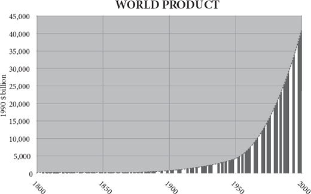
The phrase ‘diminishing returns’ is such a cliché that few give it much thought. Picking out the pecans from a bowl of salted nuts (a vice of mine) gives diminishing returns: the pieces of pecan in the bowl get rarer and smaller. The fingers keep finding almonds, hazelnuts, cashews or even – God forbid – Brazil nuts. Gradually the bowl, like a moribund gold mine, ceases to yield decent returns of pecan. Now imagine a bowl of nuts that had the opposite character. The more pecans you took, the larger and more numerous they grew. Implausible, I admit. Yet that is precisely the character of the human experience since 100,000 years ago. Inexorably, the global nut bowl has yielded ever more pecans, however many get used. The pace of acceleration of returns lurched upwards around 10,000 years ago in the agricultural revolution. It then lurched upwards again in AD 1800 and the acceleration continued in the twentieth century. The most fundamental feature of the modern world since 1800 – more profound than flight, radio, nuclear weapons or websites, more momentous than science, health, or material well-being – has been the continuing discovery of ‘increasing returns’ so rapid that they outpaced even the population explosion.
“回报递减” 这个短语是一个老生常谈的问题，很少有人会考虑它。从一碗盐渍坚果中挑出山核桃（我的一个恶习）的回报越来越少：碗中的山核桃碎片越来越少，越来越小。手指不断发现杏仁、榛子、腰果甚至是 —— 上帝保佑 —— 巴西坚果。渐渐地，这碗坚果就像一座奄奄一息的金矿，不再产生像样的山核桃回报。现在想象一下，一碗坚果的特性正好相反。你拿的山核桃越多，它们就越大、越多。我承认，这很不靠谱。然而，这正是 10 万年前以来人类经验的特点。无可奈何地，全球坚果碗里的山核桃越来越多，不管有多少被使用。在一万年前的农业革命中，收益加速的速度猛然上升。然后，在公元 1800 年，它又向上冲了一下，这种加速在 20 世纪继续。自 1800 年以来，现代世界最基本的特征 —— 比飞行、无线电、核武器或网站更深刻，比科学、健康或物质福利更重要 —— 是不断发现 “收益增加”，其速度甚至超过了人口爆炸。
The more you prosper, the more you can prosper. The more you invent, the more inventions become possible. How can this be possible? The world of things – of pecans or power stations – is indeed often subject to diminishing returns. But the world of ideas is not. The more knowledge you generate, the more you can generate. And the engine that is driving prosperity in the modern world is the accelerating generation of useful knowledge. So, for example, a bicycle is a thing and is subject to diminishing returns. One bicycle is very useful, but there is not much extra gain in having two, let alone three. But the idea ‘bicycle’ does not diminish in value. No matter how many times you tell somebody how to make or ride a bicycle, the idea will not grow stale or useless or fray at the edges. Like Thomas Jefferson’s candle flame, it gives without losing. Indeed, the very opposite happens. The more people you tell about bicycles, the more people will come back with useful new features for bicycles – mudguards, lighter frames, racing tyres, child seats, electric motors. The dissemination of useful knowledge causes that useful knowledge to breed more useful knowledge.
你越是繁荣，你就能越是繁荣。你的发明越多，就会有更多的发明成为可能。这怎么可能呢？物的世界 —— 山核桃或发电站 —— 确实经常受到收益递减的影响。但思想的世界则不然。你产生的知识越多，你能产生的就越多。而推动现代世界繁荣的引擎是有用知识的加速产生。因此，举例来说，自行车是一种东西，而且回报递减。一辆自行车非常有用，但拥有两辆就没有多少额外收益，更不用说三辆了。但 “自行车” 这个概念的价值不会减少。无论你告诉别人多少次如何制造或骑自行车，这个想法不会变得陈旧或无用或边缘磨损。就像托马斯·杰斐逊的蜡烛火焰一样，它不会失去。事实上，情况恰恰相反。你向越多的人介绍自行车，就会有越多的人回来为自行车提供有用的新功能 —— 挡泥板、更轻的框架、赛车轮胎、儿童座椅、电动马达。传播有用的知识会使这些有用的知识孕育出更多有用的知识。
Nobody predicted this. The pioneers of political economy expected eventual stagnation. Adam Smith, David Ricardo and Robert Malthus all foresaw that diminishing returns would eventually set in, that the improvement in living standards they were seeing would peter out. ‘The discovery, and useful application of machinery, always leads to the increase of the net produce of the country, although it may not, and will not, after an inconsiderable interval, increase the value of that net produce,’ said Ricardo: all tends towards what he called a ‘stationary state’. Even John Stuart Mill, conceding that returns were showing no signs of diminishing in the 1840s, put it down to a miracle, innovation, he said, was an external factor, a cause but not an effect of economic growth, an inexplicable slice of luck. And Mill’s optimism was not shared by his successors. As discovery began to slow, so competition would drive the profits of enterprise out of the increasingly perfect market till all that was left was rent and monopoly. With Smith’s invisible hand guiding infinite market participants possessed of perfect information to profitless equilibria and vanishing returns, neo-classical economics gloomily forecast the end of growth.
没有人预测到这一点。政治经济学的先驱们预计最终会出现停滞。亚当·斯密、大卫·李嘉图和罗伯特·马尔萨斯都预见到，收益递减最终会出现，他们看到的生活水平的提高会逐渐消失。李嘉图说：“机械的发现和有用的应用，总是导致国家净产品的增加，尽管它可能不会，也不会在一个不长的时间间隔后增加净产品的价值”，所有这些都倾向于他所谓的 “静止状态”。即使是约翰·斯图亚特·米尔（John Stuart Mill），也承认收益在 19 世纪 40 年代没有减少的迹象，但他把它归结为一个奇迹，他说，创新是一个外部因素，是经济增长的原因，但不是效果，是一个无法解释的运气片断。米尔的乐观主义并没有得到他的继任者的认同。随着发现开始放缓，竞争将把企业的利润赶出日益完善的市场，直到剩下的只是租金和垄断。随着斯密的无形之手将拥有完美信息的无限市场参与者引向无利可图的均衡和消失的回报，新古典经济学悲观地预测增长的结束。
It was a description of an entirely fictional world. The concept of a steady final state, applied to a dynamic system like the economy, is as wrong as any philosophical abstraction can be. It is Pareto piffle. As the economist Eamonn Butler puts it, the ‘perfect market is not just an abstraction; it’s plain daft ... Whenever you see the word equilibrium in a textbook, blot it out.’ It is wrong because it assumes perfect competition, perfect knowledge and perfect rationality, none of which do or can exist. It is the planned economy, not the market, that requires perfect knowledge.
这是对一个完全虚构的世界的描述。稳定的最终状态的概念，适用于像经济这样的动态系统，就像任何哲学抽象概念一样错误。它是帕累托式的废话。正如经济学家 埃蒙-巴特勒（Eamonn Butler）所说，“完美市场不仅仅是一个抽象的概念，它是非常愚蠢的。每当你在教科书上看到均衡这个词，就要把它抹掉。” 它是错误的，因为它假设了完美的竞争、完美的知识和完美的理性，这些都不存在，也不可能存在。需要完美知识的是计划经济，而不是市场。
The possibility of new knowledge makes the steady state impossible. Somewhere somebody will have a new idea and that idea will enable him to invent a new combination of atoms both to create and to exploit imperfections in the market. As Friedrich Hayek argued, knowledge is dispersed throughout society, because each person has a special perspective. Knowledge can never be gathered together in one place. It is collective, not individual. Yet the failure of any particular market to match the perfect market no more constitutes ‘market failure’ than the failure of a particular marriage to match the perfect marriage constitutes ‘marriage failure’.
新知识的可能性使稳定状态成为不可能。在某个地方，有人会有一个新的想法，这个想法将使他能够发明一个新的原子组合，既可以创造也可以利用市场的不完美。正如弗里德里希·哈耶克所认为的，知识分散在整个社会中，因为每个人都有一个特殊的视角。知识永远不可能被聚集在一个地方。它是集体的，而不是个人的。然而，任何特定的市场未能与完美的市场相匹配，并不构成 “市场失败”，就像特定的婚姻未能与完美的婚姻相匹配并不能构成 “婚姻失败” 一样。
In an exactly analogous way, the science of ecology has an enduring fallacy that in the natural world there is some perfect state of balance to which an ecosystem will return after disturbance. This obsession with ‘the balance of nature’ runs right through Western science, since even before Aristotle, and sees its recent expression in concepts like ecological climax, the natural vegetation that will clothe an area if it is left for long enough. But it is bunk. Take the place where I am sitting. Supposedly, its climax vegetation is oak forest, but the oaks only arrived a few thousand years ago, replacing the pines, the birch and before that the tundra. Just 18,000 years ago, where I sit was under a mile of ice, and 120,000 years ago it was a steaming swamp complete with hippos. Which of these is its ‘natural’ state? Besides, even if the climate settled down to an unvarying stability (something it has never done), oak saplings cannot thrive under oaks (oak-eating pests rain down on them), so after a few thousand years of oak domination an oak forest gives way to something else. Lake Victoria was bone-dry 15,000 years ago. The Great Barrier Reef was partly a range of coastal hills 20,000 years ago. The Amazon rainforest is in a state of constant perturbation: from tree falls to fires and floods, its diversity requires it to be constantly changing. There is no equilibrium in nature; there is only constant dynamism. As Heraclitus put it, ‘Nothing endures but change.’
以完全类似的方式，生态学有一个持久的谬论，即在自然界中有一些完美的平衡状态，生态系统在受到干扰后会恢复到这种状态。这种对 “自然平衡” 的迷恋贯穿了西方科学，甚至早于亚里士多德，并在最近的概念中得到了体现，如生态高潮，如果一个地区被放置足够长的时间，自然植被将被覆盖。但这是胡说八道。就拿我现在坐的地方来说吧。据称，它的高潮植被是橡树林，但橡树只是在几千年前才来到这里，取代了松树、桦树和之前的苔原。就在 1.8 万年前，我所坐的地方还在一英里的冰层之下，而 12 万年前，这里是一片热气腾腾的沼泽，还有河马。哪一个是它的 “自然” 状态？此外，即使气候稳定下来了（它从来没有这样做过），橡树苗也不能在橡树下茁壮成长（吃橡树的害虫会对它们下毒手），所以在橡树统治的几千年后，橡树森林会让位给其他东西。维多利亚湖在 15000 年前是干涸的。大堡礁的一部分在 2 万年前是一系列的沿海山丘。亚马逊雨林处于不断扰动的状态：从树木倒下到火灾和洪水，其多样性要求它不断变化。自然界中没有平衡，只有不断的动态。正如赫拉克利特（Heraclitus）所说，“除了变化，没有什么是可以持久的。”
Innovation is like a bush fire
创新就像一场丛林大火
To explain the modern global economy, then, you have to explain where this perpetual innovation machine came from. What kick-started the increasing returns? They were not planned, directed or ordered: they emerged, evolved, bottom-up, from specialisation and exchange. The accelerated exchange of ideas and people made possible by technology fuelled the accelerating growth of wealth that has characterised the past century. Politicians, capitalists and officials are flotsam bobbing upriver on the tidal bore of invention.
那么，要解释现代全球经济，你必须解释这台永恒的创新机器从何而来。是什么启动了越来越多的回报？它们不是有计划、有指导或有秩序的：它们是自下而上地从专业化和交流中出现、演变出来的。技术使思想和人员的加速交流成为可能，这助长了财富的加速增长，这也是上个世纪的特点。政治家、资本家和官员是在发明的浪潮中漂浮的浮萍。
Even so, the generation of new useful knowledge is very far from routine, uniform, steady or continuous. Although the human race as a whole has experienced incessant change, individual peoples saw a much more intermittent flickering progress because the pace and place of that change was itself always changing. Innovation is like a bush fire that burns brightly for a short time, then dies down before flaring up somewhere else. At 50,000 years ago, the hottest hot-spot was west Asia (ovens, bows-and-arrows), at 10,000 the Fertile Crescent (farming, pottery), at 5,000 Mesopotamia (metal, cities), at 2,000 India (textiles, zero), at 1,000 China (porcelain, printing), at 500 Italy (double-entry book-keeping, Leonardo), at 400 the Low Countries (the Amsterdam Exchange Bank), at 300 France (Canal du Midi), at 200 England (steam), at 100 Germany (fertiliser); at 75 America (mass production), at 50 California (credit card), at 25 Japan (Walkman). No country remains for long the leader in knowledge creation.
即便如此，新的有用知识的产生也远非常规、统一、稳定或持续。虽然人类作为一个整体经历了不间断的变化，但个别民族看到的是更断断续续的闪烁的进步，因为这种变化的速度和地点本身总是在变化。创新就像灌木丛中的火，在短时间内燃烧得很旺，然后在其他地方燃烧起来之前就熄灭了。在 5 万年前，最热的热点是西亚（烤炉、弓箭），1 万年的新月沃土（农业、陶器），5 千年前的美索不达米亚（金属、城市），2 千年前的印度（纺织品、零），1,000 年前的中国（瓷器、印刷），500 意大利（复式记账法、莱昂纳多），400 年前的低地国家（阿姆斯特丹外汇银行），300 年前的法国（米迪运河），200 年前的英国（蒸汽），100 年前的德国（化肥）。75 年前的美国（大规模生产），50 年前的加州（信用卡），25 年前的日本（随身听）。没有一个国家能长期保持在知识创造方面的领先地位。
At first blush, this is surprising, especially if increasing returns to innovation are possible. Why must the torch be passed elsewhere at all? As I have argued in the previous three chapters, the answer lies in two phenomena: institutions and population. In the past, when societies gorged on innovation, they soon allowed their babies to grow too numerous for their land, reducing the leisure, wealth and market that inventors needed (in effect, the merchant’s sons became struggling peasants again). Or they allowed their bureaucrats to write too many rules, their chiefs to wage too many wars, or their priests to build too many monasteries (in effect, the merchants’ sons became soldiers, sybarites or monks). Or they sank into finance and became parasitic rentiers. As Joel Mokyr puts it: ‘Prosperity and success led to the emergence of predators and parasites in various forms and guises who eventually slaughtered the geese that laid the golden eggs.’ Again and again, the flame of invention would splutter and die ... only to flare up elsewhere. The good news is that there is always a new torch lit. So far.
乍一看，这很令人惊讶，尤其是如果创新的回报增加是可能的。为什么火炬必须传到其他地方？正如我在前三章所论证的，答案在于两个现象：制度和人口。在过去，当社会在创新上大吃大喝时，他们很快就允许他们的婴儿对他们的土地来说长得太多，减少了发明家所需要的闲暇、财富和市场（实际上，商人的儿子们又变成了挣扎的农民）。或者他们允许他们的官僚写了太多的规则，他们的首领发动了太多的战争，或者他们的牧师建造了太多的寺院（实际上，商人的儿子们变成了士兵、僧侣或和尚）。或者他们沉沦于金融业，成为寄生性的租户。正如乔尔·莫克尔（Joel Mokyr）所说。“繁荣和成功导致了各种形式和伪装的掠夺者和寄生虫的出现，他们最终宰杀了下金蛋的鹅。发明的火焰一次又一次地溅起并消亡…… 只是在其他地方燃起。” 好消息是，总是有新的火炬被点燃。到目前为止。
Just as it is true that the bush fire breaks out in different parts of the world at different times, so it leaps from technology to technology. Today, just as during the printing revolution of 500 years ago, communications is aflame with increasing returns, but transport is spluttering with diminishing returns. That is to say, the speed and efficiency of cars and aeroplanes are only very slowly improving and each improvement is incrementally more expensive. A greater and greater amount of effort is needed to squeeze the next few miles per gallon out of vehicles of any kind, whereas each tranche of extra megabits comes more cheaply for now. Very roughly, the best industry to be in as an innovator was: 1800 – textiles; 1830 – railways; 1860 – chemicals; 1890 – electricity; 1920 – cars; 1950 – aeroplanes; 1980 – computers; 2010 – the web. Whereas the nineteenth century saw a rash of new ways to move people about (railways, bicycles, cars, steam ships), the twentieth century saw a rash of new ways to move information about (telephones, radio, television, satellites, fax, the internet, mobile telephones). Admittedly, the telegraph came long before the aeroplane, but the general point stands. The satellite is a neat example of a technology invented as a by-product of a transport project (space travel), which found a use in communications instead. Increasing returns would indeed peter out if innovators did not have a new wave to catch every thirty years, it seems.
就像丛林大火在世界不同地区不同时间爆发一样，它也在技术与技术之间跳跃。今天，就像 500 年前的印刷革命时期一样，通信业因收益增加而火热，但运输业却因收益减少而陷入困境。也就是说，汽车和飞机的速度和效率只是非常缓慢地提高，而且每一次改进都是渐进式的昂贵。为了从任何类型的车辆中挤出下一个几英里/加仑，需要付出越来越大的努力，而现在每一批额外的兆比特都是比较便宜的。非常粗略地讲，作为创新者的最佳行业是：1800 年 —— 纺织品；1830 年 —— 铁路；1860 年 —— 化学品；1890 年 —— 电力；1920 年 —— 汽车；1950 年 —— 飞机；1980 年 —— 计算机；2010 年 —— 网络。十九世纪出现了大量移动人的新方式（铁路、自行车、汽车、蒸汽船），而二十世纪则出现了大量移动信息的新方式（电话、广播、电视、卫星、传真、互联网、移动电话）。诚然，电报比飞机早出现，但总的来说，这一点是成立的。卫星是一个很好的例子，它是作为一个运输项目（太空旅行）的副产品而发明的技术，而在通信中找到了用途。如果创新者不是每隔三十年就有一次新的浪潮，那么收益的增加确实会逐渐消失。
Note that the greatest impact of an increasing-return wave comes long after the technology is first invented. It comes when the technology is democratised. Gutenberg’s printing press took decades to generate the Reformation. Today’s container ships go not much faster than a nineteenth-century steamship and today’s internet sends each pulse little quicker than a nineteenth-century telegraph – but everybody is using them, not just the rich. Jets travel at the same speeds as they did in the 1970s, but budget airlines are new. As long ago as 1944, George Orwell was tired of the way the world appeared to be shrinking, supposedly a modern event. After reading what he called a ‘batch of rather shallowly optimistic “progressive” books’, he was struck by the repetition of certain phrases which had been fashionable before 1914. The phrases included the ‘abolition of distance’ and the ‘disappearance of frontiers’.
请注意，回报率上升的浪潮的最大影响是在技术首次被发明后很久才出现。当技术被民主化的时候，它就会出现。古腾堡的印刷机花了几十年的时间才促成了宗教改革。今天的集装箱船比十九世纪的蒸汽船快不了多少，今天的互联网发送每个脉冲的速度比十九世纪的电报快不了多少 —— 但每个人都在使用它们，不仅仅是富人。喷气机的飞行速度与 20 世纪 70 年代相同，但廉价航空公司是新事物。早在 1944 年，乔治·奥威尔（George Orwell）就对世界似乎正在缩小的方式感到厌倦，这应该是一个现代事件。在阅读了他所谓的 “一批相当肤浅乐观的” 进步 “书籍” 之后，他对某些在 1914 年之前就很流行的短语的重复感到震惊。这些短语包括 “距离的废除” 和 “边界的消失”。
But Orwell’s scepticism misses the point. It is not the speed but the cost – in terms of hours of work – that counts. The death of distance may not be new, but it has been made affordable to all. Speed was once a luxury. In Orwell’s day only the richest or most politically powerful could afford to travel by air or to import exotic goods or make an international telephone call. Now almost everybody can afford the cheap goods carried by container ships; almost everybody can afford the internet; almost everybody can afford to travel by jet. When I was young a transatlantic telephone call was absurdly expensive; now a transpacific email is absurdly cheap. The story of the twentieth century was the story of giving everybody access to the privileges of the rich, both by making people richer and by making services cheaper.
但奥威尔的怀疑主义忽略了一点。重要的不是速度，而是成本 —— 以工作时间计算的成本。距离的死亡可能并不新鲜，但它已经成为所有人都能负担得起的。速度曾经是一种奢侈品。在奥威尔的时代，只有最富有的人或最有政治权力的人能够负担得起航空旅行或进口异国货物或打国际电话。现在，几乎每个人都能负担得起集装箱船运载的廉价货物；几乎每个人都能负担得起互联网；几乎每个人都能负担得起乘飞机旅行。在我年轻的时候，打一个跨大西洋的电话贵得离谱；现在，发一封跨太平洋的电子邮件却便宜得离谱。二十世纪的故事是让每个人都能享受到富人的特权，既让人们更富有，又让服务更便宜。
Likewise, when the credit card took off in California in the 1960s, driven by Joseph Williams of Bank of America, there was nothing new about buying on credit. It was as old as Babylon. There was not even anything new about charge cards. Diner’s Club had been issuing cards for the convenience of restaurant users since the early 1950s and department stores for longer than that. What the BankAmericard achieved, especially once it emerged as Visa from the chaos of the mass mailings in the late 1960s, under Dee Hock’s reinvention, was the democratisation of credit. The electronic possibility that your card could be authorised for a purchase anywhere in the country or even the world was a powerful lubricant to specialisation and exchange in the economy of the late twentieth century, allowing consumers to express their choice to borrow against future earnings when it made sense. There was, of course, irresponsibility, but the credit card did not lead, as most intellectual grandees had feared, to financial chaos. In the early 1970s, when credit cards were new, politicians of all stripes denounced them as unsound, unsafe and predatory, a view widely shared even by those who used the cards themselves: Lewis Mandell discovered that Americans were ‘far more likely to use credit cards than to approve of them’.
同样，当信用卡在美国银行的约瑟夫·威廉姆斯的推动下于 20 世纪 60 年代在加利福尼亚起飞时，赊购并不是什么新鲜事。它就像巴比伦一样古老。甚至收费卡也没有什么新意。自 20 世纪 50 年代初，Diner's Club 就已经开始为餐馆用户发行卡片，而百货公司的发行时间也比这更长。BankAmericard 所取得的成就，特别是当它在 1960 年代末，在迪·霍克（Dee Hock）的重塑下，作为 Visa 从混乱的大量邮件中出现时，是信贷的民主化。你的卡可以在全国甚至全世界的任何地方被授权购买，这种电子化的可能性是 20 世纪末经济中专业化和交换的强大润滑剂，允许消费者在有意义的时候表达他们对未来收入的借贷选择。当然，也有不负责任的情况，但信用卡并没有像大多数知识分子所担心的那样，导致金融混乱。在 20 世纪 70 年代初，当信用卡刚刚出现时，各种政治家都谴责它们是不健全的、不安全的和掠夺性的，甚至那些自己使用信用卡的人也广泛认同这种观点。刘易斯·曼德尔（Lewis Mandell）发现，美国人 “使用信用卡的可能性远远大于对它们的认可”。
This nicely captures the paradox of the modern world, that people embrace technological change and hate it at the same time. ‘People don’t like change,’ Michael Crichton once told me, ‘and the notion that technology is exciting is true for only a handful of people. The rest are depressed or annoyed by the changes.’ Pity the inventor’s lot then. He is the source of society’s enrichment and yet nobody likes what he does. ‘When a new invention is first propounded,’ said William Petty in 1679, ‘in the beginning every man objects and the poor inventor runs the gauntloop of all petulant wits.’
这很好地抓住了现代世界的悖论，即人们在拥抱技术变革的同时也讨厌它。人们不喜欢变化，迈克尔·克莱顿曾经告诉我，“技术是令人兴奋的概念只对少数人是真的。其余的人对这些变化感到沮丧或恼火。” 可怜的是发明家的命运。他是社会财富的来源，但却没有人喜欢他的工作。威廉·佩蒂（William Petty）在 1679 年说：“当一项新的发明被首次提出时，一开始每个人都会反对，而可怜的发明家则会被所有的小聪明吓跑。”
What is the flywheel of the perpetual innovation machine that drives the modern world? Why has innovation become routine and how was it that in Alfred North Whitehead’s words, ‘the greatest invention of the nineteenth century was the invention of the method of invention’? Is it down to the expansion of science, the application of money, the granting of intellectual property or is it something else, something much more bottom-up?
驱动现代世界的永久创新机器的飞轮是什么？为什么创新已经成为例行公事，用阿尔弗雷德·诺斯·怀特海（Alfred North Whitehead）的话说，“19 世纪最伟大的发明是发明方法的发明”，这是怎么回事？它是归功于科学的扩展、金钱的应用、知识产权的授予，还是其他的东西，更多自下而上的东西？
Driven by science?
由科学驱动？
Much as I love science for its own sake, I find it hard to argue that discovery necessarily precedes invention and that most new practical applications flow from the minting of esoteric insights by natural philosophers. Francis Bacon was the first to make the case that inventors are applying the work of discoverers, and that science is the father of invention. As the scientist Terence Kealey has observed, modern politicians are in thrall to Bacon. They believe that the recipe for making new ideas is easy: pour public money into science, which is a public good, because nobody will pay for the generation of ideas if the taxpayer does not, and watch new technologies emerge from the downstream end of the pipe. Trouble is, there are two false premises here: first, science is much more like the daughter than the mother of technology; and second, it does not follow that only the taxpayer will pay for ideas in science.
尽管我很喜欢科学本身，但我发现很难说发现必然先于发明，而且大多数新的实际应用都来自自然哲学家对深奥见解的铸造。弗朗西斯·培根（Francis Bacon）是第一个提出发明者正在应用发现者的工作的人，科学是发明之父。正如科学家特伦斯-凯利（Terence Kealey）所观察到的，现代政治家们对培根情有独钟。他们认为创造新思想的秘诀很简单：将公共资金投入科学，这是一种公共产品，因为如果纳税人不为思想的产生买单，就不会有人为之买单，然后看着新技术从管道的下游一端出现。麻烦的是，这里有两个错误的前提：第一，科学更像是技术的女儿，而不是技术的母亲；第二，并不是说只有纳税人才会为科学中的想法付费。
It used to be popular to argue that the European scientific revolution of the seventeenth century unleashed the rational curiosity of the educated classes, whose theories were then applied in the form of new technologies, which in turn allowed standards of living to rise. China, on this theory, somehow lacked this leap to scientific curiosity and philosophical discipline, so it failed to build on its technological lead. But history shows that this is back-to-front. Few of the inventions that made the industrial revolution owed anything to scientific theory.
过去流行的说法是，17 世纪的欧洲科学革命释放了受教育阶层的理性好奇心，他们的理论随后以新技术的形式得到应用，这反过来又使生活水平得以提高。根据这一理论，中国在某种程度上缺乏这种对科学好奇心和哲学纪律的飞跃，所以它没能在技术上取得领先。但历史表明，这是背对背的。很少有使工业革命的发明归功于科学理论。
It is, of course, true that England had a scientific revolution in the late 1600s, personified in people like Harvey, Hooke and Halley, not to mention Boyle, Petty and Newton, but their influence on what happened in England’s manufacturing industry in the following century was negligible. Newton had more influence on Voltaire than he did on James Hargreaves. The industry that was transformed first and most, cotton spinning and weaving, was of little interest to scientists and vice versa. The jennies, gins, frames, mules and looms that revolutionised the working of cotton were invented by tinkering businessmen, not thinking boffins: by ‘hard heads and clever fingers’. It has been said that nothing in their designs would have puzzled Archimedes.
当然，英国在 16 世纪末确实有一场科学革命，体现在哈维（Harvey）、胡克（Hooke）和哈雷（Halley）等人身上，更不用说波义耳（Boyle）、佩蒂（Petty）和牛顿（Newton）了，但他们对英国制造业在下一世纪发生的事情的影响可以忽略不计。牛顿对伏尔泰（Voltaire）的影响比他对詹姆斯·哈格里夫斯（James Hargreaves）的影响更大。棉纺和织造业是最先和最多被改造的行业，科学家对其兴趣不大，反之亦然。彻底改变了棉花生产的珍妮机、轧花机、框架、骡子和织布机是由修修补补的商人发明的，而不是由 “聪明的脑袋和聪明的手指” 发明的。有人说，他们的设计中没有任何东西会让阿基米德感到困惑。
Likewise, of the four men who made the biggest advances in the steam engine – Thomas Newcomen, James Watt, Richard Trevithick and George Stephenson – three were utterly ignorant of scientific theories, and historians disagree about whether the fourth, Watt, derived any influence from theory at all. It was they who made possible the theories of the vacuum and the laws of thermodynamics, not vice versa. Denis Papin, their Frenchborn forerunner, was a scientist, but he got his insights from building an engine rather than the other way round. Heroic efforts by eighteenth-century scientists to prove that Newcomen got his chief insights from Papin’s theories proved wholly unsuccessful.
同样，在蒸汽机方面取得最大进步的四个人中 —— 托马斯·纽科门（Thomas Newcomen）、詹姆斯·瓦特（James Watt）、理查德·特雷维西克（Richard Trevithick）和乔治·史蒂芬森（George Stephenson）—— 有三个人完全不了解科学理论，而历史学家对第四个人瓦特是否从理论中获得任何影响也存在分歧。正是他们使真空和热力学定律的理论成为可能，而不是相反。丹尼斯·帕宾（Denis Papin），他们在法国出生的先驱，是一位科学家，但他从制造发动机中获得了他的洞察力，而不是相反。十八世纪的科学家们为证明纽科门从帕宾的理论中得到他的主要见解所做的英勇努力被证明是完全不成功的。
Throughout the industrial revolution, scientists were the beneficiaries of new technology, much more than they were the benefactors. Even at the famous Lunar Society, where the industrial entrepreneur Josiah Wedgwood liked to rub shoulders with natural philosophers like Erasmus Darwin and Joseph Priestley, he got his best idea – the ‘rose-turning’ lathe – from a fellow factory owner, Matthew Boulton. And although Benjamin Franklin’s fertile mind generated many inventions based on principles, from lightning rods to bifocal spectacles, none led to the founding of industries.
在整个工业革命中，科学家是新技术的受益者，而不是捐助者。即使在著名的月球协会，工业企业家乔赛亚·韦奇伍德（Josiah Wedgwood）喜欢与伊拉斯谟·达尔文（Erasmus Darwin）和约瑟夫·普里斯特利（Joseph Priestley）等自然哲学家擦肩而过，他的最佳创意 —— “旋转玫瑰” 车床 —— 也是来自一位同厂老板马修·鲍尔顿（Matthew Boulton）。尽管本杰明·富兰克林（Benjamin Franklin）丰富的头脑产生了许多基于原理的发明，从避雷针到双焦眼镜，但没有一个导致了工业的建立。
So top-down science played little part in the early years of the industrial revolution. In any case, English scientific virtuosity dries up at the key moment. Can you name a single great English scientific discovery of the first half of the eighteenth century? It was an especially barren time for natural philosophers, even in Britain. No, the industrial revolution was not sparked by some deus ex machina of scientific inspiration. Later science did contribute to the gathering pace of invention and the line between discovery and invention became increasingly blurred as the nineteenth century wore on. Thus only when the principles of electrical transmission were understood could the telegraph be perfected; once coal miners understood the succession of geological strata, they knew better where to sink new mines; once benzene’s ring structure was known, manufacturers could design dyes rather than serendipitously stumble on them. And so on. But even most of this was, in Joel Mokyr’s words, ‘a semidirected, groping, bumbling process of trial and error by clever, dexterous professionals with a vague but gradually clearer notion of the processes at work’. It is a stretch to call most of this science, however. It is what happens today in the garages and cafés of Silicon Valley, but not in the labs of Stanford University.
因此，自上而下的科学在工业革命的早期没有发挥什么作用。无论如何，英国人的科学才能在关键时刻枯竭了。你能说出 18 世纪上半叶英国的一个伟大的科学发现吗？对自然哲学家来说，那是一个特别贫瘠的时代，即使在英国也是如此。不，工业革命不是由一些科学灵感的神机妙算引发的。后来的科学确实促进了发明步伐的加快，而且随着十九世纪的到来，发现和发明之间的界限变得越来越模糊。因此，只有在了解了电力传输的原理之后，电报才能得到完善；一旦煤矿工人了解了地质层的连续性，他们就能更好地知道在哪里开采新矿；一旦知道了苯的环状结构，制造商就能设计出染料，而不是偶然地发现它们。等等。但是，用乔尔·莫克尔（Joel Mokyr）的话说，即使是其中的大部分，也是 “一个由聪明、灵巧的专业人士进行的半指导性的、摸索性的、笨拙的试错过程，他们对工作过程的概念模糊但逐渐清晰。” 然而，将这一过程的大部分称为科学是不恰当的。这就是今天在硅谷的车库和咖啡馆里发生的事情，但不是在斯坦福大学的实验室里。
The twentieth century, too, is replete with technologies that owe just as little to philosophy and to universities as the cotton industry did: flight, solid-state electronics, software. To which scientist would you give credit for the mobile telephone or the search engine or the blog? In a lecture on serendipity in 2007, the Cambridge physicist Sir Richard Friend, citing the example of high-temperature superconductivity – which was stumbled upon in the 1980s and explained afterwards – admitted that even today scientists’ job is really to come along and explain the empirical findings of technological tinkerers after they have discovered something.
二十世纪也充满了各种技术，这些技术对哲学和大学的贡献和对棉花工业的贡献一样小：飞行、固态电子、软件。你会把移动电话、搜索引擎或博客归功于哪位科学家？在 2007 年关于偶然性的演讲中，剑桥大学物理学家理查德·弗兰德（Richard Friend）爵士以高温超导为例 —— 它是在 20 世纪 80 年代偶然发现的，并在之后得到了解释 —— 他承认，即使在今天，科学家的工作实际上是在技术修补者发现了一些东西之后，来解释他们的经验发现。
The inescapable fact is that most technological change comes from attempts to improve existing technology. It happens on the shop floor among apprentices and mechanicals, or in the workplace among the users of computer programs, and only rarely as a result of the application and transfer of knowledge from the ivory towers of the intelligentsia. This is not to condemn science as useless. The seventeenth-century discoveries of gravity and the circulation of the blood were splendid additions to the sum of human knowledge. But they did less to raise standards of living than the cotton gin and the steam engine. And even the later stages of the industrial revolution are replete with examples of technologies that were developed in remarkable ignorance of why they worked. This was especially true in the biological world. Aspirin was curing headaches for more than a century before anybody had the faintest idea of how. Penicillin’s ability to kill bacteria was finally understood around the time bacteria learnt to defeat it. Lime juice was preventing scurvy centuries before the discovery of vitamin C. Food was being preserved by canning long before anybody had any germ theory to explain why it helped.
一个不可回避的事实是，大多数技术变革来自于改进现有技术的尝试。它发生在车间里的学徒和机械师中，或发生在工作场所的计算机程序用户中，只有极少数是由于知识分子的象牙塔中的知识应用和转让的结果。这并不是要谴责科学无用。十七世纪关于重力和血液循环的发现是对人类知识总量的辉煌补充。但它们在提高生活水平方面所起的作用还不如轧棉机和蒸汽机。甚至在工业革命的后期阶段，也有很多技术是在非常无知的情况下开发出来的，不知道它们为什么能发挥作用。这在生物界尤其如此。阿司匹林治疗头痛已有一个多世纪了，当时还没有人知道它的作用。青霉素杀死细菌的能力在细菌学会打败细菌的时候终于被理解。在发现维生素 C 之前几个世纪，酸橙汁就已经在预防坏血病了。在人们有任何细菌理论来解释为什么它有帮助之前，食品就已经通过罐头来保存了。
Capital?
资本？
Perhaps money is the answer to the question of what drives the innovation engine. The way to incentivise innovation, as any Silicon Valley venture capitalist will tell you, is to bring capital and talent together. For most of history, people have been adept at keeping them apart. Inventors will always go where the money can be found to back them. One of Britain’s advantages in the eighteenth century was that it was accumulating a collective fortune, made from foreign trade, and a comparatively efficient capital market to distribute funds to innovators. More specifically, the industrial revolution required long-term investment in capital equipment that could not easily be liquidated – factories and machines, for the most part. More than other countries, Britain’s capital markets were in a position to supply this investment in the eighteenth century. London had managed to borrow from Amsterdam and nurture in the eighteenth century joint-stock, limited liability companies, liquid markets in bonds and shares, and a banking system capable of generating credit. These helped to give inventors the wherewithal to turn their ideas into products. By contrast in France capital markets were haunted by John Law’s failure, banks haunted by Louis XIV’s defaults, and corporate law haunted by the arbitrary extortions of tax farmers.
也许金钱是驱动创新引擎问题的答案。正如任何硅谷的风险投资家会告诉你的那样，激励创新的方法是将资本和人才结合起来。在历史上的大部分时间里，人们一直善于把它们分开。发明家总是会去能找到资金支持的地方。英国在 18 世纪的优势之一是，它正在积累一笔集体财富，这些财富来自于对外贸易，以及一个相对有效的资本市场，将资金分配给创新者。更具体地说，工业革命需要对不容易变现的资本设备进行长期投资 —— 大部分是工厂和机器。与其他国家相比，英国的资本市场在 18 世纪更有能力提供这种投资。伦敦设法从阿姆斯特丹借来了资金，并在 18 世纪培育了股份制、有限责任公司、流动的债券和股票市场，以及能够产生信贷的银行系统。这些都有助于为发明家提供资金，将他们的想法变成产品。相比之下，法国的资本市场被约翰·劳的失败所困扰，银行被路易十四的违约所困扰，而公司法则被税农的任意勒索所困扰。
In an eerie repetition of the same pattern, Silicon Valley owes much of its explosion of novelty to its venture capitalists on Sandhill Road. Where would Amazon, Compaq, Genentech, Google, Netscape and Sun be without Kleiner Perkins Caulfield? It is no coincidence that the growth of technology industries took off after the mid-1970s when Congress freed pension funds and non-profits to invest some of their assets in venture funds. California is not the birthplace of entrepreneurs; it is the place they go to do their enterprising; fully one-third of successful start-ups in California between 1980 and 2000 had Indian- or Chinese-born founders.
在同一模式的阴森重复中，硅谷的新奇事物的爆发在很大程度上归功于其在沙山路上的风险资本家。如果没有小帕金斯·考尔菲尔德（Kleiner Perkins Caulfield），亚马逊、康柏、基因技术、谷歌、网景和太阳公司会在哪里？20 世纪 70 年代中期以后，国会解放了养老基金和非营利组织，允许它们将部分资产投资于风险基金，科技产业的发展腾飞，这并非巧合。加州不是企业家的出生地，而是他们进行创业的地方；1980 年至 2000 年期间，加州有三分之一的成功创业公司的创始人是印度或中国人。
In imperial Rome, no doubt scores of unknown slaves knew how to make better olive presses, better watermills and better wool looms, while scores of plutocrats knew how to save, invest and consume. But the two lived miles apart, separated by venal middlemen who had no desire to bring them together. A telling anecdote about glass repeated by several Roman authors rather drives home the point. A man demonstrates to the emperor Tiberius his invention of an unbreakable form of glass, hoping for a reward. Tiberius asks if anybody else knows his secret and is assured nobody does. So Tiberius beheads the man to prevent the new material reducing the relative value of gold to that of mud. The moral of the tale – whether it is true or not – is not just that Roman inventors receive negative reward for their pains, but that venture capital was so scarce, the only way to get a new idea funded was to go to the emperor. Imperial China, too, sent strong signals of discouragement to anybody whose inventiveness challenged the status quo. A Christian missionary in Ming China wrote: ‘Any man of genius is paralysed immediately by the thought that his efforts will bring him punishment rather than rewards.’
在帝国罗马，毫无疑问，几十个不知名的奴隶知道如何制造更好的橄榄榨汁机、更好的水磨和更好的羊毛织机，而几十个财阀知道如何储蓄、投资和消费。但这两者相距甚远，被那些无意将他们聚在一起的中间人分隔开来。一些罗马作家重复了一个关于玻璃的有趣的轶事，反而使人明白了这个问题。一个人向皇帝提比略（Tiberius）展示了他发明的一种牢不可破的玻璃，希望得到奖励。提比略问是否有其他人知道他的秘密，并保证没有人知道。于是，提比略将此人斩首，以防止这种新材料将黄金的相对价值降低到泥土的水平。这个故事的寓意 —— 无论它是真是假 —— 不仅仅是罗马的发明家因其努力而获得了消极的回报，而是风险资本如此稀缺，要想让一个新的想法得到资助，唯一的办法就是去找皇帝。帝国中国也对任何挑战现状的发明家发出了强烈的劝阻信号。一位在明朝的基督教传教士写道：“任何天才的人都会因为想到他的努力会给他带来惩罚而不是回报而立即瘫痪。”
The financing of innovation gradually moved inside firms in the twentieth century. Private sector companies, haunted by the Schumpeterian fear that innovation can pull their whole market from them, and equally dazzled by dreams that they can pull the whole market from under their rivals, had gradually learnt to sew innovation into their culture and to set aside budgets for it. Corporate research and development budgets are only a century old and they have been growing pretty steadily all that time. The proportion of GDP spent by firms on research and development in America has more than doubled, to nearly 3 per cent, over the past half-century. Little wonder that there has been a corresponding increase in invention and application.
二十世纪，创新的资金逐渐转移到公司内部。私营部门的公司被熊彼特式的恐惧所困扰，担心创新会把他们的整个市场从他们手中夺走，同时也被他们能把整个市场从对手手中夺走的梦想所迷惑，逐渐学会了把创新缝进他们的文化，并为它留出预算。企业的研究和开发预算只有一个世纪的历史，而且在这段时间里一直在稳步增长。在过去的半个世纪里，美国企业用于研究和开发的费用占国内生产总值的比例增加了一倍多，达到近 3%。难怪发明和应用都有相应的增长。
Delve beneath the statistical surface though, and the picture changes. Far from being able to spend their way into novelty and growth, companies are perpetually discovering that their R&D budgets get captured by increasingly defensive and complacent corporate bureaucrats, who spend them on low-risk, dull projects and fail to notice gigantic new opportunities, which thereby turn into threats. The pharmaceutical industry, having tried again and again to instil a sense of radical thinking into its research departments, has largely given up the attempt and now simply buys up small firms that have developed big ideas. The history of the computer industry is littered with examples of big opportunities missed by dominant players, which thereby find themselves challenged by fast-growing new rivals – IBM, Digital Equipment, Apple, Microsoft. Even Google will suffer this fate. The great innovators are still usually outsiders.
但是，如果深入到统计表的下面，情况就会发生变化。公司远不能通过花钱来获得新意和增长，而是不断发现他们的研发预算被越来越多的防御性和自满的公司官僚所占据，他们把预算花在低风险、乏味的项目上，而没有注意到巨大的新机会，从而变成了威胁。制药工业在一次又一次地尝试向其研究部门灌输激进的思维意识之后，基本上已经放弃了这种尝试，现在只是简单地收购那些已经开发出大创意的小公司。计算机行业的历史充满了这样的例子：主导者错过了大好机会，从而发现自己受到快速增长的新对手的挑战 —— IBM、数字设备公司、苹果、微软。甚至谷歌也会遭受这种命运。伟大的创新者通常仍然是外来者。
Though they may start out full of entrepreneurial zeal, once firms or bureaucracies grow large, they become risk-averse to the point of Luddism. The pioneer venture capitalist Georges Doriot said that the most dangerous moment in the life of a company was when it had succeeded, for then it stopped innovating. ‘This telephone has too many shortcomings to be considered as a means of communication. The device is of inherently no value to us,’ read a Western Union internal memo in 1876. That is why Apple, not IBM, perfected the personal computer, why the Wright brothers, not the French army, invented powered flight, why Jonas Salk, not the British National Health Service, invented a polio vaccine, why Amazon, not the Post Office, invented one-click ordering and why a Finnish lumber-supply company, not a national telephone monopoly, became the world leader in mobile telephony.
虽然他们一开始可能充满了创业的热情，但一旦公司或官僚机构发展壮大，他们就会变得规避风险，甚至到了鲁莽的程度。先驱风险资本家乔治·多里特（Georges Doriot）说，一个公司生命中最危险的时刻是它成功的时候，因为那时它停止了创新。“这种电话有太多的缺点，不能被视为一种通信手段。这个设备对我们来说本来就没有价值。”1876 年，西联公司的一份内部备忘录写道。这就是为什么苹果而不是 IBM 完善了个人电脑，为什么莱特兄弟（Wright brothers）而不是法国军队发明了动力飞行，为什么乔纳斯·索尔克（Jonas Salk）而不是英国国家卫生局发明了脊髓灰质炎疫苗，为什么亚马逊而不是邮局发明了一键订购，为什么芬兰的一家木材供应公司而不是国家电话垄断公司成为移动电话的世界领导者。
One solution is for companies to try to set their employees free to behave like entrepreneurs. Sony did this after it discovered in the 1990s that its famously pioneering technologists had succumbed to a ‘not-invented-here’ mentality. General Electric under Jack Welch managed it for a while by fragmenting the company into smaller competing units. 3M – flush with success after its employee Art Fry dreamed up the idea of nonstick sticky notes (Post-its) while trying to mark the place in his hymn book in church in 1980 – told its technologists to spend 15 per cent of their time working on their own projects and by harvesting customers’ ideas.
一个解决方案是公司尝试让他们的员工自由地像企业家一样行事。索尼公司在 20 世纪 90 年代发现其著名的先锋技术专家屈服于 “不是在这里发明的” 心态后，就这样做了。杰克·韦尔奇（Jack Welch）领导的通用电气公司（General Electric）通过将公司分割成较小的竞争单位，在一段时间内实现了这一点。1980 年，3M 公司的员工阿特·弗莱（Art Fry）在教堂里试图在他的赞美诗书上标记位置时，梦想出了不粘性便条（Post-its）的想法，此后 3M 公司取得了巨大的成功，它告诉其技术人员要把 15% 的时间用于自己的项目和收集客户的想法。
Another solution is to out-source problems to be solved by a virtual market of inventors with the promise of a prize, as the British government did with the problem of measuring longitude at sea in the eighteenth century. The internet has revived this possibility in recent years. Sites like Innocentive and yet2.com allow companies both to post problems they cannot solve, promising rewards for their solution, and to post technologies they have invented that are looking for applications. Retired engineers can make good money and have good fun pitting their wits on a freelance basis through such sites. The old model of in-house R&D will surely rapidly give way to this marketplace in innovation, or ‘idea-agora’ as Don Tapscott and Anthony Williams call it.
另一个解决方案是将问题外包出去，由一个虚拟的发明家市场来解决，并承诺给予奖励，就像英国政府在 18 世纪对海上测量经度的问题所做的那样。近年来，互联网恢复了这种可能性。像 Innocentive 和 yet2.com 这样的网站允许公司发布他们无法解决的问题，承诺对他们的解决方案给予奖励，并发布他们已经发明的、正在寻找应用的技术。退休的工程师们可以通过这些网站以自由职业者的身份赚取丰厚的收入，并获得乐趣。旧的内部研发模式肯定会迅速让位于这种创新市场，或唐·塔普斯科特（Don Tapscott）和安东尼·威廉姆斯（Anthony Williams）所说的 “想法·阿戈拉”（idea-agora）。
Money is certainly important in driving innovation, but it is by no means paramount. Even in the most entrepreneurial of economies, very little saving finds its way to innovators. Victorian British inventors lived under a regime that spent a large proportion of its outgoings on interest payments, in effect sending a signal that the safest thing for rich folk to do with their money was to collect rent on it from taxes on trade. Today, plenty of money is wasted on research that does not develop, and plenty of discoveries are made without the application of much money. When Mark Zuckerberg invented Facebook in 2004 as a Harvard student, he needed very little R&D expenditure. Even when expanding it into a business, his first investment of $500,000 from Peter Thiel, founder of Paypal, was tiny compared with what entrepreneurs needed in the age of steam or railways.
在推动创新方面，钱当然很重要，但它绝不是最重要的。即使是在最具创业精神的经济体中，也只有很少的储蓄能送到创新者手中。维多利亚时代的英国发明家生活在一个将很大一部分支出用于支付利息的制度下，这实际上发出了一个信号，即富人用他们的钱做的最安全的事情是通过贸易税来收取租金。今天，大量的钱被浪费在没有发展的研究上，大量的发现没有应用多少钱就被发现了。当马克·扎克伯格在 2004 年作为哈佛大学的学生发明了 Facebook 时，他只需要很少的研发支出。即使在将其扩展为企业时，他从 Paypal 创始人彼得·蒂尔那里获得的第一笔 50 万美元的投资，与蒸汽或铁路时代的企业家所需的资金相比，也是微不足道的。
Intellectual property?
知识产权？
Perhaps property is the answer. Inventors will not invent unless they can keep at least some of the proceeds of their inventions. After all, somebody will not invest time and effort in planting a crop in his field if he cannot expect to harvest it and keep the profit for himself – a fact Stalin, Mao and Robert Mugabe learned the hard way – so surely nobody will invest time and effort in developing a new tool or building a new kind of organisation if he cannot keep at least some of the rewards for himself.
也许财产就是答案。除非发明者能够至少保留其发明的部分收益，否则他们不会进行发明。毕竟，如果某人不能指望收获并将利润据为己有，他就不会投入时间和精力在自己的田地里种植庄稼 —— 斯大林、毛泽东和罗伯特·穆加贝（Robert Mugabe）以艰难的方式学到了这个事实 —— 因此，如果不能至少为自己保留一些回报，肯定没有人会投入时间和精力开发一种新工具或建立一种新的组织。
Yet intellectual property is very different from real property, because it is useless if you keep it to yourself. The abstract concept can be infinitely shared. This creates an apparent dilemma for those who would encourage inventors. People get rich by selling each other things (and services), not ideas. Manufacture the best bicycles and you profit handsomely; come up with the idea of the bicycle and you get nothing because it is soon copied. If innovators are people who make ideas, rather than things, how can they profit from them? Does society need to invent a special mechanism to surround new ideas with fences, to make them more like houses and fields? If so, how are ideas to spread?
然而，知识产权与真正的财产非常不同，因为如果你把它留给自己，它就没有用。抽象的概念可以被无限地分享。这给那些鼓励发明家的人造成了一个明显的两难局面。人们通过互相出售东西（和服务）而不是想法而致富。制造最好的自行车，你就能获得丰厚的利润；想出自行车的想法，你就什么也得不到，因为它很快就被复制了。如果创新者是制造想法而不是东西的人，他们怎么能从中获利？社会是否需要发明一种特殊的机制，用栅栏围住新的想法，使它们更像房屋和田地？如果是这样，思想如何传播？
There are several ways to turn ideas into property. You can keep the recipe secret, as John Pemberton did for Coca-Cola in 1886. This works well where it is hard for rivals to ‘reverse-engineer’ your secrets by dismantling your products. Machinery, by contrast, betrays its secrets too easily. The British pioneers of industrial textile manufacture largely failed in their attempts to use trade secrecy laws to protect themselves. Though customs officers searched foreigners’ possessions for plans of machinery, New Englanders like Francis Cabot Lowell sauntered innocently about the mills of Lancashire and Scotland ostensibly for his health while frantically memorising the details of Cartwright power looms, which he promptly copied on his return to Massachusetts. The dye industry relied mostly on secrecy till the 1860s when analytical chemistry reached the point where rivals could find out how dyes were made; it then turned to patents.
有几种方法可以将想法变成财产。你可以将配方保密，就像约翰·彭伯顿在 1886 年为可口可乐所做的那样。在对手很难通过拆解你的产品来 “逆向工程” 你的秘密的情况下，这种方法效果很好。相比之下，机械的秘密太容易被泄露了。英国工业纺织品制造的先驱们在试图利用商业保密法来保护自己的过程中基本上失败了。尽管海关官员对外国人的财产进行了搜查，以寻找机械图纸，但像弗朗西斯·卡伯特·洛厄尔（Francis Cabot Lowell）这样的新英格兰人在兰开夏郡和苏格兰的磨坊里无辜地闲逛，表面上是为了自己的健康，同时疯狂地记住卡特赖特（Cartwright）动力织机的细节，他回到马萨诸塞州后迅速复制了这些细节。染料行业主要依靠保密，直到 19 世纪 60 年代，分析化学达到了竞争对手可以发现染料是如何制造的程度；然后它转向了专利。
Or, second, you can capture the first-mover advantage, as Sam Walton, the founder of Wal-Mart, did throughout his career. Even as his retailing rivals were catching up, he was forging ahead with new cost-cutting tactics. Intel’s dominance of the microchip industry, and 3M’s of the diversified technology industry, were based not on protecting their inventions so much as on improving them faster than everyone else. Packet switching was the invention that made the internet possible, yet nobody made any royalties out of it. The way to keep your customers, if you are Michael Dell, Steve Jobs or Bill Gates, is to keep making your own products obsolete.
第二，你可以抓住先发优势，就像沃尔玛的创始人山姆·沃尔顿（Sam Walton）在他的职业生涯中所做的那样。即使在他的零售业对手迎头赶上的时候，他也在用新的成本削减策略开拓进取。英特尔公司在微芯片行业的主导地位，以及 3M 公司在多元化技术行业的主导地位，都不是基于对其发明的保护，而是基于比其他人更快地改进它们。分组交换是使互联网成为可能的发明，但没有人从中赚取任何专利费。如果你是迈克尔·戴尔、史蒂夫·乔布斯或比尔·盖茨，保持你的客户的方法就是不断使你自己的产品被淘汰。
The third way to profit from invention is a patent, a copyright or a trademark. The various mechanisms of intellectual property are eerily echoed in the apparently lawless and highly competitive world of real recipes, recipes devised by French chefs for their restaurants. There is no legal protection for recipes: they cannot be patented, copyrighted or trademarked. But try setting up a new restaurant in Paris and pinching the best recipes from your rivals and you will rapidly find that this is not common land. As Emmanuelle Fauchart discovered by interviewing ten chefs de cuisine who had restaurants near Paris, seven with Michelin stars, the world of haute cuisine operates according to three norms, unwritten and unenforceable by law, but no less real for that. First, no chef may copy another chef’s recipe exactly; second, if a chef tells a recipe to another chef, the second chef may not pass it on without permission; third, chefs must give credit to the original inventor of a technique or idea. In effect, these norms correspond to patents, trade secrecy contracts and copyright.
从发明中获利的第三种方式是专利、版权或商标。知识产权的各种机制在显然无法无天、竞争激烈的真实食谱世界中得到了可怕的呼应，这些食谱是由法国厨师为其餐馆设计的。食谱没有法律保护：它们不能被授予专利、版权或商标。但是，试着在巴黎开一家新的餐厅，从你的对手那里偷取最好的食谱，你会很快发现这不是普通的土地。正如埃马纽埃尔-福查特（Emmanuelle Fauchart）通过采访十位在巴黎附近开餐馆的厨师（其中七位拥有米其林星级）所发现的那样，高级烹饪的世界是按照三个规范运作的，这些规范是不成文的，也是无法通过法律强制执行的，但效果却并不因此而减少。第一，任何厨师都不能完全复制另一位厨师的食谱；第二，如果一位厨师将食谱告诉另一位厨师，那么第二位厨师未经许可不得传授；第三，厨师必须对技术或想法的原始发明者给予表彰。实际上，这些规范对应于专利、商业保密合同和版权。
Yet there is little evidence that patents are really what drive inventors to invent. Most innovations are never patented. In the second half of the nineteenth century neither Holland nor Switzerland had a patent system, yet both countries flourished and attracted inventors. And the list of significant twentiethcentury inventions that were never patented is a long one. It includes automatic transmission, Bakelite, ballpoint pens, cellophane, cyclotrons, gyrocompasses, jet engines, magnetic recording, power steering, safety razors and zippers. By contrast, the Wright brothers effectively grounded the nascent aircraft industry in the United States by enthusiastically defending their 1906 patent on powered flying machines. In 1920, there was a logjam in the manufacture of radios caused by the blocking patents held by four firms (RCA, GE, AT&T and Westing house), which prevented each firm making the best possible radios.
然而，几乎没有证据表明，专利确实是推动发明者进行发明的原因。大多数创新都没有获得专利。十九世纪下半叶，荷兰和瑞士都没有专利制度，但这两个国家都很繁荣，并吸引着发明家。而二十世纪从未获得专利的重要发明的名单也很长。它包括自动变速器、电木、圆珠笔、玻璃纸、回旋加速器、陀螺仪、喷气发动机、磁记录、动力转向、安全剃须刀和拉链。相比之下，莱特兄弟通过热情地捍卫其 1906 年的动力飞行器专利，有效地使美国新生的飞机工业停滞不前。1920 年，由于四家公司（RCA、GE、AT&T 和 Westing house）持有的专利受阻，导致收音机的制造陷入僵局，这使每家公司都无法制造出最好的收音机。
In the 1990s the US Patent Office flirted with the idea of allowing the patenting of gene fragments, segments of sequenced genes that could be used to find faulty or normal genes. Had this happened, the human genome sequence would have become an impossible landscape in which to innovate. Even so, modern biotechnology firms frequently encounter what Carl Shapiro has called a ‘patent thicket’ when they try to develop a treatment for a new disease. If each step in a metabolic pathway is subject to a patent, a medical inventor can find himself negotiating away all his rewards before he even tests his idea. And the last patent holder to yield commands the highest potential pay-off.
在 20 世纪 90 年代，美国专利局曾提出允许为基因片段申请专利的想法，这些片段是被测序的基因，可以用来寻找有问题的或正常的基因。如果这样做了，人类基因组序列将成为一个不可能的创新景观。即便如此，现代生物技术公司在试图开发一种新疾病的治疗方法时，经常遇到卡尔·夏皮罗（Carl Shapiro）所说的 “专利丛”（patent thicket）。如果代谢途径中的每一步都有专利，那么医学发明家甚至在测试他的想法之前就会发现自己在谈判中失去了所有的回报。而最后一个专利持有者获得了最高的潜在回报。
Something similar happens in mobile telephony, where the big mobile firms have to fight their way through patent thickets to bring any innovation to market. At any one moment these firms are involved in scores of lawsuits as plaintiffs, defendants or interested third parties. The result, says one observer, is that ‘lobbying and litigating may be a more profitable way to win market share than innovating or investing’. Today, the biggest generators of new patents in the US system are ‘patent trolls’ – firms that buy up weak patent applications with no intention of making the products in question, but with every intention of making money by suing those who infringe them. Research in Motion, the Canadian company that manufactures BlackBerries, had to pay $600m to a small patent troll called NTP that did no manufacturing itself but had acquired contested patents with the aim of profiting from their defence.
类似的情况也发生在移动电话领域，大型移动公司必须在专利丛中奋力拼搏，才能将任何创新推向市场。在任何时候，这些公司都会以原告、被告或相关第三方的身份卷入数十起诉讼。一位观察家说，其结果是，“游说和诉讼可能是一种比创新或投资更有利的赢得市场份额的方式”。今天，美国系统中新专利的最大产生者是 “专利巨头” —— 这些公司购买了薄弱的专利申请，但并不打算制造相关产品，而是打算通过起诉侵权者来赚钱。生产黑莓手机的加拿大公司 Research in Motion 不得不向一家名为 NTP 的小型专利巨头支付 6 亿美元，该公司本身并不生产，但收购有争议的专利，目的是通过辩护获利。
Michael Heller’s analogy for the patent trolls is to the state of the river Rhine between the decay of Holy Roman imperial power and the emergence of modern states. Hundreds of castles grew up all along the Rhine, one every few miles, each occupied by a little robber baron princeling living off tolls exacted from boats travelling along the river. The collective effect was to stifle trade on the Rhine, and repeated attempts to form a league to lift the burden from the trade to the benefit of all came to naught. In the twentieth century there was a possibility in the early days of flight that every landowner would extract a toll from every aircraft that crossed his ‘searchlight’ of vertical ownership of the air just like the Rhine robber barons. In this case, good sense prevailed and the courts quickly extinguished such property rights in the sky.
迈克尔·海勒（Michael Heller）对专利巨头的比喻是，在神圣罗马帝国的衰落和现代国家的出现之间，莱茵河的状况。莱茵河沿岸出现了数以百计的城堡，每隔几英里就有一座，每座城堡都被一个小强盗男爵占据，靠向沿河行驶的船只收取过路费为生。集体的效果是扼杀了莱茵河上的贸易，多次试图组成联盟以解除贸易的负担，使所有人受益，但都没有结果。在二十世纪，在飞行的早期，每个土地所有者都有可能像莱茵河强盗大亨一样，向每架穿过他的垂直空中所有权 “探照灯” 的飞机收取费用。在这种情况下，理智占了上风，法院很快就消灭了这种天空中的产权。
Modern patent systems, despite attempts at reform, are all too often a gauntlet of phantom tollbooths, raising fees from passing inventors and thus damaging enterprise as surely as real toll booths damage trade. Yet, of course, some intellectual property does help. A patent can be a godsend to a small firm trying to break into the market of an established giant. In the pharmaceutical industry, where government insists on a massively expensive regime of testing for safety and efficacy before a product launch, innovation without some form of patent would be impossible. In one survey of 650 R&D executives from 130 different industries, only those in the chemical and pharmaceutical industries judged patents to be effective at stimulating innovation. Yet even here there are questions to be raised. Even when such firms spend their patent profits on research rather than on marketing to exploit the temporary monopoly, most of the money goes towards me-too drugs for diseases of Westerners.
现代专利制度，尽管有改革的尝试，但往往是一个幽灵般的收费站，向过往的发明者收取费用，从而损害了企业，就像真正的收费站损害贸易一样。然而，当然，一些知识产权确实有帮助。对于一个试图打入一个老牌巨头市场的小公司来说，专利可能是一个天赐良机。在制药业，政府坚持在产品上市前对安全性和有效性进行大规模的昂贵测试，如果没有某种形式的专利，创新是不可能的。在一项对来自 130 个不同行业的 650 名研发主管的调查中，只有化学和医药行业的主管认为专利对刺激创新是有效的。然而即使在这里，也有一些问题需要提出。即使这些公司将其专利利润用于研究，而不是用于营销，以利用暂时的垄断地位，但大部分资金都用于治疗西方人的疾病的同类药物。
Copyright law, too, is becoming a thicket. Zealous enforcement, especially in the music and film industry has made it increasingly hard for people to share, borrow and build upon even small snippets of invented art. Smaller and smaller fragments of songs are copyrighted, and the US courts have made an attempt to lengthen the lives of copyrights to the life of the author plus seventy years (it is fifty today). Yet in the eighteenth century when composers had no copyright in their music, Mozart was not discouraged: only one country had allowed the copyrighting of music – Britain – and the result was a decline in Britain’s already dismal ability to produce composers. Just as newspapers have derived little of their income from licensing copyrights, so there will be ways to charge people for music and film in the digital world.
版权法也正在成为一个灌木丛。狂热的执法，特别是在音乐和电影业，使人们越来越难以分享、借用和利用甚至是小片段的发明艺术。越来越少的歌曲片段受到版权保护，美国法院试图将版权的寿命延长到作者的寿命加上 70 年（今天是 50 年）。然而，在十八世纪，当作曲家对他们的音乐没有版权时，莫扎特并没有气馁：只有一个国家允许对音乐进行版权保护 —— 英国 —— 其结果是英国已经令人沮丧的培养作曲家的能力下降。就像报纸从版权许可中获得的收入很少一样，在数字世界中也会有向人们收取音乐和电影费用的方法。
Intellectual property is an important ingredient of innovation, when innovation is happening, but it does very little to explain why some times and places are more innovative than others.
当创新发生时，知识产权是创新的一个重要成分，但它对解释为什么某些时间和地点比其他时间和地点更有创新力却作用不大。
Government?
政府？
The government can take credit for a list of big inventions, from nuclear weapons to the internet, from radar to satellite navigation. Yet government is also notorious for its ability to misread technical change. When I was a journalist in the 1980s, European government bodies bombarded me with boastful claims for their latest initiatives in supporting various parts of the computer industry. The programmes had catchy names like Alvey, or Esprit or ‘fifth-generation’ computing, and they were going to help push European industry into the lead. Usually modelled on some equally abortive idea from MITI, the then fashionable but flat-footed Japanese ministry, they invariably picked losers and encouraged companies down cul-de-sacs. Mobile phones and search engines were not among their possible futures.
从核武器到互联网，从雷达到卫星导航，政府可以为一系列重大发明邀功。然而，政府也因其误读技术变革的能力而臭名昭著。当我在 20 世纪 80 年代还是一名记者的时候，欧洲的政府机构向我大肆宣扬他们在支持计算机行业各个部分的最新举措。这些计划都有一个响亮的名字，如 Alvey、Esprit 或 “第五代” 计算，它们将帮助推动欧洲工业进入领先地位。这些计划通常是仿照 MITI 的一些同样流产的想法，MITI 是当时时髦但平步青云的日本部委，它们总是选择失败者，鼓励公司走入死胡同。移动电话和搜索引擎并不在他们可能的未来之列。
In America there was a truly breathtaking outburst of government-led idiocy at the same time that went under the name of Sematech. Based on the premise that the future lay in big companies making memory chips (which were increasingly being made in Asia) it poured $100 million into chip manufacturers on condition that they stopped competing with each other and pooled their efforts to stay in what was fast becoming a commodity business. An 1890 anti-trust act had to be revised to allow it. Even as late as 1988 dirigistes were still criticising the fragmented companies of Silicon Valley as ‘chronically entrepreneurial’ and incapable of long-term investing. This was when Microsoft, Apple, Intel and (later) Dell, Cisco, Yahoo, Google and Facebook – chronically entrepreneurial all, in their garage or bedroom beginnings – were just laying the foundations for their global dominance at the expense of precisely the big companies dirigistes admired.
在美国，在同一时期，有一个真正令人惊叹的政府主导的愚蠢行为的爆发，其名称为 Sematech。基于大公司制造内存芯片（越来越多地在亚洲制造）是未来的前提，它向芯片制造商投入了 1 亿美元，条件是他们停止相互竞争，集中力量留在这个正在迅速成为商品的行业中。1890 年的反垄断法不得不进行修订以允许这样做。即使到了 1988 年，董事们仍在批评硅谷的零星散落的公司是 “长期创业”（而已），根本没有能力进行长期投资。这时，微软、苹果、英特尔和（后来的）戴尔、思科、雅虎、谷歌和 Facebook —— 这些长期创业的公司，在它们的车库或卧室起步时，刚刚为它们的全球主导地位奠定了基础，而这些公司恰恰是董事们钦佩的大公司。
Not that any lessons were learned. In the 1990s, governments poured their efforts into such dead-ends as high-definition television standards, interactive television, telecommuting villages and virtual reality, while technology quietly got on with exploring the possibilities of wi-fi, broadband and mobile instead. Innovation is not a predictable business and it responds poorly to dirigisme from civil servants.
并没有吸取任何教训。在 20 世纪 90 年代，政府将他们的努力倾注在高清电视标准、互动电视、远程办公村和虚拟现实等死胡同中，而技术则悄悄地开始探索 wi-fi、宽带和移动的可能性。创新不是一个可预测的业务，它对公务员的指导反应很差。
So although government can pay people to stumble upon new technologies – satnav and the internet were by-products of other projects – it is hardly the source of most innovation. During the late twentieth century, as companies sewed innovation into their culture and as industrial behemoths repeatedly fell prey to upstarts, most public-sector agencies just trundled on as before, neither trying to become especially innovative them selves, nor dying to make way for new versions of themselves. The idea of a government agency that fears having its mission pinched by another government agency is so peculiar as to be unimaginable. If food retailing in Britain had been left to a National Food Service after the Second World War, one suspects that supermarkets would now be selling slightly better spam at slightly higher prices from behind Formica counters.
因此，尽管政府可以付钱给人们去发现新技术 —— 卫星导航和互联网是其他项目的副产品 —— 但它几乎不是大多数创新的来源。在二十世纪末，当公司将创新融入他们的文化，当工业巨头一再成为新秀的牺牲品时，大多数公共部门的机构只是像以前一样继续前进，既不试图让自己变得特别创新，也不为自己的新版本让路而死亡。一个政府机构担心自己的任务被另一个政府机构抢走，这种想法非常奇特，以至于无法想象。如果英国的食品零售业在二战后由国家食品局负责，人们怀疑超市现在会在福美来柜台后面以稍高的价格出售稍好的垃圾食品。
Of course, there are some things, like large hadron colliders and moon missions, that no private company would be allowed by its shareholders to provide, but are we so sure that even these would not catch the fancy of a Buffett, a Gates or Mittal if they were not already being paid for by taxpayers? Can you doubt that if NASA had not existed some rich man would by now have spent his fortune on a man-on-the-moon programme for the prestige alone? Public funding crowds out the possibility of knowing an answer to that question. A large study by the Organisation for Economic Co-operation and Development concluded that government spending on R&D has no observable effect on economic growth, despite what governments fondly believe. Indeed it ‘crowds out resources that could be alternatively used by the private sector, including private R&D’. This rather astonishing conclusion has been almost completely ignored by governments.
当然，有些东西，如大型强子对撞机和登月任务，没有任何私人公司会被其股东允许提供，但我们如此肯定，即使是这些东西也不会引起巴菲特、盖茨或米塔尔（Mittal）的兴趣，如果他们不是已经由纳税人支付的话？你能怀疑，如果 NASA 不存在，一些有钱人到现在已经把他的财富花在人类登月计划上，仅仅是为了声望？公共资金使我们不可能知道这个问题的答案。经济合作与发展组织的一项大型研究得出的结论是，尽管政府热衷于相信，但政府的研发支出对经济增长没有明显的影响。事实上，它 “挤占了可由私营部门替代使用的资源，包括私人研发”。这个相当惊人的结论几乎被政府完全忽略了。
Exchange!
交换!
The perpetual innovation machine that drives the modern economy owes its existence not mainly to science (which is its beneficiary more than its benefactor); nor to money (which is not always a limiting factor); nor to patents (which often get in the way); nor to government (which is bad at innovation). It is not a top-down process at all. Instead, I am going to try now to persuade you that one word will suffice to explain this conundrum: exchange. It is the ever-increasing exchange of ideas that causes the ever-increasing rate of innovation in the modern world.
推动现代经济的永久创新机器的存在，主要不是归功于科学（科学是它的受益者，而不是它的受益者）；也不是归功于金钱（金钱并不总是一个限制因素）；也不是归功于专利（它常常会妨碍）；也不是归功于政府（它不善于创新）。它根本不是一个自上而下的过程。相反，我现在要试图说服你，一个词就足以解释这个难题：交换。正是不断增加的思想交流导致了现代世界不断增加的创新率。
Go back to that word ‘spillover’. The characteristic feature of a piece of new knowledge, whether practical or esoteric, whether technical or social, is that you can give it away and still keep it. You can light your taper at Jefferson’s candle without darkening him. You cannot give away your bicycle and still ride it. But you can give away the idea of the bicycle and still retain it. As the economist Paul Romer has argued, human progress consists largely in accumulating recipes for rearranging atoms in ways that raise living standards. The recipe for a bicycle, greatly abridged, might read like this: take some iron, chromium and aluminium ore from the earth, some sap from a tropical tree, some oil from beneath the ground, some hide from a cow. Smelt the ores into metals, and cast into various shapes. Vulcanise the sap into rubber and mould into hollow circular rings. Fractionate the oil to make plastic and mould. Set aside to cool. Mould the hide into the shape of a seat. Combine the ingredients in the form of a bicycle, add the startlingly counter-intuitive discovery that things don’t fall over so easily when they are moving forwards, and ride.
回到 “溢出” 这个词。一件新知识的特点，无论是实用的还是深奥的，无论是技术性的还是社会性的，都是你可以把它送出去而仍然保留它。你可以用杰斐逊的蜡烛点燃你的点火媒，并不会灭掉蜡烛。你不能放弃你的自行车而仍然骑它。但你可以放弃自行车的想法，但仍然保留它。正如经济学家保罗·罗默（Paul Romer）所言，人类的进步在很大程度上在于积累了以提高生活水平的方式重新安排原子的配方。自行车的配方，经过极大的删减，可能是这样的：从地球上取一些铁、铬和铝矿石，从热带树上取一些树液，从地底下取一些油，从牛身上取一些皮。将矿石冶炼成金属，并铸成各种形状。将树液硫化成橡胶，铸成空心圆环。把油分馏成塑料和模具。放在一边冷却。将兽皮塑造成座椅的形状。将这些材料组合成自行车的形状，再加上一个惊人的反直觉的发现，即东西在向前移动时不容易摔倒，然后骑上。
Innovators are therefore in the business of sharing. It is the most important thing they do, for unless they share their innovation it can have no benefit for them or for anybody else. And the one activity that got much easier to do after about 1800, and has got dramatically easier recently, is sharing. Travel and communication disseminated information much faster and much further. Newspapers, technical journals and telegraphs spread ideas as fast as they spread gossip. In a recent survey of forty-six major inventions, the time it took for the first competing copy to appear fell steadily from thirty-three years in 1895 to three years in 1975.
因此，创新者从事的是分享的工作。这是他们做的最重要的事情，因为除非他们分享他们的创新，否则对他们和其他人都没有好处。1800 年以后，有一项活动变得更加容易，而且最近也变得非常容易，那就是分享。旅行和通信将信息传播得更快、更远。报纸、技术杂志和电报传播思想的速度与传播八卦一样快。在最近对四十六项主要发明的调查中，第一个竞争性副本出现的时间从 1895 年的 33 年稳步下降到 1975 年的 3 年。
When Hero of Alexandria invented an ‘aeolipile’ or steam engine in the first century AD, and employed it in opening temple doors, the chances are that news of his invention spread so slowly and to so few people that it may never have reached the ears of cart designers. Ptolemaic astronomy was ingenious and precise, if not quite accurate, but it was never used for navigation, because astronomers and sailors did not meet. The secret of the modern world is its gigantic interconnectedness. Ideas are having sex with other ideas from all over the planet with ever-increasing promiscuity. The telephone had sex with the computer and spawned the internet. The first motor cars looked as though they were ‘sired by the bicycle out of the horse carriage’. The idea for plastics came from photographic chemistry. The camera pill is an idea that came from a conversation between a gastroenterologist and a guided-missile designer. Almost every technology is a hybrid.
当亚历山大的希罗（Hero）在公元一世纪发明了 ‘aeolipile’ 或蒸汽机，并将其用于打开神庙的门时，他的发明的消息很可能传播得很慢，而且传播的人很少，以至于它可能从未传到推车设计师的耳朵里。托勒密（Ptolemaic）的天文学即使不是很精确，也是很巧妙和精确的，但它从未被用于导航，因为天文学家和水手们并不见面。现代世界的秘密是其巨大的相互关联性。思想正在与来自地球各地的其他思想发生性关系，而且越来越淫乱。电话与电脑发生了关系，并催生了互联网。第一辆汽车看起来好像是 “从马车上骑出来的自行车”。塑料的想法来自于摄影化学。照相机药片的想法来自于一位肠胃病学家和一位导弹设计师之间的对话。几乎每一种技术都是一种混合体。
This is one area in which cultural evolution has an unfair advantage over genetic evolution. For insuperable practical reasons connected with the pairing of chromosomes during meiosis, cross fertilisation cannot happen between different species of animal. (It can, indeed does, happen between species of bacteria, 80 per cent of whose genes have been borrowed from other species on average – one reason bacteria are so darned good at evolving resistance to antibiotics, for example.) As soon as two races of animals have diverged substantially, they find themselves able to produce only sterile offspring – like mules – or none at all. That is the very definition of a species.
这是文化进化比遗传进化具有不公平优势的一个领域。由于与减数分裂期间染色体配对有关的不可逾越的实际原因，交叉受精不能发生在不同种类的动物之间。（它可以，而且确实可以在细菌物种之间发生，其 80% 的基因平均是从其他物种借来的 —— 例如，细菌对抗生素的抗性进化如此出色的原因之一。）一旦两个动物种族发生重大分歧，它们就会发现自己只能产生不育的后代 —— 如骡子 —— 或者根本就没有后代。这就是物种的定义。
Technologies emerge from the coming together of existing technologies into wholes that are greater than the sum of their parts. Henry Ford once candidly admitted that he had invented nothing new. He had ‘simply assembled into a car the discoveries of other men behind whom were centuries of work’. So objects betray in their design their descent from other objects: ideas that have given birth to other ideas. The first copper axes of 5,000 years ago were the same shape as the polished stone tools then in common use. Only later did they become much thinner as the properties of metals became better understood. Joseph Henry’s first electric motor bore an uncanny resemblance to a rotative-beam Watt steam engine. Even the first transistor of the 1940s was a direct descendant of the crystal rectifiers invented by Ferdinand Braun in the 1870s and used to make ‘cat’s whisker’ radio receivers in the early twentieth century. This is not always obvious in the history of technology because inventors like to deny their ancestors, exaggerating the revolutionary and unfathered nature of their breakthroughs, the better to claim the full glory (and sometimes the patents) for themselves. Thus Britons rightly celebrate Michael Faraday’s genius in devising an electric motor and a dynamo – he was even recently on a banknote for a while – but forget that he got at least half the concept from the Dane Hans Christian Oersted. Americans learn that Edison invented the incandescent light bulb out of thin air, when his less commercially slick forerunners, Joseph Swan in Britain and Alexander Lodygin in Russia, deserve at least to share the credit, if not rather more. Samuel Morse, when applying for his patent on the telegraph, in the historian George Basalla’s words, ‘stoutly and falsely denied’ that he had learned anything from Joseph Henry. Technologies reproduce, and they do so sexually.
技术是由现有的技术组合成的整体而产生的，它大于其各部分的总和。亨利·福特曾经坦率地承认，他没有发明任何新东西。他 “只是将其他人的发现组装成了一辆汽车，而这些发现的背后是几个世纪的工作”。因此，物体在其设计中暴露了它们来自其他物体的血统：产生了其他想法的想法。5000 年前的第一把铜斧与当时普遍使用的磨光石器形状相同。只是后来随着对金属特性的进一步了解，它们才变得更薄。约瑟夫·亨利（Joseph Henry）的第一个电动机与瓦特的旋转式蒸汽机有着惊人的相似之处。甚至 1940 年代的第一个晶体管也是费迪南·布劳恩（Ferdinand Braun）在 19 世纪 70 年代发明的晶体整流器的直接后代，并在 20 世纪初用于制造 “猫须” 无线电接收机。这在技术史上并不总是显而易见的，因为发明者喜欢否认他们的祖先，夸大他们的突破的革命性和未被继承的性质，以便更好地为自己争取全部的荣誉（有时还有专利）。因此，英国人正确地庆祝迈克尔·法拉第（Michael Faraday）在设计电动机和发电机方面的天才 —— 最近他甚至在纸币上出现过一段时间 —— 但却忘记了他至少有一半的概念来自丹麦人汉斯·克里斯蒂安·奥斯特德（Hans Christian Oersted）。美国人知道爱迪生凭空发明了白炽灯，而他在商业上不那么圆滑的先行者 —— 英国的约瑟夫·斯旺（Joseph Swan）和俄罗斯的亚历山大·洛迪金（Alexander Lodygin）至少应该分享这个荣誉，甚至更多。塞缪尔·莫尔斯（Samuel Morse）在申请他的电报专利时，用历史学家乔治·巴萨拉（George Basalla）的话说，“坚定而虚假地否认” 他从约瑟夫·亨利（Joseph Henry）那里学到了什么。技术繁殖，而且是以性的方式繁殖。
It follows that spillover – the fact that others pinch your ideas – is not an accidental and tiresome drawback for the inventor. It is the whole point of the exercise. By spilling over, an innovation meets other innovations and mates with them. The history of the modern world is a history of ideas meeting, mixing, mating and mutating. And the reason that economic growth has accelerated so in the past two centuries is down to the fact that ideas have been mixing more than ever before. The result is gloriously unpredictable. When Charles Townes invented the laser in the 1950s, it was dismissed as ‘an invention looking for a job’. Well, it has now found an astonishing range of jobs nobody could have imagined, from sending telephone messages down fibreglass wires to reading music off discs to printing documents, to curing short sight.
由此可见，溢出效应 —— 其他人捏着你的想法 —— 对发明者来说并不是一个偶然的、令人厌烦的缺点。它是这项工作的全部意义所在。通过溢出，一项创新与其他创新相遇，并与之交融。现代世界的历史就是一部思想相遇、混合、交配和变异的历史。在过去的两个世纪里，经济增长之所以如此加速，是因为各种思想比以往任何时候都更加混合。其结果是光荣的不可预测的。当查尔斯·汤姆斯（Charles Townes）在 20 世纪 50 年代发明激光时，它被认为是 “一个寻找工作的发明”。那么，它现在已经找到了一系列没有人能够想象的惊人的工作，从通过玻璃纤维线发送电话信息，到从光盘上读取音乐，到打印文件，再到治愈近视。
End users, too, have joined in the mating frenzy. Adam Smith recounted the tale of a boy whose job was to open and close the valve on a steam engine and who, to save time, rigged up a device to do it for him. He no doubt went to his grave without imparting the idea to others, or would have done if not immortalised by the Scottish sage, but today he would have shared his ‘patch’ with like-minded others on a chat site. Today, the open-source software industry, with products such as Linux and Apache, is booming on the back of a massive wave of selflessness – programmers who share their improvements with each other freely. Even Microsoft is being forced to embrace open-source systems and ‘cloud computing’ – shared on the net – blurring the line between free and proprietary computing. After all, even the cleverest in-house programmer is unlikely to be as smart as the collective efforts of ten thousand users at the ‘bleeding edge’ of a new idea. Wikipedia is written by people who never expect to profit from what they do. The computer-game industry is increasingly being taken over by its players. In product after product on the internet, innovation is driven by what Eric von Hippel calls ‘free-revealing lead users’: customers who are happy to tell manufacturers of incremental improvements they can suggest, and of unexpected things they have found they can do with new products. Lead users are often happy to free-reveal, because they enjoy basking in the reputation of their peers. (Eric von Hippel, incidentally, practices what he preaches: you can read his books on his websites for free.)
终端用户也加入了交配的狂潮中。亚当·斯密讲述了这样一个故事：一个男孩的工作是打开和关闭蒸汽机上的阀门，为了节省时间，他安装了一个装置来替他做这件事。毫无疑问，他到死都没有把这个想法传授给别人，如果不是苏格兰圣人的不朽之作，他也会这样做，但今天他可能会在聊天网站上与有相同想法的人分享他的 “补丁”。今天，拥有 Linux 和 Apache 等产品的开源软件行业，在无私奉献的大潮中蓬勃发展 —— 程序员们自由地相互分享他们的改进。甚至微软也被迫接受开源系统和 “云计算” —— 在网上共享 —— 模糊了自由和专有计算之间的界限。毕竟，即使是最聪明的内部程序员也不可能像一万个处于新想法 “边缘” 的用户的集体努力那样聪明。维基百科是由那些从不指望从他们的工作中获利的人编写的。计算机游戏行业正越来越多地被其玩家所接管。在互联网上的一个又一个产品中，创新是由埃里克·冯·希佩尔（Eric von Hippel）所说的 “自由透露的领先用户” 推动的：这些客户很乐意告诉制造商他们可以提出的增量改进，以及他们发现可以用新产品做的意外事情。领先用户往往乐于自由披露，因为他们喜欢沐浴在同行的声誉中。（顺带一提，埃里克·冯·希佩尔言出必行：你可以在他的网站上免费阅读他的书）。）
This is not confined to software. When a surfer named Larry Stanley first modified his surfboard to make jumping possible without parting company from the board, he never dreamed of selling the idea, but he told everybody how to do it including the manufacturers of boards and now his innovations can be bought in the form of new surfboards. The greatest lead-user innovation of all was probably the World Wide Web, devised by Sir Tim Berners-Lee in 1991 to solve the problem of sharing particle physics data between computers. Incidentally, nobody has yet suggested that research in software and surfboards must be government-funded because innovation in them would not happen without subsidy.
这并不局限于软件。当一个叫拉里·斯坦利的冲浪者（Larry Stanley）第一次修改他的冲浪板，使跳跃成为可能，而不与冲浪板分离时，他从未想过要出售这个想法，但他告诉每个人如何做，包括冲浪板的制造商，现在他的创新可以以新冲浪板的形式购买。最伟大的领先用户创新可能是万维网，由蒂姆·伯纳斯·李（Tim Berners-Lee）爵士于 1991 年设计，用于解决计算机之间共享粒子物理学数据的问题。顺便说一句，还没有人提出软件和冲浪板的研究必须由政府资助，说是如果没有补贴，它们的创新就不会发生。
In other words, we may soon be living in a post-capitalist, post-corporate world, where individuals are free to come together in temporary aggregations to share, collaborate and innovate, where websites enable people to find employers, employees, customers and clients anywhere in the world. This is also, as Geoffrey Miller reminds us, a world that will put ‘infinite production ability in the service of infinite human lust, gluttony, sloth, wrath, greed, envy and pride’. But that is roughly what the elite said about cars, cotton factories, and – I’m guessing now – wheat and hand axes too. The world is turning bottom-up again; the top-down years are coming to an end.
换句话说，我们可能很快就会生活在一个后资本主义、后企业的世界里，在那里，个人可以自由地以临时性的聚合方式聚集在一起，进行分享、合作和创新，在那里，人们可以通过网站找到世界上任何地方的雇主、雇员、客户和顾客。正如杰弗里·米勒提醒我们的那样，这也是一个将 “无限的生产能力服务于无限的人类欲望、贪食、懒惰、愤怒、贪婪、嫉妒和骄傲” 的世界。但这大致是精英们对汽车、棉花工厂，以及 —— 我现在猜 —— 小麦和手斧的评价。世界正在自下而上地转变；自上而下的年代即将结束。
Infinite possibility
无限的可能性
Were it not for this inexhaustible river of invention and discovery irrigating the fragile crop of human welfare, living standards would undoubtedly stagnate. Even with population tamed, fossil energy tapped and trade free, the human race could quickly discover the limits to growth if knowledge stopped growing. Trade would sort out who was best at making what; exchange could spread the division of labour to best effect, and fuel could amplify the efforts of every factory hand, but eventually there would be a slowing of growth. A menacing equilibrium would loom. In that sense, Ricardo and Mill were right. But so long as it can hop from country to country and from industry to industry, discovery is a fast-breeder chain reaction; innovation is a feedback loop; invention is a self-fulfilling prophecy. So equilibrium and stagnation are not only avoidable in a free-exchanging world; they are impossible.
如果没有这条取之不尽、用之不竭的发明和发现之河灌溉人类福利这一脆弱的作物，生活水平无疑会停滞不前。即使人口被驯服，化石能源被开发，贸易自由，如果知识停止增长，人类也会很快发现增长的极限。贸易可以分出谁最擅长制造什么；交换可以使劳动分工达到最佳效果，燃料可以放大每个工厂员工的努力，但最终会出现增长放缓。一个威胁性的平衡将出现。在这个意义上，李嘉图和米尔是对的。但是，只要它能从一个国家跳到另一个国家，从一个行业跳到另一个行业，发现就是一个快速繁殖的连锁反应；创新是一个反馈回路；发明是一个自我实现的预言。因此，在一个自由交换的世界里，平衡和停滞不仅是可以避免的；它们是不可能的。
Throughout history, though living standards might rise and fall, though population might boom and crash, knowledge was one thing that has showed inexorable upward progress. Fire, once invented, was never forgotten. The wheel came and never left. The bow and arrow has not been disinvented even though it is obsolete except in sport – it is better than ever. How to make a cup of coffee, why insulin cures diabetes and whether continental drift happens – it is a fair bet that somebody will know these things or be able to look them up for as long as there are people on the planet. We may have forgotten a few things along the way: nobody really knows how to use an Acheulean hand axe, and until recently nobody knew how to build a medieval siege catapult known as a trebuchet. (Trial-and-error by a Shropshire squire in the 1980s eventually produced full-scale trebuchets capable of tossing pianos more than 150 yards; only rock bands have since found a profitable application.) But these forgettings are dwarfed by the additions to knowledge. We have accumulated far more knowledge than we have lost. Not even the most determined pessimist would deny that his species collectively adds more and more to the aggregate store of human knowledge as each year passes.
纵观历史，尽管生活水平可能上升和下降，尽管人口可能繁荣和崩溃，但有一样东西显示出不可阻挡的上升趋势。火，一旦被发明，就不会被遗忘。轮子出现后，从未离开过。弓箭没有被淘汰，即使它除了在运动中被淘汰 —— 它比以前更好。如何制作一杯咖啡，为什么胰岛素能治疗糖尿病，以及大陆漂移是否发生 —— 可以打赌，只要地球上还有人，就会有人知道这些东西，或者能够查到它们。在这一过程中，我们可能已经忘记了一些事情：没有人真正知道如何使用阿切利安双刃手斧，直到最近，没有人知道如何建造一个被称为 “弹弓” 的中世纪攻城弹炮。（20 世纪 80 年代，一位什罗普郡的乡绅通过反复试验，最终制造出了能够将钢琴抛出 150 码以上的全尺寸弹射器；此后只有摇滚乐队找到了有利可图的应用。）但是，与知识的增加相比，这些遗忘就显得相形见绌了。我们所积累的知识远远多于我们所失去的。即使是最坚定的悲观主义者也不会否认，随着时间的推移，他的物种集体地在人类知识的总库中增加了越来越多的东西。
Knowledge is not the same thing as material wealth. It is possible to mint new knowledge and yet do nothing for prosperity. The knowledge of how to fly a man to the moon, now nearly two generations old, has yet to enrich humankind much, urban myths about non-stick frying pans notwithstanding. The knowledge that Fermat’s Last Theorem is true, that quasars are distant galaxies – these may never increase gross domestic product, though contemplating them may enhance the quality of someone’s life. It is also possible to get rich without adding to the store of human knowledge, as many an African dictator, Russian kleptocrat or financial fraudster can tell you.
知识与物质财富不是一回事。有可能铸就新的知识，但对繁荣却毫无帮助。关于如何将人送上月球的知识，现在已经有近两代人的历史了，尽管有关于不粘锅的城市神话，但还没有给人类带来多少财富。关于费马最后定理是真的知识，关于类星体是遥远的星系的知识 —— 这些可能永远不会增加国内生产总值，尽管思考它们可能会提高某人的生活质量。正如许多非洲独裁者、俄罗斯暴发户或金融骗子可以告诉你的那样，不增加人类的知识储备也有可能致富。
On the other hand, a piece of new knowledge lies behind every net advance in human economic welfare: the knowledge that electrons could be deputed to carry both energy and information makes possible almost everything I do, from boiling a kettle to sending a text message. The knowledge of how to pack pre-washed salad and save everybody time; the knowledge of how to vaccinate children against polio; the knowledge that insecticide-impregnated mosquito nets can prevent malaria; the knowledge that different-sized paper cups in coffee bars can still have the same-sized lids, saving cost in manufacture and confusion in the shop – a billion such pages of knowledge make up the book of human prosperity.
另一方面，人类经济福利的每一次净进步背后都有一项新的知识：关于电子可以被用来携带能量和信息的知识使我所做的一切成为可能，从烧水壶到发送短信。关于如何包装预洗沙拉的知识为每个人节省了时间；关于如何为儿童接种小儿麻痹症疫苗的知识；关于浸泡过杀虫剂的蚊帐可以预防疟疾的知识；关于咖啡馆里不同大小的纸杯仍然可以有相同大小的盖子的知识，以节省制造成本和商店里的混乱 —— 10 亿页这样的知识构成了人类繁荣的书籍。
It was Paul Romer’s great achievement in the 1990s to rescue the discipline of economics from the century-long cul-de-sac into which it had driven by failing to incorporate innovation. From time to time its practitioners had tried to escape into theorems of increasing returns – Mill in the 1840s, Allyn Young in the 1920s, Joseph Schumpeter in the 1940s, Robert Solow in the 1950s – but not until Romer’s ‘new growth theory’ in the 1990s was economics fully back in the real world: a world where perpetual innovation brings brief bursts of profit through temporary monopoly to whoever can commandeer demand for new products or services, and long bursts of growth to everybody else who eventually gets to share the spilled-over idea. Robert Solow had concluded that innovation accounted for growth that could not be explained by an increase in labour, land or capital, but he saw innovation as an external force, a slice of luck that some economies had more of than others – his was Mill’s theory with calculus. Things like climate, geography and political institutions determined the rate of innovation – which is bad luck for land-locked tropical dictatorships – and not much could be done about them. Romer saw that innovation itself was an item of investment, that new, applied knowledge was itself a product. So long as people who are spending money on trying to find new ideas can profit from them before they pass them on, then increasing returns are possible.
保罗·罗默（Paul Romer）在 20 世纪 90 年代的伟大成就是将经济学学科从长达一个世纪的死胡同中拯救出来，因为它未能纳入创新。经济学的从业者们不时地试图摆脱收益递增的定理 —— 19 世纪 40 年代的米尔，20 世纪 20 年代的阿尔林·杨，40 年代的约瑟夫·熊彼特，50 年代的罗伯特·索洛 —— 但直到 20 世纪 90 年代罗默的 “新增长理论”，经济学才完全回到了现实世界中。在这个世界上，永恒的创新通过暂时的垄断给谁带来短暂的利润，谁就能征用新产品或服务的需求，而长期的增长给其他所有人，他们最终能分享溢出的想法。罗伯特·索洛（Robert Solow）得出的结论是，创新是增长的原因，而劳动、土地或资本的增加是无法解释全部增长的，但他认为创新是一种外部力量，是一些经济体比其他经济体拥有更多的运气 —— 他的理论是米尔的微积分。气候、地理和政治体制等因素决定了创新的速度 —— 这对内陆的热带独裁国家来说是个坏运气 —— 而且对它们没有什么办法。罗默看到，创新本身是一个投资项目，新的、应用的知识本身就是一种产品。只要那些花钱试图寻找新想法的人能够在传递这些想法之前从中获利，那么增加回报就是可能的。
The wonderful thing about knowledge is that it is genuinely limitless. There is not even a theoretical possibility of exhausting the supply of ideas, discoveries and inventions. This is the biggest cause of all for my optimism. It is a beautiful feature of information systems that they are far vaster than physical systems: the combinatorial vastness of the universe of possible ideas dwarfs the puny universe of physical things. As Paul Romer puts it, the number of different software programs that can be put on one-gigabyte hard disks is twenty-seven million times greater than the number of atoms in the universe. Or if you were to combine any four of the 100 chemical elements into different alloys and compounds in different proportions ranging from one to ten, you would have 330 billion possible chemical compounds and alloys to test, or enough to keep a team of researchers busy testing a thousand a day for a million years.
知识的美妙之处在于它是真正无限的。甚至在理论上也不存在耗尽思想、发现和发明的可能性。这是让我感到乐观的最大原因。信息系统的一个美丽的特点是，它们比物理系统要大得多：可能的想法的组合浩瀚的宇宙使物理事物的微弱的宇宙相形见绌。正如保罗·罗默所说的那样，可以放在 1G 硬盘上的不同软件程序的数量是宇宙中原子数量的 2700 万倍。或者，如果你将 100 种化学元素中的任何四种以 1 到 10 的不同比例组合成不同的合金和化合物，你将有 3300 亿种可能的化合物和合金可供测试，或者足以让一个研究小组在一百万年内每天忙着测试一千种。
Yet if innovation is limitless, why is everybody so pessimistic about the future?
然而，如果创新是无限的，为什么大家对未来如此悲观？
I have observed that not the man who hopes when others despair, but the man who despairs when others hope, is admired by a large class of persons as a sage.
我观察到，不是在别人绝望时抱有希望的人，而是在别人抱有希望时感到绝望的人，会被一大批人钦佩为圣人。
JOHN
STUART
MILL
Speech on ‘perfectibility’
约翰·斯图亚特·米尔
关于 “完美性” 的演讲
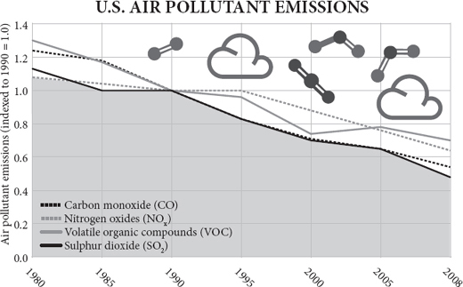
A constant drumbeat of pessimism usually drowns out any triumphalist song of the kind I have vented in this book so far. If you say the world has been getting better you may get away with being called naïve and insensitive. If you say the world is going to go on getting better, you are considered embarrassingly mad. When the economist Julian Simon tried it in the 1990s, he was called everything from imbecile and Marxist to flat-earther and criminal. Yet no significant error came to light in Simon’s book. When Bjørn Lomborg tried it in the 2000s, he was temporarily ‘convicted’ of scientific dishonesty by the Danish National Academy of Sciences, with no substantive examples given nor an opportunity to defend himself, on the basis of an error-strewn review in Scientific American . Yet no significant error has come to light in Lomborg’s book. ‘Implicit confidence in the beneficence of progress’ said Hayek, ‘has come to be regarded as the sign of a shallow mind.’
悲观主义的持续鼓点通常会淹没任何我在本书中迄今为止所宣泄的那种胜利主义歌曲。如果你说世界一直在变好，你可能会被称为天真和麻木不仁。如果你说世界会继续变好，你会被认为是令人尴尬的疯狂。当经济学家朱利安·西蒙（Julian Simon）在 20 世纪 90 年代试图这样做时，他被赋予了各种贬义称呼，从 “低能儿” 和 “马克思主义者” 到 “土得掉渣” 甚至 “罪犯”。然而，在西蒙的书中没有发现任何重大错误。当比约恩-隆博格（Bjørn Lomborg）在 2000 年代试图这样做时，他被丹麦国家科学院暂时 “判定” 为科学不诚实，没有给出实质性的例子，也没有机会为自己辩护，依据是《科学美国人》杂志上一篇错误百出的评论。然而，隆伯格的书中并没有发现任何重大错误。哈耶克说：“对进步的好处的隐性信心，已经被认为是一个浅薄的思想的标志。”
If, on the other hand, you say catastrophe is imminent, you may expect a McArthur genius award or even the Nobel Peace Prize. The bookshops are groaning under ziggurats of pessimism. The airwaves are crammed with doom. In my own adult lifetime, I have listened to implacable predictions of growing poverty, coming famines, expanding deserts, imminent plagues, impending water wars, inevitable oil exhaustion, mineral shortages, falling sperm counts, thinning ozone, acidifying rain, nuclear winters, mad-cow epidemics, Y2K computer bugs, killer bees, sex-change fish, global warming, ocean acidification and even asteroid impacts that would presently bring this happy interlude to a terrible end. I cannot recall a time when one or other of these scares was not solemnly espoused by sober, distinguished and serious elites and hysterically echoed by the media. I cannot recall a time when I was not being urged by somebody that the world could only survive if it abandoned the foolish goal of economic growth.
另一方面，如果你说灾难迫在眉睫，你可能期望获得麦克阿瑟天才奖甚至诺贝尔和平奖。书店在悲观主义的象形山下呻吟着。电波中充斥着厄运。在我自己的成年生活中，我已经听到了一些无情的预言：日益严重的贫困、即将到来的饥荒、不断扩大的沙漠、迫在眉睫的瘟疫、迫在眉睫的水战、不可避免的石油枯竭、矿物短缺、精子数量下降、臭氧变薄、雨水酸化、核冬天、疯牛病流行、千年虫电脑、杀手蜜蜂、变性鱼、全球变暖、海洋酸化，甚至小行星撞击，都将使这段幸福时光走向可怕的结局。我不记得有什么时候，这些恐慌中的一个或另一个没有被清醒的、杰出的、严肃的精英们庄严地拥护，并被媒体歇斯底里地呼应。我想不起有什么时候我没有被某人敦促，说世界只有放弃经济增长这个愚蠢的目标才能生存。
The fashionable reason for pessimism changed, but the pessimism was constant. In the 1960s the population explosion and global famine were top of the charts, in the 1970s the exhaustion of resources, in the 1980s acid rain, in the 1990s pandemics, in the 2000s global warming. One by one these scares came and (all but the last) went. Were we just lucky? Are we, in the memorable image of the old joke, like the man who falls past the first floor of the skyscraper and thinks ‘So far so good!’? Or was it the pessimism that was unrealistic?
悲观主义的时尚理由发生了变化，但悲观主义是不变的。20 世纪 60 年代，人口爆炸和全球饥荒是头等大事；70 年代，资源枯竭；80 年代，酸雨；90 年代，大流行病；2000 年，全球变暖。这些恐慌一个接一个地出现，（除了最后一个之外）都消失了。我们只是幸运吗？我们是否像那个老笑话中令人难忘的形象一样，像那个从摩天大楼楼顶跌下来刚刚经过顶部第一层的人，认为 “到目前为止还不错！”？还是悲观主义是不现实的？
Let me make a square concession at the start: the pessimists are right when they say that, if the world continues as it is, it will end in disaster for all humanity. If all transport depends on oil, and oil runs out, then transport will cease. If agriculture continues to depend on irrigation and aquifers are depleted, then starvation will ensue. But notice the conditional: if. The world will not continue as it is. That is the whole point of human progress, the whole message of cultural evolution, the whole import of dynamic change – the whole thrust of this book. The real danger comes from slowing down change. It is my proposition that the human race has become a collective problem-solving machine and it solves problems by changing its ways. It does so through invention driven often by the market: scarcity drives up price; that encourages the development of alternatives and of efficiencies. It has happened often in history. When whales grew scarce, petroleum was used instead as a source of oil. (As Warren Meyer has put it, a poster of John D. Rockefeller should be on the wall of every Greenpeace office.) The pessimists’ mistake is extrapolationism: assuming that the future is just a bigger version of the past. As Herb Stein once said, ‘If something cannot go on forever, then it will not.’
让我在一开始就做出一个明确的让步：悲观主义者说，如果世界继续像现在这样发展下去，它将以全人类的灾难结束。如果所有的运输都依赖石油，而石油耗尽，那么运输将停止。如果农业继续依赖灌溉，而含水层被耗尽，那么饥饿将随之而来。但是请注意这个条件：如果。世界将不会继续像现在这样。这就是人类进步的全部意义，文化进化的全部信息，动态变化的全部内容 —— 本书的全部主旨。真正的危险来自于放缓变化。我的主张是，人类已经成为一个集体解决问题的机器，它通过改变其方式来解决问题。它通过经常由市场驱动的发明来实现：稀缺性促使价格上涨；这鼓励了替代品和效率的发展。这在历史上经常发生。当鲸鱼越来越少时，石油被用作石油来源。正如沃伦·迈耶所说，约翰-D-洛克菲勒的海报应该挂在每个绿色和平组织办公室的墙上）。悲观主义者的错误在于推断主义：假设未来只是过去的一个更大的版本。正如赫伯·斯坦恩（Herb Stein）曾经说过的，“如果一件事不能永远持续下去，那么它就不会。”
So, for example, the environmentalist Lester Brown, writing in 2008, was pessimistic about what will happen if the Chinese are by 2030 as rich as the Americans are now:
因此，例如，环保主义者莱斯特·布朗（Lester Brown）在 2008 年写道，如果中国人到 2030 年像现在的美国人一样富有，将会发生什么，他对此感到悲观。
If, for example, each person in China consumes paper at the current American rate, then in 2030 China’s 1.46 billion people will need twice as much paper as is produced worldwide today. There go the world’s forests. If we assume that in 2030 there are three cars for every four people in China, as there now are in the United States, China will have 1.1 billion cars. The world currently has 860 million cars. To provide the needed roads, highways, and parking lots, China would have to pave an area comparable to what it now plants in rice. By 2030 China would need 98 million barrels of oil a day. The world is currently producing 85 million barrels a day and may never produce much more than that. There go the world’s oil reserves.
例如，如果中国的每个人都以目前美国人的速度消费纸张，那么在 2030 年，中国的 14.6 亿人需要的纸张数量将是今天全世界生产的两倍。世界上的森林就在那里。如果我们假设在 2030 年，中国每四个人就有三辆汽车，就像现在的美国一样，中国将有 11 亿辆汽车。目前世界上有 8.6 亿辆汽车。为了提供所需的道路、高速公路和停车场，中国将不得不铺设一个与现在种植水稻的面积相当的地方。到 2030 年，中国每天将需要 9800 万桶石油。目前世界上每天的产量是 8500 万桶，而且可能永远不会超过这个数字。世界的石油储备就在这里。
Brown is dead right with his extrapolations, but so was the man who (probably apocryphally) predicted ten feet of horse manure in the streets of London by 1950. So was IBM’s founder Thomas Watson when he said in 1943 that there was a world market for five computers, and Ken Olson, the founder of Digital Equipment Corporation, when he said in 1977: ‘There is no reason anyone would want a computer in their home.’ Both remarks were true enough when computers weighed a tonne and cost a fortune. Even when the British astronomer royal and the British government space adviser said that space travel was respectively ‘bunk’ and ‘utter bilge’ – just before Sputnik flew – they were not wrong when they said it; just the world changed rather soon after they said it. It is the same with modern predictions of impossibility, like Lester Brown’s. Paper and oil will all have to be used more frugally, or replaced by something else, by 2030, and land will have to be used more productively. What is the alternative? Banning Chinese prosperity? The question is not ‘Can we go on as we are?’ because of course the answer is ‘No’, but how best can we encourage the necessary torrent of change that will enable the Chinese and the Indians and even the Africans to live as prosperously as Americans do today.
布朗的推断是完全正确的，但那个预测到 1950 年伦敦街头将出现 10 英尺马粪的人（可能是天书）也是如此。IBM 的创始人托马斯·沃森(Thomas Watson)也是如此，他在 1943 年说世界上有五台计算机的市场，而数字设备公司的创始人肯·奥尔森(Ken Olson)在 1977 年说：“没有理由任何人会想在他们的家里有一台计算机。这两句话在计算机重达一吨、价格不菲的时候已经很正确了”。甚至当英国皇家天文学家和英国政府的太空顾问说太空旅行分别是 “垃圾” 和 “彻底的胡说八道” 时 —— 就在人造卫星飞行之前 —— 他们说这话时并没有错；只是在他们说这话之后，世界很快就改变了。这与现代的不可能预测是一样的，比如莱斯特·布朗的预测。到 2030 年，纸张和石油都必须更节俭地使用，或由其他东西取代，土地必须更有效地使用。有什么选择呢？禁止中国的繁荣吗？问题不在于 “我们能不能像现在这样继续下去？” 因为答案当然是 “不能”，而是 “我们如何能最好地鼓励必要的变革洪流，使中国人和印度人甚至非洲人能够像今天的美国人一样繁荣地生活。”
A brief history of bad news
坏消息的简史
There is a tendency to believe that pessimism is new, that our current dyspeptic view of technology and progress has emerged since Hiroshima and got worse since Chernobyl. History contradicts this. Pessimists have always been ubiquitous and have always been feted. ‘Five years have seldom passed away in which some book or pamphlet has not been published,’ wrote Adam Smith at the start of the industrial revolution, ‘pretending to demonstrate that the wealth of the nation was fast declining, that the country was depopulated, agriculture neglected, manufactures decaying, and trade undone.’
有一种倾向认为，悲观主义是新的，我们目前对技术和进步的悲观看法是在广岛之后出现的，在切尔诺贝利之后变得更糟。历史与此相矛盾。悲观主义者总是无处不在，并且总是被奉为圭臬。亚当·斯密在工业革命开始时写道：“很少有五年时间没有出版一些书或小册子，假装证明国家的财富正在迅速减少，国家人口减少，农业被忽视，制造业衰败，贸易失败。”
Take the year 1830. Northern Europe and North America were much richer than they had ever been. They had enjoyed more than a decade of peace for the first time in more than a generation and they were brimming with novel inventions, discoveries and technology (a word which was coined that year): steam boats, cotton looms, suspension bridges, the Erie Canal, Portland cement, the electric motor, the first photograph, Fourier analysis. It was a world, in retrospect, pregnant with possibility, ready to explode into modernity. To be born then you would see a life of ever-increasing wealth, health, wisdom and safety.
以 1830 年为例。北欧和北美比以往任何时候都更富有。他们在超过一代人的时间里第一次享受了超过十年的和平，他们充满了新奇的发明、发现和技术（这个词是那一年创造的）：蒸汽船、棉织机、吊桥、伊利运河、波特兰水泥、电动机、第一张照片、傅立叶分析。现在回想起来，这是一个充满可能性的世界，准备爆发出现代性。在那时出生，你将看到一个不断增长的财富、健康、智慧和安全的生活。
Yet was the mood of 1830 optimistic? No, it was just like today: fashionable gloom was everywhere. Campaigners who went under the pseudonym of ‘Captain Swing’ took precisely the same approach to threshing machines in 1830 as their 1990s equivalents would take to genetically modified crops: they vandalised them. Some of the vociferous and numerous opponents of the Liverpool to Manchester Railway, which opened that year, forecast that passing trains would cause horses to abort their foals. Others mocked its pretensions to speed: ‘What can be more palpably absurd and ridiculous than the prospect held out of locomotives travelling twice as fast as stagecoaches!’ cried the Quarterly Review . ‘We trust that Parliament will, in all rail ways it may sanction, limit the speed to eight or nine miles an hour.’ (Dr Arnold was more enlightened about the first steam train: ‘I rejoice to see it, and think that feudality is gone forever.’)
然而，1830 年的情绪是乐观的吗？不，它就像今天一样：时尚的阴霾无处不在。1830 年，化名为 “斯温船长” 的运动者对脱粒机采取了与 20 世纪 90 年代的人对转基因作物所采取的相同方法：他们破坏了这些机器。当年开通的利物浦至曼彻斯特铁路的一些声势浩大的反对者预测，经过的火车会导致马匹流产。还有人嘲笑铁路对速度的追求：“还有什么比火车头的速度是驿站马车的两倍这一前景更明显的荒谬和可笑呢！”《季刊》叫道。‘我们相信，议会将以它可能批准的所有铁路方式，将速度限制在每小时 8 或 9 英里。（阿诺德（Arnold）博士对第一辆蒸汽火车的看法更为开明：“看到它我很高兴，认为封建制度已经永远消失了。”）
In that year, 1830, the British Poet Laureate Robert Southey had just published a book (Thomas More; or, Colloquies on the Progress and Prospects of Society ) in which he imagined his alter ego escorting the ghost of Thomas More, the Tudor author of Utopia, round the English Lake District. Through the ghost of More, Southey rails against the condition of the people of England, and especially those who have left their rose-fringed cottages for the soulless tenements and factories of the industrial cities. He complains that their condition is worse than in the days of Henry VIII or even than in the days of Caesar and the Druids:
那一年，即 1830 年，英国桂冠诗人罗伯特·苏西刚刚出版了一本书（《托马斯·莫尔; 或, 关于社会进步和前景的座谈会》Thomas More; or, Colloquies on the Progress and Prospects of Society），其中他想象自己的另一个身份护送都铎时期《乌托邦》的作者托马斯·莫尔（Thomas More）的鬼魂，在英国湖区游玩。通过莫尔的鬼魂，苏西抨击了英国人民的状况，特别是那些离开了他们的玫瑰花边小屋，来到工业城市的无灵魂的公寓和工厂的人。他抱怨说，他们的状况比亨利八世的时代，甚至比凯撒和德鲁伊的时代都要糟糕。
Look, for example, at the great mass of your populace in town and country – a tremendous proportion of the whole community! Are their bodily wants better, or more easily supplied? Are they subject to fewer calamities? Are they happier in childhood, youth, and manhood, and more comfortably or carefully provided for in old age, than when the land was unenclosed, and half covered with woods? ... Their condition is greatly worsened ... [They] have lost rather than gained by the alterations which have taken place during the last thousand years.
例如，看看你们城乡的广大民众 —— 占整个社会的巨大比例！他们的身体需求是否得到改善或更容易满足？他们的身体需求是否更好，或者更容易得到满足？他们遭受的灾难是否更少？他们在童年、青年和成年时是否更快乐，在老年时是否比土地未被封闭、一半被树林覆盖时更舒适或更小心地得到照顾？他们的状况大大恶化了…… 在过去的一千年中发生的变化，他们失去而不是得到。
Not content with denigrating the present, Southey castigates the future. He – in the form of his fictional ghost of More – forecasts imminent misery, famine, plague and a decline of religion. The timing of this jeremiad was, in retrospect, hilarious. Not only technology, but living standards themselves, had begun their extraordinary break-out, their two centuries of unprecedented explosion. For the first time people’s life expectancy was rapidly rising, child mortality rapidly falling, purchasing power burgeoning and options expanding. The rise of living standards over the next few decades would be especially marked among the unskilled working poor. British working-class real earnings were about to double in thirty years, an unprecedented occurrence. All across the world countries were looking enviously at Britain and saying ‘I want some of that.’ But for the reactionary, Tory, nostalgic Robert Southey, the future could only get worse. He would have been at home in the modern environmental movement, lamenting world trade, tutting at consumerism, despairing of technology, longing to return to the golden age of Merrie England when people ate their local, organic veg, danced round their maypoles, sheared their own sheep and did not clog up the airports on the way to their ghastly package holidays. As the modern philosopher John Gray puts it, echoing Southey, open-ended economic growth is ‘the most vulgar ideal ever put before suffering mankind’.
苏西不满足于诋毁现在，还谴责未来。他 —— 以他虚构的莫尔鬼魂的形式 —— 预测了即将发生的苦难、饥荒、瘟疫和宗教的衰落。回过头来看，这篇谴责文章的时机是很搞笑的。不仅是技术，而且是生活水平本身，已经开始了他们非凡的爆发，他们两个世纪以来前所未有的爆炸。人们的预期寿命第一次迅速提高，儿童死亡率迅速下降，购买力激增，选择范围扩大。在接下来的几十年里，生活水平的提高在没有技能的贫困劳动者中尤为明显。英国工人阶级的实际收入将在 30 年内翻一番，这是前所未有的事情。世界各地的国家都在羡慕地看着英国，并说 ‘我也想要一些’。但对于反动派、保守党、怀旧派的罗伯特·苏西来说，未来只能变得更糟。他本可以在现代环境运动中找到家的感觉，对世界贸易感到悲哀，对消费主义感到遗憾，对技术感到绝望，渴望回到快乐英格兰的黄金时代，那时人们吃着当地的有机蔬菜，围着五月柱跳舞，自己剪羊毛，在前往可怕的套餐假期的路上不会堵塞机场。正如现代哲学家约翰·格雷（John Gray）所言，无限制的经济增长是 “摆在痛苦的人类面前的最庸俗的理想”，他呼应了苏西的观点。
Thomas Babington Macaulay was a poet, too, the author of ‘Horatius’ and other such well remembered ditties. In the Edinburgh Review of January 1830 he reviewed Southey’s Colloquies and did not pull his punches. Far from idyllic, the life of the rural peasant was one of hellish poverty, he said; the factory towns were better off, which was why people were flocking to them. The poor rate was twenty shillings a head in rural Sussex and only five shillings in the industrial West Riding of Yorkshire.
托马斯·巴宾顿·麦考利（Thomas Babington Macaulay）也是一位诗人，是《霍拉图斯》（Horatius）和其他此类广为人知的小品的作者。在 1830 年 1 月的《爱丁堡评论》中，他对苏西的《谈话录》进行了评论，并没有吝啬他的笔墨。他说，农村农民的生活远不是田园诗，而是地狱般的贫穷；工厂镇的情况更好，这就是人们蜂拥而至的原因。苏塞克斯郡农村的贫困率是每人 20 先令，而在工业化的约克郡西区只有 5 先令。
As to the effect of the manufacturing system on the bodily health, we must beg leave to estimate it by a standard far too low and vulgar for a mind so imaginative as that of Mr. Southey, the proportion of births and deaths. We know that, during the growth of this atrocious system, this new misery, to use the phrases of Mr. Southey, this new enormity, this birth of a portentous age, this pest which no man can approve whose heart is not seared or whose understanding has not been darkened, there has been a great diminution of mortality, and that this Turning points diminution has been greater in the manufacturing towns than any where else.
至于制造系统对身体健康的影响，我们必须请允许用一个对于像苏西先生这样富有想象力的人来说过于低级和庸俗的标准来估计它，即出生和死亡的比例。我们知道，在这个残暴的制度的发展过程中，这个新的苦难，用苏西先生的话说，这个新的罪恶，这个预示时代的诞生，这个没有人能够认可的害虫，如果他的心没有被烧伤，或者他的理解力没有被弄暗，死亡率就会大大降低，而且这种转折点的降低在制造业城镇比其他地方都要大。
As for the notion that life was better in the past, Macaulay warmed to his theme:
至于过去的生活更美好的观念，麦考莱对他的主题感到温暖。
If any person had told the Parliament which met in perplexity and terror after the crash in 1720 that in 1830 the wealth of England would surpass all their wildest dreams ..., that the rate of mortality would have diminished to one half of what it then was ..., that stage-coaches would run from London to York in twenty-four hours, that men would be in the habit of sailing without wind, and would be beginning to ride without horses, our ancestors would have given as much credit to the prediction as they gave to Gulliver’s Travels. Yet the prediction would have been true.
如果有人告诉在 1720 年崩溃后在困惑和恐惧中开会的议会，1830 年英国的财富将超过他们所有最疯狂的梦想…… ，死亡率将减少到当时的一半…… ，马车将在 24 小时内从伦敦跑到约克，人们将养成无风航行的习惯，并开始不骑马，我们的祖先会对这个预测给予同样多的信任，就像他们对《格列佛游记》给予的信任。然而，这个预言会是真的。
He went on (twenty-five years later, in his History of England ):
他继续说（25年后，在他的《英格兰史》中）：
We too shall, in our turn, be outstripped, and in our turn be envied. It may well be, in the twentieth century, that the peasant of Dorsetshire may think himself miserably paid with twenty shillings a week; that the carpenter at Greenwich may receive ten shillings a day; that labouring men may be as little used to dine without meat as they now are to eat rye bread; that sanitary police and medical discoveries may have added several more years to the average length of human life; that numerous comforts and luxuries which are now unknown, or confined to a few, may be within the reach of every diligent and thrifty working man.
我们也会轮到自己被超越，轮到自己被羡慕。在二十世纪，多塞特郡的农民可能会认为自己的工资很低，每周只有 20 先令；格林威治的木匠可能每天得到 10 先令；劳动者可能不习惯吃肉，就像他们现在不习惯吃黑麦面包一样。卫生警察和医学发现可能会使人类的平均寿命增加几年；现在不为人知或只限于少数人的许多舒适和奢侈品，可能是每个勤奋和节俭的劳动者都能得到的。
The extraordinary thing about Macaulay’s predictions is not that they were too barmy in their optimism but that they were far too cautious. Last week I took a stagecoach (well, a train) from London to York in two hours, not twenty-four, and ate a take-away salad of mango and crayfish (£3.60) that I bought at the station before I boarded. The week before I sailed without wind (at 37,000 feet) from London to New York in seven hours watching Daniel Day Lewis cover himself in oil. Today I rode my trusty Toyota without horses ten miles in fifteen minutes, listening to Schubert. A ‘peasant’ in Dorsetshire would indeed think himself miserably paid at twenty shillings (£70 in today’s money) a week. Sanitation and medicine have not added several years to life expectancy, as Macaulay rashly predicted, they have doubled it. And as for comforts and luxuries, even the indolent and spendthrift working man has a television and a refrigerator, let alone the diligent and thrifty one.
关于麦考利的预测，非同寻常之处在于他们的乐观主义过于狂热，而是他们过于谨慎。上周，我从伦敦坐驿站（好吧，是火车）到约克，用了两个小时，而不是 24 小时，还吃了上车前在车站买的芒果和小龙虾的外卖沙拉（3.6 英镑）。前一周，我从伦敦到纽约无风航行（在 37,000 英尺高空），用了七个小时，看着丹尼尔·戴·刘易斯（Daniel Day Lewis）把自己盖在油里。今天我在十五分钟内骑着我可靠的丰田车，没有马，听着舒伯特的歌，走了十英里。多塞特郡的一个 “农民” 确实会认为自己的工资很低，每周只有 20 先令（按今天的货币计算为 70 英镑）。卫生设施和药品并没有像麦考利轻率地预测的那样使人的寿命延长几年，而是增加了一倍。至于舒适和奢侈品，即使是懒惰和挥霍的工人也有电视和冰箱，更不用说勤俭的人了。
Turning-point-itis
转折点炎
‘We cannot absolutely prove,’ said Macaulay in 1830, ‘that those are in error who tell us that society has reached a turning point, that we have seen our best days. But so said all who came before us, and with just as much apparent reason.’ So, too, would say all that came after him. Defining moments, tipping points, thresholds and points of no return have been encountered, it seems, by pessimists in every generation since. A fresh crop of pessimists springs up each decade, unabashed in its certainty that it stands balanced upon the fulcrum of history. Throughout the half-century between 1875 and 1925, while European living standards shot up to unimaginable levels, while electricity and cars, typewriters and movies, friendly societies and universities, indoor toilets and vaccines pressed their ameliorating influence out into the lives of so many, intellectuals were obsessed with imminent decline, degeneration and disaster. Again and again, just as Macaulay had said, they wailed that society had reached a turning point; we had seen our best days.
麦考利在 1830 年说：“我们不能绝对证明，那些告诉我们社会已经达到转折点，我们已经看到我们最好的日子的人是错误的。” 但所有在我们之前的人都这么说，而且有同样明显的理由。所有在他之后的人也会这么说。决定性的时刻、转折点、门槛和不归点，似乎在此后的每一代悲观主义者都遇到过。每一个十年都会涌现出一批新的悲观主义者，他们毫不掩饰地确信自己站在了历史的支点上。在 1875 年至 1925 年的半个世纪里，当欧洲人的生活水平提高到难以想象的水平时，当电力和汽车、打字机和电影、友好协会和大学、室内厕所和疫苗将其改善的影响推向许多人的生活时，知识分子却对即将到来的衰退、堕落和灾难感到迷惑。正如麦考利所说，他们一次又一次地哀叹，社会已经到了一个转折点；我们已经看到了我们最好的日子。
The runaway bestseller of the 1890s was a book called Degeneration, by the German Max Nordau, which painted a picture of a society morally collapsing because of crime, immigration and urbanisation: ‘we stand in the midst of an epidemic, a sort of Black Death of degeneration and hysteria.’ An American bestseller of 1901 was Charles Wagner’s The Simple Life, which argued that people had had enough of materialism and were about to migrate back to the farm. In 1914, Britain’s Robert Tressell’s posthumous The Ragged Trousered Philanthropists called his country ‘a nation of ignorant, unintelligent, half-starved, broken-spirited degenerates’. The craze for eugenics that swept the world, embraced by left and right with equal fervour, after 1900 and caused the passage of illiberal and cruel laws in democracies like America as well as autocracies like Germany, took as its premise the deterioration of the blood lines caused by the overbreeding of the poor and the less intelligent. A huge intellectual consensus gathered around the idea that a distant catastrophe must be averted by harsh measures today (sound familiar?). ‘The multiplication of the feeble-minded’ said Winston Churchill in a memo to the prime minister in 1910, ‘is a very terrible danger to the race.’ Theodore Roosevelt was even more explicit: ‘I wish very much that the wrong people could be prevented entirely from breeding; and when the evil nature of these people is sufficiently flagrant, this should be done. Criminals should be sterilized and feeble-minded persons forbidden to leave offspring behind them.’ In the end, eugenics did far more harm to members of the human race than the evil it was intended to combat would ever have done. Or, as Isaiah Berlin put it, ‘disregard for the preferences and interests of individuals alive today in order to pursue some distant social goal that their rulers have claimed is their duty to promote has been a common cause of misery for people throughout the ages.’
19 世纪 90 年代最畅销的书是德国人马克斯·诺尔道（Max Nordau）的《堕落》（Degeneration）一书，它描绘了一幅由于犯罪、移民和城市化而导致社会道德崩溃的画面：“我们正处于一种流行病之中，一种堕落和歇斯底里的黑死病”。1901 年美国的一本畅销书是查尔斯·瓦格纳的《简单生活》，该书认为人们已经受够了物质主义，即将迁徙回农场。1914 年，英国的罗伯特·特雷塞尔（Robert Tressell）在其遗作《衣衫褴褛的慈善家》（The Ragged Trousered Philanthropists）中称他的国家是 “一个无知的、没有智慧的、半饥饿的、精神崩溃的堕落者的国家”。1900 年后，优生学的热潮席卷全球，左派和右派都同样热衷于此，并导致美国等民主国家和德国等专制国家通过了不自由和残酷的法律，其前提是穷人和智力低下者的过度繁殖导致血统的恶化。一个巨大的智力共识聚集在这样的想法周围：必须通过今天的严厉措施来避免一场遥远的灾难（听起来很熟悉？温斯顿·丘吉尔（Winston Churchill）在 1910 年给首相的一份备忘录中说：“智力低下者的繁殖”，“对种族是一个非常可怕的危险”。西奥多·罗斯福说得更加明确：'我非常希望能够完全阻止错误的人繁殖；当这些人的邪恶本质足够明显时，就应该这样做。罪犯应被绝育，弱智者应被禁止留下后代。最终，优生学对人类成员造成的伤害远远超过了它所要打击的邪恶。或者，正如以赛亚·伯林所说，"为了追求统治者声称有责任促进的一些遥远的社会目标而无视今天活着的个人的喜好和利益，是古往今来人们痛苦的一个共同原因。
It was the thing intellectuals said they needed more of – government – that did for the golden Edwardian afternoon, by declaring world war over a trivial issue. After it, what with inflation, unemployment, depression and fascism, there were plenty of excuses for pessimism between the two world wars. In 1918, in The Education of Henry Adams, Henry Adams, famously contrasting the spiritual energy of the Virgin Mary with the material energy of a huge dynamo seen at an exhibition, foresaw the ‘ultimate, colossal, cosmic collapse’ of civilisation. The drone of woe from pessimistic intellectuals was now a constant background hum: from T.S. Eliot, James Joyce, Ezra Pound, W.B. Yeats and Aldous Huxley. They were mostly looking the wrong way – at money and technology, not idealism and nationalism. ‘Optimism is cowardice’ scolded Oswald Spengler in 1923 in his bestselling polemic The Decline of the West, telling a generation of attentive readers of his mystical prose that the Western, Faustian world was about to follow Babylon and Rome into progressive decline as authoritarian ‘Caesarism’ at last came to rule, and blood triumphed over money. Caesarism did indeed rise from the ruins of capitalism in Italy, Germany, Russia and Spain, and proceeded to murder millions. By 1940, only a dozen nations remained democratic. Yet, dreadful as it was, the double war of 1914–45 did little to interrupt the improvement of lifespan and health of those who managed to survive. Despite the wars, in the half-century to 1950, the longevity, wealth and health of Europeans improved faster than ever before.
正是知识分子说他们需要更多的东西 —— 政府 —— 为爱德华时代的黄金下午做了贡献，为一个微不足道的问题宣布了世界战争。之后，由于通货膨胀、失业、萧条和法西斯主义，两次世界大战之间有很多悲观主义的借口。1918 年，在《亨利·亚当斯的教育》（The Education of Henry Adams）中，亨利·亚当斯将圣母玛利亚的精神能量与展览中看到的巨大发电机的物质能量进行了著名的对比，预言了文明的 “最终的、巨大的、宇宙的崩溃”。悲观主义知识分子的悲鸣声现在是一个持续的背景音：来自 T.S.艾略特（T.S. Eliot）、詹姆斯·乔伊斯（James Joyce）、埃兹拉·庞德（Ezra Pound）、W.B.叶芝（W.B. Yeats）和奥尔德·赫胥黎（Aldous Huxley）。他们大多看错了方向 —— 看金钱和技术，而不是看理想主义和民族主义。1923 年，奥斯瓦尔德·斯宾格勒（Oswald Spengler）在他的畅销论著《西方的衰落》中骂道：“乐观是懦弱的”，他告诉一代专注于他的神秘散文的读者，西方的浮士德世界即将跟随巴比伦和罗马逐渐衰落，因为专制的 “凯撒主义” 最终成为统治者，血液战胜了钱。凯撒主义确实从意大利、德国、俄罗斯和西班牙的资本主义废墟中崛起，并开始杀害数百万人。到 1940 年，只有十几个国家仍然保持民主。然而，尽管可怕，1914 年至 1945 年的双重战争并没有打断那些设法生存下来的人的寿命和健康的改善。尽管发生了战争，在 1950 年之前的半个世纪里，欧洲人的寿命、财富和健康状况的改善比以往任何时候都快。
Worse and worse
越来越糟的情况
After the Second World War, led by Konrad Adenauer’s West Germans, Europeans enthusiastically followed America down the path of free enterprise. There dawned a golden age after 1950 of peace (for most), prosperity (for many), leisure (for the young) and progress (in the form of accelerating technological change). Did the pessimists disappear? Was everybody cheerful? The heck they were. George Orwell kicked it off in 1942 with an essay complaining about the spiritual emptiness of the machine age and a book in 1948 warning of a totalitarian future. The torrent of gloomy prognostication that characterised the second half of the twentieth century was, like everything else from that time, unprecedented in its magnitude. Doom after doom was promised: nuclear war, pollution, overpopulation, famine, disease, violence, grey goo, vengeful technology – culminating in the eruption of civil chaos that would undoubtedly follow the inability of computers to cope with the year 2000. Remember that?
第二次世界大战后，在康拉德·阿登纳（Konrad Adenauer）的西德人领导下，欧洲人热情地追随美国走上了自由企业的道路。1950 年后出现了一个和平（对大多数人来说）、繁荣（对许多人来说）、休闲（对年轻人来说）和进步（以加速技术变革的形式）的黄金时代。悲观主义者消失了吗？每个人都很开心吗？是的，他们是。乔治·奥威尔在 1942 年以一篇抱怨机器时代精神空虚的文章拉开了序幕，并在 1948 年出书警告极权主义的未来。二十世纪下半叶的阴郁预言的洪流，就像当时的其他事情一样，其规模是前所未有的。一个又一个厄运被承诺：核战争、污染、人口过剩、饥荒、疾病、暴力、灰色粘液、报复性技术 —— 最终爆发的内乱无疑将伴随着计算机无法应对 2000 年的问题。还记得吗？
Consider the opening words of Agenda 21, the 600-page dirge signed by world leaders at a United Nations conference in Rio de Janeiro in 1992: ‘Humanity stands at a defining moment in history. We are confronted with a perpetuation of disparities within and between nations, a worsening of poverty, hunger, ill health and illiteracy, and the continued deterioration of the ecosystems on which we depend for our well-being.’ The following decade saw the sharpest decrease in poverty, hunger, ill health and illiteracy in human history. In the 1990s numbers in poverty fell in absolute as well as relative terms. Yet even the 1990s were marked by (in the words of Charles Leadbetter) ‘an outpouring of self-doubt and even self-loathing from the intelligentsia of developed liberal societies’. An unspoken alliance, Leadbetter argued, developed between reactionaries and radicals, between nostalgic aristocrats, religious conservatives, eco-fundamentalists and angry anarchists, to persuade people that they should be anxious and alarmed. Their common theme was that individualism, technology and globalisation were leading us headlong into hell. Horrified by the rate of change, and the undermining of the status of noble intellectuals relative to brash tradesmen, ‘the stasis-craving social critics who have shaped the western zeitgeist for decades’ (in Virginia Postrel’s words) lashed out at the new and yearned for stability. ‘It is the failure of modern man to observe the constraints necessary for maintaining the integrity and stability of the various social and ecological systems of which he is a part that is giving rise to their disintegration and destabilization’ groaned the wealthy environmentalist Edward Goldsmith. The price of prosperity, in the words of the Prince of Wales, has been ‘a progressive loss of harmony with the flow and rhythm of the natural world’.
考虑一下《21 世纪议程》的开场白，这是世界领导人 1992 年在里约热内卢的一次联合国会议上签署的 600 页的哀歌：“人类正处于历史上的一个决定性时刻。我们面临着国家内部和国家之间的差距长期存在，贫困、饥饿、健康不良和文盲状况恶化，以及我们的福祉所依赖的生态系统持续恶化。在接下来的十年里，人类历史上的贫困、饥饿、健康不良和文盲现象急剧减少。在 1990 年代，贫困人口的绝对值和相对值都有所下降。然而，即使在 1990 年代，（用 Charles Leadbetter 的话说）” 发达的自由社会的知识分子涌现出了自我怀疑甚至自我厌恶的情绪。莱德贝特认为，“在反动派和激进派之间，在怀旧的贵族、宗教保守派、生态原教旨主义者和愤怒的无政府主义者之间，形成了一个不言而喻的联盟，以说服人们他们应该感到焦虑和震惊。他们的共同主题是，个人主义、技术和全球化正把我们带入地狱。他们对变化的速度以及高贵的知识分子相对于粗鲁的商人的地位被削弱感到惊恐”，几十年来塑造了西方时代精神的渴望稳定的社会批评家 （用 Virginia Postrel 的话说）“对新事物大加挞伐，渴望稳定。” 富有的环保主义者爱德华·戈德史密斯（Edward Goldsmith）呻吟道：“正是由于现代人没有遵守维持他所处的各种社会和生态系统的完整性和稳定性所需的约束，才导致了这些系统的瓦解和不稳定。” 用威尔士王子（Prince of Wales）的话说，繁荣的代价是 “逐渐失去了与自然界的流动和节奏的和谐。”
Today, the drumbeat has become a cacophony. The generation that has experienced more peace, freedom, leisure time, education, medicine, travel, movies, mobile phones and massages than any generation in history is lapping up gloom at every opportunity. In an airport bookshop recently, I paused at the Current Affairs section and looked down the shelves. There were books by Noam Chomsky, Barbara Ehrenreich, Al Franken, Al Gore, John Gray, Naomi Klein, George Monbiot and Michael Moore, which all argued to a greater or lesser degree that (a) the world is a terrible place; (b) it’s getting worse; (c) it’s mostly the fault of commerce; and (d) a turning point has been reached. I did not see a single optimistic book.
今天，这种鼓声已经变成了一片嘈杂声。经历了比历史上任何一代人都更多的和平、自由、休闲时间、教育、医药、旅行、电影、手机和按摩的这一代人，正不失时机地舔舐着阴霾。最近在机场的一家书店里，我在 “时事” 部分停了下来，往书架上看。书架上有诺姆·乔姆斯基、芭芭拉·埃伦瑞奇、阿尔·弗兰肯、阿尔·戈尔、约翰·格雷、纳奥米·克莱因、乔治·蒙比奥特和迈克尔·摩尔的书，他们都或多或少地认为：（a）世界是一个可怕的地方；（b）它正在变得更糟；（c）这主要是商业的错；以及（d）已经达到了一个转折点。我没有看到一本乐观的书。
Even the good news is presented as bad news. Reactionaries and radicals agree that ‘excessive choice’ is an acute and present danger – that it is corrupting, corroding and confusing to encounter ten thousand products in the supermarket, each reminding you of your limited budget and of the impossibility of ever satisfying your demands. Consumers are ‘overwhelmed with relatively trivial choices’ says a professor of psychology. This notion dates from Herbert Marcuse, who turned Marx’s notion of the ‘immiseration of the proletariat’ by steadily declining living standards on its head and argued that capitalism forced excessive consumption on the working class instead. It resonates well in the academic seminar, causing heads to nod in agreement, but it is sheer garbage in the real world. When I go into the local superstore, I never see people driven to misery by the impossibility of choice. I see people choosing.
即使是好消息也被说成是坏消息。反动派和激进派一致认为，“过度选择” 是一个尖锐而现实的危险 —— 在超市里遇到一万种产品，每一种都提醒你你的预算有限，不可能满足你的要求，这让人堕落、腐蚀和困惑。一位心理学教授说，消费者被 “相对琐碎的选择所淹没”。这个概念可以追溯到赫伯特·马尔库塞（Herbert Marcuse），他颠覆了马克思关于生活水平稳步下降导致的 “无产阶级的堕落” 的概念，认为资本主义迫使工人阶级过度消费。这在学术研讨会上很有共鸣，使人们点头同意，但在现实世界中却是纯粹的垃圾。当我走进当地的超级市场时，我从来没有看到人们因为不可能的选择而被逼到痛苦的境地。我看到的是人们在选择。
The problem is partly nostalgia. Even back in the golden age itself, in the eighth century BC, the poet Hesiod was nostalgic for a lost golden age when people ‘dwelt in ease and peace upon their lands with many good things’. There has probably never been a generation since the Palaeolithic that did not deplore the fecklessness of the next and worship a golden memory of the past. The endless modern laments about how texting and emails are shortening the attention span go back to Plato, who deplored writing as a destroyer of memorising. The ‘youth of today’ are shallow, selfish, spoiled, feral good-for-nothings full of rampant narcissism and trained to have ephemeral attention spans, says one commentator. They spend too long in cyberspace, says another, where their grey matter is being ‘scalded and defoliated by a kind of cognitive Agent Orange, depriving them of moral agency, imagination and awareness of consequences’. Balderdash. Of course, there are twerps and geeks in every generation, but today’s young are volunteering for charities, starting companies, looking after their relatives, going to work – just like any other generation, maybe more so. Mostly when they are staring at screens it is to indulge in rampant social engagement. The Sims 2 game, which sold more than a million copies in ten days when launched in 2004, is a game in which the players – often girls – get virtual people to live complex, realistic, highly social lives and then chat about it with their friends. Not much scalding and defoliating there. The psychoanalyst Adam Phillips believes that ‘for increasing numbers of Britons and Americans, the “enterprise culture” means a life of overwork, anxiety and isolation. Competition reigns supreme, with even small children forced to compete against each other and falling ill as a result.’ I have news for him: small children were more overworked, and fell a lot more ill, in the industrial, feudal, agrarian, Neolithic or hunter-gatherer past than in the free-market present.
这个问题部分是怀旧情绪。即使回到黄金时代本身，在公元前 8 世纪，诗人赫西奥德（Hesiod）也在怀念一个失去的黄金时代，当时人们 “在他们的土地上轻松和平地生活，拥有许多好东西”。自旧石器时代以来，可能从来没有哪一代人不对下一代的软弱无能感到痛惜，不对过去的黄金记忆感到崇拜。现代人对发短信和电子邮件如何缩短注意力的无休止的哀叹可以追溯到柏拉图，他痛惜写作是记忆力的破坏者。一位评论家说，“今天的年轻人” 是浅薄、自私、被宠坏、野蛮的一无是处的人，充满了猖獗的自恋，并被训练成具有短暂的注意力。另一位评论员说，他们在网络空间呆得太久了，他们的灰色物质被 “一种认知上的橙剂烫伤和脱叶，剥夺了他们的道德力量、想象力和对后果的认识”。胡说八道。当然，每一代人中都有笨蛋和怪胎，但今天的年轻人正在为慈善机构做志愿者，创办公司，照顾他们的亲戚，去工作 —— 就像其他任何一代人一样，也许更多。当他们盯着屏幕的时候，大多是为了沉浸在猖獗的社交活动中。2004 年推出的《模拟人生 2》游戏在 10 天内销售了 100 多万份，在这个游戏中，玩家 —— 通常是女孩 —— 让虚拟人过上复杂、现实、高度社交的生活，然后与他们的朋友聊天。那里没有太多的烫伤和脱叶。心理分析学家亚当·菲利普斯认为，“对越来越多的英国人和美国人来说，企业文化意味着一种过度工作、焦虑和孤立的生活。竞争是至高无上的，甚至连小孩子都被迫相互竞争，并因此而生病。” 我有个消息要告诉他：在工业、封建、农业、新石器时代或狩猎采集的过去，小孩子比在自由市场的现在更容易过劳，也更容易生病。
Or how about the ‘end of nature’? Bill McKibben’s bestselling dirge of 1989 insisted that a turning point was at hand: ‘I believe that without recognizing it we have already stepped over the threshold of such a change; that we are at the end of nature.’
或者 “自然的终结” 如何？比尔·麦基本（Bill McKibben）在 1989 年的畅销哀歌中坚持认为转折点就在眼前：“我相信，在没有意识到的情况下，我们已经跨过了这种变化的门槛；我们正处于自然的尽头。”
Or the ‘coming anarchy’? Robert Kaplan told the world in 1994, in a much discussed article in the Atlantic Monthly that became a bestselling book, how a turning point had been reached and ‘scarcity, crime, overpopulation, tribalism, and disease are rapidly destroying the social fabric of our planet’. His evidence for this thesis was in essence that he had discovered urban west Africa to be a lawless, impoverished, unhealthy and rather dangerous place.
还是 “即将到来的无政府状态”？1994 年，罗伯特·卡普兰（Robert Kaplan）在《大西洋月刊》上发表了一篇被广泛讨论的文章，并成为一本畅销书，告诉世界一个转折点已经到来，“匮乏、犯罪、人口过剩、部落主义和疾病正在迅速摧毁我们星球的社会结构。” 他为这一论点提供的证据主要是他发现西非城市是一个无法无天、贫穷、不健康和相当危险的地方。
Or ‘our stolen future’? In 1996 a book with this title claimed that sperm counts were falling, breast cancer was increasing, brains were becoming malformed and fish were changing sex, all because of synthetic chemicals that act as ‘endocrine disruptors’, which alter the hormonal balance of bodies. As usual, the scare proved greatly exaggerated: sperm counts are not falling, and no significant effect on human health from endocrine disruption has been detected.
还是 “我们被偷走的未来”？1996 年，一本以此为题的书声称，精子数量正在下降，乳腺癌正在增加，大脑正在变得畸形，鱼类正在改变性别，所有这些都是因为作为 “内分泌干扰物” 的合成化学品，它们改变了身体的荷尔蒙平衡。像往常一样，事实证明这种恐慌被大大夸大了：精子数量并没有下降，也没有发现内分泌干扰对人类健康的重大影响。
In 1995 the otherwise excellent scientist and writer Jared Diamond fell under the spell of fashionable pessimism when he promised: ‘By the time my young sons reach retirement age, half the world’s species will be extinct, the air radioactive and the seas polluted with oil.’ Let me reassure his sons that species extinction, though terrible, is so far under-shooting that promise by a wide margin. Even if you take E.O. Wilson’s wildly pessimistic guess that 27,000 species are dying out every year, that equates to just 2.7 per cent a century (there are thought to be at least ten million species), a long way short of 50 per cent in sixty years. As for Diamond’s other worries, the trends are getting better, not worse: the radioactive dose his sons receive today from weapons tests and nuclear accidents is 90 per cent down on what their father received in the early 1960s and is anyway less than 1 per cent of natural background radiation. The amount of oil spilled in the sea has been falling steadily since before the young Diamonds were born: it now is down by 90 per cent since 1980.
1995 年，原本优秀的科学家和作家贾里德·戴蒙德陷入了流行的悲观主义的魔咒，他承诺：“当我的年轻儿子到达退休年龄时，世界上一半的物种将灭绝，空气具有放射性，海洋被石油污染。” 让我向他的儿子们保证，物种灭绝虽然可怕，但到目前为止还远远没有达到这个承诺的程度。即使你接受 E.O.威尔逊的疯狂悲观猜测，即每年有 27000 个物种灭绝，这相当于一个世纪只有 2.7%（据认为至少有 1000 万个物种），与 60 年内 50% 的灭绝率相差甚远。至于戴蒙德的其他担忧，趋势是越来越好，而不是越来越差：他的儿子们今天从武器试验和核事故中得到的放射性剂量比他们的父亲在 1960 年代初得到的剂量减少了 90%，并且无论如何都不到天然背景辐射的 1%。自年轻的 “钻石” 夫妇出生前，海上溢出的石油量就一直在稳步下降：现在，自 1980 年以来，石油量下降了 90%。
One ingenious argument for apocalypse relies on statistics. As related by Martin Rees in his book Our Final Century, Richard Gott’s argument goes like this: given that I am roughly the sixty billionth person to live upon this planet, it is plausible to believe that I come roughly half way through my species’ run on Broadway, rather than near the beginning of a million-year run. If you pull a number from an urn and it reads sixty, you would conclude that there are more likely to be 100 numbers in the urn than 1,000. Therefore, we are doomed. However, I do not intend to turn pessimist on the strength of a mathematical analogy. After all, the six billionth and six millionth person on the planet could have made exactly the same argument.
关于天启的一个巧妙的论点是依靠统计数字。正如马丁·里斯（Martin Rees）在他的《我们最后的世纪》一书中所说，理查德·戈特（Richard Gott）的论点是这样的：鉴于我是生活在这个星球上的第 600 亿人，我们有理由相信，我是在我们这个物种在百老汇的旅程中走了一半，而不是在一百万年的旅程中刚刚开始。如果你从一个骨灰盒里抽出一个数字，上面写着 60，你会得出结论，骨灰盒里有 100 个数字的可能性比 1000 个要大。因此，我们是注定要失败的。然而，我并不打算因为一个数学比喻而变成悲观主义者。毕竟，地球上第 60 亿人和第 600 万人都可以提出完全相同的论点。
Pessimism has always been big box office. It plays into what Greg Easterbrook calls ‘the collective refusal to believe that life is getting better’. People do not apply this to their own lives, interestingly: they tend to assume that they will live longer, stay married longer and travel more than they do. Some 19 per cent of Americans believe themselves to be in the top 1 per cent of income earners. Yet surveys consistently reveal individuals to be personally optimistic yet socially pessimistic. Dane Stangler calls this ‘a non-burdensome form of cognitive dissonance we all walk around with’. About the future of society and the human race people are naturally gloomy. It goes with the fact that they are risk-averse: a large literature confirms that people much more viscerally dislike losing a sum of money than they like winning the same sum. And it seems that pessimism genes might quite literally be commoner than optimism genes: only about 20 per cent of people are homozygous for the long version of the serotonin transporter gene, which possibly endows them with a genetic tendency to look on the bright side. (Willingness to take risks, a possible correlate of optimism, is also partly heritable: the 7-repeat version of the DRD4 gene accounts for 20 per cent of financial risk taking in men – and is commoner in countries where most people are descended from immigrants.)
悲观主义一直是大票房。它发挥了格雷格·伊斯特布鲁克（Greg Easterbrook）所说的 “集体拒绝相信生活正在变得更好” 的作用。有趣的是，人们并没有把这一点应用到自己的生活中：他们倾向于认为自己会比现在活得更久，结婚更久，旅行更多。约有 19% 的美国人认为自己是收入最高的 1% 的人。然而，调查一直显示，个人是乐观的，但社会是悲观的。丹恩·斯坦格勒（Dane Stangler）称这是 “我们都在走动的一种非负担性的认知失调”。对于社会和人类的未来，人们自然会感到忧郁。这与他们规避风险的事实是一致的：大量文献证实，人们从内心深处不喜欢失去一笔钱，而不是喜欢赢得同样的钱。而且，悲观主义基因似乎比乐观主义基因更常见：只有大约 20% 的人是血清素转运体基因长版本的同源者，这可能使他们有一种向光明面看的遗传倾向。（承担风险的意愿是乐观主义的一个可能的相关因素，也是部分可遗传的：DRD4 基因的 7 次重复版本占男性金融风险承担的 20% —— 并且在大多数人是移民后裔的国家中更常见）。）
As the average age of a country’s population rises, so people get more and more neophobic and gloomy. There is immense vested interest in pessimism, too. No charity ever raised money for its cause by saying things are getting better. No journalist ever got the front page by telling his editor that he wanted to write a story about how disaster was now less likely. Good news is no news, so the media megaphone is at the disposal of any politician, journalist or activist who can plausibly warn of a coming disaster. As a result, pressure groups and their customers in the media go to great lengths to search even the most cheerful of statistics for glimmers of doom. The day I was writing a first draft of this paragraph, the BBC reported on its morning news headlines a study that found the incidence of heart disease among young and middle-aged British women had ‘stopped falling’. Note what was not news: the incidence of heart disease had until recently been falling steeply among all women, was still falling among men, and was not yet rising even among the female age group where it had just ‘stopped falling’. Yet all the discussion was of this ‘bad’ news. Or note how the New York Times reported the reassuring news in 2009 that world temperature had not risen for a decade: ‘Plateau in temperature adds difficulty to task of reaching a solution’.
随着一个国家人口平均年龄的上升，人们变得越来越厌世，越来越悲观。悲观主义也有巨大的既得利益。从来没有一个慈善机构通过说事情变得更好来为其事业筹集资金。从来没有一个记者通过告诉他的编辑，他想写一个关于灾难现在不太可能发生的故事来获得头版。好消息就是坏消息，所以媒体的扩音器任由任何政治家、记者或活动家使用，他们可以合理地警告即将到来的灾难。因此，压力集团和他们在媒体中的客户不惜一切代价，甚至在最欢快的统计数据中寻找厄运的闪光点。在我写这段话的第一稿的那天，BBC 在其早间新闻头条上报道了一项研究，发现英国中青年妇女的心脏病发病率已经 “停止下降”。请注意什么不是新闻：直到最近，所有女性的心脏病发病率都在急剧下降，男性的发病率仍在下降，甚至在刚刚 “停止下降” 的女性年龄组中也没有上升。然而，所有的讨论都是关于这个 ‘坏’ 消息。或者注意到《纽约时报》在 2009 年是如何报道世界气温已经十年没有上升这一令人欣慰的消息的：“气温的高原为达成解决方案的任务增加了难度”。
Apocaholics (the word is Gary Alexander’s – he calls himself a recovering apocaholic) exploit and profit from the natural pessimism of human nature, the innate reactionary in every person. For 200 years pessimists have had all the headlines, even though optimists have far more often been right. Archpessimists are feted, showered with honours and rarely challenged, let alone confronted with their past mistakes.
悲观主义者 —— 这个词是加里·亚历山大（Gary Alexander）的，他称自己为恢复中的悲观主义者 —— 利用了人类本性中的自然悲观主义，即每个人体内天生的反动分子，并从中获利。200 年来，悲观主义者一直占据着所有的头条新闻，尽管乐观主义者更经常是正确的。悲观主义者被奉为圭臬，获得了大量的荣誉，却很少受到挑战，更不用说面对他们过去的错误。
Should you ever listen to pessimists? Certainly. In the case of the ozone layer, a briefly fashionable scare of the early 1990s, the human race probably did itself and its environment a favour by banning chlorofluorocarbons, even though the excess ultraviolet light getting through the ozone layer in the polar regions never even approached one-five-hundredth of the level that is normally experienced by somebody living in the tropics – and even though a new theory suggests that cosmic rays are a bigger cause of the Antarctic ozone hole than chlorine is. Still, I should stop carping: in this case, getting chlorine out of the atmosphere was on balance the wise course of action and the costs to human welfare, though not negligible, were small.
你是否应该听取悲观主义者的意见？当然可以。在臭氧层的案例中，90 年代初短暂流行的恐慌，人类通过禁止氯氟烃可能为自己和环境做了一件好事，尽管在极地地区穿过臭氧层的过量紫外线甚至从未接近生活在热带地区的人通常经历的五百分之一的水平 —— 尽管一个新的理论表明，宇宙射线是造成南极臭氧洞的更大原因。不过，我还是应该停止抱怨：在这种情况下，将氯气排出大气层是明智的行动，而且对人类福利的代价虽然不能忽略，但也很小。
And there are things that are getting worse, without doubt. Traffic congestion and obesity would be two big ones, yet both are the products of plenty, and your ancestors would have laughed at the idea that such abundance of food and transport was a bad thing. There are also many occasions on which pessimists have been ignored too much. Too few people listened to anxieties expressed about Hitler, Mao, Al-Qaeda and subprime mortgages – to name a handful of issues at random. But pessimism is not without its cost. If you teach children that things can only get worse, they will do less to make it untrue. I was a teenager in Britain in the 1970s, when every newspaper I read told me not just that oil was running out, a chemical cancer epidemic was on the way, food was growing scarce and an ice age was coming, but that my own country’s relative economic decline was inevitable and its absolute decline probable. The sudden burst of prosperity and accelerating growth that Britain experienced in the 1980s and 1990s, not to mention the improvements in health, lifespan and the environment, came as quite a shock to me. I realised about the age of twenty-one that nobody had ever said anything optimistic to me about the future of the human race – not in a book, a film or even a pub. Yet in the decade that followed, employment increased, especially for women, health improved, otters and salmon returned to the local river, air quality improved, cheap flights to Italy began from the local airport, telephones became portable, supermarkets stocked more and more kinds of cheaper and better food. I feel angry that I was not taught and told that the world could get much better; I was somehow given a counsel of despair. As are my children today.
毫无疑问，有些事情正变得越来越糟。交通拥堵和肥胖是两个大问题，然而这两个问题都是富足的产物，你的祖先会嘲笑这种食物和交通的丰富性是一件坏事。在很多场合，悲观主义者也被忽视得太多了。太少有人倾听人们对希特勒、毛泽东、基地组织和次级抵押贷款所表达的焦虑 —— 随便举几个问题。但悲观主义并非没有代价。如果你教孩子们事情只会变得更糟，他们就会少做一些事情来使其不真实。20 世纪 70 年代，我是英国的一名青少年，当时我读到的每份报纸都告诉我，不仅石油正在耗尽，化学癌症的流行即将到来，食物越来越少，冰河时代即将到来，而且我自己国家的相对经济衰退是不可避免的，其绝对衰退是可能的。英国在 20 世纪 80 年代和 90 年代经历的突然爆发的繁荣和加速增长，更不用说健康、寿命和环境的改善，让我感到相当震惊。我在 21 岁时意识到，从来没有人对我说过关于人类未来的乐观话语 —— 在书中、在电影中、甚至在酒吧里都没有。然而，在随后的十年里，就业率提高了，尤其是妇女，健康状况改善了，水獭和鲑鱼回到了当地的河流中，空气质量改善了，从当地机场开始了飞往意大利的廉价航班，电话变得方便了，超市里储存了越来越多种类的更便宜、更好的食物。我感到愤怒的是，我没有被教育和告知世界可以变得更好；我被莫名其妙地给予了绝望的建议。我的孩子们今天也是如此。
Cancer
癌症
By now this generation of human beings was supposed to be dying like flies from cancer caused by chemicals. Starting in the late 1950s, posterity was warned that synthetic chemicals were about to create an epidemic of cancer. Wilhelm Hueper, chief of environmental cancer research at America’s National Cancer Institute, so convinced himself that exposure to small traces of synthetic chemicals was a big cause of cancer that he even refused to believe that smoking caused cancer – lung cancer came from pollution, he believed. Rachel Carson, influenced by Hueper, set out in her book Silent Spring (1962) to terrify her readers as she had terrified herself about the threat to human health caused by synthetic chemicals and especially by the pesticide DDT. Whereas childhood cancer had once been a medical rarity, she wrote, ‘today, more American school children die of cancer than from any other disease’. This was actually a statistical sleight of hand; the statement was true not because cancer was increasing among children (it was not), but because other causes of childhood death were declining faster. She expected DDT to cause ‘practically 100 per cent of the human population to be wiped out from a cancer epidemic in one generation’.
到现在，这一代人应该像苍蝇一样死于化学品引起的癌症。从 20 世纪 50 年代末开始，后人被警告说，合成化学品即将造成癌症的流行。美国国家癌症研究所的环境癌症研究主任威廉·胡佩尔（Wilhelm Hueper）非常相信接触小量的合成化学品是癌症的主要原因，他甚至拒绝相信吸烟会导致癌症 —— 他认为肺癌来自污染。受胡佩尔的影响，雷切尔·卡森（Rachel Carson）在她的《寂静的春天》（1962）一书中开始恐吓她的读者，因为她自己也被合成化学品尤其是杀虫剂 DDT 对人类健康造成的威胁吓坏了。她写道：“儿童癌症曾经是医学上的罕见现象，而今天，死于癌症的美国学生比任何其他疾病都要多”。这实际上是一种统计学上的诡计；这种说法是真实的，并不是因为癌症在儿童中增加了（并没有），而是因为儿童死亡的其他原因正在快速下降。她预计 DDT 会导致 “实际上百分之百的人类人口在一代人的时间里被癌症流行病所消灭”。
It is not much of an exaggeration to say that an entire generation of Westerners grew up expecting Carson’s cancer epidemic to strike them down. I was one of them: it genuinely scared me at school to know that my life would be short and sick. Influenced by Carson and her apostles I set out to do a biological project. I would walk the countryside and pick up the dying birds I found, have their cancers diagnosed, and publish. It was not a great success: I found one corpse, of a swan that had hit a power line. ‘Individuals born since 1945,’ wrote the environmentalist Paul Ehrlich in 1971, ‘and thus exposed to DDT since before birth may well have shorter life expectancies than they would if DDT had never existed. We won’t know until the first of these reach their forties and fifties.’ Later he was more specific: ‘The U.S. life expectancy will drop to forty-two years by 1980, due to cancer epidemics.’
可以毫不夸张地说，整整一代西方人在成长过程中都期待着卡森的癌症流行病能将他们击倒。我也是其中之一：在学校时，我知道自己的生命将是短暂而多病的，这确实让我害怕。受卡森和她的使徒们的影响，我开始做一个生物学项目。我将走在乡间，捡起我发现的濒临死亡的鸟类，对它们的癌症进行诊断，然后发表。这并不是一个很大的成功。我发现了一具尸体，是一只撞到电线的天鹅的尸体。环保主义者保罗·埃利希（Paul Ehrlich）在 1971 年写道：“自 1945 年以来出生的人，因此在出生前就接触到了 DDT，他们的预期寿命很可能比 DDT 从未存在过的时候还要短。” 直到这些人中的第一批人到了四十和五十岁，我们才会知道。后来他说得更具体：“由于癌症的流行，到 1980 年，美国人的预期寿命将下降到 42 岁。”
What actually happened is that – excepting lung cancer – both cancer incidence and death rate from cancer fell steadily, reducing by 16 per cent between 1950 and 1997, with the rate of the fall accelerating after that; even lung cancer then joined the party as smoking retreated. The life expectancy of those born after 1945 broke new records. The search for a widespread epidemic of cancer caused by synthetic chemicals, relentlessly and enthusiastically pursued by many scientists ever since the 1960s, has been entirely in vain. By the 1980s, a study by the epidemiologists Richard Doll and Richard Peto had concluded that age-adjusted cancer rates were falling, that cancer is caused chiefly by cigarette smoke, infection, hormonal imbalance and unbalanced diet – and that chemical pollution causes less than 2 per cent of all cases of cancer. The premise on which much of the environmental movement had grown up – that cleaning up pollution would prevent cancer – proved false. As Bruce Ames famously demonstrated in the late 1990s, cabbage has forty-nine natural pesticides in it, more than half of which are carcinogens. In drinking a single cup of coffee you encounter far more carcinogenic chemicals than in a year’s exposure to pesticide residues in food. This does not mean that coffee is dangerous, or contaminated: the carcinogens are nearly all natural chemicals found in the coffee plant and the dose is too low to cause disease, as it is in the pesticide residue. Ames says, ‘We’ve put a hundred nails in the coffin of the cancer story and it keeps coming back out.’
实际发生的情况是 —— 除了肺癌 —— 癌症发病率和癌症死亡率都在稳步下降，在 1950 年至 1997 年期间减少了 16%，之后下降的速度加快；随着吸烟的减少，连肺癌也加入了这个行列。1945 年以后出生的人的预期寿命打破了新的记录。自 20 世纪 60 年代以来，许多科学家不懈地、热情地寻找由合成化学品引起的广泛的癌症流行，但这完全是徒劳的。到 20 世纪 80 年代，流行病学家理查德·多尔（Richard Doll）和理查德·佩托（Richard Peto）的研究得出结论：按年龄调整的癌症发病率正在下降，癌症主要是由香烟烟雾、感染、荷尔蒙失调和不平衡的饮食引起的，而化学污染引起的癌症病例不到 2%。许多环境运动赖以成长的前提 —— 清理污染可以预防癌症 —— 被证明是错误的。正如布鲁斯·艾姆斯（Bruce Ames）在 20 世纪 90 年代末著名的证明，卷心菜中有 49 种天然杀虫剂，其中一半以上是致癌物。在喝一杯咖啡时，你遇到的致癌化学物质远远多于在食物中接触到的农药残留物的一年。这并不意味着咖啡是危险的，或受到污染：致癌物几乎都是在咖啡植物中发现的天然化学物质，而且剂量太低，不会导致疾病，就像在农药残留物中一样。埃姆斯说：“我们已经在癌症故事的棺材里钉了一百个钉子，但它又不断地冒出来。”
DDT’s miraculous ability to halt epidemics of malaria and typhus, saving perhaps 500 million lives in the 1950s and 1960s (according to the US National Academy of Sciences), far outweighed any negative effect it had on human health. Ceasing to use DDT caused a resurgence of malaria in Sri Lanka, Madagascar and many other countries. Of course, DDT should have been used more carefully than it was, for although it was far less toxic to birds than previous pesticides, many of which were arsenic-based, it did have the subversive ability to accumulate in the livers of animals and wipe out populations of predators at the top of long food chains, such as eagles, falcons and otters. Replacing it with less persistent chemicals has brought otters, bald eagles and peregrine falcons bouncing back to relative abundance after an absence of several decades. Fortunately, DDT’s modern pyrethroid successors do not persist and accumulate. Moreover, sparing, targeted use of DDT against malarial mosquitoes can be done without any such threat to wildlife, for example by spraying the inside walls of houses.
DDT 能够奇迹般地阻止疟疾和斑疹伤寒的流行，在 20 世纪 50 年代和 60 年代拯救了大约 5 亿人的生命（根据美国国家科学院的数据），远远超过了它对人类健康的任何负面影响。停止使用 DDT 导致斯里兰卡、马达加斯加和其他许多国家的疟疾重新抬头。当然，DDT 的使用应该比它更谨慎，因为尽管它对鸟类的毒性远低于以前的杀虫剂，其中许多是以砷为基础的，但它确实有颠覆性的能力，可以在动物的肝脏中积累，并消灭处于漫长食物链顶端的捕食者的种群，如鹰、隼和水獭。用持久性较低的化学品取代它，使水獭、秃鹰和游隼在几十年的缺席后反弹到相对丰富的数量。幸运的是，DDT 的现代拟除虫菊酯继任者不会持续存在和积累。此外，有针对性地使用 DDT 来对付疟疾蚊子，也不会对野生动物造成任何威胁，例如在房屋的内墙喷洒。
Nuclear Armageddon
核大决战
There were very good reasons to be a nuclear pessimist in the Cold War: the build-up of weapons, the confrontations over Berlin and Cuba, the gung-ho rhetoric of some military commanders. Given how most arms races end, it seemed only a matter of time before the Cold War turned hot, very hot. If you had said at the time that you believed that mutually assured destruction would prevent large direct wars between the superpowers, that the Cold War would end, the Soviet empire would disintegrate, global arms spending would fall by 30 per cent and three-quarters of all nuclear missiles would be dismantled, you would have been dismissed as a fool. ‘Historians will view nuclear arms reduction as such an incredible accomplishment,’ says Greg Easterbrook, ‘that it will seem bizarre in retrospect that so little attention was paid while it was happening.’ Perhaps this was just a stroke of luck, and admittedly the danger is far from over (especially for Koreans and Pakistanis), but nonetheless notice that things have got better, not worse.
在冷战时期，有非常充分的理由成为一名核悲观主义者：武器的积累、对柏林和古巴的对抗、一些军事指挥官的豪言壮语。鉴于大多数军备竞赛是如何结束的，冷战变热，非常热似乎只是时间问题。如果你当时说，你相信 “相互确保摧毁” 将防止超级大国之间的大规模直接战争，冷战将结束，苏联帝国将解体，全球军备开支将下降 30%，四分之三的核导弹将被拆除，你会被斥为傻瓜。格雷格·伊斯特布鲁克（Greg Easterbrook）说：“历史学家将把削减核军备看作是一项令人难以置信的成就，回过头来看，在它发生时却很少有人关注，这将显得很奇怪。” 也许这只是运气好，而且承认危险远未结束（尤其是对韩国人和巴基斯坦人），但尽管如此，请注意事情已经变得更好，而不是更糟。
Famine
饥荒
One of the hoariest causes for pessimism about the fate of humanity is the worry that food will run out. The prominent eco-pessimist Lester Brown predicted in 1974 that a turning point had been reached and farmers could ‘no longer keep up with rising demand’. But they did. In 1981 he said that ‘global food insecurity is increasing’. It was not. In 1984, he proclaimed that ‘the slim margin between food production and population growth continues to narrow’. Wrong again. In 1989 ‘population growth is exceeding farmers’ ability to keep up.’ No. In 1994, ‘Seldom has the world faced an unfolding emergency whose dimensions are as clear as the growing imbalance between food and people’ and ‘After forty years of record food production gains, output per person has reversed with unanticipated abruptness.’ (A turning point had been reached.) A series of bumper harvests followed and the price of wheat fell to record lows, where it stayed for a decade. Then in 2007 the wheat price suddenly doubled because of a combination of Chinese prosperity, Australian drought, pressure from environmentalists to encourage the growing of biofuels and willingness of American pork-barrel politicians to oblige them by sluicing subsidies towards ethanol producers. Sure enough Lester Brown was once again the darling of the media, his pessimism as impregnable as it was thirty-three years before: ‘cheap food may now be history,’ he said. A turning point had been reached. Once again, a record harvest followed and the wheat price halved.
对人类命运持悲观态度的一个最可怕的原因是担心食物会耗尽。著名的生态悲观主义者莱斯特·布朗（Lester Brown）在 1974 年预测，一个转折点已经到来，农民 “无法再跟上不断增长的需求”。但是他们做到了。1981 年，他说 “全球粮食不安全正在增加”。事实并非如此。1984 年，他宣称 “粮食生产和人口增长之间的微弱差距继续缩小”。又错了。1989 年，“人口增长超过了农民的能力，无法跟上”。1994 年，“世界很少面临一个正在发生的紧急情况，其规模与粮食和人口之间日益严重的不平衡一样明显”，在四十年创纪录的粮食生产增长之后，人均产量以意料之外的突然速度逆转。（一个转折点已经到来。）一系列的大丰收随之而来，小麦的价格跌至历史最低点，并在那里停留了十年。然后在 2007 年，由于中国的繁荣、澳大利亚的干旱、环保主义者鼓励种植生物燃料的压力，以及美国的猪肉桶政治家愿意通过向乙醇生产商提供补贴来满足他们的要求，小麦价格突然翻了一番。果然，莱斯特·布朗再次成为媒体的宠儿，他的悲观主义与 33 年前一样坚不可摧：“廉价食品现在可能成为历史”，他说，“一个转折点已经到来”。再一次，创纪录的收成随之而来，小麦价格减半。
The prediction of global famine has a long history, but it probably reached its apocaholic shrillest in 1967 and 1968 with two bestselling books. The first was by William and Paul Paddock (Famine, 1975! ). ‘Population-food collision is inevitable; it is foredoomed’ was the title of the first chapter. The Paddocks even went so far as to argue that countries such as Haiti, Egypt and India were beyond saving and should be left to starve; the world’s efforts should, on the Verdun principle of triage, be focused on the less desperate cases. By 1975, with the world not yet starving, William Paddock was calling for a moratorium on research programmes designed to increase food production in countries with high population growth rates – almost as if he wanted to bring about his own prediction.
对全球饥荒的预测由来已久，但它可能在 1967 年和 1968 年的两本畅销书中达到了天启式的尖锐程度。第一本是威廉和保罗·帕多克（William and Paul Paddock）的作品（饥荒》（1975）。“人口与粮食的碰撞是不可避免的，它是注定要发生的” 是第一章的标题。帕多克夫妇甚至认为，海地、埃及和印度等国家已经无药可救，应该任其饿死；根据凡尔登的分流原则，世界的努力应该集中在不那么绝望的情况下。到了 1975 年，世界还没有出现饥荒，威廉·帕多克呼吁暂停旨在提高人口高增长率国家的粮食生产的研究计划 —— 几乎就像他想实现自己的预言一样。
The following year saw the publication of an even bigger bestseller that was even more misanthropic in tone. The Population Bomb allowed Paul Ehrlich, an obscure butterfly ecologist, to metamorphose into a guru of the environmental movement complete with MacArthur ‘genius’ award. ‘In the 1970s and 1980s,’ he promised, declaring a turning point, ‘hundreds of millions of people will starve to death in spite of any crash programs embarked upon now. At this late date nothing can prevent a substantial increase in the world death rate.’ Ehrlich not only argued that mass death was inevitable and imminent, that human numbers would fall to two billion and that the poor would get poorer, but that those who saw that population growth was already beginning to slow were as foolish as those who greet a slightly less freezing day in December as a sign of approaching spring; in later editions, he added that the Green Revolution then transforming Asian agriculture would ‘at the very best buy us only a decade or two’. Four decades later, Ehrlich had learnt his lesson – not to give dates: in his book The Dominant Animal, co-written with his wife and published in 2008, he again foresaw an ‘unhappy increase in death rates’ but this time mentioned no timescale. Without a word about why his previous predictions of mass starvation and mass cancer had never happened, he remains confident in calling the top of the human happiness market: ‘The world in general seems to be gradually awakening to a realization,’ he regretted to say, ‘that our long evolutionary story is, through our actions but not our intentions, coming to a turning point.’
第二年出版了一本更大的畅销书，其基调甚至更加厌世。《人口炸弹》使保罗·埃利希（Paul Ehrlich），一位默默无闻的蝴蝶生态学家，蜕变为环境运动的大师，并获得麦克阿瑟 “天才” 奖。在 20 世纪 70 年代和 80 年代，他承诺，“宣布一个转折点，尽管现在开始实施任何崩溃计划，数以亿计的人将饿死。” 在这么晚的时候，没有什么能阻止世界死亡率的大幅上升。埃利希不仅认为大规模死亡是不可避免和迫在眉睫的，人类的数量将下降到 20 亿，穷人将变得更穷，而且认为那些看到人口增长已经开始放缓的人就像那些把 12 月稍微不那么冷的日子当作春天来临的标志的人一样愚蠢；在后来的版本中，他还说当时改变亚洲农业的绿色革命 “最多只能为我们争取一二十年时间”。40 年后，埃利希吸取了他的教训 —— 不要给出日期：在他与妻子共同撰写并于 2008 年出版的《主导动物》一书中，他再次预言 “死亡率会令人不快地增加”，但这次没有提到时间尺度。他只字不提为什么他以前对大规模饥饿和大规模癌症的预测从未发生过，他仍然自信地呼吁人类幸福市场的顶端：“世界总体上似乎正在逐渐觉醒，意识到”，他遗憾地说，“我们漫长的进化故事，通过我们的行动而不是意图，正在走向一个转折点。”
For reasons I explained in chapter 4, famine is largely history. Where it still occurs – Darfur, Zimbabwe – the fault lies with government policy, not population pressure.
由于我在第四章中解释的原因，饥荒基本上已经成为历史。在仍然发生饥荒的地方 —— 达尔富尔、津巴布韦 —— 错误在于政府政策，而不是人口压力。
Resources
资源
The history of the world is replete with examples of the extinction or near-exhaustion of resources: mammoths, whales, herrings, passenger pigeons, white pine forests, Lebanon cedars, guano. They are all, note, ‘renewable’. By striking contrast, there is not a single non-renewable resource that has run out yet: not coal, oil, gas, copper, iron, uranium, silicon, or stone. As has been said – the remark has been attributed to many people – the Stone Age did not come to an end for lack of stone. ‘It is one of the safest predictions,’ wrote the economist Joseph Schumpeter in 1943, ‘that in the calculable future we shall live in an embarras de richesse of both foodstuffs and raw materials, giving all the rein to expansion of total output that we shall know what to do with. This applies to mineral resources as well.’ It is also one of the safest predictions that people will always be warning that natural resources are running out.
世界历史上充满了资源灭绝或接近枯竭的例子：猛犸象、鲸鱼、鲱鱼、客鸽、白松林、黎巴嫩雪松、鸟粪。注意，它们都是 “可再生” 的。与此形成鲜明对比的是，没有任何一种不可再生资源已经耗尽：没有煤、石油、天然气、铜、铁、铀、硅或石头。正如有人说的 —— 这句话被归于许多人 —— 石器时代并没有因为缺乏石头而结束。经济学家约瑟夫·熊彼特（Joseph Schumpeter）在 1943 年写道：“这是最安全的预测之一，在可计算的未来，我们将生活在食品和原材料的富足状态中，为总产出的扩张提供所有的动力，我们将知道如何做。” 这也适用于矿产资源。这也是最安全的预测之一，人们将永远警告说自然资源正在耗尽。
Consider the humiliating failure of the predictions made by a computer model called World3 in the early 1970s. World3 attempted to predict the carrying capacity of the planet’s resources and concluded, in a report called Limits to Growth, authored by the grandiosely titled ‘Club of Rome’, that exponential use could exhaust known world supplies of zinc, gold, tin, copper, oil and natural gas by 1992 and cause a collapse of civilisation and population in the subsequent century. Limits to Growth was enormously influential, with school textbooks soon parroting its predictions minus the caveats. ‘Some scientists estimate that the world’s known supplies of oil, tin, copper, and aluminium will be used up within your lifetime,’ said one. ‘Governments must help save our fossil fuel supply by passing laws limiting their use,’ opined another. It was misleading chiefly because, like Malthus, it underestimated the speed and magnitude of technological change, the generation of new recipes for rearranging the world – as its godfather, the engineer Jay Forester, has acknowledged. In 1990 the economist Julian Simon won $576.07 in settlement of a wager from the environmentalist Paul Ehrlich. Simon had bet him that the prices of five metals (chosen by Ehrlich) would fall during the 1980s and Ehrlich had accepted ‘Simon’s astonishing offer before other greedy people jump in’ (though later, while calling Simon an imbecile, he claimed he was ‘goaded’ into it).
考虑一下 1970 年代初一个名为 World3 的计算机模型所做的预测的耻辱性失败。World3 试图预测地球资源的承载能力，并在一份名为 “增长的极限” 的报告中得出结论，该报告由冠冕堂皇的 “罗马俱乐部” 撰写，指数式使用会在 1992 年之前耗尽世界上已知的锌、金、锡、铜、石油和天然气供应，并在下一个世纪导致文明和人口崩溃。增长的极限产生了巨大的影响，学校的教科书很快就转述了它的预测，但没有说明问题。一些科学家估计，“世界上已知的石油、锡、铜和铝的供应将在你的有生之年耗尽”，一位科学家说。“政府必须通过限制使用化石燃料的法律来帮助拯救我们的化石燃料供应”，另一位认为。它之所以具有误导性，主要是因为像马尔萨斯一样，它低估了技术变革的速度和规模，低估了重新安排世界的新方法的产生 —— 正如其教父、工程师杰伊·福雷斯特所承认的那样。1990 年，经济学家朱利安·西蒙从环保主义者保罗·埃利希那里赢得了 576.07 美元的赌注。西蒙与他打赌，五种金属（由埃利希选择）的价格将在 20 世纪 80 年代下降，埃利希接受了 “ 西蒙的惊人报价，以免其他贪婪的人跳进来”“（尽管后来，他在称西蒙为低能儿的同时，声称他是被 “诱导” 的）。
The amount of oil left, the food-growing capacity of the world’s farmland, even the regenerative capacity of the biosphere – these are not fixed numbers; they are dynamic variables produced by a constant negotiation between human ingenuity and natural constraints. Embracing dynamism means opening your mind to the possibility of posterity making a better world rather than preventing a worse one. We now know, as we did not in the 1960s, that more than six billion people can live upon the planet in improving health, food security and life expectancy and that this is compatible with cleaner air, increasing forest cover and some booming populations of elephants. The resources and technologies of 1960 could not have supported six billion – but the technologies changed and so the resources changed. Is six billion the turning point? Seven? Eight? At a time when glass fibre is replacing copper cable, electrons are replacing paper and most employment involves more software than hardware, only the most static of imaginations could think so.
剩下的石油数量，世界农田的粮食种植能力，甚至生物圈的再生能力 —— 这些都不是固定的数字；它们是由人类的聪明才智和自然限制之间的不断协商产生的动态变量。拥抱动态意味着开放你的思想，让后人有可能创造一个更好的世界，而不是防止一个更坏的世界。我们现在知道，正如我们在 20 世纪 60 年代所不知道的那样，60 多亿人可以生活在地球上，改善健康、粮食安全和预期寿命，这与更清洁的空气、不断增加的森林覆盖率和一些繁荣的大象种群是相容的。1960 年的资源和技术不可能支持 60 亿人 —— 但技术改变了，所以资源也改变了。60 亿是转折点吗？70 亿？还是 80 亿？当玻璃纤维正在取代铜缆，电子正在取代纸张，大多数就业涉及的软件多于硬件的时候，只有最静态的想象力才会这么想。
Clean air
洁净的空气
In 1970, Life magazine promised its readers that scientists had ‘solid experimental and theoretical evidence’ that ‘within a decade, urban dwellers will have to wear gas masks to survive air pollution ... by 1985 air pollution will have reduced the amount of sunlight reaching earth by one half.’ Urban smog and other forms of air pollution refused to follow the script, as technology and regulation rapidly improved air quality. So by the 1980s the script switched to acid rain. It is worth exploring the history of this episode because it was a dress rehearsal for global warming: atmospheric, international and with fossil fuels as the villains. The conventional story you will read in your children’s textbooks is as follows: sulphuric and nitric acid, made mainly from smoke belched from coal-fired power stations, fell on lakes and forests in Canada, Germany and Sweden and devastated them. In the nick of time laws were passed limiting emissions and ecosystems slowly recovered.
1970 年，《生活》杂志向其读者承诺，科学家们有 “可靠的实验和理论证据，在十年内，城市居民将不得不戴上防毒面具来度过空气污染…… ” 到 1985 年，空气污染将使到达地球的阳光量减少一半。城市烟雾和其他形式的空气污染拒绝遵循这个剧本，因为技术和法规迅速改善了空气质量。所以到了 20 世纪 80 年代，剧本改成了酸雨。这段历史值得探讨，因为它是全球变暖的一次彩排：大气、国际和化石燃料作为恶棍。你会在孩子们的教科书中读到的传统故事如下：硫酸和硝酸主要由燃煤发电站喷出的烟雾制成，落在加拿大、德国和瑞典的湖泊和森林中，对它们造成破坏。在关键时刻，通过了限制排放的法律，生态系统慢慢恢复了。
Certainly, in the mid-1980s, a combination of scientists scenting grants and environmentalists scenting donations, led to some apocalyptic predictions. In 1984 the German magazine Stern reported that a third of Germany’s forests were already dead or dying, that experts believed all its conifers would be gone by 1990 and that the Federal Ministry of the Interior predicted all forests would be gone by 2002. All! Professor Bernd Ulrich said it was already too late for Germany’s forests: ‘They cannot be saved.’ Across the Atlantic, similar predictions of doom were made. Trees were said to be dying at an unnatural rate in 100 per cent of the forests on the eastern seaboard. ‘The tops of the Blue Ridge Mountains are becoming tree graveyards,’ said a plant pathology professor. Half of all lakes were becoming dangerously acidified. The New York Times declared ‘a scientific consensus’: it was time for action, not further research.
当然，在 20 世纪 80 年代中期，科学家嗅到了资助的气味，环保主义者嗅到了捐赠的气味，这两者的结合导致了一些世界末日般的预测。1984 年，德国《斯特恩》杂志报道说，德国三分之一的森林已经死亡或濒临死亡，专家们认为到 1990 年所有的针叶树都将消失，联邦内政部预测到 2002 年所有的森林都将消失。注意，是“所有”！伯恩德·乌尔里希（Bernd Ulrich）教授说，对德国的森林来说已经太晚了：“它们无法被拯救。在大西洋彼岸，也有类似的厄运预言。据说东部沿海地区 100% 的森林的树木正在以非自然的速度死亡。一位植物病理学教授说：” 蓝岭山的山顶正在成为树木的坟场。所有湖泊中的一半正在变得危险的酸化。《纽约时报》宣布了 “一个科学共识”：现在是采取行动的时候了，而不是进一步研究。
What actually happened? History shows that the biomass of European forests actually increased during the 1980s, during the time when unconstrained acid rain was supposed to be killing them and before any laws were passed to limit emissions. It continued to increase in the 1990s. Sweden’s government eventually admitted that nitric acid – a fertiliser – had increased the overall growth rate of its trees. European forests not only did not die; they thrived. As for North America, the official, ten-year, half-a-billion-dollar, 700-scientist, government-sponsored study did a great rash of experiments and found that: ‘there is no evidence of a general or unusual decline of forests in the United States or Canada due to acid rain’ and ‘there is no case of forest decline in which acidic deposition is known to be a predominant cause.’ When asked if he had been pressured to be optimistic, one of the authors said the reverse was true. ‘Yes, there were political pressures ... Acid rain had to be an environmental catastrophe, no matter what the facts revealed. Since we could not support this claim ... the [Environmental Protection Agency] worked to keep us from providing Congress with our findings.’ The truth is that there were small pockets of damage to forests in the 1980s some of which were caused by pests, others by natural senescence or competition and a few by local pollution. There was no great forest die-off due to acid rain. At all.
实际上发生了什么？历史表明，欧洲森林的生物量在 20 世纪 80 年代实际上是增加的，当时不受约束的酸雨应该会杀死它们，而且在通过任何法律来限制排放之前。在 20 世纪 90 年代，它继续增加。瑞典政府最终承认，硝酸 —— 一种肥料 —— 提高了其树木的总体生长速度。欧洲的森林不仅没有死亡，反而茁壮成长。至于北美，官方的、为期十年、耗资 5 亿美元、有 700 名科学家、由政府赞助的研究做了大量的实验，发现。“没有证据表明美国或加拿大的森林因酸雨而普遍或不寻常地衰退，没有一个森林衰退的案例，已知酸性沉积物是主要原因。” 当被问及他是否受到压力要保持乐观时，其中一位作者说情况恰恰相反。是的，有政治压力…… 无论事实如何，酸雨都必须是一场环境灾难。由于我们不能支持这种说法…… 环境保护局努力阻止我们向国会提供我们的发现。事实是，在 20 世纪 80 年代，有一些小块的森林遭到破坏，其中一些是由害虫造成的，另一些是由自然衰老或竞争造成的，还有一些是由当地污染造成的。并没有出现因酸雨而导致的森林大面积死亡。根本没有。
It would be wrong to conclude that the anti-acid rain legislation did no good at all. The acidification of mountain lakes by distant power-station emissions was a real (though relatively rare) phenomenon, and this was indeed reversed by the legislation. But even this harm was vastly exaggerated during the debate: far from 50 per cent of lakes being affected, it was 4 per cent, said the official study. Some of these continue to be acid even after the clean-up, because of the chemistry of the surrounding rocks. The fact is, if you read the history of the episode carefully, acid rain was a minor and local nuisance that could be relatively cheaply dealt with, not a huge threat to large stretches of the planet. The ultra-pessimists were simply wrong.
如果得出结论说反酸雨立法根本没有起到任何作用，那就错了。山区湖泊被远处的电站排放物酸化是一个真实的现象（虽然相对罕见），而这确实被立法扭转了。但是，即使是这种危害在辩论期间也被大大夸大了：官方研究报告说，远没有 50% 的湖泊受到影响，只有 4%。由于周围岩石的化学特性，其中一些湖泊甚至在清理后仍然是酸性的。事实上，如果你仔细阅读这段历史，酸雨是一个可以相对便宜地处理的局部小麻烦，而不是对地球上大片地区的巨大威胁。那些极端悲观的人根本就错了。
Genes
基因
Every advance in human genetics and reproductive medicine is greeted with predictions of Frankenstein doom. The first attempts at genetic engineering of bacteria in the 1970s led to moratoria and bans. The activist Jeremy Rifkin said that biotechnology threatened ‘a form of annihilation every bit as deadly as nuclear holocaust’. Yet the result was life-saving therapies for diabetics and haemophiliacs. Shortly after, the pioneers of in-vitro fertilisation, Robert Edwards and Patrick Steptoe, were vilified on all sides, even by their fellow doctors, for their supposedly dangerous experiments. When Louise Brown was born in 1978, the Vatican called it ‘an event that can have very grave consequences for humanity’. Yet their invention has brought no eugenic abuse and heartfuls of individual happiness to millions of childless couples.
人类遗传学和生殖医学的每一个进步都会受到弗兰肯斯坦厄运的预言的欢迎。20 世纪 70 年代对细菌基因工程的首次尝试导致了暂停和禁止。活动家杰里米·里夫金（Jeremy Rifkin）说，生物技术威胁着 “一种与核大屠杀一样致命的毁灭形式”。然而，其结果是为糖尿病患者和血友病患者提供了拯救生命的疗法。不久之后，体外受精的先驱罗伯特·爱德华兹（Robert Edwards）和帕特里克·斯蒂普特（Patrick Steptoe）因其所谓的危险实验而受到各方的诋毁，甚至被他们的医生同行诋毁。当路易丝·布朗（Louise Brown）在 1978 年出生时，梵蒂冈称其为 “可能对人类产生非常严重后果的事件”。然而，他们的发明并没有带来优生学上的虐待，而是给数百万无子女的夫妇带来了个人幸福的心声。
When the human genome was sequenced in 2000, pessimism soon dominated the commentary. People will fiddle with their children’s genes, moaned some: yes, to avoid passing on terrible inherited diseases like Tay-Sachs or Huntingdon’s. Predicting illness will make health insurance impossible, groaned others – yet health insurers’ rates are so high precisely because they cannot predict who will get ill, so predicting and preventing will bring some costs down. Diagnosis will run far ahead of therapy, wailed others, so people will know their fate but not know how to cure themselves. In practice, there are very few diseases for which some kind of preventive intervention cannot be tried once a predisposition is known, and knowing is still and always should be voluntary. Then, to cap it all, within a few years the pessimists were complaining that genetic insights were coming disappointingly slowly.
当人类基因组在 2000 年被测序时，悲观主义很快主导了评论。一些人呻吟着说：是的，为了避免遗传可怕的疾病，如 Tay-Sachs 或 Huntingdon's，人们会摆弄他们孩子的基因。预测疾病将使医疗保险变得不可能，其他人呻吟道 —— 然而医疗保险公司的费率如此之高，正是因为他们无法预测谁会生病，所以预测和预防将使一些费用下降。其他人哀叹说，诊断将远远领先于治疗，因此人们将知道自己的命运，但不知道如何治愈自己。实际上，很少有疾病是在知道易感性的情况下不能尝试某种预防干预的，而且知道仍然是而且应该是自愿的。然后，在几年之内，悲观主义者就抱怨说，基因方面的见解来得太慢了，令人失望。
Plague
瘟疫
By the late 1990s, the modish cause for doom was the resurgence of infectious disease. The combination of an incurable and brand-new sexually transmitted disease, AIDS, with a growing resistance to antibiotics among hospital bacteria gave genuine cause for fear. But it also sparked a search for the next and still more lethal plague. Book after book trumpeted the alarm: The Hot Zone, Outbreak, Virus X, The Coming Plague . Hundreds of millions of people were going to die. Infectious disease was on its way back into human affairs as part of the planet’s revenge for human despoliation of the environment. The human race was due a culling. Some of the more misanthropic authors, sounding like Puritan preachers, even expressed something approaching satisfaction at the thought. Yet once again, the auction of competitively pessimistic forecasts that surrounded Ebola virus, Lassa fever, hanta virus and SARS proved ridiculously overblown. Ebola outbreaks – which wreaked horrible disintegration upon their victims and wiped out whole villages in the Congo a handful of times in the 1990s before fading away each time – proved to be very local, easily controlled and partly man-made. That is to say, it soon emerged that what was turning this occasional bat-borne infection into a raging local epidemic was such things as quinine injections given by well-meaning nuns with re-usable syringes. Even AIDS, while terrible especially in Africa, has failed to live up to the dire predictions commonly made in the late 1980s for its global effects. The number of new cases of HIV/AIDS worldwide has been falling for nearly a decade, and the number of deaths from the disease has been falling since 2005. The proportion of the population infected with HIV is falling, even in southern Africa. The epidemic is far from over, and much more could be done, but the news is getting slowly better, not worse.
到 20 世纪 90 年代末，令人沮丧的原因是传染病的重新抬头。一种无法治愈的全新的性传播疾病 —— 艾滋病，与医院细菌对抗生素日益增长的抗药性相结合，使人们真正感到恐惧。但它也引发了对下一个更致命的瘟疫的寻找。一本又一本的书吹响了警号。《热区》、《爆发》、《病毒 X》、《即将到来的瘟疫》。数以亿计的人将会死亡。作为地球对人类破坏环境的报复的一部分，传染病正重新进入人类事务。人类将面临一场灭顶之灾。一些更厌世的作者，听起来像清教徒的传教士，甚至对这种想法表示了近乎满意。然而，围绕着埃博拉病毒、拉萨热、汉坦病毒和 SARS 的竞争性悲观预测的拍卖会再次被证明是可笑的夸大了。埃博拉病毒的爆发 —— 在 20 世纪 90 年代对受害者造成了可怕的瓦解，并在每次消退之前消灭了刚果的整个村庄 —— 被证明是非常局部的、容易控制的和部分是人为的。也就是说，人们很快发现，将这种偶尔由蝙蝠传播的传染病变成当地汹涌澎湃的流行病的，是诸如由好心的修女用可重复使用的注射器进行的奎宁注射等事情。即使是艾滋病，虽然在非洲特别可怕，但也没有达到 80 年代末对其全球影响的可怕预测。近十年来，全球艾滋病毒/艾滋病新病例的数量一直在下降，自 2005 年以来，死于该疾病的人数一直在下降。感染艾滋病毒的人口比例正在下降，甚至在南部非洲。这种流行病远远没有结束，还有很多事情可以做，但消息正在慢慢变好，而不是变坏。
Remember mad-cow disease? Between 1980 and 1996 about 750,000 cattle infected with the brain-destroying prion called vCJD entered the human food chain in Britain. When it became clear in 1996 that some people were dying of the same agent, acquired from eating infected beef, there was perhaps understandably a competitive auction in doom-laden predictions. The winner, whose views were broadcast repeatedly as a result, was a bacteriology professor named Hugh Pennington who said things like ‘we have to prepare for perhaps thousands, tens of thousands, hundreds of thousands, of cases of vCJD coming down the line.’ Even the ‘official’ models warned that the true figure could be as high as 136,000 victims. In fact, as of this writing, the number of deaths has reached 166, of which just one was in 2008 and two in 2009. Only four people are now living with definite or probable vCJD. Each one is a tragedy, but a threat to humanity it is not.
还记得疯牛病吗？1980 年至 1996 年期间，约有 75 万头感染了称为 vCJD 的脑部破坏性朊病毒的牛进入了英国的人类食物链。1996 年，当人们发现一些人因食用受感染的牛肉而死于同样的病原体时，也许可以理解，在充满厄运的预测中出现了一场竞争性拍卖。赢家是一位名叫休·潘宁顿（Hugh Pennington）的细菌学教授，他的观点被反复播放，他说：“我们必须为可能出现的数千、数万、数十万的 vCJD 病例做好准备。” 甚至 “官方” 模型也警告说，真实数字可能高达 13.6 万名受害者。事实上，截至目前，死亡人数已达 166 人，其中仅有一人是在 2008 年，两人是在 2009 年。现在只有四个人患有明确的或可能的 vCJD。每一个人都是一个悲剧，但对人类的威胁却不是。
(The numbers are surprisingly similar to those from Chernobyl. At least 500,000 people would die from cancers caused by the nuclear accident there in 1986, said the sobering early reports, and there will be many birth defects. The latest estimate is that less than 4,000 will die of Chernobyl cancer, compared with 100,000 natural cancer deaths among the exposed population, and that there were no extra birth defects at all. In addition, fifty-six died during the accident itself. The evacuation of the area has caused wildlife to flourish there to an extraordinary degree, without any unusual genetic changes at all in the rodents that have been studied.)
（这些数字与切尔诺贝利的数字惊人地相似）。令人清醒的早期报告说，至少有 50 万人将死于 1986 年那里的核事故引起的癌症，而且会有许多出生缺陷。最新的估计是，将有不到四千人死于切尔诺贝利癌症，而在暴露的人口中，有十万个自然癌症死亡，而且根本没有额外的出生缺陷。此外，有 56 人在事故本身中死亡。该地区的疏散使野生动物在那里异常繁荣，在被研究的啮齿动物中根本没有任何不寻常的基因变化）。
In the 2000s influenza, too, proved to be a paper tiger. H5N1 strains of the virus (‘bird flu’) jumped into human beings via free-range ducks on Chinese farms and, in 2005, the United Nations predicted five million – 150 million deaths from bird flu. Yet, contrary to what you have read, when H5N1 did infect human beings it proved neither especially virulent nor especially contagious. It has so far killed fewer than 300 people worldwide. As one commentator concluded: ‘Hysteria over an avian flu pandemic has been very good for the Chicken Little media, authors, ambitious health officials, drug companies ... But even as many of the panic-mongers have begun to lie low, the vestiges of hysteria remain – as do the misallocations of billions of dollars from more serious health problems. Too bad no one ever holds the doomsayers accountable for the damage they’ve done.’
在 2000 年代，流感也被证明是一只纸老虎。H5N1 病毒株（“禽流感”）通过中国农场的散养鸭子跳到了人类身上，2005 年，联合国预测有 500 万至 1.5 亿人死于禽流感。然而，与你所读到的相反，当 H5N1 确实感染人类时，它被证明既没有特别的毒性，也没有特别的传染性。到目前为止，它在全球范围内造成的死亡人数不到 300 人。正如一位评论家所总结的那样。对禽流感大流行的歇斯底里对 “小鸡” 媒体、作家、雄心勃勃的卫生官员、药品公司都很有利…… 但是，即使许多制造恐慌的人已经开始低调行事，歇斯底里的残余仍然存在 —— 正如从更严重的健康问题中误拨的数十亿美元一样。太糟糕了，从来没有人要求末日论者对他们所造成的损害负责。
I suspect this is too strong, and that flu may yet mount a serious epidemic in some form. But the H1N1 swine flu epidemic of 2009 that began in Mexico also followed the usual path of new flu strains, towards low virulence – about one death for every 1,000–10,000 infected people. This is no surprise. As the evolutionary biologist Paul Ewald has long argued, viruses undergo natural selection as well as mutation once established in a new species of host and casually transmitted viruses like flu replicate more successfully if they cause mild disease, so that the host keeps moving about and meeting new people. A victim lying in a darkened room alone is not as much use to the virus as somebody who feels just well enough to struggle into work coughing. The modern way of life, with lots of travel but also rather more personal space, tends to encourage mild, casual-contact viruses that need their victims to be healthy enough to meet fresh targets fleetingly. It is no accident that modern people suffer from more than 200 kinds of cold, the supreme viral exploiters of the modern world.
我怀疑这太强烈了，流感还可能以某种形式发起严重的流行病。但是 2009 年在墨西哥开始的 H1N1 猪流感疫情也遵循了新流感菌株的通常路径，走向低毒 —— 每 1000-10000 名感染者中约有一人死亡。这并不奇怪。正如进化生物学家保罗·埃瓦尔德（Paul Ewald）长期以来一直认为的那样，病毒一旦在新的宿主物种中建立起来，就会经历自然选择和变异，像流感这样随意传播的病毒如果引起轻微的疾病，就会复制得更成功，这样宿主就会不断地走动，遇到新朋友。独自躺在黑暗的房间里的受害者对病毒的作用并不像那些感觉好到可以挣扎着去工作的人那样。现代的生活方式，有大量的旅行，但也有更多的个人空间，倾向于鼓励温和的、偶然接触的病毒，这些病毒需要它们的受害者足够健康，能够短暂地遇到新的目标。现代人罹患 200 多种感冒并非偶然，它们是现代世界的最高病毒利用者。
If this is so, why then did H1N1 flu kill perhaps fifty million people in 1918? Ewald and others think the explanation lies in the trenches of the First World War. So many wounded soldiers, in such crowded conditions, provided a habitat ideally suited to more virulent behaviour by the virus: people could pass on the virus while dying. Today you are far more likely to get the flu from a person who is well enough to go to work than one who is ill enough to stay at home. By contrast, it is no accident that water-borne and insect-borne diseases such as typhoid, cholera, yellow fever, typhus and malaria are so much more virulent, because they can spread from immobilised victims. Malaria spreads more easily if its victims are laid low in a darkened room – bait for mosquitoes. But in most of the modern world, people are increasingly protected from dirty water and from insects and therefore lethal diseases that debilitate their victims are in retreat.
如果是这样，那么为什么甲型 H1N1 流感在 1918 年可能杀死了 5 千万人？埃瓦尔德和其他人认为解释在于第一次世界大战的战壕里。这么多受伤的士兵，在如此拥挤的条件下，提供了一个非常适合病毒更剧烈行为的栖息地：人们可以在死亡时传播病毒。今天，你更有可能从一个足以去工作的人那里得到流感，而不是从一个病得足以呆在家里的人那里。相比之下，伤寒、霍乱、黄热病、斑疹伤寒和疟疾等水媒和虫媒疾病的毒性更强，这并非偶然，因为它们可以从不能动弹的受害者身上传播。如果受害者躺在黑暗的房间里，疟疾就更容易传播，这是蚊子的诱饵。但是在现代世界的大部分地区，人们越来越多地受到保护，不受脏水和昆虫的影响，因此使受害者虚弱的致命疾病正在退却。
On top of this, the weapons in the physician’s armoury just keep on getting better. Diseases of my childhood, like measles, mumps and rubella, are now prevented by a single vaccine. Where it took more than ten years to understand HIV, it took just three weeks a couple of decades later to sequence the entire genome of the SARS virus and begin a search for its vulnerabilities. It took just months in 2009 to generate large doses of vaccines for swine flu.
除此之外，医生军械库中的武器也在不断地改进。我童年时代的疾病，如麻疹、腮腺炎和风疹，现在只需一种疫苗就可以预防。我们花了十多年的时间来了解艾滋病毒，而几十年后，我们只用了三周时间就完成了非典病毒的整个基因组测序，并开始寻找其弱点。2009 年，只用了几个月的时间，就产生了大剂量的猪流感疫苗。
The total eradication of many diseases is now a realistic prospect. Although it is now more than forty years since smallpox was exterminated and hopes of sending polio after it to the grave have been repeatedly dashed, none the less, the retreat of infectious killers from many parts of the world is little short of astounding. Polio is confined to a few parts of India and West Africa, malaria is gone from Europe, North America and nearly the whole of the Caribbean, measles is reduced to a tiny percentage of the numbers recorded even a few decades ago; sleeping sickness, filariasis and onchoceriasis are being steadily eliminated from country after country.
彻底根除许多疾病现在是一个现实的前景。尽管自天花被消灭以来已经过去了 40 多年，而且将小儿麻痹症送入坟墓的希望也一再破灭，但无论如何，传染病杀手从世界许多地方撤退的速度之快，令人震惊。脊髓灰质炎被限制在印度和西非的少数地区，疟疾从欧洲、北美和几乎整个加勒比海地区消失，麻疹被减少到甚至几十年前记录的极小比例；昏睡病、丝虫病和盘尾丝虫病正在从一个又一个国家稳步消除。
In the centuries to come there will certainly be new human diseases, but very few of them will be both lethal and contagious. Measures to cure and prevent them will come quicker and quicker.
在未来的几个世纪里，肯定会有新的人类疾病，但其中很少会有致命性和传染性的疾病。治疗和预防它们的措施将越来越快地出现。
Sounding the retreat
吹响撤退的号角
Many of today’s extreme environmentalists not only insist that the world has reached a ‘turning point’ – quite unaware that their predecessors have made the same claim for two hundred years about many different issues – but also insist that the only sustainable solution is to retreat, to cease economic growth and enter progressive economic recession. What else can they mean by demanding a campaign to ‘de-develop the United States’, in the words of President Obama’s science adviser John Holdren; or ‘isn’t the only hope for the planet that the industrialised civilisations collapse? Isn’t it our responsibility to bring that about?’, in the words of Maurice Strong, first executive director of the United Nations Environment Programme (UNEP); or that what is needed is ‘an ordered and structured down-sizing of the global economy’ in the words of the journalist George Monbiot? This retreat must be achieved, says Monbiot, by ‘political restraint’. This means not just that growing your company’s sales would be a crime, but failing to shrink them; not just that travelling further than your ration of miles would be an offence, but failing to travel fewer miles each year; not just that inventing a new gadget would be illegal, but failing to abandon existing technologies; not just that growing more food per acre would be a felony, but failing to grow less – because these are the things that constitute growth.
今天的许多极端环保主义者不仅坚持认为世界已经到了一个 “转折点” —— 完全不知道他们的前辈们两百年来对许多不同的问题都提出了同样的主张 —— 而且还坚持认为唯一可持续的解决方案就是撤退，停止经济增长，进入逐步的经济衰退期。用奥巴马总统的科学顾问约翰·霍尔德伦（John Holdren）的话说，他们要求开展 “去美国化” 的运动，或者 “工业化文明崩溃不是地球的唯一希望吗？难道我们没有责任实现这一点吗？”，用联合国环境规划署（UNEP）第一任执行主任莫里斯·斯特朗的话说；或者用记者乔治·蒙比奥特（George Monbiot）的话说，所需要的是 “全球经济的有序和结构化的缩减”？蒙比奥特说，这种退缩必须通过 “政治克制” 来实现。这意味着，不仅仅是增加你公司的销售额是犯罪，而是未能缩小销售额；不仅仅是旅行超过你的里程配给是犯罪，而是未能每年减少旅行里程；不仅仅是发明一个新的小工具是非法的，而是未能放弃现有技术；不仅仅是每英亩种植更多的粮食是重罪，而是未能减少种植 —— 因为这些都是构成增长的东西。
Here’s the rub: this future sounds awfully like the feudal past. The Ming and Maoist emperors had rules restricting the growth of businesses; forbidding unauthorised travel; punishing innovation; limiting family size. They do not say so, but that is the inevitable world the pessimists want to return to when they speak of retreat.
问题是：这个未来听起来非常像过去的封建时代。明朝和毛泽东时代的皇帝有限制企业发展的规定；禁止未经许可的旅行；惩罚创新；限制家庭规模。他们没有这样说，但这就是悲观主义者在谈到退缩时想要回到的不可避免的世界。
It is possible to believe that all the past is but the beginning of a beginning, and that all that is and has been is but the twilight of the dawn.
我们有可能相信，所有的过去不过是一个开始的开始，所有的现在和过去不过是黎明的黄昏。
H.G. WELLS
The Discovery of the Future
H.G. 韦尔兹
对未来的发现
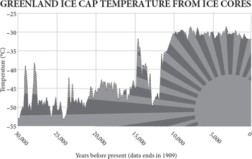
Sooner or later, the ubiquitous pessimist will confront the rational optimist with his two trump cards: Africa and climate. It is all very well Asia lifting itself out of poverty, and perhaps Latin America too, but surely, says the pessimist, it is hard to imagine Africa following suit. The continent is doomed by its population boom, its endemic diseases, its tribalism, its corruption, its lack of infrastructure, even – whisper some, more in sorrow than in prejudice – its genes. ‘It’s blindingly obvious,’ says the environmentalist Jonathan Porritt: ‘completely unsustainable population growth in most of Africa will keep it permanently, hopelessly, stuck in deepest, darkest poverty.’
无处不在的悲观主义者迟早会用他的两张王牌来对抗理性的乐观主义者。非洲和气候。亚洲很好地摆脱了贫困，也许拉丁美洲也是如此，但悲观主义者说，肯定很难想象非洲会这样。非洲大陆因其人口激增、地方性疾病、部落主义、腐败、缺乏基础设施，甚至是 —— 有人小声说，与其说是偏见，不如说是悲哀 —— 其基因而注定要失败。环境学家乔纳森·波里特（Jonathan Porritt）说：“非洲大部分地区完全不可持续的人口增长将使其永久地、无望地陷于最深、最黑暗的贫困之中，这是非常明显的。”
And in any case, continues the pessimist, Africa cannot hope to boom because climate change will devastate the continent during the coming century before it can prosper. At the time of writing, global warming is by far the most fashionable reason for pessimism. The earth’s atmosphere has warmed, and it seems that the great 100,000-year experiment of human progress is about to be tested against rising sea levels, melting ice caps, droughts, storms, famines, pandemics and floods. Human activity is causing much of this change, especially by the burning of fossil fuels, whose energy has been responsible for raising the living standards of many of the world’s nearly seven billion people, so humankind faces a stark dilemma in the coming century between continuing a carbon-fuelled prosperity until global warming brings it to a calamitous halt, or restricting the use of carbon and risking a steep decline in living standards because of the lack of alternative sources of energy that are cheap enough. Either prospect might be catastrophic.
悲观主义者继续说，无论如何，非洲不能指望繁荣，因为气候变化将在下个世纪摧毁非洲大陆，然后才能繁荣。在撰写本报告时，全球变暖是迄今为止最时髦的悲观主义理由。地球的大气层已经变暖，似乎人类进步的 10 万年伟大实验即将面临海平面上升、冰盖融化、干旱、风暴、饥荒、大流行病和洪水的考验。人类活动是造成这种变化的主要原因，特别是通过燃烧化石燃料，而化石燃料的能量已经提高了世界上近 70 亿人的生活水平，因此人类在下个世纪面临着严峻的两难境地，是继续以碳为燃料的繁荣，直到全球变暖使其灾难性地停止，还是限制碳的使用，由于缺乏足够廉价的替代能源，生活水平有可能急剧下降。无论哪种前景都可能是灾难性的。
Africa and climate therefore confront the rational optimist with a challenge, to say the least. For somebody who has spent 300 pages looking on the bright side of human endeavour, arguing along the way that the population explosion is coming to a halt, that energy will not soon run out, that pollution, disease, hunger, war and poverty can all be expected to continue declining if human beings are not impeded from exchanging goods, services and ideas freely – for such a person as your author, African poverty and rapid global warming are indeed acute challenges.
因此，至少可以说，非洲和气候给理性的乐观主义者带来了挑战。有人花了 300 页的篇幅来看待人类努力的光明面，认为人口爆炸即将停止，能源不会很快耗尽，如果人类不被阻碍自由交换商品、服务和思想，污染、疾病、饥饿、战争和贫困都可望继续减少 —— 对于你们的作者这样的人来说，非洲的贫困和全球迅速变暖确实是严峻的挑战。
Moreover, the two issues are connected, because the models that predict rapid global warming take as their assumption that the world will prosper mightily, and that the poorest countries on the planet – most of which are African – will by the end of this century be about nine times as rich as they are today. Unless they are, carbon dioxide emissions will be insufficient to cause such rapid warming. And at present there is no way to make Africans as rich as Asians except by them burning more fossil fuels per head. So Africa faces an especially stark dilemma: get rich by burning more carbon and then suffer the climate consequences; or join the rest of the world in taking action against climate change and continue to wallow in poverty.
此外，这两个问题是联系在一起的，因为预测全球快速变暖的模型的假设是，世界将极大地繁荣，地球上最贫穷的国家 —— 其中大多数是非洲国家 —— 到本世纪末将是今天的九倍左右。除非他们这样做，否则二氧化碳排放将不足以导致如此迅速的变暖。而目前，除了他们每人燃烧更多的化石燃料外，没有办法使非洲人像亚洲人一样富有。因此，非洲面临着一个特别严峻的困境：通过燃烧更多的碳来致富，然后承受气候后果；或者与世界其他地区一起采取行动应对气候变化，继续沉浸在贫困中。
That is the conventional wisdom. I think it is a false dilemma and that an honest appraisal of the facts leads to the conclusion that by far the most likely outcome of the next nine decades is both that Africa gets rich and that no catastrophic climate change happens.
这就是传统的智慧。我认为这是一个错误的困境，对事实进行诚实的评估会得出这样的结论：到目前为止，未来 90 年最有可能的结果是非洲变得富有，而且不会发生灾难性的气候变化。
Africa’s bottom billion
非洲最底层的十亿人口
Of course, not all poverty is in Africa. I am well aware that there is terrible want in many other parts of the world, in Haiti and Afghanistan, in Bolivia and Cambodia, in Calcutta and São Paolo, even in parts of Glasgow and Detroit. But compared with a generation ago, thanks chiefly to progress elsewhere, poverty has come to be concentrated in that one continent as never before. Of the ‘bottom billion’ left behind by recent booms – Paul Collier’s phrase – more than 600 million are Africans. The average African lives on just $1 a day. Saving Africa has become both the goal of idealists and the despair of pessimists. Not only has Africa failed to join Asia’s boom since 1990, it has spent much of the time stagnant or going backwards. Between 1980 and 2000, the number of Africans living in poverty doubled. War in the west of the continent, genocide in the east, AIDS in the south, hunger in the north, dictators in the middle, population growth all over: no part of the continent has escaped the horror. Sudan, Ethiopia, Somalia, Kenya, Uganda, Rwanda, Congo, Zimbabwe, Angola, Liberia, Sierra Leone – the very names of countries have taken their turn as synonyms of chaos on the lips of newsreaders in the West.
当然，并非所有的贫困都在非洲。我很清楚，在世界许多其他地方，在海地和阿富汗，在玻利维亚和柬埔寨，在加尔各答和圣保罗，甚至在格拉斯哥和底特律的部分地区，都存在着可怕的贫困。但与一代人之前相比，主要是由于其他地方的进步，贫困已经前所未有地集中在这个大陆上。在最近的繁荣所留下的 “最底层的 10 亿人” 中 —— 保罗·科利尔（Paul Collier）的说法 —— 超过 6 亿人是非洲人。非洲人平均每天的生活费只有 1 美元。拯救非洲已经成为理想主义者的目标和悲观主义者的绝望。自 1990 年以来，非洲不仅没有加入亚洲的繁荣，反而在大部分时间里停滞不前或倒退。1980 年至 2000 年期间，生活在贫困中的非洲人数量翻了一番。非洲大陆西部的战争，东部的种族灭绝，南部的艾滋病，北部的饥饿，中部的独裁者，各地的人口增长：非洲大陆的任何地方都没有逃脱这种恐怖。苏丹、埃塞俄比亚、索马里、肯尼亚、乌干达、卢旺达、刚果、津巴布韦、安哥拉、利比里亚、塞拉利昂 —— 这些国家的名字已经成为西方新闻播报员口中混乱的代名词。
Moreover, although Africa’s demographic transition has begun, it has a long way to go before population growth decelerates. Nigeria’s birth rate may have halved, but it is still twice as high as ‘replacement rate’. Where will Africa’s ghost acres, its emigration valve, or its industrial revolution come from?
此外，尽管非洲的人口转型已经开始，但在人口增长减速之前还有很长的路要走。尼日利亚的出生率可能已经减半，但它仍然是 “替代率” 的两倍。非洲的鬼亩、移民阀或工业革命将从何而来？
There are hopeful exceptions, like Mali, Ghana, Mauritius and South Africa – countries that have achieved a measure of freedom, economic progress and peace. All across the continent, economic growth has picked up in recent years, and in Kenya, Uganda, Tanzania, Malawi, Zambia and Botswana even life expectancy is rising rapidly after falling while AIDS took its toll (South Africa and Mozambique have yet to follow suit). It is a false Western cliché that all African lives are spent dodging poverty, corruption, violence and disease. But far too many are, and the contrast with much of Asia grows more acute by the year. Whereas income per head stood still in Africa in the past twenty-five years, in Asia it trebled. Then tragically, Africa’s promising economic boom in the 2000s was cut short by the credit crunch.
也有一些充满希望的例外，如马里、加纳、毛里求斯和南非 —— 这些国家已经取得了一定程度的自由、经济进步和和平。在整个非洲大陆，经济增长近年来有所回升，在肯尼亚、乌干达、坦桑尼亚、马拉维、赞比亚和博茨瓦纳，甚至预期寿命在艾滋病造成损失时下降之后也在迅速上升（南非和莫桑比克尚未效仿）。所有非洲人的生命都是在躲避贫困、腐败、暴力和疾病中度过的，这是西方的一个错误的陈词滥调。但是有太多的人在躲避，而且与亚洲大部分地区的对比逐年加剧。在过去的 25 年里，非洲的人均收入保持不变，而亚洲的人均收入则增加了两倍。然后不幸的是，非洲在 2000 年代有希望的经济繁荣被信贷紧缩所打断。
Some Westerners have been heard to say that growth is not what matters, that what Africa needs is an improvement in the human development index, towards the Millennium Development goals and to erase suffering without raising income, or that it needs a new kind of sustainable growth. Paul Collier and his colleagues at the World Bank encountered a storm of protest from non-governmental organisations when they published a study entitled Growth Is Good for the Poor . This suspicion of growth is a luxury that only wealthy Westerners can indulge. What Africans need is better living standards and these come chiefly from economic growth.
有人听到一些西方人说，增长不是最重要的，非洲需要的是改善人类发展指数，实现千年发展目标，在不提高收入的情况下消除痛苦，或者需要一种新的可持续增长。保罗·科利尔和他在世界银行的同事在发表题为《增长对穷人有利》的研究报告时，遇到了非政府组织的抗议风暴。这种对增长的怀疑是一种奢侈，只有富裕的西方人可以沉浸其中。非洲人需要的是更好的生活水平，而这主要来自于经济增长。
Aid’s test
援助的测试
Some of the most urgent needs of Africa can surely be met by increased aid from the rich world. Aid can save lives, reduce hunger, deliver a medicine, a mosquito net, a meal or a metalled road. But statistics, anecdotes and case histories all demonstrate that the one thing aid cannot reliably do is to start or accelerate economic growth. Aid to Africa doubled in the 1980s as a percentage of the continent’s GDP; growth simultaneously collapsed from 2 per cent to zero. The aid that Zambia has received since 1960, if invested instead in assets giving a reasonable rate of return, would by now have given Zambians the income per head of the Portuguese – $20,000 instead of $500. Although in the early 2000s some studies managed to find evidence that certain kinds of aid sometimes trigger growth in countries with specific economic policies, even these conclusions were later dashed by Raghuram Rajan and Arvind Subramanian of the International Monetary Fund in 2005. They could find no evidence that aid resulted in growth in any countries. Ever.
非洲的一些最紧迫的需求肯定可以通过增加来自富裕世界的援助来满足。援助可以拯救生命，减少饥饿，提供一种药品、一顶蚊帐、一餐饭或一条有轨公路。但统计数字、轶事和案例都表明，援助无法可靠地做到的一件事是启动或加速经济增长。20 世纪 80 年代，对非洲的援助占该大陆 GDP 的比例翻了一番；同时，增长从 2% 崩溃到零。赞比亚自 1960 年以来收到的援助，如果投资于有合理回报率的资产，那么到现在赞比亚人的人均收入将达到葡萄牙人的 20,000 美元，而不是 500 美元。尽管在 21 世纪初，一些研究设法找到证据表明，某些类型的援助有时会在具有特定经济政策的国家引发增长，但即使这些结论后来也被国际货币基金组织的拉古拉姆·拉詹（Raghuram Rajan）和阿文德·苏布拉马尼安（Arvind Subramanian）在 2005 年推翻。他们找不到任何证据表明援助会导致任何国家的增长。永远找不到。
It is worse than that. Most aid is delivered by governments to governments. It can therefore be a source of both corruption and discouragement to entrepreneurship. Some ends up in dictators’ Swiss bank accounts; some goes to make billion-dollar steel mills that never work; some is given on condition of importing certain goods from a Western country; some is not independently evaluated for efficacy either by the donor or the recipient. Some African leaders are so disenchanted with government aid that they even embraced the recommendations of the Zambian economist Dambisa Moyo who concludes, bleakly, ‘aid doesn’t work, hasn’t worked, and won’t work ... no longer part of the potential solution, it’s part of the problem – in fact, aid is the problem.’
情况比这更糟。大多数援助是由政府提供给政府的。因此，它可能成为腐败和阻碍创业的根源。有些援助最终进入了独裁者的瑞士银行账户；有些援助被用于建造价值数十亿美元的钢铁厂，但这些钢铁厂从未运转过；有些援助是以从西方国家进口某些商品为条件的；有些援助没有经过捐助方或受援方的独立评估。一些非洲领导人对政府的援助非常不满，他们甚至接受了赞比亚经济学家丹比萨·莫约（Dambisa Moyo）的建议，他黯淡地得出结论：“援助不起作用，没有起作用，也不会起作用…… 不再是潜在解决方案的一部分，它是问题的一部分 —— 事实上，援助就是问题。”
Moreover, in recent years much aid has been granted on condition of free-market economic reform, which far from kick-starting economic growth, frequently proves damaging to local traditions, undermining the very mechanisms that get enrichment started. As William Easterly puts it while criticising the shock therapy that did such harm in both the Soviet bloc and Africa, ‘you can’t plan a market’. The top-down imposition of a bottom-up system is bound to fail.
此外，近年来，许多援助是以自由市场经济改革为条件的，这不仅没有启动经济增长，反而经常被证明是对当地传统的损害，破坏了开始致富的机制。正如威廉·伊斯特利（William Easterly）在批评在苏联集团和非洲造成如此伤害的休克疗法时所说的，“你无法计划一个市场”。自上而下地强加给一个自下而上的系统，必然会失败。
Easterly cites the example of insecticide-treated mosquito bed nets, which are a cheap and proven way of preventing malaria. A bed net costs about $4. Encouraged by a flurry of publicity at the Davos World Economic Forum in 2005 from Gordon Brown, Bono and Sharon Stone, bed nets became a fashionable icon of the aid industry. Unfortunately, when given out free by donor agencies, they often become fashion items instead, being sold on the black market for wedding veils or used as fishing nets. They undercut local merchants supplying them for money. One American charity, Population Services International, came up with a better idea. It sold the nets for fifty cents to mothers attending antenatal clinics in Malawi and subsidised this price by selling the nets for $5 to richer urban Malawians. The poor mothers who bought these nets with half a day’s wages made sure they were used properly. In four years, the proportion of children under five sleeping under such nets went up from 8 per cent to 55 per cent.
伊斯特利举了一个例子：经过杀虫剂处理的蚊帐，这是一种廉价且行之有效的预防疟疾的方法。在 2005 年达沃斯世界经济论坛上戈登·布朗（Gordon Brown）、波诺和莎朗·斯通（Bono and Sharon Stone）的一阵宣传鼓励下，蚊帐成为援助行业的一个时尚标志。不幸的是，当捐助机构免费发放时，它们往往反而成为时尚物品，在黑市上被当作婚礼面纱出售，或被用作渔网。他们为了赚钱而压低了供应它们的当地商人的价格。一个美国慈善机构，即国际人口服务组织，想出了一个更好的主意。它以 50 美分的价格将渔网卖给在马拉维产前诊所就诊的母亲，并以 5 美元的价格将渔网卖给较富裕的马拉维城市居民，以此来补贴这一价格。用半天的工资购买这些蚊帐的贫穷母亲确保它们被正确使用。在四年内，睡在这种蚊帐里的五岁以下儿童的比例从 8% 上升到 55%。
To do more good and less harm, says Easterly, the aid business could be transformed into a more transparent marketplace where donations compete to fund projects and projects compete to attract donations. Fortunately, the internet makes this possible for the first time. Globalgiving.com, for instance, allows projects to bid for donations from any donor. In the week I was writing this paragraph, projects that needed funding on the site ranged from feeding Ethiopian refugees, to building the fence around a retirement home for a pet cheetah used to inspire underprivileged children about conservation in South Africa.
伊斯特利说，为了多做善事，少做坏事，援助业务可以转变为一个更加透明的市场，在这个市场上，捐款竞争资助项目，项目竞争吸引捐款。幸运的是，互联网首次使之成为可能。例如，Globalgiving.com 允许项目竞标任何捐赠者的捐款。在我写这段话的那个星期，网站上需要资金的项目从为埃塞俄比亚难民提供食物，到为一只用于激励南非贫困儿童保护的宠物猎豹建造退休之家周围的围墙。
In forums like this, aid could be democratised, taken out of the hands of inefficient international bureaucrats and corrupt African officials, taken away from idealistic free-market shock therapists, separated from arms deals, removed from big industrial projects, distanced from patronising do-gooders and given person-to-person. A rich country could give each taxpayer a tax break for each suitable donation. To those who say that this would make an uncoordinated, unplanned business, I reply: exactly. Grandiose goals and centralised plans have just as long and just as disastrous a history in aid as they do in politics. Nobody planned the industrial revolution, or China’s economic surge. The planners’ role was to get out of the way of bottom-up evolutionary solutions.
在这样的论坛上，援助可以被民主化，从低效的国际官僚和腐败的非洲官员手中拿出来，从理想主义的自由市场冲击治疗师手中拿出来，从军火交易中分离出来，从大型工业项目中分离出来，与光顾的慈善家拉开距离，并给予个人以帮助。一个富裕的国家可以为每一笔合适的捐赠给每个纳税人减税。对于那些说这将使一个没有协调、没有计划的业务的人，我回答：正是如此。宏伟的目标和集中的计划在援助方面的历史和在政治方面的历史一样长，一样灾难性。没有人计划过工业革命，也没有人计划过中国的经济腾飞。规划者的作用是摆脱自下而上的进化解决方案的影响。
Bound to fail?
势必失败？
Most economists are agreed on a list of reasons for the failure of Africa to generate economic growth. Many African countries are more or less landlocked, which cuts them off from world trade. They have poor and deteriorating roads linking distant cities. They have exploding birth rates. They suffer from epidemic malaria, AIDS and other diseases such as sleeping sickness and guinea worm. Their institutions have never fully recovered from the disruptions caused by the slave trade. They were once colonies, which meant rule by minorities uninterested in allowing the development of an entrepreneurial class. Thanks to their imperial colonisers, their Marxist independence leaders and their monetarist aid donors, most African countries have lost many of their informal social traditions and institutions, so property rights and justice have become arbitrary and insecure. Their most promising industry – agriculture – is usually stifled by price controls and bureaucratic marketing agencies imposed by urban elites, and stymied by trade barriers and subsidies in Europe and America, not to mention devastated by a proliferation of over-grazing goats. Ethnic strife between the biggest tribe, which maintains one-party rule, and its hated rival usually poisons politics. Paradoxically, African countries are often also cursed by sudden windfalls of rich mineral wealth, such as oil or diamonds, which serve only to corrupt democratic politicians, strengthen the power of dictators, distract entrepreneurs, spoil the terms of trade of exporters and encourage reckless state borrowing.
大多数经济学家对非洲未能实现经济增长的一系列原因达成了共识。许多非洲国家或多或少都是内陆国家，这切断了它们与世界贸易的联系。它们的道路很差，而且不断恶化，连接着遥远的城市。他们有爆炸性的生育率。他们患有流行性疟疾、艾滋病和其他疾病，如昏睡病和麦地那龙线虫。他们的机构从未从奴隶贸易造成的破坏中完全恢复过来。它们曾经是殖民地，这意味着由对允许企业家阶层发展不感兴趣的少数人统治。由于他们的帝国殖民者、他们的马克思主义独立领导人和他们的货币主义援助者，大多数非洲国家已经失去了许多非正式的社会传统和制度，所以产权和司法已经变得任意和不安全。他们最有前途的产业 —— 农业 —— 通常被城市精英强加的价格控制和官僚营销机构所扼杀，被欧洲和美国的贸易壁垒和补贴所阻碍，更不用说被过度放牧的山羊所破坏了。维持一党专政的最大部落与其讨厌的对手之间的种族斗争通常会毒害政治。矛盾的是，非洲国家还经常被突如其来的丰富的矿产财富所诅咒，如石油或钻石，这些财富只能腐蚀民主政治家，加强独裁者的权力，分散企业家的注意力，破坏出口商的贸易条件，鼓励国家不计后果的借贷。
Take, therefore, one such typical African country. It is landlocked, drought-prone and has a very high population growth rate. Its people belong to eight different tribes speaking different tongues. When freed from colonial rule in 1966 it had eight miles of paved road (for an area the size of Texas), twenty-two black university graduates, and only 100 secondary school graduates. It was later cursed by a huge diamond mine, crippled by AIDS, devastated by cattle disease, and ruled by one party with little effective opposition. Government spending has remained high; so has wealth inequality. This country, the fourth poorest in the entire world in 1950, has every one of Africa’s curses. Its failure was inevitable and predictable.
因此，以这样一个典型的非洲国家为例。它是内陆国家，易受干旱影响，人口增长率非常高。它的人民属于八个不同的部落，讲不同的语言。当 1966 年从殖民统治中解放出来时，它有 8 英里的铺面公路（对一个得克萨斯州的面积来说），22 名黑人大学毕业生，只有 100 名中学毕业生。后来，它被一个巨大的钻石矿所诅咒，被艾滋病所削弱，被牛病所摧残，被一个政党所统治，几乎没有有效的反对。政府开支一直居高不下；财富不平等也是如此。这个国家在 1950 年时是全世界第四个最贫穷的国家，拥有非洲的每一个诅咒。它的失败是不可避免的，也是可以预见的。
But Botswana did not fail. It succeeded not just moderately well, but spectacularly. In the thirty years after independence it grew its per capita GDP faster on average (nearly 8 per cent) than any other country in the entire world – faster than Japan, China, South Korea and America during that period. It multiplied its per capita income thirteen times so that its average citizens are now richer than Thais, Bulgarians or Peruvians. It has had no coups, civil wars or dictators. It has experienced no hyperinflation or debt default. It did not wipe out its elephants. It is consistently the most successful economy in the world in recent decades.
但博茨瓦纳（Botswana）并没有失败。它不仅取得了适度的成功，而且取得了惊人的成功。在独立后的 30 年里，它的人均 GDP 平均增长速度（近 8%）超过了世界上任何其他国家 —— 在此期间，它比日本、中国、韩国和美国都快。它的人均收入翻了 13 倍，因此它的普通公民现在比泰国人、保加利亚人或秘鲁人更富有。它没有发生政变、内战或独裁者。它没有经历过恶性通货膨胀或债务违约。它没有消灭它的大象。近几十年来，它一直是世界上最成功的经济体。
It is true that Botswana has a small and ethnically somewhat homogeneous population, unlike many other countries. But its biggest advantage is one that the rest of Africa could easily have shared: good institutions. In particular, Botswana turns out to have secure, enforceable property rights that are fairly widely distributed and fairly well respected. When Daron Acemoglu and his colleagues compared property rights with economic growth throughout the world, they found that the first explained an astonishing three quarters of the variation in the second and that Botswana was no outlier: the reason it had flourished was because its people owned property without fear of confiscation by chiefs or thieves to a much greater extent than in the rest of Africa. This is much the same explanation for why England had a good eighteenth century while China did not.
诚然，博茨瓦纳的人口不多，而且种族上有些单一，与许多其他国家不同。但它最大的优势是非洲其他国家很容易分享的：良好的制度。特别是，博茨瓦纳原来有安全的、可执行的产权，分布相当广泛，并得到相当好的尊重。当达隆-阿西莫格鲁（Daron Acemoglu）和他的同事比较全世界的产权和经济增长时，他们发现前者解释了后者变化的惊人的四分之三，而且博茨瓦纳不是一个例外：它之所以繁荣，是因为它的人民拥有财产而不用担心被酋长或盗贼没收的程度比非洲其他地方要高得多。这也是对英国在 18 世纪有一个好的发展而中国没有的原因的解释。
So give the rest of Africa good property rights and sit back and wait for enterprise to work its magic? If only it were that easy. Good institutions cannot usually be imposed from above: that way they are oxymorons. They must evolve from below. And it turns out that Botswana’s institutions have deep evolutionary roots. The Tswana people who conquered the native Khoisan tribes in the eighteenth century (and still do not necessarily treat them well) had a political system that was remarkably, well, democratic. Cattle were privately owned, but land was owned collectively. The chiefs, who in theory allocated land and grazing rights, were under a strong obligation to consult an assembly, or kgotla . The Tswana were also inclusive, happy to bring other tribes into their system, which stood them in good stead when a collective army was needed to repel the Boers at the battle of Dimawe in 1852.
所以，给非洲其他地区以良好的产权，然后坐等企业发挥其魔力？如果有这么简单就好了。好的制度通常不能从上面强加：那样的话，它们就是矛盾体。它们必须从下面发展起来。而事实证明，博茨瓦纳的制度有着深刻的进化根源。十八世纪征服了本地科伊桑部落的茨瓦纳人（至今仍不一定能很好地对待他们），他们的政治制度非常明显，很民主。牛是私有的，但土地是集体所有的。酋长在理论上负责分配土地和放牧权，他们有强烈的义务咨询议会，即 kgotla。茨瓦纳人也很有包容性，乐于将其他部落纳入他们的体系，这使他们在 1852 年的迪马威战役中需要一支集体军队来击退布尔人时处于有利地位。
This was a good start, but Botswana then had a stroke of good fortune in its colonial experience. It was incorporated into the British empire in such a half-hearted and inattentive fashion that it barely experienced colonial rule. The British took it mainly to stop the Germans or Boers getting it. ‘Doing as little in the way of administration or settlement as possible’ was explicitly stated as government policy in 1885. Botswana was left alone, experiencing almost as little direct European imperialism as those later success stories of Asia – places like Thailand, Japan, Taiwan, Korea and China. In 1895, three Tswana chiefs went to Britain and successfully pleaded with Queen Victoria to be kept out of the clutches of Cecil Rhodes; in the 1930s, two chiefs went to court to prevent another attempt at more intrusive colonial rule and though they failed, the war then kept bossy commissioners at bay. Benign neglect continued.
这是一个良好的开端，但博茨瓦纳随后在其殖民经历中获得了一笔好运气。它被纳入大英帝国的时候，是以一种半心半意的方式，几乎没有经历过殖民统治。英国人占领它主要是为了阻止德国人或布尔人得到它。1885 年，政府的政策明确规定 “尽可能少地进行管理或定居”。博茨瓦纳被晾在一边，几乎没有经历过像后来亚洲的那些成功故事一样的直接欧洲帝国主义 —— 泰国、日本、台湾、韩国和中国等地。1895 年，三位茨瓦纳酋长前往英国，成功地恳求维多利亚女王不要被塞西尔·罗德斯的魔掌所控制；在 20 世纪 30 年代，两位酋长上法庭阻止了另一次更具侵入性的殖民统治的尝试，虽然他们失败了，但当时的战争让专横的专员们不敢轻易出手。善意的忽视仍在继续。
After independence, Botswana’s first president, Seretse Khama, one of the chiefs, behaved like most African leaders in setting out to build a strong state and disenfranchise the chiefs, as well as to win all future elections (so far so good for his party under two successors). This, together with the extreme poverty of the country and its dependence on foreign aid, foreign labour markets (in South Africa) and the sale of mineral rights to de Beers surely boded badly. Yet Botswana went from strength to strength by carefully investing its cattle export income and then its diamond windfall to develop other parts of the economy. Only a devastating AIDS epidemic, which lowered life expectancy between 1992 and 2002, mars the picture, and even that is now retreating.
独立后，博茨瓦纳第一任总统塞雷茨·卡马（Seretse Khama）是酋长之一，他的行为和大多数非洲领导人一样，着手建立一个强大的国家，剥夺酋长的权利，并赢得所有未来的选举（到目前为止，他的政党在两个继任者的领导下，表现良好）。这一点，再加上国家的极端贫困和对外国援助、外国劳动力市场（南非）以及向德比尔斯公司出售矿权的依赖，无疑是个坏兆头。然而，博茨瓦纳通过谨慎地投资其牛的出口收入和钻石的暴利来发展经济的其他部分，从而变得越来越强壮。只有在 1992 年至 2002 年期间降低预期寿命的毁灭性的艾滋病流行病破坏了这一局面，而且即使是这样，现在也在退缩。
The world is your oyster
世界是你的囊中之物
It is not as if Africa needs to invent enterprise: the streets of Africa’s cities are teeming with entrepreneurs, adept at doing deals, but they cannot grow their businesses because of blockages in the system. The slums of Nairobi and Lagos are terrible places, but the chief fault lies with governments, which place bureaucratic barriers in the way of entrepreneurs trying to build affordable homes for people. Unable to negotiate the maze of regulations that govern planning, developers leave the poor to build their own slums, brick by brick as they can afford them, outside the law – and then await the official bulldozers. In Cairo it would take seventy-seven bureaucratic procedures involving thirty-one agencies and up to fourteen years to acquire and register a plot of state-owned land on which to build a house. No wonder nearly five million Egyptians have decided to build illegal dwellings instead. Typically, a Cairo house owner will build up to three illegal storeys on top of his house and rent them out to relatives.
非洲似乎不需要发明企业：非洲城市的街道上充斥着企业家，他们善于做交易，但由于制度上的障碍，他们的业务无法发展。内罗毕和拉各斯的贫民窟是个可怕的地方，但主要的错误在于政府，它们为试图为人们建造可负担得起的房屋的企业家设置了官僚主义的障碍。由于无法与管理规划的迷宫式法规进行谈判，开发商让穷人在法律之外一砖一瓦地建造自己的贫民窟，然后等待官方推土机的到来。在开罗，要取得和登记一块国有土地来建房，需要经过七十七个官僚程序，涉及三十一个机构，时间长达十四年。难怪近 500 万埃及人决定建造非法住宅。通常情况下，开罗的房主会在自己的房子上建造多达三层的非法楼层，并将其出租给亲戚。
Good for him. However, entrepreneurs who start businesses in the West usually finance them with mortgages, and you cannot get a mortgage on an illegal dwelling. The Peruvian economist Hernando de Soto estimates that Africans own an astonishing $1 trillion in ‘dead capital’ – savings that cannot be used as collateral because they are invested in ill-documented property. He draws an instructive parallel with the young United States in the early nineteenth century, where the formal codified law was fighting a rearguard action against an increasingly chaotic confusion of informal squatters’ rights to property. More and more states were tolerating and even legalising pre-emption – ownership acquired by settling land and improving it. In the end it was the law that had to give, not the squatters – the law allowing itself to change by bottom-up evolution, not top-down planning. The retreat culminated in the Homestead Act of 1862, which formalised what had been happening for many years and signified ‘the end of a long, exhausting and bitter struggle between elitist law and a new order brought about by massive migration and the needs of an open and sustainable society’. The result was a property-owning democracy in which almost everybody had ‘live’ capital, which could be used as collateral for starting a business. Enclosure had played a similar role in Britain earlier, though lack of unoccupied land made the result far less equitable. Revolution eventually achieved property rights for the French poor, too, rather more bloodily, and would probably have done the same for Russians, but for the Bolshevik coup.
对他来说是好事。然而，在西方创业的企业家通常用抵押贷款来融资，而你无法在非法住宅上获得抵押贷款。秘鲁经济学家埃尔南多·德·索托估计，非洲人拥有惊人的 1 万亿美元的 “死资本” —— 不能用作抵押的储蓄，因为它们被投资于无证的财产。他与 19 世纪初年轻的美国作了一个有启发性的比较，在那里，正式的成文法正在与日益混乱的非正式棚户区产权的混乱局面作后卫斗争。越来越多的州在容忍甚至合法化预购权 —— 通过定居土地和改善土地而获得的所有权。最终，是法律必须给予，而不是擅自占地者 —— 法律允许自己通过自下而上的演变，而不是自上而下的规划来改变。撤退的高潮是 1862 年的《宅地法》，它将多年来发生的事情正式化，并标志着 “精英主义法律和由大规模移民以及开放和可持续社会的需求带来的新秩序之间漫长、疲惫和痛苦的斗争的结束”。其结果是一个拥有财产的民主国家，几乎每个人都有 “活” 的资本，可以用来作为创业的抵押品。早些时候，圈地在英国也发挥了类似的作用，尽管缺乏无人居住的土地使其结果远没有那么公平。革命最终也为法国穷人实现了财产权，但更多的是流血牺牲，如果不是布尔什维克的政变，俄国人也可能会有同样的结果。
The importance of property rights can even be demonstrated in the laboratory. Bart Wilson and his colleagues set up a land of three virtual villages inhabited by real undergraduates of two kinds – merchants and producers – making and needing three kinds of unit: red, blue and pink. Since no village can make all three units, the subjects had to start trading among themselves and did. Unlike in the previous, simpler experiment (see pages 89–90) they graduated to impersonal, market-like exchange. But when the players had a history of no property rights – i.e., they were able to steal units from each other’s caches – the trading never flourished and the undergraduates went home poorer than if they had a history of property rights. It is exactly what de Soto and economists like Douglass North have been saying about the real world for some time.
产权的重要性甚至可以在实验室里得到证明。巴特·威尔逊（Bart Wilson）和他的同事建立了一个由三个虚拟村庄组成的土地，这些村庄居住着两类真实的大学生 —— 商人和生产者 —— 制造和需要三种单位：红色、蓝色和粉色。由于没有一个村子可以制造所有三种单位，受试者不得不开始在他们之间进行交易，而且确实如此。与之前更简单的实验不同（见第 89-90 页），他们逐渐进入了非个人的、类似市场的交换。但是，当参与者有一个没有产权的历史时 —— 即他们能够从对方的储藏室偷取单位 —— 交易从未兴起，本科生回家时比有产权的历史更穷。这正是德·索托（de Soto）和道格拉斯·诺斯（Douglass North）等经济学家对现实世界一段时间以来的看法。
(Incidentally, there is now overwhelming evidence that well crafted property rights are also the key to wildlife and nature conservation. Whether considering fish off Iceland, kudu in Namibia, jaguars in Mexico, trees in Niger, bees in Bolivia or water in Colorado, the same lesson applies. Give local people the power to own, exploit and profit from natural resources in a sustainable way and they will usually preserve and cherish those resources. Give them no share in a wildlife resource that is controlled – nay ‘protected’ – by a distant government and they will generally neglect, ruin and waste it. That is the real lesson of the tragedy of the commons.)
（顺便说一下，现在有大量证据表明，精心设计的产权也是野生动物和自然保护的关键。无论是考虑冰岛的鱼、纳米比亚的野牛、墨西哥的美洲虎、尼日尔的树木、玻利维亚的蜜蜂还是科罗拉多的水，都有同样的教训。给予当地人以可持续的方式拥有、开发和利用自然资源的权力，他们通常会保护和珍惜这些资源。如果不给他们分享由遥远的政府控制 —— 不，是 “保护” —— 的野生动物资源，他们通常会忽视、毁坏和浪费这些资源。这就是公地悲剧的真正教训。）
Property rights are not a silver bullet. In some countries, their formalisation simply creates a rentier class. And China experienced an explosion of enterprise after 1978 without ever giving its people truly secure property rights. But it did allow people to start businesses with relatively little bureaucratic fuss, so another of De Soto’s recommendations is to free up the rules governing business. Whereas it takes a handful of steps to set up a company in America or Europe, De Soto’s assistants found that to do the same in Tanzania would take 379 days and cost $5,506. Worse, to have a normal business career in Tanzania for fifty years, you would have to spend more than a thousand days in government offices petitioning for permits of one kind or another and spending $180,000 on them.
产权不是灵丹妙药。在一些国家，产权的正式化只是创造了一个贵族阶层。中国在 1978 年后经历了企业的爆炸性增长，但从未给予人民真正安全的产权。但它确实允许人们在相对较少的官僚主义干扰下开办企业，因此，德索托的另一个建议是释放管理企业的规则。在美国或欧洲，成立一家公司只需几个步骤，而德·索托的助手们发现，在坦桑尼亚做同样的事情需要 379 天，花费 5506 美元。更糟糕的是，如果要在坦桑尼亚从事正常的商业活动 50 年，你将不得不花一千多天时间在政府办公室申请这样或那样的许可证，并花费 18 万美元在上面。
Little wonder that a staggering 98 per cent of Tanzanian businesses are extralegal. That does not mean they are governed by no rules: far from it. De Soto’s study found thousands of examples of documents being used by people on the ground to attest ownership, record loans, embody contracts and settle disputes. Handwritten papers, sometimes signed with thumbprints, are being drafted, witnessed, stamped, revised, filed and adjudicated all over the country. Just as Europeans did before the formal law gradually ‘nationalised’ their indigenous customs, Tanzanians are evolving a system of self-organised complexity to allow them to do business with strangers as well as neighbours. One handwritten, single-page document, for example, records a contract for a business loan between two individuals – the amount of the loan, the interest rate, the payment period and the collateral (the debtor’s house) – and is signed, witnessed and stamped by the local elder.
难怪坦桑尼亚有 98% 的企业是法外之地。这并不意味着它们不受任何规则的约束：远非如此。德·索托的研究发现，当地人使用成千上万的文件来证明所有权、记录贷款、体现合同和解决争端。手写文件，有时还按上拇指印，正在全国各地起草、见证、盖章、修改、存档和裁决。就像欧洲人在正式法律逐渐 “国有化” 他们的本土习俗之前所做的那样，坦桑尼亚人正在发展一个自我组织的复杂系统，使他们能够与陌生人以及邻居做生意。例如，一份手写的单页文件记录了两个人之间的商业贷款合同 —— 贷款金额、利率、付款期限和抵押品（债务人的房子） —— 并由当地长老签署、见证和盖章。
But these customs, these laws of the people, are a fragmented jigsaw. They work well for sole traders in small communities, but being dependent on local people and local rules they cannot help the ambitious entrepreneur who tries to expand beyond his local community. What Tanzania needs to do, as Europe and America did hundreds of years ago, is not to enforce its unaffordable official legal system, but gradually to encourage this bottom-up, informal law to broaden and standardise itself. De Soto’s team identified sixty-seven bottlenecks that prevent the poor using the legal system to generate wealth.
但这些习俗，这些人民的法律，是一个支离破碎的拼图。它们对小社区的独资商人很有效，但由于依赖当地人和当地规则，它们无法帮助那些试图扩展到当地社区以外的雄心勃勃的企业家。坦桑尼亚需要做的，就像欧洲和美国几百年前所做的那样，不是强制执行其负担不起的官方法律体系，而是逐步鼓励这种自下而上的非正式法律扩大和规范自己。德·索托的团队发现了 67 个阻碍穷人利用法律制度创造财富的瓶颈。
It is this kind of institutional reform that will in the end do far more for African living standards than dams, factories, aid or population control. In the 1930s, Nashville, Tennessee, was rescued from poverty by its music entrepreneurs, using good local copyright laws to start recording indigenous music, not by the giant dams of the Tennessee Valley Authority. Likewise, Bamako in Mali could build upon its strong musical traditions given the right copyright laws and entrepreneurial spirit. In a neat example of bottom-up change, the poor have taken to mobile telephones with unexpected gusto all across Africa, to the surprise of those who thought this a luxury technology for a later stage of development. In Kenya, despairing of state-controlled landlines, one-quarter of the population acquired a mobile phone after 2000. Kenyan farmers call different markets to find the best prices before setting out with their produce, and are better off for it. Studies of rural villages in Botswana find that the ones that have mobile reception have more non-farm jobs than the ones that do not. Mobile phones not only enable people to get work, but also to pay for and be paid for services – mobile phone credits having become in effect a form of informal banking and payments system. In Ghana, manufacturers of T-shirts can be paid directly by American buyers using phone credits. Micro-finance banking, mobile telephony and the internet are now merging to produce systems that allow individuals in the West to make small loans to entrepreneurs in Africa (through websites like Kiva), who can then use their mobile phone credits to deposit receipts and pay bills without waiting for banks to open and without handling vulnerable cash. These developments offer opportunities to the poor of Africa that were not available to the poor of Asia a generation ago. They are one reason that Africa saw economic growth rise to Asian-tiger levels in the late 2000s.
正是这种体制改革最终将对非洲的生活水平起到比水坝、工厂、援助或人口控制更大的作用。20 世纪 30 年代，田纳西州的纳什维尔被其音乐企业家从贫困中解救出来，他们利用良好的当地版权法开始录制本土音乐，而不是由田纳西流域管理局的巨大水坝来完成。同样，马里的巴马科如果有正确的版权法和企业家精神，也可以在其强大的音乐传统基础上发展。在一个自下而上的变革的例子中，穷人在整个非洲以意想不到的热情使用移动电话，这让那些认为这是发展后期的奢侈技术的人感到惊讶。在肯尼亚，由于对国家控制的固定电话感到绝望，四分之一的人口在 2000 年后获得了移动电话。肯尼亚的农民在带着他们的产品出发前会给不同的市场打电话，以找到最好的价格，并因此得到了更好的发展。对博茨瓦纳农村的研究发现，有手机信号的村庄比没有的村庄有更多的非农工作。移动电话不仅使人们能够获得工作，而且还能为服务付费和被付费 —— 移动电话信贷实际上已经成为一种非正式的银行和支付系统。在加纳，美国买家可以用手机信用直接向 T 恤衫制造商付款。小额信贷银行业务、移动电话和互联网现在正在融合，产生了一些系统，允许西方的个人向非洲的企业家提供小额贷款（通过像 Kiva 这样的网站），然后他们可以使用他们的移动电话信用来存入收据和支付账单，而无需等待银行开门，也无需处理脆弱的现金。这些发展为非洲的穷人提供了机会，而这些机会在一代人之前是亚洲的穷人无法获得的。它们是非洲在 2000 年代末看到经济增长上升到亚洲老虎水平的原因之一。
The role of the mobile phone in enriching the poor was especially well illustrated by a study of the sardine fishermen of Kerala in southern India (though similar stories can now be told about Africa). As documented by the economist Robert Jensen, on 14 January 1997, a typical day, eleven fishermen landed good catches at the village of Badagara only to find that there were no buyers left: the local market was sated and the price of the perishable sardines was zero. Just ten miles away in both directions along the coast, at Chombala and Quilandi, that morning there were twenty-seven willing buyers getting ready to leave the markets empty-handed because they could find no sardines to buy, even at the inflated price of nearly ten rupees per kilogram they were offering. Had the Badagara fishermen known, they could have diverted to the other markets and pocketed on average 3,400 rupees of profit each, after fuel costs. Later that year, using mobile phones on the newly installed cellular network (whose signals could be picked up twelve miles out to sea), the Kerala fishermen started doing just that: they called ahead to find out where best to land their catch. The result was that fishermen’s profits increased by 8 per cent, sardine prices to consumers fell by 4 per cent and sardine wastage fell from more than 5 per cent to virtually nil. Everybody gained (except the sardines). As Robert Jensen commented: ‘Overall the fisheries sector was transformed from a series of essentially autarkic fishing markets to a state of nearly perfect spatial arbitrage.’
对印度南部喀拉拉邦的沙丁鱼渔民的研究特别好地说明了移动电话在使穷人致富方面的作用（尽管现在也可以讲述非洲的类似故事）。正如经济学家 Robert Jensen 所记录的那样，1997 年 1 月 14 日，一个典型的日子，11 个渔民在 Badagara 村捕鱼上岸，却发现已经没有买家了：当地市场已经饱和，易腐烂的沙丁鱼的价格是零。就在海岸线两个方向的 10 英里外，在 Chombala 和 Quilandi，那天早上有 27 个愿意购买的人准备空手离开市场，因为他们找不到沙丁鱼可以购买，即使是以每公斤近 10 卢比的虚高价格。如果巴达加拉渔民知道的话，他们本可以转到其他市场，除去燃料成本，平均每人可以获得 3400 卢比的利润。那年晚些时候，喀拉拉邦的渔民利用新安装的蜂窝网络的移动电话（其信号可在 12 英里外的海面上接收到），开始这样做：他们提前打电话，了解哪里是他们渔获的最佳地点。结果是，渔民的利润增加了 8%，消费者的沙丁鱼价格下降了 4%，沙丁鱼的浪费率从 5% 以上下降到几乎为零。每个人都得到了好处（除了沙丁鱼）。正如罗伯特·詹森（Robert Jensen）所评论的：“总的来说，渔业部门从一系列基本上是自律的渔业市场转变为一个几乎完美的空间套利状态”。
Using such technologies, Africa can follow the same route to prosperity that the rest of the world is following: to specialise and exchange. Once two individuals find ways to divide labour between them, both are better off. The future for Africa lies in trade – in selling tea, coffee, sugar, rice, beef, cashews, cotton, oil, bauxite, chrome, gold, diamonds, cut flowers, green beans, mangoes and more – but it is almost impossible for poor Africans in the informal economy to be entrepreneurs in such international trade. A handwritten contract between two people in Tanzania may be affordable and enforceable, but it is little help if the debtor wishes to start an export business supplying cut flowers to a London-based supermarket.
利用这些技术，非洲可以遵循世界其他地区正在遵循的繁荣路线：专业化和交换。一旦两个人找到了分工合作的方法，双方都会有更好的发展。非洲的未来在于贸易 —— 销售茶叶、咖啡、糖、大米、牛肉、腰果、棉花、石油、铝土矿、铬、黄金、钻石、切花、绿豆、芒果等等 —— 但非正规经济中的贫穷非洲人几乎不可能成为这种国际贸易的企业家。坦桑尼亚两个人之间的手写合同可能是负担得起的，也是可以执行的，但如果债务人希望开始一个出口业务，向设在伦敦的超市供应切花，那就没什么帮助了。
Of course, it will not all be easy or smooth, but I refuse to be pessimistic about Africa when such an opportunity is available at a few strokes of a pen and when the evidence of entrepreneurial vitality in the extralegal sector is so strong. Besides, as its population growth rates fall, Africa is about to reap a ‘demographic dividend’ when its working-age population is large relative to both the dependent elderly and the dependent young: such a demographic bonanza gave Asia perhaps one third of its miracle of growth. The key policies for Africa are to abolish Europe’s and America’s farm subsidies, quotas and import tariffs, formalise and simplify the laws that govern business, undermine tyrants and above all encourage the growth of free-trading cities. In 1978 China was about as poor and despotic as Africa is now. It changed because it deliberately allowed free-trading zones to develop in emulation of Hong Kong. So, says the economist Paul Romer, why not repeat the formula? Use Western aid to create a new ‘charter city’ in Africa on uninhabited land, free to trade with the rest of the world, and allow it to draw in people from the surrounding nations. It worked for Tyre 3,000 years ago, for Amsterdam 300 years ago and for Hong Kong thirty years ago. It can work for Africa today.
当然，这不会一帆风顺，但我拒绝对非洲持悲观态度，因为这样的机会只需几笔就能获得，而且法外部门的创业活力证据如此强烈。此外，随着人口增长率的下降，非洲即将收获 “人口红利”，届时其工作年龄人口相对于受抚养的老年人和受抚养的年轻人来说都是巨大的：这样的人口红利给亚洲带来的增长奇迹可能有三分之一。非洲的关键政策是废除欧洲和美国的农业补贴、配额和进口关税，使管理企业的法律正规化和简化，削弱暴君，最重要的是鼓励自由贸易城市的发展。1978 年，中国就像现在的非洲一样贫穷和专制。它的改变是因为它故意允许自由贸易区模仿香港的发展。因此，经济学家保罗·罗默（Paul Romer）说，为什么不重复这个公式？利用西方的援助，在非洲无人居住的土地上建立一个新的 “特许城市”，与世界其他地区自由贸易，并允许它吸引周围国家的人民。这对 3000 年前的提尔城、300 年前的阿姆斯特丹和 30 年前的香港都是有效的。今天，它可以在非洲发挥作用。
If, that is, the climate does not lurch into chaos.
也就是说，如果气候没有陷入混乱。
Climate
气候
In the mid-1970s it was briefly fashionable for journalists to write scare stories about the recent cooling of the globe, which was presented as undiluted bad news. Now it is fashionable for them to write scare stories about the recent warming of the globe, which is presented as undiluted bad news. Here are two quotes from the same magazine three decades apart. Can you tell which is about cooling and which about warming?
在 20 世纪 70 年代中期，记者们曾短暂地流行写一些关于最近全球变冷的吓人故事，这被认为是未经稀释的坏消息。现在，他们又流行写关于最近全球变暖的恐慌性故事，而这又被说成是不折不扣的坏消息。以下是来自同一本杂志的两段引文，相隔三十年。你能看出哪个是关于降温的，哪个是关于变暖的吗？
The weather is always capricious, but last year gave new meaning to the term. Floods, hurricanes, droughts – the only plague missing was frogs. The pattern of extremes fit scientists’ forecasts of what a ——world would be like.
天气总是反复无常，但去年给这个词赋予了新的含义。洪水、飓风、旱灾 —— 唯一缺少的瘟疫是青蛙。极端的模式符合科学家对 “世界” 将是什么样子的预测。
Meteorologists disagree about the cause and extent of the ——trend, as well as over its specific impact on local weather conditions. But they are almost unanimous in the view that the trend will reduce agricultural productivity for the rest of the century ... The longer the planners delay, the more difficult will they find it to cope with climatic change once the results become grim reality.
气象学家对这一趋势的原因和程度，以及对其对当地天气状况的具体影响有不同意见。但他们几乎一致认为，这一趋势将在本世纪余下的时间里降低农业生产力…… 规划者拖延的时间越长，一旦结果成为严峻的现实，他们就会发现应对气候变化的难度越大。
The point I am making is not that one prediction proved wrong, but that the glass was half empty in both cases. Cooling and warming were both predicted to be disastrous, which implies that only the existing temperature is perfect. Yet climate has always varied; it is a special sort of narcissism to believe that only the recent climate is perfect. (The answer by the way is that the first one was a recent warning about warming; the second an old warning about cooling – both are from Newsweek .)
我想说的不是一个预测被证明是错误的，而是在两种情况下，杯子都是半空的。冷却和升温都被预测为灾难性的，这意味着只有现有的温度是完美的。然而，气候一直在变化；相信只有最近的气候是完美的，这是一种特殊的自恋。（顺便说一下，答案是第一个是最近关于变暖的警告；第二个是关于变冷的旧警告 —— 两者都来自《新闻周刊》。）
I could plunge into the scientific debate and try to persuade you and myself that the competitive clamour of alarm is as exaggerated as it proved to be on eugenics, acid rain, sperm counts and cancer – that the warming the globe faces in the next century is more likely to be mild than catastrophic; that the last three decades of relatively slow average temperature changes are more compatible with a low-sensitivity than a high-sensitivity model of greenhouse warming; that clouds may slow the warming as much as water vapour may amplify it; that the increase in methane has been (erratically) decelerating for twenty years; that there were warmer periods in earth’s history in medieval times and about 6,000 years ago yet no accelerations or ‘tipping points’ were reached; and that humanity and nature survived much faster warming lurches in climate during the ice ages than anything predicted for this century. There are respectable scientific arguments to support all these arguments – and in some cases respectable scientific ripostes to them, too. But this is not a book about the climate; it is about the human race and its capacity for change. Besides, even if the current alarm does prove exaggerated, there is now no doubt that the climate of this planet has been subject to natural lurches in the past, and that though luckily there has been no huge lurch for 8,200 years, there have been some civilisation-killing perturbations – as the ruins at both Angkor Wat and Chichen Itza probably testify. So if only hypothetically, it is worth asking whether civilisation could survive climate change at the rate assumed by the consensus of scientists who comprise the Intergovernmental Panel on Climate Change (IPCC) – that is, that the earth will warm during this century by around 3°C.
我可以投入到科学辩论中，试图说服你和我自己，竞争性的警报声就像它在优生学、酸雨、精子数量和癌症方面被证明是夸大了一样 —— 全球在下个世纪面临的变暖更可能是温和的，而不是灾难性的；过去 30 年相对缓慢的平均温度变化更符合温室变暖的低灵敏度模型，而不是高灵敏度模型。云层可能会减缓变暖，就像水蒸气可能会放大变暖一样；二十年来，甲烷的增加一直在（不稳定地）减速；地球历史上在中世纪和大约 6000 年前曾有过较温暖的时期，但没有达到加速或 “临界点”；人类和自然在冰河时期经历了比本世纪预测的任何气候变暖更快的波动。所有这些论点都有可敬的科学论据支持 —— 在某些情况下，也有可敬的科学反驳。但这不是一本关于气候的书；它是关于人类及其变化的能力。此外，即使目前的警报被证明是夸大的，现在毫无疑问，这个星球的气候在过去也曾遭受过自然的摇摆，虽然幸运的是 8200 年来没有发生过巨大的摇摆，但也有过一些文明的杀伤性扰动 —— 吴哥窟和奇琴伊察（Chichen Itza）的遗迹可能证明了这一点。因此，即使只是假设，也值得问一问，文明是否能够按照政府间气候变化专门委员会（IPCC）的科学家们的共识 —— 即地球将在本世纪变暖 3℃ 左右 —— 的速度生存下去。
However, that is just a mid-range figure. In 2007 the IPCC used six ‘emissions scenarios’, ranging from a fossil-fuel-intensive, centennial global boom to something that sounds more like a sustainable, groovy fireside sing-along, to calculate how much temperature will increase during the century. The average temperature increases predicted for the end of this century ranged from 1.8°C to 4°C above 1990 levels. Include the 95 per cent confidence intervals and the range is 1–6°C. In some cities the warming will be – has already been – even more, thanks to the ‘urban heat island’ effect. On the other hand, all experts agree that the warming will happen disproportionately at night, in winter and in cold regions, so cold times and places will get less cold more than hot ones will get hotter.
然而，这只是一个中间数字。2007 年，IPCC 使用了六种 “排放情景”，从化石燃料密集型的百年全球繁荣到听起来更像是可持续的、悠闲的炉边歌唱，来计算本世纪的温度将上升多少。预测本世纪末的平均温度上升幅度为比 1990 年的水平高 1.8℃ 至 4℃。包括 95% 的置信区间，范围是 1-6℃。在一些城市，由于 ‘城市热岛’ 效应，升温将 —— 已经 —— 更甚。另一方面，所有专家都同意，变暖将不成比例地发生在夜间、冬季和寒冷地区，因此寒冷的时间和地点将变得不那么冷，而炎热的地方将变得更热。
As for what might happen after 2100, in 2006 the British government appointed a civil servant, Nicholas Stern, to count the potential cost of extreme climate change far into the future. He came up with the answer that the cost was so high that almost any price to mitigate it now would be worth paying. But he only managed this by first cherry-picking high estimates of harm; and second using an unusually low discount rate to measure the present value of future loss. Where the Dutch economist Richard Tol had estimated costs as ‘likely to be substantially smaller’ than $14 per tonne of carbon dioxide, Stern simply doubled the figure to $29 per tonne. Tol – no sceptic – called the Stern report alarmist, incompetent and preposterous. As for discount rates, Stern used 2.1 per cent for the twenty-first century, 1.9 per cent for the twenty-second, and 1.4 per cent for subsequent centuries. Compared with a typical discount rate of about 6 per cent, this multiplies the apparent cost of harm in the twenty-second century one hundredfold. In other words, he said that a life saved from coastal flooding in 2200 should have almost the same spending priority now as a life saved from AIDS or malaria today. Hordes of economists, including notable names like William Nordhaus, quickly pointed out how this made no sense. It implies that your impoverished great great great grandfather, whose standard of living was roughly that of a modern Zambian, should have put aside most of his income to pay your bills today. With a higher discount rate, Stern’s argument collapses because, even in the worst case, harm done by climate change in the twenty-second century is far less costly than harm done by climate-mitigation measures today. Nigel Lawson asks, reasonably enough: ‘How great a sacrifice is it either reasonable or realistic to ask the present generation, particularly the present generation in the developing world, to make, in the hope of avoiding the prospect that the people of the developing world in a hundred years time may not be 9.5 times as well off as they are today, but only 8.5 times?’
至于 2100 年后可能发生的情况，2006 年，英国政府任命了一位公务员尼古拉斯·斯特恩（Nicholas Stern）来计算极端气候变化在未来很长一段时间内的潜在成本。他得出的答案是，成本是如此之高，以至于现在几乎任何缓解成本的代价都是值得付出的。但他之所以能做到这一点，首先是挑出了对危害的高估计；其次是用异常低的贴现率来衡量未来损失的现值。荷兰经济学家理查德·托尔（Richard Tol）估计的成本 “可能大大低于” 每吨二氧化碳 14 美元，而斯特恩只是把这个数字翻了一番，达到每吨 29 美元。托尔 —— 并非怀疑论者 —— 称斯特恩的报告是危言耸听、无能和荒谬的。至于贴现率，斯特恩对 21 世纪使用了 2.1%，对 22 世纪使用了 1.9%，对随后几个世纪使用了 1.4%。与典型的大约 6% 的贴现率相比，这使二十二世纪的明显危害成本增加了一百倍。换句话说，他说，2200 年因沿海洪水而挽救的生命，现在应具有与今天因艾滋病或疟疾而挽救的生命几乎相同的支出优先权。成群结队的经济学家，包括像威廉·诺德豪斯（William Nordhaus）这样的知名人士，很快就指出了这是多么没有意义。这意味着你贫穷的曾曾祖父，其生活水平与现代赞比亚人差不多，今天应该把他的大部分收入留出来为你付账。如果采用较高的贴现率，斯特恩的论点就会崩溃，因为即使在最坏的情况下，22 世纪气候变化造成的伤害也远比今天的气候减缓措施造成的伤害要小。奈杰尔·劳森（Nigel Lawson）合理地问道：“要求当代人，特别是发展中国家的当代人做出多大的牺牲才是合理或现实的，以避免发展中世界的人民在一百年后可能不是今天的 9.5 倍，而是只有 8.5 倍的前景？”
Your grandchildren will be that rich. Do not take my word for it: all six of the IPCC’s scenarios assume that the world will experience so much economic growth that the people alive in 2100 will be on average four to eighteen times as wealthy as we are today. The scenarios assume that the entire world will have a mean standard of living somewhere between today’s Portugal and Luxembourg, and even the citizens of developing countries will have incomes between those of today’s Malaysians and Norwegians. In the hottest scenario, income rises from $1,000 per head in poor countries today to more than $66,000 in 2100 (adjusted for inflation). Posterity in these futures is staggeringly wealthier than today, even in Africa – an interesting starting assumption for an attempt to warn us of a terrible future. Note that this is true even if climate change itself cuts wealth by Stern’s 20 per cent by 2100: that would mean the world becoming ‘only’ two to ten times as rich. The paradox was stark when the Prince of Wales said in 2009 that humanity had ‘100 months left to take the necessary steps to avert irretrievable climate and ecosystem collapse’, then went on in the same speech to say that, by 2050, there will be nine billion people on the planet, mostly consuming at Western levels.
你的孙子们将会如此富有。不要相信我的话：IPCC 的所有六个方案都假设世界将经历如此大的经济增长，以至于 2100 年活着的人将平均是我们今天的四到十八倍的财富。这些情景假设整个世界的平均生活水平将介于今天的葡萄牙和卢森堡之间，甚至发展中国家的公民的收入也将介于今天的马来西亚人和挪威人之间。在最热的情况下，贫困国家的人均收入从今天的 1000 美元上升到 2100 年的 66000 美元以上（根据通货膨胀调整）。这些未来的后代比今天富裕得惊人，甚至在非洲也是如此 —— 对于试图警告我们一个可怕的未来来说，这是一个有趣的起始假设。请注意，即使气候变化本身在 2100 年之前将财富减少 20%，这也是真的：这将意味着世界变得 “只有” 两到十倍的财富。当威尔士亲王在 2009 年说人类有 “100 个月的时间来采取必要的措施，以避免不可挽回的气候和生态系统崩溃” 时，这种矛盾是非常明显的，然后在同一演讲中说，到 2050 年，地球上将有 90 亿人，大多数人的消费水平是西方的。
The reason for these rosy assumptions about wealth is that the only way the world can get that hot is by getting very rich through emitting lots of carbon dioxide. Many economists think these futures, wonderful as they sound, are unrealistic. In one IPCC future, world population reaches fifteen billion by 2100, nearly double what demographers expect. In another, the poorest countries grow their per capita income four times as fast as Japan grew in the twentieth century. All the futures use market exchange rates instead of purchasing power parities for GDP, further exaggerating warming. In other words, the highend projections have pretty wild assumptions, so the 4°C warming, let alone the unlikely 6°C, will only happen if it is also accompanied by truly astonishing increases in human prosperity. And if it is possible to get so prosperous, then the warming cannot have been doing much economic harm along the way.
这些关于财富的美好假设的原因是，世界能够变得那么热的唯一途径是通过排放大量的二氧化碳而变得非常富有。许多经济学家认为这些未来，虽然听起来很美好，但不现实。在 IPCC 的一个未来中，世界人口到 2100 年达到 150 亿，几乎是人口学家预期的两倍。在另一种情况下，最贫穷的国家的人均收入增长速度是日本在 20 世纪增长速度的四倍。所有的期货都使用市场汇率，而不是购买力平价来计算 GDP，进一步夸大了变暖。换句话说，高端预测有相当疯狂的假设，所以 4°C 的变暖，更不用说不太可能的 6°C，只有当它还伴随着人类繁荣的真正惊人的增长才会发生。如果有可能变得如此繁荣，那么在这一过程中，变暖不可能对经济造成很大的伤害。
To this some economists such as Martin Weitzman reply that even if the risk of catastrophe is vanishingly small, the cost would be so great that the normal rules of economics do not apply: so long as there is some possibility of a huge disaster, the world should take all steps to avoid it. The trouble with this reasoning is that it applies to all risks, not just climate change. The annual risk of collision with a very large asteroid, such as wiped out the dinosaurs, is put at about one in 100 billion. Given that such an event would greatly reduce human prosperity, it seems to be rather cheap of humankind to be spending as little as $4m a year to track such asteroids. Why are we not spending large sums stockpiling food caches in cities so that people can survive the risks from North Korean missiles, rogue robots, alien invaders, nuclear war, pandemics, super-volcanoes? Each risk may be very unlikely, but with the potential harm so very great, almost infinite resources deserve to be spent on them, and almost nothing on present causes of distress, under Weitzman’s argument.
对此，一些经济学家如马丁·韦茨曼（Martin Weitzman）回答说，即使灾难的风险小得可怜，其代价也是如此之大，以至于经济学的正常规则并不适用：只要存在某种巨大灾难的可能性，世界就应该采取一切措施来避免它。这种推理的麻烦在于，它适用于所有风险，而不仅仅是气候变化。每年与一颗非常大的小行星相撞的风险，如消灭了恐龙的小行星，被认为是大约 1000 亿分之一。鉴于这样的事件会大大减少人类的繁荣，人类每年只需花费 400 万美元来追踪这样的小行星，这似乎是相当便宜。为什么我们不花大笔钱在城市里储存食物，以便人们能够在来自朝鲜导弹、流氓机器人、外星侵略者、核战争、大流行病、超级火山的风险中生存下来？每种风险可能都是非常不可能的，但由于潜在的危害如此之大，根据魏茨曼的论点，几乎有无限的资源值得花在它们身上，而几乎没有花在目前的痛苦原因上。
In short, the extreme climate outcomes are so unlikely, and depend on such wild assumptions, that they do not dent my optimism one jot. If there is a 99 per cent chance that the world’s poor can grow much richer for a century while still emitting carbon dioxide, then who am I to deny them that chance? After all, the richer they get the less weather dependent their economies will be and the more affordable they will find adaptation to climate change.
简而言之，极端的气候结果是如此的不可能，而且取决于如此疯狂的假设，所以它们丝毫不影响我的乐观情绪。如果有 99% 的机会，世界上的穷人可以在一个世纪内变得更加富有，同时仍然排放二氧化碳，那么我有什么资格拒绝他们的机会？毕竟，他们越富有，他们的经济对天气的依赖性就越小，他们就会发现适应气候变化的成本越高。
Warmer and richer or cooler and poorer?
是更暖和、更富有还是更凉爽、更贫穷？
So much for the outlying risks. Now consider the IPCC’s much more probable central case: a 3°C rise by 2100. (I say more probable, but note that the rate of increase of temperature will have to be double that experienced in the 1980s and 1990s to hit this level – and the rate has been decelerating, not accelerating.) Count the cost – and benefit – of the extra warmth in terms of sea level, water, storms, health, food, species and ecosystems.
外围的风险就这么多。现在考虑 IPCC 的更有可能的中心案例：到 2100 年上升 3℃。（我说更有可能，但请注意，温度上升的速度必须是 20 世纪 80 年代和 90 年代的两倍才能达到这个水平 —— 而且这个速度一直在减速，而不是加速。）从海平面、水、风暴、健康、食物、物种和生态系统的角度来计算额外温暖的成本·和好处。
Sea level is by far the most worrisome issue, because the current sea level is indeed the best of all possible sea levels: any change – up or down – will leave ports unusable. The IPCC forecasts that average sea level will rise by about 2–6 millimetres a year, compared with a recent rate of about 3.2 millimetres a year (or about a foot per century). At such rates, although coastal flooding will increase slightly in some places (local rising of the land causes sea level to fall in many areas), some countries will continue to gain more land from siltation than they lose to erosion. The Greenland land-based ice cap will melt a bit around the edge – many Greenland glaciers retreated in the last few decades of the twentieth century – but even the highest estimates of Greenland’s melting are that it is currently losing mass at the rate of less than 1 per cent per century . It will be gone by AD 12,000. Of course, there is a temperature at which the Greenland and west Antarctic ice caps would disintegrate, but according to the IPCC scenarios if it is reached at all it is certainly not going to be reached in the twenty-first century.
海平面是迄今为止最令人担忧的问题，因为目前的海平面确实是所有可能的海平面中最好的：任何变化 —— 上升或下降 —— 都将使港口无法使用。IPCC 预测，平均海平面每年将上升约 2-6 毫米，而最近的速度是每年约 3.2 毫米（或每世纪约 1 英尺）。在这样的速度下，虽然沿海的洪水在一些地方会略有增加（土地的局部上升导致许多地区的海平面下降），但一些国家从淤积中获得的土地将继续多于他们因侵蚀而失去的土地。格陵兰岛陆基冰盖的边缘会融化一些 —— 许多格陵兰岛的冰川在二十世纪的最后几十年里退缩了 —— 但即使是对格陵兰岛融化的最高估计，它目前的质量损失率也低于每世纪 1% 的速度。它将在公元 12,000 年消失。当然，格陵兰岛和南极洲西部的冰盖会在某个温度下解体，但根据 IPCC 的设想，如果真的达到这个温度，也肯定不会在 21 世纪达到。
As for fresh water, the evidence suggests, remarkably, that, other things being equal, warming will itself reduce the total population at risk from water shortage. Say again? Yes, reduce. On average rainfall will increase in a warmer world because of greater evaporation from the oceans, as it did in previous warm episodes such as the Holocene (when the Arctic ocean may have been almost ice-free in summer), the Egyptian, Roman and medieval warm periods. The great droughts that changed history in western Asia happened, as theory predicts, in times of cooling: 8,200 years ago and 4,200 years ago especially. If you take the IPCC’s assumptions and count the people living in zones that will have more water versus zones that will have less water, it is clear that the net population at risk of water shortage by 2100 falls under all their scenarios. Although water will continue to be fought over, polluted and exhausted, while rivers and boreholes may dry up because of over-use, that will happen in a cool world too. As climate zones shift, southern Australia and northern Spain may get drier, but the Sahel and northern Australia will probably continue their recent wetter trend. Nor is there any evidence for the oft-repeated assertion that climate will be more volatile when wetter. Ice cores confirm that volatility of climate from year to year decreases markedly when the earth warms from an ice age. There will probably be some increase in the amount of rain that falls in the most extreme downpours, and perhaps more flooding as a result, but it is a sad truth that the richer people are, the less likely they are to drown, so the warmer and richer the world, the better the out come.
至于淡水，证据表明，令人惊讶的是，在其他条件相同的情况下，气候变暖本身会减少面临缺水风险的总人口。你说什么？是的，减少。在一个更温暖的世界里，平均降雨量将增加，因为海洋的蒸发量更大，就像以前的温暖时期一样，如全新世（当时北极海洋可能在夏天几乎没有冰），埃及、罗马和中世纪的温暖时期。改变西亚历史的大旱，正如理论预测的那样，发生在冷却时期：特别是 8200 年前和 4200 年前。如果你采用 IPCC 的假设，并计算生活在有更多水的地区和有更少水的地区的人，很明显，到 2100 年面临缺水风险的净人口在他们的所有假设中都是如此。尽管水将继续被争夺、污染和耗尽，而河流和井眼可能因为过度使用而干涸，但这也将发生在一个凉爽的世界。随着气候区的变化，澳大利亚南部和西班牙北部可能会变得更干燥，但萨赫勒和澳大利亚北部可能会继续其最近的潮湿趋势。也没有任何证据证明经常重复的断言，即气候在更潮湿时将更不稳定。冰芯证实，当地球从冰期变暖时，每年的气候波动性明显下降。在最极端的倾盆大雨中，降雨量可能会有一些增加，也许会因此产生更多的洪水，但一个可悲的事实是，人们越富有，他们越不可能被淹死，所以世界越温暖、越富有，结果就越好。
The same is true for storms. During the warming of the twentieth century there was no increase in either the number or the maximum wind speed of Atlantic hurricanes making landfall. Globally, tropical cyclone intensity hit a thirty-year low in 2008. The cost of the damage done by hurricanes has increased greatly, but that is because of the building and insuring of expensive coastal properties, not because of storm intensity or frequency. The global annual death rate from weather-related natural disasters has declined by a remarkable 99 per cent since the 1920s – from 242 per million in the 1920s to three per million in the 2000s. The killing power of hurricanes depends far more on wealth and weather forecasts than on wind speed. Category 5 Hurricane Dean struck the well-prepared Yucatan in 2007 and killed nobody. A similar storm struck impoverished and ill-prepared Burma the next year and killed 200,000. If they are freed to prosper, the future citizens of Burma will be able to afford protection, rescue and insurance by 2100.
暴风雨的情况也是如此。在二十世纪的变暖期间，大西洋飓风登陆的数量和最大风速都没有增加。在全球范围内，热带气旋的强度在 2008 年达到了三十年来的最低点。飓风造成的损失的成本已经大大增加，但这是因为昂贵的沿海财产的建设和保险，而不是因为风暴强度或频率。自 1920 年代以来，与天气有关的自然灾害造成的全球年死亡率已显著下降 99% —— 从 1920 年代的 242% 降至 2000 年代的 300%。飓风的杀伤力远远取决于财富和天气预报，而不是风速。2007 年，五级飓风迪恩袭击了准备充分的尤卡坦，没有人死亡。第二年，一场类似的风暴袭击了贫穷且准备不足的缅甸，造成 20 万人死亡。如果他们被解放出来，到 2100 年，缅甸未来的公民将有能力负担保护、救援和保险。
In measuring health, note that globally the number of excess deaths during cold weather continues to exceed the number of excess deaths during heat waves by a large margin – by about five to one in most of Europe. Even the notorious one-off death rate in the European summer heat wave of 2003 failed to match the number of excess cold deaths recorded in Europe during most winters. Besides, once again, people will adapt, as they do today. People move happily from London to Hong Kong or Boston to Miami and do not die from heat, so why should they die if their home city gradually warms by a few degrees? (It already has, because of the urban heat island effect.)
在衡量健康方面，请注意在全球范围内，寒冷天气下的超额死亡人数仍然远远超过热浪期间的超额死亡人数 —— 在欧洲大部分地区大约是五比一。即使是 2003 年欧洲夏季热浪中臭名昭著的一次性死亡人数也未能与欧洲在大多数冬季记录的过度寒冷死亡人数相提并论。此外，人们会再次适应，就像今天一样。人们愉快地从伦敦搬到香港，或从波士顿搬到迈阿密，并没有死于高温，那么，如果他们的家乡逐渐变暖几度，他们为什么要死呢？（因为城市热岛效应，它已经发生了。）
What about malaria? Even distinguished scientists have been heard to claim that malaria will spread northwards and uphill in a warming world. But malaria was rampant in Europe, North America and even arctic Russia in the nineteenth and early twentieth century, when the world was nearly a degree cooler than now. It disappeared, while the world was warming, because people kept their cattle in barns (providing mosquitoes with an alternative dining option), moved indoors at night behind closed windows, and to a lesser extent because swamps were drained and pesticides used. Today malaria is not limited by climate: there are lots of areas where it could rampage but does not. The same is true of malaria’s mountain limitations. Just 2 per cent of Africa is too high for malarial mosquitoes now, and where highland areas have become malarial in the past century, such as in Kenya and New Guinea, the cause is human migration and habitat change, not climate change. ‘There is no evidence that climate has played any role in the burgeoning tragedy of this disease at any altitude,’ says Paul Reiter, a malaria expert. Should we not do something to prevent a million people dying of preventable malaria each year now, before worrying about the possibility that global warming might increase that number by 30,000 – at the very most? Likewise, a jump in tickborne disease in eastern Europe around 1990, initially blamed on climate change, turned out to be caused by the fact that people who lost their jobs after the collapse of communism spent more time foraging for mushrooms in the forests.
疟疾怎么办？甚至有杰出的科学家声称，在一个变暖的世界里，疟疾将向北和上坡蔓延。但是，在十九世纪和二十世纪初，疟疾在欧洲、北美甚至北极的俄罗斯都很猖獗，当时世界的温度比现在低了近一度。在世界变暖的时候，它消失了，因为人们把牛关在谷仓里（为蚊子提供了另一种用餐选择），晚上搬到室内关上窗户，在较小的程度上是因为沼泽地被排空和使用杀虫剂。今天，疟疾不受气候的限制：有很多地区它可以肆虐，但却没有。疟疾的山区限制也是如此。现在，只有 2% 的非洲地区对疟疾蚊子来说太高了，而且在过去的一个世纪里，高原地区已经变成了疟疾，例如在肯尼亚和新几内亚，其原因是人类迁移和栖息地变化，而不是气候变化。疟疾专家保罗·雷特（Paul Reiter）说：“没有证据表明气候在任何海拔高度的这种疾病蓬勃发展的悲剧中发挥了任何作用。” 在担心全球变暖可能使这一数字最多增加 3 万之前，我们现在是不是应该做些什么来防止每年有 100 万人死于可预防的疟疾？同样，1990 年左右东欧的蜱虫病猛增，最初被归咎于气候变化，后来发现是由于共产主义崩溃后失去工作的人花更多时间在森林中寻找蘑菇。
Many commentators seized on the World Health Organisation’s 2002 estimate that 150,000 people were dying each year as a result of climate change. The calculation assumed that an arbitrary 2.4 per cent of diarrhoea deaths were due to extra warmth breeding extra pathogenic bacteria; that some proportion of malaria deaths were due to extra rainfall breeding extra mosquitoes, and so on. But even if you accept these guesses, the WHO’s own figures showed that climate change was dwarfed as a cause of death by iron deficiency, cholesterol, unsafe sex, tobacco, traffic accidents and other things, not to mention ‘ordinary’ diarrhoea and malaria. Even obesity, according to the same report, was killing more than twice as many people as climate change. Nor was any attempt made to estimate the number of lives saved by carbon emissions – by the provision of electric power to a village where people suffer from ill health due to indoor air pollution from cooking over open fires, say, or the deaths from malnutrition prevented by the higher productivity of agriculture using fertiliser made from natural gas. In 2009 Kofi Annan’s Global Humanitarian Forum doubled the number of climate deaths to 315,000 a year, but only by ignoring these points, arbitrarily doubling the diarrhoea deaths caused by climate, and adding in ludicrous assumptions about how climate change was responsible for ‘inter-clan fighting in Somalia’, Hurricane Katrina and other disasters. Remember that every year fifty to sixty million people die: even going by the GHF figures less than 1 per cent of those die from climate change.
许多评论家抓住了世界卫生组织 2002 年的估计，即每年有 15 万人因气候变化而死亡。该计算假设，任意的 2.4% 的腹泻死亡是由于额外的温暖滋生了额外的致病细菌；一定比例的疟疾死亡是由于额外的降雨滋生了额外的蚊子，等等。但是，即使你接受这些猜测，世卫组织自己的数字显示，气候变化作为死亡原因，与缺铁、胆固醇、不安全的性行为、烟草、交通事故和其他事情相比相形见绌，更不用说 “普通” 腹泻和疟疾。根据同一报告，即使是肥胖症，其死亡人数也是气候变化的两倍以上。也没有人试图估计碳排放所拯救的生命数量 —— 比如说，向一个因明火做饭导致室内空气污染而健康不佳的村庄提供电力，或者因使用天然气制成的肥料提高农业生产力而避免的营养不良死亡。2009 年，科菲·安南的全球人道主义论坛将气候造成的死亡人数增加了一倍，达到每年 31.5 万人，但只是忽略了这些问题，武断地将气候造成的腹泻死亡人数增加了一倍，并加入了可笑的假设，即气候变化是 “索马里的部族间战斗”、卡特里娜飓风和其他灾难的原因。请记住，每年有五千万到六千万人死亡：即使按照 GHF 的数字，其中不到 1% 的人死于气候变化。
The global food supply will probably increase if temperature rises by up to 3°C. Not only will the warmth improve yields from cold lands and the rainfall improve yields from some dry lands, but the increased carbon dioxide will itself enhance yields, especially in dry areas. Wheat, for example, grows 15–40 per cent faster in 600 parts per million of carbon dioxide than it does in 295 ppm. (Glasshouses often use air enriched in carbon dioxide to 1,000 ppm to enhance plant growth rates.) This effect, together with greater rainfall and new techniques, means that less habitat will probably be lost to farming in a warmer world. Indeed under the warmest scenario, much land could revert to wilderness, leaving only 5 per cent of the world under the plough in 2100, compared with 11.6 per cent today, allowing more space for wilderness. The richest and warmest version of the future will have the least hunger, and will have ploughed the least extra land to feed itself. These calculations come not from barmy sceptics, but from the IPCC’s lead authors. And this is before taking into account the capacity of human societies to adapt to a changing climate.
如果温度上升到 3℃，全球粮食供应可能会增加。不仅温暖会提高寒冷地区的产量，降雨会提高一些干旱地区的产量，而且二氧化碳的增加本身也会提高产量，特别是在干旱地区。例如，小麦在 600ppm 的二氧化碳中的生长速度比 295ppm 时快 15-40%。（玻璃温室通常使用富含 1000ppm 二氧化碳的空气来提高植物生长速度）。）这种效应，加上更大的降雨量和新技术，意味着在一个更温暖的世界里，更少的栖息地可能会因耕作而丧失。事实上，在最温暖的情况下，许多土地可能恢复为荒地，到 2100 年，世界上只有 5% 的土地被耕种，而现在只有 11.6%，这就为荒地提供了更多的空间。最富有和最温暖的未来版本将有最少的饥饿，并将耕种最少的额外土地来养活自己。这些计算结果不是来自狂妄的怀疑论者，而是来自 IPCC 的主要作者。而这还没有考虑到人类社会适应气候变化的能力。
The four horsemen of the human apocalypse, which cause the most premature and avoidable death in poor countries, are and will be for many years the same: hunger, dirty water, indoor smoke and malaria, which kill respectively about seven, three, three and two people per minute. If you want to do your fellow human beings good, spend your effort on combating those so that people can prosper, ready to meet climate challenges as they arrive. Economists estimate that a dollar spent on mitigating climate change brings ninety cents of benefits compared with $20 benefits per dollar spent on healthcare and $16 per dollar spent on hunger. Keeping climate at 1990 levels, assuming it could be done, would leave more than 90 per cent of human mortality causes untouched.
人类世界末日的四个骑士，在贫穷国家造成了最多的过早和可避免的死亡，现在和将来都是一样的：饥饿、脏水、室内烟雾和疟疾，它们分别每分钟杀死大约 7 人、3 人、3 人和 2 人。如果你想为你的人类同胞着想，就把你的努力花在防治这些疾病上，这样人们就能繁荣起来，准备好迎接气候挑战的到来。经济学家估计，花在减缓气候变化上的一美元能带来 90 美分的好处，而花在医疗保健上的每一美元能带来 20 美元的好处，花在饥饿上的每一美元能带来 16 美元。假设可以做到，将气候保持在 1990 年的水平，将使 90% 以上的人类死亡原因不受影响。
Saving ecosystems
拯救生态系统
Ah, but that is the human race. What about other species? Will the warmth cause a wave of extinctions? Perhaps, but not necessarily. So far, despite two bursts of twentieth-century warming, not a single species has unambiguously been shown to succumb to global climate trends. The golden toad of Costa Rica, sometimes cited as the first casualty, died out either from a fungal disease or because of the drying of its cloud forest, probably caused by deforestation on the lower slopes of its mountain home: a local, not a global cause. The polar bear, still thriving today (eleven of thirteen populations are growing or steady) but threatened by the loss of Arctic sea ice in high summer, may contract its range further north, but it already adapts to ice-free summer months in Hudson’s Bay by fasting on land till the sea re-freezes; and there is good evidence from northern Greenland of a briefly almost ice-free summer sea in the Arctic about 5,500 years ago, during a period that was markedly warmer than today. Arguably, the orang-utan, being devastated by the loss of forest to palm oil bio-fuel plantations in Borneo, is under greater threat from renewable energy than the polar bear is from global warming.
啊，但那是人类的情况。其他物种呢？暖气会不会导致一波灭绝？也许，但不一定。到目前为止，尽管二十世纪出现了两轮暖化，但没有一个物种明确地被证明会屈服于全球气候的趋势。哥斯达黎加的金蟾蜍，有时被认为是第一个牺牲品，要么死于一种真菌疾病，要么是由于其云雾森林的干燥，可能是由于在其山地家园的低坡上砍伐森林造成的：一个本地的，而不是全球的原因。北极熊今天仍在蓬勃发展（13 个种群中有 11 个在增长或稳定），但受到盛夏北极海冰消失的威胁，可能会进一步向北收缩其范围，但它已经通过在陆地上禁食来适应哈德逊湾的无冰夏季，直到海水重新结冰；格陵兰岛北部有充分证据表明，大约 5500 年前，在北极地区有短暂的几乎无冰的夏季海洋，当时的温度明显比今天高。可以说，由于婆罗洲的森林被棕榈油生物燃料种植园所破坏，红毛猩猩受到的可再生能源的威胁比北极熊受到的全球变暖的威胁更大。
Do not get me wrong, I am not denying that species extinctions are occurring. I passionately believe in saving threatened species from extinction and I have twice worked on projects attempting to rescue endangered species – the cheer pheasant and the lesser florican. But the threats to species are all too prosaic: habitat loss, pollution, invasive competitors and hunting being the same four horsemen of the ecological apocalypse as always. Suddenly many of the big environmental organisations have lost interest in these threats as they chase the illusion of stabilising a climate that was never stable in the past. It is as if the recent emphasis on climate change has sucked the oxygen from the conservation movement. Conservationists, who have done tremendous good over the past half-century protecting and restoring a few wild ecosystems, and encouraging local people to support and value them, risk being betrayed by the new politicised climate campaigners, whose passion for renewable energy is eating into those very ecosystems and drawing funds away from their efforts.
不要误会我的意思，我并不否认物种灭绝正在发生。我热切地相信要拯救受威胁的物种，我曾两次参与试图拯救濒危物种的项目 —— 野鸡和小花鸡。但是，对物种的威胁都太平凡了：栖息地的丧失、污染、入侵的竞争者和狩猎，一如既往地成为生态启示录的四骑士。突然间，许多大型环保组织对这些威胁失去了兴趣，因为他们在追逐稳定气候的幻觉，而这个气候在过去从来没有稳定过。仿佛最近对气候变化的强调已经吸走了保护运动的氧气。在过去的半个世纪里，保护主义者在保护和恢复一些野生生态系统方面做出了巨大的贡献，并鼓励当地人支持和重视这些生态系统，他们有可能被新的政治化的气候运动者背叛，他们对可再生能源的热情正在侵蚀这些生态系统，并将资金从他们的努力中抽走。
Take coral reefs, which are suffering horribly from pollution, silt, nutrient runoff and fishing – especially the harvesting of herbivorous fishes that otherwise keep reefs clean of algae. Yet environmentalists commonly talk as if climate change is a far greater threat than these, and they are cranking up the apocalyptic statements just as they did wrongly about forests and acid rain. Charlie Veron, an Australian marine biologist: ‘There is no hope of reefs surviving to even mid-century in any form that we now recognise.’ of the Zoological Society of London pledges ‘an absolute guarantee of their annihilation’. No wiggle room there. It is true that rapidly heating the water by a few degrees can devastate reefs by ‘bleaching’ out the corals’ symbiotic algae, as happened to many reefs in the especially warm El Niño year of 1998. But bleaching depends more on rate of change than absolute temperature. This must be true because nowhere on the planet, not even in the Persian Gulf where water temperatures reach 35°C, is there a sea too warm for coral reefs. Lots of places are too cold for coral reefs – the Galapagos, for example. It is now clear that corals rebound quickly from bleaching episodes, repopulating dead reefs in just a few years, which is presumably how they survived the warming lurches at the end of the last ice age. It is also apparent from recent research that corals become more resilient the more they experience sudden warmings. Some reefs may yet die if the world warms rapidly in the twenty-first century, but others in cooler regions may expand. Local threats are far more immediate than climate change.
以珊瑚礁为例，由于污染、淤泥、营养物径流和捕鱼 —— 特别是捕杀食草鱼类，使珊瑚礁保持清洁的藻类，珊瑚礁正在遭受可怕的痛苦。然而，环保主义者通常会说，好像气候变化的威胁比这些要大得多，而且他们正在加紧发表世界末日的声明，就像他们对森林和酸雨所做的错误声明一样。澳大利亚海洋生物学家查理·维隆（Charlie Veron）：“珊瑚礁以我们现在认可的任何形式存活到本世纪中期都没有希望”。伦敦动物学会的亚历克斯·罗杰斯（Alex Rogers）承诺 “绝对保证它们会被消灭”。那里没有回旋的余地。诚然，快速加热几度的水可以通过 “漂白” 珊瑚的共生藻类来破坏珊瑚礁，正如 1998 年特别温暖的厄尔尼诺现象中许多珊瑚礁所发生的那样。但漂白更多的是取决于变化的速度，而不是绝对温度。这一定是真的，因为在地球上没有任何地方，甚至在水温达到 35°C 的波斯湾，也没有对珊瑚礁来说过于温暖的海洋。很多地方对珊瑚礁来说都太冷了 —— 例如加拉帕戈斯。现在很清楚的是，珊瑚从白化现象中迅速反弹，在短短几年内就能在死亡的珊瑚礁上重新繁殖，这大概就是它们在上个冰河时代结束时如何在变暖的冲击下生存下来的原因。从最近的研究中也可以看出，珊瑚越是经历突然的变暖就越有弹性。如果世界在 21 世纪迅速变暖，一些珊瑚礁可能还会死亡，但其他较冷地区的珊瑚礁可能会扩大。当地的威胁远比气候变化更直接。
Ocean acidification looks suspiciously like a back-up plan by the environmental pressure groups in case the climate fails to warm: another try at condemning fossil fuels. The oceans are alkaline, with an average pH of about 8.1, well above neutral (7). They are also extremely well buffered. Very high carbon dioxide levels could push that number down, perhaps to about 7.95 by 2050 – still highly alkaline and still much higher than it was for most of the last 100 million years. Some argue that this tiny downward shift in average alkalinity could make it harder for animals and plants that deposit calcium carbonate in their skeletons to do so. But this flies in the face of chemistry: the reason the acidity is increasing is that the dissolved bicarbonate is increasing too – and increasing the bicarbonate concentration increases the ease with which carbonate can be precipitated out with calcium by creatures that seek to do so. Even with tripled bicarbonate concentrations, corals show a continuing increase in both photosynthesis and calcification. This is confirmed by a rash of empirical studies showing that increased carbonic acid either has no effect or actually increases the growth of calcareous plankton, cuttlefish larvae and coccolithophores.
海洋酸化看起来很像环境压力集团在气候无法变暖的情况下的一个后备计划：另一个谴责化石燃料的尝试。海洋是碱性的，平均 pH 值约为 8.1，远高于中性（7）。它们也有极好的缓冲作用。非常高的二氧化碳水平可能会使这个数字下降，也许到 2050 年将下降到 7.95 左右 —— 仍然是高度碱性，仍然比过去 1 亿年的大部分时间高得多。一些人认为，平均碱度的这种微小的下移可能会使那些在骨骼中沉积碳酸钙的动物和植物更难做到这一点。但是这与化学原理相悖：酸度增加的原因是溶解的碳酸氢盐也在增加 —— 而碳酸氢盐浓度的增加会使那些试图将碳酸盐与钙沉淀出来的生物更加容易。即使碳酸氢盐浓度增加两倍，珊瑚也显示出光合作用和钙化的持续增加。大量的经验性研究证实了这一点，这些研究表明，碳酸的增加要么没有影响，要么实际上增加了钙质浮游生物、墨鱼幼虫和球石藻的生长。
My general optimism is therefore not dented by the undoubted challenge of global warming by carbon dioxide. Even if the world warms as much as the consensus expects, the net harm still looks small alongside the real harm now being done by preventable causes; and if it does warm this much, it will be because more people are rich enough to afford to do something about it. As usual, optimism gets a bad press in this debate. Optimists are dismissed as fools, pessimists as sages, by a media that likes to be spoon-fed on scary press releases. That does not make the optimists right, but the poor track record of pessimists should at least give one pause. After all, we have been here before. ‘I want to stress the urgency of the challenge,’ said Bill Clinton once: ‘This is not one of the summer movies where you can close your eyes during the scary parts.’ He was talking not about climate change but about Y2K: the possibility that all computers would crash at midnight on 31 December 1999.
因此，我的总体乐观情绪并没有因为二氧化碳造成的全球变暖这一毋庸置疑的挑战而减弱。即使世界变暖的程度达到了共识所预期的程度，但与现在由可预防的原因造成的实际伤害相比，净伤害仍然很小；如果世界确实变暖了这么多，那是因为更多的人富裕到有能力为此做些什么。像往常一样，乐观主义在这场辩论中得到了不好的评价。乐观主义者被斥为傻瓜，悲观主义者被斥为圣人，而媒体则喜欢被灌输可怕的新闻发布。这并不意味着乐观主义者是正确的，但悲观主义者的不良记录至少应该让人暂停一下。毕竟，我们曾经来过这里。我想强调挑战的紧迫性，比尔·克林顿曾经说过：“这不是夏天的电影，你可以在可怕的部分闭上眼睛。” 他说的不是气候变化，而是千年虫问题：所有电脑在 1999 年 12 月 31 日午夜崩溃的可能性。
Decarbonising the economy
经济去碳化
In short, a warmer and richer world will be more likely to improve the well-being of both human beings and ecosystems than a cooler but poorer one. As Indur Goklany puts it, ‘neither on grounds of public health nor on ecological factors is climate change likely to be the most important problem facing the globe this century.’ The results of thirteen economic analyses of climate change, assuming consensus amounts of warming, conclude that it will either add or subtract about one year of global economic growth in the second half of the twenty-first century. Critics of this view often argue that development and carbon reduction need not be alternatives, and that it is the poor who are hit hardest by climate change. True, but it is a point that cuts both ways – it is the poor who are hit hardest by high energy costs, too. If mismanaged, climate mitigation could prove just as damaging to human welfare as climate change. A child that dies from indoor smoke in a village denied fossil-fuel electricity is just as great a tragedy as a child that dies in a flood caused by climate change. A forest that is cut down by people deprived of fossil fuels is just as felled as one lost to climate change. If climate change proves to be mild but cutting carbon causes real pain, we may find we have stopped a nose bleed by putting a tourniquet round our neck.
简而言之，一个更暖和、更富裕的世界将比一个更冷、更贫穷的世界更有可能改善人类和生态系统的福祉。正如英杜尔·戈克兰尼（Indur Goklany）所说，“无论是从公共健康还是从生态因素来看，气候变化都可能是本世纪全球面临的最重要的问题。” 对气候变化进行的 13 项经济分析的结果表明，假设气候变暖的数量是一致的，结论是它将在 21 世纪下半叶增加或减少约一年的全球经济增长。对这种观点的批评者经常认为，发展和减碳不需要是替代品，而且受气候变化打击最大的是穷人。诚然，但这是一个两全其美的观点 —— 高能源成本对穷人的打击也是最大的。如果管理不善，气候减缓可能被证明和气候变化一样对人类福利造成损害。在一个拒绝使用化石燃料电力的村庄，一个死于室内烟雾的孩子和一个死于气候变化引起的洪水的孩子一样，都是巨大的悲剧。被剥夺了化石燃料的人砍伐的森林与因气候变化而失去的森林一样被砍伐。如果气候变化被证明是温和的，但削减碳会造成真正的痛苦，我们可能会发现我们已经通过在我们的脖子上绑上止血带来阻止鼻血。
And cutting carbon will mean costly energy: so says the IPCC. If I am to accept the IPCC’s estimate of temperature rise for the sake of this argument, then I should also accept its estimate of the cost of carbon rationing – which it puts at 5.5 per cent of GDP after about 2050, and that is after making highly unlikely assumptions of (quoting from the IPCC’s 2007 report) ‘transparent markets, no transaction costs, and thus perfect implementation of policy measures throughout the twenty-first century, leading to the universal adoption of cost-effective mitigations measures, such as carbon taxes or universal capand-trade programmes’.
而减碳将意味着昂贵的能源：IPCC 是这么说的。如果我为了这个论点而接受 IPCC 对温度上升的估计，那么我也应该接受它对碳配给成本的估计 —— 它认为在 2050 年以后，碳配给的成本占 GDP 的 5.5%，而且这是在做出非常不可能的假设（引用 IPCC2007 年的报告）“透明的市场，没有交易成本，因此在整个 21 世纪政策措施的完美实施，导致普遍采用具有成本效益的缓解措施，如碳税或普遍的限额交易计划” 之后。
The world economy needs plentiful joules of energy if it is not to run on slaves, and at the moment by far the cheapest source of those joules is the burning of hydrocarbons. About 600 kilograms of carbon dioxide are emitted per thousand dollars of economic activity. No country ‘is remotely on a path’ towards cutting that number substantially, says the physicist David MacKay. It could be done, but only at vast cost. The cost would be environmental as well as financial. Take Britain, an ‘average rich’ country. Burning hydrocarbon still provides 106 of the 125 kilowatt-hours per day per person of work that give Britons their standard of living. How could Britain power itself without fossil fuels? Suppose that an aggressive and expensive plan of pumped heat, waste incineration and loft insulation knocks twenty-five of that demand off, leaving 100kWh per day to find. Divide that 100 in four and ask for twenty-five from nuclear, twenty-five from wind, twenty-five from solar and five each from biofuel, wood, wave, tide and hydro. What would the country look like?
世界经济需要大量的焦耳能源，如果它不在奴隶身上运行的话，而目前这些焦耳的最廉价来源是燃烧碳氢化合物。每一千美元的经济活动会排放大约 600 公斤的二氧化碳。物理学家大卫·麦凯（David MacKay）说，没有一个国家 “正走在大幅削减这一数字的道路上”。这可以做到，但必须付出巨大的代价。这种代价将是环境和财政方面的。以英国为例，一个 “平均富裕” 的国家。燃烧碳氢化合物仍然提供了每人每天 125 千瓦时的工作，这使英国人的生活水平得以提高。如果没有化石燃料，英国如何能够为自己提供动力？假设一个积极的、昂贵的抽水供热、垃圾焚烧和阁楼保温的计划，可以消除 25 个需求，剩下每天 100 千瓦时的需求。将这 100 千瓦时一分为四，要求核电 25 千瓦，风能 25 千瓦，太阳能 25 千瓦，生物燃料、木材、波浪、潮汐和水力各 5 千瓦。这个国家会是什么样子？
There would be sixty nuclear power stations around the coasts, wind farms would cover 10 per cent of the entire land (or a big part of the sea), there would be solar panels covering an area the size of Lincolnshire, eighteen Greater Londons growing bio-fuels, forty-seven New Forests growing fast-rotation harvested timber, hundreds of miles of wave machines off the coast, huge tidal barrages in the Severn estuary and Strangford Lough, and twenty-five times as many hydro dams on rivers as there are today. The prospect is unappetising: the entire country would look like a power station, pylons would march across the uplands and convoys of trucks would cart timber along the roads. Power cuts would be frequent – imagine a still, cold foggy day in January when the slack tide in the Severn estuary coincides with peak demand, when the solar panels are dead and the wind turbines still. Wildlife would suffer from the loss of estuaries, free-flowing rivers and open country. Powering the world with such renewables now is the surest way to spoil the environment. (Of course, coal mining and oil drilling can and do spoil the environment, too, but compared with most renewables their footprints are surprisingly small for the energy they yield.)
沿海地区将有 60 座核电站，风力发电场将覆盖整个陆地的 10%（或海洋的很大一部分），将有太阳能电池板覆盖林肯郡的面积，18 个大伦敦在种植生物燃料。47 个新森林种植快速轮伐的木材，沿海数百英里的波浪机，塞文河口和斯特朗福德湖的巨大挡潮闸，以及河流上 25 倍于现在的水坝。这种前景令人不快：整个国家将看起来像一个发电站，铁塔将穿过高地，卡车车队将沿着公路运送木材。停电会很频繁 —— 想象一下一月份寂静、寒冷的大雾天，当塞文河口的松弛潮汐与需求高峰相吻合时，太阳能电池板已经死亡，而风力涡轮机仍在运转。野生动物将因失去河口、自由流动的河流和开放的乡村而受到影响。现在用这种可再生能源为世界供电是破坏环境的最可靠方式。（当然，煤炭开采和石油钻探也会破坏环境，但与大多数可再生能源相比，它们产生的能量的足迹小得令人惊讶。）
Besides, there is just no sign of most renewables getting cheaper. The cost of wind power has been stuck at three times the cost of coal power for many years. To get a toehold in the electricity market at all, wind power requires a regressive transfer from ordinary working people to rent-seeking rich landowners and businesses: as a rule of thumb, a wind turbine generates more value in subsidy than it does in electricity. Even in 6,000-turbine Denmark, not a single emission has been saved because intermittent wind requires fossil-fuel back-up (Denmark’s wind power is exported to Sweden and Norway, which can turn their hydro plants back on quickly when the Danish wind drops). Meanwhile a Spanish study confirms that wind power subsidies destroy jobs: for each worker who moves from conventional electricity generation to renewable electricity generation, ‘two jobs at a similar rate of pay must be forgone elsewhere in the economy, otherwise the funds to pay for the excess costs of renewable generation cannot be provided.’ Although green campaigners are wont to argue that raising the cost of energy is a good thing, by definition it destroys jobs by reducing investment in other sectors. ‘The suggestion that we can lift ourselves out of the economic doldrums by spending lavishly on exceptionally expensive new sources of energy is absurd,’ writes Peter Huber.
此外，没有迹象表明大多数可再生能源会变得更便宜。风力发电的成本多年来一直停留在煤炭发电成本的三倍。为了在电力市场上站稳脚跟，风力发电需要从普通劳动者那里向寻租的富有的土地所有者和企业进行累退式转移：根据经验，一个风力涡轮机产生的补贴价值比它产生的电力要多。即使在拥有 6,000 台涡轮机的丹麦，也没有节省任何排放，因为间歇性的风力需要化石燃料的支持（丹麦的风力发电被出口到瑞典和挪威，当丹麦的风力下降时，它们可以迅速打开水电站）。同时，西班牙的一项研究证实，风电补贴破坏了就业：每一个从传统发电转向可再生能源发电的工人，“必须放弃经济中其他地方的两个类似工资水平的工作，否则就无法提供资金来支付可再生能源发电的超额成本。” 虽然绿色运动者总是认为提高能源成本是一件好事，但根据定义，它通过减少对其他部门的投资而破坏了就业。彼得·胡贝尔（Peter Huber）写道：“那种认为我们可以通过在异常昂贵的新能源上大肆花费来使自己摆脱经济低迷的说法是荒谬的。”
But that’s today. Tomorrow, there may well be carbon-free energy sources that do not have these disadvantages. It is possible, though unlikely, that these will include hot, dry geothermal power, offshore wind, wave and tide, or even ocean thermal energy conversion, using the temperature difference between the deep sea and the surface. They may include better biofuels from algal lagoons, though personally I would rather see a nuclear power plant so the lagoons can be used for fish farming or nature reserves. It is also possible that quite soon engineers will be able to use sunlight to make hydrogen directly from water with ruthenium dye as a catalyst – replicating photosynthesis, in effect. Clean-coal, with its carbon dioxide reinjected into the rocks, may play a part if its cost can be brought down (a mighty big ‘if’).
但那是今天。明天，很可能会有不存在这些缺点的无碳能源。虽然不太可能，但这些能源可能包括干热地热发电、海上风力、波浪和潮汐，甚至是海洋热能转换，利用深海和海面之间的温度差。它们可能包括从藻类泻湖中获得更好的生物燃料，尽管我个人更希望看到核电站，这样泻湖就可以用于养鱼或自然保护区。也有可能在不久之后，工程师将能够利用阳光，以钌染料作为催化剂，直接从水中制造氢气 —— 实际上是复制光合作用。如果清洁煤的成本能够降低（这是一个很大的 “如果”），它的二氧化碳被重新注入岩石中，可能会起到一定的作用。
A big contribution will surely come from solar power, the least land-hungry of the renewables. Once solar panels can be mass-produced at $200 per square metre and with an efficiency of 12 per cent, they could generate the equivalent of a barrel of oil for about $30. Then, instead of drilling for $40 oil, everybody will be rushing to cover their roofs, and large parts of Algeria and Arizona with cheap solar panels. Most of Arizona gets about six kilowatt-hours of sunlight per square metre per day so, assuming 12 per cent efficiency, it would take about one-third of Arizona to supply Americans with all their energy: a lot of land, but not unimaginable. Apart from cost, solar’s big problem, like wind’s, is its intermittent nature: it does not work at night, for instance.
一个巨大的贡献肯定来自于太阳能，这是可再生能源中对土地要求最低的一种。一旦太阳能电池板能够以每平方米 200 美元的价格大规模生产，并且效率达到 12%，它们就能以大约 30 美元的价格产生相当于一桶石油的能量。然后，每个人都将急于用廉价的太阳能电池板覆盖他们的屋顶，以及阿尔及利亚和亚利桑那州的大片地区，而不是钻探 40 美元的石油。亚利桑那州的大部分地区每天每平方米能获得大约 6 千瓦时的阳光，因此，假设效率为 12%，则需要大约三分之一的亚利桑那州来为美国人提供所有的能源：土地很多，但不是不可想象的。除了成本之外，太阳能的最大问题，就像风能一样，是它的间歇性：例如，它在晚上不工作。
But the obvious way to go low-carbon is nuclear. Nuclear power plants already produce more power from a smaller footprint, with fewer fatal accidents and less pollution than any other energy technology. The waste they produce is not an insoluble issue. It is tiny in volume (a Coke can per person per lifetime), easily stored and unlike every other toxin gets safer with time – its radioactivity falls to one-billionth of the starting level in two centuries. These advantages are growing all the time. Better kinds of nuclear power will include small, disposable, limited-life nuclear batteries for powering individual towns for limited periods and fast-breeder, pebble-bed, inherent-safe atomic reactors capable of extracting 99 per cent of uranium’s energy, instead of 1 per cent as at present, and generating even smaller quantities of short-lived waste while doing so. Modern nuclear reactors are already as different from the inherently unstable, uncontained Chernobyl ones as a jetliner is from a biplane. Perhaps one day fusion will contribute, too, but do not hold your breath.
但明显的低碳方式是核电。与其他能源技术相比，核电站已经可以用较小的占地面积生产更多的电力，并减少致命的事故和污染。他们产生的废物并不是一个无法解决的问题。它的体积很小（每人一生中只有一罐可乐），容易储存，而且与其他所有的毒素不同，随着时间的推移变得更加安全 —— 其放射性在两个世纪内下降到起始水平的十亿分之一。这些优势一直在增长。更好的核电种类将包括小型的、一次性的、有限寿命的核电池，用于为个别城镇提供有限的电力，以及快速增殖的、卵石床的、内在安全的原子反应堆，能够提取 99% 的铀的能量，而不是目前的 1%，并且在这样做的同时产生更少的短寿命的废物。现代核反应堆已经与本质上不稳定、不受控的切尔诺贝利核反应堆不同，就像喷气式飞机与双翼飞机一样。也许有一天核聚变也会做出贡献，但不要屏住呼吸。
The Italian engineer Cesare Marchetti once drew a graph of human energy use over the past 150 years as it migrated from wood to coal to oil to gas. In each case, the ratio of carbon atoms to hydrogen atoms fell, from ten in wood to one in coal to a half in oil to a quarter in methane. In 1800 carbon atoms did 90 per cent of combustion, but by 1935 it was 50:50 carbon and hydrogen, and by 2100, 90 per cent of combustion may come from hydrogen – made with nuclear electricity, most probably. Jesse Ausubel predicts that ‘if the energy system is left to its own devices, most of the carbon will be out of it by 2060 or 2070.’
意大利工程师瑟瑟尔·马尔凯蒂（Cesare Marchetti）曾经画过一张过去 150 年人类能源使用的图表，它从木材到煤炭到石油到天然气。在每一种情况下，碳原子与氢原子的比例都在下降，从木材的 10 到煤炭的 1，到石油的一半，到甲烷的四分之一。在 1800 年，碳原子完成了 90% 的燃烧，但到 1935 年，碳和氢的比例为 50:50，而到 2100 年，90% 的燃烧可能来自于氢 —— 很可能是用核电制造的。杰西·奥苏贝尔预测，“如果能源系统任其发展，大部分的碳将在 2060 年或 2070 年之前被淘汰。”
The future will feature ideas that are barely glints in engineers’ eyes right now – devices in space to harness the solar wind, say, or the rotational energy of the earth; or devices to shade the planet with mirrors placed at the Lagrange Point between the sun and the earth. How do I know? Because ingenuity is rampant as never before in this massively networked world and the rate of innovation is accelerating, through serendipitous searching, not deliberate planning. When asked at the Chicago World Fair in 1893 which invention would most likely have a big impact in the twentieth century, nobody mentioned the automobile, let alone the mobile phone. So even more today you cannot begin to imagine the technologies that will be portentous and commonplace in 2100.
未来的特点是那些现在在工程师眼中几乎没有闪光的想法 —— 比如说，在太空中利用太阳风或地球旋转能量的设备；或者用放置在太阳和地球之间拉格朗日点的镜子为地球遮阳的设备。我怎么知道？因为在这个大规模网络化的世界上，独创性前所未有地猖獗，创新的速度也在加快，通过偶然的寻找，而不是刻意的规划。在 1893 年的芝加哥世界博览会上，当被问及哪项发明最有可能在 20 世纪产生巨大影响时，没有人提到汽车，更不用说手机了。因此，今天你更无法开始想象 2100 年将会有哪些技术是预示性的和普遍的。
They may not even tackle man-made carbon, but may go for the natural cycle instead. Each year more than 200 billion tonnes of carbon are removed from the atmosphere by growing plants and plankton, and 200 billion tonnes returned to it by rotting, digestion and respiration. Human activity adds less than ten billion tonnes to that cycle, or 5 per cent. It cannot be beyond the wit of twenty-first century humankind to nudge the natural carbon cycle into taking up 5 per cent more than it releases by fertilising desert stretches of the ocean with iron or phosphorus; by encouraging the growth of carbon-rich oceanic organisms called salps, which sink to the bottom of the ocean; or by burying ‘biochar’ – powdered charcoal made from crops.
他们甚至可能不处理人为的碳，而是选择自然循环。每年有超过 2000 亿吨的碳被生长中的植物和浮游生物从大气中移除，有 2000 亿吨的碳通过腐烂、消化和呼吸作用回到大气中。人类活动为这个循环增加了不到 100 亿吨，即 5%。二十一世纪的人类不可能通过给沙漠地带的海洋施以铁或磷的肥料，通过鼓励沉入海底的富含碳的海洋生物 —— 盐类的生长，或者通过掩埋 “生物碳” —— 由农作物制成的木炭粉末，来促使自然碳循环多吸收 5% 的碳。
The way to choose which of these technologies to adopt is probably to enact a heavy carbon tax, and cut payroll taxes (National Insurance in Britain) to the same extent. That would encourage employment and discourage carbon emissions. The way not to get there is to pick losers, like wind and biofuel, to reward speculators in carbon credits and to load the economy with rules, restrictions, subsidies, distortions and corruption. When I look at the politics of emissions reduction, my optimism wobbles. The Copenhagen conference of December 2009 came worryingly close to imposing a corruptible and futile system of carbon rationing, which would have hurt the poor, damaged ecosystems and rewarded bootleggers and dictators.
选择采用哪种技术的方法可能是颁布重度碳税，并在同等程度上削减工资税（英国的国民保险）。这将鼓励就业并阻止碳排放。达不到这个目的的方法是挑选失败者，如风能和生物燃料，奖励碳信用额度的投机者，并使经济充满规则、限制、补贴、扭曲和腐败。当我看到减排的政治问题时，我的乐观情绪就会摇摆不定。2009 年 12 月的哥本哈根会议令人担忧地接近于强加一个腐败和徒劳的碳配给系统，这将伤害穷人，破坏生态系统，并奖励私运者和独裁者。
Remember I am not here attempting to resolve the climate debate, nor saying that catastrophe is impossible. I am testing my optimism against the facts, and what I find is that the probability of rapid and severe climate change is small; the probability of net harm from the most likely climate change is small; the probability that no adaptation will occur is small; and the probability of no new low-carbon energy technologies emerging in the long run is small. Multiply those small probabilities together and the probability of a prosperous twenty-first century is therefore by definition large. You can argue about just how large, and therefore about how much needs to be spent on precaution; but you cannot on the IPCC’s figures make it anything other than very probable that the world will be a better place in 2100 than it is today.
请记住，我在这里不是试图解决气候辩论，也不是说灾难不可能发生。我正在用事实检验我的乐观主义，我发现快速和严重的气候变化的概率很小；最有可能发生的气候变化造成净伤害的概率很小；不发生适应的概率很小；从长远来看没有新的低碳能源技术出现的概率也很小。将这些小概率相乘，一个繁荣的 21 世纪的概率因此在定义上是很大的。你可以争论到底有多大，并因此争论需要花多少钱来预防；但根据 IPCC 的数字，只能得出以下结论 —— 认为 2100 年的世界会比现在更好。
And there is every reason to think that Africa can share in that prosperity. Despite continuing war, disease and dictators, inch by inch its population will stabilise; its cities will flourish; its exports will grow; its farms will prosper; its wildernesses will survive and its people will experience peace. In the mega-droughts of the ice ages, Africa could support very few early hunter-gatherers; in a warm and moist interglacial, it can support a billion mostly urban exchanger-specialisers.
我们有充分的理由认为，非洲可以分享这种繁荣。尽管战争、疾病和独裁者持续不断，但非洲的人口将逐步稳定；城市将繁荣；出口将增长；农场将繁荣；荒野将生存，人民将经历和平。在冰河时期的特大干旱中，非洲可以养活很少的早期狩猎采集者；在温暖湿润的间冰期，它可以养活 10 亿大部分的城市交换者·专家。
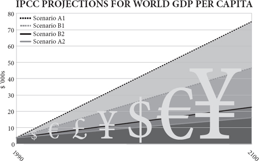
In this book I have tried to build on both Adam Smith and Charles Darwin: to interpret human society as the product of a long history of what the philosopher Dan Dennett calls ‘bubble-up’ evolution through natural selection among cultural rather than genetic variations, and as an emergent order generated by an invisible hand of individual transactions, not the product of a top-down determinism. I have tried to show that, just as sex made biological evolution cumulative, so exchange made cultural evolution cumulative and intelligence collective, and that there is therefore an inexorable tide in the affairs of men and women discernible beneath the chaos of their actions. A flood tide, not an ebb tide.
在这本书中，我试图以亚当·斯密和查尔斯·达尔文为基础：将人类社会解释为哲学家丹·丹内特（Dan Dennett）所说的通过文化而非基因变异之间的自然选择进行 “冒泡式” 进化的漫长历史的产物，以及由个人交易的无形之手产生的新兴秩序，而非自上而下的决定论的产物。我试图表明，就像性使生物进化累积起来一样，交换使文化进化累积起来，使智慧集体化，因此，在男人和女人的事务中，在他们行动的混乱之下，有一个不可阻挡的潮流可以辨认。这是一个洪水潮，而不是退潮。
Somewhere in Africa more than 100,000 years ago, a phenomenon new to the planet was born. A Species began to add to its habits, generation by generation, without (much) changing its genes. What made this possible was exchange, the swapping of things and services between individuals. This gave the Species an external, collective intelligence far greater than anything it could hold in its admittedly capacious brain. Two individuals could each have two tools or two ideas while each knowing how to make only one. Ten individuals could know between them ten things, while each understanding one. In this way exchange encouraged specialisation, which further increased the number of different habits the Species could have, while shrinking the number of things that each individual knew how to make. Consumption could grow more diversified, while production grew more specialised. At first, the progressive expansion of the Species’ culture was slow, because it was limited by the size of each connected population. Isolation on an island or devastation by a famine could reduce the population and so diminish its collective intelligence. Bit by bit, however, the Species expanded both in numbers and in prosperity. The more habits it acquired, the more niches it could occupy and the more individuals it could support. The more individuals it could support, the more habits it could acquire. The more habits it acquired, the more niches it could create.
10 多万年前，在非洲的某个地方，一个对地球来说全新的现象诞生了。一个物种开始在不改变其基因的情况下，一代一代地增加其生活习惯。使之成为可能的是交换，即个体之间的事物和服务的交换。这给了这个物种一个外部的、集体的智慧，远远超过了它那公认的巨大的大脑所能容纳的一切。两个人可以各自拥有两种工具或两种想法，而每个人只知道如何制造一种。十个人可以知道十种东西，而每个人只了解一种。通过这种方式，交换鼓励了专业化，这进一步增加了物种可以拥有的不同习惯的数量，同时减少了每个人知道如何制造的东西的数量。消费可以越来越多样化，而生产则越来越专门化。起初，该物种文化的逐步扩展是缓慢的，因为它受到每个相关人口规模的限制。孤岛上的隔离或饥荒的破坏会减少人口，从而降低其集体智慧。然而，该物种在数量和繁荣程度上都在一点一点地扩大。它获得的习惯越多，它能占据的壁龛就越多，它能支持的个体就越多。它能支持的个体越多，它能获得的习惯也就越多。它获得的习惯越多，它能创造的壁龛也就越多。
The cultural progress of the Species encountered impediments along the way. Overpopulation was a constant problem: as soon as the capacity of the local environment to support the population began to suffer, so individuals began to retreat from specialisation and exchange into defensive self-sufficiency, broadening their production and narrowing their consumption. This reduced the collective intelligence they could draw upon, which reduced the size of the niche they occupied, putting further pressure on population. So there were crashes, even local extinctions. Or the Species found itself expanding in numbers but not in living standards. Yet, again and again the Species found ways to recover through new kinds of exchange and specialisation. Growth resumed.
物种的文化进步在前进的道路上遇到了障碍。人口过剩是一个持续的问题：一旦当地环境支持人口的能力开始受到影响，那么个人就开始从专业化和交换中退缩到防御性的自给自足，扩大他们的生产范围，缩小他们的消费。这就减少了他们可以利用的集体智慧，从而减少了他们所占据的空间大小，给人口带来进一步的压力。因此，出现了崩溃，甚至局部灭绝。或者该物种发现自己的数量在扩大，但生活水平却没有提高。然而，该物种一次又一次地通过新的交换和专业化找到恢复的方法。增长恢复了。
Other impediments were of the Species’ own making. Equipped by their animal ancestry with an ambitious and jealous nature, individuals were often tempted to predate upon and parasitise their fellows’ productivity – to take and not to give. They killed, they enslaved, they extorted. For millennium after millennium this problem remained unsolved and the expansion of the Species, both its living standards and its population, was sporadically slowed, set back and reversed by the enervating greed of the parasites. Not all of the hangers-on were bad: there were rulers and public servants who lived off the traders and producers but dispensed justice and defence, or built roads and canals and schools and hospitals, making the lives of the specialise-and-exchange folk easier, not harder. These behaved like symbionts, rather than parasites (government can do good, after all). Yet still the Species grew, both in numbers and in habits, because the parasites never quite killed the system off which they fed.
其他障碍是物种自己造成的。他们的动物血统使他们具有野心和嫉妒的天性，个人经常被诱惑去掠夺和寄生在他们的伙伴的生产力上 —— 索取而不付出。他们杀戮，他们奴役，他们敲诈。在一个又一个的千年里，这个问题仍然没有得到解决，物种的扩张，包括它的生活水平和人口，由于寄生虫的贪婪而零星地减缓、倒退和逆转。并非所有的寄生虫都是坏的：有些统治者和公务员靠商人和生产者为生，但他们负责司法和防务，或者修建道路和运河、学校和医院，使专业和交换人员的生活更容易，而不是更困难。这些人的行为像共生体，而不是寄生虫（毕竟政府可以做好事）。然而，物种仍然在增长，无论是在数量上还是在习惯上，因为寄生虫从来没有完全杀死它们所依赖的系统。
Around 10,000 years ago, the pace of the Species’ progress leapt suddenly ahead thanks to the suddenly greater stability of the climate, which allowed the Species to co-opt other species and enable them to evolve into exchange-and-specialise partners, generating services for the Species in exchange for their needs. Now, thanks to farming, each individual had not only other members of the Species working for her (and vice versa), but members of other species as well, such as cows and corn. Around 200 years ago, the pace of change quickened again thanks to the Species’ new ability to recruit extinct species to its service as well, through the mining of fossil fuels and the releasing of their energy in ways that generated still more services. By now the Species was the dominant large animal on its planet and was suddenly experiencing rapidly rising living standards because of falling birth rates. Parasites plagued it still – starting wars, demanding obedience, building bureaucracies, committing frauds, preaching schisms – but the exchange and specialisation continued, and the collective intelligence of the Species reached unprecedented levels. By now almost the entire world was connected by a web so that ideas from everywhere could meet and mate. The pace of progress picked up once more. The future of the Species was bright, though it did not know it.
大约 1 万年前，由于气候突然变得更加稳定，该物种的进步步伐突然跃进，这使得该物种能够与其他物种合作，并使它们进化成交换和专业的伙伴，为该物种产生服务，以换取它们的需求。现在，由于农业的发展，每个人不仅有本物种的其他成员为她工作（反之亦然），而且还有其他物种的成员，如奶牛和玉米。大约 200 年前，由于该物种有了新的能力，可以通过开采化石燃料和释放其能量的方式来产生更多的服务，因此变化的步伐再次加快。到现在，该物种已经是其星球上占主导地位的大型动物，并且由于出生率下降而突然经历了生活水平的迅速提高。寄生虫仍然困扰着它 —— 发动战争、要求服从、建立官僚机构、实施欺诈、宣扬分裂 —— 但交流和专业化仍在继续，而且该物种的集体智慧达到了前所未有的水平。到现在，几乎整个世界都被一个网络连接起来，以便来自各地的思想能够相遇和交配。进步的步伐再次加快。物种的未来是光明的，尽管它并不了解这一点。
Onward and upward
向前和向上
I have presented the case for sunny optimism. I have argued that now the world is networked, and ideas are having sex with each other more promiscuously than ever, the pace of innovation will redouble and economic evolution will raise the living standards of the twenty-first century to unimagined heights, helping even the poorest people of the world to afford to meet their desires as well as their needs. I have argued that although such optimism is distinctly unfashionable, history suggests it is actually a more realistic attitude than apocalyptic pessimism. ‘It is the long ascent of the past that gives the lie to our despair,’ said H.G. Wells.
我已经提出了阳光乐观主义的理由。我认为，现在世界已经联网，各种想法比以往任何时候都更乱，创新的步伐将加倍，经济演变将把 21 世纪的生活水平提高到难以想象的高度，甚至帮助世界上最贫穷的人满足他们的欲望和需求。我认为，尽管这种乐观主义明显不合时宜，但历史表明它实际上是一种比世界末日的悲观主义更现实的态度。威尔斯（H.G. Wells）说：“正是过去的长期上升使我们的绝望成为事实。”
These are great sins against conventional wisdom. Worse, they may even leave the impression of callous indifference to the fact that a billion people have not enough to eat, that a billion lack access to clean water, that a billion are illiterate. The opposite is true. It is precisely because there is still far more suffering and scarcity in the world than I or anybody else with a heart would wish that ambitious optimism is morally mandatory. Even after the best half-century for poverty reduction, there are still hundreds of millions going blind for lack of vitamin A in their monotonous diet, or watching their children’s bellies swell from protein deficiency, or awash with preventable dysentery caused by contaminated water, or coughing with avoidable pneumonia caused by the smoke of indoor fires, or wasting from treatable AIDS, or shivering with unnecessary malaria. There are people living in hovels of dried mud, slums of corrugated iron, or towers of soulless concrete (including the ‘Africas within’ the West), people who never get a chance to read a book or see a doctor. There are young boys who carry machine guns and young girls who sell their bodies. If my great grand-daughter reads this book in 2100 I want her to know that I am acutely aware of the inequality of the world I inhabit, a world where I can worry about my weight and a restaurant owner can moan about the iniquity of importing green beans by air from Kenya in winter, while in Darfur a child’s shrunken face is covered in flies, in Somalia a woman is stoned to death and in Afghanistan a lone American entrepreneur builds schools while his government drops bombs.
这些都是违背传统智慧的大罪。更糟的是，它们甚至可能给人留下这样的印象：对 10 亿人吃不饱饭、10 亿人缺乏清洁水、10 亿人是文盲的事实无动于衷。事实恰恰相反。正是因为世界上的痛苦和匮乏仍然比我或任何有心人所希望的要多得多，所以雄心勃勃的乐观主义在道德上是必须的。即使在最好的半个世纪的减贫工作之后，仍有数以亿计的人因单调的饮食中缺乏维生素 A 而失明，或看着他们的孩子因缺乏蛋白质而肚子发胀，或被污染的水引起的可预防的痢疾淹没，或因室内火灾的烟雾引起的可避免的肺炎而咳嗽，或因可治疗的艾滋病而消瘦，或因不必要的疟疾而颤抖。有些人住在干泥巴的小屋、波纹铁皮的贫民窟或没有灵魂的水泥塔里（包括西方的 “非洲”），这些人从来没有机会读一本书或看医生。有携带机关枪的年轻男孩和出卖身体的年轻女孩。如果我的曾孙女在 2100 年读到这本书，我希望她知道，我敏锐地意识到我所居住的世界的不平等，在这个世界上，我可以担心自己的体重，餐馆老板可以抱怨冬天从肯尼亚空运绿豆的不公正，而在达尔富尔，一个孩子萎缩的脸上布满苍蝇，在索马里，一个女人被石头砸死，在阿富汗，一个孤独的美国企业家在他的政府投掷炸弹的时候建造了学校。
It is precisely this ‘evitable’ misery that is the reason for pressing on urgently with economic progress, innovation and change, the only known way of bringing the benefits of a rising living standard to many more people. It is precisely because there is so much poverty, hunger and illness that the world must be very careful not to get in the way of the things that have bettered so many lives already – the tools of trade, technology and trust, of specialisation and exchange. It is precisely because there is still so much further to go that those who offer counsels of despair or calls to slow down in the face of looming environmental disaster may be not only factually but morally wrong.
恰恰是这种 “可避免的” 苦难，使得我们必须紧迫地推动经济进步、创新和变革，这是唯一已知的为更多人带来生活水平提高的好处的方法。正是因为存在如此多的贫困、饥饿和疾病，世界必须非常小心，不要妨碍那些已经改善了许多人生活的东西 —— 贸易、技术和信任、专业化和交换的工具。正是因为还有这么多事情要做，所以那些面对迫在眉睫的环境灾难而提出绝望建议或呼吁放慢脚步的人可能不仅在事实上而且在道德上是错误的。
It is a common trick to forecast the future on the assumption of no technological change, and find it dire. This is not wrong. The future would indeed be dire if invention and discovery ceased. As Paul Romer puts it: ‘Every generation has perceived the limits to growth that finite resources and undesirable side effects would pose if no new recipes or ideas were discovered. And every generation has underestimated the potential for finding new recipes and ideas. We consistently fail to grasp how many ideas remain to be discovered.’ By far the most dangerous, and indeed unsustainable thing the human race could do to itself would be to turn off the innovation tap. Not inventing, and not adopting new ideas, can itself be both dangerous and immoral.
在没有技术变革的假设下预测未来，并发现它是可怕的，这是一个常见的技巧。这并没有错。如果发明和发现停止了，未来确实会很可怕。正如保罗·罗默所说。每一代人都意识到，如果没有新的配方或想法被发现，有限的资源和不良的副作用会对增长造成限制。而每一代人都低估了发现新配方和新想法的潜力。我们始终无法掌握还有多少想法有待发现'。到目前为止，人类可能对自己做的最危险、也是最不可持续的事情，就是关闭创新的水龙头。不发明，不采用新的想法，本身就可能既危险又不道德。
How good could it get?
它能有多好？
Futurology always ends up telling you more about your own time than about the future. H.G. Wells made the future look like Edwardian England with machines; Aldous Huxley made it feel like 1920s New Mexico on drugs; George Orwell made it sound like 1940s Russia with television. Even Arthur C. Clarke and Isaac Asimov, more visionary than most, were steeped in the transport-obsessed 1950s rather than the communication-obsessed 2000s. So in describing the world of 2100, I am bound to sound like somebody stuck in the world of the early twenty-first century, and make laughable errors of extrapolation. ‘It’s tough to make predictions,’ joked somebody, perhaps Yogi Berra: ‘especially about the future.’ Technologies I cannot even conceive will be commonplace and habits I never knew human beings needed will be routine. Machines may have become sufficiently intelligent to design themselves, in which case the rate of economic growth may by then have changed as much as it did at the start of the industrial revolution – so that the world economy will be doubling in months or even weeks, and accelerating towards a technological ‘singularity’ where the rate of change is almost infinite.
未来学最后总是告诉你更多关于你自己的时代而不是关于未来。威尔斯（H.G. Wells）让未来看起来像拥有机器的爱德华时代的英国；奥尔德斯·赫胥黎（Aldous Huxley）让未来感觉像 1920 年代的新墨西哥州的毒品；乔治·奥威尔让未来听起来像 1940 年代拥有电视的俄罗斯。即使是阿瑟·克拉克（Arthur C. Clarke）和艾萨克·阿西莫夫（Isaac Asimov），比大多数人更有远见，也是沉浸在迷恋交通的 50 年代，而不是迷恋通信的 2000 年代。因此，在描述 2100 年的世界时，我听起来一定会像停留在 21 世纪初的世界中的人，并犯一些可笑的推断错误。有人开玩笑说：“做预测很困难”，也许是尤吉-贝拉（Yogi Berra）：“尤其是关于未来的预测”。我甚至无法想象的技术将成为普遍现象，我从不知道人类需要的习惯将成为常规。机器可能已经变得足够智能，可以自我设计，在这种情况下，经济增长的速度到那时可能会像工业革命开始时一样发生变化 —— 因此，世界经济将在几个月甚至几周内翻一番，并加速走向技术 “奇点”，在那里变化的速度几乎是无穷的。
But here goes, none the less. I forecast that the twenty-first century will show a continuing expansion of catallaxy – Hayek’s word for spontaneous order created by exchange and specialisation. Intelligence will become more and more collective; innovation and order will become more and more bottom-up; work will become more and more specialised, leisure more and more diversified. Large corporations, political parties and government bureaucracies will crumble and fragment as central planning agencies did before them. The Bankerdämmerung of 2008 swept away a few leviathans but fragmented and short-lived hedge funds and boutiques will spring up in their place. The collapse of Detroit’s big car makers in 2009 leaves a flock of entrepreneurial startups in charge of the next generation of cars and engines. Monolithic behemoths, whether private or nationalised, are vulnerable as never before to this Lilliputian assault. They are steadily being driven extinct not just by small firms, but by ephemeral aggregations of people that form and reform continuously. The big firms that survive will do so by turning themselves into bottom-up evolvers. Google, dependent on millions of instantaneous auctions to raise revenue from its AdWords, is ‘an economy unto itself, a seething laboratory’, says Stephen Levy. But Google will seem monolithic compared with what comes next.
但是，在这里，没有什么可说的。我预测，21 世纪将显示出 catallaxy 的持续扩张 —— 哈耶克对由交换和专业化创造的自发秩序的说法。智力将变得越来越集体化；创新和秩序将变得越来越自下而上；工作将变得越来越专业化，休闲将变得越来越多样化。大公司、政党和政府官僚机构将像之前的中央计划机构那样崩溃和分裂。2008 年的 “银行风暴”席卷了一些巨无霸，但零散而短暂的对冲基金和精品店将取代它们而出现。2009 年，底特律的大型汽车制造商倒闭，留下一群创业的初创公司负责下一代的汽车和发动机。无论是私营还是国有的巨无霸，在这种小人国式的攻击面前，都显得前所未有的脆弱。它们不仅被小公司，而且被不断形成和改革的短暂的人的集合体稳定地赶尽杀绝。能够生存下来的大公司将通过把自己变成自下而上的进化者来做到这一点。史蒂芬·李维（Stephen Levy）说，谷歌依靠数以百万计的即时拍卖来提高其 AdWords 的收入，是 “一个自成一体的经济体，一个充满生气的实验室”。但与接下来发生的事情相比，谷歌将显得很单一。
The bottom-up world is to be the great theme of this century. Doctors are having to get used to well-informed patients who have researched their own illnesses. Journalists are adjusting to readers and viewers who select and assemble their news on demand. Broadcasters are learning to let their audiences choose the talent that will entertain them. Engineers are sharing problems to find solutions. Manufacturers are responding to consumers who order their products à la carte . Genetic engineering is going to become open-source, where people, not corporations, decide what combinations of genes they want. Politicians are increasingly corks tossed on the waves of public opinion. Dictators are learning that their citizens can organise riots by text message. ‘Here comes everybody’ says the author Clay Shirky.
自下而上的世界将是本世纪的伟大主题。医生们不得不适应那些对自己的疾病有研究的知情的病人。记者们正在适应那些按需选择和组合新闻的读者和观众。广播公司正在学习让他们的听众选择能给他们带来快乐的人才。工程师们正在分享问题以寻找解决方案。制造商正在对那些按需订购产品的消费者作出回应。遗传工程将成为开放源码，由人们而不是公司来决定他们想要的基因组合。政治家们越来越多地被公众舆论的浪潮所淹没。独裁者正在学习他们的公民可以通过短信组织暴乱。作家克莱·舍基（Clay Shirky）说：“所有人都来了。”
People will more and more freely find ways to exchange their specialised production for diversified consumption. This world can already be glimpsed on the web, in what John Barlow calls ‘dot-communism’: a workforce of free agents bartering their ideas and efforts barely interested in whether the barter yields ‘real’ money. The explosion of interest in the free sharing of ideas that the internet has spawned has taken everybody by surprise. ‘The online masses have an incredible willingness to share’ says Kevin Kelly. Instead of money, ‘peer producers who create the stuff gain credit, status, reputation, enjoyment, satisfaction and experience’. People are willing to share their photographs on Flickr, their thoughts on Twitter, their friends on Facebook, their knowledge on Wikipedia, their software patches on Linux, their donations on GlobalGiving, their community news on Craigslist, their pedigrees on Ancestry.com, their genomes on 23andMe, even their medical records on PatientsLikeMe. Thanks to the internet, each is giving according to his ability to each according to his needs, to a degree that never happened in Marxism.
人们将越来越自由地找到方法，用他们的专业生产换取多样化的消费。这个世界已经可以在网络上窥见一斑，即约翰·巴洛（John Barlow）所说的 “网络共产主义”：由自由人组成的劳动力以他们的想法和努力为交换条件，对这种交换是否产生 “真正” 的金钱几乎不感兴趣。互联网催生的对自由分享思想的兴趣的爆发，让所有人都大吃一惊。凯文·凯利说：“网上的群众有一种难以置信的分享意愿。与其说是钱，不如说是 ‘创造东西的同行生产者获得了信用、地位、声誉、享受、满足和经验’。” 人们愿意在 Flickr 上分享他们的照片，在 Twitter 上分享他们的想法，在 Facebook 上分享他们的朋友，在维基百科上分享他们的知识，在 Linux 上分享他们的软件补丁，在 GlobalGiving 上分享他们的捐款，在 Craigslist 上分享他们的社区新闻，在 Ancestry.com 上分享他们的族谱，在 23andMe 上分享他们的基因组，甚至在 PatientsLikeMe 上分享他们的医疗记录。由于互联网的存在，每个人都在根据自己的能力给每个人的需求提供帮助，这种程度在马克思主义中从未发生过。
This catallaxy will not go smoothly, or without resistance. Natural and unnatural disasters will still happen. Governments will bail out big corporations and big bureaucracies, hand them special favours such as subsidies or carbon rations and regulate them in such a way as to create barriers to entry, slowing down creative destruction. Chiefs, priests, thieves, financiers, consultants and others will appear on all sides, feeding off the surplus generated by exchange and specialisation, diverting the life-blood of the catallaxy into their own reactionary lives. It happened in the past. Empires bought stability at the price of creating a parasitic court; monotheistic religions bought social cohesion at the price of a parasitic priestly class; nationalism bought power at the expense of a parasitic military; socialism bought equality at the price of a parasitic bureaucracy; capitalism bought efficiency at the price of parasitic financiers. The online world will attract parasites too: from regulators and cyber-criminals to hackers and plagiarists. Some of them may temporarily throttle their generous hosts.
这种催化作用不会一帆风顺，也不会没有阻力。自然和非自然的灾难仍然会发生。政府将救助大公司和大官僚机构，给他们特殊的好处，如补贴或碳配给，并以创造进入壁垒的方式来监管他们，减缓创造性破坏。首领、牧师、盗贼、金融家、顾问和其他人将出现在四面八方，以交换和专业化产生的盈余为食，将催化的生命之血转移到他们自己的反动生活中。这在过去发生过。帝国以建立寄生的宫廷为代价购买稳定；一神教以寄生的祭司阶层为代价购买社会凝聚力；民族主义以寄生的军队为代价购买权力；社会主义以寄生的官僚机构为代价购买平等；资本主义以寄生的金融家为代价购买效率。网络世界也会吸引寄生虫：从监管者和网络犯罪者到黑客和剽窃者。他们中的一些人可能会暂时扼杀他们慷慨的主人。
It is just possible that the predators and parasites will actually win altogether, or rather that ambitious ideological busybodies will succeed in shutting down the catallaxy and crashing the world back into pre-industrial poverty some time during the coming century. There is even a new reason for such pessimism: the integrated nature of the world means that it may soon be possible to capture the entire world on behalf of a foolish idea, where before you could only capture a country, or perhaps if you were lucky an empire. (The great religions all needed empires within which to flourish and become powerful: Buddhism within the Mauryan and Chinese, Christianity within the Roman, Islam within the Arab.)
只是有可能掠夺者和寄生虫实际上会完全获胜，或者说，雄心勃勃的意识形态忙碌者会在下个世纪的某个时候成功地关闭催化，使世界重新陷入工业化前的贫困。这种悲观主义甚至还有一个新的理由：世界的一体化性质意味着可能很快就能代表一个愚蠢的想法占领整个世界，而以前你只能占领一个国家，或者如果你幸运的话，也许是一个帝国。（伟大的宗教都需要在其中繁荣并变得强大的帝国：佛教在毛利时代和中国，基督教在罗马，伊斯兰教在阿拉伯。）
Take the twelfth century as an example of how close the world once came to turning its back on the catallaxy. In one fifty-year period, between 1100 and 1150, three great nations shut down innovation, enterprise and freedom all at once. In Baghdad, the religious teacher Al-Ghazali almost single-handedly destroyed the tradition of rational enquiry in the Arab world and led a return to mysticism intolerant of new thinking. In Peking, Su-Sung’s astronomical clock, the ‘cosmic engine’, probably the most sophisticated mechanical device ever built at that date, was destroyed by a politician suspicious of novelty and (t)reason, setting the tone for the retreat to autarky and tradition that would be China’s fate for centuries to come. In Paris, St Bernard of Clairvaux persecuted the scholar Peter Abelard, criticised the rational renaissance centred on the University of Paris and supported the disastrous fanaticism of the second crusade. Fortunately, the flames of free thought and reason and catallaxy were kept burning – in Italy and North Africa, especially. But imagine if they had not been. Imagine if the entire world had turned its back on the catallaxy then. Imagine if the globalised world of the twenty-first century allows a globalised retreat from reason. It is a worrying thought. The wrong kind of chiefs, priests and thieves could yet snuff out future prosperity on earth. Already lords don boiler suits to destroy genetically modified crops, presidents scheme to prevent stem-cell research, prime ministers trample on habeas corpus using the excuse of terrorism, metastasising bureaucracies interfere with innovation on behalf of reactionary pressure groups, superstitious creationists stop the teaching of good science, air-headed celebrities rail against free trade, mullahs inveigh against the empowerment of women, earnest princes lament the loss of old ways and pious bishops regret the coarsening effects of commerce. So far they are all sufficiently localised in their effects to achieve no more than limited pauses in the happy progress of the species, but could one of them go global?
以 12 世纪为例，世界曾经多么接近于背弃 “加泰罗尼亚语”。在 1100 年至 1150 年的五十年间，三个伟大的国家一下子关闭了创新、企业和自由。在巴格达，宗教教师加扎利几乎以一己之力摧毁了阿拉伯世界的理性探索传统，并导致了对新思维的不宽容的神秘主义的回归。在北京，苏颂的天文钟，“宇宙引擎”，可能是当时有史以来最复杂的机械设备，被一个怀疑新事物和（理性）的政治家摧毁了，为中国今后几个世纪的命运退缩到自给自足和传统奠定了基础。在巴黎，克莱尔沃的圣伯纳德迫害了学者彼得·阿贝拉尔，批评了以巴黎大学为中心的理性文艺复兴，并支持第二次十字军东征的灾难性狂热主义。幸运的是，自由思想、理性和加泰罗尼亚语的火焰一直在燃烧 —— 特别是在意大利和北非。但是，想象一下，如果他们没有这样做。想象一下，如果当时整个世界都对 “催化剂” 置之不理。想象一下，如果 21 世纪的全球化世界允许全球化的理性退却。这是一个令人担忧的想法。错误的首领、祭司和盗贼可能会扼杀地球上未来的繁荣。已经有领主穿上锅炉服来摧毁转基因作物，总统们计划阻止干细胞研究，首相们以恐怖主义为借口践踏人身保护令，不断膨胀的官僚机构代表反动的压力集团来干扰创新。迷信的创造论者阻止了良好的科学教学，头脑发热的名人抨击自由贸易，毛拉抨击赋予妇女权力，认真的王子哀叹失去了旧的方式，虔诚的主教对商业的粗糙影响感到遗憾。到目前为止，它们的影响都是局部的，只是在物种的快乐进步中实现了有限的停顿，但其中有一个会成为全球性的吗？
I doubt it. It will be hard to snuff out the flame of innovation, because it is such an evolutionary, bottom-up phenomenon in such a networked world. However reactionary and cautious Europe and the Islamic world and perhaps even America become, China will surely now keep the torch of catallaxy alight, and India, and maybe Brazil, not to mention a host of smaller free cities and states. By 2050, China’s economy may well be double the size of America’s. The experiment will go on. So long as human exchange and specialisation are allowed to thrive somewhere, then culture evolves whether leaders help it or hinder it, and the result is that prosperity spreads, technology progresses, poverty declines, disease retreats, fecundity falls, happiness increases, violence atrophies, freedom grows, knowledge flourishes, the environment improves and wilderness expands. Said Lord Macaulay, ‘We see in almost every part of the annals of mankind how the industry of individuals, struggling up against wars, taxes, famines, conflagrations, mischievous prohibitions, and more mischievous protections, creates faster than governments can squander, and repairs whatever invaders can destroy.’
我怀疑这一点。很难扼杀创新的火焰，因为在这样一个网络化的世界里，它是这样一种进化的、自下而上的现象。无论欧洲和伊斯兰世界甚至美国变得多么反动和谨慎，中国现在肯定会保持催化的火炬，还有印度，也许还有巴西，更不用说许多较小的自由城市和国家。到 2050 年，中国的经济规模很可能是美国的两倍。实验将继续进行。只要允许人类交流和专业化在某个地方蓬勃发展，那么无论领导人是帮助还是阻碍，文化都会发展，其结果是繁荣蔓延，技术进步，贫困减少，疾病消退，繁殖力下降，幸福增加，暴力萎缩，自由增长，知识繁荣，环境改善，荒野扩大。麦考利勋爵说：“我们在人类历史的几乎每个地方都看到，个人的产业是如何在战争、税收、饥荒、战火、恶作剧的禁令和更恶作剧的保护中挣扎起来的，它们创造的速度比政府挥霍的速度快，并修复了侵略者所能破坏的东西。”
Human nature will not change. The same old dramas of aggression and addiction, of infatuation and indoctrination, of charm and harm, will play out, but in an ever more prosperous world. In Thornton Wilder’s play The Skin of Our Teeth, the Antrobus family (representing humankind) just manages to survive the ice age, the flood and a world war, but their natures do not change. History repeats itself as a spiral not a circle, Wilder implied, with an ever-growing capacity for both good and bad, played out through unchanging individual character. So the human race will continue to expand and enrich its culture, despite setbacks and despite individual people having much the same evolved, unchanging nature. The twenty-first century will be a magnificent time to be alive.
人类的本性不会改变。侵略和成瘾，迷恋和灌输，魅力和伤害，这些老掉牙的剧情会上演，只不过是在一个越来越繁荣的世界里。在桑顿·怀尔德（Thornton Wilder）的戏剧《我们牙齿的皮肤》中，安特罗伯斯家族（代表人类）只是设法在冰河时期、洪水和世界大战中幸存下来，但他们的本性并没有改变。怀尔德暗示，历史的重复是螺旋式的，而不是圆圈式的，好的和坏的能力都在不断增长，通过不变的个人性格发挥出来。因此，人类将继续扩大和丰富其文化，尽管有挫折，尽管个别的人有基本相同的进化的、不变的性质。二十一世纪将是一个宏伟的时代。
Dare to be an optimist.
敢于做一个乐观主义者。
The pagination of this electronic edition does not match the edition from which it was created. To locate a specific passage, please use the search feature of your e-book reader.
These notes will be continuously corrected and expanded on the website www.rationaloptimist.com.
Prologue
p. 1 ‘In other classes of animals, the individual advances from infancy to age or maturity’. Ferguson, A. 1767. An Essay on the History of Civil Society .
pp. 1–2 ‘On my desk as I write sit two artefacts of roughly the same size’. Photographs of the hand axe and computer mouse reproduced by permission of John Watson.
p. 3 ‘from perhaps 3 million to nearly 7 billion people’. Kremer, M. 1993. Population growth and technical change, one million B.C. to 1990. Quarterly Journal of Economics 108:681–716.
p. 4 ‘The human being is the only animal that ...’ Gilbert, D. 2007. Stumbling on Happiness . Harper Press.
p. 4 ‘with the possible exception of language’. Pagel, M. 2008. Rise of the digital machine. Nature 452:699.
p. 4 ‘compared with even chimpanzees humans are almost obsessively interested in faithful imitation’. Horner, V. and Whiten, A. 2005. Causal knowledge and imitation/emulation switching in chimpanzees (Pan troglodytes ) and children (Homo sapiens ). Animal Cognition 8:164–81.
p. 5 ‘We may call it social evolution when an invention quietly spreads through imitation.’ Tarde, G. 1969/1888. On Communication and Social Influence . Chicago University Press.
p. 5 ‘selection by imitation of successful institutions and habits’. Hayek, F.A. 1960. The Constitution of Liberty . Chicago University Press.
p. 5 ‘Richard Dawkins in 1976 coined the term “meme” for a unit of cultural imitation’. Dawkins, R. 1976. The Selfish Gene . Oxford University Press.
p. 5 ‘Richard Nelson in the 1980s proposed that whole economies evolve by natural selection’. Nelson, R.R. and Winter, S.G. 1982. An Evolutionary Theory of Economic Change . Harvard University Press.
p. 6 ‘a culture or a camera’. Richerson, P. and Boyd, R. 2005. Not by Genes Alone . Chicago University Press: ‘adding one innovation after another to a tradition until the results resemble organs of extreme perfection’.
p. 7 ‘“To create is to recombine” said the molecular biologist François Jacob’. Jacob, F. 1977. Evolution and tinkering. Science 196:1163.
p. 8 ‘what Adam Smith said in 1776’. Smith, A. 1776. The Wealth of Nations .
p. 9 ‘sluiced artificially cheap money towards bad risks’. For a good account of this see Norberg, J. 2009. Financial Fiasco . Cato Institute.
p. 9 ‘The crisis has at least as much political as economic causation’. Friedman, J. 2009. A crisis of politics, not economics: complexity, ignorance and policy failure. Critical Review 23 (introduction to special issue).
Chapter 1
p. 11 ‘On what principle is it, that when we see nothing but improvement behind us, we are to expect nothing but deterioration before us?’ Macaulay, T.B. 1830. Review of Southey’s Colloquies on Society. Edinburgh Review, January 1830.
p. 11 World GDP graph. Maddison, A. 2006. The World Economy . OECD Publishing.
p. 12 ‘But the vast majority of people are much better fed, much better sheltered, much better entertained, much better protected against disease and much more likely to live to old age than their ancestors have ever been’. Kremer, M. 1993. Population growth and technical change, one million BC to 1990. Quarterly Journal of Economics 108:681–716. See Brad De Long’s estimates at http://econ161.berkeley.edu/TCEH/1998_Draft/World_GDP/Estimating_World_GDP.xhtml.
p. 12 ‘the number of different products that you can buy in New York or London tops ten billion’. Beinhocker, E. 2006. The Origin of Wealth . Harvard Business School Press.
p. 13 ‘As for the bird outside the window, tomorrow it will be trapped and eaten by the boy’. See McCloskey, D. 2006. The Bourgeois Virtues . Chicago University Press: ‘Let us then be rich. Remember smoky crofters’ cabins. Remember being tied in Japan by law and cost to one locale. Remember American outhouses and iced-over rain barrels and cold and wet and dirt. Remember in Denmark ten people living in one room, the cows and chickens in the other room. Remember in Nebraska sod houses and isolation.’
p. 14 ‘income has risen more than nine times’. Maddison, A. 2006. The World Economy . OECD Publishing.
p. 15 ‘The proportion of Vietnamese living on less than $2 a day’. Norberg, J. 2006. When Man Created the World . Published in Swedish as När människan skapade världen . Timbro.
p. 15 ‘The poor in the developing world grew their consumption twice as fast as the world as a whole between 1980 and 2000’. Lal, D. 2006. Reviving the Invisible Hand . Princeton University Press. See also Bhalla, S. 2002. Imagine There’s No Country . Institute of International Economics.
p. 15 ‘The percentage living in such absolute poverty has dropped by more than half – to less than 18 per cent’. Chen, S. and Ravallion, M. 2007. Absolute poverty measures for the developing world, 1981–2004. Proceedings of the National Academy of Sciences USA (PNAS ). 104: 16757–62.
p. 15 ‘The United Nations estimates that poverty was reduced more in the last fifty years than in the previous 500.’ Lomborg, B. 2001. The Sceptical Environmentalist . Cambridge University Press.
p. 16 ‘In 1958 J.K. Galbraith declared’. Galbraith, J.K. 1958. The Affluent Society . Houghton Mifflin.
p. 16 ‘This would have been unthinkable at mid-century’. Statistics from Lindsey, B. 2007. The Age of Abundance: How Prosperity Transformed America’s Politics and Culture . Collins.
p. 17 ‘Today, a car emits less pollution travelling at full speed than a parked car did in 1970 from leaks.’ Pollution facts from Norberg, J. 2006. When Man Created the World . Published in Swedish as När människan skapade världen . Timbro.
p. 17 ‘Within just five years both predictions were proved wrong in at least one country. ’ Oeppen, J. and Vaupel, J.W. 2002. Demography. Broken limits to life expectancy. Science 296:1029–31.
p. 18 ‘People are not only spending a longer time living, but a shorter time dying.’ Tallis, R. 2006. ‘Sense about Science’ annual lecture. http://www.senseaboutscience.org.uk/pdf/Lecture2007Transcript.pdf.
p. 18 ‘The same is true of cancer, heart disease and respiratory disease: they all still increase with age, but they do so later and later, by about ten years since the 1950s.’ Fogel, R.W. 2003. Changes in the Process of Aging during the Twentieth Century: Findings and Procedures of the Early Indicators Project . NBER Working Papers 9941, National Bureau of Economic Research.
p. 19 ‘Yet the global effect of the growth of China and India has been to reduce the difference between rich and poor worldwide.’ This is especially clear in Hans Rosling’s animated graphs of global income distribution at www.gapminder.com. Incidentally, the individualisation of life that brought personal freedom after the 1960s also brought less loyalty towards the group, a process that surely reached crisis point in the bonus rows of 2009: see Lindsey, B. 2009. Paul Krugman’s Nostalgianomics: Economic Policy, Social Norms and Income Inequality . Cato Institute.
p. 19 ‘As Hayek put it’. Hayek, F.A. 1960. The Constitution of Liberty . Chicago University Press.
p. 19 ‘Known as the Flynn effect, after James Flynn who first drew attention to it’. Flynn, J.R. 2007. What Is Intelligence? Beyond the Flynn Effect . Cambridge University Press.
pp. 19–20 ‘To date 234 innocent Americans have been freed’.http://www.innocenceproject.org/know.
p. 20 ‘the average family house probably costs slightly less today than it did in 1900 or even 1700’. Comparing house prices over long periods of time is fraught with difficulty, because houses vary so much, but Piet Eichholtz has tried to index house prices by comparing the same area of Amsterdam, the Herengracht, over nearly 400 years: Eichholtz, P.M.A. 2003. A long run house price index: The Herengracht Index, 1628–1973. Real Estate Economics 25:175–92.
p. 20 ‘the same amount of artificial lighting’. Pearson, P.J.G. 2003. Energy History, Energy Services, Innovation and Sustainability . Report and Proceedings of the International Conference on Science and Technology for Sustainability 2003: Energy and Sustainability Science, Science Council of Japan, Tokyo.
pp. 20–1 ‘an hour of work in 1800 earned you ten minutes of reading light’. Nordhaus, W. 1997. Do Real-Output and Real Wage Measures Capture Reality? The History of Lighting Suggests Not . Cowles Foundation Paper no. 957, Yale. A modern check using British figures of £479 average weekly income and £0.09 per kilowatt-hour electricity cost produces a similar result: 1/4 second of work for 18 watt-hours, plus a little more for the cost of the bulb.
p. 21 ‘using the currency that counts, your time’. Nordhaus, W. 1997. Do Real-Output and Real Wage Measures Capture Reality? The History of Lighting Suggests Not . Cowles Foundation Paper no. 957, Yale.
p. 21 ‘The economist Don Boudreaux’. http://cafehayek.typepad.com/hayek/2006/08/were_much_wealt.xhtml.
p. 22 ‘The average Briton today consumes roughly 40,000 times as much artificial light as he did in 1750.’ Fouquet, R., Pearson, P.J.G., Long run trends in energy services 1300–2000. Environmental and Resource Economists 3rd World Congress, via web, Kyoto.
p. 23 ‘Healthcare and education are among the few things that cost more in terms of hours worked now than they did in the 1950s.’ Cox, W.M. and Alm, R. 1999. Myths of Rich and Poor – Why We Are Better Off Than We Think . Basic Books. See also Easterbrook, G. 2003. The Progress Paradox . Random House.
p. 23 ‘observe what Harper’s Weekly had to say’. Gordon, J.S. 2004. An Empire of Wealth: the Epic History of American Power . Harper Collins.
p. 23 ‘They were enricher-barons, too’. McCloskey, D. 2006. The Bourgeois Virtues . Chicago University Press.
p. 24 ‘Henry Ford got rich by making cars cheap’. Moore, S. and Simon, J. 2000. It’s Getting Better All the Time. Cato Institute.
p. 24 ‘The price of aluminium fell from $545 a pound in the 1880s to twenty cents a pound in the 1930s’. Shermer, M. 2007. The Mind of the Market . Times Books.
p. 24 ‘When Juan Trippe sold cheap tourist class seats on his Pan Am airline in 1945’. Norberg, J. 2006. When Man Created the World . Published in Swedish as När människan skapade världen . Timbro.
p. 25 ‘Where it took sixteen weeks to earn the price of 100 square feet of housing in 1956, now it takes fourteen weeks and the housing is of better quality.’ Cox, W.M. and Alm, R. 1999. Myths of Rich and Poor – Why We Are Better Off Than We Think . Basic Books.
p. 25 ‘To remedy this, governments then have to enforce the building of more affordable housing, or subsidise mortgage lending to the poor’. Woods, T.E. 2009. Meltdown . Regnery Press.
p. 25 ‘according to Richard Layard’. Layard, R. 2005. Happiness: Lessons from a New Science. Penguin.
p. 26 ‘The hippies were right all along’. Oswald, Andrew. 2006. The hippies were right all along about happiness. Financial Times, 19 January 2006.
p. 26 ‘a study by Richard Easterlin in 1974’. Easterlin, R.A. 1974. Does economic growth improve the human lot? in Paul A. David and Melvin W. Reder (eds). Nations and Households in Economic Growth: Essays in Honor of Moses Abramovitz . Academic Press.
p. 26 ‘the Easterlin paradox does not exist’. Stevenson, B. and Wolfers, J. 2008. Economic Growth and Subjective Well-Being: Reassessing the Easterlin Paradox. NBER Working Papers 14282, National Bureau of Economic Research; Ingleheart, R., Foa, R., Peterson, C. and Welzel, C. 2008. Development, freedom and rising happiness: a global perspective, 1981–2007. Perspectives on Psychological Science 3:264–86.
p. 26 ‘In the words of one of the studies’. Stevenson, B. and Justin Wolfers, J. 2008. Economic Growth and Subjective Well-Being: Reassessing the Easterlin Paradox . NBER Working Papers 14282, National Bureau of Economic Research.
p. 27 ‘a tax on consumption to encourage saving for investment instead’. Frank, R.H. 1999. Luxury Fever: Why Money Fails to Satisfy in an Era of Excess . The Free Press.
p. 27 ‘to be well off and unhappy is surely better than to be poor and unhappy.’ The journalist Greg Easterbrook’s prayer goes: ‘thank you that I and five hundred million others are well-housed, well-supplied, overfed, free, and not content; because we might be starving, wretched, locked under tyranny and still not content.’ Easterbrook, G. 2003. The Progress Paradox . Basic Books.
p. 27 ‘psychologists find people to have fairly constant levels of happiness’. Gilbert, D. 2007. Stumbling on Happiness . Harper Press.
p. 27 ‘political scientist Ronald Ingleheart’. Ingleheart, R., Foa, R., Peterson, C. and Welzel, C. 2008. Development, freedom and rising happiness: a global perspective, 1981–2007. Perspectives on Psychological Science 3:264–86.
p. 28 ‘Ruut Veenhoven finds’. Veenhoven, R. 1999. Quality-of-life in individualistic society: A comparison of 43 nations in the early 1990’s. Social Indicators Research 48:157–86.
p. 28 ‘some pressure groups may have exacerbated real hunger in Zambia’. Paarlberg, R. 2008. Starved for Science . Harvard University Press.
p. 28 ‘The precautionary principle’. Ron Bailey points out that most renditions of the precautionary principle boil down to the injunction: ‘Never do anything for the first time.’ http://reason.com/archives/2003/07/02/making-the-future-safe.
p. 29 ‘By the same age, human hunter-gatherers have consumed about 20 per cent of their lifetime calories, but produced just 4 per cent.’ Kaplan, H.E. and Robson, A.J. 2002. The emergence of humans: the co-evolution of intelligence and longevity with intergenerational transfers. PNAS 99:10221–6; see also Kaplan, H. and Gurven, M. 2005. The natural history of human food sharing and cooperation: a review and a new multi-individual approach to the negotiation of norms. In Moral Sentiments and Material Interests (eds H. Gintis, S. Bowles, R. Boyd and E.Fehr). MIT Press.
p. 31 ‘curse of resources’. Ferguson, N. 2008. The Ascent of Money . Allen Lane.
p. 31 ‘the Great Depression of the 1930s is just a dip in the slope’. Findlay, R. and O’Rourke, K.H. 2007. Power and Plenty: Trade, War and the World Economy . Princeton University Press.
p. 31 ‘All sorts of new products and industries were born during the Depression’. Nicholas, T. 2008. Innovation lessons from the 1930s. McKinsey Quarterly, December 2008.
p. 31 ‘Arcadia Biosciences in northern California’. http://www.arcadiabio.com/pr_0032.php.
p. 33 ‘Henry David Thoreau asked’. Thoreau, H.D. 1854. Walden: Or Life in the Woods . Ticknor and Fields.
p. 34 ‘In 1900, the average American spent $76 of every $100 on food, clothing and shelter. Today he spends $37’. Cox, W.M. and Alm, R. 1999. Myths of Rich and Poor – Why We Are Better Off Than We Think . Basic Books.
p. 34 ‘To produce implies that the producer desires to consume’ said John Stuart Mill; ‘why else should he give himself useless labour?’. Mill, J.S. 1848. Principles of Political Economy.
p. 34 ‘Thomas Thwaites set out to make his own toaster’. http://www.the toasterproject.org. ‘Kelly Cobb of Drexel University set out to make a man’s suit’. http://www.wired.com/print/culture/design/news/2007/03/100milesuit0330. See also http://www.thebigquestions.com/2009/10/30/the-10000-suit.
p. 37 ‘In civilized society,’ wrote Adam Smith’. Smith, A. 1776. The Wealth of Nations .
p. 38 ‘Leonard Read’s classic 1958 essay “I, Pencil”’. Read, L.E. 1958. I, Pencil. The Freeman, December 1958. For a fine modern rerun of the same subject see the novel by Roberts, R. 2008. The Price of Everything. Princeton University Press.
p. 38 ‘As Friedrich Hayek first clearly saw’. Hayek, F.A. 1945. The use of knowledge in society. American Economic Review 35:519–30.
p. 39 ‘a smaller quantity of labour produce a greater quantity of work’. Smith, A. 1776. The Wealth of Nations .
p. 39 ‘you would have spent your after-tax income in roughly the following way’. Data from the Bureau of Labour Statistics: www.bls.org.
p. 40 ‘An English farm labourer in the 1790s spent his wages roughly as follows’. Clark, G. 2007. A Farewell to Alms . Princeton University Press.
p. 40 ‘A rural peasant woman in modern Malawi spends her time roughly as follows’. Blackden, C.M. and Wodon, Q. 2006. Gender, Time Use and Poverty in SubSaharan Africa . World Bank.
p. 40 ‘the Shire River in Machinga province’. http://allafrica.com/stories/200712260420.xhtml.
p. 41 ‘not just the services you need but also those you crave.’ The distinction between needs and wants, as expressed by Abraham Maslow’s hierarchy of needs, is a mischievous one: people evolved to be ambitious, to start exaggerating their social status or sexual worth, long before they have satisfied their basic needs. See Miller, G. 2009. Spent . Heinemann.
p. 41 ‘the entire concept of food miles is “a profoundly flawed sustainability indicator”’. Bailey, R. 2008. The food miles mistake. Reason, 4 November 2008. http://www.reason.com/news/show/129855.xhtml.
p. 41 ‘Ten times as much carbon’. See https://statistics.defra.gov.uk/esg/reports/foodmiles/final.pdf.
p. 42 ‘six times the carbon footprint of a Kenyan rose’. Specter, M. 2008. Big foot. The New Yorker, 25 February 2008. http://www.new yorker.com/reporting/2008/02/25/080225fa_fact_specter. See also http://grown underthesun.com.
p. 42 ‘just as it did in Europe in 1315–18’. Jordan, W.C. 1996. The Great Famine: Northern Europe in the Early Fourteenth Century . Princeton University Press.
p. 43 ‘Today, 1 per cent works in agriculture and 24 per cent in industry’. Statistics in this paragraph from Angus Maddison (Phases of Capitalist Development ), cited in Kealey, T. 2008. Sex, Science and Profits . Heinemann.
p. 43 ‘the original affluent society’. Sahlins, M. 1968. Notes on the original affluent society. In Man the Hunter (eds R.B. Lee and I. DeVore). Aldine. Pages 85–9.
p. 43 ‘They lived into old age far more frequently than their ancestors had done.’ Caspari, R. and Lee, S.-H. 2006. Is human longevity a consequence of cultural change or modern biology? American Journal of Physical Anthropology 129:512–17.
p. 43 ‘they had largely wiped out the lions and hyenas’. Ofek, H. 2001. Second Nature: Economic Origins of Human Evolution . Cambridge University Press.
p. 44 ‘Geoffrey Miller, for example, in his excellent book Spent ’. Miller, G. 2009. Spent . Heinemann.
p. 44 ‘The warfare death rate of 0.5’. Keeley, L. 1996. War Before Civilization . Oxford University Press.
p. 44 ‘a cemetery uncovered at Jebel Sahaba’. Otterbein, K.F. 2004. How War Began . Texas A & M Press.
p. 45 ‘asks Geoffrey Miller’. Miller, G. 2009. Spent . Heinemann.
Chapter 2
p. 47 ‘He steps under the shower, a forceful cascade pumped down from the third floor.’ McEwan, I 2005. Saturday. Jonathan Cape. The person taking the shower is Perowne, the surgeon at the centre of the plot.
p. 47 Life expectancy graph. World Bank Development Indicators.
p. 48 ‘One day a little less than 500,000 years ago, near what is now the village of Boxgrove’. Potts, M. and Roberts, M. 1998. Fairweather Eden . Arrow Books.
p. 49 ‘a single twitch of progress in biface hand-axe history’. Klein R.G. and Edgar B. 2002. The Dawn of Human Culture . Wiley.
p. 49 ‘Its brain was almost as big as a modern person’s’. Rightmire, G.P. 2003. Brain size and encephalization in early to Mid-Pleistocene Homo. American Journal of Physical Anthropology 124: 109–23.
p. 51 ‘the erectus hominid species’. For simplicity, I am going to call all the species of hominid that lived between about 1.5 million and 300,000 years ago ‘erectus hominid’ after the longest-established and most comprehensive name used for hominids of this period. The current fashion is to include four species within this group: H. ergaste r earliest in Africa, H. erectus a little later in Asia, H. heidelbergensis coming out of Africa later into Europe and its descendant, H. neanderthalensis . See Foley, R.A. and Lahr, M.M. 2003. On stony ground: Lithic technology, human evolution, and the emergence of culture. Evolutionary Anthropology 12:109–22.
p. 51 ‘it was a natural expression of human development’. See Richerson, P. and Boyd, R. 2005. Not by Genes Alone . Chicago University Press: ‘Perhaps we need to entertain the hypothesis that Acheulean bifaces were innately constrained rather than wholly cultural and that their temporal stability stemmed from some component of genetically transmitted psychology.’
p. 51 ‘Meat enabled them to cut down on the huge gut’. Aiello, L.C. and Wheeler, P. 1995. The expensive tissue hypothesis: the brain and the digestive system in human and primate evolution. Current Anthropology 36:199–221.
p. 52 ‘the toolkit was showing signs of change as early as 285,000 years ago’. McBrearty, S. and Brooks, A. 2000. The revolution that wasn’t: a new interpretation of the origin of modern human behavior. Journal of Human Evolution 39:453–563. Morgan, L.E. and Renne, P.R. 2008. Diachronous dawn of Africa’s Middle Stone Age: New 40Ar/39Ar ages from the Ethiopian Rift. Geology 36:967–70.
p. 52 ‘by at least 160,000 years ago’. White T.D. et al. 2003. Pleistocene Homo sapiens from Middle Awash, Ethiopia. Nature 423:742–7; Willoughby, P. R. 2007. The Evolution of Modern Humans in Africa: a Comprehensive Guide . Rowman AltaMira.
p. 52 ‘Pinnacle Point in South Africa’. Marean, C.W. et al. 2007. Early human use of marine resources and pigment in South Africa during the Middle Pleistocene. Nature 449:905–8.
p. 53 ‘a few slender-headed Africans did begin to colonise the Middle East’. Stringer, C. and McKie, R. 1996. African Exodus . Jonathan Cape.
p. 53 ‘at Grottes des Pigeons near Taforalt in Morocco’. Bouzouggar, A. et al. 2007. 82,000-year-old shell beads from North Africa and implications for the origins of modern human behavior. PNAS 2007 104:9964–9; Barton R.N.E., et al. 2009. OSL dating of the Aterian levels at Dar es-Soltan I (Rabat, Morocco) and implications for the dispersal of modern Homo sapiens. Quaternary Science Reviews . doi:10.1016/j.quascirev.2009.03.010.
p. 53 ‘obsidian may have begun to move over long distances’. Negash, A., Shackley, M.S. and Alene, M. 2006. Source provenance of obsidian artefacts from the Early Stone Age (ESA) site of Melka Konture, Ethiopia. Journal of Archeological Science 33:1647–50; and Negash, A. and Shackley, M.S. 2006. Geochemical provenance of obsidian artefacts from the MSA site of Porc Epic, Ethiopia. Archaeometry 48:1–12.
p. 54 ‘Lake Malawi, whose level dropped 600 metres’. Cohen, A.S. et al. 2007. Ecological consequences of early Late Pleistocene megadroughts in tropical Africa. PNAS 104:16422–7.
p. 54 ‘Their genes, marked by the L3 mitochondrial type, suddenly expanded and displaced most others in Africa’. Atkinson, Q.D., Gray, R.D. and Drummond, A.J. 2009. Bayesian coalescent inference of major human mitochondrial DNA haplogroup expansions in Africa. Proceedings of the Royal Society B 276:367–73.
p. 55 ‘living in large social groups on a plentiful diet both encourages and allows brain growth’. Dunbar, R. 2004. The Human Story . Faber and Faber.
p. 55 ‘a fortuitous genetic mutation triggered a change in human behaviour’. Klein, R.G. and Edgar, B. 2002. The Dawn of Human Culture . John Wiley.
p. 55 ‘FOXP2, which is essential to speech and language in both people and songbirds’. Fisher, S.E. and Scharff, C. 2009. FOXP2 as a molecular window into speech and language. Trends in Genetics 25:166–77.doi:10.1016/j.tig.2009.03.002 A.
p. 55 ‘the mutations even change the way mice pups squeak’. Enard, W. et al. 2009. A humanized version of FOXP2 affects cortico-basal ganglia circuits in mice. Cell 137:961–71.
p. 55 ‘Neanderthals share the very same two mutations’. Krause, J. et al. 2007. The derived FOXP2 variant of modern humans was shared with Neandertals. Current Biology 17:1908–12.
p. 57 ‘as Leda Cosmides and John Tooby put it’. Cosmides, L. and Tooby, J. 1992. Cognitive adaptations for social exchange. In The Adapted Mind (eds J.H. Barkow, L. Cosmides and J. Tooby). Oxford University Press.
p. 57 ‘In Adam Smith’s words’. Both Adam Smith quotes are from book 1, part 2, of The Wealth of Nations (1776).
p. 57 ‘In the grasslands of Cameroon’. Rowland and Warnier, quoted in Shennan, S. 2002. Genes, Memes and Human History . Thames & Hudson.
p. 59 ‘The primatologist Sarah Brosnan tried to teach two different groups of chimpanzees about barter’. Brosnan, S.F., Grady, M.F., Lambeth, S.P., Schapiro, S.J. and Beran, M.J. 2008. Chimpanzee autarky. PLOS ONE 3(1):e1518. doi:10.1371/journal.pone.0001518.
p. 59 ‘Chimpanzees and monkeys can be taught to exchange tokens for food’. Chen, M.K. and Hauser, M. 2006. How basic are behavioral biases? Evidence from capuchin monkey trading behavior. Journal of Political Economy 114:517–37.
p. 59 ‘not even a hint of this complementarity is found among nonhuman primates.’ Wrangham, R. 2009. Catching Fire: How Cooking Made Us Human . Perseus Books.
p. 60 ‘Birute Galdikas reared a young orang utan’. Galdikas, B. 1995. Reflections of Eden . Little, Brown.
p. 60 ‘fire itself is hard to start, but easy to share’. Ofek, H. 2001. Second Nature: Economic Origins of Human Evolution . Cambridge University Press.
p. 61 ‘males and females specialise and then share food’. Low, B. 2000. Why Sex Matters: a Darwinian Look at Human Behavior . Princeton University Press.
p. 61 ‘men hunt, women and children gather’. Kuhn, S.L. and Stiner, M.C. 2006. What’s a mother to do? A hypothesis about the division of labour and modern human origins. Current Anthropology 47:953–80.
p. 61 ‘making strikingly different decisions about how to obtain resources within that habitat’. Kaplan, H. and Gurven, M. 2005. The natural history of human food sharing and cooperation: a review and a new multi-individual approach to the negotiation of norms. In Moral Sentiments and Material Interests (eds H. Gintis, S. Bowles, R. Boyd and E. Fehr). MIT Press.
p. 62 ‘Martu women in western Australia hunt goanna lizards’. Bliege Bird, R. 1999. Cooperation and conflict: the behavioural ecology of the sexual division of labour. Evolutionary Anthropology 8:65–75.
p. 62 ‘Women demand meat as their social right, and they get it – otherwise they leave their husbands, marry elsewhere or make love to other men’. Biesele, M. 1993. Women Like Meat . Indiana University Press.
p. 62 ‘In the Mersey estuary near Liverpool’. Stringer, C. 2006. Homo Britannicus . Penguin.
p. 63 ‘In the Alyawarre aborigines of Australia’. Bliege Bird, R. and Bird, D. 2008. Why women hunt: risk and contemporary foraging in a Western Desert Aboriginal community. Current Anthropology 49:655–93.
p. 63 ‘A sexual division of labour would exist even without childcare constraints.’ It is reasonable to wonder if a hundred thousand years of doing different things have not left their mark on at least some of the modern leisure pursuits of the two sexes. Shopping for shoes is a bit like gathering – picking out the perfect item in a crowd of possibilities. Playing golf is a bit like hunting – aiming a ballistic projectile at a target in the great outdoors. It is also noticeable how much more carnivorous most men are than most women. In the West, female vegetarians outnumber male ones by more than two to one, but even among non-vegetarians it is common to find men who take only a token nibble at the vegetables on their plate, and women who do the same with meat. Of course, it is part of my case that in the Stone Age men supplied gathering women with meat and women supplied hunting men with veg, so both sexes were omnivores, but perhaps when it came to ‘stopping for lunch’, the women would eat the nuts they had gathered while elsewhere the men cooked up a tortoise or cut a steak off their first kill. Such speculation is not, I admit, very scientific.
p. 63 ‘It is as if the species now has two brains’. Joe Henrich first made this point to me late at night in a bar in Indiana.
p. 63 ‘men seem to strive to catch big game to feed the whole band’. Bliege Bird, R. and Bird, D. 2008. Why women hunt: risk and contemporary foraging in a Western Desert Aboriginal community. Current Anthropology 49:655–93.
p. 63 ‘Hadza men spend weeks trying to catch a huge eland antelope’. Hawkes, K. 1996. Foraging differences between men and women. In The Archaeology of Human Ancestry (eds James Steele and Stephen Shennan). Routledge.
p. 63 ‘men on the island of Mer in the Torres Strait’. Bliege Bird, R. 1999. Cooperation and conflict: the behavioural ecology of the sexual division of labour. Evolutionary Anthropology 8:65–75.
p. 64 ‘Steven Kuhn and Mary Stiner think that modern, African-origin Homo sapiens had a sexual division of labour and Neanderthals did not’. Kuhn, S.L. and Stiner, M.C. 2006. What’s a mother to do? A hypothesis about the division of labour and modern human origins. Current Anthropology 47:953–80.
p. 64 ‘first advocated by Glyn Isaac in 1978’. Isaac, G.L. and Isaac, B. 1989. The Archaeology of Human Origins: Papers by Glyn Isaac. Cambridge University Press.
p. 65 ‘To paraphrase H.G. Wells’. Wells, H.G. 1902. ‘The Discovery of the Future’. Lecture at the Royal Institution, 24 January 1902, published in Nature 65:326–31. Reproduced with the permission of AP Watt Ltd on behalf of the Literary Executors of the Estate of H.G. Wells.
p. 66 ‘to land, probably around 45,000 years ago, on the continent of Sahul’. O’Connell, J.F. and Allen, J. 2007. Pre-LGM Sahul (Pleistocene Australia-New Guinea) and the archaeology of Early Modern Humans. In Mellars, P., Boyle, K., Bar-Yosef, O. et al., Rethinking the Human Revolution, Cambridge: McDonald Institute for Archaeological Research, pp. 395–410.
p. 66 ‘genetics tell an unambiguous story of almost complete isolation since the first migration’. Thangaraj, K. et al. 2005. Reconstructing the origin of Andaman Islanders. Science 308: 996; Macaulay, V. et al. 2005. Single, rapid coastal settlement of Asia revealed by analysis of complete mitochondrial genomes. Science 308:1034–6; Hudjashov et al. 2007. Revealing the prehistoric settlement of Australia by Y chromosome and mtDNA analysis. PNAS . 104: 8726–30.
p. 67 ‘Jonathan Kingdon first suggested’. Kingdon, J. 1996. Self-Made Man: Human Evolution from Eden to Extinction . John Wiley.
p. 67 ‘All along the coast of Asia, the beachcombers would have found fresh water’. Faure, H., Walter, R.C. and Grant, D.E. 2002. The coastal oasis: Ice Age springs on emerged continental shelves. Global and Planetary Change 33:47–56.
p. 68 ‘so louse genes suggest’. Pennisi, E. 2004. Louse DNA suggests close contact between Early Humans. Science 306:210.
p. 68 ‘conceivably even close enough to acquire a smattering of their cousins’ genes’. Svante Paabo, personal communication. See also Evans, P.D. et al. 2006. Evidence that the adaptive allele of the brain size gene microcephalin introgressed into Homo sapiens from an archaic Homo lineage. PNAS 103:18178–83.
p. 69 ‘driven to the brink of extinction by human predation’. Stiner, M. C. and Kuhn, S. L. 2006. Changes in the ‘connectedness’ and resilience of palaeolithic societies in Mediterranean ecosystems. Human Ecology 34:693–712.
p. 69 ‘in the Mojave desert of California, ravens occasionally kill tortoises for food’. http://www.scienceblog.com/community/older/archives/E/usgs398.xhtml.
p. 70 ‘shells, fossil coral, steatite, jet, lignite, hematite, and pyrite were used to make ornaments and objects’. Stringer, C. and McKie, R. 1996. African Exodus . Jonathan Cape.
p. 70 ‘A flute made from the bone of a vulture’. Conard, N.J., Maline, M. and Munzel, S.C. 2009. New flutes document the earliest musical tradition in southwestern Germany. Nature 46:737–740.
p. 71 ‘jewellery made of shells from the Black Sea and amber from the Baltic’. Ofek, H. 2001. Second Nature: Economic Origins of Human Evolution . Cambridge University Press.
p. 71 ‘This is in striking contrast to the Neanderthals, whose stone tools were virtually always made from raw material available within an hour’s walk of where the tool was used’. Stringer. C. 2006. Homo Britannicus . Penguin: ‘Whereas virtually all Neanderthal stone tools were made from raw materials sourced within an hour’s walk from their sites, Cro-Magnons were either much more mobile or had exchange networks for their resources covering hundreds of miles’.
p. 73 ‘say the evolutionary biologists Mark Pagel and Ruth Mace’. Pagel, M. and Mace, R. 2004. The cultural wealth of nations. Nature 428:275–8.
p. 73 ‘Ian Tattersall remarks’. Tattersall, I. 1997. Becoming Human . Harcourt.
p. 73 ‘It is such a human a thing to do, and so obvious an explanation of the thing that needs explaining: the capacity for innovation’. See for example Horan, R.D., Bulte, E.H. and Shogren, J.F. 2005. How trade saved humanity from biological exclusion: the Neanderthal enigma revisited and revised. Journal of Economic Behavior and Organization 58:1–29.
p. 75 ‘defined by the stockbroker David Ricardo in 1817’. Ricardo, D. 1817. The Principles of Political Economy and Taxation . John Murray.
p. 75 ‘It is such an elegant idea that it is hard to believe that Palaeolithic people took so long to stumble upon it (or economists to define it)’. It is also surprising how hard it is for many intellectuals to grasp its essentials. For a catalogue of its misrepresentations, see Paul Krugman’s essay ‘Ricardo’s Difficult Idea’: http://web.mit.edu/krugman/www/ricardo.htm.
pp. 75–6 ‘Insect social life is built not on increases in the complexity of individual behaviour, “but instead on specialization among individuals”.’ Holldobbler, B. and Wilson, E.O. 2008. The Superorganism . Norton.
p. 77 ‘Even Charles Darwin reckoned’. Darwin, C. R. 1871. The Descent of Man . Quoted in Ofek, H. 2001. Second Nature: Economic Origins of Human Evolution . Cambridge University Press.
p. 77 ‘According to the anthropologist Joe Henrich’. Heinrich, J. 2004. Demography and cultural evolution: how adaptive cultural processes can produce maladaptive losses – the Tasmanian case. American Antiquity 69:197–214.
p. 78 ‘The most striking case of technological regress is Tasmania’. Heinrich, J. 2004. Demography and cultural evolution: how adaptive cultural processes can produce maladaptive losses – the Tasmanian case. American Antiquity 69:197–214.
p. 79 ‘it was not that there was no innovation; it was that regress overwhelmed progress’. Diamond, J. 1993. Ten thousand years of solitude. Discover, March 1993.
p. 80 ‘The Tasmanian market was too small to sustain many specialised skills’. Heinrich, J. 2004. Demography and cultural evolution: how adaptive cultural processes can produce maladaptive losses – the Tasmanian case. American Antiquity 69:197–214.
p. 81 ‘On Kangaroo Island and Flinders Island, human occupation petered out, probably by extinction, a few thousand years after isolation’. Bowdler, S. 1995. Offshore island and maritime explorations in Australian prehistory. Antiquity 69:945–58.
p. 81 ‘causing the anthropologist W.H.R. Rivers to puzzle’. Shennan, S. 2002. Genes, Memes and Human History . Thames & Hudson.
p. 81 ‘Shell beads had been moving long distances across Australia since at least 30,000 years ago.’ Balme, J. and Morse, K. 2006. Shell beads and social behaviour in Pleistocene Australia. Antiquity 80: 799–811.
p. 81 ‘The best stone axes travelled up to 500 miles from where they were mined.’ Flood, J. 2006. The Original Australians: the Story of the Aboriginal People . Allen & Unwin.
p. 81 ‘In contrast to Tasmania, Tierra del Fuego’. Heinrich, J. 2004. Demography and cultural evolution: how adaptive cultural processes can produce maladaptive losses – the Tasmanian case. American Antiquity 69:197–214.
p. 82 ‘The success of human beings depends crucially, but precariously, on numbers and connections.’ Incidentally, the story of the Greenland Norse, or of the inhabitants of Easter Island, told so eloquently as tales of ecological exhaustion in Jared Diamond’s book Collapse, probably say as much about isolation as ecology. Isolated from Scandinavia by a combination of the Black Death and the worsening climate, the Greenland Norse could not sustain their lifestyles; like the Tasmanians, they forgot how to fish. Easter Island Diamond may have partly misread: some argue that its society was possibly still flourishing, despite deforestation, when a holocaust of slave traders arrived in the 1860s – see Peiser, B. 2005. From genocide to ecocide: the rape of Rapa Nui. Energy & Environment 16:513–39.
p. 82 ‘This may explain why Australian aboriginal technology, although it developed and elaborated steadily over the ensuing millennia, was lacking in so many features of the Old World’. O’Connell, J.F. and Allen, J. 2007. Pre-LGM Sahul (Pleistocene Australia-New Guinea) and the archaeology of Early Modern Humans. In Mellars, P., Boyle, K., Bar-Yosef, O. et al. Rethinking the Human Revolution . Cambridge: McDonald Institute for Archaeological Research, pp. 395–410.
pp. 82–3 ‘The “Tasmanian effect” may also explain why technological progress had been so slow and erratic in Africa after 160,000 years ago’. Richerson, P.J., Boyd, R. and Bettinger, R.L. 2009. Cultural innovations and demographic change. Human Biology 81:211–35; Powell, A., Shennan, S. and Thomas, M.G. 2009. Late Pleistocene demography and the appearance of modern human behaviour. Science 324:1298–1301.
p. 83 ‘As the economist Julian Simon put it’. Simon, J. 1996. The Ultimate Resource 2 . Princeton University Press.
p. 84 ‘Tasmanians sold women to the sealers as concubines’. Flood, J. 2006. The Original Australians: the Story of the Aboriginal People . Allen & Unwin.
Chapter 3
p. 85 ‘Money is not metal. It is trust inscribed’. Ferguson, N. 2008. The Ascent of Money . Allen Lane.
p. 85 Homicide rate graph. Spierenburg, P. 2008. A History of Murder . Polity Press. See also Eisner, M. 2001. Modernization, Self-Control and Lethal Violence. The Long-term Dynamics of European Homicide Rates in Theoretical Perspective The British Journal of Criminology 41:618-638.
p. 85 ‘Greenstreet whispers to Bogart’. Siegfried, T. 2006. A Beautiful Math: John Nash, Game Theory and the Modern Quest for a Code of Nature . Joseph Henry Press.
p. 86 ‘As the economist Herb Gintis puts it’. http://www.reason.com/news/show/34772.xhtml.
p. 86 ‘people in fifteen mostly small-scale tribal societies were enticed to play the Ultimatum Game’. Henrich, J. et al. 2005. ‘Economic man’ in crosscultural perspective: Behavioral experiments in 15 small-scale societies. Behavioral and Brain Sciences 28:795–815.
p. 87 ‘costly punishment of selfishness may be necessary’. Fehr, E. and Gachter, S. 2000. Cooperation and punishment in public goods experiments. American Economic Review, Journal of the American Economic Association 90: 980–94; Henrich, J. et al. 2006. Costly punishment across human societies. Science 312:1767–70.
p. 88 ‘in other group-living species, such as ants or chimpanzees, the interactions between members of different groups are almost always violent’. Brosnan, S. 2008. Fairness and other-regarding preferences in nonhuman primates. In Zak, P. (ed.) 2008. Moral Markets . Princeton University Press.
p. 88 ‘human beings can treat strangers as honorary friends’. Seabright, P. 2004. The Company of Strangers . Princeton University Press.
p. 88 ‘primatologists such as Sarah Hrdy and Frans de Waal’. Hrdy, S. 2009. Mothers and Others . Belknap. De Waal, F. 2006. Our Inner Ape . Granta Books.
p. 89 ‘The traders of Malaysia, Indonesia and the Philippines were often women, who were taught to calculate and to account from an early age.’ Pomeranz, K. and Topik, S. 2006. The World That Trade Created . M.E. Sharpe.
p. 89 ‘the British government trusted a Jewish lender named Nathan Rothschild’. Ferguson, N. 2008. The Ascent of Money . Allen Lane.
p. 90 ‘the experiment, run by Bart Wilson, Vernon Smith and their colleagues’. Crockett, S., Wilson, B. and Smith, V. 2009. Exchange and specialization as a discovery process. Economic Journal 119: 1162–88.
p. 90 ‘the Yir Yoront aborigines, in northern Australia’. Sharp, L. 1974. Steel axes for stone age Australians. In Cohen, Y. (ed.) 1974. Man in Adaptation . Aldine de Gruyter.
pp. 91–2 ‘a young naturalist named Charles Darwin came face to face with some hunter-gatherers’. Darwin, C.R. 1839. The Voyage of the Beagle. John Murray.
p. 92 ‘New Guinea highlanders, when first contacted by Michael Leahy and his fellow prospectors in 1933’. Connolly, R. and Anderson, R. 1987. First Contact . Viking.
p. 92 ‘The people of the Pacific coast of North America were sending seashells hundreds of miles inland, and importing obsidian from even farther afield.’ Baugh, T.E. and Ericson, J.E. 1994. Prehistoric Exchange Systems in North America . Springer.
pp. 92–3 ‘The Chumash of the Californian channel islands’. Arnold, J.E. 2001. The Origins of a Pacific Coast Chiefdom: The Chumash of the Channel Islands . University of Utah Press.
p. 93 ‘Das Adam Smith Problem ’. Coase, R. H. 1995. Adam Smith’s view of man. In Essays on Economics and Economists . University of Chicago Press.
p. 93 ‘How selfish soever man may be supposed’. Smith, A. 1759. The Theory of Moral Sentiments .
p. 93 ‘Man has almost constant occasion for the help of his brethren’. Smith, A. 1776. The Wealth of Nations .
p. 93 ‘honorary friends’. Seabright, P. 2004. The Company of Strangers . Princeton University Press.
p. 94 ‘As the philosopher Robert Solomon put it’. Solomon, R.C. 2008. Free enterprise, sympathy and virtue. In Zak, P. (ed.). 2008. Moral Markets . Princeton University Press.
p. 94 ‘a baby smiling causes particular circuits in its mother’s brain to fire’. Noriuchi, M., Kikuchi, Y. and Senoo, A. 2008. The functional neuroanatomy of maternal love: mother’s response to infant’s attachment behaviors. Biological Psychiatr y 63:415–23.
p. 94 ‘the neuro-economist Paul Zak’. Zak, P. 2008. Values and value. In Zak, P. (ed.). 2008. Moral Markets . Princeton University Press.
p. 94 ‘Zak, together with Ernst Fehr and other colleagues, conducted one of the most revealing experiments in the history of economics’. Kosfeld, M., Henrichs, M., Zak, P.J., Fischbacher, U. and Fehr, E. 2005. Oxytocin increases trust in humans. Nature 435: 673–6.
p. 95 ‘by suppressing the activity of the amygdala, the organ that expresses fear’. Rilling, J.K., et al. 2007. Neural correlates of social cooperation and non-cooperation as a function of psychopathy. Biological Psychiatry 61:1260–71.
p. 96 ‘says the economist Robert Frank’. Frank, R. 2008. The status of moral emotions in consequentialist moral reasoning. In Zak, P. (ed.) 2008. Moral Markets . Princeton University Press.
p. 96 ‘people acutely remember the faces of those who cheat them’. Mealey, L., Daood, C. and Krage, M. 1996. Enhanced memory for faces of cheaters. Ethology and Sociobiology 17:119–28.
pp. 96–7 ‘Capuchin monkeys and chimpanzees are just as resentful of unfair treatment’. Brosnan, S. 2008. Fairness and other-regarding preferences in nonhuman primates. In Zak, P. (ed.) 2008. Moral Markets . Princeton University Press.
p. 97 ‘the more people trust each other in a society, the more prosperous that society is’. Zak, P. and Knack, S. 2001. Trust and growth. Economic Journal 111:295–321.
p. 99 ‘John Clippinger draws an optimistic conclusion’. Clippinger, J.H. 2007. A Crowd of One . Public Affairs Books.
p. 99 ‘as Robert Wright has argued’. Wright, R. 2000. Non Zero: the Logic of Human Destiny . Pantheon.
p. 101 ‘Michael Shermer thinks that is because in most of the Stone Age it was true’. Shermer, M. 2007. The Mind of the Market . Times Books.
p. 101 ‘incredible augmentation of the pots and pans of the country’. Quoted in O’Rourke, P.J. 2007. On The Wealth of Nations . Atlantic Monthly Press.
p. 102 ‘said the Archbishop of Canterbury in 2008’. Spectator, 24 September. 2008.
p. 102 ‘As the Australian economist Peter Saunders argues’. Saunders, P. 2007. Why capitalism is good for the soul. Policy Magazine 23:3–9.
p. 102 ‘Brink Lindsey writes’. Lindsey, B. 2007. The Age of Abundance: How Prosperity Transformed America’s Politics and Culture . Collins.
p. 102 ‘Arnold Toynbee, lecturing working men on the English industrial revolution which had so enriched them’. Quoted in Phillips, A. and Taylor, B. 2009. On Kindness . Hamish Hamilton.
p. 103 ‘In 2009 Adam Phillips and Barbara Taylor argued’. Phillips, A. and Taylor, B. 2009. On Kindness . Hamish Hamilton.
p. 103 ‘As the British politician Lord Taverne puts it’. Lord Taverne, personal communication.
p. 103 ‘John Padgett at the University of Chicago compiled data on the commercial revolution in fourteenth-century Florence’. Described in Clippinger, J.H. 2007. A Crowd of One . Public Affairs Books.
p. 103 ‘observed Charles, Baron de Montesquieu’. Quoted in Hirschman, A. 1977. The Passions and the Interests. Princeton University Press.
p. 103 ‘David Hume thought commerce “rather favourable to liberty”’. McFarlane, A. 2002. David Hume and the political economy of agrarian civilization. History of European Ideas 27:79–91.
p. 104 ‘The rapid commercialisation of lives since 1800 has coincided with an extraordinary improvement in human sensibility’. Pinker, S. 2007. A history of violence. The New Republic, 19 March 2007.
p. 105 ‘it was the nouveau-riche merchants, with names like Wedgwood and Wilberforce, who financed and led the anti-slavery movement’. Desmond, A. and Moore, J. 2009. Darwin’s Sacred Cause . Allen Lane.
p. 105 ‘Far from being a vice,’ says Eamonn Butler’. Butler, E. 2008. The Best Book on the Market . Capstone.
p. 105 ‘When shown a photograph of an attractive man’. Miller, G. 2009. Spent . Heinemann.
p. 106 ‘As Michael Shermer comments’. Shermer, M. 2007. The Mind of the Market . Times Books.
p. 106 ‘your chances of being murdered have fallen steadily since the seventeenth century in every European country’. Eisner, M. 2001. Modernization, self-control and lethal violence. The long-term dynamics of European homicide rates in theoretical perspective. British Journal of Criminology 41:618–38.
p. 106 ‘Murder was ten times as common before the industrial revolution in Europe, per head of population, as it is today.’ See also Spierenburg, P. 2009. A History of Murder . Polity Press.
p. 106 ‘the environmental Kuznets curve’. Yandle, B., Bhattarai, M. and Vijayaraghavan, M. 2004. Environmental Kuznets Curves . PERC.
p. 106 ‘when per capita income reaches about $4,000, people demand a clean-up of their local streams and air’. Goklany, I. 2008. The Improving State of the World . Cato Institute.
p. 107 ‘because people were enriching themselves and demanding higher standards’. Moore, S. and Simon, J. 2000. It’s Getting Better All the Time . Cato Institute.
p. 107 ‘The “long tail” of the distribution’. Anderson, C. 2006. The Long Tail: Why the Future of Business Is Selling Less of More . Hyperion.
p. 108 ‘now-unfashionable philosopher Herbert Spencer who insisted that freedom would increase along with commerce’. Quotes are from 1842 essay for The Nonconformist and 1853 essay for The Westminster Review . Both quoted in Nisbet, R. 1980. History of the Idea of Progress . Basic Books.
p. 108 ‘The American civil rights movement drew its strength partly from a great economic migration’. Lindsey, B. 2007. The Age of Abundance: How Prosperity Transformed America’s Politics and Culture . Collins.
p. 109 ‘much argument about whether democracy is necessary for growth’. Friedman, B. 2005. The Moral Consequences of Economic Growth . Knopf.
p. 109 ‘I am happy to cheer, with Deirdre McCloskey’. McCloskey, D. 2006. The Bourgeois Virtues . Chicago University Press.
p. 110 ‘One side denounced capitalism but gobbled up its fruits; the other cursed the fruits while defending the system that bore them.’ Lindsey, B. 2007. The Age of Abundance: How Prosperity Transformed America’s Politics and Culture . Collins.
p. 111 ‘Like Milton Friedman’. Quoted in Norberg, J. 2008. The Klein Doctrine . Cato Institute briefing paper no. 102. 14 May 2008.
p. 111 ‘serfs under feudal brandlords’. Klein, N. 2001. No Logo . Flamingo.
p. 111 ‘Shell may have tried to dump an oil-storage device’. Greenpeace claimed that the Brent Spar had 5,500 tonnes of oil in it, then later admitted the true figure was nearer 100 tonnes.
p. 111 ‘Enron funded climate alarmism’. Ken Lay had ambitions for Enron to ‘become the world’s leading renewable energy company’ and it lobbied hard for renewable energy subsidies and mandates. See http://masterresource.org/?p=3302#more-3302.
p. 111 ‘half of today’s biggest companies did not even exist in 1980’. Micklethwait, J. and Wooldridge, A. 2003. The Company . Weidenfeld.
p. 112 ‘According to Eric Beinhocker of McKinsey’. Beinhocker, E. 2006. The Origin of Wealth . Random House.
p. 113 ‘Like corrugated iron and container shipping’. The development of containerisation in the 1950s made the loading and unloading of ships roughly twenty times as fast and thereby dramatically lowered the cost of trade, helping to start the boom in Asian exports. Today, despite the advent of the weightless information age, the world’s merchant fleet – at over 550 million gross registered tonnes – is twice the size it was in 1970 and ten times the size it was in 1920. See Edgerton, D. 2006. The Shock of the Old: Technology and Global History since 1900 . Profile Books.
p. 113 ‘A single, routine, minuscule Wal-Mart decision in the 1990s’. Fishman, C. 2006. The Wal-Mart Effect . Penguin.
p. 114 ‘As Kodak and Fuji slugged it out for dominance in the 35mm film industry’. The remarkable thing about the death of film cameras is how blind the film companies were to it. As late as 2003, they were insisting that digital would only take some of the market and film would endure.
p. 114 ‘In America, roughly 15 per cent of jobs are destroyed every year’. Kauffman Foundation estimates: cited in The Economist survey of business in America, by Robert Guest, 30 May 2009.
p. 114 ‘“This isn’t about auctions,” said Meg Whitman, the chief executive of eBay’. ‘ebay, inc’. Harvard Business School case study 9-700-007.
p. 117 ‘In a sample of 127 countries’. Carden, A. and Hall, J. 2009. Why are some places rich while others are poor? The institutional necessity of economic freedom (29 July 2009). Available at SSRN: http://ssrn.com/abstract=1440786.
p. 117 ‘the World Bank published a study of “intangible wealth”’. Bailey, R. 2007. The secrets of intangible wealth. Reason, 5 October 2007. http://reason.com/news/show/122854.xhtml.
p. 118 ‘lex mercatoria ’. I discuss this in more detail in The Origins of Virtue (1996).
p. 118 ‘When Michael Shermer and three friends started a bicycle race across America’. In Shermer, M. 2007. The Mind of the Market . Times Books.
Chapter 4
p. 121 ‘Whoever could make two ears of corn’. Swift, J. 1726. Gulliver’s Travels .
p. 121 Global cereal harvest graph. See FAOSTAT: http://faostat.fao.org.
p. 122 ‘Oetzi, the mummified “iceman”’. See http://www.mummytombs.com/otzi/scientific.htm for sources on Oetzi.
p. 122 ‘The biologist Lee Silver’. Lee Silver, personal communication.
p. 123 ‘For Adam Smith capital is “as it were, a certain quantity of labour stocked and stored up to be employed, if necessary, upon some other occasion”.’ Smith, A. 1776. The Wealth of Nations .
p. 124 ‘At one remarkable site, Ohalo II’. Piperno, D.R., Weiss, E., Holst, I. and Nadel, D. 2004. Processing of wild cereal grains in the Upper Palaeolithic revealed by starch grain analysis. Nature 430:670–3.
p. 124 ‘One study notes an “extreme reluctance to shift to domestic foods”’. Johnson, A.W. and Earle, T.K. 2000. The Evolution of Human Societies: from Foraging Group to Agrarian State . Stanford University Press.
p. 125 ‘The probable cause of this hiatus was a cold snap’. Rosen, A.M. 2007. Civilizing Climate: Social Responses to Climate Change in the Ancient Near East . Rowman AltaMira.
p. 126 ‘the survivors took to nomadic hunter-gathering again’. Shennan, S. 2002. Genes, Memes and Human History . Thames & Hudson.
p. 126 ‘Peru by 9,200 years ago’. Dillehay, T.D. et al. 2007. Preceramic adoption of peanut, squash, and cotton in northern Peru. Science 316:1890–3.
p. 126 ‘millet and rice in China by 8,400 years ago’. Richerson, P.J., Boyd, R. and Bettinger, R.L. 2001. Was agriculture impossible during the Pleistocene but mandatory during the Holocene? A climate change hypothesis. American Antiquity 66:387–411.
p. 126 ‘maize in Mexico by 7,300 years ago’. Pohl, M.E.D. et al. 2007. Microfossil evidence for pre-Columbian maize dispersals in the neotropics from San Andrés, Tabasco, Mexico. PNAS 104: 11874–81.
p. 126 ‘taro and bananas in New Guinea by 6,900 years ago’. Denham, T.P., et al. 2003. Origins of agriculture at Kuk Swamp in the Highlands of New Guinea. Science 301: 189–93.
p. 126 ‘This phenomenal coincidence’. Recent scholarship has made the coincidence much more striking. Until recently, agriculture in Peru, Mexico and New Guinea was believed to have started much later.
p. 127 ‘agriculture was impossible during the last glacial, but compulsory in the Holocene.’ Richerson, P.J., Boyd, R. and Bettinger, R.L. 2001. Was agriculture impossible during the Pleistocene but mandatory during the Holocene? A climate change hypothesis. American Antiquity 66(3): 387–411. Incidentally, there is a fascinating parallel between the sudden appearance of farming at the end of the last ice age and the sudden appearance of multicellular life after the mother of all ice ages, the snowball-earth period between 790 and 630 million years ago, when from time to time even the tropics lay under thick ice sheets. The isolated pockets of shivering bacterial refugees upon snowball earth found themselves so inbred, goes one ingenious argument, that individuals clubbed together as a ‘body’ and delegated breeding to specialised reproductive cells. See Boyle, R.A., Lenton, T.M., Williams, H.T.P. 2007. Neoproterozoic ‘snowball Earth’ glaciations and the evolution of altruism. Geobiology 5:337–49.
p. 127 ‘It is no accident that modern Australia, with its unpredictable years of drought followed by years of wet, still looks a bit like that volatile glacial world’. Lourandos, H. 1997. Continent of Hunter-Gatherers . Cambridge University Press.
p. 127 ‘One of the intriguing things about the first farming settlements is that they also seem to be trading towns’. Sherratt, A. 2005. The origins of farming in South-West Asia. ArchAtlas, January 2008, edition 3, http://www.archatlas.org/OriginsFarming/Farming.php, accessed 30 January 2008.
p. 128 ‘Jane Jacobs suggested in her book The Economy of Cities ’. Jacobs, J. 1969. The Economy of Cities . Random House.
p. 128 ‘In Greece, farmers arrived suddenly and dramatically around 9,000 years ago.’ Perles, C. 2001. The Early Neolithic in Greece . Cambridge University Press.
p. 128 ‘so the genetic evidence suggests’. Cavalli-Sforza, L.L. and Cavalli-Sforza, E. C. 1995. The Great Human Diasporas: the History of Diversity . Addison-Wesley.
p. 129 ‘Other descendants of the Black Sea refugees took to the plains of what is now Ukraine’. Fagan, B. 2004. The Long Summer . Granta.
p. 129 ‘a genetic mutation, substituting G for A in a control sequence upstream of a pigment gene called OCA2’. Eiberg H. et al. 2008. Blue eye color in humans may be caused by a perfectly associated founder mutation in a regulatory element located within the HERC2 gene inhibiting OCA2 expression. Human Genetics 123:177–87.
p. 130 ‘The carbon dioxide released by the fires may even have helped to warm the climate to its 6,000-years-ago balmy maximum’. Ruddiman, W.F. and Ellis, E.C. 2009. Effect of per-capita land use changes on Holocene forest clearance and CO2 emissions. Quaternary Science Reviews . (doi:10.1016/j.quascirev.2009.05.022).
p. 130 ‘the stamp seals of the Halaf people, 8,000 years ago’. http://www.tellhalaf-projekt.de/de/tellhalaf/tellhalaf.htm.
p. 131 ‘Haim Ofek writes’. Ofek, H. 2001. Second Nature: Economic Origins of Human Evolution . Cambridge University Press.
p. 131 ‘in the words of two theorists’. Richerson, P.J. and Boyd, R. 2007. The evolution of free-enterprise values. In Zak, P. (ed.) 2008. Moral Markets Princeton University Press.
p. 131 ‘very early mining of pure copper-metal deposits around Lake Superior’. Pledger, T. 2003. A brief introduction to the Old Copper Complex of the Western Great Lakes: 4000–1000 BC . In Proceedings of the Twenty-seventh Annual Meeting of the Forest History Association of Wisconsin, Inc. Oconto, Wisconsin, 5 October 2002, pp. 10–18. See also http://www.uwfox.uwc.edu/academics/depts/tpleger/oldcopper.xhtml.
p. 132 ‘the Mitterberg copper miners’. Shennan, S.J. 1999. Cost, benefit and value in the organization of early European copper production. Antiquity 73:352–63.
p. 132–3 ‘typical modern non-industrial people, living in traditional societies, directly consume between one-third and two-thirds of what they produce, and exchange the rest for other goods’. Davis, J. 1992. Exchange . Open University Press.
p. 133 ‘Up to about 300 kilograms of food per head per year, people eat what they grow’. Clark, C. 1970. Starvation or Plenty? Secker and Warburg.
p. 133 ‘Stephen Shennan satirises the attitude thus’. Shennan, S.J. 1999. Cost, benefit and value in the organization of early European copper production. Antiquity 73:352–63.
p. 134 ‘The ‘kula’ system of the south Pacific’. Davis, J. 1992. Exchange . Open University Press.
p. 135 ‘the worst mistake in the history of the human race’. Diamond. J. 1987. The worst mistake in the history of the human race? Discover, May: 64–6.
p. 136 ‘polygamy enables poor women to share in prosperity more than poor men’. Shennan, S. 2002. Genes, Memes and Human History . Thames & Hudson.
p. 137 ‘Fuegian men, who could not swim, left their wives to anchor canoes in kelp beds and swim ashore in snow storms’. Bridges, E.L. 1951. The Uttermost Part of the Earth . Hodder & Stoughton.
p. 137 ‘One commentator writes’. Wood, J.W. et al. 1998. A theory of preindustrial population dynamics: demography, economy, and well-being in Malthusian systems. Current Anthropology 39:99–135.
p. 137 ‘The archaeologist Steven LeBlanc says that the evidence of constant violence in the ancient past’. LeBlanc, S.A. and Register, K. 2003. Constant Battles: Why We Fight . St Martin’s Griffin.
p. 138 ‘In the Merzbach valley in Germany’. Shennan, S. 2002. Genes, Memes and Human History . Thames & Hudson.
p. 138 ‘At Talheim around 4900 BC ’. Bentley, R.A., Wahl, J., Price T.D. and Atkinson, T.C. 2008. Isotopic signatures and hereditary traits: snapshot of a Neolithic community in Germany. Antiquity 82:290–304.
p. 138 ‘As Paul Seabright has written’. Seabright, P. 2008. Warfare and the Multiple Adoption of Agriculture after the Last Ice Age, IDEI Working Paper no. 522, April 2008.
p. 138 ‘When Samuel Champlain accompanied (and assisted with his arquebus) a successful Huron raid upon the Mohawks in 1609’. Brook, T. 2008. Vermeer’s Hat . Profile Books.
p. 139 ‘Robert Malthus’. Yes, Robert: to call Thomas Robert Malthus by his first name which he did not use, is like calling the first director of the FBI John Hoover.
p. 140 ‘the eminent British chemist Sir William Crookes gave a similar jeremiad’. Crookes, W. 1898. The Wheat Problem . Reissued by Ayers 1976.
p. 140 ‘Fritz Haber and Carl Bosch’. Smil, V. 2001. Enriching the Earth . MIT Press.
pp. 140–1 ‘As late as 1920, over three million acres of good agricultural land in the American Midwest lay uncultivated’. Clark, C. 1970. Starvation or Plenty? Secker and Warburg.
p. 142 ‘a scientist working in Mexico called Norman Borlaug’. Easterbrook, G. 1997. Forgotten benefactor of humanity. The Atlantic Monthly .
p. 143 ‘In 1968, after huge shipments of Mexican seed, the wheat harvest was extraordinary in both countries.’ Hesser, L. 2006. The Man Who Fed the World . Durban House. See Borlaug, N.E. 2000. Ending world hunger: the promise of biotechnology and the threat of antiscience zealotry. Plant Physiology 124:487–90. Also author’s interview with N. Borlaug 2004.
p. 144 ‘Intensification has saved 44 per cent of this planet for wilderness.’ Goklany I. 2001. Agriculture and the environment: the pros and cons of modern farming. PERC Reports 19:12–14.
p. 144 ‘Some argue that the human race already appropriates for itself an unsustainable fraction of the planet’s primary production’. The World Wildlife Fund estimates that humankind is already overdrawn in its use of earth’s resources, but it reaches this conclusion only by including a vast acreage of new forest planting needed to balance each person’s carbon emissions.
p. 144 ‘HANPP – the “human appropriation of net primary productivity”’. Haberl, H. et al. 2007. Quantifying and mapping the human appropriation of net primary production in earth’s terrestrial ecosystems. Proceedings of the National Academy of Sciences 104:12942–7.
p. 145 ‘These findings suggest that, on a global scale, there may be a considerable potential to raise agricultural output without necessarily increasing HANPP’. Haberl, H. et al. 2007. Quantifying and mapping the human appropriation of net primary production in earth’s terrestrial ecosystems. Proceedings of the National Academy of Sciences 104:12942–7.
p. 145 ‘Even the confinement of chickens, pigs and cattle to indoor barns and batteries’. Dennis Avery of the Hudson Institute has written on this. See http://www.hudson.org/index.cfm?fuseaction=publication_details&id=3988.
p. 146 ‘Colin Clark calculated that human beings could in theory sustain themselves on just twenty-seven square metres of land each’. Clark, C. 1963. Agricultural productivity in relation to population. In Man and His Future, CIBA Foundation; also Clark, C. 1970. Starvation or Plenty? Secker and Warburg.
p. 146 ‘the world grew about two billion tonnes of rice, wheat and maize on about half a billion hectares of land’. Statistics taken from the FAO: www.faostat.fao.org.
p. 147 ‘would mean an extra seven billion cattle grazing an extra thirty billion acres of pasture’. Smil, V. 2001. Enriching the Earth . MIT Press. See also http://www.heartland.org/policybot/results/22792/Greenpeace_Farming_Plan_Would_Reap_Environmental_Havoc_around_the_World.xhtml: Dennis Avery asked Vaclav Smil to make this calculation.
p. 147 ‘Lester Brown points out that India depends heavily on a rapidly depleting aquifer and a slowly drying Ganges’. Brown, L. 2008. Plan B 3.0: Mobilizing to Save Civilisation . Earth Policy Institute.
p. 148 ‘Once it is properly priced by markets, water is not only used more frugally’. Morriss, A.P. 2006. Real people, real resources and real choices: the case for market valuation of water. Texas Tech Law Review 38.
p. 149 ‘as a professor and a chef have both suggested on my radio recently’. The professor and the chef I refer to are Tim Lang and Gordon Ramsey. ‘Why are we buying food from other people which should be feeding developing countries?’ asked Tim Lang, member of the Sustainable Development Commission, on the BBC Today programme, 4 March 2008. ‘I don’t want to see asparagus on menus in the middle of December. I don’t want to see strawberries from Kenya in the middle of March. I want to see it home grown,’ said Gordon Ramsey on 9 May 2008. (See ‘Ramsey orders seasonal-only menu’, http://news.bbc.co.uk/1/hi/uk/7390959.stm.) Apart from the increased emissions, imagine the terrible monotony of the British diet under these proposals. There would be no coffee or tea, no bananas or mangoes, no rice or curry powder, there would be strawberries only in June and July and no lettuce in winter. You would eat an awful lot of potatoes. The rich would heat their greenhouses and plant orange trees in them, or travel to foreign parts and smuggle papayas in their luggage. Meat would become a luxury only available to the professor and his fellow rich folk – for to grow a lamb chop requires ten times as much land as to grow a piece of bread of equivalent calories. There are no combine harvester factories in Britain, so unless the prof wants us hypocritically to import combines but not flour, we would all have to take our turn in the fields with sickles in August. These are no doubt mere inconveniences that the professor would sort out with some laws and some food police. The real problem lies elsewhere, conveniently out of sight in the developing world. The growers of coffee, tea, bananas, mangoes, rice and turmeric would all suffer. They would have to stop growing cash crops and start being more self-sufficient. Sounds charming, but self-sufficiency is the very definition of poverty. Unable to sell their cash crops, they would have to eat what they grow. As we in the north munched our potatoes and bread, so they in the tropics would be growing heartily sick of an endless diet of mangoes and turmeric. The cash economy enables me to eat mangoes and them to eat bread, thank goodness.
p. 149 ‘again the acreage under the plough will have to balloon’. Or, to put the point in academic-ese: ‘The additional harvest of 4–7 Pg C/yr needed to achieve this level of bioenergy use would almost double the present biomass harvest and generate substantial additional pressure on ecosystems.’ Haberl, H. et al. 2007. Quantifying and mapping the human appropriation of net primary production in earth’s terrestrial ecosystems. Proceedings of the National Academy of Sciences 104:12942–7.
p. 149 ‘each needs little more than a thousand square metres, a tenth of a hectare’. Smil, V. 2000. Feeding the World . MIT Press.
p. 150 ‘Organic farming is low-yield, whether you like it or not’. Avery, A. 2006. The Truth about Organic Foods . Henderson Communications. See also Goulding, K.W.T. and Trewavas, A.J. 2009. Can organic feed the world? AgBioview Special Paper 23 June 2009. http://www.agbioworld.org/newsletter_wm/index.php?caseid=archive&newsid=2894.
p. 150 ‘With such help a particular organic plot can match non-organic yields, but only by using extra land elsewhere to grow the legumes and feed the cattle’. A recent study claimed that organic yields can be higher than those of conventional farming (http://www.ns.umich.edu/htdocs/releases/story.php?id=5936), but only by an extremely selective and biased misuse of the statistics (see http://www.cgfi.org/2007/09/06/organic-abundance-report-fatally-flawed/).
p. 150 ‘a pound of organic lettuce, grown without synthetic fertilisers or pesticides in California, and containing eighty calories, requires 4,600 fossil-fuel calories to get it to a customer’s plate’. Pollan, M. 2006 The Omnivore’s Dilemma: the Search for the Perfect Meal in a Fast Food World. Bloomsbury.
p. 150 ‘when a technology came along that promised to make organic farming both competitive and efficient, the organic movement promptly rejected it’. Ronald, P. and Adamchak, R.W. 2008. Tomorrow’s Table: Organic Farming, Genetics and the Future of Food . Oxford University Press.
p. 152 ‘a near-doubling of yield and a halving of insecticide use’. ISAAA 2009. The Dawn of a New Era: Biotech Crops in India . ISAAA Brief 39, 2009: http://www.isaaa.org/resources/publications/downloads/The-Dawn-of-a-New-Era.pdf.
p. 152 ‘the use of insecticides is down by as much as 80 per cent’. Marvier M., McCreedy, C., Regetz, J. and Kareiva, P. 2007. A meta-analysis of effects of Bt cotton and maize on nontarget invertebrates. Science 316:1475–7; also Wu, K.-M. et al. 2008. Suppression of cotton bollworm in multiple crops in China in areas with Bt Toxin-containing cotton. Science 321:1676–8 (doi: 10.1126/science.1160550).
p. 152 ‘the leaders of the organic movement locked themselves out of a new technology’. Ronald, P.C. and Adamchak, R.W. 2008. Tomorrow’s Table: Genetics, and the Future of Food . Oxford University Press.
p. 152 ‘the amount of pesticide not used because of genetic modification at over 200 million kilograms of active ingredients’. Miller, J.K. and Bradford, K.J. 2009. The pipeline of transgenic traits in specialty crops. Unpublished paper, Kent Bradford.
p. 152 ‘writes the Missouri farmer Blake Hurst’. Hurst, B. 2009. The omnivore’s delusion: against the agri-intellectuals. The American, journal of the American Enterprise Institute. 30 July 2009. http://www.american.com/archive/2009/july/the-omnivore2019s-delusion-against-the-agri-intellectuals.
p. 152 ‘Silent Spring ’. Carson, R. 1962. Silent Spring . Houghton Mifflin.
p. 153 ‘These mutations were selected, albeit inadvertently’. Doebley, J. 2006. Unfallen grains: how ancient farmers turned weeds into crops. Science 312:1318–19.
p. 153 ‘DNA sequences borrowed from mosses and algae’. Richardson, A.O. and Palmer, J.D. 2006. Horizontal gene transfer in plants. Journal of Experimental Botany 58:1–9.
p. 153 ‘DNA has even been caught jumping naturally from snakes to gerbils with the help of a virus.’ Piskurek, O. and Okada, N. 2007. Poxviruses as possible vectors for horizontal transfer of retroposons from reptiles to mammals. PNAS 29:12046–51.
p. 154 ‘Only in parts of Europe and Africa were these crops denied to farmers and consumers’. Brookes, G. and Barfoot, P. 2007. Global impact of GM crops: socio-economic and environmental effects in the first ten years of commercial use. AgBioForum 9:139–51.
p. 154 ‘what Stewart Brand calls their “customary indifference to starvation”’. Brand, S. 2009. Whole Earth Discipline . Penguin.
p. 154 ‘Robert Paarlberg writes’. Paarlberg, R. 2008. Starved for Science . Harvard University Press.
p. 154 ‘Ingo Potrykus thinks’. Potrykus, I. 2006. Economic Times of India, 26 December 2005. Reprinted at http://www.fighting diseases.org/main/articles.php?articles_id=568.
p. 154 ‘Or as the Kenyan scientist Florence Wambugu puts it’. Quoted in Brand, S. 2009. Whole Earth Discipline . Penguin.
pp. 154–5 ‘Per capita food production in Africa has fallen 20 per cent in thirty-five years’. Collier, P. 2008. The politics of hunger: how illusion and greed fan the food crisis. Foreign Affairs November/December 2008.
p. 155 ‘Field trials begin in Kenya in 2010 of drought-resistant and insect-resistant maize’. Muthaka, B. 2009. GM maize for local trials. Daily Nation (Nairobi), 17 June 2009.
p. 156 ‘For example, modern plant oils and plentiful red meat make for a diet low in omega-3 fatty acids’. Morris, C.E. and Sands, D. 2006. The breeder’s dilemma: resolving the natural conflict between crop production and human nutrition. Nature Biotechnology 24: 1078-80.
p. 156 ‘The Indian activist Vandana Shiva’. Quoted in Avery, D.T. 2000. What do environmentalists have against golden rice? Center for Global Food Issues, http://www.cgfi.org/materials/articles/2000/mar_7_00.htm. See also www.goldenrice.org for more of the shocking story of opposition to this humanitarian project.
Chapter 5
p. 157 ‘Imports are Christmas morning; exports are January’s MasterCard bill.’ O’Rourke, P.J. 2007. On The Wealth of Nations . Atlantic Monthly Press.
p. 157 Death rates from water-related disease graph. Goklany, I. 2009. Electronic Journal of Sustainable Development . www.ejsd.org.
p. 158 ‘A modern combine harvester, driven by a single man, can reap enough wheat in a single day to make half a million loaves.’ Half a kilogram of flour per loaf, 3,500 kg per acre, eighty acres per day = 560,000 loaves per day. These are numbers my colleagues achieve on my own farm.
p. 158 ‘a distinctive ‘Ubaid’ style of pottery, clay sickles and house design’. Stein, G.J. and Ozbal, R. 2006. A tale of two Oikumenai: variation in the expansionary dynamics of ‘Ubaid’ and Uruk Mesopotamia. Pp. 356–70 in Stone, E. C. (ed.) Settlement and Society: Ecology, Urbanism, Trade and Technology in Mesopotamia and Beyond (Robert McC. Adams Festschrift). Los Angeles, Cotsen Institute of Archaeology.
p. 159 ‘in the words of the archaeologist Gil Stein’. Stein, G.J. and Ozbal, R. 2006. A tale of two Oikumenai: variation in the expansionary dynamics of ‘Ubaid’ and Uruk Mesopotamia. Pp. 356–70 in: Stone, E. C. (ed.) Settlement and Society: Ecology, Urbanism, Trade and Technology in Mesopotamia and Beyond (Robert McC. Adams Festschrift). Los Angeles, Cotsen Institute of Archaeology.
p. 160 ‘The message those tablets tell is that the market came long before the other appurtenances of civilisation.’ Basu, S., Dickhaut, J.W., Hecht, G., Towry, K.L. and Waymire, G.B. 2007. Recordkeeping alters economic history by promoting reciprocity. PNAS 106:1009–14.
p. 161 ‘Merchants and craftsmen make prosperity; chiefs, priests and thieves fritter it away.’ Incidentally, I find it strange to recall that my education was utterly dominated by two stories: the Bible’s and Rome’s. Both were disappointing examples of history. One told the story of an obscure, violent and somewhat bigoted tribe and one of its later cults, who sat around gazing at their theological navels for a few thousand years while their fascinating neighbours – the Phoenicians, Philistines, Canaanites, Lydians and Greeks – invented respectively maritime trade, iron, the alphabet, coins and geometry. The other told the story of a barbarically violent people who founded one of the empires that institutionalised the plundering of its commercially minded neighbours, then went on to invent practically nothing in half a millennium and achieve an actual diminution in living standards for its citizens, very nearly extinguishing literacy as it died. I exaggerate, but there are more interesting figures in history than Jesus Christ or Julius Caesar.
p. 161 ‘Unlike hunter-gatherers or herders, farmers faced with taxes have to stay put and pay’. Carneiro, R.L. 1970. A theory of the origin of the state. Science 169: 733–8.
p. 161 ‘in the words of two modern historians’. Moore, K. and Lewis, D. 2000. Foundations of Corporate Empire. Financial Times /Prentice Hall.
p. 162 ‘As Sir Mortimer Wheeler wrote in his autobiography’. Quoted by Sally Greene in 1981, introduction to illustrated edition of Man Makes Himself . Childe, V. Gordon. 1956. Pitman Publishing.
p. 162 ‘the archaeologist Shereen Ratnagar concluded’. Ratnagar, S. 2004. Trading Encounters: From the Euphrates to the Indus in the Bronze Age. Oxford University Press India.
p. 162 ‘great wealth of the Indus cities was generated by trade’. Possehl, G.L. 2002. The Indus Civilization: A Contemporary Perspective. Rowman AltaMira.
p. 162 ‘the so-called Norte Chico civilisation’. Haas, J. and Creamer, W. 2006. Crucible of Andean civilization: The Peruvian coast from 3000 to 1800 BC . Current Anthropology 47:745–75.
pp. 163–4 ‘Intensification of trade came first’. The Chinese case remains unexplored here for the simple reason that the key moment in China, the Longshan culture, remains too poorly known, especially in terms of how much trade occurred.
p. 165 ‘silver-based prices, which fluctuated freely’. Aubet, M.E. 2001. The Phoenicians and the West . 2nd edition. Cambridge University Press.
p. 165 ‘the Uruk word for high priest is the same as the word for accountant’. Childe, V.G. 1956/1981. Man Makes Himself . Moonraker Press.
p. 165 ‘merchants from Ashur operated in “karum” enclaves’. Moore, K. and Lewis, D. 2000. Foundations of Corporate Empire . Pearson.
p. 165 ‘The profit margin was 100 per cent on tin and 200 per cent on textiles’. Chanda, N. 2007. Bound Together: How Traders, Preachers, Adventurers and Warriors Shaped Globalisation . Yale University Press.
p. 166 ‘Such merchants “did not devote themselves to trading in copper and wool because Assyria needed them, but because that trade was a means of obtaining more gold and silver”.’ Aubet, M.E. 2001. The Phoenicians and the West . 2nd edition. Cambridge University Press.
p. 167 ‘a different Phoenician invention, the bireme galley’. Holst, S. 2006. Phoenicians: Lebanon’s Epic Heritage . Sierra Sunrise Publishing.
p. 168 ‘“Homer” displays a relentlessly negative attitude to Phoenician traders’. Aubet, M.E. 2001. The Phoenicians and the West . 2nd edition. Cambridge University Press.
p. 168 ‘Tyrian traders founded Gadir, present-day Cadiz, around 750 BC ’. Aubet, M.E. 2001. The Phoenicians and the West . 2nd edition. Cambridge University Press.
p. 169 ‘said a Montagnais trapper to a French missionary in seventeenth-century Canada’. Brook, T. 2008. Vermeer’s Hat . Profile Books.
p. 169 ‘When HMS Dolphin ’s sailors found that a twenty-penny iron nail could buy a sexual encounter on Tahiti in 1767’. Bolyanatz, A. H. 2004. Pacific Romanticism: Tahiti and the European Imagination . Greenwood Publishing Group.
p. 170 ‘advanced by David Hume’. This argument goes back to David Hume’s History of Great Britain, and has been pursued recently by Douglass North.
p. 170 ‘Miletus, the most successful of the Ionian Greek cities, sat “like a bloated spider” at the junction of four trade routes’. Cunliffe, B. 2001. The Extraordinary Voyage of Pytheas the Greek . Penguin.
p. 172 ‘Humanity’s great battle over the last 10,000 years has been the battle against monopoly.’ Kealey, T. 2008. Sex, Science and Profits . Random House.
p. 172 ‘The Mauryan empire in India’. Khanna, V. S. 2005. The Economic History of the Corporate Form in Ancient India (1 November 2005). Social Sciences Research Network.
p. 173 ‘without question the economic superpower of the day’. Maddison, A. 2006. The World Economy . OECD Publishing.
p. 173 ‘wrote Thomas Carney’. Carney, T.F. 1975. The Shape of the Past . Coronado Press.
p. 174 ‘Ostia was a trading city as surely as Hong Kong is today’. Moore, K. and Lewis, D. 2000. Foundations of Corporate Empire . Pearson.
p. 174 ‘Rome’s continuing prosperity once the republic became an empire may be down at least partly to the “discovery” of India’. Chanda, N. 2007. Bound Together: How Traders, Preachers, Adventurers and Warriors Shaped Globalisation . Yale University Press.
p. 176 ‘The predatory expansion of the Carolingian Franks in the eighth century’. Kohn, M. 2008. How and why economies develop and grow: lessons from preindustrial Europe and China. Unpublished manuscript.
p. 177 ‘A dhow that sank off Belitung in Indonesia in AD 826’. Flecker, M. 2001. A 9th-century Arab or Indian shipwreck in Indonesian waters. International Journal of Nautical Archaeology. 29:199–217.
p. 177 ‘Once the priesthood tightened its grip’. Norberg, J. 2006. When Man Created the World . Published in Swedish as När människan skapade världen . Timbro.
p. 178 ‘Maghribi traders developed their own rules of contract enforcement and punishment by ostracism’. Greif, A. 2006. Institutions and the Path to the Modern Economy: Lessons from Medieval Trade . Cambridge University Press.
p. 178 ‘a Pisan trader living in north Africa, Fibonacci’. Ferguson, N. 2008. The Ascent of Money. Allen Lane.
p. 178 ‘Genoa’s trade with North Africa doubled after an agreement for the protection of merchants was reached’. Chanda, N. 2007. Bound Together: How Traders, Preachers, Adventurers and Warriors Shaped Globalisation . Yale University Press.
p. 179 ‘by 1500 Italy’s GDP per capita was 60 per cent higher than the European average’. Maddison, A. 2006. The World Economy . OECD Publishing.
p. 179 ‘As late as 1600, European trade with Asia, dominated because of transport costs by luxuries such as spices, was only half the value of the inter-regional European trade in cattle alone’. Kohn, M. 2008. How and why economies develop and grow: lessons from preindustrial Europe and China. Unpublished manuscript.
p. 180 ‘According to Angus Maddison’s estimates’. Maddison, A. 2006. The World Economy . OECD Publishing.
p. 181 ‘One of the paradoxical features of modern China is the weakness of a central, would-be authoritarian government.’ Fukuyama, F. 2008. Los Angeles Times, 29 April 2008.
p. 181 ‘multi-spindle cotton wheels, hydraulic trip hammers, as well as umbrellas, matches, toothbrushes and playing cards’. Baumol, W. 2002. The Free-market Innovation Machine . Princeton University Press.
p. 181 ‘The Black Death’. Durand, J. 1960. The population statistics of China, A.D. 2–1953. Population Studies 13:209–56.
p. 182 ‘serfdom was effectively restored’. Findlay, R. and O’Rourke, K.H. 2007. Power and Plenty: Trade, War and the World Economy . Princeton University Press.
p. 182 ‘as Peter Turchin argues following the lead of the medieval geographer Ibn Khaldun’. Turchin, P. 2003. Historical Dynamics . Princeton University Press.
p. 182 ‘most clever people still call for government to run more things’. Note that this is also true of the financial crisis of 2008: government mismanagement of housing policy, interest rates and exchange rates bears just as big a responsibility as corporate mismanagement of risk. I wish there was space to expand upon this point, but see the writings of Northcote Parkinson, Mancur Olson, Gordon Tullock and Deepak Lal. It is strange to me that most people assume companies will be imperfect (as they are), but then assume that government agencies will be perfect, which they are not.
p. 182 ‘Not only did the Ming emperors nationalise much of industry and trade, creating state monopolies in salt, iron, tea, alcohol, foreign trade and education’. Landes, D. 1998. The Wealth and Poverty of Nations . Little, Brown.
p. 183 ‘As Etienne Balazs put it’. Balazs, E. quoted in Landes, D. 1998. The Wealth and Poverty of Nations . Little, Brown.
p. 183 ‘The behaviour of Hongwu, the first of the Ming emperors’. Brook, T. 1998. The Confusions of Pleasure: Commerce and Culture in Ming China . University of California Press.
p. 183 ‘a large Spanish galleon stuffed with silver’. Brook, T. 2008. Vermeer’s Hat . Profile Books.
p. 184 ‘said Lactantius’. Quoted in Harper, F.A. 1955. Roots of economic understanding. The Freeman vol. 5, issue 11. http://www.thefreeman online.org/columns/roots-of-economic-understanding. pp. 184–5 ‘The man in question, Johann Friedrich Bottger’. Gleason, J. 1998. The Arcanum . Bantam Press.
p. 185 ‘the Dutch so dominated European international trade that their merchant marine was bigger than that of France, England, Scotland, the Holy Roman Empire, Spain and Portugal – combined’. Blanning, T. 2007. The Pursuit of Glory . Penguin.
p. 186 ‘Both sides of the estuary of the River Plate became a vast slaughterhouse’. Edgerton, D. 2006. The Shock of the Old: Technology and Global History since 1900 . Profile Books.
p. 186 ‘Yet in the aftermath of the First World War, one by one countries tried beggaring their neighbours in the twentieth century’. Findlay, R. and O’Rourke, K.H. 2007. Power and Plenty: Trade, War and the World Economy . Princeton University Press.
p. 187 ‘China’s Open Door policy, which cut import tariffs from 55 per cent to 10 per cent in twenty years, transformed it from one of the most protected to one of the most open markets in the world.’ Lal, D. 2006. Reviving the Invisible Hand . Princeton University Press.
p. 188 ‘Farm subsidies and import tariffs on cotton, sugar, rice and other products cost Africa $500 billion a year in lost export opportunities’. Moyo, D. 2009. Dead Aid . Allen Lane.
p. 188 ‘Ford Madox Ford celebrated in his Edwardian novel The Soul of London ’. Ford, F.M. 1905. The Soul of London . Alston Rivers.
p. 189 ‘says Suketa Mehta’. Mehta, S. Dirty, crowded, rich and wonderful. International Herald Tribune, 16 July 2007. Quoted in Williams, A. 2008. The Enemies of Progress . Societas.
p. 189 ‘writes Stewart Brand’. Brand, S. 2009. Whole Earth Discipline . Penguin.
p. 189 ‘says Deroi Kwesi Andrew, a teacher earning $4 a day in Accra’. Harris, R. 2007. Let’s ditch this nostalgia for mud. Spiked, 4 December 2007.
p. 190 ‘people prefer to press into ever closer contact with each other in glass towers to do their exchanging’. Jacobs, J. 2000. The Nature of Economies . Random House.
p. 190 ‘As Edward Glaeser put it’. Glaeser, E. 2009. Green cities, brown suburbs. City Journal 19: http://www.city-journal.org/2009/19_1_greencities.xhtml.
p. 190 ‘the ecologist Paul Ehrlich had an epiphany’. Ehrlich, P. 1968. The Population Bomb . Ballantine Books.
Chapter 6
p. 191 ‘The great question is now at issue’. Malthus, T. R. 1798. Essay on Population .
p. 191 Percentage increase in world population graph. United Nations Population Division.
p. 192 ‘The economist Vernon Smith, in his memoirs’. Smith, V.L. 2008. Discovery – a Memoir . Authorhouse.
p. 193 ‘The Malthusian crisis comes not as a result of population growth directly, but because of decreasing specialisation.’ My argument here is part-way between the Malthusian one advanced by historians such as Greg Clark and the view that pre-industrial economies were always capable of greater productivity, but predation and other intrinsic factors prevented them – as advanced by George Grantham. See e.g. Grantham, G. 2008. Explaining the industrial transition: a non-Malthusian perspective. European Review of Economic History 12:155–65. See also Persson, K.-G. 2008. The Malthus delusion. European Review of Economic History 12: 165–73.
p. 193 ‘As Greg Clark puts it’. Clark, G. 2007. A Farewell to Alms . Princeton University Press.
p. 193 ‘Malthus’. Malthus, T.R. 1798. Essay on Population .
p. 193 ‘Ricardo’. Ricardo, D. 1817. The Principles of Political Economy and Taxation . (Adam Smith, looking at China, India and Holland, had thought the same.)
p. 194 ‘the Wiltshire village of Damerham’. Langdon, J. and Masschaele, J. 2006. Commercial activity and population growth in medieval England. Past and Present 190:35–81.
p. 195 ‘a miller in Feering in Essex’. Langdon, J. and Masschaele, J. 2006. Commercial activity and population growth in medieval England. Past and Present 190:35–81.
p. 195 ‘It came suddenly in the sodden summers of 1315 and 1317, when wheat yields more than halved all across the north of Europe.’ Jordan, W.C. 1996. The Great Famine: Northern Europe in the Early Fourteenth Century . Princeton University Press.
p. 196 ‘neither the boom of the thirteenth century, nor the bust of the fourteenth, can be described in simplistic Ricardian and Malthusian terms’. See Meir Kohn’s book How and Why Economies Develop and Grow at www.dartmouth.edu/~mkohn/Papers/ lessons%201r3.pdf.
pp. 196–7 ‘the site of a new windmill being constructed at Dover Castle in 1294’. Langdon, J. and Masschaele, J. 2006. Commercial activity and population growth in medieval England. Past and Present 190:35–81.
p. 197 ‘in Joel Mokyr’s words’. Mokyr, J. 1990. Lever of Riches . Oxford University Press.
p. 197 ‘the Japanese had conquered Korea carrying tens of thousands of home-made arquebuses’. Noted in Perrin, N. 1988. Giving Up the Gun: Japan’s Reversion to the Sword. Grodine.
p. 197–8 ‘As the traveller Isabella Bird remarked in 1880’. Macfarlane, A. and Harrison, S. 2000. Technological evolution and involution: a preliminary comparison of Europe and Japan. In Ziman, J. (ed.) Technological Innovation as an Evolutionary Process. Cambridge University Press.
p. 198 ‘Where Europeans used animal, water and wind power, the Japanese did the work themselves.’ Macfarlane, A. and Harrison, S. 2000. Technological evolution and involution: a preliminary comparison of Europe and Japan. In Ziman, J. (ed.)Technological Innovation as an Evolutionary Process. Cambridge University Press.
p. 198 ‘They even gave up capital-intensive guns in favour of labourintensive swords’. Perrin, N. 1988. Giving Up the Gun: Japan’s Reversion to the Sword . Grodine.
p. 199 ‘Sir William Petty’. Petty, W. 1691. Political Arithmetick .
p. 199 ‘Adam Smith begged to differ’. The Wealth of Nations, quoted in Blanning, T. 2007. The Pursuit of Glory . Penguin.
p. 200 ‘By the 1800s, Denmark had become a country that was trapped by its own self-sufficiency.’ Pomeranz, K. 2000. The Great Divergence . Princeton University Press.
p. 200 ‘On average a merchant in Britain who left £1,000 in his will had four surviving children, while a labourer who left £10 had only two’. Clark, G. 2007. A Farewell to Alms . Princeton University Press.
p. 203 ‘Johnson supposedly replied’. Epstein, H. 2008. The strange history of birth control. New York Review of Books, 18 August 2008.
p. 203 ‘Garrett Hardin, in his famous essay’. Hardin, G. 1968. The tragedy of the commons. Science 162:1243–8.
p. 203 ‘Hardin’s view was nearly universal’. An exception was Barry Commoner, who argued at the UN conference on population in Stockholm in 1972 that the demographic transition would solve population growth without coercion.
p. 203 ‘wrote John Holdren (now President Obama’s science adviser) and Paul and Anne Ehrlich in 1977’. Ehrlich, P., Ehrlich, A. and Holdren, J.F. 1977. Eco-science . W.H. Freeman.
p. 203 ‘Sanjay Gandhi, the son of the Indian prime minister, ran a vast campaign of rewards and coercion’. Connelly, M. 2008. Fatal Misconception: the Struggle to Control World Population . Harvard University Press.
p. 204 ‘Bangladesh had a birth rate of 6.8 children per woman’. The standard way of measuring the birth rate is the ‘total fertility rate’, which presumes to average the completed family size of each age cohort of the population. This is imperfect and confuses deferred reproduction with falling family size. But it is the best that is available and I have used it in this chapter for lack of a better measure.
p. 205 ‘As the environmentalist Stewart Brand puts it’. Brand, S. 2005. Environmental heresies. Technology Review, May 2005.
p. 206 ‘the entire world is experiencing the second half of a “demographic transition”’. Caldwell, J. 2006. Demographic Transition Theory . Springer.
p. 207 ‘a condescending blast by Paul Ehrlich and John Holdren’. Maddox’s book was called The Doomsday Syndrome (1973, McGraw Hill) and Holdren’s and Ehrlich’s review is quoted by John Tierney at http://tierneylab.blogs.nytimes.com/2009/04/15/the-skeptical-prophet/.
p. 207 ‘demographic transition theory is a splendidly confused field.’ Or to put it in academic-ese, ‘the debate continues with a plethora of contending theoretical frameworks, none of which has gained wide adherence.’ Hirschman, quoted in Bongaarts, J. and Watkins, S.C. 1996. Social interactions and contemporary fertility transitions. Population and Development Review 22:639–82.
p. 208 ‘Jeffrey Sachs recounts’. Sachs, J. 2008. Common Wealth: Economics for a Crowded Planet . Allen Lane.
p. 209 ‘Probably by far the best policy for reducing population is to encourage female education.’ Connelly, M. 2008. Fatal Misconception: the Struggle to Control World Population . Harvard University Press.
p. 210 ‘A bold programme, driven by philanthropy or even government aid’. Sachs, J. 2008. Common Wealth: Economics for a Crowded Planet . Allen Lane.
p. 211 ‘Seth Norton found’. Norton, S. 2002. Population Growth, Economic Freedom and the Rule of Law . PERC Policy Series no. 24.
p. 211 ‘The Anabaptist sects in North America, the Hutterites and Amish, have largely resisted the demographic transition’. Richerson, P. and Boyd, R. 2005. Not by Genes Alone . Chicago University Press.
p. 211 ‘As Ron Bailey puts it’. Bailey, R. 2009. The invisible hand of population control. Reason, 16 June 2009. http://www.reason.com/news/show/134136.xhtml.
p. 212 ‘Hans-Peter Kohler of the University of Pennsylvania’. Myrskylä, M., Kohler, H.-P. and Billari, F.C. 2009. Advances in development reverse fertility declines. Nature, 6 August 2009 (doi:10.1038/nature 08230).
Chapter 7
p. 213 ‘With coal almost any feat is possible or easy; without it we are thrown back in the laborious poverty of earlier times’. Jevons, W.S. 1865. The Coal Question: An Inquiry Concerning the Progress of the Nation, and the Probable Exhaustion of our Coal-mines . Macmillan.
p. 213 Metal prices relative to US wages graph. Goklany, I. 2009. Electronic Journal of Sustainable Development. www.ejsd.org.
p. 214 ‘Writes the economist Don Boudreaux’. http://www.pittsburghlive.com/x/pittsburghtrib/opinion/columnists/boudreaux/s_304437.xhtml.
p. 215 ‘In England, horses were 20 per cent of draught animals in 1086’. Fouquet, R. and Pearson, P.J.G. 1998. A thousand years of energy use in the United Kingdom. Energy Journal 19:1–41.
p. 215 ‘one for every fifty people in southern England’. Mokyr, J. 1990. Lever of Riches . Oxford University Press.
p. 215 ‘At Clairvaux’. The abbot of Clairvaux is quoted in Gimpel, J. 1976. The Medieval Machine . Penguin.
pp. 215–16 ‘peat gave the Dutch their chance’. De Zeeuw, J.W. 1978. Peat and the Dutch golden age. See http://www.peatandculture.org/documenten/Zeeuw.pdf.
p. 218 ‘In Gregory King’s survey of the British population in 1688’. Kealey, T. 2008. Sex, Science and Profits . William Heinemann.
p. 218 ‘Even farm labourers’ income rose during the industrial revolution’. Clark, G. 2007. A Farewell to Alms. Princeton University Press.
p. 218 ‘a patent for a hand-driven linen spinning machine from 1678’. Friedel, R. 2007. A Culture of Improvement. MIT Press.
p. 218 ‘The average Englishman’s income, having apparently stagnated for three centuries, began to rise around 1800’. This is Clark’s estimate. Others argue that because of the rapidly falling prices of goods like sugar, the purchasing power of average income was rising steadily in the 1700s. See Clark, G. 2007. A Farewell to Alms . Princeton University Press.
p. 219 ‘Here are three anecdotes’. The first case comes from an unpublished history of the village of Stannington written by my grandmother and others in the 1950s. The other two cases are cited in Rivoli, P. 2005. The Travels of a T-shirt in the Global Economy . John Wiley.
p. 221 A famous print entitled ‘The Distinguished Men of Science of Great Britain Living in the Year 1807-8’. The print was published alongside a book edited and published by William Walker, Memoirs of the Distinguished Men of Science of Great Britain Living in the Year 1807–08 .
pp. 221–2 ‘like Gordon Moore and Robert Noyce, Steve Jobs and Sergey Brin, Stanley Boyer and Leroy Hood’. Moore founded Intel, Noyce the microchip, Jobs Apple, Brin Google, Boyer Genentech, Hood Applied Biosystems.
p. 222 ‘explained one Hungarian liberal’. Gergely Berzeviczy, quoted in Blanning, T. 2007. The Pursuit of Glory . Penguin.
p. 222 ‘France, three times as populous as England, was “cut up by internal customs barriers into three major trade areas”’. Landes, D.S. 2003. The Unbound Prometheus: Technological Change and Industrial Development in Western Europe from 1750 to the Present . 2nd edition. Cambridge University Press.
p. 222 ‘Spain was “an archipelago, islands of local production and consumption, isolated from each other by centuries of internal tariffs”.’ John Lynch, quoted in Blanning, T. 2007. The Pursuit of Glory . Penguin.
p. 223 ‘a “glorious revolution” against James II’s arbitrary government’. Jardine, L. 2008. Going Dutch . Harper.
p. 223 ‘this was not a bad place to start or expand a business in say 1700’. Baumol, W. 2002. The Free-market Innovation Machine . Princeton University Press.
p. 223 ‘says David Landes’. Landes, D.S. 2003. The Unbound Prometheus: Technological Change and Industrial Development in Western Europe from 1750 to the Present . 2nd edition. Cambridge University Press.
p. 224 ‘says Robert Friedel’. Friedel, R. 2007. A Culture of Improvement . MIT Press.
p. 224 ‘writes Neil McKendrick’. Quoted in Blanning, T. 2007. The Pursuit of Glory . Penguin.
p. 224 ‘Daniel Defoe, writing in 1728’. Quoted in Mokyr, J. 1990. Lever of Riches . Oxford University Press; Friedel, R. 2007. A Culture of Improvement . MIT Press.
p. 225 ‘it was by copying these Oriental imports that the industrialists got started’. Mokyr, J. 1990. Lever of Riches . Oxford University Press; Friedel, R. 2007. A Culture of Improvement . MIT Press.
p. 226 ‘the Calico Act’. Friedel, R. 2007. A Culture of Improvement . MIT Press; Rivoli, P. 2005. The Travels of a T-shirt in the Global Economy . John Wiley.
p. 226 ‘enclosure actually increased paid employment for farm labourers’. Here is how Landes puts it: ‘For a long time, the most accepted view has been that propounded by Marx and repeated and embellished by generations of socialist and even non-socialist historians. This position explains the accomplishment of so enormous a social change – the creation of an industrial proletariat in the face of tenacious resistance – by postulating an act of forcible expropriation: the enclosures uprooted the cottager and small peasant and drove them into the mills. Recent empirical research has invalidated this hypothesis; the data indicate that the agricultural revolution associated with the enclosures increased the demand for farm labour, and that indeed those rural areas that saw the most enclosure saw the largest increase in resident population. From 1750 to 1830 Britain’s agricultural counties doubled their inhabitants. Whether objective evidence of this kind will suffice, however, to do away with what has become an article of faith is doubtful.’ Landes, D.S. 2003. The Unbound Prometheus: Technological Change and Industrial Development in Western Europe from 1750 to the Present . 2nd edition. Cambridge University Press, pp. 114–15.
p. 227 ‘The historian Edward Baines noted in 1835’. Baines, E. 1835. History of the Cotton Manufacture in Great Britain . Quoted in Rivoli, P. 2005. The Travels of a T-shirt in the Global Economy . John Wiley.
p. 227 ‘reflected Joseph Schumpeter’. Schumpeter, J.A. 1943. Capitalism, Socialism, and Democracy . Allen & Unwin.
p. 227 ‘As the twentieth-century economist Colin Clark put it’. Clark, C. 1970. Starvation or Plenty? Secker and Warburg.
p. 228 ‘by 1800 the jenny was already obsolete’. Landes, D.S. 2003. The Unbound Prometheus: Technological Change and Industrial Development in Western Europe from 1750 to the Present . 2nd edition. Cambridge University Press.
p. 228 ‘price of a pound of fine-spun cotton yarn fell’. Friedel, R. 2007. A Culture of Improvement. MIT Press.
p. 228 ‘Cotton accounted for half of all American exports by value between 1815 and 1860.’ Slavery delivered cheapness through increasing quantity of output, not by undercutting prices. Indian production did not decline in the nineteenth century: it expanded, but not as fast as American. Fogel, R.W. and Engerman, S.L. 1995. Time on the Cross: The Economics of American Negro Slavery . Reissue edition. W.W. Norton and Company.
p. 228 ‘As the economist Pietra Rivoli puts it’. Rivoli, P. 2005. The Travels of a T-shirt in the Global Economy . John Wiley.
p. 229 ‘There was never going to be enough wind, water or wood in England to power the factories, let alone in the right place.’ Rolt, L.T.C. 1965. Tools for the Job . Batsford Press. Incidentally, coked coal was used to make iron (by Abraham Darby at Coalbrookdale in Shropshire) as early as 1709, but only inferior cast iron.
p. 230 ‘the country’s demographic and economic centre of gravity shifted south to the Yangtze valley’. Pomeranz, K. 2000. The Great Divergence . Princeton University Press.
p. 230 ‘Coal’s cost per tonne at the pithead in Newcastle rose slightly between the 1740s and 1860s’. Clark, G. and Jacks, D. 2006. Coal and the Industrial Revolution, 1700–1869 . Working Paper #06-15, Department of Economics, University of California, Davis.
p. 231 ‘The wages of a coal hewer in the North-east of England were twice as high, and rising twice as fast, as those of a farm worker in the nineteenth century.’ Clark, G. and Jacks, D. 2006. Coal and the Industrial Revolution, 1700–1869 . Working Paper #06-15, Department of Economics, University of California, Davis. As one young English woman (my ancestor), the daughter of a judge, wrote to her mother after moving north from Bedfordshire to Northumberland in 1841: ‘The more I see of the poor people about here the more I feel puzzled as to the possibility of doing them any good ... They all have immense wages and plenty of coal and are quite rich in comparison with our Millbrook people.’ From Ridley, U. 1958/1990. The Life and Letters of Cecilia Ridley 1819–1845 . Spredden Press.
p. 231 ‘As the historian Tony Wrigley has put it’. Wrigley, E.A. 1988. Continuity, Chance and Change: the Character of the Industrial Revolution in England . Cambridge University Press.
p. 232 ‘an Indian weaver could not compete with the operator of a steam-driven Manchester mule’. Clark, G. 2007. A Farewell to Alms . Princeton University Press.
p. 233 ‘Today most coal is used for generating electricity.’ Fouquet, R. and Pearson, P.J.G. 1998. A thousand years of energy use in the United Kingdom. Energy Journal 19:1–41.
p. 234 ‘pulling ploughs by cable through a field at the Menier estate near Paris’. Rolt, L.T.C. 1967. The Mechanicals . Heinemann.
p. 234 ‘like the computer it took decades to show up in the productivity statistics’. David, P.A. 1990. The dynamo and the computer: an historical perspective on the modern productivity paradox. American Economic Review 80:355–61.
p. 234 ‘One recent study in the Philippines’. Barnes, D.F. (ed.). 2007. The Challenge of Rural Electrification . Resources for the Future Press.
p. 235 ‘Joule for joule, wood is less convenient than coal, which is less convenient than natural gas, which is less convenient than electricity, which is less convenient than the electricity currently trickling through my mobile telephone.’ Huber, P.W. and Mills, M.P. 2005. The Bottomless Well: the Twilight of Fuel, the Virtue of Waste, and Why We Will Never Run Out of Energy . Basic Books.
p. 236 ‘in Adam Smith’s words’. The Wealth of Nations .
p. 236 ‘the average person on the planet consumes power at the rate of about 2,500 watts’. A watt is a joule per second. A calorie is 4.184 joules. The figures of energy consumption in watts per capita come from the International Energy Agency. See http://en.wikipedia.org/wiki/Image: Energy_consumption_versus_GDP.png.
p. 236 ‘it would take 150 slaves’. By the way, twice as much energy is wasted turning grain into bicycle-cargo motion as is wasted turning oil into truck-cargo motion: or sixteen times as much if the grain goes into the cyclist via a chicken. Huber, P.W. and Mills, M.P. 2005. The Bottomless Well: the Twilight of Fuel, the Virtue of Waste, and Why We Will Never Run Out of Energy . Basic Books.
p. 237 ‘an anxiety as old as fossil fuels themselves’. Jevons, W.S. 1865. The Coal Question: An Inquiry Concerning the Progress of the Nation, and the Probable Exhaustion of our Coal-mines . Macmillan.
p. 238 ‘If America were to grow all its own transport fuel as biofuel it would need 30 per cent more farmland’. Dennis Avery, cited in Bryce, R. 2008. Gusher of Lies . Perseus Books.
p. 239 ‘or hydroelectric dams with catchments one-third larger than all the continents put together’. The assumptions behind these calculations are optimistic, rather than conservative: that solar power can generate about 6 watts per square metre; wind about 1.2, hay-fed horses 0.8 (one horse needs 8 hectares of hay and pulls 700 watts, or one horse power); firewood 0.12; and hydro 0.012. America consumes 3,120 gigawatts. Spain covers 504,000 sq km; Kazakhstan 2.7m sq km; India and Pakistan 4m sq km; Russia and Canada 27m sq km; all the continents 148m sq km. All power density figures except horses are from Ausubel, J. 2007. Renewable and nuclear heresies. International Journal of Nuclear Governance, Economy and Ecology 1:229–43.
p. 239 ‘Just one wind farm at Altamont in California kills twenty-four golden eagles every year’. Bird risk behaviors and fatalities at the Altamont Pass wind resource area, by C.G. Thelander, K.S. Smallwood and L. Rugge of BioResource Consultants in Ojai, California, NREL/SR-500-33829, December 2003. To those who say far more birds are killed flying into windows – yes, but not golden eagles, which are both peculiarly rare and peculiarly vulnerable to wind turbines. When did a golden eagle last crash into your conservatory? As for the charge that an oil company would be prosecuted for causing such bird deaths, see Bryce, R. 2009. Windmills are killing our birds: one standard for oil companies, another for green energy sources. Wall Street Journal, 7 September 2009. http://online.wsj.com/article/SB10001424052970203706604574376543308399048.xhtml?mod=googlenews_wsj.
p. 239 ‘Hundreds of orang-utans are killed a year because they get in the way of oil-palm biofuel plantations’. http://www.telegraph.co.uk/earth/main.jhtml?xml=/earth/2007/08/14/eaorang114.xml.
p. 239 ‘says the energy expert Jesse Ausubel’. Ausubel, J. 2007. Renewable and nuclear heresies. International Journal of Nuclear Governance, Economy and Ecology 1:229–43.
p. 241 ‘Between 2004 and 2007 the world maize harvest increased by fiftyone million tonnes’. Avery, D.T. 2008. The Massive Food and Land Costs of US Corn Ethanol: an Update . Competitive Enterprise Institute no. 144, 29 October 2008.
p. 241 ‘American car drivers were taking carbohydrates out of the mouths of the poor to fill their tanks’. Mitchell, D.A. 2008. Note on Rising Food Prices . World Bank Policy Research Working Paper no. 4682. Available at SSRN: http://ssrn.com/abstract=1233058.
p. 241 ‘So the question is: how much fuel does it take to grow fuel? Answer: about the same amount.’ Bryce, R. 2008. Gusher of Lies . Perseus Books.
p. 242 ‘says Joseph Fargione of the Nature Conservancy’. Fargione, J. et al. 2008. Land clearing the biofuel carbon debt. Science 319:1235–8.
p. 242 ‘the biofuel industry is not just bad for the economy. It is bad for the planet, too.’ Bryce, R. 2008. Gusher of Lies . Perseus Books.
p. 243 ‘to quote the ecologist E.O. Wilson’. Wilson. E.O. 1999. The Diversity of Life . Penguin.
p. 244 ‘as Peter Huber and Mark Mills put it’. Huber, P.W. and Mills, M.P. 2005. The Bottomless Well: the Twilight of Fuel, the Virtue of Waste, and Why We Will Never Run Out of Energy . Basic Books.
p. 244 ‘A modern combined-cycle’. A combined-cycle turbine uses burning gas itself to drive one turbine and then uses the heat to generate steam to drive another.
p. 245 ‘the Victorian economist Stanley Jevons’. Jevons, S. 1865. The Coal Question: An Inquiry Concerning the Progress of the Nation, and the Probable Exhaustion of our Coal-mines . Macmillan, p. 103.
p. 246 ‘Thomas Edison deserves the last word’. Edison in 1910, quoted in Collins, T. and Gitelman, L, Thomas Edison and Modern America . New York: Bedford/St Martin’s, 2002, p. 60. Source: Bradley, R.J. 2004. Energy: the Master Resource . Kendall/Hunt.
Chapter 8
p. 247 ‘He who receives an idea from me’. Thomas Jefferson letter to Isaac McPherson, 13 August 1813. http://www.let.rug.nl/usa/P/tj3/writings/brf/jefl220.htm.
p. 247 World product graph. Maddison, A. 2006. The World Economy . OECD Publishing.
p. 249 ‘said Ricardo’. Ricardo, D. 1817. The Principles of Political Economy and Taxation .
p. 249 ‘neo-classical economics gloomily forecast the end of growth’. Beinhocker, E. 2006. The Origin of Wealth . Random House.
p. 249 ‘As the economist Eamonn Butler puts it’. Butler, E. 2008. The Best Book on the Market . Capstone.
p. 250 ‘the failure of any particular market to match the perfect market no more constitutes “market failure”’. This point is made in Booth, P. 2008. Market failure: a failed paradigm. Economic Affairs 28:72–4.
p. 250 ‘the science of ecology has an enduring fallacy that in the natural world there is some perfect state of balance to which an ecosystem will return’. Kricher, J. 2009. The Balance of Nature: Ecology’s Enduring Myth . Princeton University Press. ‘As a result of research over the past several decades, ecologists have come to understand the reality of ecosystem dynamics, and have largely abandoned the notion that nature exists in some sort of meaningful natural balance.’
p. 251 ‘No country remains for long the leader in knowledge creation.’ Indeed, so iron is the rule of ephemeral innovation that it has been given its own named law: Cardwell’s Law. See Mokyr, J. 2003. The Gifts of Athena . Princeton University Press. That said, William Easterly has pointed out that since 1000 BC certain areas of the world have consistently stood at the forefront of technology and growth: Comin, D., Easterly, W. and Gong, E. 2006. Was the Wealth of Nations Determined in 1000 BC ? NBER Working Paper no. 12657.
p. 252 ‘As Joel Mokyr puts it’. Mokyr, J. 2003. The Gifts of Athena . Princeton.
p. 253 ‘George Orwell was tired of the way the world appeared to be shrinking’. Orwell, G. 1944. Tribune, 12 May 1944.
p. 254 ‘when the credit card took off’. Nocera, J. 1994. A Piece of the Action . Simon and Schuster. (That said, there is little doubt that finance is one area of human activity in which too much innovation can be a bad thing. As Adair Turner has put it, whereas the loss of the knowledge of how to make a vaccine would harm human welfare, ‘if the instructions for creating a CDO squared [a collateral debt obligation of collateral debt obligations] had somehow been mislaid, we will I think get along quite well without it.’) See Turner, A. 2009. ‘The Financial Crisis and the Future of Financial Regulation’. Inaugural Economist City Lecture, 21 January 2009. Financial Services Authority.
p. 254 ‘Lewis Mandell discovered’. Quoted in Nocera, J. 1994. A Piece of the Action. Simon and Schuster.
p. 254 ‘Michael Crichton once told me’. M. Crichton, email to the author, June 2007.
p. 254 ‘said William Petty in 1679’. Quoted in Mokyr, J. 2003. The Gifts of Athena. Princeton University Press.
p. 255 ‘in Alfred North Whitehead’s words’. Whitehead, A.N. 1930. Science and the Modern World . Cambridge University Press.
p. 255 ‘As the scientist Terence Kealey has observed’. Kealey, T. 2007. Sex, Science and Profits . William Heinemann.
p. 256 ‘the biggest advances in the steam engine’. Kealey, T. 2008. Sex, Science and Profits . William Heinemann. Kealey argues that Watt vehemently denied any influence from Joseph Black. Joel Mokyr (in The Gifts of Athena ) quotes Watt to the contrary.
p. 256 ‘efforts by eighteenth-century scientists to prove that Newcomen got his insights from Papin’s theories have proved to be wholly without foundation’. Rolt, L.T.C. 1963. Thomas Newcomen: the Prehistory of the Steam Engine . David and Charles. Likewise, the establishment was so incredulous that the humble mine engineer George Stephenson could have invented a miner’s safety lamp in 1815 without understanding the principle behind it, that they effectively accused him of stealing the idea from the scientist Sir Humphry Davy. The reverse accusation is more plausible: that Davy heard of Stephenson’s experiments from the engineer John Buddle, who heard of them from the colliery doctor named Burnet, who had been told by Stephenson. See Rolt, L.T.C. 1960. George and Robert Stephenson . Longman.
p. 256 ‘the famous Lunar Society’. For more on the Lunar Society see Uglow, J. 2002. The Lunar Men . Faber and Faber.
p. 257 ‘a semi-directed, groping, bumbling process of trial and error by clever, dexterous professionals with a vague but gradually clearer notion of the processes at work’. Mokyr, J. 2003. The Gifts of Athena . Princeton.
p. 257 ‘It is a stretch to call most of this science’. Joel Mokyr has recently suggested (Mokyr, J. 2003. The Gifts of Athena . Princeton) that although the scientific revolution did not start the industrial, none the less the broadening of the epistemic base of knowledge – the sharing and generalisation of understanding – allowed a host of new applications of knowledge, which escaped diminishing returns and enabled the industrial revolution to continue indefinitely. I am not convinced. I think the prosperity generated by industry paid for an expansion of knowledge, which sporadically returned the favour. Even when, by the late nineteenth and early twentieth centuries, science appeared to make mighty contributions to new industries, the philosophers still played second fiddle to the engineers. Lord Kelvin’s contributions to the physics of resistance and induction were driven more by practical problemsolving in the telegraph industry than esoteric rumination. And though it is true that the physics of James Clerk Maxwell produced an electrical revolution, the chemistry of Fritz Haber spawned an agricultural revolution, Leo Szilard’s idea of a chain reaction of neutrons led to nuclear weapons and the biology of Francis Crick fathered biotechnology, it is none the less also true that these sages needed legions of engineers to turn their insights into things that could change living standards. Tinkering Thomas Edison, with his team of forty engineers, was more important to electrification than thinking Maxwell; practical Carl Bosch mattered more than esoteric Haber; administrative Leslie Groves than dreamy Szilard; practical Fred Sanger than theoretical Crick.
p. 258 ‘One of Britain’s advantages in the eighteenth century’. Hicks, J.R. 1969. A Theory of Economic History . Clarendon Press.
p. 259 ‘By contrast in France’. Ferguson, N. 2008. The Ascent of Money . Allen Lane.
p. 259 ‘fully one-third of successful start-ups in California between 1980 and 2000 had Indian- or Chinese-born founders’. Baumol, W.J., Litan, R.E. and Schramm, C.J. 2007. Good Capitalism, Bad Capitalism . Yale University Press.
p. 259 ‘A telling anecdote about glass repeated by several Roman authors’. Moses Finley, cited in Baumol, W. 2002. The Free-market Innovation Machine . Princeton University Press.
p. 260 ‘A Christian missionary in Ming China wrote’. Quoted in Rivoli, P. 2005. The Travels of a T-shirt in the Global Economy . John Wiley.
p. 260 ‘The proportion of GDP spent by firms on research and development in America has more than doubled’. Kealey, T. 2007. Sex, Science and Profits . William Heinemann.
p. 261 ‘The pioneer venture capitalist Georges Doriot said’. Quoted in Evans, H. 2004. They Made America . Little, Brown.
p. 262 ‘as Don Tapscott and Anthony Williams call it’. Tapscott, D. and Williams, A. 2007. Wikinomics . Atlantic.
p. 263 ‘The dye industry relied mostly on secrecy till the 1860s’. See Moser, P. 2009. Why don’t inventors patent? http://ssrn.com/abstracts= 930241.
p. 264 ‘Emmanuelle Fauchart discovered by interviewing ten chefs de cuisine ’. Fauchart, E. and Hippel, E. von. 2006. Norm-based Intellectual Property Systems: the Case of French Chefs . MIT Sloan School of Management working paper 4576-06. http://web.mit.edu/evhippel/www/papers/vonhippelfauchart2006.pdf.
p. 264 ‘Yet there is little evidence that patents are really what drive inventors to invent.’ There is a lively debate going on about whether James Watt’s aggressive enforcement of his broadly worded patents on steam engines in 1769 and 1775 actually shut down innovation in the steam industry. See Rolt, L.T.C. 1960. George and Robert Stephenson . Longman. (‘With coal so readily available, the north country colliery owners preferred to forgo the superior economy of the Watt engine rather than pay the dues demanded by Messrs. Boulton and Watt.’); also www.thefreemanonline.org/featured/do-patents-encourage-or-hinder-innovation-the-case-ofthe-steam-engine/; Boldrin, M. and Levine, D.K. 2009. Against intellectual monopoly. Available online: http://www.micheleboldrin.com/research/aim.xhtml; and Von Hippel, E. 2005. Democratizing Innovation . MIT Press. The contrary view, that Watt’s patent did little to hinder innovation and that without it he would never have attracted Boulton’s backing, is put by George Selgin and John Turner: Selgin, G. and Turner, J.L. 2006. James Watt as intellectual monopolist: comment on Boldrin and Levine. International Economic Review 47:1341–8; and Selgin, G. and Turner, J.L. 2009. Watt, again? Boldrin and Levine still exaggerate the adverse effect of patents on the progress of steam power. 18 August 2009, prepared for the Center for Law, Innovation and Economic Growth conference, Washington University School of Law, April 2009.
p. 264 ‘the list of significant twentieth-century inventions that were never patented is a long one’. Cited in Shermer, M. 2007. The Mind of the Market . Times Books.
p. 264 ‘the Wright brothers effectively grounded the nascent aircraft industry’. Heller, M. 2008. The Gridlock Economy . Basic Books.
p. 264 ‘a logjam in the manufacture of radios caused by the blocking patents held by four firms’. Benkler, Y. 2006. The Wealth of Networks . Yale University Press.
p. 265 ‘the biggest generators of new patents in the US system are “patent trolls” – firms that buy up weak patent applications’. I am indebted to R. Litan for this information.
p. 265 ‘Research in Motion, the Canadian company that manufactures BlackBerries’. Baumol, W.J., Litan, R.E. and Schramm, C.J. 2007. Good Capitalism, Bad Capitalism . Yale University Press.
p. 265 ‘Michael Heller’s analogy for the patent trolls is to the state of the river Rhine between the decay of Holy Roman imperial power and the emergence of modern states’. Heller, M. 2008. The Gridlock Economy . Basic Books.
p. 266 ‘In one survey of 650 R&D executives from 130 different industries’. Von Hippel, E. 2005. Democratizing Innovation . MIT Press.
p. 266 ‘most of the money goes towards me-too drugs for diseases of Westerners’. Boldrin, M. and Levine, D.K. 2009. Against intellectual monopoly. Available online: http://www.micheleboldrin.com/research/aim.xhtml.
p. 267 ‘only one country had allowed the copyrighting of music’. Boldrin, M. and Levine, D.K. 2009. Against intellectual monopoly. Available online: http://www.micheleboldrin.com/research/aim.xhtml.
p. 267 ‘Just as newspapers have derived little of their income from licensing copyrights’. Benkler, Y. 2006. The Wealth of Networks: How Social Production Transforms Markets and Freedom . Yale University Press. (Benkler’s book, true to his argument, is available free online.)
p. 268 ‘chronically entrepreneurial’. Audretsch, D.B. 2007. The Entrepreneurial Society . Oxford University Press.
p. 268 ‘laying the foundations for their global dominance at the expense of precisely the big companies dirigistes admired’. Postrel, V. 1998. The Future and Its Enemies . Free Press.
p. 269 ‘A large study by the OECD’. Quoted in Kealey, T. 2007. Sex, Science and Profits . William Heinemann.
p. 270 ‘a recent survey of forty-six major inventions’. Agarwal, R. and Gort, M. 2001. First mover advantage and the speed of competitive entry: 1887–1986. Journal of Law and Economics 44:161–78.
p. 270 ‘sired by the bicycle out of the horse carriage’. Rolt, L.T.C. 1967. The Mechanicals . Heinemann.
p. 271 ‘cross-fertilisation ... does ... happen between species of bacteria, 80 per cent of whose genes have been borrowed from other species’. Dagan, T., Artzy-Randrup, Y. and Martin, W. 2008. Modular networks and cumulative impact of lateral transfer in prokaryote genome evolution. PNAS 105:10039–44: ‘At least 81 +- 15% of the genes in each genome studied were involved in lateral gene transfer at some point in their history.’
p. 271 ‘able to produce only sterile offspring’. The sterility of hybrids was a problem that greatly exercised Charles Darwin, chiefly because it was being claimed by some American anthropologists that black people were a separately created species, which justified slavery, and even that hybrids between blacks and whites were sterile. See Desmond, A. and Moore, J. 2009. Darwin’s Sacred Cause . Penguin.
p. 271 ‘Technologies emerge from the coming together of existing technologies into wholes that are greater than the sum of their parts.’ Arthur, B. and Polak, W. 2004. The Evolution of Technology within a Simple Computer Model . Santa Fe working paper 2004-12-042.
p. 271 ‘Henry Ford once candidly admitted’. Evans, H. 2004. They Made America . Little, Brown.
p. 272 ‘in the historian George Basalla’s words’. Basalla, G. 1988. The Evolution of Technology . Cambridge University Press.
p. 272 ‘an invention looking for a job’. http://laserstars.org/history/ruby.xhtml.
p. 273 ‘Eric von Hippel, incidentally, practises what he preaches’. Von Hippel, E. 2005. Democratizing Innovation . MIT Press.
p. 274 ‘as Geoffrey Miller reminds us’. Miller, G. 2009. Spent . Heinemann.
p. 275 ‘full-scale trebuchets capable of tossing pianos more than 150 yards’. Wall Street Journal, 15 January 1992.
p. 276 ‘It was Paul Romer’s great achievement in the 1990s to rescue the discipline of economics from the century-long cul-de-sac into which it had driven by failing to incorporate innovation.’ Warsh, D. 2006. Knowledge and the Wealth of Nations . W.W. Norton.
p. 276 ‘As Paul Romer puts it’. Romer, P. 1995. Beyond the Knowledge Worker . Wordlink.
Chapter 9
p. 279 ‘I have observed that not the man who hopes when others despair’. Speech by John Stuart Mill to the London Debating Society on ‘perfectibility’, 2 May 1828.
p. 279 US air pollutant emissions graph. US Environmental Protection Agency.
p. 280 ‘the economist Julian Simon tried it in the 1990s’. Simon, J. 1996. The Ultimate Resource 2 . Princeton University Press.
p. 280 ‘Bjørn Lomborg tried it in the 2000s’. Lomborg, B. 2001. The Sceptical Environmentalist . Cambridge University Press.
p. 280 ‘said Hayek’. Hayek, F.A. 1960. The Constitution of Liberty . Routledge.
p. 280 ‘As Warren Meyer has put it’. http://www.coyoteblog.com/coyote_blog/2005/02/in_praise_of_ro.xhtml.
p. 280 ‘The environmentalist Lester Brown, writing in 2008’. Brown, L. 2008. Plan B 3.0: Mobilizing to Save Civilisation . Earth Policy Institute.
p. 283 ‘Pessimists have always been ubiquitous and have always been feted’. Herman, A. 1997. The Idea of Decline in Western History . The Free Press.
p. 283 ‘wrote Adam Smith at the start of the industrial revolution’. Smith, A. 1776. The Wealth of Nations .
pp. 283–4 ‘cried the Quarterly Review ’. Smiles, S. 1857. The Life of George Stephenson, Railways Engineer . John Murray.
p. 284 ‘Dr Arnold was more enlightened’. Quoted in Williams, A. 2008. The Enemies of Progress . Societas.
p. 284 ‘Robert Southey had just published a book’. Southey, R. 1829. Sir Thomas More: Or, Colloquies on the Progress and Prospects of Society . John Murray.
p. 285 ‘the modern philosopher John Gray’. Quoted in Postrel, V. 1998. The Future and Its Enemies . Free Press.
p. 285 ‘Thomas Babington Macaulay’. Macaulay, T.B. 1830. Review of Southey’s Colloquies on Society. Edinburgh Review, January 1830.
p. 286 ‘in his History of England ’. Macaulay, T.B. 1848. History of England from the Accession of James the Second .
p. 287 ‘said Macaulay in 1830’. Macaulay, T.B. 1830. Review of Southey’s Colloquies on Society. Edinburgh Review, January 1830.
p. 288 ‘a book called Degeneration, by the German Max Nordau’. Quoted in Leadbetter, C. 2002. Up the Down Escalator: Why the Global Pessimists Are Wrong . Viking.
p. 288 ‘said Winston Churchill in a memo to the prime minister’. Asquith papers, December 1910, quoted in Addison, P. 1992. Churchill on the Home Front 1900–1955 . Jonathan Cape.
p. 288 ‘Theodore Roosevelt was even more explicit’. The Works of Theodore Roosevelt, National Edition, XII, p. 201.
p. 288 ‘as Isaiah Berlin put it’. Quoted in Byatt, I. 2008. Weighing the present against the future: the choice and use of discount rates in the analysis of climate change. In Climate Change Policy: Challenging the Activists . Institute of Economic Affairs.
p. 289 ‘Oswald Spengler in 1923 in his bestselling polemic The Decline of the West ’. Spengler, O. 1923. The Decline of the West . George Allen & Unwin.
p. 290 ‘the opening words of Agenda 21’. Preamble to Agenda 21, 1992.
p. 290 ‘in the words of Charles Leadbetter’. Leadbetter, C. 2002. Up the Down Escalator: Why the Global Pessimists Are Wrong . Viking.
p. 291 ‘groaned the wealthy environmentalist Edward Goldsmith’. Quoted in Postrel, V. 1998. The Future and Its Enemies . Free Press.
p. 291 ‘in the words of the Prince of Wales’. HRH Prince of Wales 2000. The civilized society. Temenos Academy Review . See http://www.prince ofwales.gov.uk/speechesandarticles/an_article_by_hrh_the_prince_of_wales_titled_the_civilised_s_93.xhtml000.
p. 291 ‘says a professor of psychology’. Barry Schwartz, quoted in Easterbrook, G. 2003. The Progress Paradox . Random House.
p. 291 ‘This notion dates from Herbert Marcuse’. Saunders, P. 2007. Why capitalism is good for the soul. Policy Magazine 23:3–9.
p. 291 ‘the poet Hesiod was nostalgic for a lost golden age’. Hesiod, Works and Days II.
p. 292 ‘Plato, who deplored writing as a destroyer of memorising’. Barron, D. 2009. A Better Pencil . Oxford University Press.
p. 292 ‘scalded and defoliated by a kind of cognitive Agent Orange’. John Cornwell. Is technology ruining our children? The Times, 27 April 2008.
p. 292 ‘The psychoanalyst Adam Phillips’. Phillips, A. and Taylor, B. 2009. On Kindness . Hamish Hamilton. Excerpted in The Guardian, 3 January 2009.
p. 293 ‘Bill McKibben’s best-selling dirge of 1989’. McKibben, W. 1989. The End of Nature . Random House.
p. 293 ‘Robert Kaplan told the world in 1994’. www.theatlantic.com/doc/199402/anarchy.
p. 293 ‘our stolen future’. Colburn, T., Dumanoski, D. and Myers, J.P. 1996. Our Stolen Future . Dutton. See Breithaupt, H. 2004. A Cause without a Disease . EMBO Reports 5:16–18.
p. 293 ‘Jared Diamond fell under the spell of fashionable pessimism’. Diamond, J. 1995. The Rise and Fall of the Third Chimpanzee . Radius.
p. 294 ‘Martin Rees in his book’. Rees, M. 2003. Our Final Century . Heinemann.
p. 294 ‘what Greg Easterbrook calls’. Easterbrook, G. 2003. The Progress Paradox . Random House.
p. 294 ‘People ... tend to assume that they will live longer, stay married longer and travel more than they do’. Gilbert, D. 2007. Stumbling on Happiness . Harper Press.
p. 294 ‘Dane Stangler calls this’. Stangler, D., personal communication.
p. 294 ‘people much more viscerally dislike losing a sum of money than they like winning the same sum’. McDermott, R., Fowler, J.H. and Smirnov, O. 2008. On the evolutionary origin of prospect theory preferences. The Journal of Politics 70:335–50.
p. 294 ‘pessimism genes might quite literally be commoner than optimism genes’. Fox, E., Ridgewell, A. and Ashwin, C. 2009. Looking on the bright side: biased attention and the human serotonin transporter gene. Proceedings of the Royal Society B (doi:10.1098/rspb.2008.1788).
p. 295 ‘the 7-repeat version of the DRD4 gene accounts for 20 per cent of financial risk taking in men’. Dreber, A. et al. 2009. The 7R polymorphism in the dopamine receptor D4 gene (DRD4) is associated with financial risk taking in men. Evolution and Human Behavior (in press).
p. 295 ‘The day I was writing a first draft of this paragraph, the BBC reported’. 1 May 2008.
p. 295 ‘how the New York Times reported the reassuring news in 2009 that world temperature had not risen for a decade’. New York Times, 23 September 2009.
p. 296 ‘a new theory suggests that cosmic rays are a bigger cause of the Antarctic ozone hole than chlorine is’. Lu, Q.-B. 2009. Correlation between cosmic rays and ozone depletion. Physical Review Letters 102:118501–9400.
p. 297 ‘Rachel Carson, influenced by Hueper, set out in her book Silent Spring (1962) to terrify her readers’. Carson, R. 1962. Silent Spring . Houghton Mifflin.
p. 297 ‘other causes of childhood death were declining faster’. Bailey, R. 2002. Silent Spring at 40. Reason, June 2002. http://www.reason.com/news/show/34823.xhtml.
p. 298 ‘wrote the environmentalist Paul Ehrlich in 1971’. Ehrlich, P. 1970. The Population Bomb. 2nd edition. Buccaneer Press.
p. 298 ‘Later he was more specific’. Special Earthday edition of Ramparts magazine, 1970.
p. 298 ‘both cancer incidence and death rate from cancer fell steadily’. Ames, B.N. and Gold, L.S. 1997. Environmental pollution, pesticides and the prevention of cancer: misconceptions. FASEB Journal 11:1041–52.
p. 298 ‘Richard Doll and Richard Peto had concluded that age-adjusted cancer rates were falling’. Doll, R. and Peto, R. 1981. The causes of cancer: quantitative estimates of avoidable risks of cancer in the United States today. Journal of the National Cancer Institute 66:1193–1308.
p. 298 ‘As Bruce Ames famously demonstrated in the late 1990s’. Ames, B.N. and Gold, L.S. 1997. Environmental pollution, pesticides, and the prevention of cancer: misconceptions. FASEB Journal 11:1041–52.
p. 299 ‘Ames says’. Bruce Ames, personal communication.
p. 299 ‘sparing, targeted use of DDT against malarial mosquitoes can be done without any such threat to wildlife’. http://www.nationalreview.com/comment/bate200406030904.asp; http://www.prospect-magazine.co.uk/article_details.php?id=10176.
p. 300 ‘says Greg Easterbrook’. Easterbrook, G. 2003. The Progress Paradox . Random House.
p. 300 ‘Lester Brown predicted’. Various sources for these Brown quotes, including Smil, V. 2000. Feeding the World . MIT Press, and Bailey, R. 2009. Never right, but never in doubt: famine-monger Lester Brown still gets it wrong after all these years. Reason magazine, 12 May 2009: http://reason.com/archives/2009/05/05/never-right-but-never-in-doubt. See also Brown, L. 2008. Plan B 3.0: Mobilizing to Save Civilization . Earth Policy Institute.
p. 301 ‘by William and Paul Paddock’. Paddock, W. and Paddock, P. 1967. Famine, 1975! America’s Decision: Who Will Survive? Little, Brown.
p. 301 ‘William Paddock was calling for a moratorium’. Paddock, William C. Address to the American Phytopathological Society, Houston, Texas 12 August 1975.
p. 301 ‘The Population Bomb ’. Ehrlich, P. 1971. The Population Bomb. 2nd edition. Buccaneer.
p. 301 ‘The Dominant Animal ’. Ehrlich, P. and Ehrlich, A. 2008. The Dominant Animal . Island Press.
p. 302 ‘wrote the economist Joseph Schumpeter in 1943’. Schumpeter, J.A. 1943. Capitalism, Socialism, and Democracy . Allen & Unwin.
p. 302 ‘Limits to Growth ’. It should be noted that the authors of Limits to Growth have argued since that they only wished to illustrate what might happen if exponential use continued and no new reserves of these minerals were discovered, which they realised was unlikely. But this is a highly generous reading of both their mathematics and their prose. ‘There will be a desperate arable land shortage before the year 2000’ and ‘The world population will be 7 billion in 2000’ sound like predictions to me. Even in more recent updates, the main prognosis remains that civilisation will – or should – collapse for lack of resources in the current century: ‘Humanity must draw back, ease down, and heal if it wants to continue to live.’ See Meadows, D.H., Meadows, D.L. and Randers, J. 1992. Beyond the Limits . Chelsea Green Publishing; and Meadows, D.H., Randers, J. and Meadows, D. 2004. Limits to Growth: The 30-Year Update . Chelsea Green Publishing.
p. 303 ‘school textbooks soon parroting its predictions minus the caveats’. See Bailey, R. 2004. science and public policy. Reason : http://www.reason.com/news/show/34758.xhtml.
p. 303 ‘In 1990 the economist Julian Simon won $576.07 in settlement of a wager’. Simon, J. 1996. The Ultimate Resource 2 . Princeton University Press.
p. 304 ‘Life magazine promised its readers’. Quoted in http://www.ihate themedia.com/earth-day-predictions-of-1970-the-reason-you-should-not-believe-earth-day-predictions-of-2009.
p. 304 ‘Professor Bernd Ulrich said it was already too late for Germany’s forests’. Mauch, C. 2004. Nature in German History . Berghahn Books.
p. 305 ‘The New York Times declared “a scientific consensus”’. Easterbrook, G. 1995. A Moment on the Earth . Penguin. See also Fortune magazine, April 1986.
p. 305 ‘When asked if he had been pressured to be optimistic, one of the authors said the reverse was true’. Mathiesen, M. 2004. Global Warming in a Politically Correct Climate . Universe Star.
p. 306 ‘The activist Jeremy Rifkin said’. Miller, H.I. 2009. The human cost of anti-science activism. Policy Review, April/May 2009. http://www.hoover.org/publications/policyreview/41839562.xhtml.
p. 307 ‘Ebola outbreaks’. Colebunders, R. 2000. Ebola haemorrhagic fever – a review. Journal of Infection 40:16–20.
pp. 307–8 ‘The proportion of the population infected with HIV is falling’. http://data.unaids.org/pub/GlobalReport/2008/JC1511_GR08_ExecutiveSummary_en.pdf.
p. 308 ‘Hugh Pennington’. http://news.bbc.co.uk/1/hi/sci/tech/573919.stm.
p. 308 ‘the number of deaths has reached 166’. See http://www.cjd.ed.ac.uk/figures.htm
p. 308 ‘no extra birth defects at all’. Little, J. 1993. The Chernobyl accident, congenital anomalies and other reproductive outcomes. Paediatric Perinatal Epidemiology 7:121–51. The World Health Organisation concluded in 2006 that: ‘A modest but steady increase in reported congenital malformations in both contaminated and uncontaminated areas of Belarus appears related to better reporting, not radiation.’ See http://www.iaea.org/NewsCenter/Focus/Chernobyl/pdfs/pr.pdf.
p. 308 ‘The evacuation of the area has caused wildlife to flourish there to an extraordinary degree’. Brand, S. 2009. Whole Earth Discipline . Penguin.
p. 309 ‘As one commentator concluded’. Fumento, M. 2006. The Chicken Littles were wrong: bird flu threat flew the coop. The Standard, 25 December 2006.
pp. 309–10 ‘you are far more likely to get the flu from a person who is well enough to go to work than one who is ill enough to stay at home’. Wendy Orent. Swine flu poses a risk, but no reason to panic. Los Angeles Times, 29 April 2009. http://articles.latimes.com/2009/apr/29/opinion/oe-orent29.
p. 311 ‘in the words of President Obama’s science adviser John Holdren’. Holdren, J., Ehrlich, A. and Ehrlich, P. 1973. Human Ecology: Problems and Solutions . W.H. Freeman and Company, p. 279.
p. 311 ‘in the words of Maurice Strong, first executive director of the United Nations Environment Programme (UNEP)’. http://www.spiked-online.com/index.php/site/article/7314.
p. 311 ‘in the words of the journalist George Monbiot’. The Guardian, 18 August 2009.
p. 311 ‘When they speak of retreat’. See http://www.climate-resistance.org/2009/08/folie-a-deux.xhtml.
Chapter 10
p. 313 ‘It is possible to believe that all the past is but the beginning of a beginning’. Wells, H.G. ‘The Discovery of the Future’ Lecture at the Royal Institution, 24 January 1902, published in Nature 65:326–31. Reproduced with the permission of AP Watt Ltd on behalf of the Literary Executors of the Estate of H.G. Wells.
p. 313 Greenland ice cap temperature graph. NCDC. See ncdc.noaa.gov.
p. 314 ‘says the environmentalist Jonathan Porritt’. Ecologist Online April 2007. See www.optimumpopulation.org/ecologist.j.porritt.April07.doc.
p. 315 ‘Paul Collier’s phrase’. Collier, P. 2007. The Bottom Billion . Oxford University Press.
p. 316 ‘life expectancy is rising rapidly’. As of this writing, life expectancy is still falling in South Africa, Mozambique, and of course Zimbabwe.
pp. 316–7 ‘Paul Collier and his colleagues at the World Bank encountered a storm of protest’. Collier, P. 2007. The Bottom Billion . Oxford University Press.
p. 317 ‘would by now have given Zambians the income per head of the Portuguese’. Moyo, D. 2009. Dead Aid . Allen Lane.
p. 317 ‘these conclusions were later dashed by Raghuram Rajan and Arvind Subramanian of the International Monetary Fund’. Rajan, R.G. and Subramanian, A. 2005. Aid and Growth: What Does the Cross-Country Evidence Really Show? NBER Working Papers 11513, National Bureau of Economic Research.
p. 318 ‘the recommendations of the Zambian economist Dambisa Moyo’. Moyo, D. 2009. Dead Aid . Allen Lane.
p. 318 ‘As William Easterly puts it’. Easterly, W. 2006. The White Man’s Burden: Why the West’s Efforts to Aid the Rest Have Done So Much Ill and So Little Good . Oxford University Press.
p. 318 ‘the example of insecticide-treated mosquito bed nets’. Easterly, W. 2006. The White Man’s Burden: Why the West’s Efforts to Aid the Rest Have Done So Much Ill and So Little Good . Oxford University Press.
p. 321 ‘consistently the most successful economy in the world in recent decades’. Acemoglu, D., Johnson, S.H. and Robinson, J.A. 2001. An African Success Story: Botswana . MIT Department of Economics Working Paper no. 01-37.
p. 323 ‘developers leave the poor to build their own slums’. Boudreaux, K. 2008. Urbanisation and informality in Africa’s housing markets. Economic Affairs, June 2008: 17–24.
p. 323 ‘a Cairo house owner will build up to three illegal storeys on top of his house’. De Soto, H. 2000. The Mystery of Capital . Bantam Press.
p. 323 ‘the end of a long, exhausting and bitter struggle between elitist law and a new order brought about by massive migration and the needs of an open and sustainable society’. De Soto, H. 2000. The Mystery of Capital . Bantam Press.
p. 324 ‘Bart Wilson and his colleagues set up a land of three virtual villages inhabited by real undergraduates’. Kimbrough, E.O., Smith, V.L. and Wilson, B.J. 2008. Historical property rights, sociality, and the emergence of impersonal exchange in long-distance trade. American Economic Review 98:1009–39.
p. 324 ‘well crafted property rights are also the key to wildlife and nature conservation’. Anderson, T. and Huggins, L. 2008. Greener Than Thou . Hoover Institution Press.
p. 324 ‘fish off Iceland’. Costello, C., Gaines, S.D. and Lynham, J. 2008. Can catch shares prevent fisheries collapse? Science 321:1678–80. (doi:0.1126/science.1159478).
p. 325 ‘De Soto’s assistants found that to do the same in Tanzania would take 379 days’. Institute of Liberty and Democracy. 2005. Tanzania: the diagnosis. http://www.ild.org.pe/en/wnatwedo/diagnosis/tanzania.
p. 326 ‘Bamako in Mali could build upon its strong musical traditions’. Schulz, M. and van Gelder, A. 2008. Nashville in Africa: Culture, Institutions, Entrepreneurship and Development . Trade, Technology and Development discussion paper no. 2, International Policy Network.
p. 326 ‘Micro-finance banking, mobile telephony and the internet are now merging’. Talbot, D. 2008. Upwardly mobile. Technology Review, November/December 2008: 48–54.
p. 326 ‘opportunities to the poor of Africa that were not available to the poor of Asia a generation ago’. Rodrik, D. (ed.). 2003. In Search of Prosperity . Princeton University Press.
p. 327 ‘a study of the sardine fishermen of Kerala in southern India’. Jensen, Robert T. 2007. The digital provide: information (technology), market performance and welfare in the South Indian fisheries sector. Quarterly Journal of Economics 122: 879–924.
p. 328 ‘demographic dividend’. Bloom, D.E. et al. 2007. Realising the Demographic Dividend: Is Africa Any Different? PGDA Working Paper no. 23, Harvard University.
p. 328 ‘charter city in Africa’. www.chartercities.com.
p. 329 ‘The weather is always capricious’. Newsweek, 22 January 1996. On the web at http://www.newsweek.com/id/101296/page/1.
p. 329 ‘Meteorologists disagree about the cause and extent’. Newsweek, 28 April 1975. On the web at http://www.denisdutton.com/cooling_world.htm.
p. 329 ‘that the last three decades of relatively slow average temperature changes are more compatible with a low-sensitivity than a highsensitivity model of greenhouse warming’. Lindzen, R.S. and Choi, Y.S. 2009. On the determination of climate feedbacks from ERBE data. Geophysical Research Letters. In press. Schwartz, S.E., R.J. Charlson, and H. Rhode, 2007: Quantifying climate change – too rosy a picture? Nature Reports Climate Change 2:23-24, and Schwartz S. E. 2008. Reply to comments by G. Foster et al., R. Knutti et al., and N. Scafetta on Heat capacity, time constant, and sensitivity of Earth’s climate system. J. Geophys. Res. 113, D15105. (doi:10.1029/2008JD009872).
p. 329 ‘that clouds may slow the warming as much as water vapour may amplify it’. Paltridge, G., Arking, and Pook, M. 2009. Trends in middleand upper-level tropospheric humidity from NCEP reanalysis data. Theoretical and Applied Climatology . (doi: 10.1007/ s00704-009-0117-x).
p. 329 ‘that the increase in methane has been (erratically) decelerating for twenty years’. M.A.K. Khalil, C.L. Butenhoff and R.A. Rasmussen, Atmospheric methane: trends and cycles of sources and sinks, Environmental Science & Technology 41:2131–7.
p. 329 ‘that there were warmer periods in earth’s history in medieval times and about 6,000 years ago yet no accelerations or ‘tipping points’ were reached’. Loehle, C. 2007. A 2000-year global temperature reconstruction based on non-treering proxies. Energy & Environment 18: 1049-58; and Moberg, A., D.M. Sonechkin, K. Holmgren, N.M. Datsenko, and W. Karlén, 2005. Highly variable Northern Hemisphere temperatures reconstructed from low- and high-resolution proxy data. Nature 433:613-7.‘the Intergovernmental Panel on Climate Change (IPCC)’. The full IPCC reports are available at www.ipcc.ch.
p. 331 ‘the Dutch economist Richard Tol’. www.ff.org/centers/csspp/pdf/20061031_tol.pdf.
p. 331 ‘With a higher discount rate, Stern’s argument collapses’. See Weitzman, M. 2007. Review of the Stern Review on the economics of climate change. Journal of Economic Literature 45 (3): ‘The present discounted value of a given global-warming loss from a century hence at the non-Stern annual interest rate of 6 per cent is one-hundredth of the value of the same loss at Stern’s centuries-long discount rate of 1.4 per cent.’
p. 331 ‘Nigel Lawson asks, reasonably enough’. Lawson, N. 2008. An Appeal to Reason . Duckworth.
p. 331 ‘all six of the IPCC’s scenarios assume that the world will experience so much economic growth that the people alive in 2100 will be on average 4–18 times as wealthy as we are today’. http://www.ipcc.ch/ipcc reports/sres/emission/014.htm.
p. 332 ‘In the hottest scenario, income rises from $1,000 per head in poor countries today to more than $66,000 in 2100 (adjusted for inflation)’. Goklany, I. 2009. Is climate change ‘the defining challenge of our age’? Energy and Environment 20: 279–302.
p. 332 ‘Note that this is true even if climate change itself cuts wealth by Stern’s 20 per cent by 2100: that would mean the world becoming ‘only’ 2–10 times as rich.’ See http://sciencepolicy.colorado.edu/prometheus/archives/climate_change/001165a_comment_on_ipcc_wo.xhtml.
p. 332 ‘the Prince of Wales said in 2009’. http://www.spectator.co.uk/politics/all/5186108/the-spectators-notes.thtml.
p. 332 ‘All the futures use market exchange rates instead of purchasing power parities for GDP, further exaggerating warming.’ Castles, I. and Henderson, D. 2003. Economics, emissions scenarios and the work of the IPCC. Energy and Environment 14:422–3. See also Maddison. A. 2007. Contours of the World Economy . Oxford University Press.
pp. 332–3 ‘The trouble with this reasoning is that it applies to all risks, not just climate change.’ http://cowles.econ.yale.edu/P/cd/d16b/d1686.pdf; and http://www.economics.harvard.edu/faculty/weitzman/files/ReactionsCritique.pdf.
p. 334 ‘some countries will continue to gain more land from siltation than they lose to erosion’. Despite this, the journalist George Monbiot incites murder: ‘Every time someone dies as a result of floods in Bangladesh, an airline executive should be dragged out of his office and drowned.’ (Guardian, 5 December 2006); and James Hansen demands trials for crimes against humanity for having an outlying view: ‘James Hansen, one of the world’s leading climate scientists, will today call for the chief executives of large fossil fuel companies to be put on trial for high crimes against humanity and nature, accusing them of actively spreading doubt about global warming’ (Guardian, 23 June 2008).
p. 334 ‘even the highest estimates of Greenland’s melting’. Luthke, S.B. et al. 2006. Recent Greenland ice mass loss from drainage system from satellite gravity observations. Science 314:1286–9. If anything the rate of melting in Greenland is slowing: van de Wal, R.S.W., et al. 2008. Large and rapid melt-induced velocity changes in the ablation zone of the Greenland ice sheet. Science 321:111.
p. 334 ‘warming will itself reduce the total population at risk for water shortage’. Arnell, N.W., 2004. Climate change and global water resources: SRES emissions and socio-economic scenarios. Global Environmental Change 14: 31–52. Commenting on how the IPCC’s summary for policymakers misreported this paper by omitting all mention of the positive effects caused by more rain falling on populated areas, Indur Goklany writes: ‘To summarize, with respect to water resources, Figure SPM.2 – and its clones – don’t make any false statements, but by withholding information that might place climate change in a positive light, they have perpetrated a fraud on the readers.’ See http://wattsupwiththat.com/2008/09/18/how-the-ipcc-portrayed-a-net-positive-impact-of-climate-change-as-a-negative/#more-3138.
p. 334 ‘previous warm episodes’. The famous ‘hockey stick’ graph that seemed to prove that the Medieval Warm Period never happened has since been comprehensively discredited. It relied far too heavily on two sets of samples from bristlecone pine trees and Siberian larch trees that have since been shown to be highly unreliable; it spliced together proxies and real thermometer data in a selective way, obscuring the fact that the proxies did not mirror modern temperatures, and it used statistical techniques that made a hockey stick out of red noise. Subsequent nontree-ring proxies have emphatically reinstated the Medieval Warm Period as warmer than today. See http://www.climateaudit.org/?p=7168. Holland, D. 2007. Bias and concealment in the IPCC process: the ‘hockey-stick’ affair and its implications. Energy and Environment 18:951–83; http://republicans.energycommerce.house.gov/108/home/07142006_Wegman_Report.pdf; www.climateaudit.org/?p=4866#more-4866; http://wattsupwiththat.com/2009/03/18/steve-mcintyres-iccc09-presentation-with-notes/#more-6315; http://www.climateaudit.org/?p=7168. See also Loehle, C. 2007. A 2000-year global temperature reconstruction based on non-tree ring proxies. Energy and Environment 18:1049–58; and Moberg, A., Sonechkin, D.M., Holmgren, K., Datsenko, N.M. and Karlén, W, 2005. Highly variable Northern Hemisphere temperatures reconstructed from low- and high-resolution proxy data. Nature 433:613–17. For papers on the Holocene warm period, between 8,000 and 5,000 years ago, see http://climatesanity.wordpress.com/2008/10/15/dont-panic-the-arctic-has-survived-warmer-temperatures-in-thepast/; http://adsabs.harvard.edu/abs/2007AGUFMPP11A0203F; and http://meetingorganizer.copernicus.org/EGU2009/EGU2009-13045.pdf; and http://nsidc.org/arcticseaicenews/faq.xhtml#summer_ice.
p. 334 ‘the net population at risk of water shortage by 2100 falls under all their scenarios’. Goklany, I. 2009. Is climate change the defining challenge of our age? Energy and Environment 20:279–302.
p. 335 ‘no increase in either the number or the maximum wind speed of Atlantic hurricanes making landfall’. Pielke, R.A., Jr., Gratz, J., Landsea, C.W., Collins, D., Saunders, M.A. and Muslin, R, 2008: Normalized hurricane damage in the United States: 1900–2005. Natural Hazard Review 9:29–42.
p. 335 ‘death rate from weather-related natural disasters has declined by a remarkable 99 per cent’. Goklany, I. 2007. Deaths and death rates due to extreme weather events. Civil Society Report on Climate Change . International Policy Network.
p. 335 ‘cold weather continues to exceed the number of excess deaths during heatwaves by a large margin’. Lomborg, B. 2007. Cool It . Marshall Cavendish.
p. 336 ‘malaria is not limited by climate’. Reiter, P. 2008. Global warming and malaria: knowing the horse before hitching the cart. Malaria Journal 7 (supplement 1):S3.
p. 336 ‘says Paul Reiter, a malaria expert’. Reiter, P. 2007. Human ecology and human behavior. Civil Society Report on Climate Change . International Policy Network.
p. 336 ‘the possibility that global warming might increase that number by 30,000’. Goklany, I. 2004. Climate change and malaria. Science 306:56–7. The treatment of Paul Reiter, an expert on malaria, by the IPCC is a strange tale: ‘The IPCC rejected Professor Reiter’s nomination to write the malaria segment of the health chapter of its 2007 Climate Assessment Report first by pretending he had not been nominated and then by pretending that it had not received the four copies of the nomination papers that he had sent to separate officials. The two lead authors of that segment, unlike Professor Reiter, were not experts on malaria, and had published only one paper on the subject between them. One was not a scientist but an environmental campaigner.’ From http://scienceand publicpolicy.org/images/stories/papers/scarewatch/scarewatch_agw_spread_malaria.pdf.
p. 336 ‘a jump in tick-borne disease in eastern Europe around 1990’. Randolph, S.E. 2008. Tick-borne encephalitis in Central and Eastern Europe: consequences of political transition. Microbes and Infection 10:209–16.
p. 337 ‘Kofi Annan’s Global Humanitarian Forum doubled the number of climate deaths to 315,000 a year’. For a good discussion of this issue see http://sciencepolicy.colorado.edu/prometheus/what-is-wrong-with-non-empirical-science-5410; also http://www.climate-resistance.org/2009/06/the-age-of-the-age-of-stupid.xhtml; also the Wall Street Journal : http://online.wsj.com/article/SB124424567009790525.xhtml.
p. 337 ‘Wheat, for example, grows 15–40 per cent faster in 600 parts per million of carbon dioxide’. Pinter, P.J., Jr., Kimball, B.A., Garcia, R.L., Wall, G.W., Hunsaker, D.J. and LaMorte, R.L. 1996. Free-air CO2 enrichment: Responses of cotton and wheat crops. In Koch, G.W. and Mooney, H.A. (eds). 1996. Carbon Dioxide and Terrestrial Ecosystems . Academic Press.
pp. 337–8 ‘leaving only 5 per cent of the world under the plough in 2100, compared with 11.6 per cent today’. Goklany, I. cited in Bailey, R. 2009. What planetary emergency? Reason, 10 March 2009. See http://www.reason.com/news/show/132145.xhtml.
p. 338 ‘The richest and warmest version of the future will have the least hunger’. Parry, M.L., Rosenzweig, C., Iglesias, A., Livermore, M. and Fischer, G, 2004: Effects of climate change on global food production under SRES emissions and socio-economic scenarios. Global Environmental Change 14:53–67.
p. 338 ‘will have ploughed the least extra land to feed itself ‘. Levy, P.E. et al. 2004. Modelling the impact of future changes in climate, CO2 concentration and future land use on natural ecosystems and the terrestrial carbon sink. Global Environmental Change 14:21–30.
p. 338 ‘hunger, dirty water, indoor smoke and malaria, which kill respectively about seven, three, three and two people per minute’. UN estimates: 3.7m deaths from hunger each year; 1.7m from dirty water, 1.6m from indoor smoke; 1.1m from malaria.
p. 338 ‘Economists estimate that a dollar spent on mitigating climate change brings 90 cents of benefits’. Lomborg, B. 2008. How to get the biggest bang for 10 billion bucks. Wall Street Journal, 28 July 2008.
p. 338 ‘The polar bear, still thriving today (eleven of thirteen populations are growing or steady)’. http://www.sciencedaily.com/releases/2008/10/081020095850.htm. See also Dyck, M.G., Soon, W., Baydack, R.K., Legates, D.R., Baliunas, S., Ball, T.F. and Hancock, L.O. 2007. Polar bears of western Hudson Bay and climate change: Are warming spring air temperatures the ‘ultimate’ survival control factor? Ecological Complexity 4:73–84. See also Dr Mitchell Taylor’s presentation at http://www.you tube.com/watch?v=I63Dl14Pemc.
pp. 339–40 ‘Charlie Veron, an Australian marine biologist ... Alex Rogers of the Zoological Society of London’. Both quoted in the Guardian, 2 September 2009. http://www.guardian.co.uk/environment/2009/sep/02/coral-catastrophic-future.
p. 340 ‘not even in the Persian Gulf where water temperatures reach 35C’. This is what a Canadian biologist wrote on a blog in August 2008: ‘I just got back from Iranian side of the Persian Gulf – the Asaluyeh/Nyband Bay region. Air temps 40, sea temps 35. (Email me privately if you want comments on the joys of doing field work under those conditions.) We observed corals at depths from 4–15m. No corals, at any depths, were bleached. Gives perhaps some relevance to the term “resilience.” BTW, those mostly undescribed reefs had coral cover of approx 30% – higher than the Florida Keys.’ http://coral.aoml.noaa.gov/pipermail/coral-list/2008-August /037881.xhtml.
p. 340 ‘corals become more resilient the more they experience sudden warmings’. Oliver, T.A. and Palumbi, S.R. 2009. Distributions of stressresistant coral symbionts match environmental patterns at local but not regional scales. Marine Ecology Progress Series 378:93–103. See also Baker, A.C. et al. 2004. Coral reefs: Corals’ adaptive response to climate change. Nature 430:741, who say: ‘The adaptive shift in symbiont communities indicates that these devastated reefs could be more resistant to future thermal stress, resulting in significantly longer extinction times for surviving corals than had been previously assumed.’
p. 340 ‘Some reefs may yet die if the world warms rapidly in the twenty-first century, but others in cooler regions may expand.’ Kleypas, J.A., Danabasoglu, G. and Lough. J.M. 2008. Potential role of the ocean thermostat in determining regional differences in coral reef bleaching events, Geophysical Research Letters 35: L03613. (doi:10.1029/2007GL032257).
p. 341 ‘a rash of empirical studies showing that increased carbonic acid either has no effect or actually increases the growth of calcareous plankton’. Iglesias-Rodriguez, M.D. et al. 2008. Phytoplankton calcification in a high-CO2 world. Science 320:336–40. Other studies of the carbonate issue are summarised by Idso, C. 2009. CO2 , Global Warming and Coral Reefs . Vales Lake Publishing.
p. 341 ‘said Bill Clinton once’. Speech to the US National Academy of Sciences, 15 July 1998.
p. 341 ‘As Indur Goklany puts it’. Goklany, I. 2008. The Improving State of the World . Cato Institute.
p. 341 ‘The results of thirteen economic analyses of climate change’. Summarised in Tol, R. S. J. 2009. The Economic Effects of Climate Change. Journal of Economic Perspectives, 23:29–51. http://www.aeaweb.org/articles.php? doi=10.1257/jep.23.2.29. See also the essay by Jerry Taylor at http://www.masterresource.org/2009/11/the-economics-of-climate-change-essential-knowledge.
p. 342 ‘quoting from the IPCC’s 2007 report’. IPCC AR4, Working Group III, p. 204.
p. 342 ‘says the physicist David MacKay’. MacKay, D. 2009. Sustainable Energy – without the Hot Air . UIT, Cambridge.
p. 343 ‘125 kilowatt-hours per day per person of work that give Britons their standard of living’. Numbers in this paragraph recalculated from MacKay, D. 2009. Sustainable Energy – without the Hot Air . UIT, Cambridge. Compare this number (125 kWh per person per day) with the number given in chapter 7 from a different source: England consumes 250 gigawatts (250 gigajoules per second) in total, or 5,000 joules per person per second, assuming the population of England is 50m. There are 3.6m joules in a kilowatt hour and 86,400 seconds in a day so 5,000 x 86,400 = 432m joules per person per day. 432/3.6 = 120 kWh per person per day.
p. 344 ‘a Spanish study confirms that wind power subsidies destroy jobs’. Donald Hertzmark, 6 April 2009 at http://masterresource.org/?p=1625. See also http://www.juandemariana.org/pdf/090327-employment-public-aid-renewable.pdf, and http://masterresource.org/?p=5046#more-5046.
p. 344 ‘writes Peter Huber’. Huber, P. 2009. Bound to burn. City Journal, spring 2009.
p. 344 ‘quite soon engineers will be able to use sunlight to make hydrogen directly from water with ruthenium dye as a catalyst’. Bullis, K. 2008. Sun + water = fuel. Technology Review, November/December, 56–61.
pp. 344–5 ‘Once solar panels can be mass-produced at $200 per square metre and with an efficiency of 12 per cent, they could generate the equivalent of a barrel of oil for about $30’. Ian Pearson, 8.9.08: http://www.futurizon.net/blog.htm.
p. 345 ‘human energy use over the past 150 years as it migrated from wood to coal to oil to gas’. Ausubel, J.H. 2003. ‘Decarbonisation: the Next 100 Years’. Lecture at Oak Ridge National Laboratory, June 2003. http://phe.rockefeller.edu/PDF_FILES/oakridge.pdf.
p. 346 ‘Jesse Ausubel predicts’. Ausubel, J.H. and Waggoner, P.E. 2008. Dematerialization: variety, caution and persistence. PNAS 105:12774–9. See also: http://www.nytimes.com/2009/04/21/science/earth/21tier.xhtml.
p. 346 ‘carbon-rich oceanic organisms called salps’. Lebrato, M. and Jones, D.O.B. 2009. Mass deposition event of Pyrosoma atlanticum carcasses off Ivory Coast (West Africa). Limnology and Oceanography 54:1197–1209.
Chapter 11
p. 349 IPCC projections for world GDP graph. Intergovernmental Panel on Climate Change, 4th Assessment Report 2007.
p. 352 ‘said H.G. Wells’. Wells, H.G. ‘The Discovery of the Future’ Lecture at the Royal Institution, 24 January 1902, published in Nature 65:326–31. Reproduced with the permission of AP Watt Ltd on behalf of the Literary Executors of the Estate of H.G. Wells.
p. 354 ‘As Paul Romer puts it’. Quotes are from Romer, P. ‘Economic growth’ in the Concise Encyclopedia of Economics (edited by David R Henderson, published by Liberty Fund) ; and Romer, P. 1994. New goods, old theory, and the welfare costs of trade restrictions. Journal of Development Economics 43:5–38.
p. 355 ‘the world economy will be doubling in months or even weeks’. Hanson, R. 2008. Economics of the Singularity. IEEE Spectrum (June 2008) 45:45–50.
p. 355 ‘a technological “singularity”’. This notion has been explored by Vernor Vinge and Ray Kurzweil. See Kurzweil, R. 2005. The Singularity Is Near . Penguin.
p. 355 ‘says Stephen Levy.’ Levy, S. 2009. Googlenomics. Wired, June 2009.
p. 356 ‘says the author Clay Shirky’. Shirky, C. 2008. Here Comes Everybody . Penguin.
p. 356 ‘Says Kevin Kelly’. Kelly, K. 2009. The new socialism. Wired, June 2009.
p. 358 ‘The wrong kind of chiefs, priests and thieves could yet snuff out future prosperity on earth.’ Meir Kohn has written eloquently on this point. See www.dartmouth.edu/~mkohn/Papers/lessons% 201r3.pdf.
p. 359 ‘Said Lord Macaulay’. Macaulay, T.B. 1830. Southey’s Colloquies on Society. Edinburgh Review, January 1830.
p. 359 ‘In Thornton Wilder’s play The Skin of Our Teeth ’. Wilder, T. 1943. The Skin of Our Teeth . HarperCollins.
The pagination of this electronic edition does not match the edition from which it was created. To locate a specific passage, please use the search feature of your e-book reader.
It is one of the central arguments of this book that the special feature of human intelligence is that it is collective, not individual – thanks to the invention of exchange and specialisation. The same is true of the ideas in this book. I have done no more in writing it than try to open my mind to the free flow and exchange of ideas of others and hope that those ideas will mate furiously within my own cortex. The writing of the book has been a sort of continuous conversation, therefore, with friends, experts, mentors and strangers, carried on in person, by email, by exchange of papers and references, in person and by telephone. The internet is truly a great gift to authors, providing boundless access to sources of knowledge on which to draw, a virtual library of unlimited size and speed (and of course variable quality).
I am immensely grateful to all those who have allowed me to converse with them in this way and I have met nothing but freely given help and advice from all. I am especially grateful to Jan Witkowski, Gerry Ohrstrom and Julian Morris, who helped me organise a meeting on ‘The Retreat from Reason’ at Cold Spring Harbor to begin to explore my ideas; and then to Terry Anderson and Monika Cheney who two years later arranged a seminar in Napa, California, for me to bounce a first draft of my book off some remarkable people for two days.
Here, in alphabetical order, are some of those whose ideas and thoughts I sampled most fruitfully. Their collective generosity and perspicacity have been astounding. The mistakes, of course, are mine. They include: Bruce Ames, Terry Anderson, June Arunga, Ron Bailey, Nick Barton, Roger Bate, Eric Beinhocker, Alex Bentley, Carl Bergstrom, Roger Bingham, Doug Bird, Rebecca Bliege Bird, the late Norman Borlaug, Rob Boyd, Kent Bradford, Stewart Brand, Sarah Brosnan, John Browning, Erwin Bulte, Bruce Charlton, Monika Cheney, Patricia Churchland, Greg Clark, John Clippinger, Daniel Cole, Greg Conko, Jack Crawford, the late Michael Crichton, Helena Cronin, Clive Crook, Tony Curzon Price, Richard Dawkins, Tracey Day, Dan Dennett, Hernando de Soto, Frans de Waal, John Dickhaut, Anna Dreber, Susan Dudley, Emma Duncan, Martin Durkin, David Eagleman, Niall Ferguson, Alvaro Fischer, Tim Fitzgerald, David Fletcher, Rob Foley, Richard Gardner, Katya Georgieva, Gordon Getty, Jeanne Giaccia, Urs Glasser, Indur Goklany, Allen Good, Oliver Goodenough, Johnny Grimond, Monica Guenther, Robin Hanson, Joe Henrich, Dominic Hobson, Jack Horner, Sarah Hrdy, Nick Humphrey, Anya Hurlbert, Anula Jayasuriya, Elliot Justin, Anne Kandler, Ximena Katz, Terence Kealey, Eric Kimbrough, Kari Kohn, Meir Kohn, Steve Kuhn, Marta Lahr, Nigel Lawson, Don Leal, Gary Libecap, Brink Lindsey, Robert Litan, Bjørn Lomborg, Marcus Lovell-Smith, Qing Lu, Barnaby Marsh, Richard Maudslay, Sally McBrearty, Kevin McCabe, Bobby McCormick, Ian McEwan, Al McHughen, Warren Meyer, Henry Miller, Alberto Mingardi, Graeme Mitchison, Julian Morris, Oliver Morton, Richard Moxon, Daniel Nettle, Johann Norberg, Jesse Norman, Haim Ofek, Gerry Ohrstrom, Kendra Okonski, Svante Paabo, Mark Pagel, Richard Peto, Ryan Phelan, Steven Pinker, Kenneth Pomeranz, David Porter, Virginia Postrel, C.S. Prakash, Chris Pywell, Sarah Randolph, Trey Ratcliff, Paul Reiter, Eric Rey, Pete Richerson, Luke Ridley, Russell Roberts, Paul Romer, David Sands, Rashid Shaikh, Stephen Shennan, Michael Shermer, Lee Silver, Dane Stangler, James Steele, Chris Stringer, Ashley Summerfield, Ray Tallis, Dick Taverne, Janice Taverne, John Tooby, Nigel Vinson, Nicholas Wade, Ian Wallace, Jim Watson, Troy Wear, Franz Weissing, David Wengrow, Tim White, David Willetts, Bart Wilson, Jan Witkowski, Richard Wrangham, Bob Wright and last, but certainly not least, Paul Zak, who employed me as white-coated lab assistant for a day.
My agent, Felicity Bryan, is, as ever, a godmother of this book – encouraging and reassuring at all the right moments. She and Peter Ginsberg have been champions of the project throughout, as have my editors Terry Karten, Mitzi Angel and Louise Haines and other supportive friends at 4th Estate and HarperCollins, especially Elizabeth Woabank. Huge thanks too to Kendra Okonski for invaluable help in making rationaloptimist.com a reality, and to Luke Ridley for help with research. Thanks also to Roger Harmar, Sarah Hyndman and MacGuru Ltd for the charts at the start of each chapter.
My greatest debt is to my family, not least for helping me to find the space and time to write. Anya’s inspiration, insight and support are immeasurably valuable. It has been a great joy to have for the first time the unflinchingly sharp mind of my son to discuss ideas with, and check facts, as I write. He helped prepare most of the charts. And my daughter led me to a bridge in Paris one evening, to listen to Dick Miller and his group singing ‘What a Wonderful World’.
The word ‘evolution’ originally means ‘unfolding’. Evolution is a story, a narrative of how things change. It is a word freighted with many other meanings, of particular kinds of change. It implies the emergence of something from something else. It has come to carry a connotation of incremental and gradual change, the opposite of sudden revolution. It is both spontaneous and inexorable. It suggests cumulative change from simple beginnings. It brings the implication of change that comes from within, rather than being directed from without. It also usually implies change that has no goal, but is open-minded about where it ends up. And it has of course acquired the very specific meaning of genetic descent with modification over the generations in biological creatures through the mechanism of natural selection.
This book argues that evolution is happening all around us. It is the best way of understanding how the human world changes, as well as the natural world. Change in human institutions, artefacts and habits is incremental, inexorable and inevitable. It follows a narrative, going from one stage to the next; it creeps rather than jumps; it has its own spontaneous momentum, rather than being driven from outside; it has no goal or end in mind; and it largely happens by trial and error – a version of natural selection. Take, for example, electric light. When an obscure engineer named Thomas Newcomen in 1712 hit upon the first practical method of turning heat into work, he could have had no notion that the basic principle behind his invention – the expansion of water when boiled to make steam – would eventually result, via innumerable small steps, in machines that generate electricity to provide artificial light: heat to work to light. The change from incandescent to fluorescent and next to LED light is still unfolding. The sequence of events was and is evolutionary.
My argument will be that in all these senses, evolution is far more common, and far more influential, than most people recognise. It is not confined to genetic systems, but explains the way that virtually all of human culture changes: from morality to technology, from money to religion. The way in which these streams of human culture flow is gradual, incremental, undirected, emergent and driven by natural selection among competing ideas. People are the victims, more often than the perpetrators, of unintended change. And though it has no goal in mind, cultural evolution none the less produces functional and ingenious solutions to problems – what biologists call adaptation. In the case of the forms and behaviours of animals and plants, we find this apparent purposefulness hard to explain without imputing deliberate design. How can it not be that the eye was designed for seeing? In the same way, we assume that when we find human culture being well adapted to solve human problems, we tend to assume that this is because some clever person designed it with that end in mind. So we tend to give too much credit to whichever clever person is standing nearby at the right moment.
The way that human history is taught can therefore mislead, because it places far too much emphasis on design, direction and planning, and far too little on evolution. Thus, it seems that generals win battles; politicians run countries; scientists discover truths; artists create genres; inventors make breakthroughs; teachers shape minds; philosophers change minds; priests teach morality; businessmen lead businesses; conspirators cause crises; gods make morality. Not just individuals, but institutions too: Goldman Sachs, the Communist Party, the Catholic Church, Al Qaeda – these are said to shape the world.
That’s the way I was taught. I now think it is more often wrong than right. Individuals can make a difference, of course, and so can political parties or big companies. Leadership still matters. But if there is one dominant myth about the world, one huge mistake we all make, one blind spot, it is that we all go around assuming the world is much more of a planned place than it is. As a result, again and again we mistake cause for effect; we blame the sailing boat for the wind, or credit the bystander with causing the event. A battle is won, so a general must have won it (not the malaria epidemic that debilitated the enemy army); a child learns, so a teacher must have taught her (not the books, peers and curiosity that drove her); a species is saved, so a conservationist must have saved it (not the invention of fertiliser which cut the amount of land needed to feed the population); an invention is made, so an inventor must have invented it (not the inexorable, inevitable ripeness of the next technological step); a crisis occurs, so we see a conspiracy (and not a cock-up). We describe the world as if people and institutions were always in charge, when often they are not. As Nassim Taleb remarks in his book Antifragile, in a complex world the very notion of ‘cause’ is suspect: ‘another reason to ignore newspapers with their constant supply of causes for things’.
Taleb is brutally dismissive of what he mockingly calls the Soviet-Harvard illusion, which he defines as lecturing birds on flight and thinking that the lecture caused their skill at flying. Adam Smith was no less rude about what he called the man of system, who imagines ‘that he can arrange the different members of a great society with as much ease as the hand arranges the different pieces upon a chess-board’, without considering that on the great chessboard of human society, the pieces have a motion of their own.
To use a word coined by Abraham Lincoln, I hope gradually to ‘disenthrall’ you over the course of this book, from the obsession with human intentionality, design and planning. I want to do for every aspect of the human world a little bit of what Charles Darwin did for biology, and get you to see past the illusion of design, to see the emergent, unplanned, inexorable and beautiful process of change that lies underneath.
I have often noticed that human beings are surprisingly bad at explaining their own world. If an anthropologist from Alpha Centauri were to arrive here and ask some penetrating questions, he would get no good answers. Why is the homicide rate falling all around the world? Criminologists cannot agree. Why is global average income more than ten times what it was in the nineteenth century? Economic historians are divided. Why did some Africans start to invent cumulative technology and civilisation around 200,000 years ago? Anthropologists do not know. How does the world economy work? Economists pretend to explain, but they cannot really do so in any detail.
These phenomena belong in a strange category, first defined in 1767 by a Scottish army chaplain by the name of Adam Ferguson: they are the result of human action, but not of human design. They are evolutionary phenomena, in the original meaning of the word – they unfold. And evolutionary phenomena such as these are everywhere and in everything. Yet we fail to recognise this category. Our language and our thought divide the world into two kinds of things – those designed and made by people, and natural phenomena with no order or function. The economist Russ Roberts once pointed out that we have no word to encompass such phenomena. The umbrella that keeps you dry in a shower of rain is the result of both human action and human design, whereas the rainstorm that soaks you when you forget it is neither. But what about the system that enables a local shop to sell you an umbrella, or the word umbrella itself, or the etiquette that demands that you tilt your umbrella to one side to let another pedestrian pass? These – markets, language, customs – are man-made things. But none of them is designed by a human being. They all emerged unplanned.
We transfer this thinking back into our understanding of the natural world too. We see purposeful design in nature, rather than emergent evolution. We look for hierarchy in the genome, for a ‘self’ in the brain, and for free will in the mind. We latch on to any excuse to blame an extreme weather event on human agency – whether witchdoctoring or man-made global warming.
Far more than we like to admit, the world is to a remarkable extent a self-organising, self-changing place. Patterns emerge, trends evolve. Skeins of geese form Vs in the sky without meaning to, termites build cathedrals without architects, bees make hexagonal honeycombs without instruction, brains take shape without brain-makers, learning can happen without teaching, political events are shaped by history rather than vice versa. The genome has no master gene, the brain has no command centre, the English language has no director, the economy has no chief executive, society has no president, the common law has no chief justice, the climate has no control knob, history has no five-star general.
In society, people are the victims and even the immediate agents of change, but more often than not the causes are elsewhere – they are emergent, collective, inexorable forces. The most powerful of these inexorable forces is biological evolution by natural selection itself, but there are other, simpler forms of evolutionary, unplanned change. Indeed, to borrow a phrase from a theorist of innovation, Richard Webb, Darwinism is the ‘special theory of evolution’; there’s a general theory of evolution too, and it applies to much more than biology. It applies to society, money, technology, language, law, culture, music, violence, history, education, politics, God, morality. The general theory says that things do not stay the same; they change gradually but inexorably; they show ‘path dependence’; they show descent with modification; they show trial and error; they show selective persistence. And human beings none the less take credit for this process of endogenous change as if it was directed from above.
This truth continues to elude most intellectuals on the left as well as the right, who remain in effect ‘creationists’. The obsession with which those on the right resist Charles Darwin’s insight – that the complexity of nature does not imply a designer – matches the obsession with which those on the left resist Adam Smith’s insight – that the complexity of society does not imply a planner. In the pages that follow, I shall take on this creationism in all its forms.
Click here to buy The Evolution of Everything .
THE RATIONAL OPTIMIST . Copyright © 2010 by Matt Ridley. All rights reserved under International and Pan-American Copyright Conventions. By payment of the required fees, you have been granted the nonexclusive, nontransferable right to access and read the text of this e-book on-screen. No part of this text may be reproduced, transmitted, downloaded, decompiled, reverse-engineered, or stored in or introduced into any information storage and retrieval system, in any form or by any means, whether electronic or mechanical, now known or hereafter invented, without the express written permission of HarperCollins e-books.
Originally published in Great Britain in 2010 by Fourth Estate, an imprint of HarperCollins Publishers.
FIRST U.S. EDITION
Library of Congress Cataloging-in-Publication Data
Ridley, Matt.
The rational optimist : how prosperity evolves / Matt Ridley.
p. cm.
ISBN 978-0-06-145205-5
1. Wealth. 2. Practical reason. 3. Optimism. I. Title.
HB251.R54 2010
339.2—dc22
2010004907
EPub Edition © 2010 ISBN: 9780062025371
Version 08252015
10 11 12 13 14 OFF/RRD 10 9 8 7 6 5 4 3 2 1
Australia
HarperCollins Publishers Australia Pty. Ltd
Level 13, 201 Elizabeth Street
Sydney, NSW 2000, Australia
Canada
HarperCollins Canada
2 Bloor Street East - 20th Floor
Toronto, ON M4W 1A8, Canada
New Zealand
HarperCollins Publishers New Zealand
Unit D1 63 Apollo Drive
Rosedale 0632
Auckland, New Zealand
United Kingdom
HarperCollins Publishers Ltd.
1 London Bridge Street
London SE1 9GF, UK
United States
HarperCollins Publishers Inc.
195 Broadway
New York, NY 10007